Date: 2019-12-25 20:17:20 CET, cola version: 1.3.2
Document is loading...
All available functions which can be applied to this res_list object:
res_list
#> A 'ConsensusPartitionList' object with 24 methods.
#> On a matrix with 51941 rows and 99 columns.
#> Top rows are extracted by 'SD, CV, MAD, ATC' methods.
#> Subgroups are detected by 'hclust, kmeans, skmeans, pam, mclust, NMF' method.
#> Number of partitions are tried for k = 2, 3, 4, 5, 6.
#> Performed in total 30000 partitions by row resampling.
#>
#> Following methods can be applied to this 'ConsensusPartitionList' object:
#> [1] "cola_report" "collect_classes" "collect_plots" "collect_stats"
#> [5] "colnames" "functional_enrichment" "get_anno_col" "get_anno"
#> [9] "get_classes" "get_matrix" "get_membership" "get_stats"
#> [13] "is_best_k" "is_stable_k" "ncol" "nrow"
#> [17] "rownames" "show" "suggest_best_k" "test_to_known_factors"
#> [21] "top_rows_heatmap" "top_rows_overlap"
#>
#> You can get result for a single method by, e.g. object["SD", "hclust"] or object["SD:hclust"]
#> or a subset of methods by object[c("SD", "CV")], c("hclust", "kmeans")]
The call of run_all_consensus_partition_methods() was:
#> run_all_consensus_partition_methods(data = mat, mc.cores = 4, anno = anno)
Dimension of the input matrix:
mat = get_matrix(res_list)
dim(mat)
#> [1] 51941 99
The density distribution for each sample is visualized as in one column in the following heatmap. The clustering is based on the distance which is the Kolmogorov-Smirnov statistic between two distributions.
library(ComplexHeatmap)
densityHeatmap(mat, top_annotation = HeatmapAnnotation(df = get_anno(res_list),
col = get_anno_col(res_list)), ylab = "value", cluster_columns = TRUE, show_column_names = FALSE,
mc.cores = 4)
Folowing table shows the best k (number of partitions) for each combination
of top-value methods and partition methods. Clicking on the method name in
the table goes to the section for a single combination of methods.
The cola vignette explains the definition of the metrics used for determining the best number of partitions.
suggest_best_k(res_list)
| The best k | 1-PAC | Mean silhouette | Concordance | Optional k | ||
|---|---|---|---|---|---|---|
| SD:hclust | 3 | 1.000 | 0.993 | 0.996 | ** | |
| SD:mclust | 2 | 1.000 | 0.987 | 0.991 | ** | |
| CV:mclust | 4 | 1.000 | 0.969 | 0.981 | ** | 2 |
| ATC:mclust | 3 | 1.000 | 0.974 | 0.974 | ** | |
| ATC:NMF | 2 | 1.000 | 0.957 | 0.982 | ** | |
| SD:NMF | 6 | 0.972 | 0.934 | 0.968 | ** | 2,3,5 |
| MAD:NMF | 6 | 0.969 | 0.932 | 0.968 | ** | 2,3,5 |
| MAD:pam | 6 | 0.959 | 0.910 | 0.962 | ** | 2,3,4 |
| SD:pam | 6 | 0.957 | 0.917 | 0.965 | ** | 2,3,4 |
| CV:pam | 6 | 0.945 | 0.903 | 0.959 | * | 2,3,4 |
| ATC:pam | 6 | 0.927 | 0.893 | 0.956 | * | 2,5 |
| CV:NMF | 6 | 0.925 | 0.874 | 0.943 | * | 2,3,5 |
| CV:hclust | 6 | 0.911 | 0.948 | 0.959 | * | 2,3 |
| SD:skmeans | 6 | 0.909 | 0.885 | 0.903 | * | 2 |
| MAD:skmeans | 6 | 0.904 | 0.878 | 0.896 | * | 2 |
| ATC:skmeans | 6 | 0.902 | 0.779 | 0.860 | * | 2,4 |
| CV:skmeans | 3 | 0.902 | 0.947 | 0.948 | * | 2 |
| MAD:kmeans | 2 | 0.781 | 0.921 | 0.937 | ||
| MAD:hclust | 2 | 0.682 | 0.884 | 0.944 | ||
| SD:kmeans | 6 | 0.651 | 0.843 | 0.765 | ||
| ATC:hclust | 4 | 0.649 | 0.846 | 0.895 | ||
| CV:kmeans | 2 | 0.603 | 0.858 | 0.906 | ||
| MAD:mclust | 2 | 0.562 | 0.919 | 0.931 | ||
| ATC:kmeans | 3 | 0.500 | 0.749 | 0.819 |
**: 1-PAC > 0.95, *: 1-PAC > 0.9
Cumulative distribution function curves of consensus matrix for all methods.
collect_plots(res_list, fun = plot_ecdf)
Consensus heatmaps for all methods. (What is a consensus heatmap?)
collect_plots(res_list, k = 2, fun = consensus_heatmap, mc.cores = 4)
collect_plots(res_list, k = 3, fun = consensus_heatmap, mc.cores = 4)
collect_plots(res_list, k = 4, fun = consensus_heatmap, mc.cores = 4)
collect_plots(res_list, k = 5, fun = consensus_heatmap, mc.cores = 4)
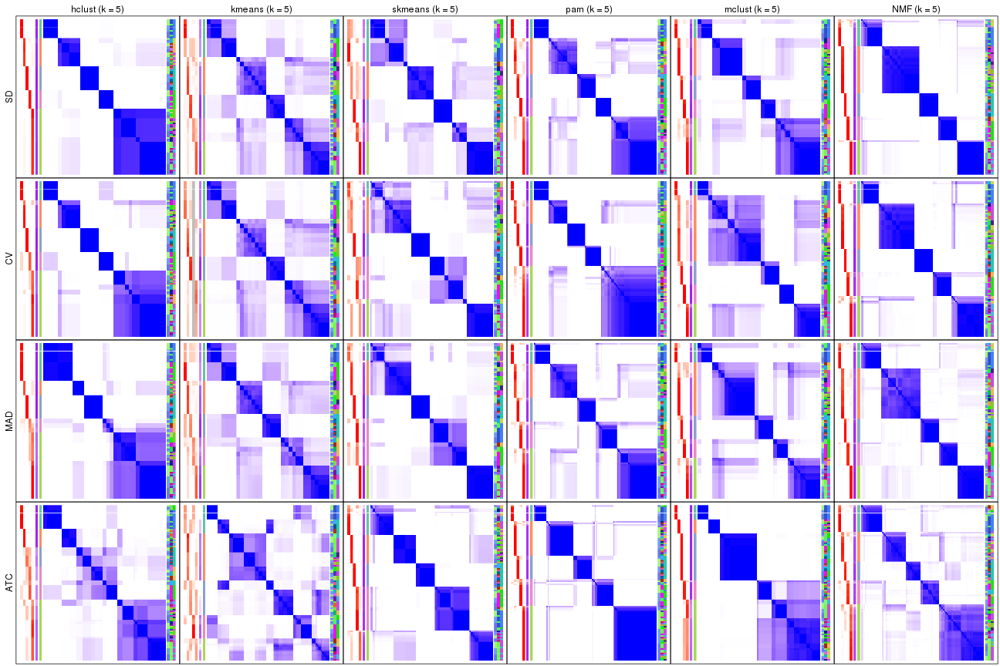
collect_plots(res_list, k = 6, fun = consensus_heatmap, mc.cores = 4)
Membership heatmaps for all methods. (What is a membership heatmap?)
collect_plots(res_list, k = 2, fun = membership_heatmap, mc.cores = 4)
collect_plots(res_list, k = 3, fun = membership_heatmap, mc.cores = 4)
collect_plots(res_list, k = 4, fun = membership_heatmap, mc.cores = 4)
collect_plots(res_list, k = 5, fun = membership_heatmap, mc.cores = 4)
collect_plots(res_list, k = 6, fun = membership_heatmap, mc.cores = 4)
Signature heatmaps for all methods. (What is a signature heatmap?)
Note in following heatmaps, rows are scaled.
collect_plots(res_list, k = 2, fun = get_signatures, mc.cores = 4)
collect_plots(res_list, k = 3, fun = get_signatures, mc.cores = 4)
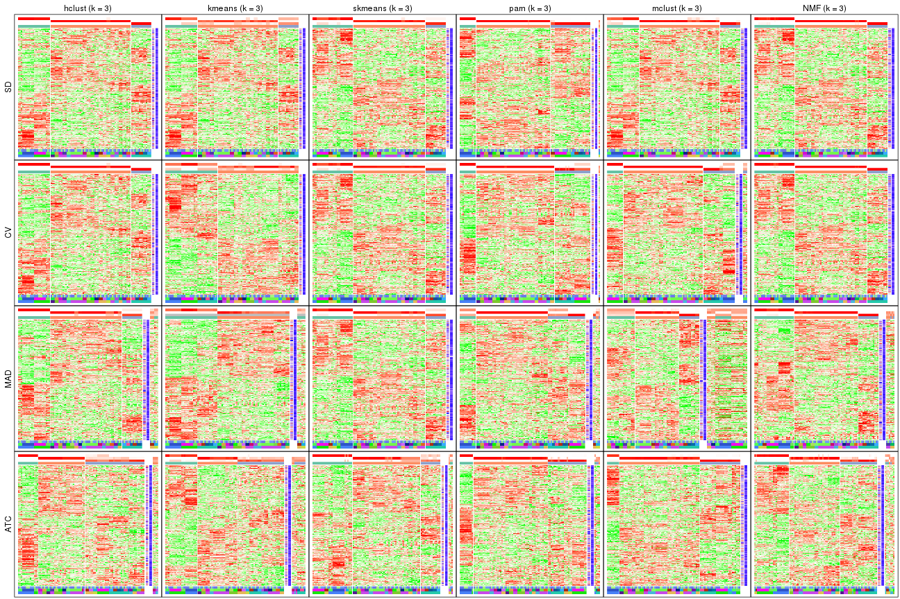
collect_plots(res_list, k = 4, fun = get_signatures, mc.cores = 4)
collect_plots(res_list, k = 5, fun = get_signatures, mc.cores = 4)
collect_plots(res_list, k = 6, fun = get_signatures, mc.cores = 4)
The statistics used for measuring the stability of consensus partitioning. (How are they defined?)
get_stats(res_list, k = 2)
#> k 1-PAC mean_silhouette concordance area_increased Rand Jaccard
#> SD:NMF 2 1.000 0.988 0.994 0.500 0.499 0.499
#> CV:NMF 2 1.000 0.975 0.988 0.498 0.499 0.499
#> MAD:NMF 2 1.000 0.999 0.999 0.501 0.499 0.499
#> ATC:NMF 2 1.000 0.957 0.982 0.451 0.544 0.544
#> SD:skmeans 2 1.000 1.000 1.000 0.501 0.499 0.499
#> CV:skmeans 2 1.000 1.000 1.000 0.501 0.499 0.499
#> MAD:skmeans 2 1.000 1.000 1.000 0.501 0.499 0.499
#> ATC:skmeans 2 0.919 0.972 0.986 0.502 0.497 0.497
#> SD:mclust 2 1.000 0.987 0.991 0.477 0.518 0.518
#> CV:mclust 2 1.000 0.993 0.996 0.481 0.518 0.518
#> MAD:mclust 2 0.562 0.919 0.931 0.436 0.518 0.518
#> ATC:mclust 2 0.543 0.788 0.879 0.286 0.833 0.833
#> SD:kmeans 2 0.556 0.842 0.899 0.453 0.518 0.518
#> CV:kmeans 2 0.603 0.858 0.906 0.440 0.518 0.518
#> MAD:kmeans 2 0.781 0.921 0.937 0.482 0.499 0.499
#> ATC:kmeans 2 0.736 0.969 0.980 0.393 0.619 0.619
#> SD:pam 2 1.000 0.979 0.991 0.494 0.506 0.506
#> CV:pam 2 0.979 0.970 0.986 0.485 0.518 0.518
#> MAD:pam 2 1.000 0.964 0.986 0.497 0.504 0.504
#> ATC:pam 2 0.935 0.939 0.973 0.480 0.518 0.518
#> SD:hclust 2 0.740 0.966 0.981 0.386 0.629 0.629
#> CV:hclust 2 1.000 0.984 0.991 0.379 0.629 0.629
#> MAD:hclust 2 0.682 0.884 0.944 0.465 0.518 0.518
#> ATC:hclust 2 0.833 0.935 0.967 0.298 0.740 0.740
get_stats(res_list, k = 3)
#> k 1-PAC mean_silhouette concordance area_increased Rand Jaccard
#> SD:NMF 3 1.000 0.983 0.991 0.193 0.907 0.814
#> CV:NMF 3 1.000 0.988 0.995 0.189 0.907 0.814
#> MAD:NMF 3 0.953 0.913 0.963 0.233 0.880 0.762
#> ATC:NMF 3 0.661 0.798 0.910 0.454 0.687 0.475
#> SD:skmeans 3 0.876 0.947 0.955 0.198 0.907 0.814
#> CV:skmeans 3 0.902 0.947 0.948 0.199 0.907 0.814
#> MAD:skmeans 3 0.790 0.952 0.935 0.202 0.907 0.814
#> ATC:skmeans 3 0.654 0.820 0.856 0.248 0.887 0.776
#> SD:mclust 3 0.793 0.916 0.944 0.170 0.926 0.857
#> CV:mclust 3 0.899 0.902 0.930 0.131 0.933 0.871
#> MAD:mclust 3 0.517 0.515 0.621 0.423 0.579 0.368
#> ATC:mclust 3 1.000 0.974 0.974 0.910 0.629 0.555
#> SD:kmeans 3 0.607 0.807 0.781 0.305 0.926 0.857
#> CV:kmeans 3 0.544 0.800 0.772 0.334 1.000 1.000
#> MAD:kmeans 3 0.616 0.757 0.783 0.269 1.000 1.000
#> ATC:kmeans 3 0.500 0.749 0.819 0.575 0.709 0.537
#> SD:pam 3 1.000 0.972 0.989 0.150 0.926 0.853
#> CV:pam 3 0.935 0.936 0.963 0.139 0.933 0.871
#> MAD:pam 3 0.914 0.855 0.915 0.167 0.923 0.848
#> ATC:pam 3 0.890 0.897 0.961 0.157 0.884 0.783
#> SD:hclust 3 1.000 0.993 0.996 0.446 0.814 0.705
#> CV:hclust 3 1.000 0.988 0.994 0.479 0.814 0.705
#> MAD:hclust 3 0.710 0.878 0.921 0.279 0.876 0.767
#> ATC:hclust 3 0.535 0.845 0.872 1.021 0.638 0.511
get_stats(res_list, k = 4)
#> k 1-PAC mean_silhouette concordance area_increased Rand Jaccard
#> SD:NMF 4 0.804 0.913 0.921 0.09172 0.940 0.855
#> CV:NMF 4 0.774 0.800 0.797 0.14160 0.954 0.886
#> MAD:NMF 4 0.733 0.789 0.789 0.11480 0.934 0.836
#> ATC:NMF 4 0.671 0.690 0.851 0.12744 0.752 0.408
#> SD:skmeans 4 0.712 0.817 0.846 0.21417 0.857 0.648
#> CV:skmeans 4 0.702 0.802 0.839 0.21246 0.857 0.648
#> MAD:skmeans 4 0.722 0.840 0.874 0.21419 0.857 0.648
#> ATC:skmeans 4 0.947 0.914 0.965 0.16516 0.858 0.649
#> SD:mclust 4 0.788 0.862 0.917 0.15451 0.822 0.624
#> CV:mclust 4 1.000 0.969 0.981 -0.00742 0.878 0.767
#> MAD:mclust 4 0.615 0.893 0.864 0.09109 0.787 0.511
#> ATC:mclust 4 0.637 0.662 0.813 0.24395 0.816 0.602
#> SD:kmeans 4 0.584 0.607 0.673 0.16644 0.755 0.490
#> CV:kmeans 4 0.613 0.674 0.725 0.17939 0.748 0.513
#> MAD:kmeans 4 0.530 0.445 0.640 0.14175 0.729 0.480
#> ATC:kmeans 4 0.558 0.768 0.799 0.15922 0.890 0.690
#> SD:pam 4 0.979 0.964 0.986 0.07785 0.954 0.893
#> CV:pam 4 1.000 0.976 0.991 0.07243 0.962 0.917
#> MAD:pam 4 0.991 0.947 0.979 0.07767 0.945 0.872
#> ATC:pam 4 0.728 0.832 0.902 0.27693 0.772 0.517
#> SD:hclust 4 0.830 0.956 0.934 0.24433 0.844 0.649
#> CV:hclust 4 0.783 0.928 0.933 0.24556 0.844 0.649
#> MAD:hclust 4 0.785 0.859 0.900 0.19142 0.846 0.644
#> ATC:hclust 4 0.649 0.846 0.895 0.17716 0.918 0.784
get_stats(res_list, k = 5)
#> k 1-PAC mean_silhouette concordance area_increased Rand Jaccard
#> SD:NMF 5 0.990 0.940 0.971 0.2115 0.823 0.531
#> CV:NMF 5 0.931 0.891 0.953 0.1604 0.837 0.556
#> MAD:NMF 5 0.902 0.932 0.948 0.1429 0.837 0.552
#> ATC:NMF 5 0.806 0.845 0.904 0.0541 0.881 0.603
#> SD:skmeans 5 0.752 0.779 0.816 0.0804 0.918 0.705
#> CV:skmeans 5 0.774 0.711 0.785 0.0809 0.923 0.721
#> MAD:skmeans 5 0.874 0.860 0.886 0.0800 0.950 0.811
#> ATC:skmeans 5 0.862 0.905 0.908 0.0813 0.904 0.662
#> SD:mclust 5 0.760 0.876 0.929 0.1830 0.792 0.459
#> CV:mclust 5 0.678 0.778 0.872 0.3780 0.772 0.529
#> MAD:mclust 5 0.746 0.747 0.894 0.1123 0.867 0.578
#> ATC:mclust 5 0.854 0.866 0.885 0.0726 0.844 0.558
#> SD:kmeans 5 0.627 0.747 0.732 0.1026 0.868 0.564
#> CV:kmeans 5 0.621 0.622 0.696 0.0780 1.000 1.000
#> MAD:kmeans 5 0.574 0.760 0.742 0.0922 0.872 0.571
#> ATC:kmeans 5 0.685 0.375 0.607 0.0806 0.878 0.587
#> SD:pam 5 0.800 0.859 0.925 0.2495 0.828 0.567
#> CV:pam 5 0.867 0.883 0.944 0.2487 0.861 0.663
#> MAD:pam 5 0.804 0.870 0.932 0.2448 0.826 0.547
#> ATC:pam 5 0.952 0.909 0.963 0.0853 0.901 0.673
#> SD:hclust 5 0.844 0.968 0.967 0.0676 0.970 0.897
#> CV:hclust 5 0.848 0.918 0.923 0.0701 0.970 0.897
#> MAD:hclust 5 0.801 0.869 0.886 0.0381 0.983 0.942
#> ATC:hclust 5 0.683 0.739 0.822 0.0823 0.948 0.825
get_stats(res_list, k = 6)
#> k 1-PAC mean_silhouette concordance area_increased Rand Jaccard
#> SD:NMF 6 0.972 0.934 0.968 0.0546 0.944 0.739
#> CV:NMF 6 0.925 0.874 0.943 0.0547 0.955 0.791
#> MAD:NMF 6 0.969 0.932 0.968 0.0578 0.948 0.760
#> ATC:NMF 6 0.737 0.752 0.822 0.0515 0.906 0.612
#> SD:skmeans 6 0.909 0.885 0.903 0.0480 0.942 0.733
#> CV:skmeans 6 0.869 0.859 0.893 0.0490 0.930 0.686
#> MAD:skmeans 6 0.904 0.878 0.896 0.0462 0.947 0.755
#> ATC:skmeans 6 0.902 0.779 0.860 0.0483 0.972 0.863
#> SD:mclust 6 0.863 0.859 0.924 0.0692 0.894 0.599
#> CV:mclust 6 0.860 0.826 0.911 0.1010 0.876 0.559
#> MAD:mclust 6 0.832 0.867 0.922 0.0810 0.851 0.476
#> ATC:mclust 6 0.820 0.837 0.886 0.0884 0.918 0.703
#> SD:kmeans 6 0.651 0.843 0.765 0.0498 0.948 0.752
#> CV:kmeans 6 0.655 0.785 0.761 0.0644 0.859 0.510
#> MAD:kmeans 6 0.672 0.762 0.762 0.0545 1.000 1.000
#> ATC:kmeans 6 0.761 0.641 0.731 0.0472 0.862 0.464
#> SD:pam 6 0.957 0.917 0.965 0.0867 0.895 0.592
#> CV:pam 6 0.945 0.903 0.959 0.0941 0.898 0.644
#> MAD:pam 6 0.959 0.910 0.962 0.0686 0.915 0.637
#> ATC:pam 6 0.927 0.893 0.956 0.0726 0.946 0.763
#> SD:hclust 6 0.891 0.972 0.972 0.0270 0.983 0.935
#> CV:hclust 6 0.911 0.948 0.959 0.0662 0.939 0.763
#> MAD:hclust 6 0.856 0.882 0.909 0.0824 0.911 0.671
#> ATC:hclust 6 0.739 0.758 0.804 0.0542 0.926 0.706
Following heatmap plots the partition for each combination of methods and the lightness correspond to the silhouette scores for samples in each method. On top the consensus subgroup is inferred from all methods by taking the mean silhouette scores as weight.
collect_stats(res_list, k = 2)
collect_stats(res_list, k = 3)
collect_stats(res_list, k = 4)
collect_stats(res_list, k = 5)
collect_stats(res_list, k = 6)
Collect partitions from all methods:
collect_classes(res_list, k = 2)
collect_classes(res_list, k = 3)
collect_classes(res_list, k = 4)
collect_classes(res_list, k = 5)
collect_classes(res_list, k = 6)
Overlap of top rows from different top-row methods:
top_rows_overlap(res_list, top_n = 1000, method = "euler")
top_rows_overlap(res_list, top_n = 2000, method = "euler")
top_rows_overlap(res_list, top_n = 3000, method = "euler")

top_rows_overlap(res_list, top_n = 4000, method = "euler")
top_rows_overlap(res_list, top_n = 5000, method = "euler")
Also visualize the correspondance of rankings between different top-row methods:
top_rows_overlap(res_list, top_n = 1000, method = "correspondance")
top_rows_overlap(res_list, top_n = 2000, method = "correspondance")
top_rows_overlap(res_list, top_n = 3000, method = "correspondance")
top_rows_overlap(res_list, top_n = 4000, method = "correspondance")
top_rows_overlap(res_list, top_n = 5000, method = "correspondance")
Heatmaps of the top rows:
top_rows_heatmap(res_list, top_n = 1000)
#> Error : The width or height of the raster image is zero, maybe you forget to turn off the
#> previous graphic device or it was corrupted. Run `dev.off()` to close it.
#> Error : The width or height of the raster image is zero, maybe you forget to turn off the
#> previous graphic device or it was corrupted. Run `dev.off()` to close it.
#> Error : The width or height of the raster image is zero, maybe you forget to turn off the
#> previous graphic device or it was corrupted. Run `dev.off()` to close it.
#> Error : The width or height of the raster image is zero, maybe you forget to turn off the
#> previous graphic device or it was corrupted. Run `dev.off()` to close it.
top_rows_heatmap(res_list, top_n = 2000)
#> Error : The width or height of the raster image is zero, maybe you forget to turn off the
#> previous graphic device or it was corrupted. Run `dev.off()` to close it.
#> Error : The width or height of the raster image is zero, maybe you forget to turn off the
#> previous graphic device or it was corrupted. Run `dev.off()` to close it.
#> Error : The width or height of the raster image is zero, maybe you forget to turn off the
#> previous graphic device or it was corrupted. Run `dev.off()` to close it.
#> Error : The width or height of the raster image is zero, maybe you forget to turn off the
#> previous graphic device or it was corrupted. Run `dev.off()` to close it.
top_rows_heatmap(res_list, top_n = 3000)
#> Error : The width or height of the raster image is zero, maybe you forget to turn off the
#> previous graphic device or it was corrupted. Run `dev.off()` to close it.
#> Error : The width or height of the raster image is zero, maybe you forget to turn off the
#> previous graphic device or it was corrupted. Run `dev.off()` to close it.
#> Error : The width or height of the raster image is zero, maybe you forget to turn off the
#> previous graphic device or it was corrupted. Run `dev.off()` to close it.
#> Error : The width or height of the raster image is zero, maybe you forget to turn off the
#> previous graphic device or it was corrupted. Run `dev.off()` to close it.
top_rows_heatmap(res_list, top_n = 4000)
#> Error : The width or height of the raster image is zero, maybe you forget to turn off the
#> previous graphic device or it was corrupted. Run `dev.off()` to close it.
#> Error : The width or height of the raster image is zero, maybe you forget to turn off the
#> previous graphic device or it was corrupted. Run `dev.off()` to close it.
#> Error : The width or height of the raster image is zero, maybe you forget to turn off the
#> previous graphic device or it was corrupted. Run `dev.off()` to close it.
#> Error : The width or height of the raster image is zero, maybe you forget to turn off the
#> previous graphic device or it was corrupted. Run `dev.off()` to close it.
top_rows_heatmap(res_list, top_n = 5000)
#> Error : The width or height of the raster image is zero, maybe you forget to turn off the
#> previous graphic device or it was corrupted. Run `dev.off()` to close it.
#> Error : The width or height of the raster image is zero, maybe you forget to turn off the
#> previous graphic device or it was corrupted. Run `dev.off()` to close it.
#> Error : The width or height of the raster image is zero, maybe you forget to turn off the
#> previous graphic device or it was corrupted. Run `dev.off()` to close it.
#> Error : The width or height of the raster image is zero, maybe you forget to turn off the
#> previous graphic device or it was corrupted. Run `dev.off()` to close it.
Test correlation between subgroups and known annotations. If the known annotation is numeric, one-way ANOVA test is applied, and if the known annotation is discrete, chi-squared contingency table test is applied.
test_to_known_factors(res_list, k = 2)
#> n protocol(p) individual(p) disease.state(p) k
#> SD:NMF 99 1.000 1.88e-10 3.01e-16 2
#> CV:NMF 98 0.987 2.75e-10 4.84e-16 2
#> MAD:NMF 99 1.000 1.88e-10 3.01e-16 2
#> ATC:NMF 96 0.306 8.59e-08 1.70e-13 2
#> SD:skmeans 99 1.000 1.88e-10 3.01e-16 2
#> CV:skmeans 99 1.000 1.88e-10 3.01e-16 2
#> MAD:skmeans 99 1.000 1.88e-10 3.01e-16 2
#> ATC:skmeans 99 0.960 5.21e-10 4.51e-16 2
#> SD:mclust 99 1.000 1.88e-10 6.83e-18 2
#> CV:mclust 99 1.000 1.88e-10 6.83e-18 2
#> MAD:mclust 99 1.000 1.88e-10 6.83e-18 2
#> ATC:mclust 99 1.000 1.88e-10 2.18e-12 2
#> SD:kmeans 96 1.000 2.93e-10 2.80e-17 2
#> CV:kmeans 99 1.000 1.88e-10 6.83e-18 2
#> MAD:kmeans 99 1.000 1.88e-10 3.01e-16 2
#> ATC:kmeans 99 0.948 7.19e-10 3.59e-17 2
#> SD:pam 98 0.992 2.75e-10 5.03e-16 2
#> CV:pam 98 0.993 2.75e-10 1.09e-17 2
#> MAD:pam 96 1.000 2.93e-10 3.38e-16 2
#> ATC:pam 96 0.654 1.03e-08 4.70e-14 2
#> SD:hclust 99 1.000 1.88e-10 6.83e-18 2
#> CV:hclust 99 1.000 1.88e-10 6.83e-18 2
#> MAD:hclust 96 1.000 2.93e-10 7.21e-18 2
#> ATC:hclust 99 1.000 1.88e-10 2.44e-14 2
test_to_known_factors(res_list, k = 3)
#> n protocol(p) individual(p) disease.state(p) k
#> SD:NMF 99 1.000 6.75e-19 2.36e-31 3
#> CV:NMF 99 1.000 6.75e-19 2.36e-31 3
#> MAD:NMF 93 1.000 3.93e-18 1.73e-29 3
#> ATC:NMF 92 0.968 1.43e-15 2.69e-21 3
#> SD:skmeans 99 1.000 6.75e-19 2.36e-31 3
#> CV:skmeans 99 1.000 6.75e-19 2.36e-31 3
#> MAD:skmeans 99 1.000 6.75e-19 2.36e-31 3
#> ATC:skmeans 96 0.989 1.63e-17 3.61e-30 3
#> SD:mclust 99 1.000 6.75e-19 2.01e-33 3
#> CV:mclust 96 1.000 1.63e-18 3.26e-32 3
#> MAD:mclust 69 1.000 1.06e-12 4.15e-17 3
#> ATC:mclust 99 1.000 6.75e-19 5.72e-27 3
#> SD:kmeans 99 1.000 6.75e-19 2.01e-33 3
#> CV:kmeans 99 1.000 1.88e-10 6.83e-18 3
#> MAD:kmeans 93 1.000 4.57e-10 2.99e-17 3
#> ATC:kmeans 89 1.000 2.02e-17 3.21e-21 3
#> SD:pam 98 1.000 1.43e-18 5.34e-31 3
#> CV:pam 98 1.000 1.43e-18 5.09e-33 3
#> MAD:pam 94 1.000 7.32e-18 1.19e-31 3
#> ATC:pam 95 0.991 1.01e-15 1.06e-21 3
#> SD:hclust 99 1.000 6.75e-19 2.01e-33 3
#> CV:hclust 99 1.000 6.75e-19 2.01e-33 3
#> MAD:hclust 93 1.000 3.93e-18 3.92e-32 3
#> ATC:hclust 95 0.998 1.33e-17 5.20e-22 3
test_to_known_factors(res_list, k = 4)
#> n protocol(p) individual(p) disease.state(p) k
#> SD:NMF 97 1.000 2.57e-26 2.22e-44 4
#> CV:NMF 95 1.000 3.17e-26 1.39e-45 4
#> MAD:NMF 96 1.000 7.81e-26 1.31e-44 4
#> ATC:NMF 85 0.467 3.52e-17 1.23e-22 4
#> SD:skmeans 90 1.000 1.43e-25 2.58e-33 4
#> CV:skmeans 90 1.000 1.43e-25 2.58e-33 4
#> MAD:skmeans 93 1.000 3.85e-26 1.16e-34 4
#> ATC:skmeans 94 0.956 1.48e-23 5.17e-30 4
#> SD:mclust 99 1.000 2.76e-27 4.11e-43 4
#> CV:mclust 99 1.000 2.76e-27 1.30e-38 4
#> MAD:mclust 99 1.000 2.76e-27 6.32e-38 4
#> ATC:mclust 72 1.000 3.43e-22 8.61e-22 4
#> SD:kmeans 66 1.000 3.39e-19 1.72e-28 4
#> CV:kmeans 84 1.000 1.96e-24 8.98e-34 4
#> MAD:kmeans 57 1.000 1.12e-13 5.72e-21 4
#> ATC:kmeans 96 1.000 1.03e-26 1.88e-35 4
#> SD:pam 99 1.000 2.76e-27 1.50e-45 4
#> CV:pam 98 0.999 3.04e-25 1.43e-45 4
#> MAD:pam 96 1.000 1.03e-26 1.79e-45 4
#> ATC:pam 94 0.998 2.79e-22 8.06e-23 4
#> SD:hclust 99 1.000 2.76e-27 1.46e-41 4
#> CV:hclust 99 1.000 2.76e-27 1.46e-41 4
#> MAD:hclust 96 1.000 1.03e-26 1.32e-40 4
#> ATC:hclust 95 1.000 2.36e-25 4.28e-25 4
test_to_known_factors(res_list, k = 5)
#> n protocol(p) individual(p) disease.state(p) k
#> SD:NMF 96 1.000 1.01e-33 2.62e-47 5
#> CV:NMF 93 1.000 5.96e-33 3.57e-48 5
#> MAD:NMF 99 1.000 1.19e-34 6.63e-49 5
#> ATC:NMF 95 0.849 3.64e-27 4.85e-33 5
#> SD:skmeans 93 1.000 3.99e-34 2.50e-43 5
#> CV:skmeans 90 1.000 2.29e-33 2.89e-39 5
#> MAD:skmeans 93 1.000 3.99e-34 6.41e-37 5
#> ATC:skmeans 96 0.999 5.37e-33 1.20e-35 5
#> SD:mclust 99 1.000 1.19e-35 2.25e-53 5
#> CV:mclust 85 1.000 2.65e-31 2.95e-47 5
#> MAD:mclust 84 1.000 7.45e-32 7.94e-47 5
#> ATC:mclust 98 1.000 5.28e-35 7.55e-28 5
#> SD:kmeans 93 1.000 3.99e-34 3.50e-44 5
#> CV:kmeans 78 1.000 2.62e-23 4.35e-33 5
#> MAD:kmeans 96 1.000 6.92e-35 5.59e-47 5
#> ATC:kmeans 51 1.000 1.37e-11 2.15e-09 5
#> SD:pam 96 1.000 1.01e-33 3.79e-48 5
#> CV:pam 95 1.000 1.36e-31 1.51e-50 5
#> MAD:pam 94 1.000 5.34e-33 4.73e-50 5
#> ATC:pam 95 0.998 9.64e-30 7.95e-37 5
#> SD:hclust 99 1.000 1.19e-35 5.13e-57 5
#> CV:hclust 99 1.000 1.19e-35 5.13e-57 5
#> MAD:hclust 99 1.000 1.19e-35 2.78e-43 5
#> ATC:hclust 92 1.000 2.60e-32 4.14e-36 5
test_to_known_factors(res_list, k = 6)
#> n protocol(p) individual(p) disease.state(p) k
#> SD:NMF 96 1.000 1.36e-41 1.58e-50 6
#> CV:NMF 92 1.000 2.75e-41 1.45e-50 6
#> MAD:NMF 96 1.000 2.14e-39 3.86e-48 6
#> ATC:NMF 90 0.998 1.13e-35 6.12e-39 6
#> SD:skmeans 93 1.000 4.26e-42 4.26e-58 6
#> CV:skmeans 91 1.000 1.77e-40 1.03e-51 6
#> MAD:skmeans 94 1.000 1.96e-41 5.59e-50 6
#> ATC:skmeans 84 1.000 6.44e-35 1.35e-37 6
#> SD:mclust 94 1.000 1.96e-41 1.11e-46 6
#> CV:mclust 90 1.000 3.78e-41 2.53e-56 6
#> MAD:mclust 96 1.000 4.78e-43 2.26e-46 6
#> ATC:mclust 93 1.000 4.26e-42 6.55e-29 6
#> SD:kmeans 96 1.000 4.78e-43 8.30e-62 6
#> CV:kmeans 93 1.000 4.26e-42 2.07e-58 6
#> MAD:kmeans 93 1.000 3.99e-34 3.50e-44 6
#> ATC:kmeans 73 1.000 6.71e-26 1.30e-38 6
#> SD:pam 94 1.000 1.96e-41 3.95e-59 6
#> CV:pam 94 1.000 1.55e-38 1.48e-54 6
#> MAD:pam 93 1.000 3.26e-39 6.17e-56 6
#> ATC:pam 93 1.000 3.84e-37 5.67e-40 6
#> SD:hclust 99 1.000 5.33e-44 1.11e-58 6
#> CV:hclust 99 1.000 5.33e-44 4.94e-55 6
#> MAD:hclust 99 1.000 5.33e-44 1.81e-50 6
#> ATC:hclust 92 1.000 7.80e-40 8.64e-38 6
The object with results only for a single top-value method and a single partition method can be extracted as:
res = res_list["SD", "hclust"]
# you can also extract it by
# res = res_list["SD:hclust"]
A summary of res and all the functions that can be applied to it:
res
#> A 'ConsensusPartition' object with k = 2, 3, 4, 5, 6.
#> On a matrix with 51941 rows and 99 columns.
#> Top rows (1000, 2000, 3000, 4000, 5000) are extracted by 'SD' method.
#> Subgroups are detected by 'hclust' method.
#> Performed in total 1250 partitions by row resampling.
#> Best k for subgroups seems to be 3.
#>
#> Following methods can be applied to this 'ConsensusPartition' object:
#> [1] "cola_report" "collect_classes" "collect_plots"
#> [4] "collect_stats" "colnames" "compare_signatures"
#> [7] "consensus_heatmap" "dimension_reduction" "functional_enrichment"
#> [10] "get_anno_col" "get_anno" "get_classes"
#> [13] "get_consensus" "get_matrix" "get_membership"
#> [16] "get_param" "get_signatures" "get_stats"
#> [19] "is_best_k" "is_stable_k" "membership_heatmap"
#> [22] "ncol" "nrow" "plot_ecdf"
#> [25] "rownames" "select_partition_number" "show"
#> [28] "suggest_best_k" "test_to_known_factors"
collect_plots() function collects all the plots made from res for all k (number of partitions)
into one single page to provide an easy and fast comparison between different k.
collect_plots(res)
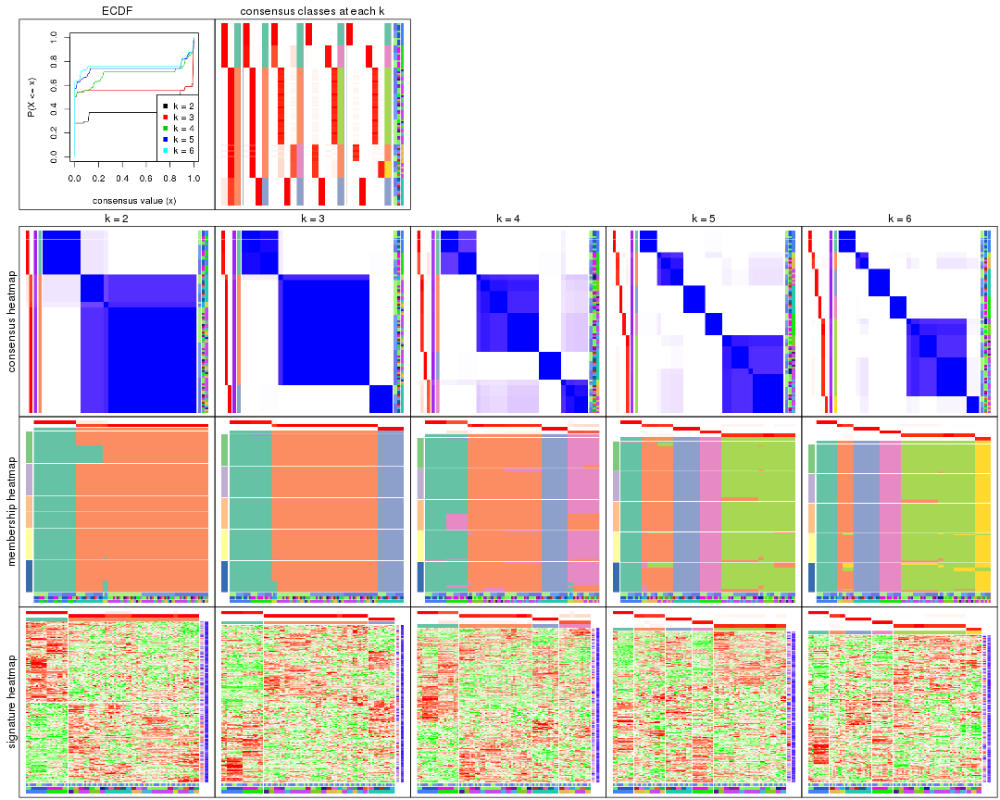
The plots are:
k and the heatmap of
predicted classes for each k.k.k.k.All the plots in panels can be made by individual functions and they are plotted later in this section.
select_partition_number() produces several plots showing different
statistics for choosing “optimized” k. There are following statistics:
k;k, the area increased is defined as \(A_k - A_{k-1}\).The detailed explanations of these statistics can be found in the cola vignette.
Generally speaking, lower PAC score, higher mean silhouette score or higher
concordance corresponds to better partition. Rand index and Jaccard index
measure how similar the current partition is compared to partition with k-1.
If they are too similar, we won't accept k is better than k-1.
select_partition_number(res)
The numeric values for all these statistics can be obtained by get_stats().
get_stats(res)
#> k 1-PAC mean_silhouette concordance area_increased Rand Jaccard
#> 2 2 0.740 0.966 0.981 0.3864 0.629 0.629
#> 3 3 1.000 0.993 0.996 0.4455 0.814 0.705
#> 4 4 0.830 0.956 0.934 0.2443 0.844 0.649
#> 5 5 0.844 0.968 0.967 0.0676 0.970 0.897
#> 6 6 0.891 0.972 0.972 0.0270 0.983 0.935
suggest_best_k() suggests the best \(k\) based on these statistics. The rules are as follows:
suggest_best_k(res)
#> [1] 3
Following shows the table of the partitions (You need to click the show/hide
code output link to see it). The membership matrix (columns with name p*)
is inferred by
clue::cl_consensus()
function with the SE method. Basically the value in the membership matrix
represents the probability to belong to a certain group. The finall class
label for an item is determined with the group with highest probability it
belongs to.
In get_classes() function, the entropy is calculated from the membership
matrix and the silhouette score is calculated from the consensus matrix.
cbind(get_classes(res, k = 2), get_membership(res, k = 2))
#> class entropy silhouette p1 p2
#> GSM187698 2 0.402 0.911 0.080 0.920
#> GSM187701 2 0.000 0.973 0.000 1.000
#> GSM187704 2 0.506 0.898 0.112 0.888
#> GSM187707 2 0.000 0.973 0.000 1.000
#> GSM187710 2 0.000 0.973 0.000 1.000
#> GSM187713 2 0.000 0.973 0.000 1.000
#> GSM187716 2 0.000 0.973 0.000 1.000
#> GSM187719 1 0.000 1.000 1.000 0.000
#> GSM187722 2 0.000 0.973 0.000 1.000
#> GSM187725 2 0.506 0.898 0.112 0.888
#> GSM187728 2 0.000 0.973 0.000 1.000
#> GSM187731 2 0.000 0.973 0.000 1.000
#> GSM187734 2 0.000 0.973 0.000 1.000
#> GSM187737 2 0.000 0.973 0.000 1.000
#> GSM187740 2 0.000 0.973 0.000 1.000
#> GSM187743 1 0.000 1.000 1.000 0.000
#> GSM187746 2 0.506 0.898 0.112 0.888
#> GSM187749 2 0.506 0.898 0.112 0.888
#> GSM187752 2 0.000 0.973 0.000 1.000
#> GSM187755 2 0.000 0.973 0.000 1.000
#> GSM187758 2 0.506 0.898 0.112 0.888
#> GSM187761 2 0.000 0.973 0.000 1.000
#> GSM187764 2 0.000 0.973 0.000 1.000
#> GSM187767 2 0.000 0.973 0.000 1.000
#> GSM187770 1 0.000 1.000 1.000 0.000
#> GSM187771 1 0.000 1.000 1.000 0.000
#> GSM187772 1 0.000 1.000 1.000 0.000
#> GSM187780 1 0.000 1.000 1.000 0.000
#> GSM187781 1 0.000 1.000 1.000 0.000
#> GSM187782 1 0.000 1.000 1.000 0.000
#> GSM187788 2 0.000 0.973 0.000 1.000
#> GSM187789 2 0.000 0.973 0.000 1.000
#> GSM187790 2 0.000 0.973 0.000 1.000
#> GSM187699 2 0.402 0.911 0.080 0.920
#> GSM187702 2 0.000 0.973 0.000 1.000
#> GSM187705 2 0.506 0.898 0.112 0.888
#> GSM187708 2 0.000 0.973 0.000 1.000
#> GSM187711 2 0.000 0.973 0.000 1.000
#> GSM187714 2 0.000 0.973 0.000 1.000
#> GSM187717 2 0.000 0.973 0.000 1.000
#> GSM187720 1 0.000 1.000 1.000 0.000
#> GSM187723 2 0.000 0.973 0.000 1.000
#> GSM187726 2 0.506 0.898 0.112 0.888
#> GSM187729 2 0.000 0.973 0.000 1.000
#> GSM187732 2 0.000 0.973 0.000 1.000
#> GSM187735 2 0.000 0.973 0.000 1.000
#> GSM187738 2 0.000 0.973 0.000 1.000
#> GSM187741 2 0.000 0.973 0.000 1.000
#> GSM187744 1 0.000 1.000 1.000 0.000
#> GSM187747 2 0.506 0.898 0.112 0.888
#> GSM187750 2 0.506 0.898 0.112 0.888
#> GSM187753 2 0.000 0.973 0.000 1.000
#> GSM187756 2 0.000 0.973 0.000 1.000
#> GSM187759 2 0.506 0.898 0.112 0.888
#> GSM187762 2 0.000 0.973 0.000 1.000
#> GSM187765 2 0.000 0.973 0.000 1.000
#> GSM187768 2 0.000 0.973 0.000 1.000
#> GSM187773 1 0.000 1.000 1.000 0.000
#> GSM187774 1 0.000 1.000 1.000 0.000
#> GSM187775 1 0.000 1.000 1.000 0.000
#> GSM187776 1 0.000 1.000 1.000 0.000
#> GSM187783 1 0.000 1.000 1.000 0.000
#> GSM187784 1 0.000 1.000 1.000 0.000
#> GSM187791 2 0.000 0.973 0.000 1.000
#> GSM187792 2 0.000 0.973 0.000 1.000
#> GSM187793 2 0.000 0.973 0.000 1.000
#> GSM187700 2 0.402 0.911 0.080 0.920
#> GSM187703 2 0.000 0.973 0.000 1.000
#> GSM187706 2 0.506 0.898 0.112 0.888
#> GSM187709 2 0.000 0.973 0.000 1.000
#> GSM187712 2 0.000 0.973 0.000 1.000
#> GSM187715 2 0.000 0.973 0.000 1.000
#> GSM187718 2 0.000 0.973 0.000 1.000
#> GSM187721 1 0.000 1.000 1.000 0.000
#> GSM187724 2 0.000 0.973 0.000 1.000
#> GSM187727 2 0.506 0.898 0.112 0.888
#> GSM187730 2 0.000 0.973 0.000 1.000
#> GSM187733 2 0.000 0.973 0.000 1.000
#> GSM187736 2 0.000 0.973 0.000 1.000
#> GSM187739 2 0.000 0.973 0.000 1.000
#> GSM187742 2 0.000 0.973 0.000 1.000
#> GSM187745 1 0.000 1.000 1.000 0.000
#> GSM187748 2 0.506 0.898 0.112 0.888
#> GSM187751 2 0.506 0.898 0.112 0.888
#> GSM187754 2 0.000 0.973 0.000 1.000
#> GSM187757 2 0.000 0.973 0.000 1.000
#> GSM187760 2 0.506 0.898 0.112 0.888
#> GSM187763 2 0.000 0.973 0.000 1.000
#> GSM187766 2 0.000 0.973 0.000 1.000
#> GSM187769 2 0.000 0.973 0.000 1.000
#> GSM187777 1 0.000 1.000 1.000 0.000
#> GSM187778 1 0.000 1.000 1.000 0.000
#> GSM187779 1 0.000 1.000 1.000 0.000
#> GSM187785 1 0.000 1.000 1.000 0.000
#> GSM187786 1 0.000 1.000 1.000 0.000
#> GSM187787 1 0.000 1.000 1.000 0.000
#> GSM187794 2 0.000 0.973 0.000 1.000
#> GSM187795 2 0.000 0.973 0.000 1.000
#> GSM187796 2 0.000 0.973 0.000 1.000
cbind(get_classes(res, k = 3), get_membership(res, k = 3))
#> class entropy silhouette p1 p2 p3
#> GSM187698 2 0.2537 0.913 0.080 0.92 0.000
#> GSM187701 2 0.0000 0.996 0.000 1.00 0.000
#> GSM187704 3 0.0000 1.000 0.000 0.00 1.000
#> GSM187707 2 0.0000 0.996 0.000 1.00 0.000
#> GSM187710 2 0.0000 0.996 0.000 1.00 0.000
#> GSM187713 2 0.0000 0.996 0.000 1.00 0.000
#> GSM187716 2 0.0000 0.996 0.000 1.00 0.000
#> GSM187719 1 0.0592 0.994 0.988 0.00 0.012
#> GSM187722 2 0.0000 0.996 0.000 1.00 0.000
#> GSM187725 3 0.0000 1.000 0.000 0.00 1.000
#> GSM187728 2 0.0000 0.996 0.000 1.00 0.000
#> GSM187731 2 0.0000 0.996 0.000 1.00 0.000
#> GSM187734 2 0.0000 0.996 0.000 1.00 0.000
#> GSM187737 2 0.0000 0.996 0.000 1.00 0.000
#> GSM187740 2 0.0000 0.996 0.000 1.00 0.000
#> GSM187743 1 0.0000 0.994 1.000 0.00 0.000
#> GSM187746 3 0.0000 1.000 0.000 0.00 1.000
#> GSM187749 3 0.0000 1.000 0.000 0.00 1.000
#> GSM187752 2 0.0000 0.996 0.000 1.00 0.000
#> GSM187755 2 0.0000 0.996 0.000 1.00 0.000
#> GSM187758 3 0.0000 1.000 0.000 0.00 1.000
#> GSM187761 2 0.0000 0.996 0.000 1.00 0.000
#> GSM187764 2 0.0000 0.996 0.000 1.00 0.000
#> GSM187767 2 0.0000 0.996 0.000 1.00 0.000
#> GSM187770 1 0.0592 0.994 0.988 0.00 0.012
#> GSM187771 1 0.0592 0.994 0.988 0.00 0.012
#> GSM187772 1 0.0592 0.994 0.988 0.00 0.012
#> GSM187780 1 0.0000 0.994 1.000 0.00 0.000
#> GSM187781 1 0.0000 0.994 1.000 0.00 0.000
#> GSM187782 1 0.0000 0.994 1.000 0.00 0.000
#> GSM187788 2 0.0000 0.996 0.000 1.00 0.000
#> GSM187789 2 0.0000 0.996 0.000 1.00 0.000
#> GSM187790 2 0.0000 0.996 0.000 1.00 0.000
#> GSM187699 2 0.2537 0.913 0.080 0.92 0.000
#> GSM187702 2 0.0000 0.996 0.000 1.00 0.000
#> GSM187705 3 0.0000 1.000 0.000 0.00 1.000
#> GSM187708 2 0.0000 0.996 0.000 1.00 0.000
#> GSM187711 2 0.0000 0.996 0.000 1.00 0.000
#> GSM187714 2 0.0000 0.996 0.000 1.00 0.000
#> GSM187717 2 0.0000 0.996 0.000 1.00 0.000
#> GSM187720 1 0.0592 0.994 0.988 0.00 0.012
#> GSM187723 2 0.0000 0.996 0.000 1.00 0.000
#> GSM187726 3 0.0000 1.000 0.000 0.00 1.000
#> GSM187729 2 0.0000 0.996 0.000 1.00 0.000
#> GSM187732 2 0.0000 0.996 0.000 1.00 0.000
#> GSM187735 2 0.0000 0.996 0.000 1.00 0.000
#> GSM187738 2 0.0000 0.996 0.000 1.00 0.000
#> GSM187741 2 0.0000 0.996 0.000 1.00 0.000
#> GSM187744 1 0.0000 0.994 1.000 0.00 0.000
#> GSM187747 3 0.0000 1.000 0.000 0.00 1.000
#> GSM187750 3 0.0000 1.000 0.000 0.00 1.000
#> GSM187753 2 0.0000 0.996 0.000 1.00 0.000
#> GSM187756 2 0.0000 0.996 0.000 1.00 0.000
#> GSM187759 3 0.0000 1.000 0.000 0.00 1.000
#> GSM187762 2 0.0000 0.996 0.000 1.00 0.000
#> GSM187765 2 0.0000 0.996 0.000 1.00 0.000
#> GSM187768 2 0.0000 0.996 0.000 1.00 0.000
#> GSM187773 1 0.0592 0.994 0.988 0.00 0.012
#> GSM187774 1 0.0592 0.994 0.988 0.00 0.012
#> GSM187775 1 0.0592 0.994 0.988 0.00 0.012
#> GSM187776 1 0.0000 0.994 1.000 0.00 0.000
#> GSM187783 1 0.0000 0.994 1.000 0.00 0.000
#> GSM187784 1 0.0000 0.994 1.000 0.00 0.000
#> GSM187791 2 0.0000 0.996 0.000 1.00 0.000
#> GSM187792 2 0.0000 0.996 0.000 1.00 0.000
#> GSM187793 2 0.0000 0.996 0.000 1.00 0.000
#> GSM187700 2 0.2537 0.913 0.080 0.92 0.000
#> GSM187703 2 0.0000 0.996 0.000 1.00 0.000
#> GSM187706 3 0.0000 1.000 0.000 0.00 1.000
#> GSM187709 2 0.0000 0.996 0.000 1.00 0.000
#> GSM187712 2 0.0000 0.996 0.000 1.00 0.000
#> GSM187715 2 0.0000 0.996 0.000 1.00 0.000
#> GSM187718 2 0.0000 0.996 0.000 1.00 0.000
#> GSM187721 1 0.0592 0.994 0.988 0.00 0.012
#> GSM187724 2 0.0000 0.996 0.000 1.00 0.000
#> GSM187727 3 0.0000 1.000 0.000 0.00 1.000
#> GSM187730 2 0.0000 0.996 0.000 1.00 0.000
#> GSM187733 2 0.0000 0.996 0.000 1.00 0.000
#> GSM187736 2 0.0000 0.996 0.000 1.00 0.000
#> GSM187739 2 0.0000 0.996 0.000 1.00 0.000
#> GSM187742 2 0.0000 0.996 0.000 1.00 0.000
#> GSM187745 1 0.0000 0.994 1.000 0.00 0.000
#> GSM187748 3 0.0000 1.000 0.000 0.00 1.000
#> GSM187751 3 0.0000 1.000 0.000 0.00 1.000
#> GSM187754 2 0.0000 0.996 0.000 1.00 0.000
#> GSM187757 2 0.0000 0.996 0.000 1.00 0.000
#> GSM187760 3 0.0000 1.000 0.000 0.00 1.000
#> GSM187763 2 0.0000 0.996 0.000 1.00 0.000
#> GSM187766 2 0.0000 0.996 0.000 1.00 0.000
#> GSM187769 2 0.0000 0.996 0.000 1.00 0.000
#> GSM187777 1 0.0592 0.994 0.988 0.00 0.012
#> GSM187778 1 0.0592 0.994 0.988 0.00 0.012
#> GSM187779 1 0.0592 0.994 0.988 0.00 0.012
#> GSM187785 1 0.0000 0.994 1.000 0.00 0.000
#> GSM187786 1 0.0000 0.994 1.000 0.00 0.000
#> GSM187787 1 0.0000 0.994 1.000 0.00 0.000
#> GSM187794 2 0.0000 0.996 0.000 1.00 0.000
#> GSM187795 2 0.0000 0.996 0.000 1.00 0.000
#> GSM187796 2 0.0000 0.996 0.000 1.00 0.000
cbind(get_classes(res, k = 4), get_membership(res, k = 4))
#> class entropy silhouette p1 p2 p3 p4
#> GSM187698 4 0.4094 0.898 0.056 0.116 0.000 0.828
#> GSM187701 4 0.3266 0.968 0.000 0.168 0.000 0.832
#> GSM187704 3 0.0000 1.000 0.000 0.000 1.000 0.000
#> GSM187707 2 0.0000 0.954 0.000 1.000 0.000 0.000
#> GSM187710 2 0.0921 0.944 0.000 0.972 0.000 0.028
#> GSM187713 2 0.1389 0.959 0.000 0.952 0.000 0.048
#> GSM187716 4 0.3486 0.970 0.000 0.188 0.000 0.812
#> GSM187719 1 0.3377 0.934 0.848 0.000 0.012 0.140
#> GSM187722 4 0.3266 0.968 0.000 0.168 0.000 0.832
#> GSM187725 3 0.0000 1.000 0.000 0.000 1.000 0.000
#> GSM187728 2 0.0921 0.944 0.000 0.972 0.000 0.028
#> GSM187731 2 0.1389 0.959 0.000 0.952 0.000 0.048
#> GSM187734 2 0.1389 0.959 0.000 0.952 0.000 0.048
#> GSM187737 2 0.1557 0.924 0.000 0.944 0.000 0.056
#> GSM187740 2 0.0000 0.954 0.000 1.000 0.000 0.000
#> GSM187743 1 0.0000 0.934 1.000 0.000 0.000 0.000
#> GSM187746 3 0.0000 1.000 0.000 0.000 1.000 0.000
#> GSM187749 3 0.0000 1.000 0.000 0.000 1.000 0.000
#> GSM187752 2 0.1389 0.959 0.000 0.952 0.000 0.048
#> GSM187755 4 0.3486 0.970 0.000 0.188 0.000 0.812
#> GSM187758 3 0.0000 1.000 0.000 0.000 1.000 0.000
#> GSM187761 2 0.0921 0.944 0.000 0.972 0.000 0.028
#> GSM187764 4 0.3486 0.970 0.000 0.188 0.000 0.812
#> GSM187767 2 0.0921 0.944 0.000 0.972 0.000 0.028
#> GSM187770 1 0.3377 0.934 0.848 0.000 0.012 0.140
#> GSM187771 1 0.3377 0.934 0.848 0.000 0.012 0.140
#> GSM187772 1 0.3377 0.934 0.848 0.000 0.012 0.140
#> GSM187780 1 0.0000 0.934 1.000 0.000 0.000 0.000
#> GSM187781 1 0.0000 0.934 1.000 0.000 0.000 0.000
#> GSM187782 1 0.0000 0.934 1.000 0.000 0.000 0.000
#> GSM187788 2 0.1389 0.959 0.000 0.952 0.000 0.048
#> GSM187789 2 0.1389 0.959 0.000 0.952 0.000 0.048
#> GSM187790 2 0.1389 0.959 0.000 0.952 0.000 0.048
#> GSM187699 4 0.4094 0.898 0.056 0.116 0.000 0.828
#> GSM187702 4 0.3266 0.968 0.000 0.168 0.000 0.832
#> GSM187705 3 0.0000 1.000 0.000 0.000 1.000 0.000
#> GSM187708 2 0.0000 0.954 0.000 1.000 0.000 0.000
#> GSM187711 2 0.0921 0.944 0.000 0.972 0.000 0.028
#> GSM187714 2 0.1389 0.959 0.000 0.952 0.000 0.048
#> GSM187717 4 0.3486 0.970 0.000 0.188 0.000 0.812
#> GSM187720 1 0.3377 0.934 0.848 0.000 0.012 0.140
#> GSM187723 4 0.3266 0.968 0.000 0.168 0.000 0.832
#> GSM187726 3 0.0000 1.000 0.000 0.000 1.000 0.000
#> GSM187729 2 0.0921 0.944 0.000 0.972 0.000 0.028
#> GSM187732 2 0.1389 0.959 0.000 0.952 0.000 0.048
#> GSM187735 2 0.1389 0.959 0.000 0.952 0.000 0.048
#> GSM187738 2 0.1557 0.924 0.000 0.944 0.000 0.056
#> GSM187741 2 0.0000 0.954 0.000 1.000 0.000 0.000
#> GSM187744 1 0.0000 0.934 1.000 0.000 0.000 0.000
#> GSM187747 3 0.0000 1.000 0.000 0.000 1.000 0.000
#> GSM187750 3 0.0000 1.000 0.000 0.000 1.000 0.000
#> GSM187753 2 0.1389 0.959 0.000 0.952 0.000 0.048
#> GSM187756 4 0.3486 0.970 0.000 0.188 0.000 0.812
#> GSM187759 3 0.0000 1.000 0.000 0.000 1.000 0.000
#> GSM187762 2 0.0921 0.944 0.000 0.972 0.000 0.028
#> GSM187765 4 0.3486 0.970 0.000 0.188 0.000 0.812
#> GSM187768 2 0.0921 0.944 0.000 0.972 0.000 0.028
#> GSM187773 1 0.3377 0.934 0.848 0.000 0.012 0.140
#> GSM187774 1 0.3377 0.934 0.848 0.000 0.012 0.140
#> GSM187775 1 0.3377 0.934 0.848 0.000 0.012 0.140
#> GSM187776 1 0.0000 0.934 1.000 0.000 0.000 0.000
#> GSM187783 1 0.0000 0.934 1.000 0.000 0.000 0.000
#> GSM187784 1 0.0000 0.934 1.000 0.000 0.000 0.000
#> GSM187791 2 0.1389 0.959 0.000 0.952 0.000 0.048
#> GSM187792 2 0.1389 0.959 0.000 0.952 0.000 0.048
#> GSM187793 2 0.1389 0.959 0.000 0.952 0.000 0.048
#> GSM187700 4 0.4094 0.898 0.056 0.116 0.000 0.828
#> GSM187703 4 0.3266 0.968 0.000 0.168 0.000 0.832
#> GSM187706 3 0.0000 1.000 0.000 0.000 1.000 0.000
#> GSM187709 2 0.0000 0.954 0.000 1.000 0.000 0.000
#> GSM187712 2 0.0921 0.944 0.000 0.972 0.000 0.028
#> GSM187715 2 0.1389 0.959 0.000 0.952 0.000 0.048
#> GSM187718 4 0.3486 0.970 0.000 0.188 0.000 0.812
#> GSM187721 1 0.3377 0.934 0.848 0.000 0.012 0.140
#> GSM187724 4 0.3266 0.968 0.000 0.168 0.000 0.832
#> GSM187727 3 0.0000 1.000 0.000 0.000 1.000 0.000
#> GSM187730 2 0.0921 0.944 0.000 0.972 0.000 0.028
#> GSM187733 2 0.1389 0.959 0.000 0.952 0.000 0.048
#> GSM187736 2 0.1389 0.959 0.000 0.952 0.000 0.048
#> GSM187739 2 0.1557 0.924 0.000 0.944 0.000 0.056
#> GSM187742 2 0.0000 0.954 0.000 1.000 0.000 0.000
#> GSM187745 1 0.0000 0.934 1.000 0.000 0.000 0.000
#> GSM187748 3 0.0000 1.000 0.000 0.000 1.000 0.000
#> GSM187751 3 0.0000 1.000 0.000 0.000 1.000 0.000
#> GSM187754 2 0.1389 0.959 0.000 0.952 0.000 0.048
#> GSM187757 4 0.3486 0.970 0.000 0.188 0.000 0.812
#> GSM187760 3 0.0000 1.000 0.000 0.000 1.000 0.000
#> GSM187763 2 0.0921 0.944 0.000 0.972 0.000 0.028
#> GSM187766 4 0.3486 0.970 0.000 0.188 0.000 0.812
#> GSM187769 2 0.0921 0.944 0.000 0.972 0.000 0.028
#> GSM187777 1 0.3377 0.934 0.848 0.000 0.012 0.140
#> GSM187778 1 0.3377 0.934 0.848 0.000 0.012 0.140
#> GSM187779 1 0.3377 0.934 0.848 0.000 0.012 0.140
#> GSM187785 1 0.0000 0.934 1.000 0.000 0.000 0.000
#> GSM187786 1 0.0000 0.934 1.000 0.000 0.000 0.000
#> GSM187787 1 0.0000 0.934 1.000 0.000 0.000 0.000
#> GSM187794 2 0.1389 0.959 0.000 0.952 0.000 0.048
#> GSM187795 2 0.1389 0.959 0.000 0.952 0.000 0.048
#> GSM187796 2 0.1389 0.959 0.000 0.952 0.000 0.048
cbind(get_classes(res, k = 5), get_membership(res, k = 5))
#> class entropy silhouette p1 p2 p3 p4 p5
#> GSM187698 2 0.1732 0.893 0.000 0.920 0 0.080 0.000
#> GSM187701 2 0.1121 0.964 0.000 0.956 0 0.000 0.044
#> GSM187704 3 0.0000 1.000 0.000 0.000 1 0.000 0.000
#> GSM187707 5 0.0000 0.948 0.000 0.000 0 0.000 1.000
#> GSM187710 5 0.1121 0.934 0.000 0.044 0 0.000 0.956
#> GSM187713 5 0.1410 0.953 0.000 0.060 0 0.000 0.940
#> GSM187716 2 0.1877 0.967 0.000 0.924 0 0.012 0.064
#> GSM187719 4 0.0404 1.000 0.012 0.000 0 0.988 0.000
#> GSM187722 2 0.1121 0.964 0.000 0.956 0 0.000 0.044
#> GSM187725 3 0.0000 1.000 0.000 0.000 1 0.000 0.000
#> GSM187728 5 0.1121 0.934 0.000 0.044 0 0.000 0.956
#> GSM187731 5 0.1410 0.953 0.000 0.060 0 0.000 0.940
#> GSM187734 5 0.1410 0.953 0.000 0.060 0 0.000 0.940
#> GSM187737 5 0.1341 0.926 0.000 0.056 0 0.000 0.944
#> GSM187740 5 0.0000 0.948 0.000 0.000 0 0.000 1.000
#> GSM187743 1 0.0000 1.000 1.000 0.000 0 0.000 0.000
#> GSM187746 3 0.0000 1.000 0.000 0.000 1 0.000 0.000
#> GSM187749 3 0.0000 1.000 0.000 0.000 1 0.000 0.000
#> GSM187752 5 0.1410 0.953 0.000 0.060 0 0.000 0.940
#> GSM187755 2 0.1877 0.967 0.000 0.924 0 0.012 0.064
#> GSM187758 3 0.0000 1.000 0.000 0.000 1 0.000 0.000
#> GSM187761 5 0.1121 0.934 0.000 0.044 0 0.000 0.956
#> GSM187764 2 0.1877 0.967 0.000 0.924 0 0.012 0.064
#> GSM187767 5 0.1121 0.934 0.000 0.044 0 0.000 0.956
#> GSM187770 4 0.0404 1.000 0.012 0.000 0 0.988 0.000
#> GSM187771 4 0.0404 1.000 0.012 0.000 0 0.988 0.000
#> GSM187772 4 0.0404 1.000 0.012 0.000 0 0.988 0.000
#> GSM187780 1 0.0000 1.000 1.000 0.000 0 0.000 0.000
#> GSM187781 1 0.0000 1.000 1.000 0.000 0 0.000 0.000
#> GSM187782 1 0.0000 1.000 1.000 0.000 0 0.000 0.000
#> GSM187788 5 0.1410 0.953 0.000 0.060 0 0.000 0.940
#> GSM187789 5 0.1410 0.953 0.000 0.060 0 0.000 0.940
#> GSM187790 5 0.1410 0.953 0.000 0.060 0 0.000 0.940
#> GSM187699 2 0.1732 0.893 0.000 0.920 0 0.080 0.000
#> GSM187702 2 0.1121 0.964 0.000 0.956 0 0.000 0.044
#> GSM187705 3 0.0000 1.000 0.000 0.000 1 0.000 0.000
#> GSM187708 5 0.0000 0.948 0.000 0.000 0 0.000 1.000
#> GSM187711 5 0.1121 0.934 0.000 0.044 0 0.000 0.956
#> GSM187714 5 0.1410 0.953 0.000 0.060 0 0.000 0.940
#> GSM187717 2 0.1877 0.967 0.000 0.924 0 0.012 0.064
#> GSM187720 4 0.0404 1.000 0.012 0.000 0 0.988 0.000
#> GSM187723 2 0.1121 0.964 0.000 0.956 0 0.000 0.044
#> GSM187726 3 0.0000 1.000 0.000 0.000 1 0.000 0.000
#> GSM187729 5 0.1121 0.934 0.000 0.044 0 0.000 0.956
#> GSM187732 5 0.1410 0.953 0.000 0.060 0 0.000 0.940
#> GSM187735 5 0.1410 0.953 0.000 0.060 0 0.000 0.940
#> GSM187738 5 0.1341 0.926 0.000 0.056 0 0.000 0.944
#> GSM187741 5 0.0000 0.948 0.000 0.000 0 0.000 1.000
#> GSM187744 1 0.0000 1.000 1.000 0.000 0 0.000 0.000
#> GSM187747 3 0.0000 1.000 0.000 0.000 1 0.000 0.000
#> GSM187750 3 0.0000 1.000 0.000 0.000 1 0.000 0.000
#> GSM187753 5 0.1410 0.953 0.000 0.060 0 0.000 0.940
#> GSM187756 2 0.1877 0.967 0.000 0.924 0 0.012 0.064
#> GSM187759 3 0.0000 1.000 0.000 0.000 1 0.000 0.000
#> GSM187762 5 0.1121 0.934 0.000 0.044 0 0.000 0.956
#> GSM187765 2 0.1877 0.967 0.000 0.924 0 0.012 0.064
#> GSM187768 5 0.1121 0.934 0.000 0.044 0 0.000 0.956
#> GSM187773 4 0.0404 1.000 0.012 0.000 0 0.988 0.000
#> GSM187774 4 0.0404 1.000 0.012 0.000 0 0.988 0.000
#> GSM187775 4 0.0404 1.000 0.012 0.000 0 0.988 0.000
#> GSM187776 1 0.0000 1.000 1.000 0.000 0 0.000 0.000
#> GSM187783 1 0.0000 1.000 1.000 0.000 0 0.000 0.000
#> GSM187784 1 0.0000 1.000 1.000 0.000 0 0.000 0.000
#> GSM187791 5 0.1410 0.953 0.000 0.060 0 0.000 0.940
#> GSM187792 5 0.1410 0.953 0.000 0.060 0 0.000 0.940
#> GSM187793 5 0.1410 0.953 0.000 0.060 0 0.000 0.940
#> GSM187700 2 0.1732 0.893 0.000 0.920 0 0.080 0.000
#> GSM187703 2 0.1121 0.964 0.000 0.956 0 0.000 0.044
#> GSM187706 3 0.0000 1.000 0.000 0.000 1 0.000 0.000
#> GSM187709 5 0.0000 0.948 0.000 0.000 0 0.000 1.000
#> GSM187712 5 0.1121 0.934 0.000 0.044 0 0.000 0.956
#> GSM187715 5 0.1410 0.953 0.000 0.060 0 0.000 0.940
#> GSM187718 2 0.1877 0.967 0.000 0.924 0 0.012 0.064
#> GSM187721 4 0.0404 1.000 0.012 0.000 0 0.988 0.000
#> GSM187724 2 0.1121 0.964 0.000 0.956 0 0.000 0.044
#> GSM187727 3 0.0000 1.000 0.000 0.000 1 0.000 0.000
#> GSM187730 5 0.1121 0.934 0.000 0.044 0 0.000 0.956
#> GSM187733 5 0.1410 0.953 0.000 0.060 0 0.000 0.940
#> GSM187736 5 0.1410 0.953 0.000 0.060 0 0.000 0.940
#> GSM187739 5 0.1341 0.926 0.000 0.056 0 0.000 0.944
#> GSM187742 5 0.0000 0.948 0.000 0.000 0 0.000 1.000
#> GSM187745 1 0.0000 1.000 1.000 0.000 0 0.000 0.000
#> GSM187748 3 0.0000 1.000 0.000 0.000 1 0.000 0.000
#> GSM187751 3 0.0000 1.000 0.000 0.000 1 0.000 0.000
#> GSM187754 5 0.1410 0.953 0.000 0.060 0 0.000 0.940
#> GSM187757 2 0.1877 0.967 0.000 0.924 0 0.012 0.064
#> GSM187760 3 0.0000 1.000 0.000 0.000 1 0.000 0.000
#> GSM187763 5 0.1121 0.934 0.000 0.044 0 0.000 0.956
#> GSM187766 2 0.1877 0.967 0.000 0.924 0 0.012 0.064
#> GSM187769 5 0.1121 0.934 0.000 0.044 0 0.000 0.956
#> GSM187777 4 0.0404 1.000 0.012 0.000 0 0.988 0.000
#> GSM187778 4 0.0404 1.000 0.012 0.000 0 0.988 0.000
#> GSM187779 4 0.0404 1.000 0.012 0.000 0 0.988 0.000
#> GSM187785 1 0.0000 1.000 1.000 0.000 0 0.000 0.000
#> GSM187786 1 0.0000 1.000 1.000 0.000 0 0.000 0.000
#> GSM187787 1 0.0000 1.000 1.000 0.000 0 0.000 0.000
#> GSM187794 5 0.1410 0.953 0.000 0.060 0 0.000 0.940
#> GSM187795 5 0.1410 0.953 0.000 0.060 0 0.000 0.940
#> GSM187796 5 0.1410 0.953 0.000 0.060 0 0.000 0.940
cbind(get_classes(res, k = 6), get_membership(res, k = 6))
#> class entropy silhouette p1 p2 p3 p4 p5 p6
#> GSM187698 2 0.0458 0.915 0 0.984 0 0.016 0.000 0.000
#> GSM187701 2 0.1863 0.957 0 0.920 0 0.000 0.044 0.036
#> GSM187704 3 0.0000 1.000 0 0.000 1 0.000 0.000 0.000
#> GSM187707 5 0.0000 0.948 0 0.000 0 0.000 1.000 0.000
#> GSM187710 5 0.1151 0.934 0 0.012 0 0.000 0.956 0.032
#> GSM187713 5 0.1434 0.954 0 0.048 0 0.000 0.940 0.012
#> GSM187716 6 0.0790 1.000 0 0.000 0 0.000 0.032 0.968
#> GSM187719 4 0.0000 1.000 0 0.000 0 1.000 0.000 0.000
#> GSM187722 2 0.1863 0.957 0 0.920 0 0.000 0.044 0.036
#> GSM187725 3 0.0000 1.000 0 0.000 1 0.000 0.000 0.000
#> GSM187728 5 0.1151 0.934 0 0.012 0 0.000 0.956 0.032
#> GSM187731 5 0.1434 0.954 0 0.048 0 0.000 0.940 0.012
#> GSM187734 5 0.1434 0.954 0 0.048 0 0.000 0.940 0.012
#> GSM187737 5 0.1418 0.924 0 0.032 0 0.000 0.944 0.024
#> GSM187740 5 0.0000 0.948 0 0.000 0 0.000 1.000 0.000
#> GSM187743 1 0.0000 1.000 1 0.000 0 0.000 0.000 0.000
#> GSM187746 3 0.0000 1.000 0 0.000 1 0.000 0.000 0.000
#> GSM187749 3 0.0000 1.000 0 0.000 1 0.000 0.000 0.000
#> GSM187752 5 0.1434 0.954 0 0.048 0 0.000 0.940 0.012
#> GSM187755 6 0.0790 1.000 0 0.000 0 0.000 0.032 0.968
#> GSM187758 3 0.0000 1.000 0 0.000 1 0.000 0.000 0.000
#> GSM187761 5 0.1151 0.934 0 0.012 0 0.000 0.956 0.032
#> GSM187764 6 0.0790 1.000 0 0.000 0 0.000 0.032 0.968
#> GSM187767 5 0.1151 0.934 0 0.012 0 0.000 0.956 0.032
#> GSM187770 4 0.0000 1.000 0 0.000 0 1.000 0.000 0.000
#> GSM187771 4 0.0000 1.000 0 0.000 0 1.000 0.000 0.000
#> GSM187772 4 0.0000 1.000 0 0.000 0 1.000 0.000 0.000
#> GSM187780 1 0.0000 1.000 1 0.000 0 0.000 0.000 0.000
#> GSM187781 1 0.0000 1.000 1 0.000 0 0.000 0.000 0.000
#> GSM187782 1 0.0000 1.000 1 0.000 0 0.000 0.000 0.000
#> GSM187788 5 0.1434 0.954 0 0.048 0 0.000 0.940 0.012
#> GSM187789 5 0.1434 0.954 0 0.048 0 0.000 0.940 0.012
#> GSM187790 5 0.1434 0.954 0 0.048 0 0.000 0.940 0.012
#> GSM187699 2 0.0458 0.915 0 0.984 0 0.016 0.000 0.000
#> GSM187702 2 0.1863 0.957 0 0.920 0 0.000 0.044 0.036
#> GSM187705 3 0.0000 1.000 0 0.000 1 0.000 0.000 0.000
#> GSM187708 5 0.0000 0.948 0 0.000 0 0.000 1.000 0.000
#> GSM187711 5 0.1151 0.934 0 0.012 0 0.000 0.956 0.032
#> GSM187714 5 0.1434 0.954 0 0.048 0 0.000 0.940 0.012
#> GSM187717 6 0.0790 1.000 0 0.000 0 0.000 0.032 0.968
#> GSM187720 4 0.0000 1.000 0 0.000 0 1.000 0.000 0.000
#> GSM187723 2 0.1863 0.957 0 0.920 0 0.000 0.044 0.036
#> GSM187726 3 0.0000 1.000 0 0.000 1 0.000 0.000 0.000
#> GSM187729 5 0.1151 0.934 0 0.012 0 0.000 0.956 0.032
#> GSM187732 5 0.1434 0.954 0 0.048 0 0.000 0.940 0.012
#> GSM187735 5 0.1434 0.954 0 0.048 0 0.000 0.940 0.012
#> GSM187738 5 0.1418 0.924 0 0.032 0 0.000 0.944 0.024
#> GSM187741 5 0.0000 0.948 0 0.000 0 0.000 1.000 0.000
#> GSM187744 1 0.0000 1.000 1 0.000 0 0.000 0.000 0.000
#> GSM187747 3 0.0000 1.000 0 0.000 1 0.000 0.000 0.000
#> GSM187750 3 0.0000 1.000 0 0.000 1 0.000 0.000 0.000
#> GSM187753 5 0.1434 0.954 0 0.048 0 0.000 0.940 0.012
#> GSM187756 6 0.0790 1.000 0 0.000 0 0.000 0.032 0.968
#> GSM187759 3 0.0000 1.000 0 0.000 1 0.000 0.000 0.000
#> GSM187762 5 0.1151 0.934 0 0.012 0 0.000 0.956 0.032
#> GSM187765 6 0.0790 1.000 0 0.000 0 0.000 0.032 0.968
#> GSM187768 5 0.1151 0.934 0 0.012 0 0.000 0.956 0.032
#> GSM187773 4 0.0000 1.000 0 0.000 0 1.000 0.000 0.000
#> GSM187774 4 0.0000 1.000 0 0.000 0 1.000 0.000 0.000
#> GSM187775 4 0.0000 1.000 0 0.000 0 1.000 0.000 0.000
#> GSM187776 1 0.0000 1.000 1 0.000 0 0.000 0.000 0.000
#> GSM187783 1 0.0000 1.000 1 0.000 0 0.000 0.000 0.000
#> GSM187784 1 0.0000 1.000 1 0.000 0 0.000 0.000 0.000
#> GSM187791 5 0.1434 0.954 0 0.048 0 0.000 0.940 0.012
#> GSM187792 5 0.1434 0.954 0 0.048 0 0.000 0.940 0.012
#> GSM187793 5 0.1434 0.954 0 0.048 0 0.000 0.940 0.012
#> GSM187700 2 0.0458 0.915 0 0.984 0 0.016 0.000 0.000
#> GSM187703 2 0.1863 0.957 0 0.920 0 0.000 0.044 0.036
#> GSM187706 3 0.0000 1.000 0 0.000 1 0.000 0.000 0.000
#> GSM187709 5 0.0000 0.948 0 0.000 0 0.000 1.000 0.000
#> GSM187712 5 0.1151 0.934 0 0.012 0 0.000 0.956 0.032
#> GSM187715 5 0.1434 0.954 0 0.048 0 0.000 0.940 0.012
#> GSM187718 6 0.0790 1.000 0 0.000 0 0.000 0.032 0.968
#> GSM187721 4 0.0000 1.000 0 0.000 0 1.000 0.000 0.000
#> GSM187724 2 0.1863 0.957 0 0.920 0 0.000 0.044 0.036
#> GSM187727 3 0.0000 1.000 0 0.000 1 0.000 0.000 0.000
#> GSM187730 5 0.1151 0.934 0 0.012 0 0.000 0.956 0.032
#> GSM187733 5 0.1434 0.954 0 0.048 0 0.000 0.940 0.012
#> GSM187736 5 0.1434 0.954 0 0.048 0 0.000 0.940 0.012
#> GSM187739 5 0.1418 0.924 0 0.032 0 0.000 0.944 0.024
#> GSM187742 5 0.0000 0.948 0 0.000 0 0.000 1.000 0.000
#> GSM187745 1 0.0000 1.000 1 0.000 0 0.000 0.000 0.000
#> GSM187748 3 0.0000 1.000 0 0.000 1 0.000 0.000 0.000
#> GSM187751 3 0.0000 1.000 0 0.000 1 0.000 0.000 0.000
#> GSM187754 5 0.1434 0.954 0 0.048 0 0.000 0.940 0.012
#> GSM187757 6 0.0790 1.000 0 0.000 0 0.000 0.032 0.968
#> GSM187760 3 0.0000 1.000 0 0.000 1 0.000 0.000 0.000
#> GSM187763 5 0.1151 0.934 0 0.012 0 0.000 0.956 0.032
#> GSM187766 6 0.0790 1.000 0 0.000 0 0.000 0.032 0.968
#> GSM187769 5 0.1151 0.934 0 0.012 0 0.000 0.956 0.032
#> GSM187777 4 0.0000 1.000 0 0.000 0 1.000 0.000 0.000
#> GSM187778 4 0.0000 1.000 0 0.000 0 1.000 0.000 0.000
#> GSM187779 4 0.0000 1.000 0 0.000 0 1.000 0.000 0.000
#> GSM187785 1 0.0000 1.000 1 0.000 0 0.000 0.000 0.000
#> GSM187786 1 0.0000 1.000 1 0.000 0 0.000 0.000 0.000
#> GSM187787 1 0.0000 1.000 1 0.000 0 0.000 0.000 0.000
#> GSM187794 5 0.1434 0.954 0 0.048 0 0.000 0.940 0.012
#> GSM187795 5 0.1434 0.954 0 0.048 0 0.000 0.940 0.012
#> GSM187796 5 0.1434 0.954 0 0.048 0 0.000 0.940 0.012
Heatmaps for the consensus matrix. It visualizes the probability of two samples to be in a same group.
consensus_heatmap(res, k = 2)
consensus_heatmap(res, k = 3)
consensus_heatmap(res, k = 4)
consensus_heatmap(res, k = 5)
consensus_heatmap(res, k = 6)
Heatmaps for the membership of samples in all partitions to see how consistent they are:
membership_heatmap(res, k = 2)
membership_heatmap(res, k = 3)
membership_heatmap(res, k = 4)
membership_heatmap(res, k = 5)
membership_heatmap(res, k = 6)
As soon as we have had the classes for columns, we can look for signatures which are significantly different between classes which can be candidate marks for certain classes. Following are the heatmaps for signatures.
Signature heatmaps where rows are scaled:
get_signatures(res, k = 2)
#> Error: The width or height of the raster image is zero, maybe you forget to turn off the
#> previous graphic device or it was corrupted. Run `dev.off()` to close it.

get_signatures(res, k = 3)
#> Error: The width or height of the raster image is zero, maybe you forget to turn off the
#> previous graphic device or it was corrupted. Run `dev.off()` to close it.

get_signatures(res, k = 4)
#> Error: The width or height of the raster image is zero, maybe you forget to turn off the
#> previous graphic device or it was corrupted. Run `dev.off()` to close it.

get_signatures(res, k = 5)
#> Error: The width or height of the raster image is zero, maybe you forget to turn off the
#> previous graphic device or it was corrupted. Run `dev.off()` to close it.

get_signatures(res, k = 6)
#> Error: The width or height of the raster image is zero, maybe you forget to turn off the
#> previous graphic device or it was corrupted. Run `dev.off()` to close it.

Signature heatmaps where rows are not scaled:
get_signatures(res, k = 2, scale_rows = FALSE)
#> Error: The width or height of the raster image is zero, maybe you forget to turn off the
#> previous graphic device or it was corrupted. Run `dev.off()` to close it.

get_signatures(res, k = 3, scale_rows = FALSE)
#> Error: The width or height of the raster image is zero, maybe you forget to turn off the
#> previous graphic device or it was corrupted. Run `dev.off()` to close it.

get_signatures(res, k = 4, scale_rows = FALSE)
#> Error: The width or height of the raster image is zero, maybe you forget to turn off the
#> previous graphic device or it was corrupted. Run `dev.off()` to close it.

get_signatures(res, k = 5, scale_rows = FALSE)
#> Error: The width or height of the raster image is zero, maybe you forget to turn off the
#> previous graphic device or it was corrupted. Run `dev.off()` to close it.

get_signatures(res, k = 6, scale_rows = FALSE)
#> Error: The width or height of the raster image is zero, maybe you forget to turn off the
#> previous graphic device or it was corrupted. Run `dev.off()` to close it.

Compare the overlap of signatures from different k:
compare_signatures(res)
get_signature() returns a data frame invisibly. TO get the list of signatures, the function
call should be assigned to a variable explicitly. In following code, if plot argument is set
to FALSE, no heatmap is plotted while only the differential analysis is performed.
# code only for demonstration
tb = get_signature(res, k = ..., plot = FALSE)
An example of the output of tb is:
#> which_row fdr mean_1 mean_2 scaled_mean_1 scaled_mean_2 km
#> 1 38 0.042760348 8.373488 9.131774 -0.5533452 0.5164555 1
#> 2 40 0.018707592 7.106213 8.469186 -0.6173731 0.5762149 1
#> 3 55 0.019134737 10.221463 11.207825 -0.6159697 0.5749050 1
#> 4 59 0.006059896 5.921854 7.869574 -0.6899429 0.6439467 1
#> 5 60 0.018055526 8.928898 10.211722 -0.6204761 0.5791110 1
#> 6 98 0.009384629 15.714769 14.887706 0.6635654 -0.6193277 2
...
The columns in tb are:
which_row: row indices corresponding to the input matrix.fdr: FDR for the differential test. mean_x: The mean value in group x.scaled_mean_x: The mean value in group x after rows are scaled.km: Row groups if k-means clustering is applied to rows.UMAP plot which shows how samples are separated.
dimension_reduction(res, k = 2, method = "UMAP")

dimension_reduction(res, k = 3, method = "UMAP")

dimension_reduction(res, k = 4, method = "UMAP")
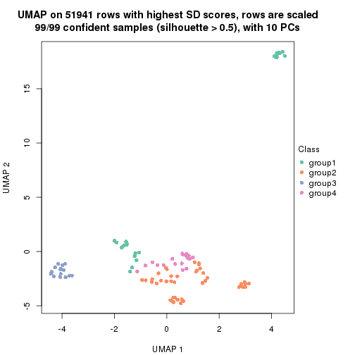
dimension_reduction(res, k = 5, method = "UMAP")
dimension_reduction(res, k = 6, method = "UMAP")
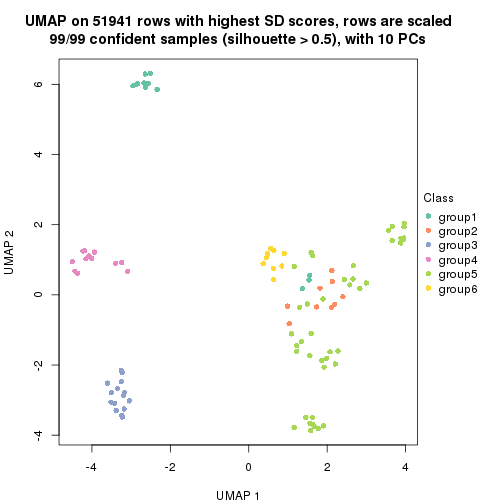
Following heatmap shows how subgroups are split when increasing k:
collect_classes(res)
Test correlation between subgroups and known annotations. If the known annotation is numeric, one-way ANOVA test is applied, and if the known annotation is discrete, chi-squared contingency table test is applied.
test_to_known_factors(res)
#> n protocol(p) individual(p) disease.state(p) k
#> SD:hclust 99 1 1.88e-10 6.83e-18 2
#> SD:hclust 99 1 6.75e-19 2.01e-33 3
#> SD:hclust 99 1 2.76e-27 1.46e-41 4
#> SD:hclust 99 1 1.19e-35 5.13e-57 5
#> SD:hclust 99 1 5.33e-44 1.11e-58 6
If matrix rows can be associated to genes, consider to use functional_enrichment(res,
...) to perform function enrichment for the signature genes. See this vignette for more detailed explanations.
The object with results only for a single top-value method and a single partition method can be extracted as:
res = res_list["SD", "kmeans"]
# you can also extract it by
# res = res_list["SD:kmeans"]
A summary of res and all the functions that can be applied to it:
res
#> A 'ConsensusPartition' object with k = 2, 3, 4, 5, 6.
#> On a matrix with 51941 rows and 99 columns.
#> Top rows (1000, 2000, 3000, 4000, 5000) are extracted by 'SD' method.
#> Subgroups are detected by 'kmeans' method.
#> Performed in total 1250 partitions by row resampling.
#> Best k for subgroups seems to be 6.
#>
#> Following methods can be applied to this 'ConsensusPartition' object:
#> [1] "cola_report" "collect_classes" "collect_plots"
#> [4] "collect_stats" "colnames" "compare_signatures"
#> [7] "consensus_heatmap" "dimension_reduction" "functional_enrichment"
#> [10] "get_anno_col" "get_anno" "get_classes"
#> [13] "get_consensus" "get_matrix" "get_membership"
#> [16] "get_param" "get_signatures" "get_stats"
#> [19] "is_best_k" "is_stable_k" "membership_heatmap"
#> [22] "ncol" "nrow" "plot_ecdf"
#> [25] "rownames" "select_partition_number" "show"
#> [28] "suggest_best_k" "test_to_known_factors"
collect_plots() function collects all the plots made from res for all k (number of partitions)
into one single page to provide an easy and fast comparison between different k.
collect_plots(res)
The plots are:
k and the heatmap of
predicted classes for each k.k.k.k.All the plots in panels can be made by individual functions and they are plotted later in this section.
select_partition_number() produces several plots showing different
statistics for choosing “optimized” k. There are following statistics:
k;k, the area increased is defined as \(A_k - A_{k-1}\).The detailed explanations of these statistics can be found in the cola vignette.
Generally speaking, lower PAC score, higher mean silhouette score or higher
concordance corresponds to better partition. Rand index and Jaccard index
measure how similar the current partition is compared to partition with k-1.
If they are too similar, we won't accept k is better than k-1.
select_partition_number(res)
The numeric values for all these statistics can be obtained by get_stats().
get_stats(res)
#> k 1-PAC mean_silhouette concordance area_increased Rand Jaccard
#> 2 2 0.556 0.842 0.899 0.4531 0.518 0.518
#> 3 3 0.607 0.807 0.781 0.3049 0.926 0.857
#> 4 4 0.584 0.607 0.673 0.1664 0.755 0.490
#> 5 5 0.627 0.747 0.732 0.1026 0.868 0.564
#> 6 6 0.651 0.843 0.765 0.0498 0.948 0.752
suggest_best_k() suggests the best \(k\) based on these statistics. The rules are as follows:
suggest_best_k(res)
#> [1] 6
Following shows the table of the partitions (You need to click the show/hide
code output link to see it). The membership matrix (columns with name p*)
is inferred by
clue::cl_consensus()
function with the SE method. Basically the value in the membership matrix
represents the probability to belong to a certain group. The finall class
label for an item is determined with the group with highest probability it
belongs to.
In get_classes() function, the entropy is calculated from the membership
matrix and the silhouette score is calculated from the consensus matrix.
cbind(get_classes(res, k = 2), get_membership(res, k = 2))
#> class entropy silhouette p1 p2
#> GSM187698 2 0.9129 0.518 0.328 0.672
#> GSM187701 2 0.3584 0.919 0.068 0.932
#> GSM187704 1 0.9000 0.737 0.684 0.316
#> GSM187707 2 0.0938 0.905 0.012 0.988
#> GSM187710 2 0.0938 0.904 0.012 0.988
#> GSM187713 2 0.3584 0.919 0.068 0.932
#> GSM187716 2 0.0938 0.905 0.012 0.988
#> GSM187719 1 0.1843 0.854 0.972 0.028
#> GSM187722 2 0.9710 0.319 0.400 0.600
#> GSM187725 1 0.9000 0.737 0.684 0.316
#> GSM187728 2 0.1184 0.902 0.016 0.984
#> GSM187731 2 0.3584 0.919 0.068 0.932
#> GSM187734 2 0.3584 0.919 0.068 0.932
#> GSM187737 2 0.0376 0.909 0.004 0.996
#> GSM187740 2 0.0938 0.905 0.012 0.988
#> GSM187743 1 0.2043 0.853 0.968 0.032
#> GSM187746 1 0.8955 0.740 0.688 0.312
#> GSM187749 1 0.9000 0.737 0.684 0.316
#> GSM187752 2 0.3584 0.919 0.068 0.932
#> GSM187755 2 0.3733 0.918 0.072 0.928
#> GSM187758 1 0.9000 0.737 0.684 0.316
#> GSM187761 2 0.1184 0.902 0.016 0.984
#> GSM187764 2 0.3733 0.918 0.072 0.928
#> GSM187767 2 0.0376 0.907 0.004 0.996
#> GSM187770 1 0.3114 0.857 0.944 0.056
#> GSM187771 1 0.3114 0.857 0.944 0.056
#> GSM187772 1 0.3114 0.857 0.944 0.056
#> GSM187780 1 0.2043 0.853 0.968 0.032
#> GSM187781 1 0.2043 0.853 0.968 0.032
#> GSM187782 1 0.2043 0.853 0.968 0.032
#> GSM187788 2 0.3584 0.919 0.068 0.932
#> GSM187789 2 0.3584 0.919 0.068 0.932
#> GSM187790 2 0.3584 0.919 0.068 0.932
#> GSM187699 2 0.9129 0.518 0.328 0.672
#> GSM187702 2 0.3584 0.919 0.068 0.932
#> GSM187705 1 0.9000 0.737 0.684 0.316
#> GSM187708 2 0.0938 0.905 0.012 0.988
#> GSM187711 2 0.0938 0.904 0.012 0.988
#> GSM187714 2 0.3584 0.919 0.068 0.932
#> GSM187717 2 0.0938 0.905 0.012 0.988
#> GSM187720 1 0.1843 0.854 0.972 0.028
#> GSM187723 2 0.9710 0.319 0.400 0.600
#> GSM187726 1 0.9000 0.737 0.684 0.316
#> GSM187729 2 0.1184 0.902 0.016 0.984
#> GSM187732 2 0.3584 0.919 0.068 0.932
#> GSM187735 2 0.3584 0.919 0.068 0.932
#> GSM187738 2 0.0376 0.909 0.004 0.996
#> GSM187741 2 0.0938 0.905 0.012 0.988
#> GSM187744 1 0.2043 0.853 0.968 0.032
#> GSM187747 1 0.8955 0.740 0.688 0.312
#> GSM187750 1 0.9000 0.737 0.684 0.316
#> GSM187753 2 0.3584 0.919 0.068 0.932
#> GSM187756 2 0.3733 0.918 0.072 0.928
#> GSM187759 1 0.9000 0.737 0.684 0.316
#> GSM187762 2 0.1184 0.902 0.016 0.984
#> GSM187765 2 0.3733 0.918 0.072 0.928
#> GSM187768 2 0.0376 0.907 0.004 0.996
#> GSM187773 1 0.3114 0.857 0.944 0.056
#> GSM187774 1 0.3114 0.857 0.944 0.056
#> GSM187775 1 0.3114 0.857 0.944 0.056
#> GSM187776 1 0.2043 0.853 0.968 0.032
#> GSM187783 1 0.2043 0.853 0.968 0.032
#> GSM187784 1 0.2043 0.853 0.968 0.032
#> GSM187791 2 0.3584 0.919 0.068 0.932
#> GSM187792 2 0.3584 0.919 0.068 0.932
#> GSM187793 2 0.3584 0.919 0.068 0.932
#> GSM187700 2 0.9129 0.518 0.328 0.672
#> GSM187703 2 0.3584 0.919 0.068 0.932
#> GSM187706 1 0.9000 0.737 0.684 0.316
#> GSM187709 2 0.0938 0.905 0.012 0.988
#> GSM187712 2 0.0938 0.904 0.012 0.988
#> GSM187715 2 0.3584 0.919 0.068 0.932
#> GSM187718 2 0.0938 0.905 0.012 0.988
#> GSM187721 1 0.1843 0.854 0.972 0.028
#> GSM187724 2 0.9710 0.319 0.400 0.600
#> GSM187727 1 0.9000 0.737 0.684 0.316
#> GSM187730 2 0.1184 0.902 0.016 0.984
#> GSM187733 2 0.3584 0.919 0.068 0.932
#> GSM187736 2 0.3584 0.919 0.068 0.932
#> GSM187739 2 0.0376 0.909 0.004 0.996
#> GSM187742 2 0.0938 0.905 0.012 0.988
#> GSM187745 1 0.2043 0.853 0.968 0.032
#> GSM187748 1 0.8955 0.740 0.688 0.312
#> GSM187751 1 0.9000 0.737 0.684 0.316
#> GSM187754 2 0.3584 0.919 0.068 0.932
#> GSM187757 2 0.3733 0.918 0.072 0.928
#> GSM187760 1 0.9000 0.737 0.684 0.316
#> GSM187763 2 0.1184 0.902 0.016 0.984
#> GSM187766 2 0.3733 0.918 0.072 0.928
#> GSM187769 2 0.0376 0.907 0.004 0.996
#> GSM187777 1 0.3114 0.857 0.944 0.056
#> GSM187778 1 0.3114 0.857 0.944 0.056
#> GSM187779 1 0.3114 0.857 0.944 0.056
#> GSM187785 1 0.2043 0.853 0.968 0.032
#> GSM187786 1 0.2043 0.853 0.968 0.032
#> GSM187787 1 0.2043 0.853 0.968 0.032
#> GSM187794 2 0.3584 0.919 0.068 0.932
#> GSM187795 2 0.3584 0.919 0.068 0.932
#> GSM187796 2 0.3584 0.919 0.068 0.932
cbind(get_classes(res, k = 3), get_membership(res, k = 3))
#> class entropy silhouette p1 p2 p3
#> GSM187698 2 0.6529 0.706 0.152 0.756 0.092
#> GSM187701 2 0.2537 0.836 0.000 0.920 0.080
#> GSM187704 3 0.7839 0.980 0.380 0.060 0.560
#> GSM187707 2 0.5465 0.791 0.000 0.712 0.288
#> GSM187710 2 0.5138 0.798 0.000 0.748 0.252
#> GSM187713 2 0.2261 0.835 0.000 0.932 0.068
#> GSM187716 2 0.5591 0.795 0.000 0.696 0.304
#> GSM187719 1 0.5461 0.689 0.748 0.008 0.244
#> GSM187722 2 0.7391 0.620 0.196 0.696 0.108
#> GSM187725 3 0.7839 0.980 0.380 0.060 0.560
#> GSM187728 2 0.5497 0.790 0.000 0.708 0.292
#> GSM187731 2 0.2261 0.835 0.000 0.932 0.068
#> GSM187734 2 0.2261 0.836 0.000 0.932 0.068
#> GSM187737 2 0.3551 0.839 0.000 0.868 0.132
#> GSM187740 2 0.5591 0.785 0.000 0.696 0.304
#> GSM187743 1 0.0747 0.750 0.984 0.016 0.000
#> GSM187746 3 0.7499 0.918 0.360 0.048 0.592
#> GSM187749 3 0.7839 0.980 0.380 0.060 0.560
#> GSM187752 2 0.2261 0.836 0.000 0.932 0.068
#> GSM187755 2 0.3412 0.830 0.000 0.876 0.124
#> GSM187758 3 0.7839 0.980 0.380 0.060 0.560
#> GSM187761 2 0.5621 0.785 0.000 0.692 0.308
#> GSM187764 2 0.3686 0.831 0.000 0.860 0.140
#> GSM187767 2 0.4931 0.806 0.000 0.768 0.232
#> GSM187770 1 0.5881 0.676 0.728 0.016 0.256
#> GSM187771 1 0.5881 0.676 0.728 0.016 0.256
#> GSM187772 1 0.5881 0.676 0.728 0.016 0.256
#> GSM187780 1 0.1636 0.748 0.964 0.020 0.016
#> GSM187781 1 0.1636 0.748 0.964 0.020 0.016
#> GSM187782 1 0.1636 0.748 0.964 0.020 0.016
#> GSM187788 2 0.2356 0.836 0.000 0.928 0.072
#> GSM187789 2 0.2356 0.836 0.000 0.928 0.072
#> GSM187790 2 0.2356 0.836 0.000 0.928 0.072
#> GSM187699 2 0.6529 0.706 0.152 0.756 0.092
#> GSM187702 2 0.2537 0.836 0.000 0.920 0.080
#> GSM187705 3 0.7839 0.980 0.380 0.060 0.560
#> GSM187708 2 0.5465 0.791 0.000 0.712 0.288
#> GSM187711 2 0.5138 0.798 0.000 0.748 0.252
#> GSM187714 2 0.2261 0.835 0.000 0.932 0.068
#> GSM187717 2 0.5591 0.795 0.000 0.696 0.304
#> GSM187720 1 0.5461 0.689 0.748 0.008 0.244
#> GSM187723 2 0.7391 0.620 0.196 0.696 0.108
#> GSM187726 3 0.7839 0.980 0.380 0.060 0.560
#> GSM187729 2 0.5497 0.790 0.000 0.708 0.292
#> GSM187732 2 0.2261 0.835 0.000 0.932 0.068
#> GSM187735 2 0.2261 0.836 0.000 0.932 0.068
#> GSM187738 2 0.3619 0.838 0.000 0.864 0.136
#> GSM187741 2 0.5591 0.785 0.000 0.696 0.304
#> GSM187744 1 0.0747 0.750 0.984 0.016 0.000
#> GSM187747 3 0.7499 0.918 0.360 0.048 0.592
#> GSM187750 3 0.7839 0.980 0.380 0.060 0.560
#> GSM187753 2 0.2261 0.836 0.000 0.932 0.068
#> GSM187756 2 0.3412 0.830 0.000 0.876 0.124
#> GSM187759 3 0.7839 0.980 0.380 0.060 0.560
#> GSM187762 2 0.5621 0.785 0.000 0.692 0.308
#> GSM187765 2 0.3686 0.831 0.000 0.860 0.140
#> GSM187768 2 0.4931 0.806 0.000 0.768 0.232
#> GSM187773 1 0.5881 0.676 0.728 0.016 0.256
#> GSM187774 1 0.5881 0.676 0.728 0.016 0.256
#> GSM187775 1 0.5881 0.676 0.728 0.016 0.256
#> GSM187776 1 0.1636 0.748 0.964 0.020 0.016
#> GSM187783 1 0.1636 0.748 0.964 0.020 0.016
#> GSM187784 1 0.1636 0.748 0.964 0.020 0.016
#> GSM187791 2 0.2356 0.836 0.000 0.928 0.072
#> GSM187792 2 0.2356 0.836 0.000 0.928 0.072
#> GSM187793 2 0.2356 0.836 0.000 0.928 0.072
#> GSM187700 2 0.6529 0.706 0.152 0.756 0.092
#> GSM187703 2 0.2537 0.836 0.000 0.920 0.080
#> GSM187706 3 0.7839 0.980 0.380 0.060 0.560
#> GSM187709 2 0.5465 0.791 0.000 0.712 0.288
#> GSM187712 2 0.5138 0.798 0.000 0.748 0.252
#> GSM187715 2 0.2261 0.835 0.000 0.932 0.068
#> GSM187718 2 0.5591 0.795 0.000 0.696 0.304
#> GSM187721 1 0.5461 0.689 0.748 0.008 0.244
#> GSM187724 2 0.7391 0.620 0.196 0.696 0.108
#> GSM187727 3 0.7839 0.980 0.380 0.060 0.560
#> GSM187730 2 0.5497 0.790 0.000 0.708 0.292
#> GSM187733 2 0.2261 0.835 0.000 0.932 0.068
#> GSM187736 2 0.2261 0.836 0.000 0.932 0.068
#> GSM187739 2 0.3619 0.838 0.000 0.864 0.136
#> GSM187742 2 0.5591 0.785 0.000 0.696 0.304
#> GSM187745 1 0.0747 0.750 0.984 0.016 0.000
#> GSM187748 3 0.7499 0.918 0.360 0.048 0.592
#> GSM187751 3 0.7839 0.980 0.380 0.060 0.560
#> GSM187754 2 0.2261 0.836 0.000 0.932 0.068
#> GSM187757 2 0.3412 0.830 0.000 0.876 0.124
#> GSM187760 3 0.7839 0.980 0.380 0.060 0.560
#> GSM187763 2 0.5621 0.785 0.000 0.692 0.308
#> GSM187766 2 0.3686 0.831 0.000 0.860 0.140
#> GSM187769 2 0.4931 0.806 0.000 0.768 0.232
#> GSM187777 1 0.5881 0.676 0.728 0.016 0.256
#> GSM187778 1 0.5881 0.676 0.728 0.016 0.256
#> GSM187779 1 0.5881 0.676 0.728 0.016 0.256
#> GSM187785 1 0.1636 0.748 0.964 0.020 0.016
#> GSM187786 1 0.1636 0.748 0.964 0.020 0.016
#> GSM187787 1 0.1636 0.748 0.964 0.020 0.016
#> GSM187794 2 0.2356 0.836 0.000 0.928 0.072
#> GSM187795 2 0.2356 0.836 0.000 0.928 0.072
#> GSM187796 2 0.2356 0.836 0.000 0.928 0.072
cbind(get_classes(res, k = 4), get_membership(res, k = 4))
#> class entropy silhouette p1 p2 p3 p4
#> GSM187698 2 0.807 0.438 0.144 0.500 0.040 0.316
#> GSM187701 2 0.678 0.449 0.064 0.496 0.012 0.428
#> GSM187704 3 0.176 0.634 0.048 0.004 0.944 0.004
#> GSM187707 4 0.104 0.781 0.008 0.020 0.000 0.972
#> GSM187710 4 0.291 0.745 0.040 0.064 0.000 0.896
#> GSM187713 2 0.495 0.646 0.004 0.620 0.000 0.376
#> GSM187716 4 0.629 0.420 0.084 0.236 0.012 0.668
#> GSM187719 3 0.749 0.294 0.348 0.188 0.464 0.000
#> GSM187722 2 0.835 0.403 0.152 0.492 0.056 0.300
#> GSM187725 3 0.222 0.632 0.044 0.016 0.932 0.008
#> GSM187728 4 0.141 0.778 0.016 0.024 0.000 0.960
#> GSM187731 2 0.495 0.646 0.004 0.620 0.000 0.376
#> GSM187734 2 0.552 0.642 0.020 0.568 0.000 0.412
#> GSM187737 4 0.506 0.245 0.032 0.256 0.000 0.712
#> GSM187740 4 0.266 0.752 0.036 0.056 0.000 0.908
#> GSM187743 1 0.462 0.955 0.784 0.052 0.164 0.000
#> GSM187746 3 0.100 0.625 0.000 0.024 0.972 0.004
#> GSM187749 3 0.176 0.634 0.048 0.004 0.944 0.004
#> GSM187752 2 0.552 0.642 0.020 0.568 0.000 0.412
#> GSM187755 2 0.711 0.353 0.088 0.460 0.012 0.440
#> GSM187758 3 0.164 0.634 0.044 0.000 0.948 0.008
#> GSM187761 4 0.240 0.771 0.048 0.032 0.000 0.920
#> GSM187764 2 0.711 0.343 0.088 0.456 0.012 0.444
#> GSM187767 4 0.254 0.731 0.012 0.084 0.000 0.904
#> GSM187770 3 0.746 0.324 0.336 0.188 0.476 0.000
#> GSM187771 3 0.746 0.324 0.336 0.188 0.476 0.000
#> GSM187772 3 0.746 0.324 0.336 0.188 0.476 0.000
#> GSM187780 1 0.340 0.985 0.832 0.004 0.164 0.000
#> GSM187781 1 0.340 0.985 0.832 0.004 0.164 0.000
#> GSM187782 1 0.340 0.985 0.832 0.004 0.164 0.000
#> GSM187788 2 0.561 0.641 0.024 0.564 0.000 0.412
#> GSM187789 2 0.561 0.641 0.024 0.564 0.000 0.412
#> GSM187790 2 0.561 0.641 0.024 0.564 0.000 0.412
#> GSM187699 2 0.807 0.438 0.144 0.500 0.040 0.316
#> GSM187702 2 0.678 0.449 0.064 0.496 0.012 0.428
#> GSM187705 3 0.176 0.634 0.048 0.004 0.944 0.004
#> GSM187708 4 0.104 0.781 0.008 0.020 0.000 0.972
#> GSM187711 4 0.291 0.745 0.040 0.064 0.000 0.896
#> GSM187714 2 0.495 0.646 0.004 0.620 0.000 0.376
#> GSM187717 4 0.629 0.420 0.084 0.236 0.012 0.668
#> GSM187720 3 0.749 0.294 0.348 0.188 0.464 0.000
#> GSM187723 2 0.835 0.403 0.152 0.492 0.056 0.300
#> GSM187726 3 0.222 0.632 0.044 0.016 0.932 0.008
#> GSM187729 4 0.141 0.778 0.016 0.024 0.000 0.960
#> GSM187732 2 0.495 0.646 0.004 0.620 0.000 0.376
#> GSM187735 2 0.552 0.642 0.020 0.568 0.000 0.412
#> GSM187738 4 0.506 0.245 0.032 0.256 0.000 0.712
#> GSM187741 4 0.266 0.752 0.036 0.056 0.000 0.908
#> GSM187744 1 0.462 0.955 0.784 0.052 0.164 0.000
#> GSM187747 3 0.100 0.625 0.000 0.024 0.972 0.004
#> GSM187750 3 0.176 0.634 0.048 0.004 0.944 0.004
#> GSM187753 2 0.552 0.642 0.020 0.568 0.000 0.412
#> GSM187756 2 0.711 0.353 0.088 0.460 0.012 0.440
#> GSM187759 3 0.164 0.634 0.044 0.000 0.948 0.008
#> GSM187762 4 0.240 0.771 0.048 0.032 0.000 0.920
#> GSM187765 2 0.711 0.343 0.088 0.456 0.012 0.444
#> GSM187768 4 0.254 0.731 0.012 0.084 0.000 0.904
#> GSM187773 3 0.746 0.324 0.336 0.188 0.476 0.000
#> GSM187774 3 0.746 0.324 0.336 0.188 0.476 0.000
#> GSM187775 3 0.746 0.324 0.336 0.188 0.476 0.000
#> GSM187776 1 0.340 0.985 0.832 0.004 0.164 0.000
#> GSM187783 1 0.340 0.985 0.832 0.004 0.164 0.000
#> GSM187784 1 0.340 0.985 0.832 0.004 0.164 0.000
#> GSM187791 2 0.561 0.641 0.024 0.564 0.000 0.412
#> GSM187792 2 0.561 0.641 0.024 0.564 0.000 0.412
#> GSM187793 2 0.561 0.641 0.024 0.564 0.000 0.412
#> GSM187700 2 0.807 0.438 0.144 0.500 0.040 0.316
#> GSM187703 2 0.678 0.449 0.064 0.496 0.012 0.428
#> GSM187706 3 0.176 0.634 0.048 0.004 0.944 0.004
#> GSM187709 4 0.104 0.781 0.008 0.020 0.000 0.972
#> GSM187712 4 0.291 0.745 0.040 0.064 0.000 0.896
#> GSM187715 2 0.495 0.646 0.004 0.620 0.000 0.376
#> GSM187718 4 0.629 0.420 0.084 0.236 0.012 0.668
#> GSM187721 3 0.749 0.294 0.348 0.188 0.464 0.000
#> GSM187724 2 0.835 0.403 0.152 0.492 0.056 0.300
#> GSM187727 3 0.222 0.632 0.044 0.016 0.932 0.008
#> GSM187730 4 0.141 0.778 0.016 0.024 0.000 0.960
#> GSM187733 2 0.495 0.646 0.004 0.620 0.000 0.376
#> GSM187736 2 0.552 0.642 0.020 0.568 0.000 0.412
#> GSM187739 4 0.506 0.245 0.032 0.256 0.000 0.712
#> GSM187742 4 0.266 0.752 0.036 0.056 0.000 0.908
#> GSM187745 1 0.462 0.955 0.784 0.052 0.164 0.000
#> GSM187748 3 0.100 0.625 0.000 0.024 0.972 0.004
#> GSM187751 3 0.176 0.634 0.048 0.004 0.944 0.004
#> GSM187754 2 0.552 0.642 0.020 0.568 0.000 0.412
#> GSM187757 2 0.711 0.353 0.088 0.460 0.012 0.440
#> GSM187760 3 0.164 0.634 0.044 0.000 0.948 0.008
#> GSM187763 4 0.240 0.771 0.048 0.032 0.000 0.920
#> GSM187766 2 0.711 0.343 0.088 0.456 0.012 0.444
#> GSM187769 4 0.254 0.731 0.012 0.084 0.000 0.904
#> GSM187777 3 0.746 0.324 0.336 0.188 0.476 0.000
#> GSM187778 3 0.746 0.324 0.336 0.188 0.476 0.000
#> GSM187779 3 0.746 0.324 0.336 0.188 0.476 0.000
#> GSM187785 1 0.340 0.985 0.832 0.004 0.164 0.000
#> GSM187786 1 0.340 0.985 0.832 0.004 0.164 0.000
#> GSM187787 1 0.340 0.985 0.832 0.004 0.164 0.000
#> GSM187794 2 0.561 0.641 0.024 0.564 0.000 0.412
#> GSM187795 2 0.561 0.641 0.024 0.564 0.000 0.412
#> GSM187796 2 0.561 0.641 0.024 0.564 0.000 0.412
cbind(get_classes(res, k = 5), get_membership(res, k = 5))
#> class entropy silhouette p1 p2 p3 p4 p5
#> GSM187698 4 0.6959 0.842 0.032 0.116 0.020 0.556 0.276
#> GSM187701 4 0.6808 0.804 0.000 0.172 0.020 0.488 0.320
#> GSM187704 3 0.1990 0.970 0.068 0.008 0.920 0.000 0.004
#> GSM187707 2 0.2569 0.766 0.000 0.896 0.016 0.012 0.076
#> GSM187710 2 0.4220 0.738 0.000 0.804 0.028 0.052 0.116
#> GSM187713 5 0.4166 0.872 0.000 0.144 0.012 0.052 0.792
#> GSM187716 2 0.6702 -0.370 0.000 0.444 0.040 0.420 0.096
#> GSM187719 1 0.7648 0.554 0.396 0.000 0.268 0.284 0.052
#> GSM187722 4 0.7119 0.831 0.036 0.104 0.032 0.556 0.272
#> GSM187725 3 0.3273 0.958 0.068 0.008 0.872 0.036 0.016
#> GSM187728 2 0.2420 0.768 0.000 0.896 0.008 0.008 0.088
#> GSM187731 5 0.4233 0.871 0.000 0.144 0.012 0.056 0.788
#> GSM187734 5 0.2964 0.941 0.000 0.152 0.004 0.004 0.840
#> GSM187737 2 0.5927 0.410 0.000 0.588 0.004 0.128 0.280
#> GSM187740 2 0.2537 0.730 0.000 0.904 0.016 0.056 0.024
#> GSM187743 1 0.2395 0.639 0.904 0.000 0.008 0.072 0.016
#> GSM187746 3 0.3592 0.929 0.056 0.008 0.860 0.040 0.036
#> GSM187749 3 0.2150 0.969 0.068 0.008 0.916 0.004 0.004
#> GSM187752 5 0.2877 0.943 0.000 0.144 0.004 0.004 0.848
#> GSM187755 4 0.6792 0.830 0.000 0.232 0.024 0.532 0.212
#> GSM187758 3 0.1990 0.970 0.068 0.008 0.920 0.004 0.000
#> GSM187761 2 0.3305 0.737 0.000 0.860 0.020 0.088 0.032
#> GSM187764 4 0.6832 0.825 0.000 0.240 0.024 0.524 0.212
#> GSM187767 2 0.3482 0.726 0.000 0.812 0.012 0.008 0.168
#> GSM187770 1 0.7577 0.551 0.388 0.000 0.276 0.292 0.044
#> GSM187771 1 0.7577 0.551 0.388 0.000 0.276 0.292 0.044
#> GSM187772 1 0.7577 0.551 0.388 0.000 0.276 0.292 0.044
#> GSM187780 1 0.0290 0.642 0.992 0.000 0.008 0.000 0.000
#> GSM187781 1 0.0290 0.642 0.992 0.000 0.008 0.000 0.000
#> GSM187782 1 0.0290 0.642 0.992 0.000 0.008 0.000 0.000
#> GSM187788 5 0.2806 0.944 0.000 0.152 0.004 0.000 0.844
#> GSM187789 5 0.2806 0.944 0.000 0.152 0.004 0.000 0.844
#> GSM187790 5 0.2806 0.944 0.000 0.152 0.004 0.000 0.844
#> GSM187699 4 0.6959 0.842 0.032 0.116 0.020 0.556 0.276
#> GSM187702 4 0.6808 0.804 0.000 0.172 0.020 0.488 0.320
#> GSM187705 3 0.1990 0.970 0.068 0.008 0.920 0.000 0.004
#> GSM187708 2 0.2569 0.766 0.000 0.896 0.016 0.012 0.076
#> GSM187711 2 0.4220 0.738 0.000 0.804 0.028 0.052 0.116
#> GSM187714 5 0.4166 0.872 0.000 0.144 0.012 0.052 0.792
#> GSM187717 2 0.6702 -0.370 0.000 0.444 0.040 0.420 0.096
#> GSM187720 1 0.7648 0.554 0.396 0.000 0.268 0.284 0.052
#> GSM187723 4 0.7119 0.831 0.036 0.104 0.032 0.556 0.272
#> GSM187726 3 0.3273 0.958 0.068 0.008 0.872 0.036 0.016
#> GSM187729 2 0.2420 0.768 0.000 0.896 0.008 0.008 0.088
#> GSM187732 5 0.4233 0.871 0.000 0.144 0.012 0.056 0.788
#> GSM187735 5 0.2964 0.941 0.000 0.152 0.004 0.004 0.840
#> GSM187738 2 0.5927 0.410 0.000 0.588 0.004 0.128 0.280
#> GSM187741 2 0.2537 0.730 0.000 0.904 0.016 0.056 0.024
#> GSM187744 1 0.2395 0.639 0.904 0.000 0.008 0.072 0.016
#> GSM187747 3 0.3592 0.929 0.056 0.008 0.860 0.040 0.036
#> GSM187750 3 0.2150 0.969 0.068 0.008 0.916 0.004 0.004
#> GSM187753 5 0.2877 0.943 0.000 0.144 0.004 0.004 0.848
#> GSM187756 4 0.6792 0.830 0.000 0.232 0.024 0.532 0.212
#> GSM187759 3 0.1990 0.970 0.068 0.008 0.920 0.004 0.000
#> GSM187762 2 0.3305 0.737 0.000 0.860 0.020 0.088 0.032
#> GSM187765 4 0.6832 0.825 0.000 0.240 0.024 0.524 0.212
#> GSM187768 2 0.3482 0.726 0.000 0.812 0.012 0.008 0.168
#> GSM187773 1 0.7577 0.551 0.388 0.000 0.276 0.292 0.044
#> GSM187774 1 0.7577 0.551 0.388 0.000 0.276 0.292 0.044
#> GSM187775 1 0.7577 0.551 0.388 0.000 0.276 0.292 0.044
#> GSM187776 1 0.0451 0.642 0.988 0.000 0.008 0.000 0.004
#> GSM187783 1 0.0451 0.642 0.988 0.000 0.008 0.000 0.004
#> GSM187784 1 0.0451 0.642 0.988 0.000 0.008 0.000 0.004
#> GSM187791 5 0.2806 0.944 0.000 0.152 0.004 0.000 0.844
#> GSM187792 5 0.2806 0.944 0.000 0.152 0.004 0.000 0.844
#> GSM187793 5 0.2806 0.944 0.000 0.152 0.004 0.000 0.844
#> GSM187700 4 0.6959 0.842 0.032 0.116 0.020 0.556 0.276
#> GSM187703 4 0.6808 0.804 0.000 0.172 0.020 0.488 0.320
#> GSM187706 3 0.1990 0.970 0.068 0.008 0.920 0.000 0.004
#> GSM187709 2 0.2569 0.766 0.000 0.896 0.016 0.012 0.076
#> GSM187712 2 0.4220 0.738 0.000 0.804 0.028 0.052 0.116
#> GSM187715 5 0.4166 0.872 0.000 0.144 0.012 0.052 0.792
#> GSM187718 2 0.6702 -0.370 0.000 0.444 0.040 0.420 0.096
#> GSM187721 1 0.7648 0.554 0.396 0.000 0.268 0.284 0.052
#> GSM187724 4 0.7119 0.831 0.036 0.104 0.032 0.556 0.272
#> GSM187727 3 0.3273 0.958 0.068 0.008 0.872 0.036 0.016
#> GSM187730 2 0.2420 0.768 0.000 0.896 0.008 0.008 0.088
#> GSM187733 5 0.4233 0.871 0.000 0.144 0.012 0.056 0.788
#> GSM187736 5 0.2964 0.941 0.000 0.152 0.004 0.004 0.840
#> GSM187739 2 0.5927 0.410 0.000 0.588 0.004 0.128 0.280
#> GSM187742 2 0.2537 0.730 0.000 0.904 0.016 0.056 0.024
#> GSM187745 1 0.2395 0.639 0.904 0.000 0.008 0.072 0.016
#> GSM187748 3 0.3592 0.929 0.056 0.008 0.860 0.040 0.036
#> GSM187751 3 0.2150 0.969 0.068 0.008 0.916 0.004 0.004
#> GSM187754 5 0.2877 0.943 0.000 0.144 0.004 0.004 0.848
#> GSM187757 4 0.6792 0.830 0.000 0.232 0.024 0.532 0.212
#> GSM187760 3 0.1990 0.970 0.068 0.008 0.920 0.004 0.000
#> GSM187763 2 0.3305 0.737 0.000 0.860 0.020 0.088 0.032
#> GSM187766 4 0.6832 0.825 0.000 0.240 0.024 0.524 0.212
#> GSM187769 2 0.3482 0.726 0.000 0.812 0.012 0.008 0.168
#> GSM187777 1 0.7577 0.551 0.388 0.000 0.276 0.292 0.044
#> GSM187778 1 0.7577 0.551 0.388 0.000 0.276 0.292 0.044
#> GSM187779 1 0.7577 0.551 0.388 0.000 0.276 0.292 0.044
#> GSM187785 1 0.0290 0.642 0.992 0.000 0.008 0.000 0.000
#> GSM187786 1 0.0290 0.642 0.992 0.000 0.008 0.000 0.000
#> GSM187787 1 0.0290 0.642 0.992 0.000 0.008 0.000 0.000
#> GSM187794 5 0.2806 0.944 0.000 0.152 0.004 0.000 0.844
#> GSM187795 5 0.2806 0.944 0.000 0.152 0.004 0.000 0.844
#> GSM187796 5 0.2806 0.944 0.000 0.152 0.004 0.000 0.844
cbind(get_classes(res, k = 6), get_membership(res, k = 6))
#> class entropy silhouette p1 p2 p3 p4 p5 p6
#> GSM187698 6 0.6198 0.791 0.072 0.024 0.040 0.032 0.184 0.648
#> GSM187701 6 0.6172 0.781 0.064 0.060 0.036 0.000 0.232 0.608
#> GSM187704 3 0.3231 0.934 0.008 0.012 0.800 0.180 0.000 0.000
#> GSM187707 2 0.4118 0.810 0.016 0.780 0.012 0.000 0.144 0.048
#> GSM187710 2 0.5896 0.770 0.092 0.644 0.064 0.000 0.184 0.016
#> GSM187713 5 0.3730 0.758 0.044 0.004 0.016 0.000 0.804 0.132
#> GSM187716 6 0.5621 0.503 0.024 0.284 0.016 0.000 0.072 0.604
#> GSM187719 4 0.0858 0.968 0.000 0.028 0.000 0.968 0.000 0.004
#> GSM187722 6 0.6167 0.791 0.068 0.024 0.036 0.032 0.196 0.644
#> GSM187725 3 0.4715 0.918 0.024 0.024 0.732 0.180 0.000 0.040
#> GSM187728 2 0.3246 0.816 0.000 0.812 0.012 0.000 0.160 0.016
#> GSM187731 5 0.3704 0.758 0.048 0.004 0.012 0.000 0.804 0.132
#> GSM187734 5 0.1078 0.879 0.016 0.008 0.012 0.000 0.964 0.000
#> GSM187737 2 0.7045 0.430 0.056 0.440 0.016 0.000 0.304 0.184
#> GSM187740 2 0.4558 0.770 0.020 0.752 0.008 0.000 0.112 0.108
#> GSM187743 1 0.5895 0.900 0.564 0.036 0.036 0.324 0.000 0.040
#> GSM187746 3 0.5900 0.826 0.040 0.012 0.604 0.248 0.000 0.096
#> GSM187749 3 0.3321 0.934 0.016 0.008 0.796 0.180 0.000 0.000
#> GSM187752 5 0.0405 0.884 0.004 0.008 0.000 0.000 0.988 0.000
#> GSM187755 6 0.4241 0.808 0.004 0.080 0.004 0.000 0.164 0.748
#> GSM187758 3 0.3273 0.934 0.008 0.004 0.800 0.180 0.000 0.008
#> GSM187761 2 0.5835 0.743 0.092 0.672 0.020 0.000 0.104 0.112
#> GSM187764 6 0.4247 0.804 0.000 0.092 0.004 0.000 0.164 0.740
#> GSM187767 2 0.5354 0.797 0.044 0.680 0.048 0.000 0.204 0.024
#> GSM187770 4 0.0146 0.989 0.000 0.000 0.004 0.996 0.000 0.000
#> GSM187771 4 0.0146 0.989 0.000 0.000 0.004 0.996 0.000 0.000
#> GSM187772 4 0.0146 0.989 0.000 0.000 0.004 0.996 0.000 0.000
#> GSM187780 1 0.4225 0.967 0.664 0.004 0.020 0.308 0.004 0.000
#> GSM187781 1 0.4225 0.967 0.664 0.004 0.020 0.308 0.004 0.000
#> GSM187782 1 0.4225 0.967 0.664 0.004 0.020 0.308 0.004 0.000
#> GSM187788 5 0.1957 0.885 0.048 0.008 0.024 0.000 0.920 0.000
#> GSM187789 5 0.1957 0.885 0.048 0.008 0.024 0.000 0.920 0.000
#> GSM187790 5 0.1957 0.885 0.048 0.008 0.024 0.000 0.920 0.000
#> GSM187699 6 0.6198 0.791 0.072 0.024 0.040 0.032 0.184 0.648
#> GSM187702 6 0.6172 0.781 0.064 0.060 0.036 0.000 0.232 0.608
#> GSM187705 3 0.3231 0.934 0.008 0.012 0.800 0.180 0.000 0.000
#> GSM187708 2 0.4118 0.810 0.016 0.780 0.012 0.000 0.144 0.048
#> GSM187711 2 0.5896 0.770 0.092 0.644 0.064 0.000 0.184 0.016
#> GSM187714 5 0.3730 0.758 0.044 0.004 0.016 0.000 0.804 0.132
#> GSM187717 6 0.5621 0.503 0.024 0.284 0.016 0.000 0.072 0.604
#> GSM187720 4 0.0858 0.968 0.000 0.028 0.000 0.968 0.000 0.004
#> GSM187723 6 0.6167 0.791 0.068 0.024 0.036 0.032 0.196 0.644
#> GSM187726 3 0.4715 0.918 0.024 0.024 0.732 0.180 0.000 0.040
#> GSM187729 2 0.3246 0.816 0.000 0.812 0.012 0.000 0.160 0.016
#> GSM187732 5 0.3704 0.758 0.048 0.004 0.012 0.000 0.804 0.132
#> GSM187735 5 0.1078 0.879 0.016 0.008 0.012 0.000 0.964 0.000
#> GSM187738 2 0.7045 0.430 0.056 0.440 0.016 0.000 0.304 0.184
#> GSM187741 2 0.4558 0.770 0.020 0.752 0.008 0.000 0.112 0.108
#> GSM187744 1 0.5895 0.900 0.564 0.036 0.036 0.324 0.000 0.040
#> GSM187747 3 0.5900 0.826 0.040 0.012 0.604 0.248 0.000 0.096
#> GSM187750 3 0.3321 0.934 0.016 0.008 0.796 0.180 0.000 0.000
#> GSM187753 5 0.0405 0.884 0.004 0.008 0.000 0.000 0.988 0.000
#> GSM187756 6 0.4241 0.808 0.004 0.080 0.004 0.000 0.164 0.748
#> GSM187759 3 0.3273 0.934 0.008 0.004 0.800 0.180 0.000 0.008
#> GSM187762 2 0.5835 0.743 0.092 0.672 0.020 0.000 0.104 0.112
#> GSM187765 6 0.4247 0.804 0.000 0.092 0.004 0.000 0.164 0.740
#> GSM187768 2 0.5354 0.797 0.044 0.680 0.048 0.000 0.204 0.024
#> GSM187773 4 0.0146 0.989 0.000 0.000 0.004 0.996 0.000 0.000
#> GSM187774 4 0.0146 0.989 0.000 0.000 0.004 0.996 0.000 0.000
#> GSM187775 4 0.0146 0.989 0.000 0.000 0.004 0.996 0.000 0.000
#> GSM187776 1 0.4088 0.967 0.668 0.000 0.020 0.308 0.004 0.000
#> GSM187783 1 0.4088 0.967 0.668 0.000 0.020 0.308 0.004 0.000
#> GSM187784 1 0.4088 0.967 0.668 0.000 0.020 0.308 0.004 0.000
#> GSM187791 5 0.1957 0.885 0.048 0.008 0.024 0.000 0.920 0.000
#> GSM187792 5 0.1957 0.885 0.048 0.008 0.024 0.000 0.920 0.000
#> GSM187793 5 0.1957 0.885 0.048 0.008 0.024 0.000 0.920 0.000
#> GSM187700 6 0.6198 0.791 0.072 0.024 0.040 0.032 0.184 0.648
#> GSM187703 6 0.6172 0.781 0.064 0.060 0.036 0.000 0.232 0.608
#> GSM187706 3 0.3231 0.934 0.008 0.012 0.800 0.180 0.000 0.000
#> GSM187709 2 0.4118 0.810 0.016 0.780 0.012 0.000 0.144 0.048
#> GSM187712 2 0.5896 0.770 0.092 0.644 0.064 0.000 0.184 0.016
#> GSM187715 5 0.3730 0.758 0.044 0.004 0.016 0.000 0.804 0.132
#> GSM187718 6 0.5621 0.503 0.024 0.284 0.016 0.000 0.072 0.604
#> GSM187721 4 0.0858 0.968 0.000 0.028 0.000 0.968 0.000 0.004
#> GSM187724 6 0.6167 0.791 0.068 0.024 0.036 0.032 0.196 0.644
#> GSM187727 3 0.4715 0.918 0.024 0.024 0.732 0.180 0.000 0.040
#> GSM187730 2 0.3246 0.816 0.000 0.812 0.012 0.000 0.160 0.016
#> GSM187733 5 0.3704 0.758 0.048 0.004 0.012 0.000 0.804 0.132
#> GSM187736 5 0.1078 0.879 0.016 0.008 0.012 0.000 0.964 0.000
#> GSM187739 2 0.7045 0.430 0.056 0.440 0.016 0.000 0.304 0.184
#> GSM187742 2 0.4558 0.770 0.020 0.752 0.008 0.000 0.112 0.108
#> GSM187745 1 0.5895 0.900 0.564 0.036 0.036 0.324 0.000 0.040
#> GSM187748 3 0.5900 0.826 0.040 0.012 0.604 0.248 0.000 0.096
#> GSM187751 3 0.3321 0.934 0.016 0.008 0.796 0.180 0.000 0.000
#> GSM187754 5 0.0405 0.884 0.004 0.008 0.000 0.000 0.988 0.000
#> GSM187757 6 0.4241 0.808 0.004 0.080 0.004 0.000 0.164 0.748
#> GSM187760 3 0.3273 0.934 0.008 0.004 0.800 0.180 0.000 0.008
#> GSM187763 2 0.5835 0.743 0.092 0.672 0.020 0.000 0.104 0.112
#> GSM187766 6 0.4247 0.804 0.000 0.092 0.004 0.000 0.164 0.740
#> GSM187769 2 0.5354 0.797 0.044 0.680 0.048 0.000 0.204 0.024
#> GSM187777 4 0.0146 0.989 0.000 0.000 0.004 0.996 0.000 0.000
#> GSM187778 4 0.0146 0.989 0.000 0.000 0.004 0.996 0.000 0.000
#> GSM187779 4 0.0146 0.989 0.000 0.000 0.004 0.996 0.000 0.000
#> GSM187785 1 0.4225 0.967 0.664 0.004 0.020 0.308 0.004 0.000
#> GSM187786 1 0.4088 0.967 0.668 0.000 0.020 0.308 0.004 0.000
#> GSM187787 1 0.4088 0.967 0.668 0.000 0.020 0.308 0.004 0.000
#> GSM187794 5 0.1957 0.885 0.048 0.008 0.024 0.000 0.920 0.000
#> GSM187795 5 0.1957 0.885 0.048 0.008 0.024 0.000 0.920 0.000
#> GSM187796 5 0.1957 0.885 0.048 0.008 0.024 0.000 0.920 0.000
Heatmaps for the consensus matrix. It visualizes the probability of two samples to be in a same group.
consensus_heatmap(res, k = 2)
consensus_heatmap(res, k = 3)
consensus_heatmap(res, k = 4)
consensus_heatmap(res, k = 5)
consensus_heatmap(res, k = 6)
Heatmaps for the membership of samples in all partitions to see how consistent they are:
membership_heatmap(res, k = 2)
membership_heatmap(res, k = 3)
membership_heatmap(res, k = 4)
membership_heatmap(res, k = 5)
membership_heatmap(res, k = 6)
As soon as we have had the classes for columns, we can look for signatures which are significantly different between classes which can be candidate marks for certain classes. Following are the heatmaps for signatures.
Signature heatmaps where rows are scaled:
get_signatures(res, k = 2)
#> Error: The width or height of the raster image is zero, maybe you forget to turn off the
#> previous graphic device or it was corrupted. Run `dev.off()` to close it.

get_signatures(res, k = 3)
#> Error: The width or height of the raster image is zero, maybe you forget to turn off the
#> previous graphic device or it was corrupted. Run `dev.off()` to close it.

get_signatures(res, k = 4)
#> Error: The width or height of the raster image is zero, maybe you forget to turn off the
#> previous graphic device or it was corrupted. Run `dev.off()` to close it.

get_signatures(res, k = 5)
#> Error: The width or height of the raster image is zero, maybe you forget to turn off the
#> previous graphic device or it was corrupted. Run `dev.off()` to close it.

get_signatures(res, k = 6)
#> Error: The width or height of the raster image is zero, maybe you forget to turn off the
#> previous graphic device or it was corrupted. Run `dev.off()` to close it.

Signature heatmaps where rows are not scaled:
get_signatures(res, k = 2, scale_rows = FALSE)
#> Error: The width or height of the raster image is zero, maybe you forget to turn off the
#> previous graphic device or it was corrupted. Run `dev.off()` to close it.

get_signatures(res, k = 3, scale_rows = FALSE)
#> Error: The width or height of the raster image is zero, maybe you forget to turn off the
#> previous graphic device or it was corrupted. Run `dev.off()` to close it.

get_signatures(res, k = 4, scale_rows = FALSE)
#> Error: The width or height of the raster image is zero, maybe you forget to turn off the
#> previous graphic device or it was corrupted. Run `dev.off()` to close it.

get_signatures(res, k = 5, scale_rows = FALSE)
#> Error: The width or height of the raster image is zero, maybe you forget to turn off the
#> previous graphic device or it was corrupted. Run `dev.off()` to close it.

get_signatures(res, k = 6, scale_rows = FALSE)
#> Error: The width or height of the raster image is zero, maybe you forget to turn off the
#> previous graphic device or it was corrupted. Run `dev.off()` to close it.

Compare the overlap of signatures from different k:
compare_signatures(res)
get_signature() returns a data frame invisibly. TO get the list of signatures, the function
call should be assigned to a variable explicitly. In following code, if plot argument is set
to FALSE, no heatmap is plotted while only the differential analysis is performed.
# code only for demonstration
tb = get_signature(res, k = ..., plot = FALSE)
An example of the output of tb is:
#> which_row fdr mean_1 mean_2 scaled_mean_1 scaled_mean_2 km
#> 1 38 0.042760348 8.373488 9.131774 -0.5533452 0.5164555 1
#> 2 40 0.018707592 7.106213 8.469186 -0.6173731 0.5762149 1
#> 3 55 0.019134737 10.221463 11.207825 -0.6159697 0.5749050 1
#> 4 59 0.006059896 5.921854 7.869574 -0.6899429 0.6439467 1
#> 5 60 0.018055526 8.928898 10.211722 -0.6204761 0.5791110 1
#> 6 98 0.009384629 15.714769 14.887706 0.6635654 -0.6193277 2
...
The columns in tb are:
which_row: row indices corresponding to the input matrix.fdr: FDR for the differential test. mean_x: The mean value in group x.scaled_mean_x: The mean value in group x after rows are scaled.km: Row groups if k-means clustering is applied to rows.UMAP plot which shows how samples are separated.
dimension_reduction(res, k = 2, method = "UMAP")

dimension_reduction(res, k = 3, method = "UMAP")
dimension_reduction(res, k = 4, method = "UMAP")
dimension_reduction(res, k = 5, method = "UMAP")
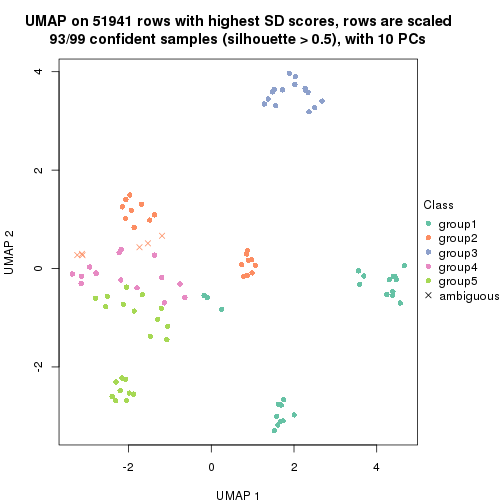
dimension_reduction(res, k = 6, method = "UMAP")
Following heatmap shows how subgroups are split when increasing k:
collect_classes(res)
Test correlation between subgroups and known annotations. If the known annotation is numeric, one-way ANOVA test is applied, and if the known annotation is discrete, chi-squared contingency table test is applied.
test_to_known_factors(res)
#> n protocol(p) individual(p) disease.state(p) k
#> SD:kmeans 96 1 2.93e-10 2.80e-17 2
#> SD:kmeans 99 1 6.75e-19 2.01e-33 3
#> SD:kmeans 66 1 3.39e-19 1.72e-28 4
#> SD:kmeans 93 1 3.99e-34 3.50e-44 5
#> SD:kmeans 96 1 4.78e-43 8.30e-62 6
If matrix rows can be associated to genes, consider to use functional_enrichment(res,
...) to perform function enrichment for the signature genes. See this vignette for more detailed explanations.
The object with results only for a single top-value method and a single partition method can be extracted as:
res = res_list["SD", "skmeans"]
# you can also extract it by
# res = res_list["SD:skmeans"]
A summary of res and all the functions that can be applied to it:
res
#> A 'ConsensusPartition' object with k = 2, 3, 4, 5, 6.
#> On a matrix with 51941 rows and 99 columns.
#> Top rows (1000, 2000, 3000, 4000, 5000) are extracted by 'SD' method.
#> Subgroups are detected by 'skmeans' method.
#> Performed in total 1250 partitions by row resampling.
#> Best k for subgroups seems to be 6.
#>
#> Following methods can be applied to this 'ConsensusPartition' object:
#> [1] "cola_report" "collect_classes" "collect_plots"
#> [4] "collect_stats" "colnames" "compare_signatures"
#> [7] "consensus_heatmap" "dimension_reduction" "functional_enrichment"
#> [10] "get_anno_col" "get_anno" "get_classes"
#> [13] "get_consensus" "get_matrix" "get_membership"
#> [16] "get_param" "get_signatures" "get_stats"
#> [19] "is_best_k" "is_stable_k" "membership_heatmap"
#> [22] "ncol" "nrow" "plot_ecdf"
#> [25] "rownames" "select_partition_number" "show"
#> [28] "suggest_best_k" "test_to_known_factors"
collect_plots() function collects all the plots made from res for all k (number of partitions)
into one single page to provide an easy and fast comparison between different k.
collect_plots(res)
The plots are:
k and the heatmap of
predicted classes for each k.k.k.k.All the plots in panels can be made by individual functions and they are plotted later in this section.
select_partition_number() produces several plots showing different
statistics for choosing “optimized” k. There are following statistics:
k;k, the area increased is defined as \(A_k - A_{k-1}\).The detailed explanations of these statistics can be found in the cola vignette.
Generally speaking, lower PAC score, higher mean silhouette score or higher
concordance corresponds to better partition. Rand index and Jaccard index
measure how similar the current partition is compared to partition with k-1.
If they are too similar, we won't accept k is better than k-1.
select_partition_number(res)
The numeric values for all these statistics can be obtained by get_stats().
get_stats(res)
#> k 1-PAC mean_silhouette concordance area_increased Rand Jaccard
#> 2 2 1.000 1.000 1.000 0.5014 0.499 0.499
#> 3 3 0.876 0.947 0.955 0.1983 0.907 0.814
#> 4 4 0.712 0.817 0.846 0.2142 0.857 0.648
#> 5 5 0.752 0.779 0.816 0.0804 0.918 0.705
#> 6 6 0.909 0.885 0.903 0.0480 0.942 0.733
suggest_best_k() suggests the best \(k\) based on these statistics. The rules are as follows:
suggest_best_k(res)
#> [1] 6
#> attr(,"optional")
#> [1] 2
There is also optional best \(k\) = 2 that is worth to check.
Following shows the table of the partitions (You need to click the show/hide
code output link to see it). The membership matrix (columns with name p*)
is inferred by
clue::cl_consensus()
function with the SE method. Basically the value in the membership matrix
represents the probability to belong to a certain group. The finall class
label for an item is determined with the group with highest probability it
belongs to.
In get_classes() function, the entropy is calculated from the membership
matrix and the silhouette score is calculated from the consensus matrix.
cbind(get_classes(res, k = 2), get_membership(res, k = 2))
#> class entropy silhouette p1 p2
#> GSM187698 1 0 1 1 0
#> GSM187701 2 0 1 0 1
#> GSM187704 1 0 1 1 0
#> GSM187707 2 0 1 0 1
#> GSM187710 2 0 1 0 1
#> GSM187713 2 0 1 0 1
#> GSM187716 2 0 1 0 1
#> GSM187719 1 0 1 1 0
#> GSM187722 1 0 1 1 0
#> GSM187725 1 0 1 1 0
#> GSM187728 2 0 1 0 1
#> GSM187731 2 0 1 0 1
#> GSM187734 2 0 1 0 1
#> GSM187737 2 0 1 0 1
#> GSM187740 2 0 1 0 1
#> GSM187743 1 0 1 1 0
#> GSM187746 1 0 1 1 0
#> GSM187749 1 0 1 1 0
#> GSM187752 2 0 1 0 1
#> GSM187755 2 0 1 0 1
#> GSM187758 1 0 1 1 0
#> GSM187761 2 0 1 0 1
#> GSM187764 2 0 1 0 1
#> GSM187767 2 0 1 0 1
#> GSM187770 1 0 1 1 0
#> GSM187771 1 0 1 1 0
#> GSM187772 1 0 1 1 0
#> GSM187780 1 0 1 1 0
#> GSM187781 1 0 1 1 0
#> GSM187782 1 0 1 1 0
#> GSM187788 2 0 1 0 1
#> GSM187789 2 0 1 0 1
#> GSM187790 2 0 1 0 1
#> GSM187699 1 0 1 1 0
#> GSM187702 2 0 1 0 1
#> GSM187705 1 0 1 1 0
#> GSM187708 2 0 1 0 1
#> GSM187711 2 0 1 0 1
#> GSM187714 2 0 1 0 1
#> GSM187717 2 0 1 0 1
#> GSM187720 1 0 1 1 0
#> GSM187723 1 0 1 1 0
#> GSM187726 1 0 1 1 0
#> GSM187729 2 0 1 0 1
#> GSM187732 2 0 1 0 1
#> GSM187735 2 0 1 0 1
#> GSM187738 2 0 1 0 1
#> GSM187741 2 0 1 0 1
#> GSM187744 1 0 1 1 0
#> GSM187747 1 0 1 1 0
#> GSM187750 1 0 1 1 0
#> GSM187753 2 0 1 0 1
#> GSM187756 2 0 1 0 1
#> GSM187759 1 0 1 1 0
#> GSM187762 2 0 1 0 1
#> GSM187765 2 0 1 0 1
#> GSM187768 2 0 1 0 1
#> GSM187773 1 0 1 1 0
#> GSM187774 1 0 1 1 0
#> GSM187775 1 0 1 1 0
#> GSM187776 1 0 1 1 0
#> GSM187783 1 0 1 1 0
#> GSM187784 1 0 1 1 0
#> GSM187791 2 0 1 0 1
#> GSM187792 2 0 1 0 1
#> GSM187793 2 0 1 0 1
#> GSM187700 1 0 1 1 0
#> GSM187703 2 0 1 0 1
#> GSM187706 1 0 1 1 0
#> GSM187709 2 0 1 0 1
#> GSM187712 2 0 1 0 1
#> GSM187715 2 0 1 0 1
#> GSM187718 2 0 1 0 1
#> GSM187721 1 0 1 1 0
#> GSM187724 1 0 1 1 0
#> GSM187727 1 0 1 1 0
#> GSM187730 2 0 1 0 1
#> GSM187733 2 0 1 0 1
#> GSM187736 2 0 1 0 1
#> GSM187739 2 0 1 0 1
#> GSM187742 2 0 1 0 1
#> GSM187745 1 0 1 1 0
#> GSM187748 1 0 1 1 0
#> GSM187751 1 0 1 1 0
#> GSM187754 2 0 1 0 1
#> GSM187757 2 0 1 0 1
#> GSM187760 1 0 1 1 0
#> GSM187763 2 0 1 0 1
#> GSM187766 2 0 1 0 1
#> GSM187769 2 0 1 0 1
#> GSM187777 1 0 1 1 0
#> GSM187778 1 0 1 1 0
#> GSM187779 1 0 1 1 0
#> GSM187785 1 0 1 1 0
#> GSM187786 1 0 1 1 0
#> GSM187787 1 0 1 1 0
#> GSM187794 2 0 1 0 1
#> GSM187795 2 0 1 0 1
#> GSM187796 2 0 1 0 1
cbind(get_classes(res, k = 3), get_membership(res, k = 3))
#> class entropy silhouette p1 p2 p3
#> GSM187698 1 0.192 0.881 0.956 0.020 0.024
#> GSM187701 2 0.482 0.854 0.120 0.840 0.040
#> GSM187704 3 0.186 1.000 0.052 0.000 0.948
#> GSM187707 2 0.116 0.977 0.000 0.972 0.028
#> GSM187710 2 0.116 0.977 0.000 0.972 0.028
#> GSM187713 2 0.000 0.978 0.000 1.000 0.000
#> GSM187716 2 0.186 0.968 0.000 0.948 0.052
#> GSM187719 1 0.369 0.866 0.860 0.000 0.140
#> GSM187722 1 0.103 0.896 0.976 0.000 0.024
#> GSM187725 3 0.186 1.000 0.052 0.000 0.948
#> GSM187728 2 0.116 0.977 0.000 0.972 0.028
#> GSM187731 2 0.000 0.978 0.000 1.000 0.000
#> GSM187734 2 0.000 0.978 0.000 1.000 0.000
#> GSM187737 2 0.103 0.977 0.000 0.976 0.024
#> GSM187740 2 0.116 0.977 0.000 0.972 0.028
#> GSM187743 1 0.000 0.909 1.000 0.000 0.000
#> GSM187746 3 0.186 1.000 0.052 0.000 0.948
#> GSM187749 3 0.186 1.000 0.052 0.000 0.948
#> GSM187752 2 0.000 0.978 0.000 1.000 0.000
#> GSM187755 2 0.191 0.958 0.016 0.956 0.028
#> GSM187758 3 0.186 1.000 0.052 0.000 0.948
#> GSM187761 2 0.116 0.977 0.000 0.972 0.028
#> GSM187764 2 0.116 0.969 0.000 0.972 0.028
#> GSM187767 2 0.116 0.977 0.000 0.972 0.028
#> GSM187770 1 0.435 0.841 0.816 0.000 0.184
#> GSM187771 1 0.435 0.841 0.816 0.000 0.184
#> GSM187772 1 0.435 0.841 0.816 0.000 0.184
#> GSM187780 1 0.000 0.909 1.000 0.000 0.000
#> GSM187781 1 0.000 0.909 1.000 0.000 0.000
#> GSM187782 1 0.000 0.909 1.000 0.000 0.000
#> GSM187788 2 0.000 0.978 0.000 1.000 0.000
#> GSM187789 2 0.000 0.978 0.000 1.000 0.000
#> GSM187790 2 0.000 0.978 0.000 1.000 0.000
#> GSM187699 1 0.192 0.881 0.956 0.020 0.024
#> GSM187702 2 0.482 0.854 0.120 0.840 0.040
#> GSM187705 3 0.186 1.000 0.052 0.000 0.948
#> GSM187708 2 0.116 0.977 0.000 0.972 0.028
#> GSM187711 2 0.116 0.977 0.000 0.972 0.028
#> GSM187714 2 0.000 0.978 0.000 1.000 0.000
#> GSM187717 2 0.186 0.968 0.000 0.948 0.052
#> GSM187720 1 0.369 0.866 0.860 0.000 0.140
#> GSM187723 1 0.127 0.893 0.972 0.004 0.024
#> GSM187726 3 0.186 1.000 0.052 0.000 0.948
#> GSM187729 2 0.116 0.977 0.000 0.972 0.028
#> GSM187732 2 0.000 0.978 0.000 1.000 0.000
#> GSM187735 2 0.000 0.978 0.000 1.000 0.000
#> GSM187738 2 0.103 0.977 0.000 0.976 0.024
#> GSM187741 2 0.116 0.977 0.000 0.972 0.028
#> GSM187744 1 0.000 0.909 1.000 0.000 0.000
#> GSM187747 3 0.186 1.000 0.052 0.000 0.948
#> GSM187750 3 0.186 1.000 0.052 0.000 0.948
#> GSM187753 2 0.000 0.978 0.000 1.000 0.000
#> GSM187756 2 0.116 0.969 0.000 0.972 0.028
#> GSM187759 3 0.186 1.000 0.052 0.000 0.948
#> GSM187762 2 0.116 0.977 0.000 0.972 0.028
#> GSM187765 2 0.116 0.969 0.000 0.972 0.028
#> GSM187768 2 0.116 0.977 0.000 0.972 0.028
#> GSM187773 1 0.435 0.841 0.816 0.000 0.184
#> GSM187774 1 0.435 0.841 0.816 0.000 0.184
#> GSM187775 1 0.435 0.841 0.816 0.000 0.184
#> GSM187776 1 0.000 0.909 1.000 0.000 0.000
#> GSM187783 1 0.000 0.909 1.000 0.000 0.000
#> GSM187784 1 0.000 0.909 1.000 0.000 0.000
#> GSM187791 2 0.000 0.978 0.000 1.000 0.000
#> GSM187792 2 0.000 0.978 0.000 1.000 0.000
#> GSM187793 2 0.000 0.978 0.000 1.000 0.000
#> GSM187700 1 0.192 0.881 0.956 0.020 0.024
#> GSM187703 2 0.482 0.854 0.120 0.840 0.040
#> GSM187706 3 0.186 1.000 0.052 0.000 0.948
#> GSM187709 2 0.116 0.977 0.000 0.972 0.028
#> GSM187712 2 0.116 0.977 0.000 0.972 0.028
#> GSM187715 2 0.000 0.978 0.000 1.000 0.000
#> GSM187718 2 0.186 0.968 0.000 0.948 0.052
#> GSM187721 1 0.369 0.866 0.860 0.000 0.140
#> GSM187724 1 0.127 0.893 0.972 0.004 0.024
#> GSM187727 3 0.186 1.000 0.052 0.000 0.948
#> GSM187730 2 0.116 0.977 0.000 0.972 0.028
#> GSM187733 2 0.000 0.978 0.000 1.000 0.000
#> GSM187736 2 0.000 0.978 0.000 1.000 0.000
#> GSM187739 2 0.103 0.977 0.000 0.976 0.024
#> GSM187742 2 0.116 0.977 0.000 0.972 0.028
#> GSM187745 1 0.000 0.909 1.000 0.000 0.000
#> GSM187748 3 0.186 1.000 0.052 0.000 0.948
#> GSM187751 3 0.186 1.000 0.052 0.000 0.948
#> GSM187754 2 0.000 0.978 0.000 1.000 0.000
#> GSM187757 2 0.116 0.969 0.000 0.972 0.028
#> GSM187760 3 0.186 1.000 0.052 0.000 0.948
#> GSM187763 2 0.116 0.977 0.000 0.972 0.028
#> GSM187766 2 0.116 0.969 0.000 0.972 0.028
#> GSM187769 2 0.116 0.977 0.000 0.972 0.028
#> GSM187777 1 0.435 0.841 0.816 0.000 0.184
#> GSM187778 1 0.435 0.841 0.816 0.000 0.184
#> GSM187779 1 0.435 0.841 0.816 0.000 0.184
#> GSM187785 1 0.000 0.909 1.000 0.000 0.000
#> GSM187786 1 0.000 0.909 1.000 0.000 0.000
#> GSM187787 1 0.000 0.909 1.000 0.000 0.000
#> GSM187794 2 0.000 0.978 0.000 1.000 0.000
#> GSM187795 2 0.000 0.978 0.000 1.000 0.000
#> GSM187796 2 0.000 0.978 0.000 1.000 0.000
cbind(get_classes(res, k = 4), get_membership(res, k = 4))
#> class entropy silhouette p1 p2 p3 p4
#> GSM187698 1 0.3610 0.830 0.800 0.200 0.000 0.000
#> GSM187701 2 0.5611 0.211 0.024 0.564 0.000 0.412
#> GSM187704 3 0.0000 1.000 0.000 0.000 1.000 0.000
#> GSM187707 2 0.4605 0.704 0.000 0.664 0.000 0.336
#> GSM187710 2 0.4804 0.671 0.000 0.616 0.000 0.384
#> GSM187713 4 0.0336 0.988 0.000 0.008 0.000 0.992
#> GSM187716 2 0.1389 0.595 0.000 0.952 0.000 0.048
#> GSM187719 1 0.1716 0.898 0.936 0.000 0.064 0.000
#> GSM187722 1 0.3123 0.836 0.844 0.156 0.000 0.000
#> GSM187725 3 0.0000 1.000 0.000 0.000 1.000 0.000
#> GSM187728 2 0.4585 0.705 0.000 0.668 0.000 0.332
#> GSM187731 4 0.0188 0.993 0.000 0.004 0.000 0.996
#> GSM187734 4 0.0000 0.997 0.000 0.000 0.000 1.000
#> GSM187737 2 0.4776 0.682 0.000 0.624 0.000 0.376
#> GSM187740 2 0.4250 0.707 0.000 0.724 0.000 0.276
#> GSM187743 1 0.1389 0.909 0.952 0.048 0.000 0.000
#> GSM187746 3 0.0000 1.000 0.000 0.000 1.000 0.000
#> GSM187749 3 0.0000 1.000 0.000 0.000 1.000 0.000
#> GSM187752 4 0.0000 0.997 0.000 0.000 0.000 1.000
#> GSM187755 2 0.4888 0.244 0.000 0.588 0.000 0.412
#> GSM187758 3 0.0000 1.000 0.000 0.000 1.000 0.000
#> GSM187761 2 0.4222 0.706 0.000 0.728 0.000 0.272
#> GSM187764 2 0.4855 0.268 0.000 0.600 0.000 0.400
#> GSM187767 2 0.4817 0.669 0.000 0.612 0.000 0.388
#> GSM187770 1 0.2589 0.879 0.884 0.000 0.116 0.000
#> GSM187771 1 0.2589 0.879 0.884 0.000 0.116 0.000
#> GSM187772 1 0.2589 0.879 0.884 0.000 0.116 0.000
#> GSM187780 1 0.1389 0.909 0.952 0.048 0.000 0.000
#> GSM187781 1 0.1389 0.909 0.952 0.048 0.000 0.000
#> GSM187782 1 0.1389 0.909 0.952 0.048 0.000 0.000
#> GSM187788 4 0.0000 0.997 0.000 0.000 0.000 1.000
#> GSM187789 4 0.0000 0.997 0.000 0.000 0.000 1.000
#> GSM187790 4 0.0000 0.997 0.000 0.000 0.000 1.000
#> GSM187699 1 0.3649 0.827 0.796 0.204 0.000 0.000
#> GSM187702 2 0.5611 0.211 0.024 0.564 0.000 0.412
#> GSM187705 3 0.0000 1.000 0.000 0.000 1.000 0.000
#> GSM187708 2 0.4605 0.704 0.000 0.664 0.000 0.336
#> GSM187711 2 0.4804 0.671 0.000 0.616 0.000 0.384
#> GSM187714 4 0.0336 0.988 0.000 0.008 0.000 0.992
#> GSM187717 2 0.1389 0.595 0.000 0.952 0.000 0.048
#> GSM187720 1 0.1716 0.898 0.936 0.000 0.064 0.000
#> GSM187723 1 0.3123 0.836 0.844 0.156 0.000 0.000
#> GSM187726 3 0.0000 1.000 0.000 0.000 1.000 0.000
#> GSM187729 2 0.4585 0.705 0.000 0.668 0.000 0.332
#> GSM187732 4 0.0188 0.993 0.000 0.004 0.000 0.996
#> GSM187735 4 0.0000 0.997 0.000 0.000 0.000 1.000
#> GSM187738 2 0.4776 0.682 0.000 0.624 0.000 0.376
#> GSM187741 2 0.4250 0.707 0.000 0.724 0.000 0.276
#> GSM187744 1 0.1389 0.909 0.952 0.048 0.000 0.000
#> GSM187747 3 0.0000 1.000 0.000 0.000 1.000 0.000
#> GSM187750 3 0.0000 1.000 0.000 0.000 1.000 0.000
#> GSM187753 4 0.0000 0.997 0.000 0.000 0.000 1.000
#> GSM187756 2 0.4888 0.244 0.000 0.588 0.000 0.412
#> GSM187759 3 0.0000 1.000 0.000 0.000 1.000 0.000
#> GSM187762 2 0.4222 0.706 0.000 0.728 0.000 0.272
#> GSM187765 2 0.4855 0.268 0.000 0.600 0.000 0.400
#> GSM187768 2 0.4817 0.669 0.000 0.612 0.000 0.388
#> GSM187773 1 0.2589 0.879 0.884 0.000 0.116 0.000
#> GSM187774 1 0.2589 0.879 0.884 0.000 0.116 0.000
#> GSM187775 1 0.2589 0.879 0.884 0.000 0.116 0.000
#> GSM187776 1 0.1389 0.909 0.952 0.048 0.000 0.000
#> GSM187783 1 0.1389 0.909 0.952 0.048 0.000 0.000
#> GSM187784 1 0.1389 0.909 0.952 0.048 0.000 0.000
#> GSM187791 4 0.0000 0.997 0.000 0.000 0.000 1.000
#> GSM187792 4 0.0000 0.997 0.000 0.000 0.000 1.000
#> GSM187793 4 0.0000 0.997 0.000 0.000 0.000 1.000
#> GSM187700 1 0.3610 0.830 0.800 0.200 0.000 0.000
#> GSM187703 2 0.5611 0.211 0.024 0.564 0.000 0.412
#> GSM187706 3 0.0000 1.000 0.000 0.000 1.000 0.000
#> GSM187709 2 0.4605 0.704 0.000 0.664 0.000 0.336
#> GSM187712 2 0.4804 0.671 0.000 0.616 0.000 0.384
#> GSM187715 4 0.0336 0.988 0.000 0.008 0.000 0.992
#> GSM187718 2 0.1389 0.595 0.000 0.952 0.000 0.048
#> GSM187721 1 0.1716 0.898 0.936 0.000 0.064 0.000
#> GSM187724 1 0.3123 0.836 0.844 0.156 0.000 0.000
#> GSM187727 3 0.0000 1.000 0.000 0.000 1.000 0.000
#> GSM187730 2 0.4585 0.705 0.000 0.668 0.000 0.332
#> GSM187733 4 0.0188 0.993 0.000 0.004 0.000 0.996
#> GSM187736 4 0.0000 0.997 0.000 0.000 0.000 1.000
#> GSM187739 2 0.4776 0.682 0.000 0.624 0.000 0.376
#> GSM187742 2 0.4250 0.707 0.000 0.724 0.000 0.276
#> GSM187745 1 0.1389 0.909 0.952 0.048 0.000 0.000
#> GSM187748 3 0.0000 1.000 0.000 0.000 1.000 0.000
#> GSM187751 3 0.0000 1.000 0.000 0.000 1.000 0.000
#> GSM187754 4 0.0000 0.997 0.000 0.000 0.000 1.000
#> GSM187757 2 0.4888 0.244 0.000 0.588 0.000 0.412
#> GSM187760 3 0.0000 1.000 0.000 0.000 1.000 0.000
#> GSM187763 2 0.4222 0.706 0.000 0.728 0.000 0.272
#> GSM187766 2 0.4855 0.268 0.000 0.600 0.000 0.400
#> GSM187769 2 0.4817 0.669 0.000 0.612 0.000 0.388
#> GSM187777 1 0.2589 0.879 0.884 0.000 0.116 0.000
#> GSM187778 1 0.2589 0.879 0.884 0.000 0.116 0.000
#> GSM187779 1 0.2589 0.879 0.884 0.000 0.116 0.000
#> GSM187785 1 0.1389 0.909 0.952 0.048 0.000 0.000
#> GSM187786 1 0.1389 0.909 0.952 0.048 0.000 0.000
#> GSM187787 1 0.1389 0.909 0.952 0.048 0.000 0.000
#> GSM187794 4 0.0000 0.997 0.000 0.000 0.000 1.000
#> GSM187795 4 0.0000 0.997 0.000 0.000 0.000 1.000
#> GSM187796 4 0.0000 0.997 0.000 0.000 0.000 1.000
cbind(get_classes(res, k = 5), get_membership(res, k = 5))
#> class entropy silhouette p1 p2 p3 p4 p5
#> GSM187698 1 0.4505 0.186 0.604 0.012 0.000 0.384 0.000
#> GSM187701 4 0.5988 0.752 0.060 0.088 0.000 0.668 0.184
#> GSM187704 3 0.0000 0.999 0.000 0.000 1.000 0.000 0.000
#> GSM187707 2 0.5772 0.785 0.000 0.584 0.000 0.296 0.120
#> GSM187710 2 0.5886 0.783 0.000 0.584 0.000 0.272 0.144
#> GSM187713 5 0.0290 0.992 0.000 0.000 0.000 0.008 0.992
#> GSM187716 4 0.1671 0.679 0.000 0.076 0.000 0.924 0.000
#> GSM187719 1 0.5365 0.684 0.528 0.416 0.056 0.000 0.000
#> GSM187722 2 0.6796 -0.547 0.352 0.360 0.000 0.288 0.000
#> GSM187725 3 0.0000 0.999 0.000 0.000 1.000 0.000 0.000
#> GSM187728 2 0.5793 0.786 0.000 0.584 0.000 0.292 0.124
#> GSM187731 5 0.0290 0.992 0.000 0.000 0.000 0.008 0.992
#> GSM187734 5 0.0000 0.997 0.000 0.000 0.000 0.000 1.000
#> GSM187737 2 0.5993 0.764 0.000 0.576 0.000 0.260 0.164
#> GSM187740 2 0.5715 0.764 0.000 0.564 0.000 0.336 0.100
#> GSM187743 1 0.0162 0.708 0.996 0.000 0.004 0.000 0.000
#> GSM187746 3 0.0162 0.995 0.004 0.000 0.996 0.000 0.000
#> GSM187749 3 0.0000 0.999 0.000 0.000 1.000 0.000 0.000
#> GSM187752 5 0.0000 0.997 0.000 0.000 0.000 0.000 1.000
#> GSM187755 4 0.2516 0.848 0.000 0.000 0.000 0.860 0.140
#> GSM187758 3 0.0000 0.999 0.000 0.000 1.000 0.000 0.000
#> GSM187761 2 0.5727 0.760 0.000 0.560 0.000 0.340 0.100
#> GSM187764 4 0.2674 0.848 0.000 0.004 0.000 0.856 0.140
#> GSM187767 2 0.5941 0.773 0.000 0.584 0.000 0.256 0.160
#> GSM187770 1 0.5622 0.681 0.508 0.416 0.076 0.000 0.000
#> GSM187771 1 0.5622 0.681 0.508 0.416 0.076 0.000 0.000
#> GSM187772 1 0.5622 0.681 0.508 0.416 0.076 0.000 0.000
#> GSM187780 1 0.0324 0.707 0.992 0.000 0.004 0.004 0.000
#> GSM187781 1 0.0324 0.707 0.992 0.000 0.004 0.004 0.000
#> GSM187782 1 0.0324 0.707 0.992 0.000 0.004 0.004 0.000
#> GSM187788 5 0.0000 0.997 0.000 0.000 0.000 0.000 1.000
#> GSM187789 5 0.0000 0.997 0.000 0.000 0.000 0.000 1.000
#> GSM187790 5 0.0000 0.997 0.000 0.000 0.000 0.000 1.000
#> GSM187699 1 0.4599 0.186 0.600 0.016 0.000 0.384 0.000
#> GSM187702 4 0.5988 0.752 0.060 0.088 0.000 0.668 0.184
#> GSM187705 3 0.0000 0.999 0.000 0.000 1.000 0.000 0.000
#> GSM187708 2 0.5772 0.785 0.000 0.584 0.000 0.296 0.120
#> GSM187711 2 0.5886 0.783 0.000 0.584 0.000 0.272 0.144
#> GSM187714 5 0.0290 0.992 0.000 0.000 0.000 0.008 0.992
#> GSM187717 4 0.1671 0.679 0.000 0.076 0.000 0.924 0.000
#> GSM187720 1 0.5365 0.684 0.528 0.416 0.056 0.000 0.000
#> GSM187723 2 0.6796 -0.547 0.352 0.360 0.000 0.288 0.000
#> GSM187726 3 0.0000 0.999 0.000 0.000 1.000 0.000 0.000
#> GSM187729 2 0.5793 0.786 0.000 0.584 0.000 0.292 0.124
#> GSM187732 5 0.0290 0.992 0.000 0.000 0.000 0.008 0.992
#> GSM187735 5 0.0000 0.997 0.000 0.000 0.000 0.000 1.000
#> GSM187738 2 0.5993 0.764 0.000 0.576 0.000 0.260 0.164
#> GSM187741 2 0.5715 0.764 0.000 0.564 0.000 0.336 0.100
#> GSM187744 1 0.0162 0.708 0.996 0.000 0.004 0.000 0.000
#> GSM187747 3 0.0162 0.995 0.004 0.000 0.996 0.000 0.000
#> GSM187750 3 0.0000 0.999 0.000 0.000 1.000 0.000 0.000
#> GSM187753 5 0.0000 0.997 0.000 0.000 0.000 0.000 1.000
#> GSM187756 4 0.2516 0.848 0.000 0.000 0.000 0.860 0.140
#> GSM187759 3 0.0000 0.999 0.000 0.000 1.000 0.000 0.000
#> GSM187762 2 0.5727 0.760 0.000 0.560 0.000 0.340 0.100
#> GSM187765 4 0.2674 0.848 0.000 0.004 0.000 0.856 0.140
#> GSM187768 2 0.5941 0.773 0.000 0.584 0.000 0.256 0.160
#> GSM187773 1 0.5622 0.681 0.508 0.416 0.076 0.000 0.000
#> GSM187774 1 0.5622 0.681 0.508 0.416 0.076 0.000 0.000
#> GSM187775 1 0.5622 0.681 0.508 0.416 0.076 0.000 0.000
#> GSM187776 1 0.0324 0.707 0.992 0.000 0.004 0.004 0.000
#> GSM187783 1 0.0324 0.707 0.992 0.000 0.004 0.004 0.000
#> GSM187784 1 0.0324 0.707 0.992 0.000 0.004 0.004 0.000
#> GSM187791 5 0.0000 0.997 0.000 0.000 0.000 0.000 1.000
#> GSM187792 5 0.0000 0.997 0.000 0.000 0.000 0.000 1.000
#> GSM187793 5 0.0000 0.997 0.000 0.000 0.000 0.000 1.000
#> GSM187700 1 0.4599 0.186 0.600 0.016 0.000 0.384 0.000
#> GSM187703 4 0.5988 0.752 0.060 0.088 0.000 0.668 0.184
#> GSM187706 3 0.0000 0.999 0.000 0.000 1.000 0.000 0.000
#> GSM187709 2 0.5772 0.785 0.000 0.584 0.000 0.296 0.120
#> GSM187712 2 0.5886 0.783 0.000 0.584 0.000 0.272 0.144
#> GSM187715 5 0.0290 0.992 0.000 0.000 0.000 0.008 0.992
#> GSM187718 4 0.1671 0.679 0.000 0.076 0.000 0.924 0.000
#> GSM187721 1 0.5365 0.684 0.528 0.416 0.056 0.000 0.000
#> GSM187724 2 0.6796 -0.547 0.352 0.360 0.000 0.288 0.000
#> GSM187727 3 0.0000 0.999 0.000 0.000 1.000 0.000 0.000
#> GSM187730 2 0.5793 0.786 0.000 0.584 0.000 0.292 0.124
#> GSM187733 5 0.0290 0.992 0.000 0.000 0.000 0.008 0.992
#> GSM187736 5 0.0000 0.997 0.000 0.000 0.000 0.000 1.000
#> GSM187739 2 0.5993 0.764 0.000 0.576 0.000 0.260 0.164
#> GSM187742 2 0.5715 0.764 0.000 0.564 0.000 0.336 0.100
#> GSM187745 1 0.0162 0.708 0.996 0.000 0.004 0.000 0.000
#> GSM187748 3 0.0162 0.995 0.004 0.000 0.996 0.000 0.000
#> GSM187751 3 0.0000 0.999 0.000 0.000 1.000 0.000 0.000
#> GSM187754 5 0.0000 0.997 0.000 0.000 0.000 0.000 1.000
#> GSM187757 4 0.2516 0.848 0.000 0.000 0.000 0.860 0.140
#> GSM187760 3 0.0000 0.999 0.000 0.000 1.000 0.000 0.000
#> GSM187763 2 0.5727 0.760 0.000 0.560 0.000 0.340 0.100
#> GSM187766 4 0.2674 0.848 0.000 0.004 0.000 0.856 0.140
#> GSM187769 2 0.5941 0.773 0.000 0.584 0.000 0.256 0.160
#> GSM187777 1 0.5622 0.681 0.508 0.416 0.076 0.000 0.000
#> GSM187778 1 0.5622 0.681 0.508 0.416 0.076 0.000 0.000
#> GSM187779 1 0.5622 0.681 0.508 0.416 0.076 0.000 0.000
#> GSM187785 1 0.0324 0.707 0.992 0.000 0.004 0.004 0.000
#> GSM187786 1 0.0324 0.707 0.992 0.000 0.004 0.004 0.000
#> GSM187787 1 0.0324 0.707 0.992 0.000 0.004 0.004 0.000
#> GSM187794 5 0.0000 0.997 0.000 0.000 0.000 0.000 1.000
#> GSM187795 5 0.0000 0.997 0.000 0.000 0.000 0.000 1.000
#> GSM187796 5 0.0000 0.997 0.000 0.000 0.000 0.000 1.000
cbind(get_classes(res, k = 6), get_membership(res, k = 6))
#> class entropy silhouette p1 p2 p3 p4 p5 p6
#> GSM187698 1 0.5824 0.306 0.500 0.016 0.000 0.128 0.000 0.356
#> GSM187701 6 0.6988 0.613 0.040 0.152 0.000 0.184 0.076 0.548
#> GSM187704 3 0.0000 0.997 0.000 0.000 1.000 0.000 0.000 0.000
#> GSM187707 2 0.1477 0.945 0.000 0.940 0.000 0.004 0.048 0.008
#> GSM187710 2 0.1838 0.939 0.000 0.916 0.000 0.016 0.068 0.000
#> GSM187713 5 0.0291 0.986 0.000 0.000 0.000 0.004 0.992 0.004
#> GSM187716 6 0.2377 0.824 0.000 0.124 0.000 0.004 0.004 0.868
#> GSM187719 4 0.3217 0.861 0.224 0.000 0.008 0.768 0.000 0.000
#> GSM187722 4 0.5093 0.367 0.056 0.040 0.000 0.656 0.000 0.248
#> GSM187725 3 0.0146 0.996 0.000 0.000 0.996 0.000 0.000 0.004
#> GSM187728 2 0.1333 0.945 0.000 0.944 0.000 0.000 0.048 0.008
#> GSM187731 5 0.0146 0.988 0.000 0.000 0.000 0.004 0.996 0.000
#> GSM187734 5 0.0291 0.989 0.000 0.004 0.000 0.004 0.992 0.000
#> GSM187737 2 0.3051 0.903 0.000 0.856 0.000 0.032 0.088 0.024
#> GSM187740 2 0.2231 0.916 0.000 0.900 0.000 0.004 0.028 0.068
#> GSM187743 1 0.0000 0.876 1.000 0.000 0.000 0.000 0.000 0.000
#> GSM187746 3 0.0508 0.990 0.000 0.000 0.984 0.004 0.000 0.012
#> GSM187749 3 0.0000 0.997 0.000 0.000 1.000 0.000 0.000 0.000
#> GSM187752 5 0.0146 0.990 0.000 0.004 0.000 0.000 0.996 0.000
#> GSM187755 6 0.1391 0.854 0.000 0.040 0.000 0.000 0.016 0.944
#> GSM187758 3 0.0000 0.997 0.000 0.000 1.000 0.000 0.000 0.000
#> GSM187761 2 0.2458 0.912 0.000 0.892 0.000 0.016 0.024 0.068
#> GSM187764 6 0.1461 0.855 0.000 0.044 0.000 0.000 0.016 0.940
#> GSM187767 2 0.1901 0.933 0.000 0.912 0.000 0.004 0.076 0.008
#> GSM187770 4 0.3454 0.873 0.208 0.000 0.024 0.768 0.000 0.000
#> GSM187771 4 0.3454 0.873 0.208 0.000 0.024 0.768 0.000 0.000
#> GSM187772 4 0.3454 0.873 0.208 0.000 0.024 0.768 0.000 0.000
#> GSM187780 1 0.0000 0.876 1.000 0.000 0.000 0.000 0.000 0.000
#> GSM187781 1 0.0000 0.876 1.000 0.000 0.000 0.000 0.000 0.000
#> GSM187782 1 0.0000 0.876 1.000 0.000 0.000 0.000 0.000 0.000
#> GSM187788 5 0.0622 0.989 0.000 0.008 0.000 0.012 0.980 0.000
#> GSM187789 5 0.0622 0.989 0.000 0.008 0.000 0.012 0.980 0.000
#> GSM187790 5 0.0622 0.989 0.000 0.008 0.000 0.012 0.980 0.000
#> GSM187699 1 0.5883 0.299 0.492 0.016 0.000 0.136 0.000 0.356
#> GSM187702 6 0.6988 0.613 0.040 0.152 0.000 0.184 0.076 0.548
#> GSM187705 3 0.0000 0.997 0.000 0.000 1.000 0.000 0.000 0.000
#> GSM187708 2 0.1477 0.945 0.000 0.940 0.000 0.004 0.048 0.008
#> GSM187711 2 0.1838 0.939 0.000 0.916 0.000 0.016 0.068 0.000
#> GSM187714 5 0.0291 0.986 0.000 0.000 0.000 0.004 0.992 0.004
#> GSM187717 6 0.2377 0.824 0.000 0.124 0.000 0.004 0.004 0.868
#> GSM187720 4 0.3217 0.861 0.224 0.000 0.008 0.768 0.000 0.000
#> GSM187723 4 0.5037 0.372 0.052 0.040 0.000 0.660 0.000 0.248
#> GSM187726 3 0.0146 0.996 0.000 0.000 0.996 0.000 0.000 0.004
#> GSM187729 2 0.1333 0.945 0.000 0.944 0.000 0.000 0.048 0.008
#> GSM187732 5 0.0146 0.988 0.000 0.000 0.000 0.004 0.996 0.000
#> GSM187735 5 0.0291 0.989 0.000 0.004 0.000 0.004 0.992 0.000
#> GSM187738 2 0.3051 0.903 0.000 0.856 0.000 0.032 0.088 0.024
#> GSM187741 2 0.2231 0.916 0.000 0.900 0.000 0.004 0.028 0.068
#> GSM187744 1 0.0000 0.876 1.000 0.000 0.000 0.000 0.000 0.000
#> GSM187747 3 0.0508 0.990 0.000 0.000 0.984 0.004 0.000 0.012
#> GSM187750 3 0.0000 0.997 0.000 0.000 1.000 0.000 0.000 0.000
#> GSM187753 5 0.0146 0.990 0.000 0.004 0.000 0.000 0.996 0.000
#> GSM187756 6 0.1391 0.854 0.000 0.040 0.000 0.000 0.016 0.944
#> GSM187759 3 0.0000 0.997 0.000 0.000 1.000 0.000 0.000 0.000
#> GSM187762 2 0.2458 0.912 0.000 0.892 0.000 0.016 0.024 0.068
#> GSM187765 6 0.1461 0.855 0.000 0.044 0.000 0.000 0.016 0.940
#> GSM187768 2 0.1901 0.933 0.000 0.912 0.000 0.004 0.076 0.008
#> GSM187773 4 0.3454 0.873 0.208 0.000 0.024 0.768 0.000 0.000
#> GSM187774 4 0.3454 0.873 0.208 0.000 0.024 0.768 0.000 0.000
#> GSM187775 4 0.3454 0.873 0.208 0.000 0.024 0.768 0.000 0.000
#> GSM187776 1 0.0000 0.876 1.000 0.000 0.000 0.000 0.000 0.000
#> GSM187783 1 0.0000 0.876 1.000 0.000 0.000 0.000 0.000 0.000
#> GSM187784 1 0.0000 0.876 1.000 0.000 0.000 0.000 0.000 0.000
#> GSM187791 5 0.0622 0.989 0.000 0.008 0.000 0.012 0.980 0.000
#> GSM187792 5 0.0622 0.989 0.000 0.008 0.000 0.012 0.980 0.000
#> GSM187793 5 0.0622 0.989 0.000 0.008 0.000 0.012 0.980 0.000
#> GSM187700 1 0.5883 0.299 0.492 0.016 0.000 0.136 0.000 0.356
#> GSM187703 6 0.6988 0.613 0.040 0.152 0.000 0.184 0.076 0.548
#> GSM187706 3 0.0000 0.997 0.000 0.000 1.000 0.000 0.000 0.000
#> GSM187709 2 0.1477 0.945 0.000 0.940 0.000 0.004 0.048 0.008
#> GSM187712 2 0.1838 0.939 0.000 0.916 0.000 0.016 0.068 0.000
#> GSM187715 5 0.0291 0.986 0.000 0.000 0.000 0.004 0.992 0.004
#> GSM187718 6 0.2377 0.824 0.000 0.124 0.000 0.004 0.004 0.868
#> GSM187721 4 0.3217 0.861 0.224 0.000 0.008 0.768 0.000 0.000
#> GSM187724 4 0.5037 0.372 0.052 0.040 0.000 0.660 0.000 0.248
#> GSM187727 3 0.0146 0.996 0.000 0.000 0.996 0.000 0.000 0.004
#> GSM187730 2 0.1333 0.945 0.000 0.944 0.000 0.000 0.048 0.008
#> GSM187733 5 0.0146 0.988 0.000 0.000 0.000 0.004 0.996 0.000
#> GSM187736 5 0.0291 0.989 0.000 0.004 0.000 0.004 0.992 0.000
#> GSM187739 2 0.3051 0.903 0.000 0.856 0.000 0.032 0.088 0.024
#> GSM187742 2 0.2231 0.916 0.000 0.900 0.000 0.004 0.028 0.068
#> GSM187745 1 0.0000 0.876 1.000 0.000 0.000 0.000 0.000 0.000
#> GSM187748 3 0.0508 0.990 0.000 0.000 0.984 0.004 0.000 0.012
#> GSM187751 3 0.0000 0.997 0.000 0.000 1.000 0.000 0.000 0.000
#> GSM187754 5 0.0146 0.990 0.000 0.004 0.000 0.000 0.996 0.000
#> GSM187757 6 0.1391 0.854 0.000 0.040 0.000 0.000 0.016 0.944
#> GSM187760 3 0.0000 0.997 0.000 0.000 1.000 0.000 0.000 0.000
#> GSM187763 2 0.2458 0.912 0.000 0.892 0.000 0.016 0.024 0.068
#> GSM187766 6 0.1461 0.855 0.000 0.044 0.000 0.000 0.016 0.940
#> GSM187769 2 0.1901 0.933 0.000 0.912 0.000 0.004 0.076 0.008
#> GSM187777 4 0.3454 0.873 0.208 0.000 0.024 0.768 0.000 0.000
#> GSM187778 4 0.3454 0.873 0.208 0.000 0.024 0.768 0.000 0.000
#> GSM187779 4 0.3454 0.873 0.208 0.000 0.024 0.768 0.000 0.000
#> GSM187785 1 0.0000 0.876 1.000 0.000 0.000 0.000 0.000 0.000
#> GSM187786 1 0.0000 0.876 1.000 0.000 0.000 0.000 0.000 0.000
#> GSM187787 1 0.0000 0.876 1.000 0.000 0.000 0.000 0.000 0.000
#> GSM187794 5 0.0622 0.989 0.000 0.008 0.000 0.012 0.980 0.000
#> GSM187795 5 0.0622 0.989 0.000 0.008 0.000 0.012 0.980 0.000
#> GSM187796 5 0.0622 0.989 0.000 0.008 0.000 0.012 0.980 0.000
Heatmaps for the consensus matrix. It visualizes the probability of two samples to be in a same group.
consensus_heatmap(res, k = 2)
consensus_heatmap(res, k = 3)
consensus_heatmap(res, k = 4)
consensus_heatmap(res, k = 5)

consensus_heatmap(res, k = 6)
Heatmaps for the membership of samples in all partitions to see how consistent they are:
membership_heatmap(res, k = 2)

membership_heatmap(res, k = 3)
membership_heatmap(res, k = 4)
membership_heatmap(res, k = 5)
membership_heatmap(res, k = 6)
As soon as we have had the classes for columns, we can look for signatures which are significantly different between classes which can be candidate marks for certain classes. Following are the heatmaps for signatures.
Signature heatmaps where rows are scaled:
get_signatures(res, k = 2)
#> Error: The width or height of the raster image is zero, maybe you forget to turn off the
#> previous graphic device or it was corrupted. Run `dev.off()` to close it.

get_signatures(res, k = 3)
#> Error: The width or height of the raster image is zero, maybe you forget to turn off the
#> previous graphic device or it was corrupted. Run `dev.off()` to close it.

get_signatures(res, k = 4)
#> Error: The width or height of the raster image is zero, maybe you forget to turn off the
#> previous graphic device or it was corrupted. Run `dev.off()` to close it.

get_signatures(res, k = 5)
#> Error: The width or height of the raster image is zero, maybe you forget to turn off the
#> previous graphic device or it was corrupted. Run `dev.off()` to close it.

get_signatures(res, k = 6)
#> Error: The width or height of the raster image is zero, maybe you forget to turn off the
#> previous graphic device or it was corrupted. Run `dev.off()` to close it.

Signature heatmaps where rows are not scaled:
get_signatures(res, k = 2, scale_rows = FALSE)
#> Error: The width or height of the raster image is zero, maybe you forget to turn off the
#> previous graphic device or it was corrupted. Run `dev.off()` to close it.

get_signatures(res, k = 3, scale_rows = FALSE)
#> Error: The width or height of the raster image is zero, maybe you forget to turn off the
#> previous graphic device or it was corrupted. Run `dev.off()` to close it.

get_signatures(res, k = 4, scale_rows = FALSE)
#> Error: The width or height of the raster image is zero, maybe you forget to turn off the
#> previous graphic device or it was corrupted. Run `dev.off()` to close it.

get_signatures(res, k = 5, scale_rows = FALSE)
#> Error: The width or height of the raster image is zero, maybe you forget to turn off the
#> previous graphic device or it was corrupted. Run `dev.off()` to close it.

get_signatures(res, k = 6, scale_rows = FALSE)
#> Error: The width or height of the raster image is zero, maybe you forget to turn off the
#> previous graphic device or it was corrupted. Run `dev.off()` to close it.

Compare the overlap of signatures from different k:
compare_signatures(res)
get_signature() returns a data frame invisibly. TO get the list of signatures, the function
call should be assigned to a variable explicitly. In following code, if plot argument is set
to FALSE, no heatmap is plotted while only the differential analysis is performed.
# code only for demonstration
tb = get_signature(res, k = ..., plot = FALSE)
An example of the output of tb is:
#> which_row fdr mean_1 mean_2 scaled_mean_1 scaled_mean_2 km
#> 1 38 0.042760348 8.373488 9.131774 -0.5533452 0.5164555 1
#> 2 40 0.018707592 7.106213 8.469186 -0.6173731 0.5762149 1
#> 3 55 0.019134737 10.221463 11.207825 -0.6159697 0.5749050 1
#> 4 59 0.006059896 5.921854 7.869574 -0.6899429 0.6439467 1
#> 5 60 0.018055526 8.928898 10.211722 -0.6204761 0.5791110 1
#> 6 98 0.009384629 15.714769 14.887706 0.6635654 -0.6193277 2
...
The columns in tb are:
which_row: row indices corresponding to the input matrix.fdr: FDR for the differential test. mean_x: The mean value in group x.scaled_mean_x: The mean value in group x after rows are scaled.km: Row groups if k-means clustering is applied to rows.UMAP plot which shows how samples are separated.
dimension_reduction(res, k = 2, method = "UMAP")
dimension_reduction(res, k = 3, method = "UMAP")
dimension_reduction(res, k = 4, method = "UMAP")
dimension_reduction(res, k = 5, method = "UMAP")
dimension_reduction(res, k = 6, method = "UMAP")
Following heatmap shows how subgroups are split when increasing k:
collect_classes(res)
Test correlation between subgroups and known annotations. If the known annotation is numeric, one-way ANOVA test is applied, and if the known annotation is discrete, chi-squared contingency table test is applied.
test_to_known_factors(res)
#> n protocol(p) individual(p) disease.state(p) k
#> SD:skmeans 99 1 1.88e-10 3.01e-16 2
#> SD:skmeans 99 1 6.75e-19 2.36e-31 3
#> SD:skmeans 90 1 1.43e-25 2.58e-33 4
#> SD:skmeans 93 1 3.99e-34 2.50e-43 5
#> SD:skmeans 93 1 4.26e-42 4.26e-58 6
If matrix rows can be associated to genes, consider to use functional_enrichment(res,
...) to perform function enrichment for the signature genes. See this vignette for more detailed explanations.
The object with results only for a single top-value method and a single partition method can be extracted as:
res = res_list["SD", "pam"]
# you can also extract it by
# res = res_list["SD:pam"]
A summary of res and all the functions that can be applied to it:
res
#> A 'ConsensusPartition' object with k = 2, 3, 4, 5, 6.
#> On a matrix with 51941 rows and 99 columns.
#> Top rows (1000, 2000, 3000, 4000, 5000) are extracted by 'SD' method.
#> Subgroups are detected by 'pam' method.
#> Performed in total 1250 partitions by row resampling.
#> Best k for subgroups seems to be 6.
#>
#> Following methods can be applied to this 'ConsensusPartition' object:
#> [1] "cola_report" "collect_classes" "collect_plots"
#> [4] "collect_stats" "colnames" "compare_signatures"
#> [7] "consensus_heatmap" "dimension_reduction" "functional_enrichment"
#> [10] "get_anno_col" "get_anno" "get_classes"
#> [13] "get_consensus" "get_matrix" "get_membership"
#> [16] "get_param" "get_signatures" "get_stats"
#> [19] "is_best_k" "is_stable_k" "membership_heatmap"
#> [22] "ncol" "nrow" "plot_ecdf"
#> [25] "rownames" "select_partition_number" "show"
#> [28] "suggest_best_k" "test_to_known_factors"
collect_plots() function collects all the plots made from res for all k (number of partitions)
into one single page to provide an easy and fast comparison between different k.
collect_plots(res)
The plots are:
k and the heatmap of
predicted classes for each k.k.k.k.All the plots in panels can be made by individual functions and they are plotted later in this section.
select_partition_number() produces several plots showing different
statistics for choosing “optimized” k. There are following statistics:
k;k, the area increased is defined as \(A_k - A_{k-1}\).The detailed explanations of these statistics can be found in the cola vignette.
Generally speaking, lower PAC score, higher mean silhouette score or higher
concordance corresponds to better partition. Rand index and Jaccard index
measure how similar the current partition is compared to partition with k-1.
If they are too similar, we won't accept k is better than k-1.
select_partition_number(res)
The numeric values for all these statistics can be obtained by get_stats().
get_stats(res)
#> k 1-PAC mean_silhouette concordance area_increased Rand Jaccard
#> 2 2 1.000 0.979 0.991 0.4936 0.506 0.506
#> 3 3 1.000 0.972 0.989 0.1497 0.926 0.853
#> 4 4 0.979 0.964 0.986 0.0779 0.954 0.893
#> 5 5 0.800 0.859 0.925 0.2495 0.828 0.567
#> 6 6 0.957 0.917 0.965 0.0867 0.895 0.592
suggest_best_k() suggests the best \(k\) based on these statistics. The rules are as follows:
suggest_best_k(res)
#> [1] 6
#> attr(,"optional")
#> [1] 2 3 4
There is also optional best \(k\) = 2 3 4 that is worth to check.
Following shows the table of the partitions (You need to click the show/hide
code output link to see it). The membership matrix (columns with name p*)
is inferred by
clue::cl_consensus()
function with the SE method. Basically the value in the membership matrix
represents the probability to belong to a certain group. The finall class
label for an item is determined with the group with highest probability it
belongs to.
In get_classes() function, the entropy is calculated from the membership
matrix and the silhouette score is calculated from the consensus matrix.
cbind(get_classes(res, k = 2), get_membership(res, k = 2))
#> class entropy silhouette p1 p2
#> GSM187698 2 0.9209 0.485 0.336 0.664
#> GSM187701 2 0.0000 0.992 0.000 1.000
#> GSM187704 1 0.0000 0.988 1.000 0.000
#> GSM187707 2 0.0000 0.992 0.000 1.000
#> GSM187710 2 0.0000 0.992 0.000 1.000
#> GSM187713 2 0.0000 0.992 0.000 1.000
#> GSM187716 2 0.0000 0.992 0.000 1.000
#> GSM187719 1 0.0000 0.988 1.000 0.000
#> GSM187722 1 0.6887 0.781 0.816 0.184
#> GSM187725 1 0.0000 0.988 1.000 0.000
#> GSM187728 2 0.0000 0.992 0.000 1.000
#> GSM187731 2 0.0000 0.992 0.000 1.000
#> GSM187734 2 0.0000 0.992 0.000 1.000
#> GSM187737 2 0.0000 0.992 0.000 1.000
#> GSM187740 2 0.0000 0.992 0.000 1.000
#> GSM187743 1 0.0000 0.988 1.000 0.000
#> GSM187746 1 0.0000 0.988 1.000 0.000
#> GSM187749 1 0.0376 0.985 0.996 0.004
#> GSM187752 2 0.0000 0.992 0.000 1.000
#> GSM187755 2 0.0000 0.992 0.000 1.000
#> GSM187758 1 0.0000 0.988 1.000 0.000
#> GSM187761 2 0.0000 0.992 0.000 1.000
#> GSM187764 2 0.0000 0.992 0.000 1.000
#> GSM187767 2 0.0000 0.992 0.000 1.000
#> GSM187770 1 0.0000 0.988 1.000 0.000
#> GSM187771 1 0.0000 0.988 1.000 0.000
#> GSM187772 1 0.0000 0.988 1.000 0.000
#> GSM187780 1 0.0000 0.988 1.000 0.000
#> GSM187781 1 0.0000 0.988 1.000 0.000
#> GSM187782 1 0.0000 0.988 1.000 0.000
#> GSM187788 2 0.0000 0.992 0.000 1.000
#> GSM187789 2 0.0000 0.992 0.000 1.000
#> GSM187790 2 0.0000 0.992 0.000 1.000
#> GSM187699 2 0.0672 0.984 0.008 0.992
#> GSM187702 2 0.0000 0.992 0.000 1.000
#> GSM187705 1 0.0000 0.988 1.000 0.000
#> GSM187708 2 0.0000 0.992 0.000 1.000
#> GSM187711 2 0.0000 0.992 0.000 1.000
#> GSM187714 2 0.0000 0.992 0.000 1.000
#> GSM187717 2 0.0000 0.992 0.000 1.000
#> GSM187720 1 0.0000 0.988 1.000 0.000
#> GSM187723 1 0.5842 0.842 0.860 0.140
#> GSM187726 1 0.0000 0.988 1.000 0.000
#> GSM187729 2 0.0000 0.992 0.000 1.000
#> GSM187732 2 0.0000 0.992 0.000 1.000
#> GSM187735 2 0.0000 0.992 0.000 1.000
#> GSM187738 2 0.0000 0.992 0.000 1.000
#> GSM187741 2 0.0000 0.992 0.000 1.000
#> GSM187744 1 0.0000 0.988 1.000 0.000
#> GSM187747 1 0.0000 0.988 1.000 0.000
#> GSM187750 1 0.0000 0.988 1.000 0.000
#> GSM187753 2 0.0000 0.992 0.000 1.000
#> GSM187756 2 0.0000 0.992 0.000 1.000
#> GSM187759 1 0.0000 0.988 1.000 0.000
#> GSM187762 2 0.0000 0.992 0.000 1.000
#> GSM187765 2 0.0000 0.992 0.000 1.000
#> GSM187768 2 0.0000 0.992 0.000 1.000
#> GSM187773 1 0.0000 0.988 1.000 0.000
#> GSM187774 1 0.0000 0.988 1.000 0.000
#> GSM187775 1 0.0000 0.988 1.000 0.000
#> GSM187776 1 0.0000 0.988 1.000 0.000
#> GSM187783 1 0.0000 0.988 1.000 0.000
#> GSM187784 1 0.0000 0.988 1.000 0.000
#> GSM187791 2 0.0000 0.992 0.000 1.000
#> GSM187792 2 0.0000 0.992 0.000 1.000
#> GSM187793 2 0.0000 0.992 0.000 1.000
#> GSM187700 2 0.5178 0.864 0.116 0.884
#> GSM187703 2 0.0000 0.992 0.000 1.000
#> GSM187706 1 0.0000 0.988 1.000 0.000
#> GSM187709 2 0.0000 0.992 0.000 1.000
#> GSM187712 2 0.0000 0.992 0.000 1.000
#> GSM187715 2 0.0000 0.992 0.000 1.000
#> GSM187718 2 0.0000 0.992 0.000 1.000
#> GSM187721 1 0.0000 0.988 1.000 0.000
#> GSM187724 1 0.6048 0.831 0.852 0.148
#> GSM187727 1 0.0000 0.988 1.000 0.000
#> GSM187730 2 0.0000 0.992 0.000 1.000
#> GSM187733 2 0.0000 0.992 0.000 1.000
#> GSM187736 2 0.0000 0.992 0.000 1.000
#> GSM187739 2 0.0000 0.992 0.000 1.000
#> GSM187742 2 0.0000 0.992 0.000 1.000
#> GSM187745 1 0.0000 0.988 1.000 0.000
#> GSM187748 1 0.0000 0.988 1.000 0.000
#> GSM187751 1 0.0000 0.988 1.000 0.000
#> GSM187754 2 0.0000 0.992 0.000 1.000
#> GSM187757 2 0.0000 0.992 0.000 1.000
#> GSM187760 1 0.0000 0.988 1.000 0.000
#> GSM187763 2 0.0000 0.992 0.000 1.000
#> GSM187766 2 0.0000 0.992 0.000 1.000
#> GSM187769 2 0.0000 0.992 0.000 1.000
#> GSM187777 1 0.0000 0.988 1.000 0.000
#> GSM187778 1 0.0000 0.988 1.000 0.000
#> GSM187779 1 0.0000 0.988 1.000 0.000
#> GSM187785 1 0.0000 0.988 1.000 0.000
#> GSM187786 1 0.0000 0.988 1.000 0.000
#> GSM187787 1 0.0000 0.988 1.000 0.000
#> GSM187794 2 0.0000 0.992 0.000 1.000
#> GSM187795 2 0.0000 0.992 0.000 1.000
#> GSM187796 2 0.0000 0.992 0.000 1.000
cbind(get_classes(res, k = 3), get_membership(res, k = 3))
#> class entropy silhouette p1 p2 p3
#> GSM187698 2 0.5859 0.460 0.000 0.656 0.344
#> GSM187701 2 0.0000 0.991 0.000 1.000 0.000
#> GSM187704 3 0.0000 0.971 0.000 0.000 1.000
#> GSM187707 2 0.0000 0.991 0.000 1.000 0.000
#> GSM187710 2 0.0000 0.991 0.000 1.000 0.000
#> GSM187713 2 0.0000 0.991 0.000 1.000 0.000
#> GSM187716 2 0.0000 0.991 0.000 1.000 0.000
#> GSM187719 3 0.0424 0.970 0.008 0.000 0.992
#> GSM187722 3 0.4654 0.690 0.000 0.208 0.792
#> GSM187725 3 0.0000 0.971 0.000 0.000 1.000
#> GSM187728 2 0.0000 0.991 0.000 1.000 0.000
#> GSM187731 2 0.0000 0.991 0.000 1.000 0.000
#> GSM187734 2 0.0000 0.991 0.000 1.000 0.000
#> GSM187737 2 0.0000 0.991 0.000 1.000 0.000
#> GSM187740 2 0.0000 0.991 0.000 1.000 0.000
#> GSM187743 1 0.0000 1.000 1.000 0.000 0.000
#> GSM187746 3 0.0000 0.971 0.000 0.000 1.000
#> GSM187749 3 0.0475 0.967 0.004 0.004 0.992
#> GSM187752 2 0.0000 0.991 0.000 1.000 0.000
#> GSM187755 2 0.0000 0.991 0.000 1.000 0.000
#> GSM187758 3 0.0000 0.971 0.000 0.000 1.000
#> GSM187761 2 0.0000 0.991 0.000 1.000 0.000
#> GSM187764 2 0.0000 0.991 0.000 1.000 0.000
#> GSM187767 2 0.0000 0.991 0.000 1.000 0.000
#> GSM187770 3 0.0424 0.970 0.008 0.000 0.992
#> GSM187771 3 0.0424 0.970 0.008 0.000 0.992
#> GSM187772 3 0.0424 0.970 0.008 0.000 0.992
#> GSM187780 1 0.0000 1.000 1.000 0.000 0.000
#> GSM187781 1 0.0000 1.000 1.000 0.000 0.000
#> GSM187782 1 0.0000 1.000 1.000 0.000 0.000
#> GSM187788 2 0.0000 0.991 0.000 1.000 0.000
#> GSM187789 2 0.0000 0.991 0.000 1.000 0.000
#> GSM187790 2 0.0000 0.991 0.000 1.000 0.000
#> GSM187699 2 0.0237 0.987 0.000 0.996 0.004
#> GSM187702 2 0.0000 0.991 0.000 1.000 0.000
#> GSM187705 3 0.0000 0.971 0.000 0.000 1.000
#> GSM187708 2 0.0000 0.991 0.000 1.000 0.000
#> GSM187711 2 0.0000 0.991 0.000 1.000 0.000
#> GSM187714 2 0.0000 0.991 0.000 1.000 0.000
#> GSM187717 2 0.0000 0.991 0.000 1.000 0.000
#> GSM187720 3 0.0424 0.970 0.008 0.000 0.992
#> GSM187723 3 0.4233 0.765 0.004 0.160 0.836
#> GSM187726 3 0.0000 0.971 0.000 0.000 1.000
#> GSM187729 2 0.0000 0.991 0.000 1.000 0.000
#> GSM187732 2 0.0000 0.991 0.000 1.000 0.000
#> GSM187735 2 0.0000 0.991 0.000 1.000 0.000
#> GSM187738 2 0.0000 0.991 0.000 1.000 0.000
#> GSM187741 2 0.0000 0.991 0.000 1.000 0.000
#> GSM187744 1 0.0000 1.000 1.000 0.000 0.000
#> GSM187747 3 0.0000 0.971 0.000 0.000 1.000
#> GSM187750 3 0.0000 0.971 0.000 0.000 1.000
#> GSM187753 2 0.0000 0.991 0.000 1.000 0.000
#> GSM187756 2 0.0000 0.991 0.000 1.000 0.000
#> GSM187759 3 0.0000 0.971 0.000 0.000 1.000
#> GSM187762 2 0.0000 0.991 0.000 1.000 0.000
#> GSM187765 2 0.0000 0.991 0.000 1.000 0.000
#> GSM187768 2 0.0000 0.991 0.000 1.000 0.000
#> GSM187773 3 0.0424 0.970 0.008 0.000 0.992
#> GSM187774 3 0.0424 0.970 0.008 0.000 0.992
#> GSM187775 3 0.0424 0.970 0.008 0.000 0.992
#> GSM187776 1 0.0000 1.000 1.000 0.000 0.000
#> GSM187783 1 0.0000 1.000 1.000 0.000 0.000
#> GSM187784 1 0.0000 1.000 1.000 0.000 0.000
#> GSM187791 2 0.0000 0.991 0.000 1.000 0.000
#> GSM187792 2 0.0000 0.991 0.000 1.000 0.000
#> GSM187793 2 0.0000 0.991 0.000 1.000 0.000
#> GSM187700 2 0.3116 0.866 0.000 0.892 0.108
#> GSM187703 2 0.0000 0.991 0.000 1.000 0.000
#> GSM187706 3 0.0000 0.971 0.000 0.000 1.000
#> GSM187709 2 0.0000 0.991 0.000 1.000 0.000
#> GSM187712 2 0.0000 0.991 0.000 1.000 0.000
#> GSM187715 2 0.0000 0.991 0.000 1.000 0.000
#> GSM187718 2 0.0000 0.991 0.000 1.000 0.000
#> GSM187721 3 0.0424 0.970 0.008 0.000 0.992
#> GSM187724 3 0.4047 0.782 0.004 0.148 0.848
#> GSM187727 3 0.0000 0.971 0.000 0.000 1.000
#> GSM187730 2 0.0000 0.991 0.000 1.000 0.000
#> GSM187733 2 0.0000 0.991 0.000 1.000 0.000
#> GSM187736 2 0.0000 0.991 0.000 1.000 0.000
#> GSM187739 2 0.0000 0.991 0.000 1.000 0.000
#> GSM187742 2 0.0000 0.991 0.000 1.000 0.000
#> GSM187745 1 0.0000 1.000 1.000 0.000 0.000
#> GSM187748 3 0.0000 0.971 0.000 0.000 1.000
#> GSM187751 3 0.0000 0.971 0.000 0.000 1.000
#> GSM187754 2 0.0000 0.991 0.000 1.000 0.000
#> GSM187757 2 0.0000 0.991 0.000 1.000 0.000
#> GSM187760 3 0.0000 0.971 0.000 0.000 1.000
#> GSM187763 2 0.0000 0.991 0.000 1.000 0.000
#> GSM187766 2 0.0000 0.991 0.000 1.000 0.000
#> GSM187769 2 0.0000 0.991 0.000 1.000 0.000
#> GSM187777 3 0.0424 0.970 0.008 0.000 0.992
#> GSM187778 3 0.0424 0.970 0.008 0.000 0.992
#> GSM187779 3 0.0424 0.970 0.008 0.000 0.992
#> GSM187785 1 0.0000 1.000 1.000 0.000 0.000
#> GSM187786 1 0.0000 1.000 1.000 0.000 0.000
#> GSM187787 1 0.0000 1.000 1.000 0.000 0.000
#> GSM187794 2 0.0000 0.991 0.000 1.000 0.000
#> GSM187795 2 0.0000 0.991 0.000 1.000 0.000
#> GSM187796 2 0.0000 0.991 0.000 1.000 0.000
cbind(get_classes(res, k = 4), get_membership(res, k = 4))
#> class entropy silhouette p1 p2 p3 p4
#> GSM187698 2 0.4193 0.611 0 0.732 0.000 0.268
#> GSM187701 2 0.0000 0.993 0 1.000 0.000 0.000
#> GSM187704 3 0.0000 0.974 0 0.000 1.000 0.000
#> GSM187707 2 0.0000 0.993 0 1.000 0.000 0.000
#> GSM187710 2 0.0000 0.993 0 1.000 0.000 0.000
#> GSM187713 2 0.0000 0.993 0 1.000 0.000 0.000
#> GSM187716 2 0.0000 0.993 0 1.000 0.000 0.000
#> GSM187719 4 0.0000 0.924 0 0.000 0.000 1.000
#> GSM187722 4 0.4164 0.606 0 0.264 0.000 0.736
#> GSM187725 3 0.0000 0.974 0 0.000 1.000 0.000
#> GSM187728 2 0.0000 0.993 0 1.000 0.000 0.000
#> GSM187731 2 0.0000 0.993 0 1.000 0.000 0.000
#> GSM187734 2 0.0000 0.993 0 1.000 0.000 0.000
#> GSM187737 2 0.0000 0.993 0 1.000 0.000 0.000
#> GSM187740 2 0.0000 0.993 0 1.000 0.000 0.000
#> GSM187743 1 0.0000 1.000 1 0.000 0.000 0.000
#> GSM187746 3 0.2868 0.857 0 0.000 0.864 0.136
#> GSM187749 3 0.0000 0.974 0 0.000 1.000 0.000
#> GSM187752 2 0.0000 0.993 0 1.000 0.000 0.000
#> GSM187755 2 0.0000 0.993 0 1.000 0.000 0.000
#> GSM187758 3 0.0000 0.974 0 0.000 1.000 0.000
#> GSM187761 2 0.0000 0.993 0 1.000 0.000 0.000
#> GSM187764 2 0.0000 0.993 0 1.000 0.000 0.000
#> GSM187767 2 0.0000 0.993 0 1.000 0.000 0.000
#> GSM187770 4 0.0000 0.924 0 0.000 0.000 1.000
#> GSM187771 4 0.0000 0.924 0 0.000 0.000 1.000
#> GSM187772 4 0.0000 0.924 0 0.000 0.000 1.000
#> GSM187780 1 0.0000 1.000 1 0.000 0.000 0.000
#> GSM187781 1 0.0000 1.000 1 0.000 0.000 0.000
#> GSM187782 1 0.0000 1.000 1 0.000 0.000 0.000
#> GSM187788 2 0.0000 0.993 0 1.000 0.000 0.000
#> GSM187789 2 0.0000 0.993 0 1.000 0.000 0.000
#> GSM187790 2 0.0000 0.993 0 1.000 0.000 0.000
#> GSM187699 2 0.0336 0.985 0 0.992 0.000 0.008
#> GSM187702 2 0.0000 0.993 0 1.000 0.000 0.000
#> GSM187705 3 0.0000 0.974 0 0.000 1.000 0.000
#> GSM187708 2 0.0000 0.993 0 1.000 0.000 0.000
#> GSM187711 2 0.0000 0.993 0 1.000 0.000 0.000
#> GSM187714 2 0.0000 0.993 0 1.000 0.000 0.000
#> GSM187717 2 0.0000 0.993 0 1.000 0.000 0.000
#> GSM187720 4 0.0000 0.924 0 0.000 0.000 1.000
#> GSM187723 4 0.3486 0.717 0 0.188 0.000 0.812
#> GSM187726 3 0.0000 0.974 0 0.000 1.000 0.000
#> GSM187729 2 0.0000 0.993 0 1.000 0.000 0.000
#> GSM187732 2 0.0000 0.993 0 1.000 0.000 0.000
#> GSM187735 2 0.0000 0.993 0 1.000 0.000 0.000
#> GSM187738 2 0.0000 0.993 0 1.000 0.000 0.000
#> GSM187741 2 0.0000 0.993 0 1.000 0.000 0.000
#> GSM187744 1 0.0000 1.000 1 0.000 0.000 0.000
#> GSM187747 3 0.3172 0.828 0 0.000 0.840 0.160
#> GSM187750 3 0.0000 0.974 0 0.000 1.000 0.000
#> GSM187753 2 0.0000 0.993 0 1.000 0.000 0.000
#> GSM187756 2 0.0000 0.993 0 1.000 0.000 0.000
#> GSM187759 3 0.0000 0.974 0 0.000 1.000 0.000
#> GSM187762 2 0.0000 0.993 0 1.000 0.000 0.000
#> GSM187765 2 0.0000 0.993 0 1.000 0.000 0.000
#> GSM187768 2 0.0000 0.993 0 1.000 0.000 0.000
#> GSM187773 4 0.0000 0.924 0 0.000 0.000 1.000
#> GSM187774 4 0.0000 0.924 0 0.000 0.000 1.000
#> GSM187775 4 0.0000 0.924 0 0.000 0.000 1.000
#> GSM187776 1 0.0000 1.000 1 0.000 0.000 0.000
#> GSM187783 1 0.0000 1.000 1 0.000 0.000 0.000
#> GSM187784 1 0.0000 1.000 1 0.000 0.000 0.000
#> GSM187791 2 0.0000 0.993 0 1.000 0.000 0.000
#> GSM187792 2 0.0000 0.993 0 1.000 0.000 0.000
#> GSM187793 2 0.0000 0.993 0 1.000 0.000 0.000
#> GSM187700 2 0.2647 0.855 0 0.880 0.000 0.120
#> GSM187703 2 0.0000 0.993 0 1.000 0.000 0.000
#> GSM187706 3 0.0000 0.974 0 0.000 1.000 0.000
#> GSM187709 2 0.0000 0.993 0 1.000 0.000 0.000
#> GSM187712 2 0.0000 0.993 0 1.000 0.000 0.000
#> GSM187715 2 0.0000 0.993 0 1.000 0.000 0.000
#> GSM187718 2 0.0000 0.993 0 1.000 0.000 0.000
#> GSM187721 4 0.0000 0.924 0 0.000 0.000 1.000
#> GSM187724 4 0.3569 0.706 0 0.196 0.000 0.804
#> GSM187727 3 0.0000 0.974 0 0.000 1.000 0.000
#> GSM187730 2 0.0000 0.993 0 1.000 0.000 0.000
#> GSM187733 2 0.0000 0.993 0 1.000 0.000 0.000
#> GSM187736 2 0.0000 0.993 0 1.000 0.000 0.000
#> GSM187739 2 0.0000 0.993 0 1.000 0.000 0.000
#> GSM187742 2 0.0000 0.993 0 1.000 0.000 0.000
#> GSM187745 1 0.0000 1.000 1 0.000 0.000 0.000
#> GSM187748 3 0.1637 0.931 0 0.000 0.940 0.060
#> GSM187751 3 0.0000 0.974 0 0.000 1.000 0.000
#> GSM187754 2 0.0000 0.993 0 1.000 0.000 0.000
#> GSM187757 2 0.0000 0.993 0 1.000 0.000 0.000
#> GSM187760 3 0.0000 0.974 0 0.000 1.000 0.000
#> GSM187763 2 0.0000 0.993 0 1.000 0.000 0.000
#> GSM187766 2 0.0000 0.993 0 1.000 0.000 0.000
#> GSM187769 2 0.0000 0.993 0 1.000 0.000 0.000
#> GSM187777 4 0.0000 0.924 0 0.000 0.000 1.000
#> GSM187778 4 0.0000 0.924 0 0.000 0.000 1.000
#> GSM187779 4 0.0000 0.924 0 0.000 0.000 1.000
#> GSM187785 1 0.0000 1.000 1 0.000 0.000 0.000
#> GSM187786 1 0.0000 1.000 1 0.000 0.000 0.000
#> GSM187787 1 0.0000 1.000 1 0.000 0.000 0.000
#> GSM187794 2 0.0000 0.993 0 1.000 0.000 0.000
#> GSM187795 2 0.0000 0.993 0 1.000 0.000 0.000
#> GSM187796 2 0.0000 0.993 0 1.000 0.000 0.000
cbind(get_classes(res, k = 5), get_membership(res, k = 5))
#> class entropy silhouette p1 p2 p3 p4 p5
#> GSM187698 2 0.4010 0.7476 0 0.784 0.000 0.160 0.056
#> GSM187701 5 0.3305 0.6165 0 0.224 0.000 0.000 0.776
#> GSM187704 3 0.0000 0.9736 0 0.000 1.000 0.000 0.000
#> GSM187707 2 0.4219 0.0718 0 0.584 0.000 0.000 0.416
#> GSM187710 5 0.3074 0.7985 0 0.196 0.000 0.000 0.804
#> GSM187713 5 0.0000 0.8948 0 0.000 0.000 0.000 1.000
#> GSM187716 2 0.0609 0.8012 0 0.980 0.000 0.000 0.020
#> GSM187719 4 0.0000 1.0000 0 0.000 0.000 1.000 0.000
#> GSM187722 2 0.4876 0.6842 0 0.700 0.000 0.220 0.080
#> GSM187725 3 0.0000 0.9736 0 0.000 1.000 0.000 0.000
#> GSM187728 5 0.3210 0.7868 0 0.212 0.000 0.000 0.788
#> GSM187731 5 0.0000 0.8948 0 0.000 0.000 0.000 1.000
#> GSM187734 5 0.0000 0.8948 0 0.000 0.000 0.000 1.000
#> GSM187737 5 0.4114 0.2748 0 0.376 0.000 0.000 0.624
#> GSM187740 2 0.0000 0.7914 0 1.000 0.000 0.000 0.000
#> GSM187743 1 0.0000 1.0000 1 0.000 0.000 0.000 0.000
#> GSM187746 3 0.2471 0.8585 0 0.000 0.864 0.136 0.000
#> GSM187749 3 0.0000 0.9736 0 0.000 1.000 0.000 0.000
#> GSM187752 5 0.0000 0.8948 0 0.000 0.000 0.000 1.000
#> GSM187755 2 0.3039 0.7940 0 0.808 0.000 0.000 0.192
#> GSM187758 3 0.0000 0.9736 0 0.000 1.000 0.000 0.000
#> GSM187761 2 0.0000 0.7914 0 1.000 0.000 0.000 0.000
#> GSM187764 2 0.2929 0.8001 0 0.820 0.000 0.000 0.180
#> GSM187767 5 0.2929 0.8082 0 0.180 0.000 0.000 0.820
#> GSM187770 4 0.0000 1.0000 0 0.000 0.000 1.000 0.000
#> GSM187771 4 0.0000 1.0000 0 0.000 0.000 1.000 0.000
#> GSM187772 4 0.0000 1.0000 0 0.000 0.000 1.000 0.000
#> GSM187780 1 0.0000 1.0000 1 0.000 0.000 0.000 0.000
#> GSM187781 1 0.0000 1.0000 1 0.000 0.000 0.000 0.000
#> GSM187782 1 0.0000 1.0000 1 0.000 0.000 0.000 0.000
#> GSM187788 5 0.0000 0.8948 0 0.000 0.000 0.000 1.000
#> GSM187789 5 0.0000 0.8948 0 0.000 0.000 0.000 1.000
#> GSM187790 5 0.0000 0.8948 0 0.000 0.000 0.000 1.000
#> GSM187699 2 0.4017 0.7897 0 0.788 0.000 0.064 0.148
#> GSM187702 5 0.2179 0.7948 0 0.112 0.000 0.000 0.888
#> GSM187705 3 0.0000 0.9736 0 0.000 1.000 0.000 0.000
#> GSM187708 5 0.3242 0.7842 0 0.216 0.000 0.000 0.784
#> GSM187711 5 0.2966 0.8059 0 0.184 0.000 0.000 0.816
#> GSM187714 5 0.0000 0.8948 0 0.000 0.000 0.000 1.000
#> GSM187717 2 0.1544 0.8122 0 0.932 0.000 0.000 0.068
#> GSM187720 4 0.0000 1.0000 0 0.000 0.000 1.000 0.000
#> GSM187723 2 0.4114 0.6308 0 0.712 0.000 0.272 0.016
#> GSM187726 3 0.0000 0.9736 0 0.000 1.000 0.000 0.000
#> GSM187729 5 0.3210 0.7868 0 0.212 0.000 0.000 0.788
#> GSM187732 5 0.0000 0.8948 0 0.000 0.000 0.000 1.000
#> GSM187735 5 0.0000 0.8948 0 0.000 0.000 0.000 1.000
#> GSM187738 5 0.3707 0.5700 0 0.284 0.000 0.000 0.716
#> GSM187741 2 0.0162 0.7922 0 0.996 0.000 0.000 0.004
#> GSM187744 1 0.0000 1.0000 1 0.000 0.000 0.000 0.000
#> GSM187747 3 0.2813 0.8203 0 0.000 0.832 0.168 0.000
#> GSM187750 3 0.0000 0.9736 0 0.000 1.000 0.000 0.000
#> GSM187753 5 0.0000 0.8948 0 0.000 0.000 0.000 1.000
#> GSM187756 2 0.2929 0.8001 0 0.820 0.000 0.000 0.180
#> GSM187759 3 0.0000 0.9736 0 0.000 1.000 0.000 0.000
#> GSM187762 2 0.0794 0.7905 0 0.972 0.000 0.000 0.028
#> GSM187765 2 0.2929 0.8001 0 0.820 0.000 0.000 0.180
#> GSM187768 5 0.2929 0.8082 0 0.180 0.000 0.000 0.820
#> GSM187773 4 0.0000 1.0000 0 0.000 0.000 1.000 0.000
#> GSM187774 4 0.0000 1.0000 0 0.000 0.000 1.000 0.000
#> GSM187775 4 0.0000 1.0000 0 0.000 0.000 1.000 0.000
#> GSM187776 1 0.0000 1.0000 1 0.000 0.000 0.000 0.000
#> GSM187783 1 0.0000 1.0000 1 0.000 0.000 0.000 0.000
#> GSM187784 1 0.0000 1.0000 1 0.000 0.000 0.000 0.000
#> GSM187791 5 0.0000 0.8948 0 0.000 0.000 0.000 1.000
#> GSM187792 5 0.0000 0.8948 0 0.000 0.000 0.000 1.000
#> GSM187793 5 0.0000 0.8948 0 0.000 0.000 0.000 1.000
#> GSM187700 2 0.3995 0.7533 0 0.788 0.000 0.152 0.060
#> GSM187703 5 0.0880 0.8744 0 0.032 0.000 0.000 0.968
#> GSM187706 3 0.0000 0.9736 0 0.000 1.000 0.000 0.000
#> GSM187709 2 0.4297 -0.1514 0 0.528 0.000 0.000 0.472
#> GSM187712 5 0.2929 0.8082 0 0.180 0.000 0.000 0.820
#> GSM187715 5 0.0000 0.8948 0 0.000 0.000 0.000 1.000
#> GSM187718 2 0.2471 0.8111 0 0.864 0.000 0.000 0.136
#> GSM187721 4 0.0000 1.0000 0 0.000 0.000 1.000 0.000
#> GSM187724 2 0.5211 0.6770 0 0.676 0.000 0.212 0.112
#> GSM187727 3 0.0000 0.9736 0 0.000 1.000 0.000 0.000
#> GSM187730 5 0.3210 0.7868 0 0.212 0.000 0.000 0.788
#> GSM187733 5 0.0000 0.8948 0 0.000 0.000 0.000 1.000
#> GSM187736 5 0.0000 0.8948 0 0.000 0.000 0.000 1.000
#> GSM187739 5 0.3395 0.7264 0 0.236 0.000 0.000 0.764
#> GSM187742 2 0.0290 0.7925 0 0.992 0.000 0.000 0.008
#> GSM187745 1 0.0000 1.0000 1 0.000 0.000 0.000 0.000
#> GSM187748 3 0.1478 0.9272 0 0.000 0.936 0.064 0.000
#> GSM187751 3 0.0000 0.9736 0 0.000 1.000 0.000 0.000
#> GSM187754 5 0.0000 0.8948 0 0.000 0.000 0.000 1.000
#> GSM187757 2 0.3039 0.7942 0 0.808 0.000 0.000 0.192
#> GSM187760 3 0.0000 0.9736 0 0.000 1.000 0.000 0.000
#> GSM187763 2 0.0794 0.7910 0 0.972 0.000 0.000 0.028
#> GSM187766 2 0.2929 0.8001 0 0.820 0.000 0.000 0.180
#> GSM187769 5 0.2929 0.8082 0 0.180 0.000 0.000 0.820
#> GSM187777 4 0.0000 1.0000 0 0.000 0.000 1.000 0.000
#> GSM187778 4 0.0000 1.0000 0 0.000 0.000 1.000 0.000
#> GSM187779 4 0.0000 1.0000 0 0.000 0.000 1.000 0.000
#> GSM187785 1 0.0000 1.0000 1 0.000 0.000 0.000 0.000
#> GSM187786 1 0.0000 1.0000 1 0.000 0.000 0.000 0.000
#> GSM187787 1 0.0000 1.0000 1 0.000 0.000 0.000 0.000
#> GSM187794 5 0.0000 0.8948 0 0.000 0.000 0.000 1.000
#> GSM187795 5 0.0000 0.8948 0 0.000 0.000 0.000 1.000
#> GSM187796 5 0.0000 0.8948 0 0.000 0.000 0.000 1.000
cbind(get_classes(res, k = 6), get_membership(res, k = 6))
#> class entropy silhouette p1 p2 p3 p4 p5 p6
#> GSM187698 6 0.0000 0.954 0 0.000 0.000 0.000 0.000 1.000
#> GSM187701 6 0.3737 0.283 0 0.000 0.000 0.000 0.392 0.608
#> GSM187704 3 0.0000 0.974 0 0.000 1.000 0.000 0.000 0.000
#> GSM187707 2 0.0000 0.969 0 1.000 0.000 0.000 0.000 0.000
#> GSM187710 2 0.0000 0.969 0 1.000 0.000 0.000 0.000 0.000
#> GSM187713 5 0.0000 0.917 0 0.000 0.000 0.000 1.000 0.000
#> GSM187716 6 0.0000 0.954 0 0.000 0.000 0.000 0.000 1.000
#> GSM187719 4 0.0000 1.000 0 0.000 0.000 1.000 0.000 0.000
#> GSM187722 6 0.1007 0.921 0 0.000 0.000 0.044 0.000 0.956
#> GSM187725 3 0.0000 0.974 0 0.000 1.000 0.000 0.000 0.000
#> GSM187728 2 0.0000 0.969 0 1.000 0.000 0.000 0.000 0.000
#> GSM187731 5 0.0000 0.917 0 0.000 0.000 0.000 1.000 0.000
#> GSM187734 5 0.0000 0.917 0 0.000 0.000 0.000 1.000 0.000
#> GSM187737 5 0.5176 0.301 0 0.100 0.000 0.000 0.548 0.352
#> GSM187740 2 0.0000 0.969 0 1.000 0.000 0.000 0.000 0.000
#> GSM187743 1 0.0000 1.000 1 0.000 0.000 0.000 0.000 0.000
#> GSM187746 3 0.2178 0.864 0 0.000 0.868 0.132 0.000 0.000
#> GSM187749 3 0.0000 0.974 0 0.000 1.000 0.000 0.000 0.000
#> GSM187752 5 0.0000 0.917 0 0.000 0.000 0.000 1.000 0.000
#> GSM187755 6 0.0000 0.954 0 0.000 0.000 0.000 0.000 1.000
#> GSM187758 3 0.0000 0.974 0 0.000 1.000 0.000 0.000 0.000
#> GSM187761 2 0.3563 0.500 0 0.664 0.000 0.000 0.000 0.336
#> GSM187764 6 0.0000 0.954 0 0.000 0.000 0.000 0.000 1.000
#> GSM187767 2 0.0458 0.956 0 0.984 0.000 0.000 0.016 0.000
#> GSM187770 4 0.0000 1.000 0 0.000 0.000 1.000 0.000 0.000
#> GSM187771 4 0.0000 1.000 0 0.000 0.000 1.000 0.000 0.000
#> GSM187772 4 0.0000 1.000 0 0.000 0.000 1.000 0.000 0.000
#> GSM187780 1 0.0000 1.000 1 0.000 0.000 0.000 0.000 0.000
#> GSM187781 1 0.0000 1.000 1 0.000 0.000 0.000 0.000 0.000
#> GSM187782 1 0.0000 1.000 1 0.000 0.000 0.000 0.000 0.000
#> GSM187788 5 0.0000 0.917 0 0.000 0.000 0.000 1.000 0.000
#> GSM187789 5 0.0000 0.917 0 0.000 0.000 0.000 1.000 0.000
#> GSM187790 5 0.0000 0.917 0 0.000 0.000 0.000 1.000 0.000
#> GSM187699 6 0.0000 0.954 0 0.000 0.000 0.000 0.000 1.000
#> GSM187702 5 0.3659 0.433 0 0.000 0.000 0.000 0.636 0.364
#> GSM187705 3 0.0000 0.974 0 0.000 1.000 0.000 0.000 0.000
#> GSM187708 2 0.0000 0.969 0 1.000 0.000 0.000 0.000 0.000
#> GSM187711 2 0.0000 0.969 0 1.000 0.000 0.000 0.000 0.000
#> GSM187714 5 0.0260 0.911 0 0.000 0.000 0.000 0.992 0.008
#> GSM187717 6 0.0000 0.954 0 0.000 0.000 0.000 0.000 1.000
#> GSM187720 4 0.0000 1.000 0 0.000 0.000 1.000 0.000 0.000
#> GSM187723 6 0.2300 0.809 0 0.000 0.000 0.144 0.000 0.856
#> GSM187726 3 0.0000 0.974 0 0.000 1.000 0.000 0.000 0.000
#> GSM187729 2 0.0000 0.969 0 1.000 0.000 0.000 0.000 0.000
#> GSM187732 5 0.0000 0.917 0 0.000 0.000 0.000 1.000 0.000
#> GSM187735 5 0.0000 0.917 0 0.000 0.000 0.000 1.000 0.000
#> GSM187738 5 0.4825 0.598 0 0.180 0.000 0.000 0.668 0.152
#> GSM187741 2 0.0000 0.969 0 1.000 0.000 0.000 0.000 0.000
#> GSM187744 1 0.0000 1.000 1 0.000 0.000 0.000 0.000 0.000
#> GSM187747 3 0.2491 0.826 0 0.000 0.836 0.164 0.000 0.000
#> GSM187750 3 0.0000 0.974 0 0.000 1.000 0.000 0.000 0.000
#> GSM187753 5 0.0000 0.917 0 0.000 0.000 0.000 1.000 0.000
#> GSM187756 6 0.0000 0.954 0 0.000 0.000 0.000 0.000 1.000
#> GSM187759 3 0.0000 0.974 0 0.000 1.000 0.000 0.000 0.000
#> GSM187762 2 0.2092 0.850 0 0.876 0.000 0.000 0.000 0.124
#> GSM187765 6 0.0000 0.954 0 0.000 0.000 0.000 0.000 1.000
#> GSM187768 2 0.0260 0.963 0 0.992 0.000 0.000 0.008 0.000
#> GSM187773 4 0.0000 1.000 0 0.000 0.000 1.000 0.000 0.000
#> GSM187774 4 0.0000 1.000 0 0.000 0.000 1.000 0.000 0.000
#> GSM187775 4 0.0000 1.000 0 0.000 0.000 1.000 0.000 0.000
#> GSM187776 1 0.0000 1.000 1 0.000 0.000 0.000 0.000 0.000
#> GSM187783 1 0.0000 1.000 1 0.000 0.000 0.000 0.000 0.000
#> GSM187784 1 0.0000 1.000 1 0.000 0.000 0.000 0.000 0.000
#> GSM187791 5 0.0000 0.917 0 0.000 0.000 0.000 1.000 0.000
#> GSM187792 5 0.0000 0.917 0 0.000 0.000 0.000 1.000 0.000
#> GSM187793 5 0.0000 0.917 0 0.000 0.000 0.000 1.000 0.000
#> GSM187700 6 0.0000 0.954 0 0.000 0.000 0.000 0.000 1.000
#> GSM187703 5 0.3684 0.410 0 0.000 0.000 0.000 0.628 0.372
#> GSM187706 3 0.0000 0.974 0 0.000 1.000 0.000 0.000 0.000
#> GSM187709 2 0.0000 0.969 0 1.000 0.000 0.000 0.000 0.000
#> GSM187712 2 0.0000 0.969 0 1.000 0.000 0.000 0.000 0.000
#> GSM187715 5 0.0000 0.917 0 0.000 0.000 0.000 1.000 0.000
#> GSM187718 6 0.0000 0.954 0 0.000 0.000 0.000 0.000 1.000
#> GSM187721 4 0.0000 1.000 0 0.000 0.000 1.000 0.000 0.000
#> GSM187724 6 0.0632 0.938 0 0.000 0.000 0.024 0.000 0.976
#> GSM187727 3 0.0000 0.974 0 0.000 1.000 0.000 0.000 0.000
#> GSM187730 2 0.0000 0.969 0 1.000 0.000 0.000 0.000 0.000
#> GSM187733 5 0.0000 0.917 0 0.000 0.000 0.000 1.000 0.000
#> GSM187736 5 0.0000 0.917 0 0.000 0.000 0.000 1.000 0.000
#> GSM187739 5 0.5611 0.221 0 0.364 0.000 0.000 0.484 0.152
#> GSM187742 2 0.0000 0.969 0 1.000 0.000 0.000 0.000 0.000
#> GSM187745 1 0.0000 1.000 1 0.000 0.000 0.000 0.000 0.000
#> GSM187748 3 0.1387 0.924 0 0.000 0.932 0.068 0.000 0.000
#> GSM187751 3 0.0000 0.974 0 0.000 1.000 0.000 0.000 0.000
#> GSM187754 5 0.0000 0.917 0 0.000 0.000 0.000 1.000 0.000
#> GSM187757 6 0.0000 0.954 0 0.000 0.000 0.000 0.000 1.000
#> GSM187760 3 0.0000 0.974 0 0.000 1.000 0.000 0.000 0.000
#> GSM187763 2 0.0146 0.967 0 0.996 0.000 0.000 0.000 0.004
#> GSM187766 6 0.0000 0.954 0 0.000 0.000 0.000 0.000 1.000
#> GSM187769 2 0.0000 0.969 0 1.000 0.000 0.000 0.000 0.000
#> GSM187777 4 0.0000 1.000 0 0.000 0.000 1.000 0.000 0.000
#> GSM187778 4 0.0000 1.000 0 0.000 0.000 1.000 0.000 0.000
#> GSM187779 4 0.0000 1.000 0 0.000 0.000 1.000 0.000 0.000
#> GSM187785 1 0.0000 1.000 1 0.000 0.000 0.000 0.000 0.000
#> GSM187786 1 0.0000 1.000 1 0.000 0.000 0.000 0.000 0.000
#> GSM187787 1 0.0000 1.000 1 0.000 0.000 0.000 0.000 0.000
#> GSM187794 5 0.0000 0.917 0 0.000 0.000 0.000 1.000 0.000
#> GSM187795 5 0.0000 0.917 0 0.000 0.000 0.000 1.000 0.000
#> GSM187796 5 0.0000 0.917 0 0.000 0.000 0.000 1.000 0.000
Heatmaps for the consensus matrix. It visualizes the probability of two samples to be in a same group.
consensus_heatmap(res, k = 2)
consensus_heatmap(res, k = 3)
consensus_heatmap(res, k = 4)
consensus_heatmap(res, k = 5)
consensus_heatmap(res, k = 6)
Heatmaps for the membership of samples in all partitions to see how consistent they are:
membership_heatmap(res, k = 2)
membership_heatmap(res, k = 3)
membership_heatmap(res, k = 4)
membership_heatmap(res, k = 5)

membership_heatmap(res, k = 6)
As soon as we have had the classes for columns, we can look for signatures which are significantly different between classes which can be candidate marks for certain classes. Following are the heatmaps for signatures.
Signature heatmaps where rows are scaled:
get_signatures(res, k = 2)
#> Error: The width or height of the raster image is zero, maybe you forget to turn off the
#> previous graphic device or it was corrupted. Run `dev.off()` to close it.

get_signatures(res, k = 3)
#> Error: The width or height of the raster image is zero, maybe you forget to turn off the
#> previous graphic device or it was corrupted. Run `dev.off()` to close it.

get_signatures(res, k = 4)
#> Error: The width or height of the raster image is zero, maybe you forget to turn off the
#> previous graphic device or it was corrupted. Run `dev.off()` to close it.

get_signatures(res, k = 5)
#> Error: The width or height of the raster image is zero, maybe you forget to turn off the
#> previous graphic device or it was corrupted. Run `dev.off()` to close it.

get_signatures(res, k = 6)
#> Error: The width or height of the raster image is zero, maybe you forget to turn off the
#> previous graphic device or it was corrupted. Run `dev.off()` to close it.

Signature heatmaps where rows are not scaled:
get_signatures(res, k = 2, scale_rows = FALSE)
#> Error: The width or height of the raster image is zero, maybe you forget to turn off the
#> previous graphic device or it was corrupted. Run `dev.off()` to close it.

get_signatures(res, k = 3, scale_rows = FALSE)
#> Error: The width or height of the raster image is zero, maybe you forget to turn off the
#> previous graphic device or it was corrupted. Run `dev.off()` to close it.

get_signatures(res, k = 4, scale_rows = FALSE)
#> Error: The width or height of the raster image is zero, maybe you forget to turn off the
#> previous graphic device or it was corrupted. Run `dev.off()` to close it.

get_signatures(res, k = 5, scale_rows = FALSE)
#> Error: The width or height of the raster image is zero, maybe you forget to turn off the
#> previous graphic device or it was corrupted. Run `dev.off()` to close it.

get_signatures(res, k = 6, scale_rows = FALSE)
#> Error: The width or height of the raster image is zero, maybe you forget to turn off the
#> previous graphic device or it was corrupted. Run `dev.off()` to close it.

Compare the overlap of signatures from different k:
compare_signatures(res)
get_signature() returns a data frame invisibly. TO get the list of signatures, the function
call should be assigned to a variable explicitly. In following code, if plot argument is set
to FALSE, no heatmap is plotted while only the differential analysis is performed.
# code only for demonstration
tb = get_signature(res, k = ..., plot = FALSE)
An example of the output of tb is:
#> which_row fdr mean_1 mean_2 scaled_mean_1 scaled_mean_2 km
#> 1 38 0.042760348 8.373488 9.131774 -0.5533452 0.5164555 1
#> 2 40 0.018707592 7.106213 8.469186 -0.6173731 0.5762149 1
#> 3 55 0.019134737 10.221463 11.207825 -0.6159697 0.5749050 1
#> 4 59 0.006059896 5.921854 7.869574 -0.6899429 0.6439467 1
#> 5 60 0.018055526 8.928898 10.211722 -0.6204761 0.5791110 1
#> 6 98 0.009384629 15.714769 14.887706 0.6635654 -0.6193277 2
...
The columns in tb are:
which_row: row indices corresponding to the input matrix.fdr: FDR for the differential test. mean_x: The mean value in group x.scaled_mean_x: The mean value in group x after rows are scaled.km: Row groups if k-means clustering is applied to rows.UMAP plot which shows how samples are separated.
dimension_reduction(res, k = 2, method = "UMAP")
dimension_reduction(res, k = 3, method = "UMAP")
dimension_reduction(res, k = 4, method = "UMAP")
dimension_reduction(res, k = 5, method = "UMAP")
dimension_reduction(res, k = 6, method = "UMAP")
Following heatmap shows how subgroups are split when increasing k:
collect_classes(res)
Test correlation between subgroups and known annotations. If the known annotation is numeric, one-way ANOVA test is applied, and if the known annotation is discrete, chi-squared contingency table test is applied.
test_to_known_factors(res)
#> n protocol(p) individual(p) disease.state(p) k
#> SD:pam 98 0.992 2.75e-10 5.03e-16 2
#> SD:pam 98 1.000 1.43e-18 5.34e-31 3
#> SD:pam 99 1.000 2.76e-27 1.50e-45 4
#> SD:pam 96 1.000 1.01e-33 3.79e-48 5
#> SD:pam 94 1.000 1.96e-41 3.95e-59 6
If matrix rows can be associated to genes, consider to use functional_enrichment(res,
...) to perform function enrichment for the signature genes. See this vignette for more detailed explanations.
The object with results only for a single top-value method and a single partition method can be extracted as:
res = res_list["SD", "mclust"]
# you can also extract it by
# res = res_list["SD:mclust"]
A summary of res and all the functions that can be applied to it:
res
#> A 'ConsensusPartition' object with k = 2, 3, 4, 5, 6.
#> On a matrix with 51941 rows and 99 columns.
#> Top rows (1000, 2000, 3000, 4000, 5000) are extracted by 'SD' method.
#> Subgroups are detected by 'mclust' method.
#> Performed in total 1250 partitions by row resampling.
#> Best k for subgroups seems to be 2.
#>
#> Following methods can be applied to this 'ConsensusPartition' object:
#> [1] "cola_report" "collect_classes" "collect_plots"
#> [4] "collect_stats" "colnames" "compare_signatures"
#> [7] "consensus_heatmap" "dimension_reduction" "functional_enrichment"
#> [10] "get_anno_col" "get_anno" "get_classes"
#> [13] "get_consensus" "get_matrix" "get_membership"
#> [16] "get_param" "get_signatures" "get_stats"
#> [19] "is_best_k" "is_stable_k" "membership_heatmap"
#> [22] "ncol" "nrow" "plot_ecdf"
#> [25] "rownames" "select_partition_number" "show"
#> [28] "suggest_best_k" "test_to_known_factors"
collect_plots() function collects all the plots made from res for all k (number of partitions)
into one single page to provide an easy and fast comparison between different k.
collect_plots(res)
The plots are:
k and the heatmap of
predicted classes for each k.k.k.k.All the plots in panels can be made by individual functions and they are plotted later in this section.
select_partition_number() produces several plots showing different
statistics for choosing “optimized” k. There are following statistics:
k;k, the area increased is defined as \(A_k - A_{k-1}\).The detailed explanations of these statistics can be found in the cola vignette.
Generally speaking, lower PAC score, higher mean silhouette score or higher
concordance corresponds to better partition. Rand index and Jaccard index
measure how similar the current partition is compared to partition with k-1.
If they are too similar, we won't accept k is better than k-1.
select_partition_number(res)

The numeric values for all these statistics can be obtained by get_stats().
get_stats(res)
#> k 1-PAC mean_silhouette concordance area_increased Rand Jaccard
#> 2 2 1.000 0.987 0.991 0.4774 0.518 0.518
#> 3 3 0.793 0.916 0.944 0.1699 0.926 0.857
#> 4 4 0.788 0.862 0.917 0.1545 0.822 0.624
#> 5 5 0.760 0.876 0.929 0.1830 0.792 0.459
#> 6 6 0.863 0.859 0.924 0.0692 0.894 0.599
suggest_best_k() suggests the best \(k\) based on these statistics. The rules are as follows:
suggest_best_k(res)
#> [1] 2
Following shows the table of the partitions (You need to click the show/hide
code output link to see it). The membership matrix (columns with name p*)
is inferred by
clue::cl_consensus()
function with the SE method. Basically the value in the membership matrix
represents the probability to belong to a certain group. The finall class
label for an item is determined with the group with highest probability it
belongs to.
In get_classes() function, the entropy is calculated from the membership
matrix and the silhouette score is calculated from the consensus matrix.
cbind(get_classes(res, k = 2), get_membership(res, k = 2))
#> class entropy silhouette p1 p2
#> GSM187698 2 0.0000 1.000 0.000 1.000
#> GSM187701 2 0.0000 1.000 0.000 1.000
#> GSM187704 1 0.0376 0.978 0.996 0.004
#> GSM187707 2 0.0000 1.000 0.000 1.000
#> GSM187710 2 0.0000 1.000 0.000 1.000
#> GSM187713 2 0.0000 1.000 0.000 1.000
#> GSM187716 2 0.0000 1.000 0.000 1.000
#> GSM187719 1 0.0000 0.977 1.000 0.000
#> GSM187722 2 0.0000 1.000 0.000 1.000
#> GSM187725 1 0.0376 0.978 0.996 0.004
#> GSM187728 2 0.0000 1.000 0.000 1.000
#> GSM187731 2 0.0000 1.000 0.000 1.000
#> GSM187734 2 0.0000 1.000 0.000 1.000
#> GSM187737 2 0.0000 1.000 0.000 1.000
#> GSM187740 2 0.0000 1.000 0.000 1.000
#> GSM187743 1 0.4815 0.910 0.896 0.104
#> GSM187746 1 0.1184 0.974 0.984 0.016
#> GSM187749 1 0.0376 0.978 0.996 0.004
#> GSM187752 2 0.0000 1.000 0.000 1.000
#> GSM187755 2 0.0000 1.000 0.000 1.000
#> GSM187758 1 0.0376 0.978 0.996 0.004
#> GSM187761 2 0.0000 1.000 0.000 1.000
#> GSM187764 2 0.0000 1.000 0.000 1.000
#> GSM187767 2 0.0000 1.000 0.000 1.000
#> GSM187770 1 0.0000 0.977 1.000 0.000
#> GSM187771 1 0.0000 0.977 1.000 0.000
#> GSM187772 1 0.0000 0.977 1.000 0.000
#> GSM187780 1 0.2948 0.958 0.948 0.052
#> GSM187781 1 0.2948 0.958 0.948 0.052
#> GSM187782 1 0.2948 0.958 0.948 0.052
#> GSM187788 2 0.0000 1.000 0.000 1.000
#> GSM187789 2 0.0000 1.000 0.000 1.000
#> GSM187790 2 0.0000 1.000 0.000 1.000
#> GSM187699 2 0.0000 1.000 0.000 1.000
#> GSM187702 2 0.0000 1.000 0.000 1.000
#> GSM187705 1 0.0376 0.978 0.996 0.004
#> GSM187708 2 0.0000 1.000 0.000 1.000
#> GSM187711 2 0.0000 1.000 0.000 1.000
#> GSM187714 2 0.0000 1.000 0.000 1.000
#> GSM187717 2 0.0000 1.000 0.000 1.000
#> GSM187720 1 0.0000 0.977 1.000 0.000
#> GSM187723 2 0.0000 1.000 0.000 1.000
#> GSM187726 1 0.0376 0.978 0.996 0.004
#> GSM187729 2 0.0000 1.000 0.000 1.000
#> GSM187732 2 0.0000 1.000 0.000 1.000
#> GSM187735 2 0.0000 1.000 0.000 1.000
#> GSM187738 2 0.0000 1.000 0.000 1.000
#> GSM187741 2 0.0000 1.000 0.000 1.000
#> GSM187744 1 0.4815 0.910 0.896 0.104
#> GSM187747 1 0.1184 0.974 0.984 0.016
#> GSM187750 1 0.0376 0.978 0.996 0.004
#> GSM187753 2 0.0000 1.000 0.000 1.000
#> GSM187756 2 0.0000 1.000 0.000 1.000
#> GSM187759 1 0.0376 0.978 0.996 0.004
#> GSM187762 2 0.0000 1.000 0.000 1.000
#> GSM187765 2 0.0000 1.000 0.000 1.000
#> GSM187768 2 0.0000 1.000 0.000 1.000
#> GSM187773 1 0.0000 0.977 1.000 0.000
#> GSM187774 1 0.0000 0.977 1.000 0.000
#> GSM187775 1 0.0000 0.977 1.000 0.000
#> GSM187776 1 0.2948 0.958 0.948 0.052
#> GSM187783 1 0.2948 0.958 0.948 0.052
#> GSM187784 1 0.2948 0.958 0.948 0.052
#> GSM187791 2 0.0000 1.000 0.000 1.000
#> GSM187792 2 0.0000 1.000 0.000 1.000
#> GSM187793 2 0.0000 1.000 0.000 1.000
#> GSM187700 2 0.0000 1.000 0.000 1.000
#> GSM187703 2 0.0000 1.000 0.000 1.000
#> GSM187706 1 0.0376 0.978 0.996 0.004
#> GSM187709 2 0.0000 1.000 0.000 1.000
#> GSM187712 2 0.0000 1.000 0.000 1.000
#> GSM187715 2 0.0000 1.000 0.000 1.000
#> GSM187718 2 0.0000 1.000 0.000 1.000
#> GSM187721 1 0.0000 0.977 1.000 0.000
#> GSM187724 2 0.0000 1.000 0.000 1.000
#> GSM187727 1 0.0376 0.978 0.996 0.004
#> GSM187730 2 0.0000 1.000 0.000 1.000
#> GSM187733 2 0.0000 1.000 0.000 1.000
#> GSM187736 2 0.0000 1.000 0.000 1.000
#> GSM187739 2 0.0000 1.000 0.000 1.000
#> GSM187742 2 0.0000 1.000 0.000 1.000
#> GSM187745 1 0.4815 0.910 0.896 0.104
#> GSM187748 1 0.1184 0.974 0.984 0.016
#> GSM187751 1 0.0376 0.978 0.996 0.004
#> GSM187754 2 0.0000 1.000 0.000 1.000
#> GSM187757 2 0.0000 1.000 0.000 1.000
#> GSM187760 1 0.0376 0.978 0.996 0.004
#> GSM187763 2 0.0000 1.000 0.000 1.000
#> GSM187766 2 0.0000 1.000 0.000 1.000
#> GSM187769 2 0.0000 1.000 0.000 1.000
#> GSM187777 1 0.0000 0.977 1.000 0.000
#> GSM187778 1 0.0000 0.977 1.000 0.000
#> GSM187779 1 0.0000 0.977 1.000 0.000
#> GSM187785 1 0.2948 0.958 0.948 0.052
#> GSM187786 1 0.2948 0.958 0.948 0.052
#> GSM187787 1 0.2948 0.958 0.948 0.052
#> GSM187794 2 0.0000 1.000 0.000 1.000
#> GSM187795 2 0.0000 1.000 0.000 1.000
#> GSM187796 2 0.0000 1.000 0.000 1.000
cbind(get_classes(res, k = 3), get_membership(res, k = 3))
#> class entropy silhouette p1 p2 p3
#> GSM187698 2 0.4504 0.803 0.196 0.804 0.000
#> GSM187701 2 0.2878 0.901 0.096 0.904 0.000
#> GSM187704 3 0.0000 0.964 0.000 0.000 1.000
#> GSM187707 2 0.0000 0.965 0.000 1.000 0.000
#> GSM187710 2 0.0000 0.965 0.000 1.000 0.000
#> GSM187713 2 0.0237 0.965 0.004 0.996 0.000
#> GSM187716 2 0.0000 0.965 0.000 1.000 0.000
#> GSM187719 1 0.1399 0.867 0.968 0.028 0.004
#> GSM187722 2 0.4555 0.803 0.200 0.800 0.000
#> GSM187725 3 0.0000 0.964 0.000 0.000 1.000
#> GSM187728 2 0.0000 0.965 0.000 1.000 0.000
#> GSM187731 2 0.0747 0.963 0.016 0.984 0.000
#> GSM187734 2 0.0237 0.965 0.004 0.996 0.000
#> GSM187737 2 0.0000 0.965 0.000 1.000 0.000
#> GSM187740 2 0.0000 0.965 0.000 1.000 0.000
#> GSM187743 1 0.7059 0.774 0.724 0.112 0.164
#> GSM187746 3 0.3112 0.850 0.004 0.096 0.900
#> GSM187749 3 0.0000 0.964 0.000 0.000 1.000
#> GSM187752 2 0.0592 0.964 0.012 0.988 0.000
#> GSM187755 2 0.2959 0.898 0.100 0.900 0.000
#> GSM187758 3 0.0000 0.964 0.000 0.000 1.000
#> GSM187761 2 0.0000 0.965 0.000 1.000 0.000
#> GSM187764 2 0.1411 0.952 0.036 0.964 0.000
#> GSM187767 2 0.0000 0.965 0.000 1.000 0.000
#> GSM187770 1 0.1399 0.867 0.968 0.028 0.004
#> GSM187771 1 0.1399 0.867 0.968 0.028 0.004
#> GSM187772 1 0.1399 0.867 0.968 0.028 0.004
#> GSM187780 1 0.4654 0.820 0.792 0.000 0.208
#> GSM187781 1 0.4654 0.820 0.792 0.000 0.208
#> GSM187782 1 0.4654 0.820 0.792 0.000 0.208
#> GSM187788 2 0.0747 0.963 0.016 0.984 0.000
#> GSM187789 2 0.0747 0.963 0.016 0.984 0.000
#> GSM187790 2 0.0747 0.963 0.016 0.984 0.000
#> GSM187699 2 0.4555 0.803 0.200 0.800 0.000
#> GSM187702 2 0.2878 0.901 0.096 0.904 0.000
#> GSM187705 3 0.0000 0.964 0.000 0.000 1.000
#> GSM187708 2 0.0000 0.965 0.000 1.000 0.000
#> GSM187711 2 0.0000 0.965 0.000 1.000 0.000
#> GSM187714 2 0.0237 0.965 0.004 0.996 0.000
#> GSM187717 2 0.0000 0.965 0.000 1.000 0.000
#> GSM187720 1 0.1399 0.867 0.968 0.028 0.004
#> GSM187723 2 0.4555 0.803 0.200 0.800 0.000
#> GSM187726 3 0.0000 0.964 0.000 0.000 1.000
#> GSM187729 2 0.0000 0.965 0.000 1.000 0.000
#> GSM187732 2 0.0592 0.964 0.012 0.988 0.000
#> GSM187735 2 0.0592 0.964 0.012 0.988 0.000
#> GSM187738 2 0.0000 0.965 0.000 1.000 0.000
#> GSM187741 2 0.0000 0.965 0.000 1.000 0.000
#> GSM187744 1 0.7059 0.774 0.724 0.112 0.164
#> GSM187747 3 0.3112 0.850 0.004 0.096 0.900
#> GSM187750 3 0.0000 0.964 0.000 0.000 1.000
#> GSM187753 2 0.0592 0.964 0.012 0.988 0.000
#> GSM187756 2 0.2796 0.915 0.092 0.908 0.000
#> GSM187759 3 0.0000 0.964 0.000 0.000 1.000
#> GSM187762 2 0.0000 0.965 0.000 1.000 0.000
#> GSM187765 2 0.1411 0.952 0.036 0.964 0.000
#> GSM187768 2 0.0000 0.965 0.000 1.000 0.000
#> GSM187773 1 0.1399 0.867 0.968 0.028 0.004
#> GSM187774 1 0.1399 0.867 0.968 0.028 0.004
#> GSM187775 1 0.1399 0.867 0.968 0.028 0.004
#> GSM187776 1 0.4654 0.820 0.792 0.000 0.208
#> GSM187783 1 0.4654 0.820 0.792 0.000 0.208
#> GSM187784 1 0.4654 0.820 0.792 0.000 0.208
#> GSM187791 2 0.0592 0.964 0.012 0.988 0.000
#> GSM187792 2 0.0592 0.964 0.012 0.988 0.000
#> GSM187793 2 0.0592 0.964 0.012 0.988 0.000
#> GSM187700 2 0.4555 0.803 0.200 0.800 0.000
#> GSM187703 2 0.2878 0.901 0.096 0.904 0.000
#> GSM187706 3 0.0000 0.964 0.000 0.000 1.000
#> GSM187709 2 0.0000 0.965 0.000 1.000 0.000
#> GSM187712 2 0.0000 0.965 0.000 1.000 0.000
#> GSM187715 2 0.0424 0.964 0.008 0.992 0.000
#> GSM187718 2 0.0000 0.965 0.000 1.000 0.000
#> GSM187721 1 0.1399 0.867 0.968 0.028 0.004
#> GSM187724 2 0.4555 0.803 0.200 0.800 0.000
#> GSM187727 3 0.0000 0.964 0.000 0.000 1.000
#> GSM187730 2 0.0000 0.965 0.000 1.000 0.000
#> GSM187733 2 0.0592 0.964 0.012 0.988 0.000
#> GSM187736 2 0.0592 0.964 0.012 0.988 0.000
#> GSM187739 2 0.0000 0.965 0.000 1.000 0.000
#> GSM187742 2 0.0000 0.965 0.000 1.000 0.000
#> GSM187745 1 0.7059 0.774 0.724 0.112 0.164
#> GSM187748 3 0.3112 0.850 0.004 0.096 0.900
#> GSM187751 3 0.0000 0.964 0.000 0.000 1.000
#> GSM187754 2 0.0592 0.964 0.012 0.988 0.000
#> GSM187757 2 0.3038 0.906 0.104 0.896 0.000
#> GSM187760 3 0.0000 0.964 0.000 0.000 1.000
#> GSM187763 2 0.0000 0.965 0.000 1.000 0.000
#> GSM187766 2 0.1411 0.952 0.036 0.964 0.000
#> GSM187769 2 0.0000 0.965 0.000 1.000 0.000
#> GSM187777 1 0.1399 0.867 0.968 0.028 0.004
#> GSM187778 1 0.1399 0.867 0.968 0.028 0.004
#> GSM187779 1 0.1399 0.867 0.968 0.028 0.004
#> GSM187785 1 0.4654 0.820 0.792 0.000 0.208
#> GSM187786 1 0.4654 0.820 0.792 0.000 0.208
#> GSM187787 1 0.4654 0.820 0.792 0.000 0.208
#> GSM187794 2 0.0592 0.964 0.012 0.988 0.000
#> GSM187795 2 0.0747 0.963 0.016 0.984 0.000
#> GSM187796 2 0.0592 0.964 0.012 0.988 0.000
cbind(get_classes(res, k = 4), get_membership(res, k = 4))
#> class entropy silhouette p1 p2 p3 p4
#> GSM187698 4 0.416 0.727 0.000 0.264 0.000 0.736
#> GSM187701 4 0.422 0.725 0.000 0.272 0.000 0.728
#> GSM187704 3 0.000 0.933 0.000 0.000 1.000 0.000
#> GSM187707 2 0.000 0.942 0.000 1.000 0.000 0.000
#> GSM187710 2 0.000 0.942 0.000 1.000 0.000 0.000
#> GSM187713 2 0.222 0.941 0.000 0.908 0.000 0.092
#> GSM187716 2 0.000 0.942 0.000 1.000 0.000 0.000
#> GSM187719 4 0.380 0.691 0.096 0.056 0.000 0.848
#> GSM187722 4 0.416 0.727 0.000 0.264 0.000 0.736
#> GSM187725 3 0.000 0.933 0.000 0.000 1.000 0.000
#> GSM187728 2 0.000 0.942 0.000 1.000 0.000 0.000
#> GSM187731 2 0.228 0.941 0.000 0.904 0.000 0.096
#> GSM187734 2 0.228 0.941 0.000 0.904 0.000 0.096
#> GSM187737 2 0.102 0.917 0.000 0.968 0.000 0.032
#> GSM187740 2 0.000 0.942 0.000 1.000 0.000 0.000
#> GSM187743 1 0.512 0.649 0.752 0.176 0.000 0.072
#> GSM187746 3 0.471 0.709 0.000 0.140 0.788 0.072
#> GSM187749 3 0.000 0.933 0.000 0.000 1.000 0.000
#> GSM187752 2 0.228 0.941 0.000 0.904 0.000 0.096
#> GSM187755 4 0.419 0.723 0.000 0.268 0.000 0.732
#> GSM187758 3 0.000 0.933 0.000 0.000 1.000 0.000
#> GSM187761 2 0.000 0.942 0.000 1.000 0.000 0.000
#> GSM187764 2 0.228 0.941 0.000 0.904 0.000 0.096
#> GSM187767 2 0.000 0.942 0.000 1.000 0.000 0.000
#> GSM187770 4 0.228 0.670 0.096 0.000 0.000 0.904
#> GSM187771 4 0.228 0.670 0.096 0.000 0.000 0.904
#> GSM187772 4 0.228 0.670 0.096 0.000 0.000 0.904
#> GSM187780 1 0.000 0.901 1.000 0.000 0.000 0.000
#> GSM187781 1 0.000 0.901 1.000 0.000 0.000 0.000
#> GSM187782 1 0.000 0.901 1.000 0.000 0.000 0.000
#> GSM187788 2 0.228 0.941 0.000 0.904 0.000 0.096
#> GSM187789 2 0.228 0.941 0.000 0.904 0.000 0.096
#> GSM187790 2 0.228 0.941 0.000 0.904 0.000 0.096
#> GSM187699 4 0.416 0.727 0.000 0.264 0.000 0.736
#> GSM187702 4 0.422 0.725 0.000 0.272 0.000 0.728
#> GSM187705 3 0.000 0.933 0.000 0.000 1.000 0.000
#> GSM187708 2 0.000 0.942 0.000 1.000 0.000 0.000
#> GSM187711 2 0.000 0.942 0.000 1.000 0.000 0.000
#> GSM187714 2 0.215 0.941 0.000 0.912 0.000 0.088
#> GSM187717 2 0.000 0.942 0.000 1.000 0.000 0.000
#> GSM187720 4 0.380 0.691 0.096 0.056 0.000 0.848
#> GSM187723 4 0.416 0.727 0.000 0.264 0.000 0.736
#> GSM187726 3 0.000 0.933 0.000 0.000 1.000 0.000
#> GSM187729 2 0.000 0.942 0.000 1.000 0.000 0.000
#> GSM187732 2 0.228 0.941 0.000 0.904 0.000 0.096
#> GSM187735 2 0.228 0.941 0.000 0.904 0.000 0.096
#> GSM187738 2 0.000 0.942 0.000 1.000 0.000 0.000
#> GSM187741 2 0.000 0.942 0.000 1.000 0.000 0.000
#> GSM187744 1 0.512 0.649 0.752 0.176 0.000 0.072
#> GSM187747 3 0.471 0.709 0.000 0.140 0.788 0.072
#> GSM187750 3 0.000 0.933 0.000 0.000 1.000 0.000
#> GSM187753 2 0.228 0.941 0.000 0.904 0.000 0.096
#> GSM187756 4 0.419 0.723 0.000 0.268 0.000 0.732
#> GSM187759 3 0.000 0.933 0.000 0.000 1.000 0.000
#> GSM187762 2 0.000 0.942 0.000 1.000 0.000 0.000
#> GSM187765 2 0.228 0.941 0.000 0.904 0.000 0.096
#> GSM187768 2 0.000 0.942 0.000 1.000 0.000 0.000
#> GSM187773 4 0.228 0.670 0.096 0.000 0.000 0.904
#> GSM187774 4 0.228 0.670 0.096 0.000 0.000 0.904
#> GSM187775 4 0.228 0.670 0.096 0.000 0.000 0.904
#> GSM187776 1 0.000 0.901 1.000 0.000 0.000 0.000
#> GSM187783 1 0.000 0.901 1.000 0.000 0.000 0.000
#> GSM187784 1 0.000 0.901 1.000 0.000 0.000 0.000
#> GSM187791 2 0.228 0.941 0.000 0.904 0.000 0.096
#> GSM187792 2 0.228 0.941 0.000 0.904 0.000 0.096
#> GSM187793 2 0.228 0.941 0.000 0.904 0.000 0.096
#> GSM187700 4 0.416 0.727 0.000 0.264 0.000 0.736
#> GSM187703 4 0.422 0.725 0.000 0.272 0.000 0.728
#> GSM187706 3 0.000 0.933 0.000 0.000 1.000 0.000
#> GSM187709 2 0.000 0.942 0.000 1.000 0.000 0.000
#> GSM187712 2 0.000 0.942 0.000 1.000 0.000 0.000
#> GSM187715 2 0.228 0.941 0.000 0.904 0.000 0.096
#> GSM187718 2 0.000 0.942 0.000 1.000 0.000 0.000
#> GSM187721 4 0.380 0.691 0.096 0.056 0.000 0.848
#> GSM187724 4 0.416 0.727 0.000 0.264 0.000 0.736
#> GSM187727 3 0.000 0.933 0.000 0.000 1.000 0.000
#> GSM187730 2 0.000 0.942 0.000 1.000 0.000 0.000
#> GSM187733 2 0.228 0.941 0.000 0.904 0.000 0.096
#> GSM187736 2 0.228 0.941 0.000 0.904 0.000 0.096
#> GSM187739 2 0.000 0.942 0.000 1.000 0.000 0.000
#> GSM187742 2 0.000 0.942 0.000 1.000 0.000 0.000
#> GSM187745 1 0.512 0.649 0.752 0.176 0.000 0.072
#> GSM187748 3 0.471 0.709 0.000 0.140 0.788 0.072
#> GSM187751 3 0.000 0.933 0.000 0.000 1.000 0.000
#> GSM187754 2 0.228 0.941 0.000 0.904 0.000 0.096
#> GSM187757 4 0.419 0.723 0.000 0.268 0.000 0.732
#> GSM187760 3 0.000 0.933 0.000 0.000 1.000 0.000
#> GSM187763 2 0.000 0.942 0.000 1.000 0.000 0.000
#> GSM187766 2 0.228 0.941 0.000 0.904 0.000 0.096
#> GSM187769 2 0.000 0.942 0.000 1.000 0.000 0.000
#> GSM187777 4 0.228 0.670 0.096 0.000 0.000 0.904
#> GSM187778 4 0.228 0.670 0.096 0.000 0.000 0.904
#> GSM187779 4 0.228 0.670 0.096 0.000 0.000 0.904
#> GSM187785 1 0.000 0.901 1.000 0.000 0.000 0.000
#> GSM187786 1 0.000 0.901 1.000 0.000 0.000 0.000
#> GSM187787 1 0.000 0.901 1.000 0.000 0.000 0.000
#> GSM187794 2 0.228 0.941 0.000 0.904 0.000 0.096
#> GSM187795 2 0.228 0.941 0.000 0.904 0.000 0.096
#> GSM187796 2 0.228 0.941 0.000 0.904 0.000 0.096
cbind(get_classes(res, k = 5), get_membership(res, k = 5))
#> class entropy silhouette p1 p2 p3 p4 p5
#> GSM187698 5 0.5766 0.648 0.000 0.164 0.000 0.220 0.616
#> GSM187701 5 0.6135 0.578 0.000 0.248 0.000 0.192 0.560
#> GSM187704 3 0.0000 0.949 0.000 0.000 1.000 0.000 0.000
#> GSM187707 2 0.0000 0.950 0.000 1.000 0.000 0.000 0.000
#> GSM187710 2 0.0000 0.950 0.000 1.000 0.000 0.000 0.000
#> GSM187713 5 0.0000 0.865 0.000 0.000 0.000 0.000 1.000
#> GSM187716 2 0.0000 0.950 0.000 1.000 0.000 0.000 0.000
#> GSM187719 4 0.1403 0.944 0.000 0.024 0.000 0.952 0.024
#> GSM187722 5 0.5074 0.729 0.000 0.168 0.000 0.132 0.700
#> GSM187725 3 0.0000 0.949 0.000 0.000 1.000 0.000 0.000
#> GSM187728 2 0.0000 0.950 0.000 1.000 0.000 0.000 0.000
#> GSM187731 5 0.0290 0.864 0.000 0.008 0.000 0.000 0.992
#> GSM187734 5 0.0162 0.864 0.000 0.004 0.000 0.000 0.996
#> GSM187737 2 0.2873 0.842 0.000 0.856 0.000 0.016 0.128
#> GSM187740 2 0.0000 0.950 0.000 1.000 0.000 0.000 0.000
#> GSM187743 1 0.4965 0.735 0.752 0.100 0.000 0.120 0.028
#> GSM187746 3 0.4010 0.773 0.000 0.088 0.796 0.116 0.000
#> GSM187749 3 0.0000 0.949 0.000 0.000 1.000 0.000 0.000
#> GSM187752 5 0.0000 0.865 0.000 0.000 0.000 0.000 1.000
#> GSM187755 5 0.4901 0.737 0.000 0.184 0.000 0.104 0.712
#> GSM187758 3 0.0000 0.949 0.000 0.000 1.000 0.000 0.000
#> GSM187761 2 0.0000 0.950 0.000 1.000 0.000 0.000 0.000
#> GSM187764 5 0.2462 0.827 0.000 0.112 0.000 0.008 0.880
#> GSM187767 2 0.2674 0.847 0.000 0.856 0.000 0.004 0.140
#> GSM187770 4 0.0000 0.988 0.000 0.000 0.000 1.000 0.000
#> GSM187771 4 0.0000 0.988 0.000 0.000 0.000 1.000 0.000
#> GSM187772 4 0.0000 0.988 0.000 0.000 0.000 1.000 0.000
#> GSM187780 1 0.0000 0.924 1.000 0.000 0.000 0.000 0.000
#> GSM187781 1 0.0000 0.924 1.000 0.000 0.000 0.000 0.000
#> GSM187782 1 0.0000 0.924 1.000 0.000 0.000 0.000 0.000
#> GSM187788 5 0.0000 0.865 0.000 0.000 0.000 0.000 1.000
#> GSM187789 5 0.0000 0.865 0.000 0.000 0.000 0.000 1.000
#> GSM187790 5 0.0000 0.865 0.000 0.000 0.000 0.000 1.000
#> GSM187699 5 0.5816 0.632 0.000 0.164 0.000 0.228 0.608
#> GSM187702 5 0.6135 0.578 0.000 0.248 0.000 0.192 0.560
#> GSM187705 3 0.0000 0.949 0.000 0.000 1.000 0.000 0.000
#> GSM187708 2 0.0000 0.950 0.000 1.000 0.000 0.000 0.000
#> GSM187711 2 0.0000 0.950 0.000 1.000 0.000 0.000 0.000
#> GSM187714 5 0.0609 0.861 0.000 0.020 0.000 0.000 0.980
#> GSM187717 2 0.0000 0.950 0.000 1.000 0.000 0.000 0.000
#> GSM187720 4 0.0703 0.965 0.000 0.024 0.000 0.976 0.000
#> GSM187723 5 0.5773 0.643 0.000 0.168 0.000 0.216 0.616
#> GSM187726 3 0.0000 0.949 0.000 0.000 1.000 0.000 0.000
#> GSM187729 2 0.0000 0.950 0.000 1.000 0.000 0.000 0.000
#> GSM187732 5 0.0290 0.864 0.000 0.008 0.000 0.000 0.992
#> GSM187735 5 0.0000 0.865 0.000 0.000 0.000 0.000 1.000
#> GSM187738 2 0.2848 0.831 0.000 0.840 0.000 0.004 0.156
#> GSM187741 2 0.0000 0.950 0.000 1.000 0.000 0.000 0.000
#> GSM187744 1 0.4965 0.735 0.752 0.100 0.000 0.120 0.028
#> GSM187747 3 0.4010 0.773 0.000 0.088 0.796 0.116 0.000
#> GSM187750 3 0.0000 0.949 0.000 0.000 1.000 0.000 0.000
#> GSM187753 5 0.0000 0.865 0.000 0.000 0.000 0.000 1.000
#> GSM187756 5 0.4049 0.776 0.000 0.164 0.000 0.056 0.780
#> GSM187759 3 0.0000 0.949 0.000 0.000 1.000 0.000 0.000
#> GSM187762 2 0.0000 0.950 0.000 1.000 0.000 0.000 0.000
#> GSM187765 5 0.2513 0.826 0.000 0.116 0.000 0.008 0.876
#> GSM187768 2 0.2674 0.847 0.000 0.856 0.000 0.004 0.140
#> GSM187773 4 0.0000 0.988 0.000 0.000 0.000 1.000 0.000
#> GSM187774 4 0.0000 0.988 0.000 0.000 0.000 1.000 0.000
#> GSM187775 4 0.0000 0.988 0.000 0.000 0.000 1.000 0.000
#> GSM187776 1 0.0000 0.924 1.000 0.000 0.000 0.000 0.000
#> GSM187783 1 0.0000 0.924 1.000 0.000 0.000 0.000 0.000
#> GSM187784 1 0.0000 0.924 1.000 0.000 0.000 0.000 0.000
#> GSM187791 5 0.0000 0.865 0.000 0.000 0.000 0.000 1.000
#> GSM187792 5 0.0000 0.865 0.000 0.000 0.000 0.000 1.000
#> GSM187793 5 0.0000 0.865 0.000 0.000 0.000 0.000 1.000
#> GSM187700 5 0.5816 0.632 0.000 0.164 0.000 0.228 0.608
#> GSM187703 5 0.6135 0.578 0.000 0.248 0.000 0.192 0.560
#> GSM187706 3 0.0000 0.949 0.000 0.000 1.000 0.000 0.000
#> GSM187709 2 0.0000 0.950 0.000 1.000 0.000 0.000 0.000
#> GSM187712 2 0.0000 0.950 0.000 1.000 0.000 0.000 0.000
#> GSM187715 5 0.0000 0.865 0.000 0.000 0.000 0.000 1.000
#> GSM187718 2 0.0000 0.950 0.000 1.000 0.000 0.000 0.000
#> GSM187721 4 0.0703 0.965 0.000 0.024 0.000 0.976 0.000
#> GSM187724 5 0.5773 0.643 0.000 0.168 0.000 0.216 0.616
#> GSM187727 3 0.0000 0.949 0.000 0.000 1.000 0.000 0.000
#> GSM187730 2 0.0000 0.950 0.000 1.000 0.000 0.000 0.000
#> GSM187733 5 0.0290 0.864 0.000 0.008 0.000 0.000 0.992
#> GSM187736 5 0.0000 0.865 0.000 0.000 0.000 0.000 1.000
#> GSM187739 2 0.2848 0.831 0.000 0.840 0.000 0.004 0.156
#> GSM187742 2 0.0000 0.950 0.000 1.000 0.000 0.000 0.000
#> GSM187745 1 0.4965 0.735 0.752 0.100 0.000 0.120 0.028
#> GSM187748 3 0.4010 0.773 0.000 0.088 0.796 0.116 0.000
#> GSM187751 3 0.0000 0.949 0.000 0.000 1.000 0.000 0.000
#> GSM187754 5 0.0000 0.865 0.000 0.000 0.000 0.000 1.000
#> GSM187757 5 0.4088 0.773 0.000 0.168 0.000 0.056 0.776
#> GSM187760 3 0.0000 0.949 0.000 0.000 1.000 0.000 0.000
#> GSM187763 2 0.0000 0.950 0.000 1.000 0.000 0.000 0.000
#> GSM187766 5 0.2513 0.826 0.000 0.116 0.000 0.008 0.876
#> GSM187769 2 0.2674 0.847 0.000 0.856 0.000 0.004 0.140
#> GSM187777 4 0.0000 0.988 0.000 0.000 0.000 1.000 0.000
#> GSM187778 4 0.0000 0.988 0.000 0.000 0.000 1.000 0.000
#> GSM187779 4 0.0000 0.988 0.000 0.000 0.000 1.000 0.000
#> GSM187785 1 0.0000 0.924 1.000 0.000 0.000 0.000 0.000
#> GSM187786 1 0.0000 0.924 1.000 0.000 0.000 0.000 0.000
#> GSM187787 1 0.0000 0.924 1.000 0.000 0.000 0.000 0.000
#> GSM187794 5 0.0000 0.865 0.000 0.000 0.000 0.000 1.000
#> GSM187795 5 0.0000 0.865 0.000 0.000 0.000 0.000 1.000
#> GSM187796 5 0.0000 0.865 0.000 0.000 0.000 0.000 1.000
cbind(get_classes(res, k = 6), get_membership(res, k = 6))
#> class entropy silhouette p1 p2 p3 p4 p5 p6
#> GSM187698 6 0.1092 0.783 0.000 0.020 0.000 0.000 0.020 0.960
#> GSM187701 6 0.1890 0.774 0.000 0.024 0.000 0.000 0.060 0.916
#> GSM187704 3 0.0000 1.000 0.000 0.000 1.000 0.000 0.000 0.000
#> GSM187707 2 0.0000 0.913 0.000 1.000 0.000 0.000 0.000 0.000
#> GSM187710 2 0.0000 0.913 0.000 1.000 0.000 0.000 0.000 0.000
#> GSM187713 5 0.0603 0.932 0.000 0.016 0.000 0.000 0.980 0.004
#> GSM187716 2 0.1714 0.856 0.000 0.908 0.000 0.000 0.000 0.092
#> GSM187719 6 0.3774 0.414 0.000 0.000 0.000 0.408 0.000 0.592
#> GSM187722 6 0.1088 0.784 0.000 0.016 0.000 0.000 0.024 0.960
#> GSM187725 3 0.0000 1.000 0.000 0.000 1.000 0.000 0.000 0.000
#> GSM187728 2 0.0000 0.913 0.000 1.000 0.000 0.000 0.000 0.000
#> GSM187731 5 0.1074 0.924 0.000 0.012 0.000 0.000 0.960 0.028
#> GSM187734 5 0.0725 0.931 0.000 0.012 0.000 0.000 0.976 0.012
#> GSM187737 2 0.5160 0.443 0.000 0.572 0.000 0.000 0.108 0.320
#> GSM187740 2 0.0146 0.912 0.000 0.996 0.000 0.000 0.000 0.004
#> GSM187743 6 0.4020 0.589 0.276 0.000 0.000 0.032 0.000 0.692
#> GSM187746 6 0.3804 0.527 0.000 0.000 0.336 0.008 0.000 0.656
#> GSM187749 3 0.0000 1.000 0.000 0.000 1.000 0.000 0.000 0.000
#> GSM187752 5 0.0000 0.937 0.000 0.000 0.000 0.000 1.000 0.000
#> GSM187755 6 0.1176 0.783 0.000 0.020 0.000 0.000 0.024 0.956
#> GSM187758 3 0.0000 1.000 0.000 0.000 1.000 0.000 0.000 0.000
#> GSM187761 2 0.0000 0.913 0.000 1.000 0.000 0.000 0.000 0.000
#> GSM187764 5 0.3592 0.507 0.000 0.000 0.000 0.000 0.656 0.344
#> GSM187767 2 0.3637 0.792 0.000 0.792 0.000 0.000 0.124 0.084
#> GSM187770 4 0.0000 1.000 0.000 0.000 0.000 1.000 0.000 0.000
#> GSM187771 4 0.0000 1.000 0.000 0.000 0.000 1.000 0.000 0.000
#> GSM187772 4 0.0000 1.000 0.000 0.000 0.000 1.000 0.000 0.000
#> GSM187780 1 0.0000 1.000 1.000 0.000 0.000 0.000 0.000 0.000
#> GSM187781 1 0.0000 1.000 1.000 0.000 0.000 0.000 0.000 0.000
#> GSM187782 1 0.0000 1.000 1.000 0.000 0.000 0.000 0.000 0.000
#> GSM187788 5 0.0000 0.937 0.000 0.000 0.000 0.000 1.000 0.000
#> GSM187789 5 0.0000 0.937 0.000 0.000 0.000 0.000 1.000 0.000
#> GSM187790 5 0.0000 0.937 0.000 0.000 0.000 0.000 1.000 0.000
#> GSM187699 6 0.1092 0.783 0.000 0.020 0.000 0.000 0.020 0.960
#> GSM187702 6 0.1890 0.774 0.000 0.024 0.000 0.000 0.060 0.916
#> GSM187705 3 0.0000 1.000 0.000 0.000 1.000 0.000 0.000 0.000
#> GSM187708 2 0.0000 0.913 0.000 1.000 0.000 0.000 0.000 0.000
#> GSM187711 2 0.0000 0.913 0.000 1.000 0.000 0.000 0.000 0.000
#> GSM187714 5 0.2255 0.864 0.000 0.028 0.000 0.000 0.892 0.080
#> GSM187717 2 0.1714 0.856 0.000 0.908 0.000 0.000 0.000 0.092
#> GSM187720 6 0.3774 0.414 0.000 0.000 0.000 0.408 0.000 0.592
#> GSM187723 6 0.1088 0.784 0.000 0.016 0.000 0.000 0.024 0.960
#> GSM187726 3 0.0000 1.000 0.000 0.000 1.000 0.000 0.000 0.000
#> GSM187729 2 0.0000 0.913 0.000 1.000 0.000 0.000 0.000 0.000
#> GSM187732 5 0.1151 0.921 0.000 0.012 0.000 0.000 0.956 0.032
#> GSM187735 5 0.0363 0.933 0.000 0.012 0.000 0.000 0.988 0.000
#> GSM187738 2 0.4281 0.734 0.000 0.732 0.000 0.000 0.136 0.132
#> GSM187741 2 0.0146 0.912 0.000 0.996 0.000 0.000 0.000 0.004
#> GSM187744 6 0.4020 0.589 0.276 0.000 0.000 0.032 0.000 0.692
#> GSM187747 6 0.3804 0.527 0.000 0.000 0.336 0.008 0.000 0.656
#> GSM187750 3 0.0000 1.000 0.000 0.000 1.000 0.000 0.000 0.000
#> GSM187753 5 0.0000 0.937 0.000 0.000 0.000 0.000 1.000 0.000
#> GSM187756 6 0.3969 0.423 0.000 0.020 0.000 0.000 0.312 0.668
#> GSM187759 3 0.0000 1.000 0.000 0.000 1.000 0.000 0.000 0.000
#> GSM187762 2 0.0000 0.913 0.000 1.000 0.000 0.000 0.000 0.000
#> GSM187765 5 0.3592 0.507 0.000 0.000 0.000 0.000 0.656 0.344
#> GSM187768 2 0.3637 0.792 0.000 0.792 0.000 0.000 0.124 0.084
#> GSM187773 4 0.0000 1.000 0.000 0.000 0.000 1.000 0.000 0.000
#> GSM187774 4 0.0000 1.000 0.000 0.000 0.000 1.000 0.000 0.000
#> GSM187775 4 0.0000 1.000 0.000 0.000 0.000 1.000 0.000 0.000
#> GSM187776 1 0.0000 1.000 1.000 0.000 0.000 0.000 0.000 0.000
#> GSM187783 1 0.0000 1.000 1.000 0.000 0.000 0.000 0.000 0.000
#> GSM187784 1 0.0000 1.000 1.000 0.000 0.000 0.000 0.000 0.000
#> GSM187791 5 0.0000 0.937 0.000 0.000 0.000 0.000 1.000 0.000
#> GSM187792 5 0.0000 0.937 0.000 0.000 0.000 0.000 1.000 0.000
#> GSM187793 5 0.0000 0.937 0.000 0.000 0.000 0.000 1.000 0.000
#> GSM187700 6 0.1092 0.783 0.000 0.020 0.000 0.000 0.020 0.960
#> GSM187703 6 0.1890 0.774 0.000 0.024 0.000 0.000 0.060 0.916
#> GSM187706 3 0.0000 1.000 0.000 0.000 1.000 0.000 0.000 0.000
#> GSM187709 2 0.0000 0.913 0.000 1.000 0.000 0.000 0.000 0.000
#> GSM187712 2 0.0000 0.913 0.000 1.000 0.000 0.000 0.000 0.000
#> GSM187715 5 0.0820 0.930 0.000 0.016 0.000 0.000 0.972 0.012
#> GSM187718 2 0.1714 0.856 0.000 0.908 0.000 0.000 0.000 0.092
#> GSM187721 6 0.3774 0.414 0.000 0.000 0.000 0.408 0.000 0.592
#> GSM187724 6 0.1088 0.784 0.000 0.016 0.000 0.000 0.024 0.960
#> GSM187727 3 0.0000 1.000 0.000 0.000 1.000 0.000 0.000 0.000
#> GSM187730 2 0.0000 0.913 0.000 1.000 0.000 0.000 0.000 0.000
#> GSM187733 5 0.0909 0.928 0.000 0.012 0.000 0.000 0.968 0.020
#> GSM187736 5 0.0508 0.933 0.000 0.012 0.000 0.000 0.984 0.004
#> GSM187739 2 0.4563 0.695 0.000 0.700 0.000 0.000 0.136 0.164
#> GSM187742 2 0.0146 0.912 0.000 0.996 0.000 0.000 0.000 0.004
#> GSM187745 6 0.4020 0.589 0.276 0.000 0.000 0.032 0.000 0.692
#> GSM187748 6 0.3804 0.527 0.000 0.000 0.336 0.008 0.000 0.656
#> GSM187751 3 0.0000 1.000 0.000 0.000 1.000 0.000 0.000 0.000
#> GSM187754 5 0.0000 0.937 0.000 0.000 0.000 0.000 1.000 0.000
#> GSM187757 6 0.3189 0.661 0.000 0.020 0.000 0.000 0.184 0.796
#> GSM187760 3 0.0000 1.000 0.000 0.000 1.000 0.000 0.000 0.000
#> GSM187763 2 0.0000 0.913 0.000 1.000 0.000 0.000 0.000 0.000
#> GSM187766 5 0.3592 0.507 0.000 0.000 0.000 0.000 0.656 0.344
#> GSM187769 2 0.3637 0.792 0.000 0.792 0.000 0.000 0.124 0.084
#> GSM187777 4 0.0000 1.000 0.000 0.000 0.000 1.000 0.000 0.000
#> GSM187778 4 0.0000 1.000 0.000 0.000 0.000 1.000 0.000 0.000
#> GSM187779 4 0.0000 1.000 0.000 0.000 0.000 1.000 0.000 0.000
#> GSM187785 1 0.0000 1.000 1.000 0.000 0.000 0.000 0.000 0.000
#> GSM187786 1 0.0000 1.000 1.000 0.000 0.000 0.000 0.000 0.000
#> GSM187787 1 0.0000 1.000 1.000 0.000 0.000 0.000 0.000 0.000
#> GSM187794 5 0.0000 0.937 0.000 0.000 0.000 0.000 1.000 0.000
#> GSM187795 5 0.0000 0.937 0.000 0.000 0.000 0.000 1.000 0.000
#> GSM187796 5 0.0000 0.937 0.000 0.000 0.000 0.000 1.000 0.000
Heatmaps for the consensus matrix. It visualizes the probability of two samples to be in a same group.
consensus_heatmap(res, k = 2)
consensus_heatmap(res, k = 3)
consensus_heatmap(res, k = 4)
consensus_heatmap(res, k = 5)

consensus_heatmap(res, k = 6)
Heatmaps for the membership of samples in all partitions to see how consistent they are:
membership_heatmap(res, k = 2)
membership_heatmap(res, k = 3)

membership_heatmap(res, k = 4)
membership_heatmap(res, k = 5)
membership_heatmap(res, k = 6)
As soon as we have had the classes for columns, we can look for signatures which are significantly different between classes which can be candidate marks for certain classes. Following are the heatmaps for signatures.
Signature heatmaps where rows are scaled:
get_signatures(res, k = 2)
#> Error: The width or height of the raster image is zero, maybe you forget to turn off the
#> previous graphic device or it was corrupted. Run `dev.off()` to close it.

get_signatures(res, k = 3)
#> Error: The width or height of the raster image is zero, maybe you forget to turn off the
#> previous graphic device or it was corrupted. Run `dev.off()` to close it.

get_signatures(res, k = 4)
#> Error: The width or height of the raster image is zero, maybe you forget to turn off the
#> previous graphic device or it was corrupted. Run `dev.off()` to close it.

get_signatures(res, k = 5)
#> Error: The width or height of the raster image is zero, maybe you forget to turn off the
#> previous graphic device or it was corrupted. Run `dev.off()` to close it.

get_signatures(res, k = 6)
#> Error: The width or height of the raster image is zero, maybe you forget to turn off the
#> previous graphic device or it was corrupted. Run `dev.off()` to close it.

Signature heatmaps where rows are not scaled:
get_signatures(res, k = 2, scale_rows = FALSE)
#> Error: The width or height of the raster image is zero, maybe you forget to turn off the
#> previous graphic device or it was corrupted. Run `dev.off()` to close it.

get_signatures(res, k = 3, scale_rows = FALSE)
#> Error: The width or height of the raster image is zero, maybe you forget to turn off the
#> previous graphic device or it was corrupted. Run `dev.off()` to close it.

get_signatures(res, k = 4, scale_rows = FALSE)
#> Error: The width or height of the raster image is zero, maybe you forget to turn off the
#> previous graphic device or it was corrupted. Run `dev.off()` to close it.

get_signatures(res, k = 5, scale_rows = FALSE)
#> Error: The width or height of the raster image is zero, maybe you forget to turn off the
#> previous graphic device or it was corrupted. Run `dev.off()` to close it.

get_signatures(res, k = 6, scale_rows = FALSE)
#> Error: The width or height of the raster image is zero, maybe you forget to turn off the
#> previous graphic device or it was corrupted. Run `dev.off()` to close it.

Compare the overlap of signatures from different k:
compare_signatures(res)
get_signature() returns a data frame invisibly. TO get the list of signatures, the function
call should be assigned to a variable explicitly. In following code, if plot argument is set
to FALSE, no heatmap is plotted while only the differential analysis is performed.
# code only for demonstration
tb = get_signature(res, k = ..., plot = FALSE)
An example of the output of tb is:
#> which_row fdr mean_1 mean_2 scaled_mean_1 scaled_mean_2 km
#> 1 38 0.042760348 8.373488 9.131774 -0.5533452 0.5164555 1
#> 2 40 0.018707592 7.106213 8.469186 -0.6173731 0.5762149 1
#> 3 55 0.019134737 10.221463 11.207825 -0.6159697 0.5749050 1
#> 4 59 0.006059896 5.921854 7.869574 -0.6899429 0.6439467 1
#> 5 60 0.018055526 8.928898 10.211722 -0.6204761 0.5791110 1
#> 6 98 0.009384629 15.714769 14.887706 0.6635654 -0.6193277 2
...
The columns in tb are:
which_row: row indices corresponding to the input matrix.fdr: FDR for the differential test. mean_x: The mean value in group x.scaled_mean_x: The mean value in group x after rows are scaled.km: Row groups if k-means clustering is applied to rows.UMAP plot which shows how samples are separated.
dimension_reduction(res, k = 2, method = "UMAP")
dimension_reduction(res, k = 3, method = "UMAP")

dimension_reduction(res, k = 4, method = "UMAP")
dimension_reduction(res, k = 5, method = "UMAP")
dimension_reduction(res, k = 6, method = "UMAP")
Following heatmap shows how subgroups are split when increasing k:
collect_classes(res)
Test correlation between subgroups and known annotations. If the known annotation is numeric, one-way ANOVA test is applied, and if the known annotation is discrete, chi-squared contingency table test is applied.
test_to_known_factors(res)
#> n protocol(p) individual(p) disease.state(p) k
#> SD:mclust 99 1 1.88e-10 6.83e-18 2
#> SD:mclust 99 1 6.75e-19 2.01e-33 3
#> SD:mclust 99 1 2.76e-27 4.11e-43 4
#> SD:mclust 99 1 1.19e-35 2.25e-53 5
#> SD:mclust 94 1 1.96e-41 1.11e-46 6
If matrix rows can be associated to genes, consider to use functional_enrichment(res,
...) to perform function enrichment for the signature genes. See this vignette for more detailed explanations.
The object with results only for a single top-value method and a single partition method can be extracted as:
res = res_list["SD", "NMF"]
# you can also extract it by
# res = res_list["SD:NMF"]
A summary of res and all the functions that can be applied to it:
res
#> A 'ConsensusPartition' object with k = 2, 3, 4, 5, 6.
#> On a matrix with 51941 rows and 99 columns.
#> Top rows (1000, 2000, 3000, 4000, 5000) are extracted by 'SD' method.
#> Subgroups are detected by 'NMF' method.
#> Performed in total 1250 partitions by row resampling.
#> Best k for subgroups seems to be 6.
#>
#> Following methods can be applied to this 'ConsensusPartition' object:
#> [1] "cola_report" "collect_classes" "collect_plots"
#> [4] "collect_stats" "colnames" "compare_signatures"
#> [7] "consensus_heatmap" "dimension_reduction" "functional_enrichment"
#> [10] "get_anno_col" "get_anno" "get_classes"
#> [13] "get_consensus" "get_matrix" "get_membership"
#> [16] "get_param" "get_signatures" "get_stats"
#> [19] "is_best_k" "is_stable_k" "membership_heatmap"
#> [22] "ncol" "nrow" "plot_ecdf"
#> [25] "rownames" "select_partition_number" "show"
#> [28] "suggest_best_k" "test_to_known_factors"
collect_plots() function collects all the plots made from res for all k (number of partitions)
into one single page to provide an easy and fast comparison between different k.
collect_plots(res)
The plots are:
k and the heatmap of
predicted classes for each k.k.k.k.All the plots in panels can be made by individual functions and they are plotted later in this section.
select_partition_number() produces several plots showing different
statistics for choosing “optimized” k. There are following statistics:
k;k, the area increased is defined as \(A_k - A_{k-1}\).The detailed explanations of these statistics can be found in the cola vignette.
Generally speaking, lower PAC score, higher mean silhouette score or higher
concordance corresponds to better partition. Rand index and Jaccard index
measure how similar the current partition is compared to partition with k-1.
If they are too similar, we won't accept k is better than k-1.
select_partition_number(res)
The numeric values for all these statistics can be obtained by get_stats().
get_stats(res)
#> k 1-PAC mean_silhouette concordance area_increased Rand Jaccard
#> 2 2 1.000 0.988 0.994 0.4999 0.499 0.499
#> 3 3 1.000 0.983 0.991 0.1928 0.907 0.814
#> 4 4 0.804 0.913 0.921 0.0917 0.940 0.855
#> 5 5 0.990 0.940 0.971 0.2115 0.823 0.531
#> 6 6 0.972 0.934 0.968 0.0546 0.944 0.739
suggest_best_k() suggests the best \(k\) based on these statistics. The rules are as follows:
suggest_best_k(res)
#> [1] 6
#> attr(,"optional")
#> [1] 2 3 5
There is also optional best \(k\) = 2 3 5 that is worth to check.
Following shows the table of the partitions (You need to click the show/hide
code output link to see it). The membership matrix (columns with name p*)
is inferred by
clue::cl_consensus()
function with the SE method. Basically the value in the membership matrix
represents the probability to belong to a certain group. The finall class
label for an item is determined with the group with highest probability it
belongs to.
In get_classes() function, the entropy is calculated from the membership
matrix and the silhouette score is calculated from the consensus matrix.
cbind(get_classes(res, k = 2), get_membership(res, k = 2))
#> class entropy silhouette p1 p2
#> GSM187698 1 0.402 0.917 0.920 0.080
#> GSM187701 2 0.000 1.000 0.000 1.000
#> GSM187704 1 0.000 0.987 1.000 0.000
#> GSM187707 2 0.000 1.000 0.000 1.000
#> GSM187710 2 0.000 1.000 0.000 1.000
#> GSM187713 2 0.000 1.000 0.000 1.000
#> GSM187716 2 0.000 1.000 0.000 1.000
#> GSM187719 1 0.000 0.987 1.000 0.000
#> GSM187722 1 0.184 0.965 0.972 0.028
#> GSM187725 1 0.000 0.987 1.000 0.000
#> GSM187728 2 0.000 1.000 0.000 1.000
#> GSM187731 2 0.000 1.000 0.000 1.000
#> GSM187734 2 0.000 1.000 0.000 1.000
#> GSM187737 2 0.000 1.000 0.000 1.000
#> GSM187740 2 0.000 1.000 0.000 1.000
#> GSM187743 1 0.000 0.987 1.000 0.000
#> GSM187746 1 0.000 0.987 1.000 0.000
#> GSM187749 1 0.000 0.987 1.000 0.000
#> GSM187752 2 0.000 1.000 0.000 1.000
#> GSM187755 2 0.000 1.000 0.000 1.000
#> GSM187758 1 0.000 0.987 1.000 0.000
#> GSM187761 2 0.000 1.000 0.000 1.000
#> GSM187764 2 0.000 1.000 0.000 1.000
#> GSM187767 2 0.000 1.000 0.000 1.000
#> GSM187770 1 0.000 0.987 1.000 0.000
#> GSM187771 1 0.000 0.987 1.000 0.000
#> GSM187772 1 0.000 0.987 1.000 0.000
#> GSM187780 1 0.000 0.987 1.000 0.000
#> GSM187781 1 0.000 0.987 1.000 0.000
#> GSM187782 1 0.000 0.987 1.000 0.000
#> GSM187788 2 0.000 1.000 0.000 1.000
#> GSM187789 2 0.000 1.000 0.000 1.000
#> GSM187790 2 0.000 1.000 0.000 1.000
#> GSM187699 1 0.775 0.721 0.772 0.228
#> GSM187702 2 0.000 1.000 0.000 1.000
#> GSM187705 1 0.000 0.987 1.000 0.000
#> GSM187708 2 0.000 1.000 0.000 1.000
#> GSM187711 2 0.000 1.000 0.000 1.000
#> GSM187714 2 0.000 1.000 0.000 1.000
#> GSM187717 2 0.000 1.000 0.000 1.000
#> GSM187720 1 0.000 0.987 1.000 0.000
#> GSM187723 1 0.373 0.925 0.928 0.072
#> GSM187726 1 0.000 0.987 1.000 0.000
#> GSM187729 2 0.000 1.000 0.000 1.000
#> GSM187732 2 0.000 1.000 0.000 1.000
#> GSM187735 2 0.000 1.000 0.000 1.000
#> GSM187738 2 0.000 1.000 0.000 1.000
#> GSM187741 2 0.000 1.000 0.000 1.000
#> GSM187744 1 0.000 0.987 1.000 0.000
#> GSM187747 1 0.000 0.987 1.000 0.000
#> GSM187750 1 0.000 0.987 1.000 0.000
#> GSM187753 2 0.000 1.000 0.000 1.000
#> GSM187756 2 0.000 1.000 0.000 1.000
#> GSM187759 1 0.000 0.987 1.000 0.000
#> GSM187762 2 0.000 1.000 0.000 1.000
#> GSM187765 2 0.000 1.000 0.000 1.000
#> GSM187768 2 0.000 1.000 0.000 1.000
#> GSM187773 1 0.000 0.987 1.000 0.000
#> GSM187774 1 0.000 0.987 1.000 0.000
#> GSM187775 1 0.000 0.987 1.000 0.000
#> GSM187776 1 0.000 0.987 1.000 0.000
#> GSM187783 1 0.000 0.987 1.000 0.000
#> GSM187784 1 0.000 0.987 1.000 0.000
#> GSM187791 2 0.000 1.000 0.000 1.000
#> GSM187792 2 0.000 1.000 0.000 1.000
#> GSM187793 2 0.000 1.000 0.000 1.000
#> GSM187700 1 0.552 0.862 0.872 0.128
#> GSM187703 2 0.000 1.000 0.000 1.000
#> GSM187706 1 0.000 0.987 1.000 0.000
#> GSM187709 2 0.000 1.000 0.000 1.000
#> GSM187712 2 0.000 1.000 0.000 1.000
#> GSM187715 2 0.000 1.000 0.000 1.000
#> GSM187718 2 0.000 1.000 0.000 1.000
#> GSM187721 1 0.000 0.987 1.000 0.000
#> GSM187724 1 0.311 0.940 0.944 0.056
#> GSM187727 1 0.000 0.987 1.000 0.000
#> GSM187730 2 0.000 1.000 0.000 1.000
#> GSM187733 2 0.000 1.000 0.000 1.000
#> GSM187736 2 0.000 1.000 0.000 1.000
#> GSM187739 2 0.000 1.000 0.000 1.000
#> GSM187742 2 0.000 1.000 0.000 1.000
#> GSM187745 1 0.000 0.987 1.000 0.000
#> GSM187748 1 0.000 0.987 1.000 0.000
#> GSM187751 1 0.000 0.987 1.000 0.000
#> GSM187754 2 0.000 1.000 0.000 1.000
#> GSM187757 2 0.000 1.000 0.000 1.000
#> GSM187760 1 0.000 0.987 1.000 0.000
#> GSM187763 2 0.000 1.000 0.000 1.000
#> GSM187766 2 0.000 1.000 0.000 1.000
#> GSM187769 2 0.000 1.000 0.000 1.000
#> GSM187777 1 0.000 0.987 1.000 0.000
#> GSM187778 1 0.000 0.987 1.000 0.000
#> GSM187779 1 0.000 0.987 1.000 0.000
#> GSM187785 1 0.000 0.987 1.000 0.000
#> GSM187786 1 0.000 0.987 1.000 0.000
#> GSM187787 1 0.000 0.987 1.000 0.000
#> GSM187794 2 0.000 1.000 0.000 1.000
#> GSM187795 2 0.000 1.000 0.000 1.000
#> GSM187796 2 0.000 1.000 0.000 1.000
cbind(get_classes(res, k = 3), get_membership(res, k = 3))
#> class entropy silhouette p1 p2 p3
#> GSM187698 1 0.0892 0.960 0.980 0.020 0.000
#> GSM187701 2 0.0424 0.987 0.008 0.992 0.000
#> GSM187704 3 0.0000 1.000 0.000 0.000 1.000
#> GSM187707 2 0.0000 0.995 0.000 1.000 0.000
#> GSM187710 2 0.0000 0.995 0.000 1.000 0.000
#> GSM187713 2 0.0000 0.995 0.000 1.000 0.000
#> GSM187716 2 0.2796 0.902 0.000 0.908 0.092
#> GSM187719 1 0.0000 0.975 1.000 0.000 0.000
#> GSM187722 1 0.0237 0.974 0.996 0.004 0.000
#> GSM187725 3 0.0000 1.000 0.000 0.000 1.000
#> GSM187728 2 0.0000 0.995 0.000 1.000 0.000
#> GSM187731 2 0.0000 0.995 0.000 1.000 0.000
#> GSM187734 2 0.0000 0.995 0.000 1.000 0.000
#> GSM187737 2 0.0000 0.995 0.000 1.000 0.000
#> GSM187740 2 0.0000 0.995 0.000 1.000 0.000
#> GSM187743 1 0.0000 0.975 1.000 0.000 0.000
#> GSM187746 3 0.0000 1.000 0.000 0.000 1.000
#> GSM187749 3 0.0000 1.000 0.000 0.000 1.000
#> GSM187752 2 0.0000 0.995 0.000 1.000 0.000
#> GSM187755 2 0.0000 0.995 0.000 1.000 0.000
#> GSM187758 3 0.0000 1.000 0.000 0.000 1.000
#> GSM187761 2 0.0000 0.995 0.000 1.000 0.000
#> GSM187764 2 0.0000 0.995 0.000 1.000 0.000
#> GSM187767 2 0.0000 0.995 0.000 1.000 0.000
#> GSM187770 1 0.1860 0.954 0.948 0.000 0.052
#> GSM187771 1 0.1860 0.954 0.948 0.000 0.052
#> GSM187772 1 0.1964 0.952 0.944 0.000 0.056
#> GSM187780 1 0.0000 0.975 1.000 0.000 0.000
#> GSM187781 1 0.0000 0.975 1.000 0.000 0.000
#> GSM187782 1 0.0000 0.975 1.000 0.000 0.000
#> GSM187788 2 0.0000 0.995 0.000 1.000 0.000
#> GSM187789 2 0.0000 0.995 0.000 1.000 0.000
#> GSM187790 2 0.0000 0.995 0.000 1.000 0.000
#> GSM187699 1 0.2165 0.907 0.936 0.064 0.000
#> GSM187702 2 0.0000 0.995 0.000 1.000 0.000
#> GSM187705 3 0.0000 1.000 0.000 0.000 1.000
#> GSM187708 2 0.0000 0.995 0.000 1.000 0.000
#> GSM187711 2 0.0000 0.995 0.000 1.000 0.000
#> GSM187714 2 0.0000 0.995 0.000 1.000 0.000
#> GSM187717 2 0.3038 0.888 0.000 0.896 0.104
#> GSM187720 1 0.0000 0.975 1.000 0.000 0.000
#> GSM187723 1 0.0424 0.971 0.992 0.008 0.000
#> GSM187726 3 0.0000 1.000 0.000 0.000 1.000
#> GSM187729 2 0.0000 0.995 0.000 1.000 0.000
#> GSM187732 2 0.0000 0.995 0.000 1.000 0.000
#> GSM187735 2 0.0000 0.995 0.000 1.000 0.000
#> GSM187738 2 0.0000 0.995 0.000 1.000 0.000
#> GSM187741 2 0.0000 0.995 0.000 1.000 0.000
#> GSM187744 1 0.0000 0.975 1.000 0.000 0.000
#> GSM187747 3 0.0000 1.000 0.000 0.000 1.000
#> GSM187750 3 0.0000 1.000 0.000 0.000 1.000
#> GSM187753 2 0.0000 0.995 0.000 1.000 0.000
#> GSM187756 2 0.0000 0.995 0.000 1.000 0.000
#> GSM187759 3 0.0000 1.000 0.000 0.000 1.000
#> GSM187762 2 0.0000 0.995 0.000 1.000 0.000
#> GSM187765 2 0.0000 0.995 0.000 1.000 0.000
#> GSM187768 2 0.0000 0.995 0.000 1.000 0.000
#> GSM187773 1 0.1964 0.952 0.944 0.000 0.056
#> GSM187774 1 0.2878 0.917 0.904 0.000 0.096
#> GSM187775 1 0.3038 0.909 0.896 0.000 0.104
#> GSM187776 1 0.0000 0.975 1.000 0.000 0.000
#> GSM187783 1 0.0000 0.975 1.000 0.000 0.000
#> GSM187784 1 0.0000 0.975 1.000 0.000 0.000
#> GSM187791 2 0.0000 0.995 0.000 1.000 0.000
#> GSM187792 2 0.0000 0.995 0.000 1.000 0.000
#> GSM187793 2 0.0000 0.995 0.000 1.000 0.000
#> GSM187700 1 0.0592 0.968 0.988 0.012 0.000
#> GSM187703 2 0.0000 0.995 0.000 1.000 0.000
#> GSM187706 3 0.0000 1.000 0.000 0.000 1.000
#> GSM187709 2 0.0000 0.995 0.000 1.000 0.000
#> GSM187712 2 0.0000 0.995 0.000 1.000 0.000
#> GSM187715 2 0.0000 0.995 0.000 1.000 0.000
#> GSM187718 2 0.1860 0.945 0.000 0.948 0.052
#> GSM187721 1 0.0000 0.975 1.000 0.000 0.000
#> GSM187724 1 0.0237 0.974 0.996 0.004 0.000
#> GSM187727 3 0.0000 1.000 0.000 0.000 1.000
#> GSM187730 2 0.0000 0.995 0.000 1.000 0.000
#> GSM187733 2 0.0000 0.995 0.000 1.000 0.000
#> GSM187736 2 0.0000 0.995 0.000 1.000 0.000
#> GSM187739 2 0.0000 0.995 0.000 1.000 0.000
#> GSM187742 2 0.0000 0.995 0.000 1.000 0.000
#> GSM187745 1 0.0000 0.975 1.000 0.000 0.000
#> GSM187748 3 0.0000 1.000 0.000 0.000 1.000
#> GSM187751 3 0.0000 1.000 0.000 0.000 1.000
#> GSM187754 2 0.0000 0.995 0.000 1.000 0.000
#> GSM187757 2 0.0000 0.995 0.000 1.000 0.000
#> GSM187760 3 0.0000 1.000 0.000 0.000 1.000
#> GSM187763 2 0.0000 0.995 0.000 1.000 0.000
#> GSM187766 2 0.0000 0.995 0.000 1.000 0.000
#> GSM187769 2 0.0000 0.995 0.000 1.000 0.000
#> GSM187777 1 0.1753 0.956 0.952 0.000 0.048
#> GSM187778 1 0.2066 0.949 0.940 0.000 0.060
#> GSM187779 1 0.1753 0.956 0.952 0.000 0.048
#> GSM187785 1 0.0000 0.975 1.000 0.000 0.000
#> GSM187786 1 0.0000 0.975 1.000 0.000 0.000
#> GSM187787 1 0.0000 0.975 1.000 0.000 0.000
#> GSM187794 2 0.0000 0.995 0.000 1.000 0.000
#> GSM187795 2 0.0000 0.995 0.000 1.000 0.000
#> GSM187796 2 0.0000 0.995 0.000 1.000 0.000
cbind(get_classes(res, k = 4), get_membership(res, k = 4))
#> class entropy silhouette p1 p2 p3 p4
#> GSM187698 1 0.3523 0.828 0.856 0.032 0.000 0.112
#> GSM187701 2 0.5149 0.655 0.336 0.648 0.000 0.016
#> GSM187704 3 0.0000 0.995 0.000 0.000 1.000 0.000
#> GSM187707 2 0.0000 0.917 0.000 1.000 0.000 0.000
#> GSM187710 2 0.0000 0.917 0.000 1.000 0.000 0.000
#> GSM187713 2 0.3402 0.896 0.164 0.832 0.000 0.004
#> GSM187716 2 0.0524 0.911 0.000 0.988 0.008 0.004
#> GSM187719 4 0.0921 0.955 0.028 0.000 0.000 0.972
#> GSM187722 4 0.4352 0.746 0.104 0.080 0.000 0.816
#> GSM187725 3 0.0000 0.995 0.000 0.000 1.000 0.000
#> GSM187728 2 0.0000 0.917 0.000 1.000 0.000 0.000
#> GSM187731 2 0.3402 0.896 0.164 0.832 0.000 0.004
#> GSM187734 2 0.3402 0.896 0.164 0.832 0.000 0.004
#> GSM187737 2 0.1211 0.915 0.040 0.960 0.000 0.000
#> GSM187740 2 0.0000 0.917 0.000 1.000 0.000 0.000
#> GSM187743 1 0.3219 0.934 0.836 0.000 0.000 0.164
#> GSM187746 3 0.0336 0.989 0.000 0.000 0.992 0.008
#> GSM187749 3 0.0000 0.995 0.000 0.000 1.000 0.000
#> GSM187752 2 0.3402 0.896 0.164 0.832 0.000 0.004
#> GSM187755 2 0.0188 0.917 0.000 0.996 0.000 0.004
#> GSM187758 3 0.0000 0.995 0.000 0.000 1.000 0.000
#> GSM187761 2 0.0000 0.917 0.000 1.000 0.000 0.000
#> GSM187764 2 0.0188 0.917 0.000 0.996 0.000 0.004
#> GSM187767 2 0.0188 0.917 0.004 0.996 0.000 0.000
#> GSM187770 4 0.0188 0.973 0.000 0.000 0.004 0.996
#> GSM187771 4 0.0188 0.973 0.000 0.000 0.004 0.996
#> GSM187772 4 0.0188 0.973 0.000 0.000 0.004 0.996
#> GSM187780 1 0.3219 0.934 0.836 0.000 0.000 0.164
#> GSM187781 1 0.3219 0.934 0.836 0.000 0.000 0.164
#> GSM187782 1 0.3219 0.934 0.836 0.000 0.000 0.164
#> GSM187788 2 0.3402 0.896 0.164 0.832 0.000 0.004
#> GSM187789 2 0.3402 0.896 0.164 0.832 0.000 0.004
#> GSM187790 2 0.3402 0.896 0.164 0.832 0.000 0.004
#> GSM187699 2 0.7538 0.163 0.260 0.492 0.000 0.248
#> GSM187702 2 0.2888 0.903 0.124 0.872 0.000 0.004
#> GSM187705 3 0.0000 0.995 0.000 0.000 1.000 0.000
#> GSM187708 2 0.0000 0.917 0.000 1.000 0.000 0.000
#> GSM187711 2 0.0000 0.917 0.000 1.000 0.000 0.000
#> GSM187714 2 0.3402 0.896 0.164 0.832 0.000 0.004
#> GSM187717 2 0.0469 0.911 0.000 0.988 0.000 0.012
#> GSM187720 4 0.0592 0.965 0.016 0.000 0.000 0.984
#> GSM187723 4 0.0469 0.959 0.000 0.012 0.000 0.988
#> GSM187726 3 0.0000 0.995 0.000 0.000 1.000 0.000
#> GSM187729 2 0.0000 0.917 0.000 1.000 0.000 0.000
#> GSM187732 2 0.3402 0.896 0.164 0.832 0.000 0.004
#> GSM187735 2 0.3402 0.896 0.164 0.832 0.000 0.004
#> GSM187738 2 0.0469 0.917 0.012 0.988 0.000 0.000
#> GSM187741 2 0.0000 0.917 0.000 1.000 0.000 0.000
#> GSM187744 1 0.3219 0.934 0.836 0.000 0.000 0.164
#> GSM187747 3 0.1389 0.953 0.000 0.000 0.952 0.048
#> GSM187750 3 0.0000 0.995 0.000 0.000 1.000 0.000
#> GSM187753 2 0.3402 0.896 0.164 0.832 0.000 0.004
#> GSM187756 2 0.0336 0.916 0.000 0.992 0.000 0.008
#> GSM187759 3 0.0000 0.995 0.000 0.000 1.000 0.000
#> GSM187762 2 0.0000 0.917 0.000 1.000 0.000 0.000
#> GSM187765 2 0.0336 0.916 0.000 0.992 0.000 0.008
#> GSM187768 2 0.0000 0.917 0.000 1.000 0.000 0.000
#> GSM187773 4 0.0188 0.973 0.000 0.000 0.004 0.996
#> GSM187774 4 0.0188 0.973 0.000 0.000 0.004 0.996
#> GSM187775 4 0.0336 0.969 0.000 0.000 0.008 0.992
#> GSM187776 1 0.3219 0.934 0.836 0.000 0.000 0.164
#> GSM187783 1 0.3219 0.934 0.836 0.000 0.000 0.164
#> GSM187784 1 0.3219 0.934 0.836 0.000 0.000 0.164
#> GSM187791 2 0.3402 0.896 0.164 0.832 0.000 0.004
#> GSM187792 2 0.3402 0.896 0.164 0.832 0.000 0.004
#> GSM187793 2 0.3402 0.896 0.164 0.832 0.000 0.004
#> GSM187700 1 0.7272 0.304 0.496 0.344 0.000 0.160
#> GSM187703 2 0.2760 0.903 0.128 0.872 0.000 0.000
#> GSM187706 3 0.0000 0.995 0.000 0.000 1.000 0.000
#> GSM187709 2 0.0000 0.917 0.000 1.000 0.000 0.000
#> GSM187712 2 0.0000 0.917 0.000 1.000 0.000 0.000
#> GSM187715 2 0.3402 0.896 0.164 0.832 0.000 0.004
#> GSM187718 2 0.0336 0.913 0.000 0.992 0.000 0.008
#> GSM187721 4 0.0592 0.964 0.016 0.000 0.000 0.984
#> GSM187724 4 0.1004 0.940 0.004 0.024 0.000 0.972
#> GSM187727 3 0.0000 0.995 0.000 0.000 1.000 0.000
#> GSM187730 2 0.0000 0.917 0.000 1.000 0.000 0.000
#> GSM187733 2 0.3402 0.896 0.164 0.832 0.000 0.004
#> GSM187736 2 0.3402 0.896 0.164 0.832 0.000 0.004
#> GSM187739 2 0.0469 0.917 0.012 0.988 0.000 0.000
#> GSM187742 2 0.0000 0.917 0.000 1.000 0.000 0.000
#> GSM187745 1 0.3219 0.934 0.836 0.000 0.000 0.164
#> GSM187748 3 0.0707 0.980 0.000 0.000 0.980 0.020
#> GSM187751 3 0.0000 0.995 0.000 0.000 1.000 0.000
#> GSM187754 2 0.3402 0.896 0.164 0.832 0.000 0.004
#> GSM187757 2 0.0336 0.916 0.000 0.992 0.000 0.008
#> GSM187760 3 0.0000 0.995 0.000 0.000 1.000 0.000
#> GSM187763 2 0.0000 0.917 0.000 1.000 0.000 0.000
#> GSM187766 2 0.0188 0.917 0.000 0.996 0.000 0.004
#> GSM187769 2 0.0000 0.917 0.000 1.000 0.000 0.000
#> GSM187777 4 0.0188 0.973 0.000 0.000 0.004 0.996
#> GSM187778 4 0.0188 0.973 0.000 0.000 0.004 0.996
#> GSM187779 4 0.0188 0.973 0.000 0.000 0.004 0.996
#> GSM187785 1 0.3219 0.934 0.836 0.000 0.000 0.164
#> GSM187786 1 0.3219 0.934 0.836 0.000 0.000 0.164
#> GSM187787 1 0.3219 0.934 0.836 0.000 0.000 0.164
#> GSM187794 2 0.3402 0.896 0.164 0.832 0.000 0.004
#> GSM187795 2 0.3402 0.896 0.164 0.832 0.000 0.004
#> GSM187796 2 0.3402 0.896 0.164 0.832 0.000 0.004
cbind(get_classes(res, k = 5), get_membership(res, k = 5))
#> class entropy silhouette p1 p2 p3 p4 p5
#> GSM187698 1 0.2773 0.7827 0.836 0.000 0.000 0.000 0.164
#> GSM187701 1 0.3305 0.7183 0.776 0.000 0.000 0.000 0.224
#> GSM187704 3 0.0000 0.9991 0.000 0.000 1.000 0.000 0.000
#> GSM187707 2 0.0000 0.9814 0.000 1.000 0.000 0.000 0.000
#> GSM187710 2 0.0609 0.9770 0.000 0.980 0.000 0.000 0.020
#> GSM187713 5 0.0000 0.9738 0.000 0.000 0.000 0.000 1.000
#> GSM187716 2 0.0000 0.9814 0.000 1.000 0.000 0.000 0.000
#> GSM187719 4 0.0000 0.9912 0.000 0.000 0.000 1.000 0.000
#> GSM187722 4 0.1830 0.9302 0.028 0.000 0.000 0.932 0.040
#> GSM187725 3 0.0000 0.9991 0.000 0.000 1.000 0.000 0.000
#> GSM187728 2 0.0290 0.9811 0.000 0.992 0.000 0.000 0.008
#> GSM187731 5 0.0000 0.9738 0.000 0.000 0.000 0.000 1.000
#> GSM187734 5 0.0000 0.9738 0.000 0.000 0.000 0.000 1.000
#> GSM187737 2 0.1671 0.9183 0.000 0.924 0.000 0.000 0.076
#> GSM187740 2 0.0000 0.9814 0.000 1.000 0.000 0.000 0.000
#> GSM187743 1 0.0000 0.8934 1.000 0.000 0.000 0.000 0.000
#> GSM187746 3 0.0000 0.9991 0.000 0.000 1.000 0.000 0.000
#> GSM187749 3 0.0000 0.9991 0.000 0.000 1.000 0.000 0.000
#> GSM187752 5 0.0000 0.9738 0.000 0.000 0.000 0.000 1.000
#> GSM187755 2 0.1943 0.9295 0.020 0.924 0.000 0.000 0.056
#> GSM187758 3 0.0000 0.9991 0.000 0.000 1.000 0.000 0.000
#> GSM187761 2 0.0000 0.9814 0.000 1.000 0.000 0.000 0.000
#> GSM187764 2 0.0404 0.9792 0.000 0.988 0.000 0.000 0.012
#> GSM187767 2 0.1197 0.9574 0.000 0.952 0.000 0.000 0.048
#> GSM187770 4 0.0000 0.9912 0.000 0.000 0.000 1.000 0.000
#> GSM187771 4 0.0000 0.9912 0.000 0.000 0.000 1.000 0.000
#> GSM187772 4 0.0000 0.9912 0.000 0.000 0.000 1.000 0.000
#> GSM187780 1 0.0000 0.8934 1.000 0.000 0.000 0.000 0.000
#> GSM187781 1 0.0000 0.8934 1.000 0.000 0.000 0.000 0.000
#> GSM187782 1 0.0000 0.8934 1.000 0.000 0.000 0.000 0.000
#> GSM187788 5 0.0000 0.9738 0.000 0.000 0.000 0.000 1.000
#> GSM187789 5 0.0000 0.9738 0.000 0.000 0.000 0.000 1.000
#> GSM187790 5 0.0000 0.9738 0.000 0.000 0.000 0.000 1.000
#> GSM187699 1 0.6826 0.4373 0.524 0.028 0.000 0.272 0.176
#> GSM187702 5 0.6523 0.0854 0.288 0.232 0.000 0.000 0.480
#> GSM187705 3 0.0000 0.9991 0.000 0.000 1.000 0.000 0.000
#> GSM187708 2 0.0000 0.9814 0.000 1.000 0.000 0.000 0.000
#> GSM187711 2 0.0609 0.9770 0.000 0.980 0.000 0.000 0.020
#> GSM187714 5 0.0000 0.9738 0.000 0.000 0.000 0.000 1.000
#> GSM187717 2 0.0000 0.9814 0.000 1.000 0.000 0.000 0.000
#> GSM187720 4 0.0000 0.9912 0.000 0.000 0.000 1.000 0.000
#> GSM187723 4 0.0162 0.9878 0.000 0.000 0.000 0.996 0.004
#> GSM187726 3 0.0000 0.9991 0.000 0.000 1.000 0.000 0.000
#> GSM187729 2 0.0290 0.9811 0.000 0.992 0.000 0.000 0.008
#> GSM187732 5 0.0000 0.9738 0.000 0.000 0.000 0.000 1.000
#> GSM187735 5 0.0000 0.9738 0.000 0.000 0.000 0.000 1.000
#> GSM187738 2 0.0510 0.9791 0.000 0.984 0.000 0.000 0.016
#> GSM187741 2 0.0000 0.9814 0.000 1.000 0.000 0.000 0.000
#> GSM187744 1 0.0000 0.8934 1.000 0.000 0.000 0.000 0.000
#> GSM187747 3 0.0290 0.9921 0.000 0.000 0.992 0.008 0.000
#> GSM187750 3 0.0000 0.9991 0.000 0.000 1.000 0.000 0.000
#> GSM187753 5 0.0000 0.9738 0.000 0.000 0.000 0.000 1.000
#> GSM187756 2 0.0703 0.9730 0.000 0.976 0.000 0.000 0.024
#> GSM187759 3 0.0000 0.9991 0.000 0.000 1.000 0.000 0.000
#> GSM187762 2 0.0000 0.9814 0.000 1.000 0.000 0.000 0.000
#> GSM187765 2 0.0290 0.9804 0.000 0.992 0.000 0.000 0.008
#> GSM187768 2 0.1121 0.9609 0.000 0.956 0.000 0.000 0.044
#> GSM187773 4 0.0000 0.9912 0.000 0.000 0.000 1.000 0.000
#> GSM187774 4 0.0000 0.9912 0.000 0.000 0.000 1.000 0.000
#> GSM187775 4 0.0000 0.9912 0.000 0.000 0.000 1.000 0.000
#> GSM187776 1 0.0000 0.8934 1.000 0.000 0.000 0.000 0.000
#> GSM187783 1 0.0000 0.8934 1.000 0.000 0.000 0.000 0.000
#> GSM187784 1 0.0000 0.8934 1.000 0.000 0.000 0.000 0.000
#> GSM187791 5 0.0000 0.9738 0.000 0.000 0.000 0.000 1.000
#> GSM187792 5 0.0000 0.9738 0.000 0.000 0.000 0.000 1.000
#> GSM187793 5 0.0000 0.9738 0.000 0.000 0.000 0.000 1.000
#> GSM187700 1 0.4717 0.6664 0.704 0.004 0.000 0.048 0.244
#> GSM187703 1 0.6539 0.2190 0.432 0.200 0.000 0.000 0.368
#> GSM187706 3 0.0000 0.9991 0.000 0.000 1.000 0.000 0.000
#> GSM187709 2 0.0000 0.9814 0.000 1.000 0.000 0.000 0.000
#> GSM187712 2 0.0963 0.9671 0.000 0.964 0.000 0.000 0.036
#> GSM187715 5 0.0000 0.9738 0.000 0.000 0.000 0.000 1.000
#> GSM187718 2 0.0000 0.9814 0.000 1.000 0.000 0.000 0.000
#> GSM187721 4 0.0000 0.9912 0.000 0.000 0.000 1.000 0.000
#> GSM187724 4 0.1043 0.9513 0.000 0.000 0.000 0.960 0.040
#> GSM187727 3 0.0000 0.9991 0.000 0.000 1.000 0.000 0.000
#> GSM187730 2 0.0290 0.9811 0.000 0.992 0.000 0.000 0.008
#> GSM187733 5 0.0000 0.9738 0.000 0.000 0.000 0.000 1.000
#> GSM187736 5 0.0000 0.9738 0.000 0.000 0.000 0.000 1.000
#> GSM187739 2 0.0404 0.9802 0.000 0.988 0.000 0.000 0.012
#> GSM187742 2 0.0000 0.9814 0.000 1.000 0.000 0.000 0.000
#> GSM187745 1 0.0000 0.8934 1.000 0.000 0.000 0.000 0.000
#> GSM187748 3 0.0162 0.9958 0.000 0.000 0.996 0.004 0.000
#> GSM187751 3 0.0000 0.9991 0.000 0.000 1.000 0.000 0.000
#> GSM187754 5 0.0000 0.9738 0.000 0.000 0.000 0.000 1.000
#> GSM187757 2 0.0880 0.9672 0.000 0.968 0.000 0.000 0.032
#> GSM187760 3 0.0000 0.9991 0.000 0.000 1.000 0.000 0.000
#> GSM187763 2 0.0000 0.9814 0.000 1.000 0.000 0.000 0.000
#> GSM187766 2 0.0510 0.9775 0.000 0.984 0.000 0.000 0.016
#> GSM187769 2 0.1043 0.9642 0.000 0.960 0.000 0.000 0.040
#> GSM187777 4 0.0000 0.9912 0.000 0.000 0.000 1.000 0.000
#> GSM187778 4 0.0000 0.9912 0.000 0.000 0.000 1.000 0.000
#> GSM187779 4 0.0000 0.9912 0.000 0.000 0.000 1.000 0.000
#> GSM187785 1 0.0000 0.8934 1.000 0.000 0.000 0.000 0.000
#> GSM187786 1 0.0000 0.8934 1.000 0.000 0.000 0.000 0.000
#> GSM187787 1 0.0000 0.8934 1.000 0.000 0.000 0.000 0.000
#> GSM187794 5 0.0000 0.9738 0.000 0.000 0.000 0.000 1.000
#> GSM187795 5 0.0000 0.9738 0.000 0.000 0.000 0.000 1.000
#> GSM187796 5 0.0000 0.9738 0.000 0.000 0.000 0.000 1.000
cbind(get_classes(res, k = 6), get_membership(res, k = 6))
#> class entropy silhouette p1 p2 p3 p4 p5 p6
#> GSM187698 1 0.5123 0.484 0.616 0.000 0.000 0.000 0.140 0.244
#> GSM187701 1 0.2994 0.730 0.788 0.000 0.000 0.000 0.208 0.004
#> GSM187704 3 0.0000 1.000 0.000 0.000 1.000 0.000 0.000 0.000
#> GSM187707 2 0.0260 0.980 0.000 0.992 0.000 0.000 0.000 0.008
#> GSM187710 2 0.0000 0.981 0.000 1.000 0.000 0.000 0.000 0.000
#> GSM187713 5 0.0937 0.961 0.000 0.000 0.000 0.000 0.960 0.040
#> GSM187716 6 0.0146 0.941 0.000 0.004 0.000 0.000 0.000 0.996
#> GSM187719 4 0.0000 0.943 0.000 0.000 0.000 1.000 0.000 0.000
#> GSM187722 4 0.5269 0.350 0.008 0.000 0.000 0.548 0.084 0.360
#> GSM187725 3 0.0000 1.000 0.000 0.000 1.000 0.000 0.000 0.000
#> GSM187728 2 0.0000 0.981 0.000 1.000 0.000 0.000 0.000 0.000
#> GSM187731 5 0.0000 0.995 0.000 0.000 0.000 0.000 1.000 0.000
#> GSM187734 5 0.0000 0.995 0.000 0.000 0.000 0.000 1.000 0.000
#> GSM187737 2 0.1500 0.932 0.000 0.936 0.000 0.000 0.052 0.012
#> GSM187740 2 0.1387 0.938 0.000 0.932 0.000 0.000 0.000 0.068
#> GSM187743 1 0.0000 0.906 1.000 0.000 0.000 0.000 0.000 0.000
#> GSM187746 3 0.0000 1.000 0.000 0.000 1.000 0.000 0.000 0.000
#> GSM187749 3 0.0000 1.000 0.000 0.000 1.000 0.000 0.000 0.000
#> GSM187752 5 0.0000 0.995 0.000 0.000 0.000 0.000 1.000 0.000
#> GSM187755 6 0.0146 0.941 0.000 0.004 0.000 0.000 0.000 0.996
#> GSM187758 3 0.0000 1.000 0.000 0.000 1.000 0.000 0.000 0.000
#> GSM187761 2 0.0363 0.978 0.000 0.988 0.000 0.000 0.000 0.012
#> GSM187764 6 0.0146 0.941 0.000 0.004 0.000 0.000 0.000 0.996
#> GSM187767 2 0.0000 0.981 0.000 1.000 0.000 0.000 0.000 0.000
#> GSM187770 4 0.0000 0.943 0.000 0.000 0.000 1.000 0.000 0.000
#> GSM187771 4 0.0000 0.943 0.000 0.000 0.000 1.000 0.000 0.000
#> GSM187772 4 0.0000 0.943 0.000 0.000 0.000 1.000 0.000 0.000
#> GSM187780 1 0.0000 0.906 1.000 0.000 0.000 0.000 0.000 0.000
#> GSM187781 1 0.0000 0.906 1.000 0.000 0.000 0.000 0.000 0.000
#> GSM187782 1 0.0000 0.906 1.000 0.000 0.000 0.000 0.000 0.000
#> GSM187788 5 0.0000 0.995 0.000 0.000 0.000 0.000 1.000 0.000
#> GSM187789 5 0.0000 0.995 0.000 0.000 0.000 0.000 1.000 0.000
#> GSM187790 5 0.0000 0.995 0.000 0.000 0.000 0.000 1.000 0.000
#> GSM187699 6 0.4497 0.710 0.144 0.000 0.000 0.012 0.112 0.732
#> GSM187702 1 0.4418 0.461 0.604 0.016 0.000 0.000 0.368 0.012
#> GSM187705 3 0.0000 1.000 0.000 0.000 1.000 0.000 0.000 0.000
#> GSM187708 2 0.0146 0.981 0.000 0.996 0.000 0.000 0.000 0.004
#> GSM187711 2 0.0000 0.981 0.000 1.000 0.000 0.000 0.000 0.000
#> GSM187714 5 0.0632 0.977 0.000 0.000 0.000 0.000 0.976 0.024
#> GSM187717 6 0.0146 0.941 0.000 0.004 0.000 0.000 0.000 0.996
#> GSM187720 4 0.0000 0.943 0.000 0.000 0.000 1.000 0.000 0.000
#> GSM187723 4 0.2868 0.817 0.000 0.000 0.000 0.840 0.028 0.132
#> GSM187726 3 0.0000 1.000 0.000 0.000 1.000 0.000 0.000 0.000
#> GSM187729 2 0.0000 0.981 0.000 1.000 0.000 0.000 0.000 0.000
#> GSM187732 5 0.0146 0.993 0.000 0.000 0.000 0.000 0.996 0.004
#> GSM187735 5 0.0000 0.995 0.000 0.000 0.000 0.000 1.000 0.000
#> GSM187738 2 0.0777 0.965 0.000 0.972 0.000 0.000 0.024 0.004
#> GSM187741 2 0.1610 0.923 0.000 0.916 0.000 0.000 0.000 0.084
#> GSM187744 1 0.0000 0.906 1.000 0.000 0.000 0.000 0.000 0.000
#> GSM187747 3 0.0146 0.996 0.000 0.000 0.996 0.004 0.000 0.000
#> GSM187750 3 0.0000 1.000 0.000 0.000 1.000 0.000 0.000 0.000
#> GSM187753 5 0.0000 0.995 0.000 0.000 0.000 0.000 1.000 0.000
#> GSM187756 6 0.0146 0.941 0.000 0.004 0.000 0.000 0.000 0.996
#> GSM187759 3 0.0000 1.000 0.000 0.000 1.000 0.000 0.000 0.000
#> GSM187762 2 0.0146 0.981 0.000 0.996 0.000 0.000 0.000 0.004
#> GSM187765 6 0.0146 0.941 0.000 0.004 0.000 0.000 0.000 0.996
#> GSM187768 2 0.0000 0.981 0.000 1.000 0.000 0.000 0.000 0.000
#> GSM187773 4 0.0000 0.943 0.000 0.000 0.000 1.000 0.000 0.000
#> GSM187774 4 0.0000 0.943 0.000 0.000 0.000 1.000 0.000 0.000
#> GSM187775 4 0.0000 0.943 0.000 0.000 0.000 1.000 0.000 0.000
#> GSM187776 1 0.0000 0.906 1.000 0.000 0.000 0.000 0.000 0.000
#> GSM187783 1 0.0000 0.906 1.000 0.000 0.000 0.000 0.000 0.000
#> GSM187784 1 0.0000 0.906 1.000 0.000 0.000 0.000 0.000 0.000
#> GSM187791 5 0.0000 0.995 0.000 0.000 0.000 0.000 1.000 0.000
#> GSM187792 5 0.0000 0.995 0.000 0.000 0.000 0.000 1.000 0.000
#> GSM187793 5 0.0000 0.995 0.000 0.000 0.000 0.000 1.000 0.000
#> GSM187700 6 0.4800 0.621 0.164 0.000 0.000 0.000 0.164 0.672
#> GSM187703 1 0.3726 0.703 0.752 0.004 0.000 0.000 0.216 0.028
#> GSM187706 3 0.0000 1.000 0.000 0.000 1.000 0.000 0.000 0.000
#> GSM187709 2 0.0146 0.981 0.000 0.996 0.000 0.000 0.000 0.004
#> GSM187712 2 0.0000 0.981 0.000 1.000 0.000 0.000 0.000 0.000
#> GSM187715 5 0.0632 0.977 0.000 0.000 0.000 0.000 0.976 0.024
#> GSM187718 6 0.0146 0.941 0.000 0.004 0.000 0.000 0.000 0.996
#> GSM187721 4 0.0000 0.943 0.000 0.000 0.000 1.000 0.000 0.000
#> GSM187724 4 0.3681 0.755 0.000 0.000 0.000 0.780 0.064 0.156
#> GSM187727 3 0.0000 1.000 0.000 0.000 1.000 0.000 0.000 0.000
#> GSM187730 2 0.0000 0.981 0.000 1.000 0.000 0.000 0.000 0.000
#> GSM187733 5 0.0146 0.993 0.000 0.000 0.000 0.000 0.996 0.004
#> GSM187736 5 0.0000 0.995 0.000 0.000 0.000 0.000 1.000 0.000
#> GSM187739 2 0.0692 0.968 0.000 0.976 0.000 0.000 0.020 0.004
#> GSM187742 2 0.1501 0.931 0.000 0.924 0.000 0.000 0.000 0.076
#> GSM187745 1 0.0000 0.906 1.000 0.000 0.000 0.000 0.000 0.000
#> GSM187748 3 0.0000 1.000 0.000 0.000 1.000 0.000 0.000 0.000
#> GSM187751 3 0.0000 1.000 0.000 0.000 1.000 0.000 0.000 0.000
#> GSM187754 5 0.0000 0.995 0.000 0.000 0.000 0.000 1.000 0.000
#> GSM187757 6 0.0146 0.941 0.000 0.004 0.000 0.000 0.000 0.996
#> GSM187760 3 0.0000 1.000 0.000 0.000 1.000 0.000 0.000 0.000
#> GSM187763 2 0.0260 0.980 0.000 0.992 0.000 0.000 0.000 0.008
#> GSM187766 6 0.0146 0.941 0.000 0.004 0.000 0.000 0.000 0.996
#> GSM187769 2 0.0000 0.981 0.000 1.000 0.000 0.000 0.000 0.000
#> GSM187777 4 0.0000 0.943 0.000 0.000 0.000 1.000 0.000 0.000
#> GSM187778 4 0.0000 0.943 0.000 0.000 0.000 1.000 0.000 0.000
#> GSM187779 4 0.0000 0.943 0.000 0.000 0.000 1.000 0.000 0.000
#> GSM187785 1 0.0000 0.906 1.000 0.000 0.000 0.000 0.000 0.000
#> GSM187786 1 0.0000 0.906 1.000 0.000 0.000 0.000 0.000 0.000
#> GSM187787 1 0.0000 0.906 1.000 0.000 0.000 0.000 0.000 0.000
#> GSM187794 5 0.0000 0.995 0.000 0.000 0.000 0.000 1.000 0.000
#> GSM187795 5 0.0000 0.995 0.000 0.000 0.000 0.000 1.000 0.000
#> GSM187796 5 0.0000 0.995 0.000 0.000 0.000 0.000 1.000 0.000
Heatmaps for the consensus matrix. It visualizes the probability of two samples to be in a same group.
consensus_heatmap(res, k = 2)
consensus_heatmap(res, k = 3)
consensus_heatmap(res, k = 4)
consensus_heatmap(res, k = 5)
consensus_heatmap(res, k = 6)
Heatmaps for the membership of samples in all partitions to see how consistent they are:
membership_heatmap(res, k = 2)
membership_heatmap(res, k = 3)
membership_heatmap(res, k = 4)
membership_heatmap(res, k = 5)
membership_heatmap(res, k = 6)
As soon as we have had the classes for columns, we can look for signatures which are significantly different between classes which can be candidate marks for certain classes. Following are the heatmaps for signatures.
Signature heatmaps where rows are scaled:
get_signatures(res, k = 2)
#> Error: The width or height of the raster image is zero, maybe you forget to turn off the
#> previous graphic device or it was corrupted. Run `dev.off()` to close it.

get_signatures(res, k = 3)
#> Error: The width or height of the raster image is zero, maybe you forget to turn off the
#> previous graphic device or it was corrupted. Run `dev.off()` to close it.

get_signatures(res, k = 4)
#> Error: The width or height of the raster image is zero, maybe you forget to turn off the
#> previous graphic device or it was corrupted. Run `dev.off()` to close it.

get_signatures(res, k = 5)
#> Error: The width or height of the raster image is zero, maybe you forget to turn off the
#> previous graphic device or it was corrupted. Run `dev.off()` to close it.

get_signatures(res, k = 6)
#> Error: The width or height of the raster image is zero, maybe you forget to turn off the
#> previous graphic device or it was corrupted. Run `dev.off()` to close it.

Signature heatmaps where rows are not scaled:
get_signatures(res, k = 2, scale_rows = FALSE)
#> Error: The width or height of the raster image is zero, maybe you forget to turn off the
#> previous graphic device or it was corrupted. Run `dev.off()` to close it.

get_signatures(res, k = 3, scale_rows = FALSE)
#> Error: The width or height of the raster image is zero, maybe you forget to turn off the
#> previous graphic device or it was corrupted. Run `dev.off()` to close it.

get_signatures(res, k = 4, scale_rows = FALSE)
#> Error: The width or height of the raster image is zero, maybe you forget to turn off the
#> previous graphic device or it was corrupted. Run `dev.off()` to close it.

get_signatures(res, k = 5, scale_rows = FALSE)
#> Error: The width or height of the raster image is zero, maybe you forget to turn off the
#> previous graphic device or it was corrupted. Run `dev.off()` to close it.

get_signatures(res, k = 6, scale_rows = FALSE)
#> Error: The width or height of the raster image is zero, maybe you forget to turn off the
#> previous graphic device or it was corrupted. Run `dev.off()` to close it.

Compare the overlap of signatures from different k:
compare_signatures(res)
get_signature() returns a data frame invisibly. TO get the list of signatures, the function
call should be assigned to a variable explicitly. In following code, if plot argument is set
to FALSE, no heatmap is plotted while only the differential analysis is performed.
# code only for demonstration
tb = get_signature(res, k = ..., plot = FALSE)
An example of the output of tb is:
#> which_row fdr mean_1 mean_2 scaled_mean_1 scaled_mean_2 km
#> 1 38 0.042760348 8.373488 9.131774 -0.5533452 0.5164555 1
#> 2 40 0.018707592 7.106213 8.469186 -0.6173731 0.5762149 1
#> 3 55 0.019134737 10.221463 11.207825 -0.6159697 0.5749050 1
#> 4 59 0.006059896 5.921854 7.869574 -0.6899429 0.6439467 1
#> 5 60 0.018055526 8.928898 10.211722 -0.6204761 0.5791110 1
#> 6 98 0.009384629 15.714769 14.887706 0.6635654 -0.6193277 2
...
The columns in tb are:
which_row: row indices corresponding to the input matrix.fdr: FDR for the differential test. mean_x: The mean value in group x.scaled_mean_x: The mean value in group x after rows are scaled.km: Row groups if k-means clustering is applied to rows.UMAP plot which shows how samples are separated.
dimension_reduction(res, k = 2, method = "UMAP")

dimension_reduction(res, k = 3, method = "UMAP")

dimension_reduction(res, k = 4, method = "UMAP")

dimension_reduction(res, k = 5, method = "UMAP")
dimension_reduction(res, k = 6, method = "UMAP")

Following heatmap shows how subgroups are split when increasing k:
collect_classes(res)
Test correlation between subgroups and known annotations. If the known annotation is numeric, one-way ANOVA test is applied, and if the known annotation is discrete, chi-squared contingency table test is applied.
test_to_known_factors(res)
#> n protocol(p) individual(p) disease.state(p) k
#> SD:NMF 99 1 1.88e-10 3.01e-16 2
#> SD:NMF 99 1 6.75e-19 2.36e-31 3
#> SD:NMF 97 1 2.57e-26 2.22e-44 4
#> SD:NMF 96 1 1.01e-33 2.62e-47 5
#> SD:NMF 96 1 1.36e-41 1.58e-50 6
If matrix rows can be associated to genes, consider to use functional_enrichment(res,
...) to perform function enrichment for the signature genes. See this vignette for more detailed explanations.
The object with results only for a single top-value method and a single partition method can be extracted as:
res = res_list["CV", "hclust"]
# you can also extract it by
# res = res_list["CV:hclust"]
A summary of res and all the functions that can be applied to it:
res
#> A 'ConsensusPartition' object with k = 2, 3, 4, 5, 6.
#> On a matrix with 51941 rows and 99 columns.
#> Top rows (1000, 2000, 3000, 4000, 5000) are extracted by 'CV' method.
#> Subgroups are detected by 'hclust' method.
#> Performed in total 1250 partitions by row resampling.
#> Best k for subgroups seems to be 6.
#>
#> Following methods can be applied to this 'ConsensusPartition' object:
#> [1] "cola_report" "collect_classes" "collect_plots"
#> [4] "collect_stats" "colnames" "compare_signatures"
#> [7] "consensus_heatmap" "dimension_reduction" "functional_enrichment"
#> [10] "get_anno_col" "get_anno" "get_classes"
#> [13] "get_consensus" "get_matrix" "get_membership"
#> [16] "get_param" "get_signatures" "get_stats"
#> [19] "is_best_k" "is_stable_k" "membership_heatmap"
#> [22] "ncol" "nrow" "plot_ecdf"
#> [25] "rownames" "select_partition_number" "show"
#> [28] "suggest_best_k" "test_to_known_factors"
collect_plots() function collects all the plots made from res for all k (number of partitions)
into one single page to provide an easy and fast comparison between different k.
collect_plots(res)
The plots are:
k and the heatmap of
predicted classes for each k.k.k.k.All the plots in panels can be made by individual functions and they are plotted later in this section.
select_partition_number() produces several plots showing different
statistics for choosing “optimized” k. There are following statistics:
k;k, the area increased is defined as \(A_k - A_{k-1}\).The detailed explanations of these statistics can be found in the cola vignette.
Generally speaking, lower PAC score, higher mean silhouette score or higher
concordance corresponds to better partition. Rand index and Jaccard index
measure how similar the current partition is compared to partition with k-1.
If they are too similar, we won't accept k is better than k-1.
select_partition_number(res)
The numeric values for all these statistics can be obtained by get_stats().
get_stats(res)
#> k 1-PAC mean_silhouette concordance area_increased Rand Jaccard
#> 2 2 1.000 0.984 0.991 0.3791 0.629 0.629
#> 3 3 1.000 0.988 0.994 0.4788 0.814 0.705
#> 4 4 0.783 0.928 0.933 0.2456 0.844 0.649
#> 5 5 0.848 0.918 0.923 0.0701 0.970 0.897
#> 6 6 0.911 0.948 0.959 0.0662 0.939 0.763
suggest_best_k() suggests the best \(k\) based on these statistics. The rules are as follows:
suggest_best_k(res)
#> [1] 6
#> attr(,"optional")
#> [1] 2 3
There is also optional best \(k\) = 2 3 that is worth to check.
Following shows the table of the partitions (You need to click the show/hide
code output link to see it). The membership matrix (columns with name p*)
is inferred by
clue::cl_consensus()
function with the SE method. Basically the value in the membership matrix
represents the probability to belong to a certain group. The finall class
label for an item is determined with the group with highest probability it
belongs to.
In get_classes() function, the entropy is calculated from the membership
matrix and the silhouette score is calculated from the consensus matrix.
cbind(get_classes(res, k = 2), get_membership(res, k = 2))
#> class entropy silhouette p1 p2
#> GSM187698 2 0.6531 0.807 0.168 0.832
#> GSM187701 2 0.0672 0.984 0.008 0.992
#> GSM187704 2 0.1414 0.978 0.020 0.980
#> GSM187707 2 0.0000 0.988 0.000 1.000
#> GSM187710 2 0.0000 0.988 0.000 1.000
#> GSM187713 2 0.0000 0.988 0.000 1.000
#> GSM187716 2 0.0000 0.988 0.000 1.000
#> GSM187719 1 0.0000 1.000 1.000 0.000
#> GSM187722 2 0.0672 0.984 0.008 0.992
#> GSM187725 2 0.1414 0.978 0.020 0.980
#> GSM187728 2 0.0000 0.988 0.000 1.000
#> GSM187731 2 0.0000 0.988 0.000 1.000
#> GSM187734 2 0.0000 0.988 0.000 1.000
#> GSM187737 2 0.0000 0.988 0.000 1.000
#> GSM187740 2 0.0000 0.988 0.000 1.000
#> GSM187743 1 0.0000 1.000 1.000 0.000
#> GSM187746 2 0.1414 0.978 0.020 0.980
#> GSM187749 2 0.1414 0.978 0.020 0.980
#> GSM187752 2 0.0000 0.988 0.000 1.000
#> GSM187755 2 0.0000 0.988 0.000 1.000
#> GSM187758 2 0.1414 0.978 0.020 0.980
#> GSM187761 2 0.0000 0.988 0.000 1.000
#> GSM187764 2 0.0000 0.988 0.000 1.000
#> GSM187767 2 0.0000 0.988 0.000 1.000
#> GSM187770 1 0.0000 1.000 1.000 0.000
#> GSM187771 1 0.0000 1.000 1.000 0.000
#> GSM187772 1 0.0000 1.000 1.000 0.000
#> GSM187780 1 0.0000 1.000 1.000 0.000
#> GSM187781 1 0.0000 1.000 1.000 0.000
#> GSM187782 1 0.0000 1.000 1.000 0.000
#> GSM187788 2 0.0000 0.988 0.000 1.000
#> GSM187789 2 0.0000 0.988 0.000 1.000
#> GSM187790 2 0.0000 0.988 0.000 1.000
#> GSM187699 2 0.6531 0.807 0.168 0.832
#> GSM187702 2 0.0672 0.984 0.008 0.992
#> GSM187705 2 0.1414 0.978 0.020 0.980
#> GSM187708 2 0.0000 0.988 0.000 1.000
#> GSM187711 2 0.0000 0.988 0.000 1.000
#> GSM187714 2 0.0000 0.988 0.000 1.000
#> GSM187717 2 0.0000 0.988 0.000 1.000
#> GSM187720 1 0.0000 1.000 1.000 0.000
#> GSM187723 2 0.0672 0.984 0.008 0.992
#> GSM187726 2 0.1414 0.978 0.020 0.980
#> GSM187729 2 0.0000 0.988 0.000 1.000
#> GSM187732 2 0.0000 0.988 0.000 1.000
#> GSM187735 2 0.0000 0.988 0.000 1.000
#> GSM187738 2 0.0000 0.988 0.000 1.000
#> GSM187741 2 0.0000 0.988 0.000 1.000
#> GSM187744 1 0.0000 1.000 1.000 0.000
#> GSM187747 2 0.1414 0.978 0.020 0.980
#> GSM187750 2 0.1414 0.978 0.020 0.980
#> GSM187753 2 0.0000 0.988 0.000 1.000
#> GSM187756 2 0.0000 0.988 0.000 1.000
#> GSM187759 2 0.1414 0.978 0.020 0.980
#> GSM187762 2 0.0000 0.988 0.000 1.000
#> GSM187765 2 0.0000 0.988 0.000 1.000
#> GSM187768 2 0.0000 0.988 0.000 1.000
#> GSM187773 1 0.0000 1.000 1.000 0.000
#> GSM187774 1 0.0000 1.000 1.000 0.000
#> GSM187775 1 0.0000 1.000 1.000 0.000
#> GSM187776 1 0.0000 1.000 1.000 0.000
#> GSM187783 1 0.0000 1.000 1.000 0.000
#> GSM187784 1 0.0000 1.000 1.000 0.000
#> GSM187791 2 0.0000 0.988 0.000 1.000
#> GSM187792 2 0.0000 0.988 0.000 1.000
#> GSM187793 2 0.0000 0.988 0.000 1.000
#> GSM187700 2 0.6531 0.807 0.168 0.832
#> GSM187703 2 0.0672 0.984 0.008 0.992
#> GSM187706 2 0.1414 0.978 0.020 0.980
#> GSM187709 2 0.0000 0.988 0.000 1.000
#> GSM187712 2 0.0000 0.988 0.000 1.000
#> GSM187715 2 0.0000 0.988 0.000 1.000
#> GSM187718 2 0.0000 0.988 0.000 1.000
#> GSM187721 1 0.0000 1.000 1.000 0.000
#> GSM187724 2 0.0672 0.984 0.008 0.992
#> GSM187727 2 0.1414 0.978 0.020 0.980
#> GSM187730 2 0.0000 0.988 0.000 1.000
#> GSM187733 2 0.0000 0.988 0.000 1.000
#> GSM187736 2 0.0000 0.988 0.000 1.000
#> GSM187739 2 0.0000 0.988 0.000 1.000
#> GSM187742 2 0.0000 0.988 0.000 1.000
#> GSM187745 1 0.0000 1.000 1.000 0.000
#> GSM187748 2 0.1414 0.978 0.020 0.980
#> GSM187751 2 0.1414 0.978 0.020 0.980
#> GSM187754 2 0.0000 0.988 0.000 1.000
#> GSM187757 2 0.0000 0.988 0.000 1.000
#> GSM187760 2 0.1414 0.978 0.020 0.980
#> GSM187763 2 0.0000 0.988 0.000 1.000
#> GSM187766 2 0.0000 0.988 0.000 1.000
#> GSM187769 2 0.0000 0.988 0.000 1.000
#> GSM187777 1 0.0000 1.000 1.000 0.000
#> GSM187778 1 0.0000 1.000 1.000 0.000
#> GSM187779 1 0.0000 1.000 1.000 0.000
#> GSM187785 1 0.0000 1.000 1.000 0.000
#> GSM187786 1 0.0000 1.000 1.000 0.000
#> GSM187787 1 0.0000 1.000 1.000 0.000
#> GSM187794 2 0.0000 0.988 0.000 1.000
#> GSM187795 2 0.0000 0.988 0.000 1.000
#> GSM187796 2 0.0000 0.988 0.000 1.000
cbind(get_classes(res, k = 3), get_membership(res, k = 3))
#> class entropy silhouette p1 p2 p3
#> GSM187698 2 0.4121 0.807 0.168 0.832 0
#> GSM187701 2 0.0424 0.984 0.008 0.992 0
#> GSM187704 3 0.0000 1.000 0.000 0.000 1
#> GSM187707 2 0.0000 0.990 0.000 1.000 0
#> GSM187710 2 0.0000 0.990 0.000 1.000 0
#> GSM187713 2 0.0000 0.990 0.000 1.000 0
#> GSM187716 2 0.0000 0.990 0.000 1.000 0
#> GSM187719 1 0.0000 1.000 1.000 0.000 0
#> GSM187722 2 0.0424 0.984 0.008 0.992 0
#> GSM187725 3 0.0000 1.000 0.000 0.000 1
#> GSM187728 2 0.0000 0.990 0.000 1.000 0
#> GSM187731 2 0.0000 0.990 0.000 1.000 0
#> GSM187734 2 0.0000 0.990 0.000 1.000 0
#> GSM187737 2 0.0000 0.990 0.000 1.000 0
#> GSM187740 2 0.0000 0.990 0.000 1.000 0
#> GSM187743 1 0.0000 1.000 1.000 0.000 0
#> GSM187746 3 0.0000 1.000 0.000 0.000 1
#> GSM187749 3 0.0000 1.000 0.000 0.000 1
#> GSM187752 2 0.0000 0.990 0.000 1.000 0
#> GSM187755 2 0.0000 0.990 0.000 1.000 0
#> GSM187758 3 0.0000 1.000 0.000 0.000 1
#> GSM187761 2 0.0000 0.990 0.000 1.000 0
#> GSM187764 2 0.0000 0.990 0.000 1.000 0
#> GSM187767 2 0.0000 0.990 0.000 1.000 0
#> GSM187770 1 0.0000 1.000 1.000 0.000 0
#> GSM187771 1 0.0000 1.000 1.000 0.000 0
#> GSM187772 1 0.0000 1.000 1.000 0.000 0
#> GSM187780 1 0.0000 1.000 1.000 0.000 0
#> GSM187781 1 0.0000 1.000 1.000 0.000 0
#> GSM187782 1 0.0000 1.000 1.000 0.000 0
#> GSM187788 2 0.0000 0.990 0.000 1.000 0
#> GSM187789 2 0.0000 0.990 0.000 1.000 0
#> GSM187790 2 0.0000 0.990 0.000 1.000 0
#> GSM187699 2 0.4121 0.807 0.168 0.832 0
#> GSM187702 2 0.0424 0.984 0.008 0.992 0
#> GSM187705 3 0.0000 1.000 0.000 0.000 1
#> GSM187708 2 0.0000 0.990 0.000 1.000 0
#> GSM187711 2 0.0000 0.990 0.000 1.000 0
#> GSM187714 2 0.0000 0.990 0.000 1.000 0
#> GSM187717 2 0.0000 0.990 0.000 1.000 0
#> GSM187720 1 0.0000 1.000 1.000 0.000 0
#> GSM187723 2 0.0424 0.984 0.008 0.992 0
#> GSM187726 3 0.0000 1.000 0.000 0.000 1
#> GSM187729 2 0.0000 0.990 0.000 1.000 0
#> GSM187732 2 0.0000 0.990 0.000 1.000 0
#> GSM187735 2 0.0000 0.990 0.000 1.000 0
#> GSM187738 2 0.0000 0.990 0.000 1.000 0
#> GSM187741 2 0.0000 0.990 0.000 1.000 0
#> GSM187744 1 0.0000 1.000 1.000 0.000 0
#> GSM187747 3 0.0000 1.000 0.000 0.000 1
#> GSM187750 3 0.0000 1.000 0.000 0.000 1
#> GSM187753 2 0.0000 0.990 0.000 1.000 0
#> GSM187756 2 0.0000 0.990 0.000 1.000 0
#> GSM187759 3 0.0000 1.000 0.000 0.000 1
#> GSM187762 2 0.0000 0.990 0.000 1.000 0
#> GSM187765 2 0.0000 0.990 0.000 1.000 0
#> GSM187768 2 0.0000 0.990 0.000 1.000 0
#> GSM187773 1 0.0000 1.000 1.000 0.000 0
#> GSM187774 1 0.0000 1.000 1.000 0.000 0
#> GSM187775 1 0.0000 1.000 1.000 0.000 0
#> GSM187776 1 0.0000 1.000 1.000 0.000 0
#> GSM187783 1 0.0000 1.000 1.000 0.000 0
#> GSM187784 1 0.0000 1.000 1.000 0.000 0
#> GSM187791 2 0.0000 0.990 0.000 1.000 0
#> GSM187792 2 0.0000 0.990 0.000 1.000 0
#> GSM187793 2 0.0000 0.990 0.000 1.000 0
#> GSM187700 2 0.4121 0.807 0.168 0.832 0
#> GSM187703 2 0.0424 0.984 0.008 0.992 0
#> GSM187706 3 0.0000 1.000 0.000 0.000 1
#> GSM187709 2 0.0000 0.990 0.000 1.000 0
#> GSM187712 2 0.0000 0.990 0.000 1.000 0
#> GSM187715 2 0.0000 0.990 0.000 1.000 0
#> GSM187718 2 0.0000 0.990 0.000 1.000 0
#> GSM187721 1 0.0000 1.000 1.000 0.000 0
#> GSM187724 2 0.0424 0.984 0.008 0.992 0
#> GSM187727 3 0.0000 1.000 0.000 0.000 1
#> GSM187730 2 0.0000 0.990 0.000 1.000 0
#> GSM187733 2 0.0000 0.990 0.000 1.000 0
#> GSM187736 2 0.0000 0.990 0.000 1.000 0
#> GSM187739 2 0.0000 0.990 0.000 1.000 0
#> GSM187742 2 0.0000 0.990 0.000 1.000 0
#> GSM187745 1 0.0000 1.000 1.000 0.000 0
#> GSM187748 3 0.0000 1.000 0.000 0.000 1
#> GSM187751 3 0.0000 1.000 0.000 0.000 1
#> GSM187754 2 0.0000 0.990 0.000 1.000 0
#> GSM187757 2 0.0000 0.990 0.000 1.000 0
#> GSM187760 3 0.0000 1.000 0.000 0.000 1
#> GSM187763 2 0.0000 0.990 0.000 1.000 0
#> GSM187766 2 0.0000 0.990 0.000 1.000 0
#> GSM187769 2 0.0000 0.990 0.000 1.000 0
#> GSM187777 1 0.0000 1.000 1.000 0.000 0
#> GSM187778 1 0.0000 1.000 1.000 0.000 0
#> GSM187779 1 0.0000 1.000 1.000 0.000 0
#> GSM187785 1 0.0000 1.000 1.000 0.000 0
#> GSM187786 1 0.0000 1.000 1.000 0.000 0
#> GSM187787 1 0.0000 1.000 1.000 0.000 0
#> GSM187794 2 0.0000 0.990 0.000 1.000 0
#> GSM187795 2 0.0000 0.990 0.000 1.000 0
#> GSM187796 2 0.0000 0.990 0.000 1.000 0
cbind(get_classes(res, k = 4), get_membership(res, k = 4))
#> class entropy silhouette p1 p2 p3 p4
#> GSM187698 2 0.3266 0.754 0.168 0.832 0 0.000
#> GSM187701 2 0.0336 0.932 0.008 0.992 0 0.000
#> GSM187704 3 0.0000 1.000 0.000 0.000 1 0.000
#> GSM187707 4 0.2868 0.925 0.000 0.136 0 0.864
#> GSM187710 4 0.2704 0.931 0.000 0.124 0 0.876
#> GSM187713 2 0.1302 0.946 0.000 0.956 0 0.044
#> GSM187716 2 0.0707 0.933 0.000 0.980 0 0.020
#> GSM187719 1 0.0000 0.946 1.000 0.000 0 0.000
#> GSM187722 2 0.0336 0.932 0.008 0.992 0 0.000
#> GSM187725 3 0.0000 1.000 0.000 0.000 1 0.000
#> GSM187728 4 0.2704 0.931 0.000 0.124 0 0.876
#> GSM187731 2 0.1302 0.946 0.000 0.956 0 0.044
#> GSM187734 2 0.1302 0.946 0.000 0.956 0 0.044
#> GSM187737 2 0.3172 0.814 0.000 0.840 0 0.160
#> GSM187740 4 0.2704 0.931 0.000 0.124 0 0.876
#> GSM187743 1 0.2647 0.946 0.880 0.000 0 0.120
#> GSM187746 3 0.0000 1.000 0.000 0.000 1 0.000
#> GSM187749 3 0.0000 1.000 0.000 0.000 1 0.000
#> GSM187752 2 0.1302 0.946 0.000 0.956 0 0.044
#> GSM187755 2 0.0707 0.933 0.000 0.980 0 0.020
#> GSM187758 3 0.0000 1.000 0.000 0.000 1 0.000
#> GSM187761 4 0.2704 0.931 0.000 0.124 0 0.876
#> GSM187764 2 0.0707 0.933 0.000 0.980 0 0.020
#> GSM187767 4 0.4855 0.549 0.000 0.400 0 0.600
#> GSM187770 1 0.0000 0.946 1.000 0.000 0 0.000
#> GSM187771 1 0.0000 0.946 1.000 0.000 0 0.000
#> GSM187772 1 0.0000 0.946 1.000 0.000 0 0.000
#> GSM187780 1 0.2647 0.946 0.880 0.000 0 0.120
#> GSM187781 1 0.2647 0.946 0.880 0.000 0 0.120
#> GSM187782 1 0.2647 0.946 0.880 0.000 0 0.120
#> GSM187788 2 0.1302 0.946 0.000 0.956 0 0.044
#> GSM187789 2 0.1302 0.946 0.000 0.956 0 0.044
#> GSM187790 2 0.1302 0.946 0.000 0.956 0 0.044
#> GSM187699 2 0.3266 0.754 0.168 0.832 0 0.000
#> GSM187702 2 0.0336 0.932 0.008 0.992 0 0.000
#> GSM187705 3 0.0000 1.000 0.000 0.000 1 0.000
#> GSM187708 4 0.2868 0.925 0.000 0.136 0 0.864
#> GSM187711 4 0.2704 0.931 0.000 0.124 0 0.876
#> GSM187714 2 0.1302 0.946 0.000 0.956 0 0.044
#> GSM187717 2 0.0707 0.933 0.000 0.980 0 0.020
#> GSM187720 1 0.0000 0.946 1.000 0.000 0 0.000
#> GSM187723 2 0.0336 0.932 0.008 0.992 0 0.000
#> GSM187726 3 0.0000 1.000 0.000 0.000 1 0.000
#> GSM187729 4 0.2704 0.931 0.000 0.124 0 0.876
#> GSM187732 2 0.1302 0.946 0.000 0.956 0 0.044
#> GSM187735 2 0.1302 0.946 0.000 0.956 0 0.044
#> GSM187738 2 0.3172 0.814 0.000 0.840 0 0.160
#> GSM187741 4 0.2704 0.931 0.000 0.124 0 0.876
#> GSM187744 1 0.2647 0.946 0.880 0.000 0 0.120
#> GSM187747 3 0.0000 1.000 0.000 0.000 1 0.000
#> GSM187750 3 0.0000 1.000 0.000 0.000 1 0.000
#> GSM187753 2 0.1302 0.946 0.000 0.956 0 0.044
#> GSM187756 2 0.0707 0.933 0.000 0.980 0 0.020
#> GSM187759 3 0.0000 1.000 0.000 0.000 1 0.000
#> GSM187762 4 0.2704 0.931 0.000 0.124 0 0.876
#> GSM187765 2 0.0707 0.933 0.000 0.980 0 0.020
#> GSM187768 4 0.4855 0.549 0.000 0.400 0 0.600
#> GSM187773 1 0.0000 0.946 1.000 0.000 0 0.000
#> GSM187774 1 0.0000 0.946 1.000 0.000 0 0.000
#> GSM187775 1 0.0000 0.946 1.000 0.000 0 0.000
#> GSM187776 1 0.2647 0.946 0.880 0.000 0 0.120
#> GSM187783 1 0.2647 0.946 0.880 0.000 0 0.120
#> GSM187784 1 0.2647 0.946 0.880 0.000 0 0.120
#> GSM187791 2 0.1302 0.946 0.000 0.956 0 0.044
#> GSM187792 2 0.1302 0.946 0.000 0.956 0 0.044
#> GSM187793 2 0.1302 0.946 0.000 0.956 0 0.044
#> GSM187700 2 0.3266 0.754 0.168 0.832 0 0.000
#> GSM187703 2 0.0336 0.932 0.008 0.992 0 0.000
#> GSM187706 3 0.0000 1.000 0.000 0.000 1 0.000
#> GSM187709 4 0.2868 0.925 0.000 0.136 0 0.864
#> GSM187712 4 0.2704 0.931 0.000 0.124 0 0.876
#> GSM187715 2 0.1302 0.946 0.000 0.956 0 0.044
#> GSM187718 2 0.0707 0.933 0.000 0.980 0 0.020
#> GSM187721 1 0.0000 0.946 1.000 0.000 0 0.000
#> GSM187724 2 0.0336 0.932 0.008 0.992 0 0.000
#> GSM187727 3 0.0000 1.000 0.000 0.000 1 0.000
#> GSM187730 4 0.2704 0.931 0.000 0.124 0 0.876
#> GSM187733 2 0.1302 0.946 0.000 0.956 0 0.044
#> GSM187736 2 0.1302 0.946 0.000 0.956 0 0.044
#> GSM187739 2 0.3172 0.814 0.000 0.840 0 0.160
#> GSM187742 4 0.2704 0.931 0.000 0.124 0 0.876
#> GSM187745 1 0.2647 0.946 0.880 0.000 0 0.120
#> GSM187748 3 0.0000 1.000 0.000 0.000 1 0.000
#> GSM187751 3 0.0000 1.000 0.000 0.000 1 0.000
#> GSM187754 2 0.1302 0.946 0.000 0.956 0 0.044
#> GSM187757 2 0.0707 0.933 0.000 0.980 0 0.020
#> GSM187760 3 0.0000 1.000 0.000 0.000 1 0.000
#> GSM187763 4 0.2704 0.931 0.000 0.124 0 0.876
#> GSM187766 2 0.0707 0.933 0.000 0.980 0 0.020
#> GSM187769 4 0.4855 0.549 0.000 0.400 0 0.600
#> GSM187777 1 0.0000 0.946 1.000 0.000 0 0.000
#> GSM187778 1 0.0000 0.946 1.000 0.000 0 0.000
#> GSM187779 1 0.0000 0.946 1.000 0.000 0 0.000
#> GSM187785 1 0.2647 0.946 0.880 0.000 0 0.120
#> GSM187786 1 0.2647 0.946 0.880 0.000 0 0.120
#> GSM187787 1 0.2647 0.946 0.880 0.000 0 0.120
#> GSM187794 2 0.1302 0.946 0.000 0.956 0 0.044
#> GSM187795 2 0.1302 0.946 0.000 0.956 0 0.044
#> GSM187796 2 0.1302 0.946 0.000 0.956 0 0.044
cbind(get_classes(res, k = 5), get_membership(res, k = 5))
#> class entropy silhouette p1 p2 p3 p4 p5
#> GSM187698 5 0.2852 0.776 0.000 0.000 0 0.172 0.828
#> GSM187701 5 0.0290 0.896 0.000 0.000 0 0.008 0.992
#> GSM187704 3 0.0000 1.000 0.000 0.000 1 0.000 0.000
#> GSM187707 2 0.0794 0.916 0.000 0.972 0 0.000 0.028
#> GSM187710 2 0.0404 0.924 0.000 0.988 0 0.000 0.012
#> GSM187713 5 0.1197 0.910 0.000 0.048 0 0.000 0.952
#> GSM187716 5 0.3596 0.792 0.000 0.016 0 0.200 0.784
#> GSM187719 4 0.3143 1.000 0.204 0.000 0 0.796 0.000
#> GSM187722 5 0.0290 0.896 0.000 0.000 0 0.008 0.992
#> GSM187725 3 0.0000 1.000 0.000 0.000 1 0.000 0.000
#> GSM187728 2 0.0404 0.924 0.000 0.988 0 0.000 0.012
#> GSM187731 5 0.1197 0.910 0.000 0.048 0 0.000 0.952
#> GSM187734 5 0.1197 0.910 0.000 0.048 0 0.000 0.952
#> GSM187737 5 0.3003 0.789 0.000 0.188 0 0.000 0.812
#> GSM187740 2 0.0404 0.924 0.000 0.988 0 0.000 0.012
#> GSM187743 1 0.0000 1.000 1.000 0.000 0 0.000 0.000
#> GSM187746 3 0.0000 1.000 0.000 0.000 1 0.000 0.000
#> GSM187749 3 0.0000 1.000 0.000 0.000 1 0.000 0.000
#> GSM187752 5 0.1197 0.910 0.000 0.048 0 0.000 0.952
#> GSM187755 5 0.3596 0.792 0.000 0.016 0 0.200 0.784
#> GSM187758 3 0.0000 1.000 0.000 0.000 1 0.000 0.000
#> GSM187761 2 0.0404 0.924 0.000 0.988 0 0.000 0.012
#> GSM187764 5 0.3596 0.792 0.000 0.016 0 0.200 0.784
#> GSM187767 2 0.3796 0.577 0.000 0.700 0 0.000 0.300
#> GSM187770 4 0.3143 1.000 0.204 0.000 0 0.796 0.000
#> GSM187771 4 0.3143 1.000 0.204 0.000 0 0.796 0.000
#> GSM187772 4 0.3143 1.000 0.204 0.000 0 0.796 0.000
#> GSM187780 1 0.0000 1.000 1.000 0.000 0 0.000 0.000
#> GSM187781 1 0.0000 1.000 1.000 0.000 0 0.000 0.000
#> GSM187782 1 0.0000 1.000 1.000 0.000 0 0.000 0.000
#> GSM187788 5 0.1197 0.910 0.000 0.048 0 0.000 0.952
#> GSM187789 5 0.1197 0.910 0.000 0.048 0 0.000 0.952
#> GSM187790 5 0.1197 0.910 0.000 0.048 0 0.000 0.952
#> GSM187699 5 0.2852 0.776 0.000 0.000 0 0.172 0.828
#> GSM187702 5 0.0290 0.896 0.000 0.000 0 0.008 0.992
#> GSM187705 3 0.0000 1.000 0.000 0.000 1 0.000 0.000
#> GSM187708 2 0.0794 0.916 0.000 0.972 0 0.000 0.028
#> GSM187711 2 0.0404 0.924 0.000 0.988 0 0.000 0.012
#> GSM187714 5 0.1197 0.910 0.000 0.048 0 0.000 0.952
#> GSM187717 5 0.3596 0.792 0.000 0.016 0 0.200 0.784
#> GSM187720 4 0.3143 1.000 0.204 0.000 0 0.796 0.000
#> GSM187723 5 0.0290 0.896 0.000 0.000 0 0.008 0.992
#> GSM187726 3 0.0000 1.000 0.000 0.000 1 0.000 0.000
#> GSM187729 2 0.0404 0.924 0.000 0.988 0 0.000 0.012
#> GSM187732 5 0.1197 0.910 0.000 0.048 0 0.000 0.952
#> GSM187735 5 0.1197 0.910 0.000 0.048 0 0.000 0.952
#> GSM187738 5 0.3003 0.789 0.000 0.188 0 0.000 0.812
#> GSM187741 2 0.0404 0.924 0.000 0.988 0 0.000 0.012
#> GSM187744 1 0.0000 1.000 1.000 0.000 0 0.000 0.000
#> GSM187747 3 0.0000 1.000 0.000 0.000 1 0.000 0.000
#> GSM187750 3 0.0000 1.000 0.000 0.000 1 0.000 0.000
#> GSM187753 5 0.1197 0.910 0.000 0.048 0 0.000 0.952
#> GSM187756 5 0.3596 0.792 0.000 0.016 0 0.200 0.784
#> GSM187759 3 0.0000 1.000 0.000 0.000 1 0.000 0.000
#> GSM187762 2 0.0404 0.924 0.000 0.988 0 0.000 0.012
#> GSM187765 5 0.3596 0.792 0.000 0.016 0 0.200 0.784
#> GSM187768 2 0.3796 0.577 0.000 0.700 0 0.000 0.300
#> GSM187773 4 0.3143 1.000 0.204 0.000 0 0.796 0.000
#> GSM187774 4 0.3143 1.000 0.204 0.000 0 0.796 0.000
#> GSM187775 4 0.3143 1.000 0.204 0.000 0 0.796 0.000
#> GSM187776 1 0.0000 1.000 1.000 0.000 0 0.000 0.000
#> GSM187783 1 0.0000 1.000 1.000 0.000 0 0.000 0.000
#> GSM187784 1 0.0000 1.000 1.000 0.000 0 0.000 0.000
#> GSM187791 5 0.1197 0.910 0.000 0.048 0 0.000 0.952
#> GSM187792 5 0.1197 0.910 0.000 0.048 0 0.000 0.952
#> GSM187793 5 0.1197 0.910 0.000 0.048 0 0.000 0.952
#> GSM187700 5 0.2852 0.776 0.000 0.000 0 0.172 0.828
#> GSM187703 5 0.0290 0.896 0.000 0.000 0 0.008 0.992
#> GSM187706 3 0.0000 1.000 0.000 0.000 1 0.000 0.000
#> GSM187709 2 0.0794 0.916 0.000 0.972 0 0.000 0.028
#> GSM187712 2 0.0404 0.924 0.000 0.988 0 0.000 0.012
#> GSM187715 5 0.1197 0.910 0.000 0.048 0 0.000 0.952
#> GSM187718 5 0.3596 0.792 0.000 0.016 0 0.200 0.784
#> GSM187721 4 0.3143 1.000 0.204 0.000 0 0.796 0.000
#> GSM187724 5 0.0290 0.896 0.000 0.000 0 0.008 0.992
#> GSM187727 3 0.0000 1.000 0.000 0.000 1 0.000 0.000
#> GSM187730 2 0.0404 0.924 0.000 0.988 0 0.000 0.012
#> GSM187733 5 0.1197 0.910 0.000 0.048 0 0.000 0.952
#> GSM187736 5 0.1197 0.910 0.000 0.048 0 0.000 0.952
#> GSM187739 5 0.3003 0.789 0.000 0.188 0 0.000 0.812
#> GSM187742 2 0.0404 0.924 0.000 0.988 0 0.000 0.012
#> GSM187745 1 0.0000 1.000 1.000 0.000 0 0.000 0.000
#> GSM187748 3 0.0000 1.000 0.000 0.000 1 0.000 0.000
#> GSM187751 3 0.0000 1.000 0.000 0.000 1 0.000 0.000
#> GSM187754 5 0.1197 0.910 0.000 0.048 0 0.000 0.952
#> GSM187757 5 0.3596 0.792 0.000 0.016 0 0.200 0.784
#> GSM187760 3 0.0000 1.000 0.000 0.000 1 0.000 0.000
#> GSM187763 2 0.0404 0.924 0.000 0.988 0 0.000 0.012
#> GSM187766 5 0.3596 0.792 0.000 0.016 0 0.200 0.784
#> GSM187769 2 0.3796 0.577 0.000 0.700 0 0.000 0.300
#> GSM187777 4 0.3143 1.000 0.204 0.000 0 0.796 0.000
#> GSM187778 4 0.3143 1.000 0.204 0.000 0 0.796 0.000
#> GSM187779 4 0.3143 1.000 0.204 0.000 0 0.796 0.000
#> GSM187785 1 0.0000 1.000 1.000 0.000 0 0.000 0.000
#> GSM187786 1 0.0000 1.000 1.000 0.000 0 0.000 0.000
#> GSM187787 1 0.0000 1.000 1.000 0.000 0 0.000 0.000
#> GSM187794 5 0.1197 0.910 0.000 0.048 0 0.000 0.952
#> GSM187795 5 0.1197 0.910 0.000 0.048 0 0.000 0.952
#> GSM187796 5 0.1197 0.910 0.000 0.048 0 0.000 0.952
cbind(get_classes(res, k = 6), get_membership(res, k = 6))
#> class entropy silhouette p1 p2 p3 p4 p5 p6
#> GSM187698 5 0.3315 0.778 0 0.000 0 0.076 0.820 0.104
#> GSM187701 5 0.0458 0.917 0 0.000 0 0.000 0.984 0.016
#> GSM187704 3 0.0000 1.000 0 0.000 1 0.000 0.000 0.000
#> GSM187707 2 0.0547 0.914 0 0.980 0 0.000 0.020 0.000
#> GSM187710 2 0.0000 0.922 0 1.000 0 0.000 0.000 0.000
#> GSM187713 5 0.1007 0.950 0 0.044 0 0.000 0.956 0.000
#> GSM187716 6 0.1814 1.000 0 0.000 0 0.000 0.100 0.900
#> GSM187719 4 0.0000 1.000 0 0.000 0 1.000 0.000 0.000
#> GSM187722 5 0.0458 0.917 0 0.000 0 0.000 0.984 0.016
#> GSM187725 3 0.0000 1.000 0 0.000 1 0.000 0.000 0.000
#> GSM187728 2 0.0146 0.923 0 0.996 0 0.000 0.004 0.000
#> GSM187731 5 0.1007 0.950 0 0.044 0 0.000 0.956 0.000
#> GSM187734 5 0.1007 0.950 0 0.044 0 0.000 0.956 0.000
#> GSM187737 5 0.2664 0.814 0 0.184 0 0.000 0.816 0.000
#> GSM187740 2 0.0146 0.923 0 0.996 0 0.000 0.004 0.000
#> GSM187743 1 0.0000 1.000 1 0.000 0 0.000 0.000 0.000
#> GSM187746 3 0.0000 1.000 0 0.000 1 0.000 0.000 0.000
#> GSM187749 3 0.0000 1.000 0 0.000 1 0.000 0.000 0.000
#> GSM187752 5 0.1007 0.950 0 0.044 0 0.000 0.956 0.000
#> GSM187755 6 0.1814 1.000 0 0.000 0 0.000 0.100 0.900
#> GSM187758 3 0.0000 1.000 0 0.000 1 0.000 0.000 0.000
#> GSM187761 2 0.0000 0.922 0 1.000 0 0.000 0.000 0.000
#> GSM187764 6 0.1814 1.000 0 0.000 0 0.000 0.100 0.900
#> GSM187767 2 0.3371 0.602 0 0.708 0 0.000 0.292 0.000
#> GSM187770 4 0.0000 1.000 0 0.000 0 1.000 0.000 0.000
#> GSM187771 4 0.0000 1.000 0 0.000 0 1.000 0.000 0.000
#> GSM187772 4 0.0000 1.000 0 0.000 0 1.000 0.000 0.000
#> GSM187780 1 0.0000 1.000 1 0.000 0 0.000 0.000 0.000
#> GSM187781 1 0.0000 1.000 1 0.000 0 0.000 0.000 0.000
#> GSM187782 1 0.0000 1.000 1 0.000 0 0.000 0.000 0.000
#> GSM187788 5 0.1007 0.950 0 0.044 0 0.000 0.956 0.000
#> GSM187789 5 0.1007 0.950 0 0.044 0 0.000 0.956 0.000
#> GSM187790 5 0.1007 0.950 0 0.044 0 0.000 0.956 0.000
#> GSM187699 5 0.3315 0.778 0 0.000 0 0.076 0.820 0.104
#> GSM187702 5 0.0458 0.917 0 0.000 0 0.000 0.984 0.016
#> GSM187705 3 0.0000 1.000 0 0.000 1 0.000 0.000 0.000
#> GSM187708 2 0.0547 0.914 0 0.980 0 0.000 0.020 0.000
#> GSM187711 2 0.0000 0.922 0 1.000 0 0.000 0.000 0.000
#> GSM187714 5 0.1007 0.950 0 0.044 0 0.000 0.956 0.000
#> GSM187717 6 0.1814 1.000 0 0.000 0 0.000 0.100 0.900
#> GSM187720 4 0.0000 1.000 0 0.000 0 1.000 0.000 0.000
#> GSM187723 5 0.0458 0.917 0 0.000 0 0.000 0.984 0.016
#> GSM187726 3 0.0000 1.000 0 0.000 1 0.000 0.000 0.000
#> GSM187729 2 0.0146 0.923 0 0.996 0 0.000 0.004 0.000
#> GSM187732 5 0.1007 0.950 0 0.044 0 0.000 0.956 0.000
#> GSM187735 5 0.1007 0.950 0 0.044 0 0.000 0.956 0.000
#> GSM187738 5 0.2664 0.814 0 0.184 0 0.000 0.816 0.000
#> GSM187741 2 0.0146 0.923 0 0.996 0 0.000 0.004 0.000
#> GSM187744 1 0.0000 1.000 1 0.000 0 0.000 0.000 0.000
#> GSM187747 3 0.0000 1.000 0 0.000 1 0.000 0.000 0.000
#> GSM187750 3 0.0000 1.000 0 0.000 1 0.000 0.000 0.000
#> GSM187753 5 0.1007 0.950 0 0.044 0 0.000 0.956 0.000
#> GSM187756 6 0.1814 1.000 0 0.000 0 0.000 0.100 0.900
#> GSM187759 3 0.0000 1.000 0 0.000 1 0.000 0.000 0.000
#> GSM187762 2 0.0000 0.922 0 1.000 0 0.000 0.000 0.000
#> GSM187765 6 0.1814 1.000 0 0.000 0 0.000 0.100 0.900
#> GSM187768 2 0.3371 0.602 0 0.708 0 0.000 0.292 0.000
#> GSM187773 4 0.0000 1.000 0 0.000 0 1.000 0.000 0.000
#> GSM187774 4 0.0000 1.000 0 0.000 0 1.000 0.000 0.000
#> GSM187775 4 0.0000 1.000 0 0.000 0 1.000 0.000 0.000
#> GSM187776 1 0.0000 1.000 1 0.000 0 0.000 0.000 0.000
#> GSM187783 1 0.0000 1.000 1 0.000 0 0.000 0.000 0.000
#> GSM187784 1 0.0000 1.000 1 0.000 0 0.000 0.000 0.000
#> GSM187791 5 0.1007 0.950 0 0.044 0 0.000 0.956 0.000
#> GSM187792 5 0.1007 0.950 0 0.044 0 0.000 0.956 0.000
#> GSM187793 5 0.1007 0.950 0 0.044 0 0.000 0.956 0.000
#> GSM187700 5 0.3315 0.778 0 0.000 0 0.076 0.820 0.104
#> GSM187703 5 0.0458 0.917 0 0.000 0 0.000 0.984 0.016
#> GSM187706 3 0.0000 1.000 0 0.000 1 0.000 0.000 0.000
#> GSM187709 2 0.0547 0.914 0 0.980 0 0.000 0.020 0.000
#> GSM187712 2 0.0000 0.922 0 1.000 0 0.000 0.000 0.000
#> GSM187715 5 0.1007 0.950 0 0.044 0 0.000 0.956 0.000
#> GSM187718 6 0.1814 1.000 0 0.000 0 0.000 0.100 0.900
#> GSM187721 4 0.0000 1.000 0 0.000 0 1.000 0.000 0.000
#> GSM187724 5 0.0458 0.917 0 0.000 0 0.000 0.984 0.016
#> GSM187727 3 0.0000 1.000 0 0.000 1 0.000 0.000 0.000
#> GSM187730 2 0.0146 0.923 0 0.996 0 0.000 0.004 0.000
#> GSM187733 5 0.1007 0.950 0 0.044 0 0.000 0.956 0.000
#> GSM187736 5 0.1007 0.950 0 0.044 0 0.000 0.956 0.000
#> GSM187739 5 0.2664 0.814 0 0.184 0 0.000 0.816 0.000
#> GSM187742 2 0.0146 0.923 0 0.996 0 0.000 0.004 0.000
#> GSM187745 1 0.0000 1.000 1 0.000 0 0.000 0.000 0.000
#> GSM187748 3 0.0000 1.000 0 0.000 1 0.000 0.000 0.000
#> GSM187751 3 0.0000 1.000 0 0.000 1 0.000 0.000 0.000
#> GSM187754 5 0.1007 0.950 0 0.044 0 0.000 0.956 0.000
#> GSM187757 6 0.1814 1.000 0 0.000 0 0.000 0.100 0.900
#> GSM187760 3 0.0000 1.000 0 0.000 1 0.000 0.000 0.000
#> GSM187763 2 0.0000 0.922 0 1.000 0 0.000 0.000 0.000
#> GSM187766 6 0.1814 1.000 0 0.000 0 0.000 0.100 0.900
#> GSM187769 2 0.3371 0.602 0 0.708 0 0.000 0.292 0.000
#> GSM187777 4 0.0000 1.000 0 0.000 0 1.000 0.000 0.000
#> GSM187778 4 0.0000 1.000 0 0.000 0 1.000 0.000 0.000
#> GSM187779 4 0.0000 1.000 0 0.000 0 1.000 0.000 0.000
#> GSM187785 1 0.0000 1.000 1 0.000 0 0.000 0.000 0.000
#> GSM187786 1 0.0000 1.000 1 0.000 0 0.000 0.000 0.000
#> GSM187787 1 0.0000 1.000 1 0.000 0 0.000 0.000 0.000
#> GSM187794 5 0.1007 0.950 0 0.044 0 0.000 0.956 0.000
#> GSM187795 5 0.1007 0.950 0 0.044 0 0.000 0.956 0.000
#> GSM187796 5 0.1007 0.950 0 0.044 0 0.000 0.956 0.000
Heatmaps for the consensus matrix. It visualizes the probability of two samples to be in a same group.
consensus_heatmap(res, k = 2)
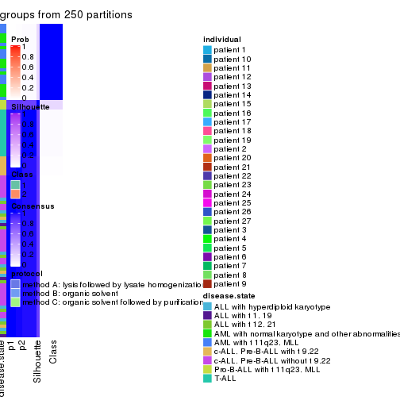
consensus_heatmap(res, k = 3)
consensus_heatmap(res, k = 4)
consensus_heatmap(res, k = 5)
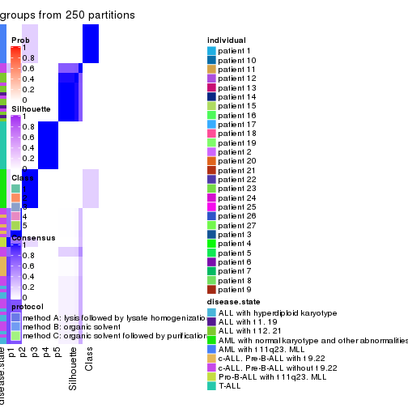
consensus_heatmap(res, k = 6)
Heatmaps for the membership of samples in all partitions to see how consistent they are:
membership_heatmap(res, k = 2)
membership_heatmap(res, k = 3)
membership_heatmap(res, k = 4)
membership_heatmap(res, k = 5)
membership_heatmap(res, k = 6)
As soon as we have had the classes for columns, we can look for signatures which are significantly different between classes which can be candidate marks for certain classes. Following are the heatmaps for signatures.
Signature heatmaps where rows are scaled:
get_signatures(res, k = 2)
#> Error: The width or height of the raster image is zero, maybe you forget to turn off the
#> previous graphic device or it was corrupted. Run `dev.off()` to close it.

get_signatures(res, k = 3)
#> Error: The width or height of the raster image is zero, maybe you forget to turn off the
#> previous graphic device or it was corrupted. Run `dev.off()` to close it.

get_signatures(res, k = 4)
#> Error: The width or height of the raster image is zero, maybe you forget to turn off the
#> previous graphic device or it was corrupted. Run `dev.off()` to close it.

get_signatures(res, k = 5)
#> Error: The width or height of the raster image is zero, maybe you forget to turn off the
#> previous graphic device or it was corrupted. Run `dev.off()` to close it.

get_signatures(res, k = 6)
#> Error: The width or height of the raster image is zero, maybe you forget to turn off the
#> previous graphic device or it was corrupted. Run `dev.off()` to close it.

Signature heatmaps where rows are not scaled:
get_signatures(res, k = 2, scale_rows = FALSE)
#> Error: The width or height of the raster image is zero, maybe you forget to turn off the
#> previous graphic device or it was corrupted. Run `dev.off()` to close it.

get_signatures(res, k = 3, scale_rows = FALSE)
#> Error: The width or height of the raster image is zero, maybe you forget to turn off the
#> previous graphic device or it was corrupted. Run `dev.off()` to close it.

get_signatures(res, k = 4, scale_rows = FALSE)
#> Error: The width or height of the raster image is zero, maybe you forget to turn off the
#> previous graphic device or it was corrupted. Run `dev.off()` to close it.

get_signatures(res, k = 5, scale_rows = FALSE)
#> Error: The width or height of the raster image is zero, maybe you forget to turn off the
#> previous graphic device or it was corrupted. Run `dev.off()` to close it.

get_signatures(res, k = 6, scale_rows = FALSE)
#> Error: The width or height of the raster image is zero, maybe you forget to turn off the
#> previous graphic device or it was corrupted. Run `dev.off()` to close it.

Compare the overlap of signatures from different k:
compare_signatures(res)
get_signature() returns a data frame invisibly. TO get the list of signatures, the function
call should be assigned to a variable explicitly. In following code, if plot argument is set
to FALSE, no heatmap is plotted while only the differential analysis is performed.
# code only for demonstration
tb = get_signature(res, k = ..., plot = FALSE)
An example of the output of tb is:
#> which_row fdr mean_1 mean_2 scaled_mean_1 scaled_mean_2 km
#> 1 38 0.042760348 8.373488 9.131774 -0.5533452 0.5164555 1
#> 2 40 0.018707592 7.106213 8.469186 -0.6173731 0.5762149 1
#> 3 55 0.019134737 10.221463 11.207825 -0.6159697 0.5749050 1
#> 4 59 0.006059896 5.921854 7.869574 -0.6899429 0.6439467 1
#> 5 60 0.018055526 8.928898 10.211722 -0.6204761 0.5791110 1
#> 6 98 0.009384629 15.714769 14.887706 0.6635654 -0.6193277 2
...
The columns in tb are:
which_row: row indices corresponding to the input matrix.fdr: FDR for the differential test. mean_x: The mean value in group x.scaled_mean_x: The mean value in group x after rows are scaled.km: Row groups if k-means clustering is applied to rows.UMAP plot which shows how samples are separated.
dimension_reduction(res, k = 2, method = "UMAP")
dimension_reduction(res, k = 3, method = "UMAP")
dimension_reduction(res, k = 4, method = "UMAP")
dimension_reduction(res, k = 5, method = "UMAP")
dimension_reduction(res, k = 6, method = "UMAP")
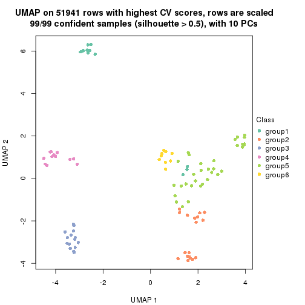
Following heatmap shows how subgroups are split when increasing k:
collect_classes(res)
Test correlation between subgroups and known annotations. If the known annotation is numeric, one-way ANOVA test is applied, and if the known annotation is discrete, chi-squared contingency table test is applied.
test_to_known_factors(res)
#> n protocol(p) individual(p) disease.state(p) k
#> CV:hclust 99 1 1.88e-10 6.83e-18 2
#> CV:hclust 99 1 6.75e-19 2.01e-33 3
#> CV:hclust 99 1 2.76e-27 1.46e-41 4
#> CV:hclust 99 1 1.19e-35 5.13e-57 5
#> CV:hclust 99 1 5.33e-44 4.94e-55 6
If matrix rows can be associated to genes, consider to use functional_enrichment(res,
...) to perform function enrichment for the signature genes. See this vignette for more detailed explanations.
The object with results only for a single top-value method and a single partition method can be extracted as:
res = res_list["CV", "kmeans"]
# you can also extract it by
# res = res_list["CV:kmeans"]
A summary of res and all the functions that can be applied to it:
res
#> A 'ConsensusPartition' object with k = 2, 3, 4, 5, 6.
#> On a matrix with 51941 rows and 99 columns.
#> Top rows (1000, 2000, 3000, 4000, 5000) are extracted by 'CV' method.
#> Subgroups are detected by 'kmeans' method.
#> Performed in total 1250 partitions by row resampling.
#> Best k for subgroups seems to be 2.
#>
#> Following methods can be applied to this 'ConsensusPartition' object:
#> [1] "cola_report" "collect_classes" "collect_plots"
#> [4] "collect_stats" "colnames" "compare_signatures"
#> [7] "consensus_heatmap" "dimension_reduction" "functional_enrichment"
#> [10] "get_anno_col" "get_anno" "get_classes"
#> [13] "get_consensus" "get_matrix" "get_membership"
#> [16] "get_param" "get_signatures" "get_stats"
#> [19] "is_best_k" "is_stable_k" "membership_heatmap"
#> [22] "ncol" "nrow" "plot_ecdf"
#> [25] "rownames" "select_partition_number" "show"
#> [28] "suggest_best_k" "test_to_known_factors"
collect_plots() function collects all the plots made from res for all k (number of partitions)
into one single page to provide an easy and fast comparison between different k.
collect_plots(res)
The plots are:
k and the heatmap of
predicted classes for each k.k.k.k.All the plots in panels can be made by individual functions and they are plotted later in this section.
select_partition_number() produces several plots showing different
statistics for choosing “optimized” k. There are following statistics:
k;k, the area increased is defined as \(A_k - A_{k-1}\).The detailed explanations of these statistics can be found in the cola vignette.
Generally speaking, lower PAC score, higher mean silhouette score or higher
concordance corresponds to better partition. Rand index and Jaccard index
measure how similar the current partition is compared to partition with k-1.
If they are too similar, we won't accept k is better than k-1.
select_partition_number(res)
The numeric values for all these statistics can be obtained by get_stats().
get_stats(res)
#> k 1-PAC mean_silhouette concordance area_increased Rand Jaccard
#> 2 2 0.603 0.858 0.906 0.4401 0.518 0.518
#> 3 3 0.544 0.800 0.772 0.3340 1.000 1.000
#> 4 4 0.613 0.674 0.725 0.1794 0.748 0.513
#> 5 5 0.621 0.622 0.696 0.0780 1.000 1.000
#> 6 6 0.655 0.785 0.761 0.0644 0.859 0.510
suggest_best_k() suggests the best \(k\) based on these statistics. The rules are as follows:
suggest_best_k(res)
#> [1] 2
Following shows the table of the partitions (You need to click the show/hide
code output link to see it). The membership matrix (columns with name p*)
is inferred by
clue::cl_consensus()
function with the SE method. Basically the value in the membership matrix
represents the probability to belong to a certain group. The finall class
label for an item is determined with the group with highest probability it
belongs to.
In get_classes() function, the entropy is calculated from the membership
matrix and the silhouette score is calculated from the consensus matrix.
cbind(get_classes(res, k = 2), get_membership(res, k = 2))
#> class entropy silhouette p1 p2
#> GSM187698 2 0.6973 0.757 0.188 0.812
#> GSM187701 2 0.2236 0.948 0.036 0.964
#> GSM187704 1 0.9393 0.662 0.644 0.356
#> GSM187707 2 0.0938 0.938 0.012 0.988
#> GSM187710 2 0.1184 0.935 0.016 0.984
#> GSM187713 2 0.2236 0.948 0.036 0.964
#> GSM187716 2 0.0938 0.938 0.012 0.988
#> GSM187719 1 0.3733 0.838 0.928 0.072
#> GSM187722 2 0.8499 0.574 0.276 0.724
#> GSM187725 1 0.9393 0.662 0.644 0.356
#> GSM187728 2 0.1184 0.935 0.016 0.984
#> GSM187731 2 0.2236 0.948 0.036 0.964
#> GSM187734 2 0.2236 0.948 0.036 0.964
#> GSM187737 2 0.0000 0.942 0.000 1.000
#> GSM187740 2 0.0938 0.938 0.012 0.988
#> GSM187743 1 0.2423 0.831 0.960 0.040
#> GSM187746 1 0.9358 0.666 0.648 0.352
#> GSM187749 1 0.9393 0.662 0.644 0.356
#> GSM187752 2 0.2236 0.948 0.036 0.964
#> GSM187755 2 0.2236 0.948 0.036 0.964
#> GSM187758 1 0.9393 0.662 0.644 0.356
#> GSM187761 2 0.1184 0.935 0.016 0.984
#> GSM187764 2 0.2236 0.948 0.036 0.964
#> GSM187767 2 0.0000 0.942 0.000 1.000
#> GSM187770 1 0.3733 0.838 0.928 0.072
#> GSM187771 1 0.3733 0.838 0.928 0.072
#> GSM187772 1 0.3733 0.838 0.928 0.072
#> GSM187780 1 0.2423 0.831 0.960 0.040
#> GSM187781 1 0.2423 0.831 0.960 0.040
#> GSM187782 1 0.2423 0.831 0.960 0.040
#> GSM187788 2 0.2236 0.948 0.036 0.964
#> GSM187789 2 0.2236 0.948 0.036 0.964
#> GSM187790 2 0.2236 0.948 0.036 0.964
#> GSM187699 2 0.6887 0.764 0.184 0.816
#> GSM187702 2 0.2236 0.948 0.036 0.964
#> GSM187705 1 0.9393 0.662 0.644 0.356
#> GSM187708 2 0.0938 0.938 0.012 0.988
#> GSM187711 2 0.1184 0.935 0.016 0.984
#> GSM187714 2 0.2236 0.948 0.036 0.964
#> GSM187717 2 0.0938 0.938 0.012 0.988
#> GSM187720 1 0.3733 0.838 0.928 0.072
#> GSM187723 2 0.8499 0.574 0.276 0.724
#> GSM187726 1 0.9393 0.662 0.644 0.356
#> GSM187729 2 0.1184 0.935 0.016 0.984
#> GSM187732 2 0.2236 0.948 0.036 0.964
#> GSM187735 2 0.2236 0.948 0.036 0.964
#> GSM187738 2 0.0000 0.942 0.000 1.000
#> GSM187741 2 0.0938 0.938 0.012 0.988
#> GSM187744 1 0.2423 0.831 0.960 0.040
#> GSM187747 1 0.9358 0.666 0.648 0.352
#> GSM187750 1 0.9393 0.662 0.644 0.356
#> GSM187753 2 0.2236 0.948 0.036 0.964
#> GSM187756 2 0.2236 0.948 0.036 0.964
#> GSM187759 1 0.9393 0.662 0.644 0.356
#> GSM187762 2 0.1184 0.935 0.016 0.984
#> GSM187765 2 0.2236 0.948 0.036 0.964
#> GSM187768 2 0.0000 0.942 0.000 1.000
#> GSM187773 1 0.3733 0.838 0.928 0.072
#> GSM187774 1 0.3733 0.838 0.928 0.072
#> GSM187775 1 0.3733 0.838 0.928 0.072
#> GSM187776 1 0.2423 0.831 0.960 0.040
#> GSM187783 1 0.2423 0.831 0.960 0.040
#> GSM187784 1 0.2423 0.831 0.960 0.040
#> GSM187791 2 0.2236 0.948 0.036 0.964
#> GSM187792 2 0.2236 0.948 0.036 0.964
#> GSM187793 2 0.2236 0.948 0.036 0.964
#> GSM187700 2 0.6973 0.757 0.188 0.812
#> GSM187703 2 0.2236 0.948 0.036 0.964
#> GSM187706 1 0.9393 0.662 0.644 0.356
#> GSM187709 2 0.0938 0.938 0.012 0.988
#> GSM187712 2 0.1184 0.935 0.016 0.984
#> GSM187715 2 0.2236 0.948 0.036 0.964
#> GSM187718 2 0.0938 0.938 0.012 0.988
#> GSM187721 1 0.3733 0.838 0.928 0.072
#> GSM187724 2 0.8499 0.574 0.276 0.724
#> GSM187727 1 0.9393 0.662 0.644 0.356
#> GSM187730 2 0.1184 0.935 0.016 0.984
#> GSM187733 2 0.2236 0.948 0.036 0.964
#> GSM187736 2 0.2236 0.948 0.036 0.964
#> GSM187739 2 0.0000 0.942 0.000 1.000
#> GSM187742 2 0.0938 0.938 0.012 0.988
#> GSM187745 1 0.2423 0.831 0.960 0.040
#> GSM187748 1 0.9358 0.666 0.648 0.352
#> GSM187751 1 0.9393 0.662 0.644 0.356
#> GSM187754 2 0.2236 0.948 0.036 0.964
#> GSM187757 2 0.2236 0.948 0.036 0.964
#> GSM187760 1 0.9393 0.662 0.644 0.356
#> GSM187763 2 0.1184 0.935 0.016 0.984
#> GSM187766 2 0.2236 0.948 0.036 0.964
#> GSM187769 2 0.0000 0.942 0.000 1.000
#> GSM187777 1 0.3733 0.838 0.928 0.072
#> GSM187778 1 0.3733 0.838 0.928 0.072
#> GSM187779 1 0.3733 0.838 0.928 0.072
#> GSM187785 1 0.2423 0.831 0.960 0.040
#> GSM187786 1 0.2423 0.831 0.960 0.040
#> GSM187787 1 0.2423 0.831 0.960 0.040
#> GSM187794 2 0.2236 0.948 0.036 0.964
#> GSM187795 2 0.2236 0.948 0.036 0.964
#> GSM187796 2 0.2236 0.948 0.036 0.964
cbind(get_classes(res, k = 3), get_membership(res, k = 3))
#> class entropy silhouette p1 p2 p3
#> GSM187698 2 0.5650 0.797 0.084 0.808 0.108
#> GSM187701 2 0.3038 0.853 0.000 0.896 0.104
#> GSM187704 1 0.7885 0.733 0.580 0.068 0.352
#> GSM187707 2 0.5810 0.796 0.000 0.664 0.336
#> GSM187710 2 0.5733 0.800 0.000 0.676 0.324
#> GSM187713 2 0.0424 0.855 0.000 0.992 0.008
#> GSM187716 2 0.6140 0.778 0.000 0.596 0.404
#> GSM187719 1 0.0592 0.800 0.988 0.012 0.000
#> GSM187722 2 0.6184 0.775 0.108 0.780 0.112
#> GSM187725 1 0.7885 0.733 0.580 0.068 0.352
#> GSM187728 2 0.5810 0.796 0.000 0.664 0.336
#> GSM187731 2 0.0424 0.855 0.000 0.992 0.008
#> GSM187734 2 0.0237 0.856 0.000 0.996 0.004
#> GSM187737 2 0.3412 0.857 0.000 0.876 0.124
#> GSM187740 2 0.5968 0.788 0.000 0.636 0.364
#> GSM187743 1 0.6143 0.751 0.720 0.024 0.256
#> GSM187746 1 0.7665 0.734 0.600 0.060 0.340
#> GSM187749 1 0.7885 0.733 0.580 0.068 0.352
#> GSM187752 2 0.0237 0.856 0.000 0.996 0.004
#> GSM187755 2 0.4452 0.834 0.000 0.808 0.192
#> GSM187758 1 0.7885 0.733 0.580 0.068 0.352
#> GSM187761 2 0.5905 0.794 0.000 0.648 0.352
#> GSM187764 2 0.4555 0.834 0.000 0.800 0.200
#> GSM187767 2 0.5058 0.826 0.000 0.756 0.244
#> GSM187770 1 0.0829 0.800 0.984 0.012 0.004
#> GSM187771 1 0.0829 0.800 0.984 0.012 0.004
#> GSM187772 1 0.0829 0.800 0.984 0.012 0.004
#> GSM187780 1 0.6322 0.750 0.700 0.024 0.276
#> GSM187781 1 0.6322 0.750 0.700 0.024 0.276
#> GSM187782 1 0.6322 0.750 0.700 0.024 0.276
#> GSM187788 2 0.0424 0.856 0.000 0.992 0.008
#> GSM187789 2 0.0424 0.856 0.000 0.992 0.008
#> GSM187790 2 0.0424 0.856 0.000 0.992 0.008
#> GSM187699 2 0.5650 0.797 0.084 0.808 0.108
#> GSM187702 2 0.3038 0.853 0.000 0.896 0.104
#> GSM187705 1 0.7885 0.733 0.580 0.068 0.352
#> GSM187708 2 0.5810 0.796 0.000 0.664 0.336
#> GSM187711 2 0.5733 0.800 0.000 0.676 0.324
#> GSM187714 2 0.0424 0.855 0.000 0.992 0.008
#> GSM187717 2 0.6140 0.778 0.000 0.596 0.404
#> GSM187720 1 0.0592 0.800 0.988 0.012 0.000
#> GSM187723 2 0.6184 0.775 0.108 0.780 0.112
#> GSM187726 1 0.7885 0.733 0.580 0.068 0.352
#> GSM187729 2 0.5810 0.796 0.000 0.664 0.336
#> GSM187732 2 0.0424 0.855 0.000 0.992 0.008
#> GSM187735 2 0.0237 0.856 0.000 0.996 0.004
#> GSM187738 2 0.3619 0.855 0.000 0.864 0.136
#> GSM187741 2 0.5968 0.788 0.000 0.636 0.364
#> GSM187744 1 0.6143 0.751 0.720 0.024 0.256
#> GSM187747 1 0.7665 0.734 0.600 0.060 0.340
#> GSM187750 1 0.7885 0.733 0.580 0.068 0.352
#> GSM187753 2 0.0237 0.856 0.000 0.996 0.004
#> GSM187756 2 0.4504 0.834 0.000 0.804 0.196
#> GSM187759 1 0.7885 0.733 0.580 0.068 0.352
#> GSM187762 2 0.5905 0.794 0.000 0.648 0.352
#> GSM187765 2 0.4555 0.834 0.000 0.800 0.200
#> GSM187768 2 0.5058 0.826 0.000 0.756 0.244
#> GSM187773 1 0.0829 0.800 0.984 0.012 0.004
#> GSM187774 1 0.0829 0.800 0.984 0.012 0.004
#> GSM187775 1 0.0829 0.800 0.984 0.012 0.004
#> GSM187776 1 0.6322 0.750 0.700 0.024 0.276
#> GSM187783 1 0.6322 0.750 0.700 0.024 0.276
#> GSM187784 1 0.6322 0.750 0.700 0.024 0.276
#> GSM187791 2 0.0424 0.856 0.000 0.992 0.008
#> GSM187792 2 0.0424 0.856 0.000 0.992 0.008
#> GSM187793 2 0.0424 0.856 0.000 0.992 0.008
#> GSM187700 2 0.5650 0.797 0.084 0.808 0.108
#> GSM187703 2 0.3038 0.853 0.000 0.896 0.104
#> GSM187706 1 0.7885 0.733 0.580 0.068 0.352
#> GSM187709 2 0.5810 0.796 0.000 0.664 0.336
#> GSM187712 2 0.5733 0.800 0.000 0.676 0.324
#> GSM187715 2 0.0424 0.855 0.000 0.992 0.008
#> GSM187718 2 0.6140 0.778 0.000 0.596 0.404
#> GSM187721 1 0.0592 0.800 0.988 0.012 0.000
#> GSM187724 2 0.6184 0.775 0.108 0.780 0.112
#> GSM187727 1 0.7885 0.733 0.580 0.068 0.352
#> GSM187730 2 0.5810 0.796 0.000 0.664 0.336
#> GSM187733 2 0.0424 0.855 0.000 0.992 0.008
#> GSM187736 2 0.0237 0.856 0.000 0.996 0.004
#> GSM187739 2 0.3619 0.855 0.000 0.864 0.136
#> GSM187742 2 0.5968 0.788 0.000 0.636 0.364
#> GSM187745 1 0.6143 0.751 0.720 0.024 0.256
#> GSM187748 1 0.7665 0.734 0.600 0.060 0.340
#> GSM187751 1 0.7885 0.733 0.580 0.068 0.352
#> GSM187754 2 0.0237 0.856 0.000 0.996 0.004
#> GSM187757 2 0.4504 0.834 0.000 0.804 0.196
#> GSM187760 1 0.7885 0.733 0.580 0.068 0.352
#> GSM187763 2 0.5905 0.794 0.000 0.648 0.352
#> GSM187766 2 0.4555 0.834 0.000 0.800 0.200
#> GSM187769 2 0.5058 0.826 0.000 0.756 0.244
#> GSM187777 1 0.0829 0.800 0.984 0.012 0.004
#> GSM187778 1 0.0829 0.800 0.984 0.012 0.004
#> GSM187779 1 0.0829 0.800 0.984 0.012 0.004
#> GSM187785 1 0.6322 0.750 0.700 0.024 0.276
#> GSM187786 1 0.6322 0.750 0.700 0.024 0.276
#> GSM187787 1 0.6322 0.750 0.700 0.024 0.276
#> GSM187794 2 0.0424 0.856 0.000 0.992 0.008
#> GSM187795 2 0.0424 0.856 0.000 0.992 0.008
#> GSM187796 2 0.0424 0.856 0.000 0.992 0.008
cbind(get_classes(res, k = 4), get_membership(res, k = 4))
#> class entropy silhouette p1 p2 p3 p4
#> GSM187698 2 0.7630 0.505 0.132 0.580 0.040 0.248
#> GSM187701 2 0.7036 0.516 0.084 0.564 0.020 0.332
#> GSM187704 3 0.0927 0.984 0.000 0.008 0.976 0.016
#> GSM187707 4 0.2125 0.764 0.012 0.052 0.004 0.932
#> GSM187710 4 0.3360 0.737 0.036 0.084 0.004 0.876
#> GSM187713 2 0.4509 0.678 0.004 0.708 0.000 0.288
#> GSM187716 4 0.6651 0.448 0.128 0.164 0.028 0.680
#> GSM187719 1 0.7218 0.702 0.444 0.140 0.416 0.000
#> GSM187722 2 0.7869 0.497 0.108 0.556 0.060 0.276
#> GSM187725 3 0.1406 0.978 0.000 0.024 0.960 0.016
#> GSM187728 4 0.2075 0.763 0.016 0.044 0.004 0.936
#> GSM187731 2 0.4509 0.678 0.004 0.708 0.000 0.288
#> GSM187734 2 0.5090 0.673 0.016 0.660 0.000 0.324
#> GSM187737 4 0.5905 -0.147 0.040 0.396 0.000 0.564
#> GSM187740 4 0.1958 0.737 0.028 0.020 0.008 0.944
#> GSM187743 1 0.5008 0.743 0.732 0.040 0.228 0.000
#> GSM187746 3 0.2170 0.961 0.012 0.036 0.936 0.016
#> GSM187749 3 0.0927 0.984 0.000 0.008 0.976 0.016
#> GSM187752 2 0.5090 0.673 0.016 0.660 0.000 0.324
#> GSM187755 2 0.8015 0.334 0.148 0.444 0.028 0.380
#> GSM187758 3 0.0779 0.984 0.000 0.004 0.980 0.016
#> GSM187761 4 0.2463 0.756 0.032 0.036 0.008 0.924
#> GSM187764 2 0.8015 0.334 0.148 0.444 0.028 0.380
#> GSM187767 4 0.4054 0.605 0.016 0.188 0.000 0.796
#> GSM187770 1 0.7251 0.702 0.440 0.144 0.416 0.000
#> GSM187771 1 0.7251 0.702 0.440 0.144 0.416 0.000
#> GSM187772 1 0.7251 0.702 0.440 0.144 0.416 0.000
#> GSM187780 1 0.4387 0.741 0.752 0.012 0.236 0.000
#> GSM187781 1 0.4387 0.741 0.752 0.012 0.236 0.000
#> GSM187782 1 0.4387 0.741 0.752 0.012 0.236 0.000
#> GSM187788 2 0.5252 0.665 0.020 0.644 0.000 0.336
#> GSM187789 2 0.5252 0.665 0.020 0.644 0.000 0.336
#> GSM187790 2 0.5252 0.665 0.020 0.644 0.000 0.336
#> GSM187699 2 0.7630 0.505 0.132 0.580 0.040 0.248
#> GSM187702 2 0.7036 0.516 0.084 0.564 0.020 0.332
#> GSM187705 3 0.0927 0.984 0.000 0.008 0.976 0.016
#> GSM187708 4 0.2125 0.764 0.012 0.052 0.004 0.932
#> GSM187711 4 0.3360 0.737 0.036 0.084 0.004 0.876
#> GSM187714 2 0.4509 0.678 0.004 0.708 0.000 0.288
#> GSM187717 4 0.6651 0.448 0.128 0.164 0.028 0.680
#> GSM187720 1 0.7218 0.702 0.444 0.140 0.416 0.000
#> GSM187723 2 0.7869 0.497 0.108 0.556 0.060 0.276
#> GSM187726 3 0.1406 0.978 0.000 0.024 0.960 0.016
#> GSM187729 4 0.2075 0.763 0.016 0.044 0.004 0.936
#> GSM187732 2 0.4509 0.678 0.004 0.708 0.000 0.288
#> GSM187735 2 0.5090 0.673 0.016 0.660 0.000 0.324
#> GSM187738 4 0.5894 -0.128 0.040 0.392 0.000 0.568
#> GSM187741 4 0.1958 0.737 0.028 0.020 0.008 0.944
#> GSM187744 1 0.5008 0.743 0.732 0.040 0.228 0.000
#> GSM187747 3 0.2170 0.961 0.012 0.036 0.936 0.016
#> GSM187750 3 0.0927 0.984 0.000 0.008 0.976 0.016
#> GSM187753 2 0.5090 0.673 0.016 0.660 0.000 0.324
#> GSM187756 2 0.8015 0.334 0.148 0.444 0.028 0.380
#> GSM187759 3 0.0779 0.984 0.000 0.004 0.980 0.016
#> GSM187762 4 0.2463 0.756 0.032 0.036 0.008 0.924
#> GSM187765 2 0.8015 0.334 0.148 0.444 0.028 0.380
#> GSM187768 4 0.4054 0.605 0.016 0.188 0.000 0.796
#> GSM187773 1 0.7251 0.702 0.440 0.144 0.416 0.000
#> GSM187774 1 0.7251 0.702 0.440 0.144 0.416 0.000
#> GSM187775 1 0.7251 0.702 0.440 0.144 0.416 0.000
#> GSM187776 1 0.4387 0.741 0.752 0.012 0.236 0.000
#> GSM187783 1 0.4387 0.741 0.752 0.012 0.236 0.000
#> GSM187784 1 0.4387 0.741 0.752 0.012 0.236 0.000
#> GSM187791 2 0.5252 0.665 0.020 0.644 0.000 0.336
#> GSM187792 2 0.5252 0.665 0.020 0.644 0.000 0.336
#> GSM187793 2 0.5252 0.665 0.020 0.644 0.000 0.336
#> GSM187700 2 0.7630 0.505 0.132 0.580 0.040 0.248
#> GSM187703 2 0.7036 0.516 0.084 0.564 0.020 0.332
#> GSM187706 3 0.0927 0.984 0.000 0.008 0.976 0.016
#> GSM187709 4 0.2125 0.764 0.012 0.052 0.004 0.932
#> GSM187712 4 0.3360 0.737 0.036 0.084 0.004 0.876
#> GSM187715 2 0.4509 0.678 0.004 0.708 0.000 0.288
#> GSM187718 4 0.6651 0.448 0.128 0.164 0.028 0.680
#> GSM187721 1 0.7218 0.702 0.444 0.140 0.416 0.000
#> GSM187724 2 0.7869 0.497 0.108 0.556 0.060 0.276
#> GSM187727 3 0.1406 0.978 0.000 0.024 0.960 0.016
#> GSM187730 4 0.2075 0.763 0.016 0.044 0.004 0.936
#> GSM187733 2 0.4509 0.678 0.004 0.708 0.000 0.288
#> GSM187736 2 0.5090 0.673 0.016 0.660 0.000 0.324
#> GSM187739 4 0.5894 -0.128 0.040 0.392 0.000 0.568
#> GSM187742 4 0.1958 0.737 0.028 0.020 0.008 0.944
#> GSM187745 1 0.5008 0.743 0.732 0.040 0.228 0.000
#> GSM187748 3 0.2170 0.961 0.012 0.036 0.936 0.016
#> GSM187751 3 0.0927 0.984 0.000 0.008 0.976 0.016
#> GSM187754 2 0.5090 0.673 0.016 0.660 0.000 0.324
#> GSM187757 2 0.8015 0.334 0.148 0.444 0.028 0.380
#> GSM187760 3 0.0779 0.984 0.000 0.004 0.980 0.016
#> GSM187763 4 0.2463 0.756 0.032 0.036 0.008 0.924
#> GSM187766 2 0.8015 0.334 0.148 0.444 0.028 0.380
#> GSM187769 4 0.4054 0.605 0.016 0.188 0.000 0.796
#> GSM187777 1 0.7251 0.702 0.440 0.144 0.416 0.000
#> GSM187778 1 0.7251 0.702 0.440 0.144 0.416 0.000
#> GSM187779 1 0.7251 0.702 0.440 0.144 0.416 0.000
#> GSM187785 1 0.4387 0.741 0.752 0.012 0.236 0.000
#> GSM187786 1 0.4387 0.741 0.752 0.012 0.236 0.000
#> GSM187787 1 0.4387 0.741 0.752 0.012 0.236 0.000
#> GSM187794 2 0.5252 0.665 0.020 0.644 0.000 0.336
#> GSM187795 2 0.5252 0.665 0.020 0.644 0.000 0.336
#> GSM187796 2 0.5252 0.665 0.020 0.644 0.000 0.336
cbind(get_classes(res, k = 5), get_membership(res, k = 5))
#> class entropy silhouette p1 p2 p3 p4 p5
#> GSM187698 5 0.4485 0.4309 0.016 0.136 0.024 NA 0.792
#> GSM187701 5 0.4901 0.4534 0.020 0.188 0.016 NA 0.744
#> GSM187704 3 0.0566 0.9799 0.000 0.012 0.984 NA 0.004
#> GSM187707 2 0.2381 0.7165 0.024 0.920 0.008 NA 0.020
#> GSM187710 2 0.4146 0.6926 0.032 0.816 0.004 NA 0.040
#> GSM187713 5 0.6662 0.6031 0.012 0.212 0.004 NA 0.544
#> GSM187716 2 0.7103 0.2415 0.012 0.428 0.016 NA 0.384
#> GSM187719 1 0.4106 0.6398 0.724 0.000 0.256 NA 0.020
#> GSM187722 5 0.4932 0.4206 0.044 0.140 0.028 NA 0.768
#> GSM187725 3 0.1074 0.9775 0.000 0.012 0.968 NA 0.004
#> GSM187728 2 0.1143 0.7201 0.004 0.968 0.008 NA 0.008
#> GSM187731 5 0.6639 0.6030 0.012 0.208 0.004 NA 0.548
#> GSM187734 5 0.7055 0.5947 0.012 0.248 0.004 NA 0.456
#> GSM187737 2 0.6730 -0.0863 0.032 0.476 0.004 NA 0.388
#> GSM187740 2 0.2972 0.7036 0.012 0.888 0.008 NA 0.036
#> GSM187743 1 0.6520 0.6802 0.516 0.000 0.100 NA 0.032
#> GSM187746 3 0.2213 0.9492 0.016 0.004 0.924 NA 0.016
#> GSM187749 3 0.0693 0.9795 0.000 0.012 0.980 NA 0.008
#> GSM187752 5 0.6789 0.5957 0.000 0.252 0.004 NA 0.440
#> GSM187755 5 0.6036 0.3133 0.008 0.180 0.016 NA 0.652
#> GSM187758 3 0.0854 0.9785 0.000 0.012 0.976 NA 0.004
#> GSM187761 2 0.4367 0.7044 0.040 0.804 0.008 NA 0.032
#> GSM187764 5 0.5998 0.3136 0.008 0.180 0.016 NA 0.656
#> GSM187767 2 0.5057 0.5775 0.024 0.740 0.000 NA 0.136
#> GSM187770 1 0.3662 0.6429 0.744 0.000 0.252 NA 0.004
#> GSM187771 1 0.3662 0.6429 0.744 0.000 0.252 NA 0.004
#> GSM187772 1 0.3662 0.6429 0.744 0.000 0.252 NA 0.004
#> GSM187780 1 0.5873 0.6853 0.532 0.000 0.092 NA 0.004
#> GSM187781 1 0.5976 0.6853 0.532 0.000 0.092 NA 0.008
#> GSM187782 1 0.5873 0.6853 0.532 0.000 0.092 NA 0.004
#> GSM187788 5 0.6846 0.5887 0.000 0.260 0.004 NA 0.416
#> GSM187789 5 0.6846 0.5887 0.000 0.260 0.004 NA 0.416
#> GSM187790 5 0.6846 0.5887 0.000 0.260 0.004 NA 0.416
#> GSM187699 5 0.4485 0.4309 0.016 0.136 0.024 NA 0.792
#> GSM187702 5 0.4901 0.4534 0.020 0.188 0.016 NA 0.744
#> GSM187705 3 0.0566 0.9799 0.000 0.012 0.984 NA 0.004
#> GSM187708 2 0.2381 0.7165 0.024 0.920 0.008 NA 0.020
#> GSM187711 2 0.4146 0.6926 0.032 0.816 0.004 NA 0.040
#> GSM187714 5 0.6662 0.6031 0.012 0.212 0.004 NA 0.544
#> GSM187717 2 0.7103 0.2415 0.012 0.428 0.016 NA 0.384
#> GSM187720 1 0.4106 0.6398 0.724 0.000 0.256 NA 0.020
#> GSM187723 5 0.4932 0.4206 0.044 0.140 0.028 NA 0.768
#> GSM187726 3 0.1074 0.9775 0.000 0.012 0.968 NA 0.004
#> GSM187729 2 0.1143 0.7201 0.004 0.968 0.008 NA 0.008
#> GSM187732 5 0.6639 0.6030 0.012 0.208 0.004 NA 0.548
#> GSM187735 5 0.7055 0.5947 0.012 0.248 0.004 NA 0.456
#> GSM187738 2 0.6725 -0.0763 0.032 0.480 0.004 NA 0.384
#> GSM187741 2 0.2972 0.7036 0.012 0.888 0.008 NA 0.036
#> GSM187744 1 0.6520 0.6802 0.516 0.000 0.100 NA 0.032
#> GSM187747 3 0.2213 0.9492 0.016 0.004 0.924 NA 0.016
#> GSM187750 3 0.0693 0.9795 0.000 0.012 0.980 NA 0.008
#> GSM187753 5 0.6789 0.5957 0.000 0.252 0.004 NA 0.440
#> GSM187756 5 0.6036 0.3133 0.008 0.180 0.016 NA 0.652
#> GSM187759 3 0.0854 0.9785 0.000 0.012 0.976 NA 0.004
#> GSM187762 2 0.4367 0.7044 0.040 0.804 0.008 NA 0.032
#> GSM187765 5 0.5998 0.3136 0.008 0.180 0.016 NA 0.656
#> GSM187768 2 0.5057 0.5775 0.024 0.740 0.000 NA 0.136
#> GSM187773 1 0.3662 0.6429 0.744 0.000 0.252 NA 0.004
#> GSM187774 1 0.3662 0.6429 0.744 0.000 0.252 NA 0.004
#> GSM187775 1 0.3662 0.6429 0.744 0.000 0.252 NA 0.004
#> GSM187776 1 0.5985 0.6852 0.528 0.000 0.092 NA 0.008
#> GSM187783 1 0.5882 0.6853 0.528 0.000 0.092 NA 0.004
#> GSM187784 1 0.5882 0.6853 0.528 0.000 0.092 NA 0.004
#> GSM187791 5 0.6846 0.5887 0.000 0.260 0.004 NA 0.416
#> GSM187792 5 0.6846 0.5887 0.000 0.260 0.004 NA 0.416
#> GSM187793 5 0.6846 0.5887 0.000 0.260 0.004 NA 0.416
#> GSM187700 5 0.4485 0.4309 0.016 0.136 0.024 NA 0.792
#> GSM187703 5 0.4901 0.4534 0.020 0.188 0.016 NA 0.744
#> GSM187706 3 0.0566 0.9799 0.000 0.012 0.984 NA 0.004
#> GSM187709 2 0.2381 0.7165 0.024 0.920 0.008 NA 0.020
#> GSM187712 2 0.4146 0.6926 0.032 0.816 0.004 NA 0.040
#> GSM187715 5 0.6662 0.6031 0.012 0.212 0.004 NA 0.544
#> GSM187718 2 0.7103 0.2415 0.012 0.428 0.016 NA 0.384
#> GSM187721 1 0.4106 0.6398 0.724 0.000 0.256 NA 0.020
#> GSM187724 5 0.4932 0.4206 0.044 0.140 0.028 NA 0.768
#> GSM187727 3 0.1074 0.9775 0.000 0.012 0.968 NA 0.004
#> GSM187730 2 0.1143 0.7201 0.004 0.968 0.008 NA 0.008
#> GSM187733 5 0.6639 0.6030 0.012 0.208 0.004 NA 0.548
#> GSM187736 5 0.7055 0.5947 0.012 0.248 0.004 NA 0.456
#> GSM187739 2 0.6725 -0.0763 0.032 0.480 0.004 NA 0.384
#> GSM187742 2 0.2972 0.7036 0.012 0.888 0.008 NA 0.036
#> GSM187745 1 0.6520 0.6802 0.516 0.000 0.100 NA 0.032
#> GSM187748 3 0.2213 0.9492 0.016 0.004 0.924 NA 0.016
#> GSM187751 3 0.0693 0.9795 0.000 0.012 0.980 NA 0.008
#> GSM187754 5 0.6789 0.5957 0.000 0.252 0.004 NA 0.440
#> GSM187757 5 0.6036 0.3133 0.008 0.180 0.016 NA 0.652
#> GSM187760 3 0.0854 0.9785 0.000 0.012 0.976 NA 0.004
#> GSM187763 2 0.4367 0.7044 0.040 0.804 0.008 NA 0.032
#> GSM187766 5 0.5998 0.3136 0.008 0.180 0.016 NA 0.656
#> GSM187769 2 0.5057 0.5775 0.024 0.740 0.000 NA 0.136
#> GSM187777 1 0.3662 0.6429 0.744 0.000 0.252 NA 0.004
#> GSM187778 1 0.3662 0.6429 0.744 0.000 0.252 NA 0.004
#> GSM187779 1 0.3662 0.6429 0.744 0.000 0.252 NA 0.004
#> GSM187785 1 0.5873 0.6853 0.532 0.000 0.092 NA 0.004
#> GSM187786 1 0.5882 0.6853 0.528 0.000 0.092 NA 0.004
#> GSM187787 1 0.5873 0.6853 0.532 0.000 0.092 NA 0.004
#> GSM187794 5 0.6846 0.5887 0.000 0.260 0.004 NA 0.416
#> GSM187795 5 0.6846 0.5887 0.000 0.260 0.004 NA 0.416
#> GSM187796 5 0.6846 0.5887 0.000 0.260 0.004 NA 0.416
cbind(get_classes(res, k = 6), get_membership(res, k = 6))
#> class entropy silhouette p1 p2 p3 p4 p5 p6
#> GSM187698 6 0.6751 0.6672 0.112 0.036 0.000 0.064 0.236 0.552
#> GSM187701 6 0.7139 0.5748 0.112 0.092 0.000 0.024 0.324 0.448
#> GSM187704 3 0.0436 0.9553 0.004 0.000 0.988 0.000 0.004 0.004
#> GSM187707 2 0.4605 0.7874 0.012 0.760 0.000 0.032 0.112 0.084
#> GSM187710 2 0.6176 0.7472 0.064 0.652 0.004 0.068 0.160 0.052
#> GSM187713 5 0.3755 0.7443 0.068 0.012 0.000 0.016 0.820 0.084
#> GSM187716 6 0.5231 0.1838 0.012 0.352 0.000 0.012 0.048 0.576
#> GSM187719 4 0.3636 0.9717 0.000 0.016 0.196 0.772 0.000 0.016
#> GSM187722 6 0.7182 0.6398 0.100 0.060 0.004 0.060 0.268 0.508
#> GSM187725 3 0.2332 0.9392 0.036 0.020 0.908 0.000 0.004 0.032
#> GSM187728 2 0.2781 0.8035 0.008 0.860 0.000 0.000 0.108 0.024
#> GSM187731 5 0.3840 0.7413 0.068 0.012 0.000 0.020 0.816 0.084
#> GSM187734 5 0.1578 0.8116 0.028 0.004 0.000 0.012 0.944 0.012
#> GSM187737 5 0.7596 -0.0317 0.096 0.264 0.000 0.028 0.416 0.196
#> GSM187740 2 0.4505 0.7638 0.008 0.752 0.000 0.016 0.096 0.128
#> GSM187743 1 0.6279 0.8799 0.556 0.028 0.060 0.304 0.004 0.048
#> GSM187746 3 0.3000 0.9217 0.044 0.016 0.872 0.012 0.000 0.056
#> GSM187749 3 0.0291 0.9555 0.000 0.000 0.992 0.000 0.004 0.004
#> GSM187752 5 0.0653 0.8205 0.012 0.000 0.000 0.004 0.980 0.004
#> GSM187755 6 0.3978 0.6988 0.000 0.064 0.000 0.000 0.192 0.744
#> GSM187758 3 0.1053 0.9538 0.000 0.012 0.964 0.000 0.004 0.020
#> GSM187761 2 0.5852 0.7531 0.076 0.692 0.004 0.044 0.100 0.084
#> GSM187764 6 0.4279 0.6972 0.008 0.068 0.000 0.000 0.192 0.732
#> GSM187767 2 0.6559 0.6179 0.052 0.536 0.000 0.044 0.296 0.072
#> GSM187770 4 0.2762 0.9907 0.000 0.000 0.196 0.804 0.000 0.000
#> GSM187771 4 0.2762 0.9907 0.000 0.000 0.196 0.804 0.000 0.000
#> GSM187772 4 0.2762 0.9907 0.000 0.000 0.196 0.804 0.000 0.000
#> GSM187780 1 0.4602 0.9625 0.668 0.000 0.068 0.260 0.004 0.000
#> GSM187781 1 0.4602 0.9625 0.668 0.000 0.068 0.260 0.004 0.000
#> GSM187782 1 0.4602 0.9625 0.668 0.000 0.068 0.260 0.004 0.000
#> GSM187788 5 0.1223 0.8200 0.016 0.008 0.000 0.012 0.960 0.004
#> GSM187789 5 0.1223 0.8200 0.016 0.008 0.000 0.012 0.960 0.004
#> GSM187790 5 0.1223 0.8200 0.016 0.008 0.000 0.012 0.960 0.004
#> GSM187699 6 0.6751 0.6672 0.112 0.036 0.000 0.064 0.236 0.552
#> GSM187702 6 0.7139 0.5748 0.112 0.092 0.000 0.024 0.324 0.448
#> GSM187705 3 0.0436 0.9553 0.004 0.000 0.988 0.000 0.004 0.004
#> GSM187708 2 0.4605 0.7874 0.012 0.760 0.000 0.032 0.112 0.084
#> GSM187711 2 0.6176 0.7472 0.064 0.652 0.004 0.068 0.160 0.052
#> GSM187714 5 0.3755 0.7443 0.068 0.012 0.000 0.016 0.820 0.084
#> GSM187717 6 0.5231 0.1838 0.012 0.352 0.000 0.012 0.048 0.576
#> GSM187720 4 0.3636 0.9717 0.000 0.016 0.196 0.772 0.000 0.016
#> GSM187723 6 0.7182 0.6398 0.100 0.060 0.004 0.060 0.268 0.508
#> GSM187726 3 0.2332 0.9392 0.036 0.020 0.908 0.000 0.004 0.032
#> GSM187729 2 0.2781 0.8035 0.008 0.860 0.000 0.000 0.108 0.024
#> GSM187732 5 0.3840 0.7413 0.068 0.012 0.000 0.020 0.816 0.084
#> GSM187735 5 0.1578 0.8116 0.028 0.004 0.000 0.012 0.944 0.012
#> GSM187738 5 0.7605 -0.0359 0.096 0.268 0.000 0.028 0.412 0.196
#> GSM187741 2 0.4505 0.7638 0.008 0.752 0.000 0.016 0.096 0.128
#> GSM187744 1 0.6279 0.8799 0.556 0.028 0.060 0.304 0.004 0.048
#> GSM187747 3 0.3000 0.9217 0.044 0.016 0.872 0.012 0.000 0.056
#> GSM187750 3 0.0291 0.9555 0.000 0.000 0.992 0.000 0.004 0.004
#> GSM187753 5 0.0653 0.8205 0.012 0.000 0.000 0.004 0.980 0.004
#> GSM187756 6 0.3978 0.6988 0.000 0.064 0.000 0.000 0.192 0.744
#> GSM187759 3 0.1053 0.9538 0.000 0.012 0.964 0.000 0.004 0.020
#> GSM187762 2 0.5852 0.7531 0.076 0.692 0.004 0.044 0.100 0.084
#> GSM187765 6 0.4279 0.6972 0.008 0.068 0.000 0.000 0.192 0.732
#> GSM187768 2 0.6559 0.6179 0.052 0.536 0.000 0.044 0.296 0.072
#> GSM187773 4 0.2762 0.9907 0.000 0.000 0.196 0.804 0.000 0.000
#> GSM187774 4 0.2762 0.9907 0.000 0.000 0.196 0.804 0.000 0.000
#> GSM187775 4 0.2762 0.9907 0.000 0.000 0.196 0.804 0.000 0.000
#> GSM187776 1 0.4602 0.9625 0.668 0.000 0.068 0.260 0.004 0.000
#> GSM187783 1 0.4602 0.9625 0.668 0.000 0.068 0.260 0.004 0.000
#> GSM187784 1 0.4602 0.9625 0.668 0.000 0.068 0.260 0.004 0.000
#> GSM187791 5 0.1223 0.8200 0.016 0.008 0.000 0.012 0.960 0.004
#> GSM187792 5 0.1223 0.8200 0.016 0.008 0.000 0.012 0.960 0.004
#> GSM187793 5 0.1223 0.8200 0.016 0.008 0.000 0.012 0.960 0.004
#> GSM187700 6 0.6751 0.6672 0.112 0.036 0.000 0.064 0.236 0.552
#> GSM187703 6 0.7139 0.5748 0.112 0.092 0.000 0.024 0.324 0.448
#> GSM187706 3 0.0436 0.9553 0.004 0.000 0.988 0.000 0.004 0.004
#> GSM187709 2 0.4605 0.7874 0.012 0.760 0.000 0.032 0.112 0.084
#> GSM187712 2 0.6176 0.7472 0.064 0.652 0.004 0.068 0.160 0.052
#> GSM187715 5 0.3755 0.7443 0.068 0.012 0.000 0.016 0.820 0.084
#> GSM187718 6 0.5231 0.1838 0.012 0.352 0.000 0.012 0.048 0.576
#> GSM187721 4 0.3636 0.9717 0.000 0.016 0.196 0.772 0.000 0.016
#> GSM187724 6 0.7182 0.6398 0.100 0.060 0.004 0.060 0.268 0.508
#> GSM187727 3 0.2332 0.9392 0.036 0.020 0.908 0.000 0.004 0.032
#> GSM187730 2 0.2781 0.8035 0.008 0.860 0.000 0.000 0.108 0.024
#> GSM187733 5 0.3840 0.7413 0.068 0.012 0.000 0.020 0.816 0.084
#> GSM187736 5 0.1578 0.8116 0.028 0.004 0.000 0.012 0.944 0.012
#> GSM187739 5 0.7605 -0.0359 0.096 0.268 0.000 0.028 0.412 0.196
#> GSM187742 2 0.4505 0.7638 0.008 0.752 0.000 0.016 0.096 0.128
#> GSM187745 1 0.6279 0.8799 0.556 0.028 0.060 0.304 0.004 0.048
#> GSM187748 3 0.3000 0.9217 0.044 0.016 0.872 0.012 0.000 0.056
#> GSM187751 3 0.0291 0.9555 0.000 0.000 0.992 0.000 0.004 0.004
#> GSM187754 5 0.0653 0.8205 0.012 0.000 0.000 0.004 0.980 0.004
#> GSM187757 6 0.3978 0.6988 0.000 0.064 0.000 0.000 0.192 0.744
#> GSM187760 3 0.1053 0.9538 0.000 0.012 0.964 0.000 0.004 0.020
#> GSM187763 2 0.5852 0.7531 0.076 0.692 0.004 0.044 0.100 0.084
#> GSM187766 6 0.4279 0.6972 0.008 0.068 0.000 0.000 0.192 0.732
#> GSM187769 2 0.6559 0.6179 0.052 0.536 0.000 0.044 0.296 0.072
#> GSM187777 4 0.2762 0.9907 0.000 0.000 0.196 0.804 0.000 0.000
#> GSM187778 4 0.2762 0.9907 0.000 0.000 0.196 0.804 0.000 0.000
#> GSM187779 4 0.2762 0.9907 0.000 0.000 0.196 0.804 0.000 0.000
#> GSM187785 1 0.4602 0.9625 0.668 0.000 0.068 0.260 0.004 0.000
#> GSM187786 1 0.4602 0.9625 0.668 0.000 0.068 0.260 0.004 0.000
#> GSM187787 1 0.4602 0.9625 0.668 0.000 0.068 0.260 0.004 0.000
#> GSM187794 5 0.1223 0.8200 0.016 0.008 0.000 0.012 0.960 0.004
#> GSM187795 5 0.1223 0.8200 0.016 0.008 0.000 0.012 0.960 0.004
#> GSM187796 5 0.1223 0.8200 0.016 0.008 0.000 0.012 0.960 0.004
Heatmaps for the consensus matrix. It visualizes the probability of two samples to be in a same group.
consensus_heatmap(res, k = 2)
consensus_heatmap(res, k = 3)
consensus_heatmap(res, k = 4)
consensus_heatmap(res, k = 5)
consensus_heatmap(res, k = 6)
Heatmaps for the membership of samples in all partitions to see how consistent they are:
membership_heatmap(res, k = 2)
membership_heatmap(res, k = 3)
membership_heatmap(res, k = 4)
membership_heatmap(res, k = 5)
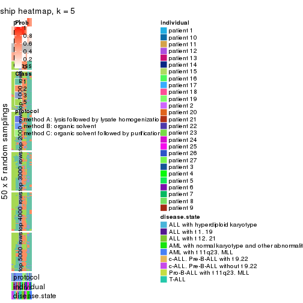
membership_heatmap(res, k = 6)
As soon as we have had the classes for columns, we can look for signatures which are significantly different between classes which can be candidate marks for certain classes. Following are the heatmaps for signatures.
Signature heatmaps where rows are scaled:
get_signatures(res, k = 2)
#> Error: The width or height of the raster image is zero, maybe you forget to turn off the
#> previous graphic device or it was corrupted. Run `dev.off()` to close it.

get_signatures(res, k = 3)
#> Error: The width or height of the raster image is zero, maybe you forget to turn off the
#> previous graphic device or it was corrupted. Run `dev.off()` to close it.

get_signatures(res, k = 4)
#> Error: The width or height of the raster image is zero, maybe you forget to turn off the
#> previous graphic device or it was corrupted. Run `dev.off()` to close it.

get_signatures(res, k = 5)
#> Error: The width or height of the raster image is zero, maybe you forget to turn off the
#> previous graphic device or it was corrupted. Run `dev.off()` to close it.

get_signatures(res, k = 6)
#> Error: The width or height of the raster image is zero, maybe you forget to turn off the
#> previous graphic device or it was corrupted. Run `dev.off()` to close it.

Signature heatmaps where rows are not scaled:
get_signatures(res, k = 2, scale_rows = FALSE)
#> Error: The width or height of the raster image is zero, maybe you forget to turn off the
#> previous graphic device or it was corrupted. Run `dev.off()` to close it.

get_signatures(res, k = 3, scale_rows = FALSE)
#> Error: The width or height of the raster image is zero, maybe you forget to turn off the
#> previous graphic device or it was corrupted. Run `dev.off()` to close it.

get_signatures(res, k = 4, scale_rows = FALSE)
#> Error: The width or height of the raster image is zero, maybe you forget to turn off the
#> previous graphic device or it was corrupted. Run `dev.off()` to close it.

get_signatures(res, k = 5, scale_rows = FALSE)
#> Error: The width or height of the raster image is zero, maybe you forget to turn off the
#> previous graphic device or it was corrupted. Run `dev.off()` to close it.

get_signatures(res, k = 6, scale_rows = FALSE)
#> Error: The width or height of the raster image is zero, maybe you forget to turn off the
#> previous graphic device or it was corrupted. Run `dev.off()` to close it.

Compare the overlap of signatures from different k:
compare_signatures(res)
get_signature() returns a data frame invisibly. TO get the list of signatures, the function
call should be assigned to a variable explicitly. In following code, if plot argument is set
to FALSE, no heatmap is plotted while only the differential analysis is performed.
# code only for demonstration
tb = get_signature(res, k = ..., plot = FALSE)
An example of the output of tb is:
#> which_row fdr mean_1 mean_2 scaled_mean_1 scaled_mean_2 km
#> 1 38 0.042760348 8.373488 9.131774 -0.5533452 0.5164555 1
#> 2 40 0.018707592 7.106213 8.469186 -0.6173731 0.5762149 1
#> 3 55 0.019134737 10.221463 11.207825 -0.6159697 0.5749050 1
#> 4 59 0.006059896 5.921854 7.869574 -0.6899429 0.6439467 1
#> 5 60 0.018055526 8.928898 10.211722 -0.6204761 0.5791110 1
#> 6 98 0.009384629 15.714769 14.887706 0.6635654 -0.6193277 2
...
The columns in tb are:
which_row: row indices corresponding to the input matrix.fdr: FDR for the differential test. mean_x: The mean value in group x.scaled_mean_x: The mean value in group x after rows are scaled.km: Row groups if k-means clustering is applied to rows.UMAP plot which shows how samples are separated.
dimension_reduction(res, k = 2, method = "UMAP")
dimension_reduction(res, k = 3, method = "UMAP")
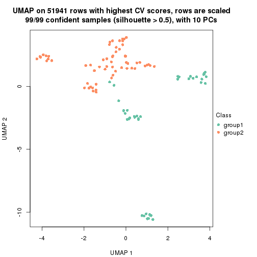
dimension_reduction(res, k = 4, method = "UMAP")
dimension_reduction(res, k = 5, method = "UMAP")
dimension_reduction(res, k = 6, method = "UMAP")
Following heatmap shows how subgroups are split when increasing k:
collect_classes(res)
Test correlation between subgroups and known annotations. If the known annotation is numeric, one-way ANOVA test is applied, and if the known annotation is discrete, chi-squared contingency table test is applied.
test_to_known_factors(res)
#> n protocol(p) individual(p) disease.state(p) k
#> CV:kmeans 99 1 1.88e-10 6.83e-18 2
#> CV:kmeans 99 1 1.88e-10 6.83e-18 3
#> CV:kmeans 84 1 1.96e-24 8.98e-34 4
#> CV:kmeans 78 1 2.62e-23 4.35e-33 5
#> CV:kmeans 93 1 4.26e-42 2.07e-58 6
If matrix rows can be associated to genes, consider to use functional_enrichment(res,
...) to perform function enrichment for the signature genes. See this vignette for more detailed explanations.
The object with results only for a single top-value method and a single partition method can be extracted as:
res = res_list["CV", "skmeans"]
# you can also extract it by
# res = res_list["CV:skmeans"]
A summary of res and all the functions that can be applied to it:
res
#> A 'ConsensusPartition' object with k = 2, 3, 4, 5, 6.
#> On a matrix with 51941 rows and 99 columns.
#> Top rows (1000, 2000, 3000, 4000, 5000) are extracted by 'CV' method.
#> Subgroups are detected by 'skmeans' method.
#> Performed in total 1250 partitions by row resampling.
#> Best k for subgroups seems to be 3.
#>
#> Following methods can be applied to this 'ConsensusPartition' object:
#> [1] "cola_report" "collect_classes" "collect_plots"
#> [4] "collect_stats" "colnames" "compare_signatures"
#> [7] "consensus_heatmap" "dimension_reduction" "functional_enrichment"
#> [10] "get_anno_col" "get_anno" "get_classes"
#> [13] "get_consensus" "get_matrix" "get_membership"
#> [16] "get_param" "get_signatures" "get_stats"
#> [19] "is_best_k" "is_stable_k" "membership_heatmap"
#> [22] "ncol" "nrow" "plot_ecdf"
#> [25] "rownames" "select_partition_number" "show"
#> [28] "suggest_best_k" "test_to_known_factors"
collect_plots() function collects all the plots made from res for all k (number of partitions)
into one single page to provide an easy and fast comparison between different k.
collect_plots(res)
The plots are:
k and the heatmap of
predicted classes for each k.k.k.k.All the plots in panels can be made by individual functions and they are plotted later in this section.
select_partition_number() produces several plots showing different
statistics for choosing “optimized” k. There are following statistics:
k;k, the area increased is defined as \(A_k - A_{k-1}\).The detailed explanations of these statistics can be found in the cola vignette.
Generally speaking, lower PAC score, higher mean silhouette score or higher
concordance corresponds to better partition. Rand index and Jaccard index
measure how similar the current partition is compared to partition with k-1.
If they are too similar, we won't accept k is better than k-1.
select_partition_number(res)
The numeric values for all these statistics can be obtained by get_stats().
get_stats(res)
#> k 1-PAC mean_silhouette concordance area_increased Rand Jaccard
#> 2 2 1.000 1.000 1.000 0.5014 0.499 0.499
#> 3 3 0.902 0.947 0.948 0.1989 0.907 0.814
#> 4 4 0.702 0.802 0.839 0.2125 0.857 0.648
#> 5 5 0.774 0.711 0.785 0.0809 0.923 0.721
#> 6 6 0.869 0.859 0.893 0.0490 0.930 0.686
suggest_best_k() suggests the best \(k\) based on these statistics. The rules are as follows:
suggest_best_k(res)
#> [1] 3
#> attr(,"optional")
#> [1] 2
There is also optional best \(k\) = 2 that is worth to check.
Following shows the table of the partitions (You need to click the show/hide
code output link to see it). The membership matrix (columns with name p*)
is inferred by
clue::cl_consensus()
function with the SE method. Basically the value in the membership matrix
represents the probability to belong to a certain group. The finall class
label for an item is determined with the group with highest probability it
belongs to.
In get_classes() function, the entropy is calculated from the membership
matrix and the silhouette score is calculated from the consensus matrix.
cbind(get_classes(res, k = 2), get_membership(res, k = 2))
#> class entropy silhouette p1 p2
#> GSM187698 1 0.0376 0.996 0.996 0.004
#> GSM187701 2 0.0000 1.000 0.000 1.000
#> GSM187704 1 0.0000 1.000 1.000 0.000
#> GSM187707 2 0.0000 1.000 0.000 1.000
#> GSM187710 2 0.0000 1.000 0.000 1.000
#> GSM187713 2 0.0000 1.000 0.000 1.000
#> GSM187716 2 0.0000 1.000 0.000 1.000
#> GSM187719 1 0.0000 1.000 1.000 0.000
#> GSM187722 1 0.0000 1.000 1.000 0.000
#> GSM187725 1 0.0000 1.000 1.000 0.000
#> GSM187728 2 0.0000 1.000 0.000 1.000
#> GSM187731 2 0.0000 1.000 0.000 1.000
#> GSM187734 2 0.0000 1.000 0.000 1.000
#> GSM187737 2 0.0000 1.000 0.000 1.000
#> GSM187740 2 0.0000 1.000 0.000 1.000
#> GSM187743 1 0.0000 1.000 1.000 0.000
#> GSM187746 1 0.0000 1.000 1.000 0.000
#> GSM187749 1 0.0000 1.000 1.000 0.000
#> GSM187752 2 0.0000 1.000 0.000 1.000
#> GSM187755 2 0.0000 1.000 0.000 1.000
#> GSM187758 1 0.0000 1.000 1.000 0.000
#> GSM187761 2 0.0000 1.000 0.000 1.000
#> GSM187764 2 0.0000 1.000 0.000 1.000
#> GSM187767 2 0.0000 1.000 0.000 1.000
#> GSM187770 1 0.0000 1.000 1.000 0.000
#> GSM187771 1 0.0000 1.000 1.000 0.000
#> GSM187772 1 0.0000 1.000 1.000 0.000
#> GSM187780 1 0.0000 1.000 1.000 0.000
#> GSM187781 1 0.0000 1.000 1.000 0.000
#> GSM187782 1 0.0000 1.000 1.000 0.000
#> GSM187788 2 0.0000 1.000 0.000 1.000
#> GSM187789 2 0.0000 1.000 0.000 1.000
#> GSM187790 2 0.0000 1.000 0.000 1.000
#> GSM187699 1 0.0376 0.996 0.996 0.004
#> GSM187702 2 0.0000 1.000 0.000 1.000
#> GSM187705 1 0.0000 1.000 1.000 0.000
#> GSM187708 2 0.0000 1.000 0.000 1.000
#> GSM187711 2 0.0000 1.000 0.000 1.000
#> GSM187714 2 0.0000 1.000 0.000 1.000
#> GSM187717 2 0.0000 1.000 0.000 1.000
#> GSM187720 1 0.0000 1.000 1.000 0.000
#> GSM187723 1 0.0000 1.000 1.000 0.000
#> GSM187726 1 0.0000 1.000 1.000 0.000
#> GSM187729 2 0.0000 1.000 0.000 1.000
#> GSM187732 2 0.0000 1.000 0.000 1.000
#> GSM187735 2 0.0000 1.000 0.000 1.000
#> GSM187738 2 0.0000 1.000 0.000 1.000
#> GSM187741 2 0.0000 1.000 0.000 1.000
#> GSM187744 1 0.0000 1.000 1.000 0.000
#> GSM187747 1 0.0000 1.000 1.000 0.000
#> GSM187750 1 0.0000 1.000 1.000 0.000
#> GSM187753 2 0.0000 1.000 0.000 1.000
#> GSM187756 2 0.0000 1.000 0.000 1.000
#> GSM187759 1 0.0000 1.000 1.000 0.000
#> GSM187762 2 0.0000 1.000 0.000 1.000
#> GSM187765 2 0.0000 1.000 0.000 1.000
#> GSM187768 2 0.0000 1.000 0.000 1.000
#> GSM187773 1 0.0000 1.000 1.000 0.000
#> GSM187774 1 0.0000 1.000 1.000 0.000
#> GSM187775 1 0.0000 1.000 1.000 0.000
#> GSM187776 1 0.0000 1.000 1.000 0.000
#> GSM187783 1 0.0000 1.000 1.000 0.000
#> GSM187784 1 0.0000 1.000 1.000 0.000
#> GSM187791 2 0.0000 1.000 0.000 1.000
#> GSM187792 2 0.0000 1.000 0.000 1.000
#> GSM187793 2 0.0000 1.000 0.000 1.000
#> GSM187700 1 0.0376 0.996 0.996 0.004
#> GSM187703 2 0.0000 1.000 0.000 1.000
#> GSM187706 1 0.0000 1.000 1.000 0.000
#> GSM187709 2 0.0000 1.000 0.000 1.000
#> GSM187712 2 0.0000 1.000 0.000 1.000
#> GSM187715 2 0.0000 1.000 0.000 1.000
#> GSM187718 2 0.0000 1.000 0.000 1.000
#> GSM187721 1 0.0000 1.000 1.000 0.000
#> GSM187724 1 0.0000 1.000 1.000 0.000
#> GSM187727 1 0.0000 1.000 1.000 0.000
#> GSM187730 2 0.0000 1.000 0.000 1.000
#> GSM187733 2 0.0000 1.000 0.000 1.000
#> GSM187736 2 0.0000 1.000 0.000 1.000
#> GSM187739 2 0.0000 1.000 0.000 1.000
#> GSM187742 2 0.0000 1.000 0.000 1.000
#> GSM187745 1 0.0000 1.000 1.000 0.000
#> GSM187748 1 0.0000 1.000 1.000 0.000
#> GSM187751 1 0.0000 1.000 1.000 0.000
#> GSM187754 2 0.0000 1.000 0.000 1.000
#> GSM187757 2 0.0000 1.000 0.000 1.000
#> GSM187760 1 0.0000 1.000 1.000 0.000
#> GSM187763 2 0.0000 1.000 0.000 1.000
#> GSM187766 2 0.0000 1.000 0.000 1.000
#> GSM187769 2 0.0000 1.000 0.000 1.000
#> GSM187777 1 0.0000 1.000 1.000 0.000
#> GSM187778 1 0.0000 1.000 1.000 0.000
#> GSM187779 1 0.0000 1.000 1.000 0.000
#> GSM187785 1 0.0000 1.000 1.000 0.000
#> GSM187786 1 0.0000 1.000 1.000 0.000
#> GSM187787 1 0.0000 1.000 1.000 0.000
#> GSM187794 2 0.0000 1.000 0.000 1.000
#> GSM187795 2 0.0000 1.000 0.000 1.000
#> GSM187796 2 0.0000 1.000 0.000 1.000
cbind(get_classes(res, k = 3), get_membership(res, k = 3))
#> class entropy silhouette p1 p2 p3
#> GSM187698 1 0.2297 0.868 0.944 0.020 0.036
#> GSM187701 2 0.2584 0.926 0.064 0.928 0.008
#> GSM187704 3 0.2261 1.000 0.068 0.000 0.932
#> GSM187707 2 0.1031 0.968 0.000 0.976 0.024
#> GSM187710 2 0.1163 0.969 0.000 0.972 0.028
#> GSM187713 2 0.1643 0.969 0.000 0.956 0.044
#> GSM187716 2 0.1031 0.968 0.000 0.976 0.024
#> GSM187719 1 0.3879 0.865 0.848 0.000 0.152
#> GSM187722 1 0.1182 0.897 0.976 0.012 0.012
#> GSM187725 3 0.2261 1.000 0.068 0.000 0.932
#> GSM187728 2 0.1031 0.968 0.000 0.976 0.024
#> GSM187731 2 0.1643 0.969 0.000 0.956 0.044
#> GSM187734 2 0.1643 0.969 0.000 0.956 0.044
#> GSM187737 2 0.0592 0.970 0.000 0.988 0.012
#> GSM187740 2 0.1031 0.968 0.000 0.976 0.024
#> GSM187743 1 0.0000 0.910 1.000 0.000 0.000
#> GSM187746 3 0.2261 1.000 0.068 0.000 0.932
#> GSM187749 3 0.2261 1.000 0.068 0.000 0.932
#> GSM187752 2 0.1643 0.969 0.000 0.956 0.044
#> GSM187755 2 0.1999 0.968 0.012 0.952 0.036
#> GSM187758 3 0.2261 1.000 0.068 0.000 0.932
#> GSM187761 2 0.1031 0.968 0.000 0.976 0.024
#> GSM187764 2 0.1411 0.970 0.000 0.964 0.036
#> GSM187767 2 0.0892 0.969 0.000 0.980 0.020
#> GSM187770 1 0.4121 0.856 0.832 0.000 0.168
#> GSM187771 1 0.4062 0.859 0.836 0.000 0.164
#> GSM187772 1 0.4062 0.859 0.836 0.000 0.164
#> GSM187780 1 0.0000 0.910 1.000 0.000 0.000
#> GSM187781 1 0.0000 0.910 1.000 0.000 0.000
#> GSM187782 1 0.0000 0.910 1.000 0.000 0.000
#> GSM187788 2 0.1643 0.969 0.000 0.956 0.044
#> GSM187789 2 0.1643 0.969 0.000 0.956 0.044
#> GSM187790 2 0.1643 0.969 0.000 0.956 0.044
#> GSM187699 1 0.2297 0.868 0.944 0.020 0.036
#> GSM187702 2 0.2486 0.930 0.060 0.932 0.008
#> GSM187705 3 0.2261 1.000 0.068 0.000 0.932
#> GSM187708 2 0.1031 0.968 0.000 0.976 0.024
#> GSM187711 2 0.1163 0.969 0.000 0.972 0.028
#> GSM187714 2 0.1643 0.969 0.000 0.956 0.044
#> GSM187717 2 0.1031 0.968 0.000 0.976 0.024
#> GSM187720 1 0.3879 0.865 0.848 0.000 0.152
#> GSM187723 1 0.1182 0.897 0.976 0.012 0.012
#> GSM187726 3 0.2261 1.000 0.068 0.000 0.932
#> GSM187729 2 0.1031 0.968 0.000 0.976 0.024
#> GSM187732 2 0.1643 0.969 0.000 0.956 0.044
#> GSM187735 2 0.1643 0.969 0.000 0.956 0.044
#> GSM187738 2 0.0592 0.970 0.000 0.988 0.012
#> GSM187741 2 0.1031 0.968 0.000 0.976 0.024
#> GSM187744 1 0.0000 0.910 1.000 0.000 0.000
#> GSM187747 3 0.2261 1.000 0.068 0.000 0.932
#> GSM187750 3 0.2261 1.000 0.068 0.000 0.932
#> GSM187753 2 0.1643 0.969 0.000 0.956 0.044
#> GSM187756 2 0.1647 0.970 0.004 0.960 0.036
#> GSM187759 3 0.2261 1.000 0.068 0.000 0.932
#> GSM187762 2 0.1031 0.968 0.000 0.976 0.024
#> GSM187765 2 0.1411 0.970 0.000 0.964 0.036
#> GSM187768 2 0.0892 0.969 0.000 0.980 0.020
#> GSM187773 1 0.4121 0.856 0.832 0.000 0.168
#> GSM187774 1 0.4121 0.856 0.832 0.000 0.168
#> GSM187775 1 0.4121 0.856 0.832 0.000 0.168
#> GSM187776 1 0.0000 0.910 1.000 0.000 0.000
#> GSM187783 1 0.0000 0.910 1.000 0.000 0.000
#> GSM187784 1 0.0000 0.910 1.000 0.000 0.000
#> GSM187791 2 0.1643 0.969 0.000 0.956 0.044
#> GSM187792 2 0.1643 0.969 0.000 0.956 0.044
#> GSM187793 2 0.1643 0.969 0.000 0.956 0.044
#> GSM187700 1 0.2297 0.868 0.944 0.020 0.036
#> GSM187703 2 0.2584 0.926 0.064 0.928 0.008
#> GSM187706 3 0.2261 1.000 0.068 0.000 0.932
#> GSM187709 2 0.1031 0.968 0.000 0.976 0.024
#> GSM187712 2 0.1163 0.969 0.000 0.972 0.028
#> GSM187715 2 0.1643 0.969 0.000 0.956 0.044
#> GSM187718 2 0.1031 0.968 0.000 0.976 0.024
#> GSM187721 1 0.3879 0.865 0.848 0.000 0.152
#> GSM187724 1 0.1337 0.894 0.972 0.016 0.012
#> GSM187727 3 0.2261 1.000 0.068 0.000 0.932
#> GSM187730 2 0.1031 0.968 0.000 0.976 0.024
#> GSM187733 2 0.1643 0.969 0.000 0.956 0.044
#> GSM187736 2 0.1643 0.969 0.000 0.956 0.044
#> GSM187739 2 0.0592 0.970 0.000 0.988 0.012
#> GSM187742 2 0.1031 0.968 0.000 0.976 0.024
#> GSM187745 1 0.0000 0.910 1.000 0.000 0.000
#> GSM187748 3 0.2261 1.000 0.068 0.000 0.932
#> GSM187751 3 0.2261 1.000 0.068 0.000 0.932
#> GSM187754 2 0.1643 0.969 0.000 0.956 0.044
#> GSM187757 2 0.1647 0.970 0.004 0.960 0.036
#> GSM187760 3 0.2261 1.000 0.068 0.000 0.932
#> GSM187763 2 0.1031 0.968 0.000 0.976 0.024
#> GSM187766 2 0.1411 0.970 0.000 0.964 0.036
#> GSM187769 2 0.0892 0.969 0.000 0.980 0.020
#> GSM187777 1 0.4121 0.856 0.832 0.000 0.168
#> GSM187778 1 0.4121 0.856 0.832 0.000 0.168
#> GSM187779 1 0.4121 0.856 0.832 0.000 0.168
#> GSM187785 1 0.0000 0.910 1.000 0.000 0.000
#> GSM187786 1 0.0000 0.910 1.000 0.000 0.000
#> GSM187787 1 0.0000 0.910 1.000 0.000 0.000
#> GSM187794 2 0.1643 0.969 0.000 0.956 0.044
#> GSM187795 2 0.1643 0.969 0.000 0.956 0.044
#> GSM187796 2 0.1643 0.969 0.000 0.956 0.044
cbind(get_classes(res, k = 4), get_membership(res, k = 4))
#> class entropy silhouette p1 p2 p3 p4
#> GSM187698 1 0.3077 0.8541 0.892 0.068 0.004 0.036
#> GSM187701 2 0.6411 0.1153 0.056 0.516 0.004 0.424
#> GSM187704 3 0.0188 1.0000 0.004 0.000 0.996 0.000
#> GSM187707 2 0.3266 0.7350 0.000 0.832 0.000 0.168
#> GSM187710 2 0.3311 0.7335 0.000 0.828 0.000 0.172
#> GSM187713 4 0.2281 0.9510 0.000 0.096 0.000 0.904
#> GSM187716 2 0.1398 0.6514 0.000 0.956 0.004 0.040
#> GSM187719 1 0.4287 0.8874 0.828 0.004 0.080 0.088
#> GSM187722 1 0.4480 0.8655 0.816 0.096 0.004 0.084
#> GSM187725 3 0.0188 1.0000 0.004 0.000 0.996 0.000
#> GSM187728 2 0.3266 0.7350 0.000 0.832 0.000 0.168
#> GSM187731 4 0.2281 0.9510 0.000 0.096 0.000 0.904
#> GSM187734 4 0.2589 0.9803 0.000 0.116 0.000 0.884
#> GSM187737 2 0.4605 0.5910 0.000 0.664 0.000 0.336
#> GSM187740 2 0.2760 0.7319 0.000 0.872 0.000 0.128
#> GSM187743 1 0.0336 0.9036 0.992 0.008 0.000 0.000
#> GSM187746 3 0.0188 1.0000 0.004 0.000 0.996 0.000
#> GSM187749 3 0.0188 1.0000 0.004 0.000 0.996 0.000
#> GSM187752 4 0.2589 0.9803 0.000 0.116 0.000 0.884
#> GSM187755 2 0.5553 0.0234 0.012 0.532 0.004 0.452
#> GSM187758 3 0.0188 1.0000 0.004 0.000 0.996 0.000
#> GSM187761 2 0.2760 0.7316 0.000 0.872 0.000 0.128
#> GSM187764 2 0.5143 0.0323 0.000 0.540 0.004 0.456
#> GSM187767 2 0.4331 0.6454 0.000 0.712 0.000 0.288
#> GSM187770 1 0.4545 0.8823 0.812 0.004 0.096 0.088
#> GSM187771 1 0.4545 0.8823 0.812 0.004 0.096 0.088
#> GSM187772 1 0.4545 0.8823 0.812 0.004 0.096 0.088
#> GSM187780 1 0.0336 0.9036 0.992 0.008 0.000 0.000
#> GSM187781 1 0.0336 0.9036 0.992 0.008 0.000 0.000
#> GSM187782 1 0.0336 0.9036 0.992 0.008 0.000 0.000
#> GSM187788 4 0.2589 0.9803 0.000 0.116 0.000 0.884
#> GSM187789 4 0.2589 0.9803 0.000 0.116 0.000 0.884
#> GSM187790 4 0.2589 0.9803 0.000 0.116 0.000 0.884
#> GSM187699 1 0.3470 0.8433 0.872 0.080 0.004 0.044
#> GSM187702 2 0.5933 0.1942 0.040 0.552 0.000 0.408
#> GSM187705 3 0.0188 1.0000 0.004 0.000 0.996 0.000
#> GSM187708 2 0.3266 0.7350 0.000 0.832 0.000 0.168
#> GSM187711 2 0.3311 0.7335 0.000 0.828 0.000 0.172
#> GSM187714 4 0.2281 0.9510 0.000 0.096 0.000 0.904
#> GSM187717 2 0.1489 0.6511 0.000 0.952 0.004 0.044
#> GSM187720 1 0.4419 0.8852 0.820 0.004 0.088 0.088
#> GSM187723 1 0.4480 0.8655 0.816 0.096 0.004 0.084
#> GSM187726 3 0.0188 1.0000 0.004 0.000 0.996 0.000
#> GSM187729 2 0.3266 0.7350 0.000 0.832 0.000 0.168
#> GSM187732 4 0.2281 0.9510 0.000 0.096 0.000 0.904
#> GSM187735 4 0.2589 0.9803 0.000 0.116 0.000 0.884
#> GSM187738 2 0.4585 0.5970 0.000 0.668 0.000 0.332
#> GSM187741 2 0.2760 0.7319 0.000 0.872 0.000 0.128
#> GSM187744 1 0.0336 0.9036 0.992 0.008 0.000 0.000
#> GSM187747 3 0.0188 1.0000 0.004 0.000 0.996 0.000
#> GSM187750 3 0.0188 1.0000 0.004 0.000 0.996 0.000
#> GSM187753 4 0.2589 0.9803 0.000 0.116 0.000 0.884
#> GSM187756 2 0.5303 0.0366 0.004 0.544 0.004 0.448
#> GSM187759 3 0.0188 1.0000 0.004 0.000 0.996 0.000
#> GSM187762 2 0.2760 0.7316 0.000 0.872 0.000 0.128
#> GSM187765 2 0.5137 0.0449 0.000 0.544 0.004 0.452
#> GSM187768 2 0.4331 0.6454 0.000 0.712 0.000 0.288
#> GSM187773 1 0.4545 0.8823 0.812 0.004 0.096 0.088
#> GSM187774 1 0.4545 0.8823 0.812 0.004 0.096 0.088
#> GSM187775 1 0.4545 0.8823 0.812 0.004 0.096 0.088
#> GSM187776 1 0.0336 0.9036 0.992 0.008 0.000 0.000
#> GSM187783 1 0.0336 0.9036 0.992 0.008 0.000 0.000
#> GSM187784 1 0.0336 0.9036 0.992 0.008 0.000 0.000
#> GSM187791 4 0.2589 0.9803 0.000 0.116 0.000 0.884
#> GSM187792 4 0.2589 0.9803 0.000 0.116 0.000 0.884
#> GSM187793 4 0.2589 0.9803 0.000 0.116 0.000 0.884
#> GSM187700 1 0.3001 0.8563 0.896 0.064 0.004 0.036
#> GSM187703 2 0.6007 0.1847 0.044 0.548 0.000 0.408
#> GSM187706 3 0.0188 1.0000 0.004 0.000 0.996 0.000
#> GSM187709 2 0.3266 0.7350 0.000 0.832 0.000 0.168
#> GSM187712 2 0.3311 0.7335 0.000 0.828 0.000 0.172
#> GSM187715 4 0.2281 0.9510 0.000 0.096 0.000 0.904
#> GSM187718 2 0.1489 0.6511 0.000 0.952 0.004 0.044
#> GSM187721 1 0.4354 0.8864 0.824 0.004 0.084 0.088
#> GSM187724 1 0.4480 0.8655 0.816 0.096 0.004 0.084
#> GSM187727 3 0.0188 1.0000 0.004 0.000 0.996 0.000
#> GSM187730 2 0.3266 0.7350 0.000 0.832 0.000 0.168
#> GSM187733 4 0.2281 0.9510 0.000 0.096 0.000 0.904
#> GSM187736 4 0.2589 0.9803 0.000 0.116 0.000 0.884
#> GSM187739 2 0.4585 0.5970 0.000 0.668 0.000 0.332
#> GSM187742 2 0.2760 0.7319 0.000 0.872 0.000 0.128
#> GSM187745 1 0.0336 0.9036 0.992 0.008 0.000 0.000
#> GSM187748 3 0.0188 1.0000 0.004 0.000 0.996 0.000
#> GSM187751 3 0.0188 1.0000 0.004 0.000 0.996 0.000
#> GSM187754 4 0.2589 0.9803 0.000 0.116 0.000 0.884
#> GSM187757 2 0.5303 0.0366 0.004 0.544 0.004 0.448
#> GSM187760 3 0.0188 1.0000 0.004 0.000 0.996 0.000
#> GSM187763 2 0.2760 0.7316 0.000 0.872 0.000 0.128
#> GSM187766 2 0.5143 0.0323 0.000 0.540 0.004 0.456
#> GSM187769 2 0.4331 0.6454 0.000 0.712 0.000 0.288
#> GSM187777 1 0.4545 0.8823 0.812 0.004 0.096 0.088
#> GSM187778 1 0.4545 0.8823 0.812 0.004 0.096 0.088
#> GSM187779 1 0.4545 0.8823 0.812 0.004 0.096 0.088
#> GSM187785 1 0.0336 0.9036 0.992 0.008 0.000 0.000
#> GSM187786 1 0.0336 0.9036 0.992 0.008 0.000 0.000
#> GSM187787 1 0.0336 0.9036 0.992 0.008 0.000 0.000
#> GSM187794 4 0.2589 0.9803 0.000 0.116 0.000 0.884
#> GSM187795 4 0.2589 0.9803 0.000 0.116 0.000 0.884
#> GSM187796 4 0.2589 0.9803 0.000 0.116 0.000 0.884
cbind(get_classes(res, k = 5), get_membership(res, k = 5))
#> class entropy silhouette p1 p2 p3 p4 p5
#> GSM187698 5 0.6749 -0.505 0.304 0.000 0.000 0.288 0.408
#> GSM187701 1 0.6619 0.255 0.420 0.360 0.000 0.000 0.220
#> GSM187704 3 0.0000 1.000 0.000 0.000 1.000 0.000 0.000
#> GSM187707 2 0.4161 0.786 0.392 0.608 0.000 0.000 0.000
#> GSM187710 2 0.4088 0.784 0.368 0.632 0.000 0.000 0.000
#> GSM187713 5 0.4971 0.818 0.028 0.460 0.000 0.000 0.512
#> GSM187716 1 0.1965 0.506 0.904 0.096 0.000 0.000 0.000
#> GSM187719 4 0.0703 0.715 0.000 0.000 0.024 0.976 0.000
#> GSM187722 4 0.5723 0.351 0.316 0.008 0.000 0.592 0.084
#> GSM187725 3 0.0000 1.000 0.000 0.000 1.000 0.000 0.000
#> GSM187728 2 0.4161 0.786 0.392 0.608 0.000 0.000 0.000
#> GSM187731 5 0.4897 0.819 0.024 0.460 0.000 0.000 0.516
#> GSM187734 5 0.4304 0.835 0.000 0.484 0.000 0.000 0.516
#> GSM187737 2 0.5040 0.563 0.236 0.680 0.000 0.000 0.084
#> GSM187740 2 0.4278 0.745 0.452 0.548 0.000 0.000 0.000
#> GSM187743 4 0.4294 0.693 0.000 0.000 0.000 0.532 0.468
#> GSM187746 3 0.0000 1.000 0.000 0.000 1.000 0.000 0.000
#> GSM187749 3 0.0000 1.000 0.000 0.000 1.000 0.000 0.000
#> GSM187752 5 0.4305 0.837 0.000 0.488 0.000 0.000 0.512
#> GSM187755 1 0.3409 0.778 0.816 0.160 0.000 0.000 0.024
#> GSM187758 3 0.0000 1.000 0.000 0.000 1.000 0.000 0.000
#> GSM187761 2 0.4273 0.744 0.448 0.552 0.000 0.000 0.000
#> GSM187764 1 0.3013 0.785 0.832 0.160 0.000 0.000 0.008
#> GSM187767 2 0.3480 0.709 0.248 0.752 0.000 0.000 0.000
#> GSM187770 4 0.0880 0.715 0.000 0.000 0.032 0.968 0.000
#> GSM187771 4 0.0880 0.715 0.000 0.000 0.032 0.968 0.000
#> GSM187772 4 0.0880 0.715 0.000 0.000 0.032 0.968 0.000
#> GSM187780 4 0.4294 0.693 0.000 0.000 0.000 0.532 0.468
#> GSM187781 4 0.4294 0.693 0.000 0.000 0.000 0.532 0.468
#> GSM187782 4 0.4294 0.693 0.000 0.000 0.000 0.532 0.468
#> GSM187788 5 0.4305 0.837 0.000 0.488 0.000 0.000 0.512
#> GSM187789 5 0.4305 0.837 0.000 0.488 0.000 0.000 0.512
#> GSM187790 5 0.4305 0.837 0.000 0.488 0.000 0.000 0.512
#> GSM187699 5 0.6772 -0.505 0.308 0.000 0.000 0.296 0.396
#> GSM187702 2 0.6415 -0.225 0.400 0.428 0.000 0.000 0.172
#> GSM187705 3 0.0000 1.000 0.000 0.000 1.000 0.000 0.000
#> GSM187708 2 0.4161 0.786 0.392 0.608 0.000 0.000 0.000
#> GSM187711 2 0.4088 0.784 0.368 0.632 0.000 0.000 0.000
#> GSM187714 5 0.4824 0.825 0.020 0.468 0.000 0.000 0.512
#> GSM187717 1 0.1965 0.506 0.904 0.096 0.000 0.000 0.000
#> GSM187720 4 0.0794 0.716 0.000 0.000 0.028 0.972 0.000
#> GSM187723 4 0.5707 0.356 0.312 0.008 0.000 0.596 0.084
#> GSM187726 3 0.0000 1.000 0.000 0.000 1.000 0.000 0.000
#> GSM187729 2 0.4161 0.786 0.392 0.608 0.000 0.000 0.000
#> GSM187732 5 0.4824 0.825 0.020 0.468 0.000 0.000 0.512
#> GSM187735 5 0.4305 0.837 0.000 0.488 0.000 0.000 0.512
#> GSM187738 2 0.4701 0.618 0.236 0.704 0.000 0.000 0.060
#> GSM187741 2 0.4278 0.747 0.452 0.548 0.000 0.000 0.000
#> GSM187744 4 0.4294 0.693 0.000 0.000 0.000 0.532 0.468
#> GSM187747 3 0.0000 1.000 0.000 0.000 1.000 0.000 0.000
#> GSM187750 3 0.0000 1.000 0.000 0.000 1.000 0.000 0.000
#> GSM187753 5 0.4305 0.837 0.000 0.488 0.000 0.000 0.512
#> GSM187756 1 0.3224 0.784 0.824 0.160 0.000 0.000 0.016
#> GSM187759 3 0.0000 1.000 0.000 0.000 1.000 0.000 0.000
#> GSM187762 2 0.4273 0.744 0.448 0.552 0.000 0.000 0.000
#> GSM187765 1 0.2971 0.784 0.836 0.156 0.000 0.000 0.008
#> GSM187768 2 0.3508 0.713 0.252 0.748 0.000 0.000 0.000
#> GSM187773 4 0.0880 0.715 0.000 0.000 0.032 0.968 0.000
#> GSM187774 4 0.0880 0.715 0.000 0.000 0.032 0.968 0.000
#> GSM187775 4 0.0880 0.715 0.000 0.000 0.032 0.968 0.000
#> GSM187776 4 0.4294 0.693 0.000 0.000 0.000 0.532 0.468
#> GSM187783 4 0.4294 0.693 0.000 0.000 0.000 0.532 0.468
#> GSM187784 4 0.4294 0.693 0.000 0.000 0.000 0.532 0.468
#> GSM187791 5 0.4305 0.837 0.000 0.488 0.000 0.000 0.512
#> GSM187792 5 0.4305 0.837 0.000 0.488 0.000 0.000 0.512
#> GSM187793 5 0.4305 0.837 0.000 0.488 0.000 0.000 0.512
#> GSM187700 5 0.6751 -0.516 0.296 0.000 0.000 0.296 0.408
#> GSM187703 2 0.6555 -0.267 0.400 0.400 0.000 0.000 0.200
#> GSM187706 3 0.0000 1.000 0.000 0.000 1.000 0.000 0.000
#> GSM187709 2 0.4171 0.785 0.396 0.604 0.000 0.000 0.000
#> GSM187712 2 0.4088 0.784 0.368 0.632 0.000 0.000 0.000
#> GSM187715 5 0.4971 0.818 0.028 0.460 0.000 0.000 0.512
#> GSM187718 1 0.1965 0.506 0.904 0.096 0.000 0.000 0.000
#> GSM187721 4 0.0794 0.716 0.000 0.000 0.028 0.972 0.000
#> GSM187724 4 0.5753 0.333 0.324 0.008 0.000 0.584 0.084
#> GSM187727 3 0.0000 1.000 0.000 0.000 1.000 0.000 0.000
#> GSM187730 2 0.4161 0.786 0.392 0.608 0.000 0.000 0.000
#> GSM187733 5 0.4824 0.825 0.020 0.468 0.000 0.000 0.512
#> GSM187736 5 0.4305 0.837 0.000 0.488 0.000 0.000 0.512
#> GSM187739 2 0.4701 0.613 0.236 0.704 0.000 0.000 0.060
#> GSM187742 2 0.4278 0.747 0.452 0.548 0.000 0.000 0.000
#> GSM187745 4 0.4294 0.693 0.000 0.000 0.000 0.532 0.468
#> GSM187748 3 0.0000 1.000 0.000 0.000 1.000 0.000 0.000
#> GSM187751 3 0.0000 1.000 0.000 0.000 1.000 0.000 0.000
#> GSM187754 5 0.4305 0.837 0.000 0.488 0.000 0.000 0.512
#> GSM187757 1 0.3224 0.784 0.824 0.160 0.000 0.000 0.016
#> GSM187760 3 0.0000 1.000 0.000 0.000 1.000 0.000 0.000
#> GSM187763 2 0.4273 0.744 0.448 0.552 0.000 0.000 0.000
#> GSM187766 1 0.3013 0.785 0.832 0.160 0.000 0.000 0.008
#> GSM187769 2 0.3508 0.713 0.252 0.748 0.000 0.000 0.000
#> GSM187777 4 0.0880 0.715 0.000 0.000 0.032 0.968 0.000
#> GSM187778 4 0.0880 0.715 0.000 0.000 0.032 0.968 0.000
#> GSM187779 4 0.0880 0.715 0.000 0.000 0.032 0.968 0.000
#> GSM187785 4 0.4294 0.693 0.000 0.000 0.000 0.532 0.468
#> GSM187786 4 0.4294 0.693 0.000 0.000 0.000 0.532 0.468
#> GSM187787 4 0.4294 0.693 0.000 0.000 0.000 0.532 0.468
#> GSM187794 5 0.4305 0.837 0.000 0.488 0.000 0.000 0.512
#> GSM187795 5 0.4305 0.837 0.000 0.488 0.000 0.000 0.512
#> GSM187796 5 0.4305 0.837 0.000 0.488 0.000 0.000 0.512
cbind(get_classes(res, k = 6), get_membership(res, k = 6))
#> class entropy silhouette p1 p2 p3 p4 p5 p6
#> GSM187698 1 0.5412 0.500 0.592 0.012 0.000 0.116 0.000 0.280
#> GSM187701 6 0.8089 0.455 0.044 0.176 0.000 0.200 0.192 0.388
#> GSM187704 3 0.0000 1.000 0.000 0.000 1.000 0.000 0.000 0.000
#> GSM187707 2 0.1700 0.909 0.000 0.936 0.000 0.012 0.028 0.024
#> GSM187710 2 0.1251 0.908 0.000 0.956 0.000 0.008 0.024 0.012
#> GSM187713 5 0.1036 0.972 0.000 0.004 0.000 0.008 0.964 0.024
#> GSM187716 6 0.3073 0.678 0.000 0.204 0.000 0.008 0.000 0.788
#> GSM187719 4 0.3287 0.866 0.220 0.000 0.012 0.768 0.000 0.000
#> GSM187722 4 0.5667 0.257 0.124 0.024 0.000 0.584 0.000 0.268
#> GSM187725 3 0.0000 1.000 0.000 0.000 1.000 0.000 0.000 0.000
#> GSM187728 2 0.1218 0.910 0.000 0.956 0.000 0.012 0.028 0.004
#> GSM187731 5 0.1116 0.971 0.000 0.004 0.000 0.008 0.960 0.028
#> GSM187734 5 0.0146 0.986 0.000 0.000 0.000 0.000 0.996 0.004
#> GSM187737 2 0.5216 0.637 0.000 0.672 0.000 0.072 0.204 0.052
#> GSM187740 2 0.2488 0.884 0.000 0.888 0.000 0.016 0.020 0.076
#> GSM187743 1 0.0000 0.895 1.000 0.000 0.000 0.000 0.000 0.000
#> GSM187746 3 0.0000 1.000 0.000 0.000 1.000 0.000 0.000 0.000
#> GSM187749 3 0.0000 1.000 0.000 0.000 1.000 0.000 0.000 0.000
#> GSM187752 5 0.0146 0.986 0.000 0.000 0.000 0.000 0.996 0.004
#> GSM187755 6 0.0806 0.766 0.000 0.008 0.000 0.000 0.020 0.972
#> GSM187758 3 0.0000 1.000 0.000 0.000 1.000 0.000 0.000 0.000
#> GSM187761 2 0.2784 0.870 0.000 0.868 0.000 0.020 0.020 0.092
#> GSM187764 6 0.1168 0.769 0.000 0.016 0.000 0.000 0.028 0.956
#> GSM187767 2 0.1882 0.892 0.000 0.920 0.000 0.008 0.060 0.012
#> GSM187770 4 0.3287 0.866 0.220 0.000 0.012 0.768 0.000 0.000
#> GSM187771 4 0.3287 0.866 0.220 0.000 0.012 0.768 0.000 0.000
#> GSM187772 4 0.3287 0.866 0.220 0.000 0.012 0.768 0.000 0.000
#> GSM187780 1 0.0000 0.895 1.000 0.000 0.000 0.000 0.000 0.000
#> GSM187781 1 0.0000 0.895 1.000 0.000 0.000 0.000 0.000 0.000
#> GSM187782 1 0.0000 0.895 1.000 0.000 0.000 0.000 0.000 0.000
#> GSM187788 5 0.0000 0.987 0.000 0.000 0.000 0.000 1.000 0.000
#> GSM187789 5 0.0000 0.987 0.000 0.000 0.000 0.000 1.000 0.000
#> GSM187790 5 0.0000 0.987 0.000 0.000 0.000 0.000 1.000 0.000
#> GSM187699 1 0.5726 0.418 0.536 0.012 0.000 0.140 0.000 0.312
#> GSM187702 6 0.8030 0.344 0.024 0.272 0.000 0.204 0.176 0.324
#> GSM187705 3 0.0000 1.000 0.000 0.000 1.000 0.000 0.000 0.000
#> GSM187708 2 0.1700 0.909 0.000 0.936 0.000 0.012 0.028 0.024
#> GSM187711 2 0.1251 0.908 0.000 0.956 0.000 0.008 0.024 0.012
#> GSM187714 5 0.1410 0.958 0.000 0.004 0.000 0.008 0.944 0.044
#> GSM187717 6 0.3103 0.674 0.000 0.208 0.000 0.008 0.000 0.784
#> GSM187720 4 0.3287 0.866 0.220 0.000 0.012 0.768 0.000 0.000
#> GSM187723 4 0.5424 0.294 0.100 0.024 0.000 0.612 0.000 0.264
#> GSM187726 3 0.0000 1.000 0.000 0.000 1.000 0.000 0.000 0.000
#> GSM187729 2 0.1218 0.910 0.000 0.956 0.000 0.012 0.028 0.004
#> GSM187732 5 0.1116 0.971 0.000 0.004 0.000 0.008 0.960 0.028
#> GSM187735 5 0.0146 0.986 0.000 0.000 0.000 0.000 0.996 0.004
#> GSM187738 2 0.4426 0.749 0.000 0.756 0.000 0.060 0.140 0.044
#> GSM187741 2 0.2734 0.874 0.000 0.872 0.000 0.020 0.020 0.088
#> GSM187744 1 0.0000 0.895 1.000 0.000 0.000 0.000 0.000 0.000
#> GSM187747 3 0.0000 1.000 0.000 0.000 1.000 0.000 0.000 0.000
#> GSM187750 3 0.0000 1.000 0.000 0.000 1.000 0.000 0.000 0.000
#> GSM187753 5 0.0291 0.985 0.000 0.004 0.000 0.000 0.992 0.004
#> GSM187756 6 0.0909 0.767 0.000 0.012 0.000 0.000 0.020 0.968
#> GSM187759 3 0.0000 1.000 0.000 0.000 1.000 0.000 0.000 0.000
#> GSM187762 2 0.2784 0.870 0.000 0.868 0.000 0.020 0.020 0.092
#> GSM187765 6 0.1168 0.769 0.000 0.016 0.000 0.000 0.028 0.956
#> GSM187768 2 0.1820 0.894 0.000 0.924 0.000 0.008 0.056 0.012
#> GSM187773 4 0.3287 0.866 0.220 0.000 0.012 0.768 0.000 0.000
#> GSM187774 4 0.3287 0.866 0.220 0.000 0.012 0.768 0.000 0.000
#> GSM187775 4 0.3287 0.866 0.220 0.000 0.012 0.768 0.000 0.000
#> GSM187776 1 0.0000 0.895 1.000 0.000 0.000 0.000 0.000 0.000
#> GSM187783 1 0.0000 0.895 1.000 0.000 0.000 0.000 0.000 0.000
#> GSM187784 1 0.0000 0.895 1.000 0.000 0.000 0.000 0.000 0.000
#> GSM187791 5 0.0000 0.987 0.000 0.000 0.000 0.000 1.000 0.000
#> GSM187792 5 0.0000 0.987 0.000 0.000 0.000 0.000 1.000 0.000
#> GSM187793 5 0.0000 0.987 0.000 0.000 0.000 0.000 1.000 0.000
#> GSM187700 1 0.5645 0.463 0.560 0.012 0.000 0.140 0.000 0.288
#> GSM187703 6 0.8027 0.354 0.028 0.272 0.000 0.204 0.160 0.336
#> GSM187706 3 0.0000 1.000 0.000 0.000 1.000 0.000 0.000 0.000
#> GSM187709 2 0.1700 0.909 0.000 0.936 0.000 0.012 0.028 0.024
#> GSM187712 2 0.1251 0.908 0.000 0.956 0.000 0.008 0.024 0.012
#> GSM187715 5 0.1340 0.961 0.000 0.004 0.000 0.008 0.948 0.040
#> GSM187718 6 0.3043 0.682 0.000 0.200 0.000 0.008 0.000 0.792
#> GSM187721 4 0.3287 0.866 0.220 0.000 0.012 0.768 0.000 0.000
#> GSM187724 4 0.5402 0.285 0.096 0.024 0.000 0.612 0.000 0.268
#> GSM187727 3 0.0000 1.000 0.000 0.000 1.000 0.000 0.000 0.000
#> GSM187730 2 0.1218 0.910 0.000 0.956 0.000 0.012 0.028 0.004
#> GSM187733 5 0.1116 0.971 0.000 0.004 0.000 0.008 0.960 0.028
#> GSM187736 5 0.0146 0.986 0.000 0.000 0.000 0.000 0.996 0.004
#> GSM187739 2 0.4304 0.755 0.000 0.764 0.000 0.056 0.140 0.040
#> GSM187742 2 0.2575 0.882 0.000 0.884 0.000 0.020 0.020 0.076
#> GSM187745 1 0.0000 0.895 1.000 0.000 0.000 0.000 0.000 0.000
#> GSM187748 3 0.0000 1.000 0.000 0.000 1.000 0.000 0.000 0.000
#> GSM187751 3 0.0000 1.000 0.000 0.000 1.000 0.000 0.000 0.000
#> GSM187754 5 0.0146 0.986 0.000 0.000 0.000 0.000 0.996 0.004
#> GSM187757 6 0.0806 0.766 0.000 0.008 0.000 0.000 0.020 0.972
#> GSM187760 3 0.0000 1.000 0.000 0.000 1.000 0.000 0.000 0.000
#> GSM187763 2 0.2734 0.872 0.000 0.872 0.000 0.020 0.020 0.088
#> GSM187766 6 0.1168 0.769 0.000 0.016 0.000 0.000 0.028 0.956
#> GSM187769 2 0.1882 0.892 0.000 0.920 0.000 0.008 0.060 0.012
#> GSM187777 4 0.3287 0.866 0.220 0.000 0.012 0.768 0.000 0.000
#> GSM187778 4 0.3287 0.866 0.220 0.000 0.012 0.768 0.000 0.000
#> GSM187779 4 0.3287 0.866 0.220 0.000 0.012 0.768 0.000 0.000
#> GSM187785 1 0.0000 0.895 1.000 0.000 0.000 0.000 0.000 0.000
#> GSM187786 1 0.0000 0.895 1.000 0.000 0.000 0.000 0.000 0.000
#> GSM187787 1 0.0000 0.895 1.000 0.000 0.000 0.000 0.000 0.000
#> GSM187794 5 0.0000 0.987 0.000 0.000 0.000 0.000 1.000 0.000
#> GSM187795 5 0.0000 0.987 0.000 0.000 0.000 0.000 1.000 0.000
#> GSM187796 5 0.0000 0.987 0.000 0.000 0.000 0.000 1.000 0.000
Heatmaps for the consensus matrix. It visualizes the probability of two samples to be in a same group.
consensus_heatmap(res, k = 2)
consensus_heatmap(res, k = 3)
consensus_heatmap(res, k = 4)
consensus_heatmap(res, k = 5)
consensus_heatmap(res, k = 6)

Heatmaps for the membership of samples in all partitions to see how consistent they are:
membership_heatmap(res, k = 2)
membership_heatmap(res, k = 3)
membership_heatmap(res, k = 4)
membership_heatmap(res, k = 5)
membership_heatmap(res, k = 6)
As soon as we have had the classes for columns, we can look for signatures which are significantly different between classes which can be candidate marks for certain classes. Following are the heatmaps for signatures.
Signature heatmaps where rows are scaled:
get_signatures(res, k = 2)
#> Error: The width or height of the raster image is zero, maybe you forget to turn off the
#> previous graphic device or it was corrupted. Run `dev.off()` to close it.

get_signatures(res, k = 3)
#> Error: The width or height of the raster image is zero, maybe you forget to turn off the
#> previous graphic device or it was corrupted. Run `dev.off()` to close it.

get_signatures(res, k = 4)
#> Error: The width or height of the raster image is zero, maybe you forget to turn off the
#> previous graphic device or it was corrupted. Run `dev.off()` to close it.

get_signatures(res, k = 5)
#> Error: The width or height of the raster image is zero, maybe you forget to turn off the
#> previous graphic device or it was corrupted. Run `dev.off()` to close it.

get_signatures(res, k = 6)
#> Error: The width or height of the raster image is zero, maybe you forget to turn off the
#> previous graphic device or it was corrupted. Run `dev.off()` to close it.

Signature heatmaps where rows are not scaled:
get_signatures(res, k = 2, scale_rows = FALSE)
#> Error: The width or height of the raster image is zero, maybe you forget to turn off the
#> previous graphic device or it was corrupted. Run `dev.off()` to close it.

get_signatures(res, k = 3, scale_rows = FALSE)
#> Error: The width or height of the raster image is zero, maybe you forget to turn off the
#> previous graphic device or it was corrupted. Run `dev.off()` to close it.

get_signatures(res, k = 4, scale_rows = FALSE)
#> Error: The width or height of the raster image is zero, maybe you forget to turn off the
#> previous graphic device or it was corrupted. Run `dev.off()` to close it.

get_signatures(res, k = 5, scale_rows = FALSE)
#> Error: The width or height of the raster image is zero, maybe you forget to turn off the
#> previous graphic device or it was corrupted. Run `dev.off()` to close it.

get_signatures(res, k = 6, scale_rows = FALSE)
#> Error: The width or height of the raster image is zero, maybe you forget to turn off the
#> previous graphic device or it was corrupted. Run `dev.off()` to close it.

Compare the overlap of signatures from different k:
compare_signatures(res)

get_signature() returns a data frame invisibly. TO get the list of signatures, the function
call should be assigned to a variable explicitly. In following code, if plot argument is set
to FALSE, no heatmap is plotted while only the differential analysis is performed.
# code only for demonstration
tb = get_signature(res, k = ..., plot = FALSE)
An example of the output of tb is:
#> which_row fdr mean_1 mean_2 scaled_mean_1 scaled_mean_2 km
#> 1 38 0.042760348 8.373488 9.131774 -0.5533452 0.5164555 1
#> 2 40 0.018707592 7.106213 8.469186 -0.6173731 0.5762149 1
#> 3 55 0.019134737 10.221463 11.207825 -0.6159697 0.5749050 1
#> 4 59 0.006059896 5.921854 7.869574 -0.6899429 0.6439467 1
#> 5 60 0.018055526 8.928898 10.211722 -0.6204761 0.5791110 1
#> 6 98 0.009384629 15.714769 14.887706 0.6635654 -0.6193277 2
...
The columns in tb are:
which_row: row indices corresponding to the input matrix.fdr: FDR for the differential test. mean_x: The mean value in group x.scaled_mean_x: The mean value in group x after rows are scaled.km: Row groups if k-means clustering is applied to rows.UMAP plot which shows how samples are separated.
dimension_reduction(res, k = 2, method = "UMAP")
dimension_reduction(res, k = 3, method = "UMAP")
dimension_reduction(res, k = 4, method = "UMAP")
dimension_reduction(res, k = 5, method = "UMAP")
dimension_reduction(res, k = 6, method = "UMAP")
Following heatmap shows how subgroups are split when increasing k:
collect_classes(res)
Test correlation between subgroups and known annotations. If the known annotation is numeric, one-way ANOVA test is applied, and if the known annotation is discrete, chi-squared contingency table test is applied.
test_to_known_factors(res)
#> n protocol(p) individual(p) disease.state(p) k
#> CV:skmeans 99 1 1.88e-10 3.01e-16 2
#> CV:skmeans 99 1 6.75e-19 2.36e-31 3
#> CV:skmeans 90 1 1.43e-25 2.58e-33 4
#> CV:skmeans 90 1 2.29e-33 2.89e-39 5
#> CV:skmeans 91 1 1.77e-40 1.03e-51 6
If matrix rows can be associated to genes, consider to use functional_enrichment(res,
...) to perform function enrichment for the signature genes. See this vignette for more detailed explanations.
The object with results only for a single top-value method and a single partition method can be extracted as:
res = res_list["CV", "pam"]
# you can also extract it by
# res = res_list["CV:pam"]
A summary of res and all the functions that can be applied to it:
res
#> A 'ConsensusPartition' object with k = 2, 3, 4, 5, 6.
#> On a matrix with 51941 rows and 99 columns.
#> Top rows (1000, 2000, 3000, 4000, 5000) are extracted by 'CV' method.
#> Subgroups are detected by 'pam' method.
#> Performed in total 1250 partitions by row resampling.
#> Best k for subgroups seems to be 6.
#>
#> Following methods can be applied to this 'ConsensusPartition' object:
#> [1] "cola_report" "collect_classes" "collect_plots"
#> [4] "collect_stats" "colnames" "compare_signatures"
#> [7] "consensus_heatmap" "dimension_reduction" "functional_enrichment"
#> [10] "get_anno_col" "get_anno" "get_classes"
#> [13] "get_consensus" "get_matrix" "get_membership"
#> [16] "get_param" "get_signatures" "get_stats"
#> [19] "is_best_k" "is_stable_k" "membership_heatmap"
#> [22] "ncol" "nrow" "plot_ecdf"
#> [25] "rownames" "select_partition_number" "show"
#> [28] "suggest_best_k" "test_to_known_factors"
collect_plots() function collects all the plots made from res for all k (number of partitions)
into one single page to provide an easy and fast comparison between different k.
collect_plots(res)
The plots are:
k and the heatmap of
predicted classes for each k.k.k.k.All the plots in panels can be made by individual functions and they are plotted later in this section.
select_partition_number() produces several plots showing different
statistics for choosing “optimized” k. There are following statistics:
k;k, the area increased is defined as \(A_k - A_{k-1}\).The detailed explanations of these statistics can be found in the cola vignette.
Generally speaking, lower PAC score, higher mean silhouette score or higher
concordance corresponds to better partition. Rand index and Jaccard index
measure how similar the current partition is compared to partition with k-1.
If they are too similar, we won't accept k is better than k-1.
select_partition_number(res)
The numeric values for all these statistics can be obtained by get_stats().
get_stats(res)
#> k 1-PAC mean_silhouette concordance area_increased Rand Jaccard
#> 2 2 0.979 0.970 0.986 0.4846 0.518 0.518
#> 3 3 0.935 0.936 0.963 0.1395 0.933 0.871
#> 4 4 1.000 0.976 0.991 0.0724 0.962 0.917
#> 5 5 0.867 0.883 0.944 0.2487 0.861 0.663
#> 6 6 0.945 0.903 0.959 0.0941 0.898 0.644
suggest_best_k() suggests the best \(k\) based on these statistics. The rules are as follows:
suggest_best_k(res)
#> [1] 6
#> attr(,"optional")
#> [1] 2 3 4
There is also optional best \(k\) = 2 3 4 that is worth to check.
Following shows the table of the partitions (You need to click the show/hide
code output link to see it). The membership matrix (columns with name p*)
is inferred by
clue::cl_consensus()
function with the SE method. Basically the value in the membership matrix
represents the probability to belong to a certain group. The finall class
label for an item is determined with the group with highest probability it
belongs to.
In get_classes() function, the entropy is calculated from the membership
matrix and the silhouette score is calculated from the consensus matrix.
cbind(get_classes(res, k = 2), get_membership(res, k = 2))
#> class entropy silhouette p1 p2
#> GSM187698 2 0.5178 0.867 0.116 0.884
#> GSM187701 2 0.0000 0.984 0.000 1.000
#> GSM187704 1 0.1184 0.978 0.984 0.016
#> GSM187707 2 0.0000 0.984 0.000 1.000
#> GSM187710 2 0.0000 0.984 0.000 1.000
#> GSM187713 2 0.0000 0.984 0.000 1.000
#> GSM187716 2 0.0000 0.984 0.000 1.000
#> GSM187719 1 0.0000 0.988 1.000 0.000
#> GSM187722 2 0.8763 0.591 0.296 0.704
#> GSM187725 1 0.2043 0.966 0.968 0.032
#> GSM187728 2 0.0000 0.984 0.000 1.000
#> GSM187731 2 0.0000 0.984 0.000 1.000
#> GSM187734 2 0.0000 0.984 0.000 1.000
#> GSM187737 2 0.0000 0.984 0.000 1.000
#> GSM187740 2 0.0000 0.984 0.000 1.000
#> GSM187743 1 0.0000 0.988 1.000 0.000
#> GSM187746 1 0.0000 0.988 1.000 0.000
#> GSM187749 1 0.3114 0.942 0.944 0.056
#> GSM187752 2 0.0000 0.984 0.000 1.000
#> GSM187755 2 0.0000 0.984 0.000 1.000
#> GSM187758 1 0.2043 0.966 0.968 0.032
#> GSM187761 2 0.0000 0.984 0.000 1.000
#> GSM187764 2 0.0000 0.984 0.000 1.000
#> GSM187767 2 0.0000 0.984 0.000 1.000
#> GSM187770 1 0.0000 0.988 1.000 0.000
#> GSM187771 1 0.0000 0.988 1.000 0.000
#> GSM187772 1 0.0000 0.988 1.000 0.000
#> GSM187780 1 0.0000 0.988 1.000 0.000
#> GSM187781 1 0.0000 0.988 1.000 0.000
#> GSM187782 1 0.0000 0.988 1.000 0.000
#> GSM187788 2 0.0000 0.984 0.000 1.000
#> GSM187789 2 0.0000 0.984 0.000 1.000
#> GSM187790 2 0.0000 0.984 0.000 1.000
#> GSM187699 2 0.0000 0.984 0.000 1.000
#> GSM187702 2 0.0000 0.984 0.000 1.000
#> GSM187705 1 0.0672 0.983 0.992 0.008
#> GSM187708 2 0.0000 0.984 0.000 1.000
#> GSM187711 2 0.0000 0.984 0.000 1.000
#> GSM187714 2 0.0000 0.984 0.000 1.000
#> GSM187717 2 0.0000 0.984 0.000 1.000
#> GSM187720 1 0.0000 0.988 1.000 0.000
#> GSM187723 2 0.9248 0.497 0.340 0.660
#> GSM187726 1 0.0938 0.981 0.988 0.012
#> GSM187729 2 0.0000 0.984 0.000 1.000
#> GSM187732 2 0.0000 0.984 0.000 1.000
#> GSM187735 2 0.0000 0.984 0.000 1.000
#> GSM187738 2 0.0000 0.984 0.000 1.000
#> GSM187741 2 0.0000 0.984 0.000 1.000
#> GSM187744 1 0.0000 0.988 1.000 0.000
#> GSM187747 1 0.0000 0.988 1.000 0.000
#> GSM187750 1 0.5294 0.872 0.880 0.120
#> GSM187753 2 0.0000 0.984 0.000 1.000
#> GSM187756 2 0.0000 0.984 0.000 1.000
#> GSM187759 1 0.0376 0.986 0.996 0.004
#> GSM187762 2 0.0000 0.984 0.000 1.000
#> GSM187765 2 0.0000 0.984 0.000 1.000
#> GSM187768 2 0.0000 0.984 0.000 1.000
#> GSM187773 1 0.0000 0.988 1.000 0.000
#> GSM187774 1 0.0000 0.988 1.000 0.000
#> GSM187775 1 0.0000 0.988 1.000 0.000
#> GSM187776 1 0.0000 0.988 1.000 0.000
#> GSM187783 1 0.0000 0.988 1.000 0.000
#> GSM187784 1 0.0000 0.988 1.000 0.000
#> GSM187791 2 0.0000 0.984 0.000 1.000
#> GSM187792 2 0.0000 0.984 0.000 1.000
#> GSM187793 2 0.0000 0.984 0.000 1.000
#> GSM187700 2 0.2948 0.936 0.052 0.948
#> GSM187703 2 0.0000 0.984 0.000 1.000
#> GSM187706 1 0.0376 0.986 0.996 0.004
#> GSM187709 2 0.0000 0.984 0.000 1.000
#> GSM187712 2 0.0000 0.984 0.000 1.000
#> GSM187715 2 0.0000 0.984 0.000 1.000
#> GSM187718 2 0.0000 0.984 0.000 1.000
#> GSM187721 1 0.0000 0.988 1.000 0.000
#> GSM187724 2 0.5408 0.855 0.124 0.876
#> GSM187727 1 0.1184 0.978 0.984 0.016
#> GSM187730 2 0.0000 0.984 0.000 1.000
#> GSM187733 2 0.0000 0.984 0.000 1.000
#> GSM187736 2 0.0000 0.984 0.000 1.000
#> GSM187739 2 0.0000 0.984 0.000 1.000
#> GSM187742 2 0.0000 0.984 0.000 1.000
#> GSM187745 1 0.0000 0.988 1.000 0.000
#> GSM187748 1 0.0000 0.988 1.000 0.000
#> GSM187751 1 0.5842 0.846 0.860 0.140
#> GSM187754 2 0.0000 0.984 0.000 1.000
#> GSM187757 2 0.0000 0.984 0.000 1.000
#> GSM187760 1 0.1843 0.969 0.972 0.028
#> GSM187763 2 0.0000 0.984 0.000 1.000
#> GSM187766 2 0.0000 0.984 0.000 1.000
#> GSM187769 2 0.0000 0.984 0.000 1.000
#> GSM187777 1 0.0000 0.988 1.000 0.000
#> GSM187778 1 0.0000 0.988 1.000 0.000
#> GSM187779 1 0.0000 0.988 1.000 0.000
#> GSM187785 1 0.0000 0.988 1.000 0.000
#> GSM187786 1 0.0000 0.988 1.000 0.000
#> GSM187787 1 0.0000 0.988 1.000 0.000
#> GSM187794 2 0.0000 0.984 0.000 1.000
#> GSM187795 2 0.0000 0.984 0.000 1.000
#> GSM187796 2 0.0000 0.984 0.000 1.000
cbind(get_classes(res, k = 3), get_membership(res, k = 3))
#> class entropy silhouette p1 p2 p3
#> GSM187698 2 0.0592 0.978 0.012 0.988 0.000
#> GSM187701 2 0.0000 0.989 0.000 1.000 0.000
#> GSM187704 3 0.0000 0.856 0.000 0.000 1.000
#> GSM187707 2 0.0000 0.989 0.000 1.000 0.000
#> GSM187710 2 0.0000 0.989 0.000 1.000 0.000
#> GSM187713 2 0.0000 0.989 0.000 1.000 0.000
#> GSM187716 2 0.0000 0.989 0.000 1.000 0.000
#> GSM187719 3 0.4796 0.824 0.220 0.000 0.780
#> GSM187722 2 0.2152 0.937 0.036 0.948 0.016
#> GSM187725 3 0.3816 0.700 0.000 0.148 0.852
#> GSM187728 2 0.0000 0.989 0.000 1.000 0.000
#> GSM187731 2 0.0000 0.989 0.000 1.000 0.000
#> GSM187734 2 0.0000 0.989 0.000 1.000 0.000
#> GSM187737 2 0.0000 0.989 0.000 1.000 0.000
#> GSM187740 2 0.0000 0.989 0.000 1.000 0.000
#> GSM187743 1 0.0000 1.000 1.000 0.000 0.000
#> GSM187746 3 0.0000 0.856 0.000 0.000 1.000
#> GSM187749 3 0.4062 0.676 0.000 0.164 0.836
#> GSM187752 2 0.0000 0.989 0.000 1.000 0.000
#> GSM187755 2 0.0000 0.989 0.000 1.000 0.000
#> GSM187758 3 0.2796 0.776 0.000 0.092 0.908
#> GSM187761 2 0.0000 0.989 0.000 1.000 0.000
#> GSM187764 2 0.0000 0.989 0.000 1.000 0.000
#> GSM187767 2 0.0000 0.989 0.000 1.000 0.000
#> GSM187770 3 0.4796 0.824 0.220 0.000 0.780
#> GSM187771 3 0.4796 0.824 0.220 0.000 0.780
#> GSM187772 3 0.4796 0.824 0.220 0.000 0.780
#> GSM187780 1 0.0000 1.000 1.000 0.000 0.000
#> GSM187781 1 0.0000 1.000 1.000 0.000 0.000
#> GSM187782 1 0.0000 1.000 1.000 0.000 0.000
#> GSM187788 2 0.0000 0.989 0.000 1.000 0.000
#> GSM187789 2 0.0000 0.989 0.000 1.000 0.000
#> GSM187790 2 0.0000 0.989 0.000 1.000 0.000
#> GSM187699 2 0.0000 0.989 0.000 1.000 0.000
#> GSM187702 2 0.0000 0.989 0.000 1.000 0.000
#> GSM187705 3 0.0000 0.856 0.000 0.000 1.000
#> GSM187708 2 0.0000 0.989 0.000 1.000 0.000
#> GSM187711 2 0.0000 0.989 0.000 1.000 0.000
#> GSM187714 2 0.0000 0.989 0.000 1.000 0.000
#> GSM187717 2 0.0000 0.989 0.000 1.000 0.000
#> GSM187720 3 0.4796 0.824 0.220 0.000 0.780
#> GSM187723 2 0.7299 0.166 0.032 0.556 0.412
#> GSM187726 3 0.0000 0.856 0.000 0.000 1.000
#> GSM187729 2 0.0000 0.989 0.000 1.000 0.000
#> GSM187732 2 0.0000 0.989 0.000 1.000 0.000
#> GSM187735 2 0.0000 0.989 0.000 1.000 0.000
#> GSM187738 2 0.0000 0.989 0.000 1.000 0.000
#> GSM187741 2 0.0000 0.989 0.000 1.000 0.000
#> GSM187744 1 0.0000 1.000 1.000 0.000 0.000
#> GSM187747 3 0.0237 0.857 0.004 0.000 0.996
#> GSM187750 3 0.0592 0.851 0.000 0.012 0.988
#> GSM187753 2 0.0000 0.989 0.000 1.000 0.000
#> GSM187756 2 0.0000 0.989 0.000 1.000 0.000
#> GSM187759 3 0.0000 0.856 0.000 0.000 1.000
#> GSM187762 2 0.0000 0.989 0.000 1.000 0.000
#> GSM187765 2 0.0000 0.989 0.000 1.000 0.000
#> GSM187768 2 0.0000 0.989 0.000 1.000 0.000
#> GSM187773 3 0.4796 0.824 0.220 0.000 0.780
#> GSM187774 3 0.4796 0.824 0.220 0.000 0.780
#> GSM187775 3 0.4796 0.824 0.220 0.000 0.780
#> GSM187776 1 0.0000 1.000 1.000 0.000 0.000
#> GSM187783 1 0.0000 1.000 1.000 0.000 0.000
#> GSM187784 1 0.0000 1.000 1.000 0.000 0.000
#> GSM187791 2 0.0000 0.989 0.000 1.000 0.000
#> GSM187792 2 0.0000 0.989 0.000 1.000 0.000
#> GSM187793 2 0.0000 0.989 0.000 1.000 0.000
#> GSM187700 2 0.0000 0.989 0.000 1.000 0.000
#> GSM187703 2 0.0000 0.989 0.000 1.000 0.000
#> GSM187706 3 0.0000 0.856 0.000 0.000 1.000
#> GSM187709 2 0.0000 0.989 0.000 1.000 0.000
#> GSM187712 2 0.0000 0.989 0.000 1.000 0.000
#> GSM187715 2 0.0000 0.989 0.000 1.000 0.000
#> GSM187718 2 0.0000 0.989 0.000 1.000 0.000
#> GSM187721 3 0.4796 0.824 0.220 0.000 0.780
#> GSM187724 2 0.3039 0.906 0.036 0.920 0.044
#> GSM187727 3 0.0000 0.856 0.000 0.000 1.000
#> GSM187730 2 0.0000 0.989 0.000 1.000 0.000
#> GSM187733 2 0.0000 0.989 0.000 1.000 0.000
#> GSM187736 2 0.0000 0.989 0.000 1.000 0.000
#> GSM187739 2 0.0000 0.989 0.000 1.000 0.000
#> GSM187742 2 0.0000 0.989 0.000 1.000 0.000
#> GSM187745 1 0.0000 1.000 1.000 0.000 0.000
#> GSM187748 3 0.0000 0.856 0.000 0.000 1.000
#> GSM187751 3 0.0747 0.849 0.000 0.016 0.984
#> GSM187754 2 0.0000 0.989 0.000 1.000 0.000
#> GSM187757 2 0.0000 0.989 0.000 1.000 0.000
#> GSM187760 3 0.0000 0.856 0.000 0.000 1.000
#> GSM187763 2 0.0000 0.989 0.000 1.000 0.000
#> GSM187766 2 0.0000 0.989 0.000 1.000 0.000
#> GSM187769 2 0.0000 0.989 0.000 1.000 0.000
#> GSM187777 3 0.4796 0.824 0.220 0.000 0.780
#> GSM187778 3 0.4796 0.824 0.220 0.000 0.780
#> GSM187779 3 0.4796 0.824 0.220 0.000 0.780
#> GSM187785 1 0.0000 1.000 1.000 0.000 0.000
#> GSM187786 1 0.0000 1.000 1.000 0.000 0.000
#> GSM187787 1 0.0000 1.000 1.000 0.000 0.000
#> GSM187794 2 0.0000 0.989 0.000 1.000 0.000
#> GSM187795 2 0.0000 0.989 0.000 1.000 0.000
#> GSM187796 2 0.0000 0.989 0.000 1.000 0.000
cbind(get_classes(res, k = 4), get_membership(res, k = 4))
#> class entropy silhouette p1 p2 p3 p4
#> GSM187698 2 0.0000 0.9905 0.000 1.000 0.000 0
#> GSM187701 2 0.0000 0.9905 0.000 1.000 0.000 0
#> GSM187704 3 0.0000 0.9997 0.000 0.000 1.000 0
#> GSM187707 2 0.0000 0.9905 0.000 1.000 0.000 0
#> GSM187710 2 0.0000 0.9905 0.000 1.000 0.000 0
#> GSM187713 2 0.0000 0.9905 0.000 1.000 0.000 0
#> GSM187716 2 0.0000 0.9905 0.000 1.000 0.000 0
#> GSM187719 1 0.0000 0.9721 1.000 0.000 0.000 0
#> GSM187722 2 0.0592 0.9756 0.016 0.984 0.000 0
#> GSM187725 3 0.0000 0.9997 0.000 0.000 1.000 0
#> GSM187728 2 0.0000 0.9905 0.000 1.000 0.000 0
#> GSM187731 2 0.0000 0.9905 0.000 1.000 0.000 0
#> GSM187734 2 0.0000 0.9905 0.000 1.000 0.000 0
#> GSM187737 2 0.0000 0.9905 0.000 1.000 0.000 0
#> GSM187740 2 0.0000 0.9905 0.000 1.000 0.000 0
#> GSM187743 4 0.0000 1.0000 0.000 0.000 0.000 1
#> GSM187746 3 0.0188 0.9958 0.004 0.000 0.996 0
#> GSM187749 3 0.0000 0.9997 0.000 0.000 1.000 0
#> GSM187752 2 0.0000 0.9905 0.000 1.000 0.000 0
#> GSM187755 2 0.0000 0.9905 0.000 1.000 0.000 0
#> GSM187758 3 0.0000 0.9997 0.000 0.000 1.000 0
#> GSM187761 2 0.0000 0.9905 0.000 1.000 0.000 0
#> GSM187764 2 0.0000 0.9905 0.000 1.000 0.000 0
#> GSM187767 2 0.0000 0.9905 0.000 1.000 0.000 0
#> GSM187770 1 0.0000 0.9721 1.000 0.000 0.000 0
#> GSM187771 1 0.0000 0.9721 1.000 0.000 0.000 0
#> GSM187772 1 0.0000 0.9721 1.000 0.000 0.000 0
#> GSM187780 4 0.0000 1.0000 0.000 0.000 0.000 1
#> GSM187781 4 0.0000 1.0000 0.000 0.000 0.000 1
#> GSM187782 4 0.0000 1.0000 0.000 0.000 0.000 1
#> GSM187788 2 0.0000 0.9905 0.000 1.000 0.000 0
#> GSM187789 2 0.0000 0.9905 0.000 1.000 0.000 0
#> GSM187790 2 0.0000 0.9905 0.000 1.000 0.000 0
#> GSM187699 2 0.0000 0.9905 0.000 1.000 0.000 0
#> GSM187702 2 0.0000 0.9905 0.000 1.000 0.000 0
#> GSM187705 3 0.0000 0.9997 0.000 0.000 1.000 0
#> GSM187708 2 0.0000 0.9905 0.000 1.000 0.000 0
#> GSM187711 2 0.0000 0.9905 0.000 1.000 0.000 0
#> GSM187714 2 0.0000 0.9905 0.000 1.000 0.000 0
#> GSM187717 2 0.0000 0.9905 0.000 1.000 0.000 0
#> GSM187720 1 0.0000 0.9721 1.000 0.000 0.000 0
#> GSM187723 2 0.5000 0.0124 0.496 0.504 0.000 0
#> GSM187726 3 0.0000 0.9997 0.000 0.000 1.000 0
#> GSM187729 2 0.0000 0.9905 0.000 1.000 0.000 0
#> GSM187732 2 0.0000 0.9905 0.000 1.000 0.000 0
#> GSM187735 2 0.0000 0.9905 0.000 1.000 0.000 0
#> GSM187738 2 0.0000 0.9905 0.000 1.000 0.000 0
#> GSM187741 2 0.0000 0.9905 0.000 1.000 0.000 0
#> GSM187744 4 0.0000 1.0000 0.000 0.000 0.000 1
#> GSM187747 1 0.4522 0.5332 0.680 0.000 0.320 0
#> GSM187750 3 0.0000 0.9997 0.000 0.000 1.000 0
#> GSM187753 2 0.0000 0.9905 0.000 1.000 0.000 0
#> GSM187756 2 0.0000 0.9905 0.000 1.000 0.000 0
#> GSM187759 3 0.0000 0.9997 0.000 0.000 1.000 0
#> GSM187762 2 0.0000 0.9905 0.000 1.000 0.000 0
#> GSM187765 2 0.0000 0.9905 0.000 1.000 0.000 0
#> GSM187768 2 0.0000 0.9905 0.000 1.000 0.000 0
#> GSM187773 1 0.0000 0.9721 1.000 0.000 0.000 0
#> GSM187774 1 0.0000 0.9721 1.000 0.000 0.000 0
#> GSM187775 1 0.0000 0.9721 1.000 0.000 0.000 0
#> GSM187776 4 0.0000 1.0000 0.000 0.000 0.000 1
#> GSM187783 4 0.0000 1.0000 0.000 0.000 0.000 1
#> GSM187784 4 0.0000 1.0000 0.000 0.000 0.000 1
#> GSM187791 2 0.0000 0.9905 0.000 1.000 0.000 0
#> GSM187792 2 0.0000 0.9905 0.000 1.000 0.000 0
#> GSM187793 2 0.0000 0.9905 0.000 1.000 0.000 0
#> GSM187700 2 0.0000 0.9905 0.000 1.000 0.000 0
#> GSM187703 2 0.0000 0.9905 0.000 1.000 0.000 0
#> GSM187706 3 0.0000 0.9997 0.000 0.000 1.000 0
#> GSM187709 2 0.0000 0.9905 0.000 1.000 0.000 0
#> GSM187712 2 0.0000 0.9905 0.000 1.000 0.000 0
#> GSM187715 2 0.0000 0.9905 0.000 1.000 0.000 0
#> GSM187718 2 0.0000 0.9905 0.000 1.000 0.000 0
#> GSM187721 1 0.0000 0.9721 1.000 0.000 0.000 0
#> GSM187724 2 0.1211 0.9512 0.040 0.960 0.000 0
#> GSM187727 3 0.0000 0.9997 0.000 0.000 1.000 0
#> GSM187730 2 0.0000 0.9905 0.000 1.000 0.000 0
#> GSM187733 2 0.0000 0.9905 0.000 1.000 0.000 0
#> GSM187736 2 0.0000 0.9905 0.000 1.000 0.000 0
#> GSM187739 2 0.0000 0.9905 0.000 1.000 0.000 0
#> GSM187742 2 0.0000 0.9905 0.000 1.000 0.000 0
#> GSM187745 4 0.0000 1.0000 0.000 0.000 0.000 1
#> GSM187748 3 0.0000 0.9997 0.000 0.000 1.000 0
#> GSM187751 3 0.0000 0.9997 0.000 0.000 1.000 0
#> GSM187754 2 0.0000 0.9905 0.000 1.000 0.000 0
#> GSM187757 2 0.0000 0.9905 0.000 1.000 0.000 0
#> GSM187760 3 0.0000 0.9997 0.000 0.000 1.000 0
#> GSM187763 2 0.0000 0.9905 0.000 1.000 0.000 0
#> GSM187766 2 0.0000 0.9905 0.000 1.000 0.000 0
#> GSM187769 2 0.0000 0.9905 0.000 1.000 0.000 0
#> GSM187777 1 0.0000 0.9721 1.000 0.000 0.000 0
#> GSM187778 1 0.0000 0.9721 1.000 0.000 0.000 0
#> GSM187779 1 0.0000 0.9721 1.000 0.000 0.000 0
#> GSM187785 4 0.0000 1.0000 0.000 0.000 0.000 1
#> GSM187786 4 0.0000 1.0000 0.000 0.000 0.000 1
#> GSM187787 4 0.0000 1.0000 0.000 0.000 0.000 1
#> GSM187794 2 0.0000 0.9905 0.000 1.000 0.000 0
#> GSM187795 2 0.0000 0.9905 0.000 1.000 0.000 0
#> GSM187796 2 0.0000 0.9905 0.000 1.000 0.000 0
cbind(get_classes(res, k = 5), get_membership(res, k = 5))
#> class entropy silhouette p1 p2 p3 p4 p5
#> GSM187698 5 0.0880 0.895 0 0.032 0.000 0.000 0.968
#> GSM187701 5 0.0000 0.905 0 0.000 0.000 0.000 1.000
#> GSM187704 3 0.0000 1.000 0 0.000 1.000 0.000 0.000
#> GSM187707 2 0.1043 0.914 0 0.960 0.000 0.000 0.040
#> GSM187710 5 0.3913 0.540 0 0.324 0.000 0.000 0.676
#> GSM187713 5 0.0000 0.905 0 0.000 0.000 0.000 1.000
#> GSM187716 2 0.2891 0.769 0 0.824 0.000 0.000 0.176
#> GSM187719 4 0.0000 0.972 0 0.000 0.000 1.000 0.000
#> GSM187722 5 0.1668 0.885 0 0.032 0.000 0.028 0.940
#> GSM187725 3 0.0000 1.000 0 0.000 1.000 0.000 0.000
#> GSM187728 2 0.1043 0.914 0 0.960 0.000 0.000 0.040
#> GSM187731 5 0.0000 0.905 0 0.000 0.000 0.000 1.000
#> GSM187734 5 0.0000 0.905 0 0.000 0.000 0.000 1.000
#> GSM187737 5 0.0404 0.900 0 0.012 0.000 0.000 0.988
#> GSM187740 2 0.0963 0.913 0 0.964 0.000 0.000 0.036
#> GSM187743 1 0.0000 1.000 1 0.000 0.000 0.000 0.000
#> GSM187746 3 0.0162 0.996 0 0.000 0.996 0.004 0.000
#> GSM187749 3 0.0000 1.000 0 0.000 1.000 0.000 0.000
#> GSM187752 5 0.0000 0.905 0 0.000 0.000 0.000 1.000
#> GSM187755 5 0.1270 0.884 0 0.052 0.000 0.000 0.948
#> GSM187758 3 0.0000 1.000 0 0.000 1.000 0.000 0.000
#> GSM187761 2 0.3752 0.634 0 0.708 0.000 0.000 0.292
#> GSM187764 5 0.4242 0.274 0 0.428 0.000 0.000 0.572
#> GSM187767 5 0.2377 0.818 0 0.128 0.000 0.000 0.872
#> GSM187770 4 0.0000 0.972 0 0.000 0.000 1.000 0.000
#> GSM187771 4 0.0000 0.972 0 0.000 0.000 1.000 0.000
#> GSM187772 4 0.0000 0.972 0 0.000 0.000 1.000 0.000
#> GSM187780 1 0.0000 1.000 1 0.000 0.000 0.000 0.000
#> GSM187781 1 0.0000 1.000 1 0.000 0.000 0.000 0.000
#> GSM187782 1 0.0000 1.000 1 0.000 0.000 0.000 0.000
#> GSM187788 5 0.0000 0.905 0 0.000 0.000 0.000 1.000
#> GSM187789 5 0.0000 0.905 0 0.000 0.000 0.000 1.000
#> GSM187790 5 0.0000 0.905 0 0.000 0.000 0.000 1.000
#> GSM187699 5 0.1270 0.884 0 0.052 0.000 0.000 0.948
#> GSM187702 5 0.0404 0.900 0 0.012 0.000 0.000 0.988
#> GSM187705 3 0.0000 1.000 0 0.000 1.000 0.000 0.000
#> GSM187708 2 0.1043 0.914 0 0.960 0.000 0.000 0.040
#> GSM187711 5 0.4278 0.204 0 0.452 0.000 0.000 0.548
#> GSM187714 5 0.0000 0.905 0 0.000 0.000 0.000 1.000
#> GSM187717 2 0.2471 0.804 0 0.864 0.000 0.000 0.136
#> GSM187720 4 0.0000 0.972 0 0.000 0.000 1.000 0.000
#> GSM187723 5 0.4485 0.590 0 0.028 0.000 0.292 0.680
#> GSM187726 3 0.0000 1.000 0 0.000 1.000 0.000 0.000
#> GSM187729 2 0.1043 0.914 0 0.960 0.000 0.000 0.040
#> GSM187732 5 0.0000 0.905 0 0.000 0.000 0.000 1.000
#> GSM187735 5 0.0000 0.905 0 0.000 0.000 0.000 1.000
#> GSM187738 5 0.1851 0.866 0 0.088 0.000 0.000 0.912
#> GSM187741 2 0.0880 0.909 0 0.968 0.000 0.000 0.032
#> GSM187744 1 0.0000 1.000 1 0.000 0.000 0.000 0.000
#> GSM187747 4 0.3913 0.521 0 0.000 0.324 0.676 0.000
#> GSM187750 3 0.0000 1.000 0 0.000 1.000 0.000 0.000
#> GSM187753 5 0.0000 0.905 0 0.000 0.000 0.000 1.000
#> GSM187756 5 0.4242 0.273 0 0.428 0.000 0.000 0.572
#> GSM187759 3 0.0000 1.000 0 0.000 1.000 0.000 0.000
#> GSM187762 2 0.1043 0.912 0 0.960 0.000 0.000 0.040
#> GSM187765 5 0.3816 0.589 0 0.304 0.000 0.000 0.696
#> GSM187768 5 0.2561 0.802 0 0.144 0.000 0.000 0.856
#> GSM187773 4 0.0000 0.972 0 0.000 0.000 1.000 0.000
#> GSM187774 4 0.0000 0.972 0 0.000 0.000 1.000 0.000
#> GSM187775 4 0.0000 0.972 0 0.000 0.000 1.000 0.000
#> GSM187776 1 0.0000 1.000 1 0.000 0.000 0.000 0.000
#> GSM187783 1 0.0000 1.000 1 0.000 0.000 0.000 0.000
#> GSM187784 1 0.0000 1.000 1 0.000 0.000 0.000 0.000
#> GSM187791 5 0.0000 0.905 0 0.000 0.000 0.000 1.000
#> GSM187792 5 0.0000 0.905 0 0.000 0.000 0.000 1.000
#> GSM187793 5 0.0000 0.905 0 0.000 0.000 0.000 1.000
#> GSM187700 5 0.1197 0.886 0 0.048 0.000 0.000 0.952
#> GSM187703 5 0.0510 0.900 0 0.016 0.000 0.000 0.984
#> GSM187706 3 0.0000 1.000 0 0.000 1.000 0.000 0.000
#> GSM187709 2 0.1043 0.914 0 0.960 0.000 0.000 0.040
#> GSM187712 5 0.4283 0.191 0 0.456 0.000 0.000 0.544
#> GSM187715 5 0.0000 0.905 0 0.000 0.000 0.000 1.000
#> GSM187718 2 0.3561 0.649 0 0.740 0.000 0.000 0.260
#> GSM187721 4 0.0000 0.972 0 0.000 0.000 1.000 0.000
#> GSM187724 5 0.2540 0.843 0 0.024 0.000 0.088 0.888
#> GSM187727 3 0.0000 1.000 0 0.000 1.000 0.000 0.000
#> GSM187730 2 0.1043 0.914 0 0.960 0.000 0.000 0.040
#> GSM187733 5 0.0000 0.905 0 0.000 0.000 0.000 1.000
#> GSM187736 5 0.0000 0.905 0 0.000 0.000 0.000 1.000
#> GSM187739 5 0.0510 0.900 0 0.016 0.000 0.000 0.984
#> GSM187742 2 0.0963 0.913 0 0.964 0.000 0.000 0.036
#> GSM187745 1 0.0000 1.000 1 0.000 0.000 0.000 0.000
#> GSM187748 3 0.0000 1.000 0 0.000 1.000 0.000 0.000
#> GSM187751 3 0.0000 1.000 0 0.000 1.000 0.000 0.000
#> GSM187754 5 0.0000 0.905 0 0.000 0.000 0.000 1.000
#> GSM187757 5 0.1851 0.867 0 0.088 0.000 0.000 0.912
#> GSM187760 3 0.0000 1.000 0 0.000 1.000 0.000 0.000
#> GSM187763 2 0.0963 0.913 0 0.964 0.000 0.000 0.036
#> GSM187766 5 0.3143 0.747 0 0.204 0.000 0.000 0.796
#> GSM187769 5 0.2813 0.776 0 0.168 0.000 0.000 0.832
#> GSM187777 4 0.0000 0.972 0 0.000 0.000 1.000 0.000
#> GSM187778 4 0.0000 0.972 0 0.000 0.000 1.000 0.000
#> GSM187779 4 0.0000 0.972 0 0.000 0.000 1.000 0.000
#> GSM187785 1 0.0000 1.000 1 0.000 0.000 0.000 0.000
#> GSM187786 1 0.0000 1.000 1 0.000 0.000 0.000 0.000
#> GSM187787 1 0.0000 1.000 1 0.000 0.000 0.000 0.000
#> GSM187794 5 0.0000 0.905 0 0.000 0.000 0.000 1.000
#> GSM187795 5 0.0000 0.905 0 0.000 0.000 0.000 1.000
#> GSM187796 5 0.0000 0.905 0 0.000 0.000 0.000 1.000
cbind(get_classes(res, k = 6), get_membership(res, k = 6))
#> class entropy silhouette p1 p2 p3 p4 p5 p6
#> GSM187698 5 0.3864 0.0724 0 0.000 0.000 0.000 0.520 0.480
#> GSM187701 5 0.1663 0.8660 0 0.000 0.000 0.000 0.912 0.088
#> GSM187704 3 0.0000 0.9997 0 0.000 1.000 0.000 0.000 0.000
#> GSM187707 2 0.0000 0.9873 0 1.000 0.000 0.000 0.000 0.000
#> GSM187710 5 0.3862 0.4069 0 0.388 0.000 0.000 0.608 0.004
#> GSM187713 5 0.0146 0.9204 0 0.000 0.000 0.000 0.996 0.004
#> GSM187716 6 0.0260 0.8912 0 0.008 0.000 0.000 0.000 0.992
#> GSM187719 4 0.0000 0.9711 0 0.000 0.000 1.000 0.000 0.000
#> GSM187722 6 0.3797 0.2179 0 0.000 0.000 0.000 0.420 0.580
#> GSM187725 3 0.0000 0.9997 0 0.000 1.000 0.000 0.000 0.000
#> GSM187728 2 0.0000 0.9873 0 1.000 0.000 0.000 0.000 0.000
#> GSM187731 5 0.0146 0.9204 0 0.000 0.000 0.000 0.996 0.004
#> GSM187734 5 0.0146 0.9204 0 0.000 0.000 0.000 0.996 0.004
#> GSM187737 5 0.0865 0.9067 0 0.000 0.000 0.000 0.964 0.036
#> GSM187740 2 0.0000 0.9873 0 1.000 0.000 0.000 0.000 0.000
#> GSM187743 1 0.0000 1.0000 1 0.000 0.000 0.000 0.000 0.000
#> GSM187746 3 0.0146 0.9958 0 0.000 0.996 0.004 0.000 0.000
#> GSM187749 3 0.0000 0.9997 0 0.000 1.000 0.000 0.000 0.000
#> GSM187752 5 0.0000 0.9203 0 0.000 0.000 0.000 1.000 0.000
#> GSM187755 6 0.0000 0.8929 0 0.000 0.000 0.000 0.000 1.000
#> GSM187758 3 0.0000 0.9997 0 0.000 1.000 0.000 0.000 0.000
#> GSM187761 6 0.5625 0.4174 0 0.244 0.000 0.000 0.216 0.540
#> GSM187764 6 0.0146 0.8929 0 0.004 0.000 0.000 0.000 0.996
#> GSM187767 5 0.1644 0.8736 0 0.076 0.000 0.000 0.920 0.004
#> GSM187770 4 0.0000 0.9711 0 0.000 0.000 1.000 0.000 0.000
#> GSM187771 4 0.0000 0.9711 0 0.000 0.000 1.000 0.000 0.000
#> GSM187772 4 0.0000 0.9711 0 0.000 0.000 1.000 0.000 0.000
#> GSM187780 1 0.0000 1.0000 1 0.000 0.000 0.000 0.000 0.000
#> GSM187781 1 0.0000 1.0000 1 0.000 0.000 0.000 0.000 0.000
#> GSM187782 1 0.0000 1.0000 1 0.000 0.000 0.000 0.000 0.000
#> GSM187788 5 0.0000 0.9203 0 0.000 0.000 0.000 1.000 0.000
#> GSM187789 5 0.0000 0.9203 0 0.000 0.000 0.000 1.000 0.000
#> GSM187790 5 0.0000 0.9203 0 0.000 0.000 0.000 1.000 0.000
#> GSM187699 6 0.0547 0.8829 0 0.000 0.000 0.000 0.020 0.980
#> GSM187702 5 0.1588 0.8807 0 0.004 0.000 0.000 0.924 0.072
#> GSM187705 3 0.0000 0.9997 0 0.000 1.000 0.000 0.000 0.000
#> GSM187708 2 0.0000 0.9873 0 1.000 0.000 0.000 0.000 0.000
#> GSM187711 2 0.0291 0.9805 0 0.992 0.000 0.000 0.004 0.004
#> GSM187714 5 0.0146 0.9204 0 0.000 0.000 0.000 0.996 0.004
#> GSM187717 6 0.0260 0.8912 0 0.008 0.000 0.000 0.000 0.992
#> GSM187720 4 0.0000 0.9711 0 0.000 0.000 1.000 0.000 0.000
#> GSM187723 5 0.5233 0.1012 0 0.000 0.000 0.096 0.500 0.404
#> GSM187726 3 0.0000 0.9997 0 0.000 1.000 0.000 0.000 0.000
#> GSM187729 2 0.0000 0.9873 0 1.000 0.000 0.000 0.000 0.000
#> GSM187732 5 0.0146 0.9204 0 0.000 0.000 0.000 0.996 0.004
#> GSM187735 5 0.0146 0.9204 0 0.000 0.000 0.000 0.996 0.004
#> GSM187738 5 0.3736 0.7317 0 0.068 0.000 0.000 0.776 0.156
#> GSM187741 2 0.0000 0.9873 0 1.000 0.000 0.000 0.000 0.000
#> GSM187744 1 0.0000 1.0000 1 0.000 0.000 0.000 0.000 0.000
#> GSM187747 4 0.3515 0.5212 0 0.000 0.324 0.676 0.000 0.000
#> GSM187750 3 0.0000 0.9997 0 0.000 1.000 0.000 0.000 0.000
#> GSM187753 5 0.0000 0.9203 0 0.000 0.000 0.000 1.000 0.000
#> GSM187756 6 0.0146 0.8936 0 0.000 0.000 0.000 0.004 0.996
#> GSM187759 3 0.0000 0.9997 0 0.000 1.000 0.000 0.000 0.000
#> GSM187762 2 0.2070 0.8780 0 0.892 0.000 0.000 0.008 0.100
#> GSM187765 6 0.0146 0.8936 0 0.000 0.000 0.000 0.004 0.996
#> GSM187768 5 0.1910 0.8469 0 0.108 0.000 0.000 0.892 0.000
#> GSM187773 4 0.0000 0.9711 0 0.000 0.000 1.000 0.000 0.000
#> GSM187774 4 0.0000 0.9711 0 0.000 0.000 1.000 0.000 0.000
#> GSM187775 4 0.0000 0.9711 0 0.000 0.000 1.000 0.000 0.000
#> GSM187776 1 0.0000 1.0000 1 0.000 0.000 0.000 0.000 0.000
#> GSM187783 1 0.0000 1.0000 1 0.000 0.000 0.000 0.000 0.000
#> GSM187784 1 0.0000 1.0000 1 0.000 0.000 0.000 0.000 0.000
#> GSM187791 5 0.0000 0.9203 0 0.000 0.000 0.000 1.000 0.000
#> GSM187792 5 0.0000 0.9203 0 0.000 0.000 0.000 1.000 0.000
#> GSM187793 5 0.0000 0.9203 0 0.000 0.000 0.000 1.000 0.000
#> GSM187700 6 0.2454 0.7604 0 0.000 0.000 0.000 0.160 0.840
#> GSM187703 5 0.0937 0.9048 0 0.000 0.000 0.000 0.960 0.040
#> GSM187706 3 0.0000 0.9997 0 0.000 1.000 0.000 0.000 0.000
#> GSM187709 2 0.0000 0.9873 0 1.000 0.000 0.000 0.000 0.000
#> GSM187712 2 0.0692 0.9634 0 0.976 0.000 0.000 0.020 0.004
#> GSM187715 5 0.0146 0.9204 0 0.000 0.000 0.000 0.996 0.004
#> GSM187718 6 0.0260 0.8912 0 0.008 0.000 0.000 0.000 0.992
#> GSM187721 4 0.0000 0.9711 0 0.000 0.000 1.000 0.000 0.000
#> GSM187724 5 0.3670 0.5840 0 0.000 0.000 0.012 0.704 0.284
#> GSM187727 3 0.0000 0.9997 0 0.000 1.000 0.000 0.000 0.000
#> GSM187730 2 0.0000 0.9873 0 1.000 0.000 0.000 0.000 0.000
#> GSM187733 5 0.0146 0.9204 0 0.000 0.000 0.000 0.996 0.004
#> GSM187736 5 0.0146 0.9204 0 0.000 0.000 0.000 0.996 0.004
#> GSM187739 5 0.1151 0.9051 0 0.012 0.000 0.000 0.956 0.032
#> GSM187742 2 0.0000 0.9873 0 1.000 0.000 0.000 0.000 0.000
#> GSM187745 1 0.0000 1.0000 1 0.000 0.000 0.000 0.000 0.000
#> GSM187748 3 0.0000 0.9997 0 0.000 1.000 0.000 0.000 0.000
#> GSM187751 3 0.0000 0.9997 0 0.000 1.000 0.000 0.000 0.000
#> GSM187754 5 0.0146 0.9204 0 0.000 0.000 0.000 0.996 0.004
#> GSM187757 6 0.0000 0.8929 0 0.000 0.000 0.000 0.000 1.000
#> GSM187760 3 0.0000 0.9997 0 0.000 1.000 0.000 0.000 0.000
#> GSM187763 2 0.0000 0.9873 0 1.000 0.000 0.000 0.000 0.000
#> GSM187766 6 0.0146 0.8936 0 0.000 0.000 0.000 0.004 0.996
#> GSM187769 5 0.1970 0.8571 0 0.092 0.000 0.000 0.900 0.008
#> GSM187777 4 0.0000 0.9711 0 0.000 0.000 1.000 0.000 0.000
#> GSM187778 4 0.0000 0.9711 0 0.000 0.000 1.000 0.000 0.000
#> GSM187779 4 0.0000 0.9711 0 0.000 0.000 1.000 0.000 0.000
#> GSM187785 1 0.0000 1.0000 1 0.000 0.000 0.000 0.000 0.000
#> GSM187786 1 0.0000 1.0000 1 0.000 0.000 0.000 0.000 0.000
#> GSM187787 1 0.0000 1.0000 1 0.000 0.000 0.000 0.000 0.000
#> GSM187794 5 0.0000 0.9203 0 0.000 0.000 0.000 1.000 0.000
#> GSM187795 5 0.0000 0.9203 0 0.000 0.000 0.000 1.000 0.000
#> GSM187796 5 0.0000 0.9203 0 0.000 0.000 0.000 1.000 0.000
Heatmaps for the consensus matrix. It visualizes the probability of two samples to be in a same group.
consensus_heatmap(res, k = 2)
consensus_heatmap(res, k = 3)
consensus_heatmap(res, k = 4)
consensus_heatmap(res, k = 5)
consensus_heatmap(res, k = 6)
Heatmaps for the membership of samples in all partitions to see how consistent they are:
membership_heatmap(res, k = 2)
membership_heatmap(res, k = 3)
membership_heatmap(res, k = 4)
membership_heatmap(res, k = 5)
membership_heatmap(res, k = 6)
As soon as we have had the classes for columns, we can look for signatures which are significantly different between classes which can be candidate marks for certain classes. Following are the heatmaps for signatures.
Signature heatmaps where rows are scaled:
get_signatures(res, k = 2)
#> Error: The width or height of the raster image is zero, maybe you forget to turn off the
#> previous graphic device or it was corrupted. Run `dev.off()` to close it.

get_signatures(res, k = 3)
#> Error: The width or height of the raster image is zero, maybe you forget to turn off the
#> previous graphic device or it was corrupted. Run `dev.off()` to close it.

get_signatures(res, k = 4)
#> Error: The width or height of the raster image is zero, maybe you forget to turn off the
#> previous graphic device or it was corrupted. Run `dev.off()` to close it.

get_signatures(res, k = 5)
#> Error: The width or height of the raster image is zero, maybe you forget to turn off the
#> previous graphic device or it was corrupted. Run `dev.off()` to close it.

get_signatures(res, k = 6)
#> Error: The width or height of the raster image is zero, maybe you forget to turn off the
#> previous graphic device or it was corrupted. Run `dev.off()` to close it.

Signature heatmaps where rows are not scaled:
get_signatures(res, k = 2, scale_rows = FALSE)
#> Error: The width or height of the raster image is zero, maybe you forget to turn off the
#> previous graphic device or it was corrupted. Run `dev.off()` to close it.

get_signatures(res, k = 3, scale_rows = FALSE)
#> Error: The width or height of the raster image is zero, maybe you forget to turn off the
#> previous graphic device or it was corrupted. Run `dev.off()` to close it.

get_signatures(res, k = 4, scale_rows = FALSE)
#> Error: The width or height of the raster image is zero, maybe you forget to turn off the
#> previous graphic device or it was corrupted. Run `dev.off()` to close it.

get_signatures(res, k = 5, scale_rows = FALSE)
#> Error: The width or height of the raster image is zero, maybe you forget to turn off the
#> previous graphic device or it was corrupted. Run `dev.off()` to close it.

get_signatures(res, k = 6, scale_rows = FALSE)
#> Error: The width or height of the raster image is zero, maybe you forget to turn off the
#> previous graphic device or it was corrupted. Run `dev.off()` to close it.

Compare the overlap of signatures from different k:
compare_signatures(res)
get_signature() returns a data frame invisibly. TO get the list of signatures, the function
call should be assigned to a variable explicitly. In following code, if plot argument is set
to FALSE, no heatmap is plotted while only the differential analysis is performed.
# code only for demonstration
tb = get_signature(res, k = ..., plot = FALSE)
An example of the output of tb is:
#> which_row fdr mean_1 mean_2 scaled_mean_1 scaled_mean_2 km
#> 1 38 0.042760348 8.373488 9.131774 -0.5533452 0.5164555 1
#> 2 40 0.018707592 7.106213 8.469186 -0.6173731 0.5762149 1
#> 3 55 0.019134737 10.221463 11.207825 -0.6159697 0.5749050 1
#> 4 59 0.006059896 5.921854 7.869574 -0.6899429 0.6439467 1
#> 5 60 0.018055526 8.928898 10.211722 -0.6204761 0.5791110 1
#> 6 98 0.009384629 15.714769 14.887706 0.6635654 -0.6193277 2
...
The columns in tb are:
which_row: row indices corresponding to the input matrix.fdr: FDR for the differential test. mean_x: The mean value in group x.scaled_mean_x: The mean value in group x after rows are scaled.km: Row groups if k-means clustering is applied to rows.UMAP plot which shows how samples are separated.
dimension_reduction(res, k = 2, method = "UMAP")
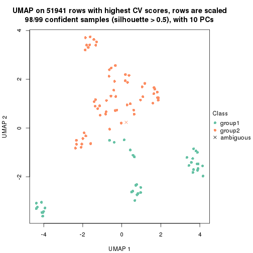
dimension_reduction(res, k = 3, method = "UMAP")
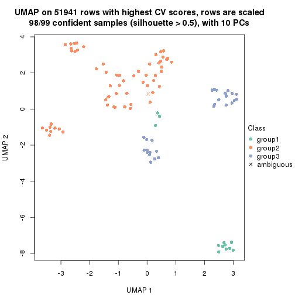
dimension_reduction(res, k = 4, method = "UMAP")
dimension_reduction(res, k = 5, method = "UMAP")
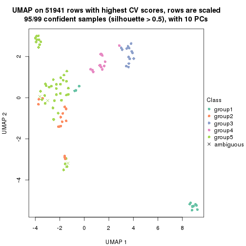
dimension_reduction(res, k = 6, method = "UMAP")
Following heatmap shows how subgroups are split when increasing k:
collect_classes(res)
Test correlation between subgroups and known annotations. If the known annotation is numeric, one-way ANOVA test is applied, and if the known annotation is discrete, chi-squared contingency table test is applied.
test_to_known_factors(res)
#> n protocol(p) individual(p) disease.state(p) k
#> CV:pam 98 0.993 2.75e-10 1.09e-17 2
#> CV:pam 98 1.000 1.43e-18 5.09e-33 3
#> CV:pam 98 0.999 3.04e-25 1.43e-45 4
#> CV:pam 95 1.000 1.36e-31 1.51e-50 5
#> CV:pam 94 1.000 1.55e-38 1.48e-54 6
If matrix rows can be associated to genes, consider to use functional_enrichment(res,
...) to perform function enrichment for the signature genes. See this vignette for more detailed explanations.
The object with results only for a single top-value method and a single partition method can be extracted as:
res = res_list["CV", "mclust"]
# you can also extract it by
# res = res_list["CV:mclust"]
A summary of res and all the functions that can be applied to it:
res
#> A 'ConsensusPartition' object with k = 2, 3, 4, 5, 6.
#> On a matrix with 51941 rows and 99 columns.
#> Top rows (1000, 2000, 3000, 4000, 5000) are extracted by 'CV' method.
#> Subgroups are detected by 'mclust' method.
#> Performed in total 1250 partitions by row resampling.
#> Best k for subgroups seems to be 4.
#>
#> Following methods can be applied to this 'ConsensusPartition' object:
#> [1] "cola_report" "collect_classes" "collect_plots"
#> [4] "collect_stats" "colnames" "compare_signatures"
#> [7] "consensus_heatmap" "dimension_reduction" "functional_enrichment"
#> [10] "get_anno_col" "get_anno" "get_classes"
#> [13] "get_consensus" "get_matrix" "get_membership"
#> [16] "get_param" "get_signatures" "get_stats"
#> [19] "is_best_k" "is_stable_k" "membership_heatmap"
#> [22] "ncol" "nrow" "plot_ecdf"
#> [25] "rownames" "select_partition_number" "show"
#> [28] "suggest_best_k" "test_to_known_factors"
collect_plots() function collects all the plots made from res for all k (number of partitions)
into one single page to provide an easy and fast comparison between different k.
collect_plots(res)
The plots are:
k and the heatmap of
predicted classes for each k.k.k.k.All the plots in panels can be made by individual functions and they are plotted later in this section.
select_partition_number() produces several plots showing different
statistics for choosing “optimized” k. There are following statistics:
k;k, the area increased is defined as \(A_k - A_{k-1}\).The detailed explanations of these statistics can be found in the cola vignette.
Generally speaking, lower PAC score, higher mean silhouette score or higher
concordance corresponds to better partition. Rand index and Jaccard index
measure how similar the current partition is compared to partition with k-1.
If they are too similar, we won't accept k is better than k-1.
select_partition_number(res)
The numeric values for all these statistics can be obtained by get_stats().
get_stats(res)
#> k 1-PAC mean_silhouette concordance area_increased Rand Jaccard
#> 2 2 1.000 0.993 0.996 0.48067 0.518 0.518
#> 3 3 0.899 0.902 0.930 0.13147 0.933 0.871
#> 4 4 1.000 0.969 0.981 -0.00742 0.878 0.767
#> 5 5 0.678 0.778 0.872 0.37804 0.772 0.529
#> 6 6 0.860 0.826 0.911 0.10104 0.876 0.559
suggest_best_k() suggests the best \(k\) based on these statistics. The rules are as follows:
suggest_best_k(res)
#> [1] 4
#> attr(,"optional")
#> [1] 2
There is also optional best \(k\) = 2 that is worth to check.
Following shows the table of the partitions (You need to click the show/hide
code output link to see it). The membership matrix (columns with name p*)
is inferred by
clue::cl_consensus()
function with the SE method. Basically the value in the membership matrix
represents the probability to belong to a certain group. The finall class
label for an item is determined with the group with highest probability it
belongs to.
In get_classes() function, the entropy is calculated from the membership
matrix and the silhouette score is calculated from the consensus matrix.
cbind(get_classes(res, k = 2), get_membership(res, k = 2))
#> class entropy silhouette p1 p2
#> GSM187698 2 0.000 1.000 0.000 1.000
#> GSM187701 2 0.000 1.000 0.000 1.000
#> GSM187704 1 0.000 0.989 1.000 0.000
#> GSM187707 2 0.000 1.000 0.000 1.000
#> GSM187710 2 0.000 1.000 0.000 1.000
#> GSM187713 2 0.000 1.000 0.000 1.000
#> GSM187716 2 0.000 1.000 0.000 1.000
#> GSM187719 1 0.000 0.989 1.000 0.000
#> GSM187722 2 0.000 1.000 0.000 1.000
#> GSM187725 1 0.000 0.989 1.000 0.000
#> GSM187728 2 0.000 1.000 0.000 1.000
#> GSM187731 2 0.000 1.000 0.000 1.000
#> GSM187734 2 0.000 1.000 0.000 1.000
#> GSM187737 2 0.000 1.000 0.000 1.000
#> GSM187740 2 0.000 1.000 0.000 1.000
#> GSM187743 1 0.373 0.932 0.928 0.072
#> GSM187746 1 0.343 0.940 0.936 0.064
#> GSM187749 1 0.000 0.989 1.000 0.000
#> GSM187752 2 0.000 1.000 0.000 1.000
#> GSM187755 2 0.000 1.000 0.000 1.000
#> GSM187758 1 0.000 0.989 1.000 0.000
#> GSM187761 2 0.000 1.000 0.000 1.000
#> GSM187764 2 0.000 1.000 0.000 1.000
#> GSM187767 2 0.000 1.000 0.000 1.000
#> GSM187770 1 0.000 0.989 1.000 0.000
#> GSM187771 1 0.000 0.989 1.000 0.000
#> GSM187772 1 0.000 0.989 1.000 0.000
#> GSM187780 1 0.000 0.989 1.000 0.000
#> GSM187781 1 0.000 0.989 1.000 0.000
#> GSM187782 1 0.000 0.989 1.000 0.000
#> GSM187788 2 0.000 1.000 0.000 1.000
#> GSM187789 2 0.000 1.000 0.000 1.000
#> GSM187790 2 0.000 1.000 0.000 1.000
#> GSM187699 2 0.000 1.000 0.000 1.000
#> GSM187702 2 0.000 1.000 0.000 1.000
#> GSM187705 1 0.000 0.989 1.000 0.000
#> GSM187708 2 0.000 1.000 0.000 1.000
#> GSM187711 2 0.000 1.000 0.000 1.000
#> GSM187714 2 0.000 1.000 0.000 1.000
#> GSM187717 2 0.000 1.000 0.000 1.000
#> GSM187720 1 0.000 0.989 1.000 0.000
#> GSM187723 2 0.000 1.000 0.000 1.000
#> GSM187726 1 0.000 0.989 1.000 0.000
#> GSM187729 2 0.000 1.000 0.000 1.000
#> GSM187732 2 0.000 1.000 0.000 1.000
#> GSM187735 2 0.000 1.000 0.000 1.000
#> GSM187738 2 0.000 1.000 0.000 1.000
#> GSM187741 2 0.000 1.000 0.000 1.000
#> GSM187744 1 0.373 0.932 0.928 0.072
#> GSM187747 1 0.343 0.940 0.936 0.064
#> GSM187750 1 0.000 0.989 1.000 0.000
#> GSM187753 2 0.000 1.000 0.000 1.000
#> GSM187756 2 0.000 1.000 0.000 1.000
#> GSM187759 1 0.000 0.989 1.000 0.000
#> GSM187762 2 0.000 1.000 0.000 1.000
#> GSM187765 2 0.000 1.000 0.000 1.000
#> GSM187768 2 0.000 1.000 0.000 1.000
#> GSM187773 1 0.000 0.989 1.000 0.000
#> GSM187774 1 0.000 0.989 1.000 0.000
#> GSM187775 1 0.000 0.989 1.000 0.000
#> GSM187776 1 0.000 0.989 1.000 0.000
#> GSM187783 1 0.000 0.989 1.000 0.000
#> GSM187784 1 0.000 0.989 1.000 0.000
#> GSM187791 2 0.000 1.000 0.000 1.000
#> GSM187792 2 0.000 1.000 0.000 1.000
#> GSM187793 2 0.000 1.000 0.000 1.000
#> GSM187700 2 0.000 1.000 0.000 1.000
#> GSM187703 2 0.000 1.000 0.000 1.000
#> GSM187706 1 0.000 0.989 1.000 0.000
#> GSM187709 2 0.000 1.000 0.000 1.000
#> GSM187712 2 0.000 1.000 0.000 1.000
#> GSM187715 2 0.000 1.000 0.000 1.000
#> GSM187718 2 0.000 1.000 0.000 1.000
#> GSM187721 1 0.000 0.989 1.000 0.000
#> GSM187724 2 0.000 1.000 0.000 1.000
#> GSM187727 1 0.000 0.989 1.000 0.000
#> GSM187730 2 0.000 1.000 0.000 1.000
#> GSM187733 2 0.000 1.000 0.000 1.000
#> GSM187736 2 0.000 1.000 0.000 1.000
#> GSM187739 2 0.000 1.000 0.000 1.000
#> GSM187742 2 0.000 1.000 0.000 1.000
#> GSM187745 1 0.373 0.932 0.928 0.072
#> GSM187748 1 0.343 0.940 0.936 0.064
#> GSM187751 1 0.000 0.989 1.000 0.000
#> GSM187754 2 0.000 1.000 0.000 1.000
#> GSM187757 2 0.000 1.000 0.000 1.000
#> GSM187760 1 0.000 0.989 1.000 0.000
#> GSM187763 2 0.000 1.000 0.000 1.000
#> GSM187766 2 0.000 1.000 0.000 1.000
#> GSM187769 2 0.000 1.000 0.000 1.000
#> GSM187777 1 0.000 0.989 1.000 0.000
#> GSM187778 1 0.000 0.989 1.000 0.000
#> GSM187779 1 0.000 0.989 1.000 0.000
#> GSM187785 1 0.000 0.989 1.000 0.000
#> GSM187786 1 0.000 0.989 1.000 0.000
#> GSM187787 1 0.000 0.989 1.000 0.000
#> GSM187794 2 0.000 1.000 0.000 1.000
#> GSM187795 2 0.000 1.000 0.000 1.000
#> GSM187796 2 0.000 1.000 0.000 1.000
cbind(get_classes(res, k = 3), get_membership(res, k = 3))
#> class entropy silhouette p1 p2 p3
#> GSM187698 2 0.0237 0.996 0.004 0.996 0.000
#> GSM187701 2 0.0237 0.996 0.004 0.996 0.000
#> GSM187704 3 0.0000 0.749 0.000 0.000 1.000
#> GSM187707 2 0.0000 0.999 0.000 1.000 0.000
#> GSM187710 2 0.0000 0.999 0.000 1.000 0.000
#> GSM187713 2 0.0000 0.999 0.000 1.000 0.000
#> GSM187716 2 0.0000 0.999 0.000 1.000 0.000
#> GSM187719 1 0.0000 1.000 1.000 0.000 0.000
#> GSM187722 2 0.0237 0.996 0.004 0.996 0.000
#> GSM187725 3 0.0000 0.749 0.000 0.000 1.000
#> GSM187728 2 0.0000 0.999 0.000 1.000 0.000
#> GSM187731 2 0.0000 0.999 0.000 1.000 0.000
#> GSM187734 2 0.0000 0.999 0.000 1.000 0.000
#> GSM187737 2 0.0000 0.999 0.000 1.000 0.000
#> GSM187740 2 0.0000 0.999 0.000 1.000 0.000
#> GSM187743 3 0.9383 0.381 0.384 0.172 0.444
#> GSM187746 3 0.4504 0.589 0.000 0.196 0.804
#> GSM187749 3 0.0000 0.749 0.000 0.000 1.000
#> GSM187752 2 0.0000 0.999 0.000 1.000 0.000
#> GSM187755 2 0.0237 0.996 0.004 0.996 0.000
#> GSM187758 3 0.0000 0.749 0.000 0.000 1.000
#> GSM187761 2 0.0000 0.999 0.000 1.000 0.000
#> GSM187764 2 0.0000 0.999 0.000 1.000 0.000
#> GSM187767 2 0.0000 0.999 0.000 1.000 0.000
#> GSM187770 1 0.0000 1.000 1.000 0.000 0.000
#> GSM187771 1 0.0000 1.000 1.000 0.000 0.000
#> GSM187772 1 0.0000 1.000 1.000 0.000 0.000
#> GSM187780 3 0.5882 0.609 0.348 0.000 0.652
#> GSM187781 3 0.5882 0.609 0.348 0.000 0.652
#> GSM187782 3 0.5882 0.609 0.348 0.000 0.652
#> GSM187788 2 0.0000 0.999 0.000 1.000 0.000
#> GSM187789 2 0.0000 0.999 0.000 1.000 0.000
#> GSM187790 2 0.0000 0.999 0.000 1.000 0.000
#> GSM187699 2 0.0237 0.996 0.004 0.996 0.000
#> GSM187702 2 0.0237 0.996 0.004 0.996 0.000
#> GSM187705 3 0.0000 0.749 0.000 0.000 1.000
#> GSM187708 2 0.0000 0.999 0.000 1.000 0.000
#> GSM187711 2 0.0000 0.999 0.000 1.000 0.000
#> GSM187714 2 0.0000 0.999 0.000 1.000 0.000
#> GSM187717 2 0.0000 0.999 0.000 1.000 0.000
#> GSM187720 1 0.0000 1.000 1.000 0.000 0.000
#> GSM187723 2 0.0237 0.996 0.004 0.996 0.000
#> GSM187726 3 0.0000 0.749 0.000 0.000 1.000
#> GSM187729 2 0.0000 0.999 0.000 1.000 0.000
#> GSM187732 2 0.0000 0.999 0.000 1.000 0.000
#> GSM187735 2 0.0000 0.999 0.000 1.000 0.000
#> GSM187738 2 0.0000 0.999 0.000 1.000 0.000
#> GSM187741 2 0.0000 0.999 0.000 1.000 0.000
#> GSM187744 3 0.9383 0.381 0.384 0.172 0.444
#> GSM187747 3 0.4504 0.589 0.000 0.196 0.804
#> GSM187750 3 0.0000 0.749 0.000 0.000 1.000
#> GSM187753 2 0.0000 0.999 0.000 1.000 0.000
#> GSM187756 2 0.0237 0.996 0.004 0.996 0.000
#> GSM187759 3 0.0000 0.749 0.000 0.000 1.000
#> GSM187762 2 0.0000 0.999 0.000 1.000 0.000
#> GSM187765 2 0.0000 0.999 0.000 1.000 0.000
#> GSM187768 2 0.0000 0.999 0.000 1.000 0.000
#> GSM187773 1 0.0000 1.000 1.000 0.000 0.000
#> GSM187774 1 0.0000 1.000 1.000 0.000 0.000
#> GSM187775 1 0.0000 1.000 1.000 0.000 0.000
#> GSM187776 3 0.5905 0.604 0.352 0.000 0.648
#> GSM187783 3 0.5882 0.609 0.348 0.000 0.652
#> GSM187784 3 0.5882 0.609 0.348 0.000 0.652
#> GSM187791 2 0.0000 0.999 0.000 1.000 0.000
#> GSM187792 2 0.0000 0.999 0.000 1.000 0.000
#> GSM187793 2 0.0000 0.999 0.000 1.000 0.000
#> GSM187700 2 0.0237 0.996 0.004 0.996 0.000
#> GSM187703 2 0.0237 0.996 0.004 0.996 0.000
#> GSM187706 3 0.0000 0.749 0.000 0.000 1.000
#> GSM187709 2 0.0000 0.999 0.000 1.000 0.000
#> GSM187712 2 0.0000 0.999 0.000 1.000 0.000
#> GSM187715 2 0.0000 0.999 0.000 1.000 0.000
#> GSM187718 2 0.0000 0.999 0.000 1.000 0.000
#> GSM187721 1 0.0000 1.000 1.000 0.000 0.000
#> GSM187724 2 0.0237 0.996 0.004 0.996 0.000
#> GSM187727 3 0.0000 0.749 0.000 0.000 1.000
#> GSM187730 2 0.0000 0.999 0.000 1.000 0.000
#> GSM187733 2 0.0000 0.999 0.000 1.000 0.000
#> GSM187736 2 0.0000 0.999 0.000 1.000 0.000
#> GSM187739 2 0.0000 0.999 0.000 1.000 0.000
#> GSM187742 2 0.0000 0.999 0.000 1.000 0.000
#> GSM187745 3 0.9383 0.381 0.384 0.172 0.444
#> GSM187748 3 0.4504 0.589 0.000 0.196 0.804
#> GSM187751 3 0.0000 0.749 0.000 0.000 1.000
#> GSM187754 2 0.0000 0.999 0.000 1.000 0.000
#> GSM187757 2 0.0237 0.996 0.004 0.996 0.000
#> GSM187760 3 0.0000 0.749 0.000 0.000 1.000
#> GSM187763 2 0.0000 0.999 0.000 1.000 0.000
#> GSM187766 2 0.0000 0.999 0.000 1.000 0.000
#> GSM187769 2 0.0000 0.999 0.000 1.000 0.000
#> GSM187777 1 0.0000 1.000 1.000 0.000 0.000
#> GSM187778 1 0.0000 1.000 1.000 0.000 0.000
#> GSM187779 1 0.0000 1.000 1.000 0.000 0.000
#> GSM187785 3 0.5882 0.609 0.348 0.000 0.652
#> GSM187786 3 0.5882 0.609 0.348 0.000 0.652
#> GSM187787 3 0.5882 0.609 0.348 0.000 0.652
#> GSM187794 2 0.0000 0.999 0.000 1.000 0.000
#> GSM187795 2 0.0000 0.999 0.000 1.000 0.000
#> GSM187796 2 0.0000 0.999 0.000 1.000 0.000
cbind(get_classes(res, k = 4), get_membership(res, k = 4))
#> class entropy silhouette p1 p2 p3 p4
#> GSM187698 2 0.215 0.921 0.088 0.912 0.00 0.000
#> GSM187701 2 0.215 0.921 0.088 0.912 0.00 0.000
#> GSM187704 3 0.000 1.000 0.000 0.000 1.00 0.000
#> GSM187707 2 0.000 0.972 0.000 1.000 0.00 0.000
#> GSM187710 2 0.000 0.972 0.000 1.000 0.00 0.000
#> GSM187713 2 0.000 0.972 0.000 1.000 0.00 0.000
#> GSM187716 2 0.000 0.972 0.000 1.000 0.00 0.000
#> GSM187719 1 0.000 1.000 1.000 0.000 0.00 0.000
#> GSM187722 2 0.215 0.921 0.088 0.912 0.00 0.000
#> GSM187725 3 0.000 1.000 0.000 0.000 1.00 0.000
#> GSM187728 2 0.000 0.972 0.000 1.000 0.00 0.000
#> GSM187731 2 0.000 0.972 0.000 1.000 0.00 0.000
#> GSM187734 2 0.000 0.972 0.000 1.000 0.00 0.000
#> GSM187737 2 0.000 0.972 0.000 1.000 0.00 0.000
#> GSM187740 2 0.000 0.972 0.000 1.000 0.00 0.000
#> GSM187743 2 0.215 0.917 0.000 0.912 0.00 0.088
#> GSM187746 2 0.340 0.813 0.000 0.820 0.18 0.000
#> GSM187749 3 0.000 1.000 0.000 0.000 1.00 0.000
#> GSM187752 2 0.000 0.972 0.000 1.000 0.00 0.000
#> GSM187755 2 0.215 0.921 0.088 0.912 0.00 0.000
#> GSM187758 3 0.000 1.000 0.000 0.000 1.00 0.000
#> GSM187761 2 0.000 0.972 0.000 1.000 0.00 0.000
#> GSM187764 2 0.000 0.972 0.000 1.000 0.00 0.000
#> GSM187767 2 0.000 0.972 0.000 1.000 0.00 0.000
#> GSM187770 1 0.000 1.000 1.000 0.000 0.00 0.000
#> GSM187771 1 0.000 1.000 1.000 0.000 0.00 0.000
#> GSM187772 1 0.000 1.000 1.000 0.000 0.00 0.000
#> GSM187780 4 0.000 1.000 0.000 0.000 0.00 1.000
#> GSM187781 4 0.000 1.000 0.000 0.000 0.00 1.000
#> GSM187782 4 0.000 1.000 0.000 0.000 0.00 1.000
#> GSM187788 2 0.000 0.972 0.000 1.000 0.00 0.000
#> GSM187789 2 0.000 0.972 0.000 1.000 0.00 0.000
#> GSM187790 2 0.000 0.972 0.000 1.000 0.00 0.000
#> GSM187699 2 0.215 0.921 0.088 0.912 0.00 0.000
#> GSM187702 2 0.215 0.921 0.088 0.912 0.00 0.000
#> GSM187705 3 0.000 1.000 0.000 0.000 1.00 0.000
#> GSM187708 2 0.000 0.972 0.000 1.000 0.00 0.000
#> GSM187711 2 0.000 0.972 0.000 1.000 0.00 0.000
#> GSM187714 2 0.000 0.972 0.000 1.000 0.00 0.000
#> GSM187717 2 0.000 0.972 0.000 1.000 0.00 0.000
#> GSM187720 1 0.000 1.000 1.000 0.000 0.00 0.000
#> GSM187723 2 0.215 0.921 0.088 0.912 0.00 0.000
#> GSM187726 3 0.000 1.000 0.000 0.000 1.00 0.000
#> GSM187729 2 0.000 0.972 0.000 1.000 0.00 0.000
#> GSM187732 2 0.000 0.972 0.000 1.000 0.00 0.000
#> GSM187735 2 0.000 0.972 0.000 1.000 0.00 0.000
#> GSM187738 2 0.000 0.972 0.000 1.000 0.00 0.000
#> GSM187741 2 0.000 0.972 0.000 1.000 0.00 0.000
#> GSM187744 2 0.215 0.917 0.000 0.912 0.00 0.088
#> GSM187747 2 0.340 0.813 0.000 0.820 0.18 0.000
#> GSM187750 3 0.000 1.000 0.000 0.000 1.00 0.000
#> GSM187753 2 0.000 0.972 0.000 1.000 0.00 0.000
#> GSM187756 2 0.215 0.921 0.088 0.912 0.00 0.000
#> GSM187759 3 0.000 1.000 0.000 0.000 1.00 0.000
#> GSM187762 2 0.000 0.972 0.000 1.000 0.00 0.000
#> GSM187765 2 0.000 0.972 0.000 1.000 0.00 0.000
#> GSM187768 2 0.000 0.972 0.000 1.000 0.00 0.000
#> GSM187773 1 0.000 1.000 1.000 0.000 0.00 0.000
#> GSM187774 1 0.000 1.000 1.000 0.000 0.00 0.000
#> GSM187775 1 0.000 1.000 1.000 0.000 0.00 0.000
#> GSM187776 4 0.000 1.000 0.000 0.000 0.00 1.000
#> GSM187783 4 0.000 1.000 0.000 0.000 0.00 1.000
#> GSM187784 4 0.000 1.000 0.000 0.000 0.00 1.000
#> GSM187791 2 0.000 0.972 0.000 1.000 0.00 0.000
#> GSM187792 2 0.000 0.972 0.000 1.000 0.00 0.000
#> GSM187793 2 0.000 0.972 0.000 1.000 0.00 0.000
#> GSM187700 2 0.215 0.921 0.088 0.912 0.00 0.000
#> GSM187703 2 0.215 0.921 0.088 0.912 0.00 0.000
#> GSM187706 3 0.000 1.000 0.000 0.000 1.00 0.000
#> GSM187709 2 0.000 0.972 0.000 1.000 0.00 0.000
#> GSM187712 2 0.000 0.972 0.000 1.000 0.00 0.000
#> GSM187715 2 0.000 0.972 0.000 1.000 0.00 0.000
#> GSM187718 2 0.000 0.972 0.000 1.000 0.00 0.000
#> GSM187721 1 0.000 1.000 1.000 0.000 0.00 0.000
#> GSM187724 2 0.215 0.921 0.088 0.912 0.00 0.000
#> GSM187727 3 0.000 1.000 0.000 0.000 1.00 0.000
#> GSM187730 2 0.000 0.972 0.000 1.000 0.00 0.000
#> GSM187733 2 0.000 0.972 0.000 1.000 0.00 0.000
#> GSM187736 2 0.000 0.972 0.000 1.000 0.00 0.000
#> GSM187739 2 0.000 0.972 0.000 1.000 0.00 0.000
#> GSM187742 2 0.000 0.972 0.000 1.000 0.00 0.000
#> GSM187745 2 0.215 0.917 0.000 0.912 0.00 0.088
#> GSM187748 2 0.340 0.813 0.000 0.820 0.18 0.000
#> GSM187751 3 0.000 1.000 0.000 0.000 1.00 0.000
#> GSM187754 2 0.000 0.972 0.000 1.000 0.00 0.000
#> GSM187757 2 0.215 0.921 0.088 0.912 0.00 0.000
#> GSM187760 3 0.000 1.000 0.000 0.000 1.00 0.000
#> GSM187763 2 0.000 0.972 0.000 1.000 0.00 0.000
#> GSM187766 2 0.000 0.972 0.000 1.000 0.00 0.000
#> GSM187769 2 0.000 0.972 0.000 1.000 0.00 0.000
#> GSM187777 1 0.000 1.000 1.000 0.000 0.00 0.000
#> GSM187778 1 0.000 1.000 1.000 0.000 0.00 0.000
#> GSM187779 1 0.000 1.000 1.000 0.000 0.00 0.000
#> GSM187785 4 0.000 1.000 0.000 0.000 0.00 1.000
#> GSM187786 4 0.000 1.000 0.000 0.000 0.00 1.000
#> GSM187787 4 0.000 1.000 0.000 0.000 0.00 1.000
#> GSM187794 2 0.000 0.972 0.000 1.000 0.00 0.000
#> GSM187795 2 0.000 0.972 0.000 1.000 0.00 0.000
#> GSM187796 2 0.000 0.972 0.000 1.000 0.00 0.000
cbind(get_classes(res, k = 5), get_membership(res, k = 5))
#> class entropy silhouette p1 p2 p3 p4 p5
#> GSM187698 2 0.3774 0.552 0.00 0.704 0.000 0.000 0.296
#> GSM187701 2 0.1430 0.712 0.00 0.944 0.000 0.004 0.052
#> GSM187704 3 0.0000 0.885 0.00 0.000 1.000 0.000 0.000
#> GSM187707 2 0.2280 0.746 0.00 0.880 0.000 0.000 0.120
#> GSM187710 2 0.2280 0.746 0.00 0.880 0.000 0.000 0.120
#> GSM187713 5 0.0404 0.945 0.00 0.012 0.000 0.000 0.988
#> GSM187716 2 0.2074 0.747 0.00 0.896 0.000 0.000 0.104
#> GSM187719 4 0.0162 0.997 0.00 0.004 0.000 0.996 0.000
#> GSM187722 2 0.3913 0.519 0.00 0.676 0.000 0.000 0.324
#> GSM187725 3 0.0000 0.885 0.00 0.000 1.000 0.000 0.000
#> GSM187728 2 0.2280 0.746 0.00 0.880 0.000 0.000 0.120
#> GSM187731 5 0.3039 0.671 0.00 0.192 0.000 0.000 0.808
#> GSM187734 5 0.0510 0.943 0.00 0.016 0.000 0.000 0.984
#> GSM187737 2 0.3796 0.552 0.00 0.700 0.000 0.000 0.300
#> GSM187740 2 0.2127 0.747 0.00 0.892 0.000 0.000 0.108
#> GSM187743 2 0.4590 0.328 0.42 0.568 0.000 0.012 0.000
#> GSM187746 3 0.4074 0.441 0.00 0.364 0.636 0.000 0.000
#> GSM187749 3 0.0000 0.885 0.00 0.000 1.000 0.000 0.000
#> GSM187752 5 0.0000 0.949 0.00 0.000 0.000 0.000 1.000
#> GSM187755 2 0.3508 0.599 0.00 0.748 0.000 0.000 0.252
#> GSM187758 3 0.0000 0.885 0.00 0.000 1.000 0.000 0.000
#> GSM187761 2 0.2280 0.746 0.00 0.880 0.000 0.000 0.120
#> GSM187764 2 0.4210 0.381 0.00 0.588 0.000 0.000 0.412
#> GSM187767 2 0.4161 0.416 0.00 0.608 0.000 0.000 0.392
#> GSM187770 4 0.0000 0.999 0.00 0.000 0.000 1.000 0.000
#> GSM187771 4 0.0000 0.999 0.00 0.000 0.000 1.000 0.000
#> GSM187772 4 0.0000 0.999 0.00 0.000 0.000 1.000 0.000
#> GSM187780 1 0.0000 1.000 1.00 0.000 0.000 0.000 0.000
#> GSM187781 1 0.0000 1.000 1.00 0.000 0.000 0.000 0.000
#> GSM187782 1 0.0000 1.000 1.00 0.000 0.000 0.000 0.000
#> GSM187788 5 0.0000 0.949 0.00 0.000 0.000 0.000 1.000
#> GSM187789 5 0.0000 0.949 0.00 0.000 0.000 0.000 1.000
#> GSM187790 5 0.0000 0.949 0.00 0.000 0.000 0.000 1.000
#> GSM187699 2 0.3774 0.552 0.00 0.704 0.000 0.000 0.296
#> GSM187702 2 0.1430 0.712 0.00 0.944 0.000 0.004 0.052
#> GSM187705 3 0.0000 0.885 0.00 0.000 1.000 0.000 0.000
#> GSM187708 2 0.2280 0.746 0.00 0.880 0.000 0.000 0.120
#> GSM187711 2 0.2280 0.746 0.00 0.880 0.000 0.000 0.120
#> GSM187714 5 0.2179 0.816 0.00 0.112 0.000 0.000 0.888
#> GSM187717 2 0.2074 0.747 0.00 0.896 0.000 0.000 0.104
#> GSM187720 4 0.0162 0.997 0.00 0.004 0.000 0.996 0.000
#> GSM187723 2 0.3949 0.507 0.00 0.668 0.000 0.000 0.332
#> GSM187726 3 0.0000 0.885 0.00 0.000 1.000 0.000 0.000
#> GSM187729 2 0.2280 0.746 0.00 0.880 0.000 0.000 0.120
#> GSM187732 5 0.3395 0.565 0.00 0.236 0.000 0.000 0.764
#> GSM187735 5 0.0404 0.945 0.00 0.012 0.000 0.000 0.988
#> GSM187738 2 0.4201 0.388 0.00 0.592 0.000 0.000 0.408
#> GSM187741 2 0.2020 0.746 0.00 0.900 0.000 0.000 0.100
#> GSM187744 2 0.4590 0.328 0.42 0.568 0.000 0.012 0.000
#> GSM187747 3 0.4074 0.441 0.00 0.364 0.636 0.000 0.000
#> GSM187750 3 0.0000 0.885 0.00 0.000 1.000 0.000 0.000
#> GSM187753 5 0.0000 0.949 0.00 0.000 0.000 0.000 1.000
#> GSM187756 2 0.3857 0.540 0.00 0.688 0.000 0.000 0.312
#> GSM187759 3 0.0000 0.885 0.00 0.000 1.000 0.000 0.000
#> GSM187762 2 0.2230 0.747 0.00 0.884 0.000 0.000 0.116
#> GSM187765 2 0.4201 0.390 0.00 0.592 0.000 0.000 0.408
#> GSM187768 2 0.4192 0.407 0.00 0.596 0.000 0.000 0.404
#> GSM187773 4 0.0000 0.999 0.00 0.000 0.000 1.000 0.000
#> GSM187774 4 0.0000 0.999 0.00 0.000 0.000 1.000 0.000
#> GSM187775 4 0.0000 0.999 0.00 0.000 0.000 1.000 0.000
#> GSM187776 1 0.0000 1.000 1.00 0.000 0.000 0.000 0.000
#> GSM187783 1 0.0000 1.000 1.00 0.000 0.000 0.000 0.000
#> GSM187784 1 0.0000 1.000 1.00 0.000 0.000 0.000 0.000
#> GSM187791 5 0.0000 0.949 0.00 0.000 0.000 0.000 1.000
#> GSM187792 5 0.0000 0.949 0.00 0.000 0.000 0.000 1.000
#> GSM187793 5 0.0162 0.948 0.00 0.004 0.000 0.000 0.996
#> GSM187700 2 0.3774 0.552 0.00 0.704 0.000 0.000 0.296
#> GSM187703 2 0.1430 0.712 0.00 0.944 0.000 0.004 0.052
#> GSM187706 3 0.0000 0.885 0.00 0.000 1.000 0.000 0.000
#> GSM187709 2 0.2280 0.746 0.00 0.880 0.000 0.000 0.120
#> GSM187712 2 0.2280 0.746 0.00 0.880 0.000 0.000 0.120
#> GSM187715 5 0.0963 0.924 0.00 0.036 0.000 0.000 0.964
#> GSM187718 2 0.2074 0.747 0.00 0.896 0.000 0.000 0.104
#> GSM187721 4 0.0162 0.997 0.00 0.004 0.000 0.996 0.000
#> GSM187724 2 0.3949 0.507 0.00 0.668 0.000 0.000 0.332
#> GSM187727 3 0.0000 0.885 0.00 0.000 1.000 0.000 0.000
#> GSM187730 2 0.2280 0.746 0.00 0.880 0.000 0.000 0.120
#> GSM187733 5 0.1341 0.899 0.00 0.056 0.000 0.000 0.944
#> GSM187736 5 0.0404 0.945 0.00 0.012 0.000 0.000 0.988
#> GSM187739 2 0.4256 0.308 0.00 0.564 0.000 0.000 0.436
#> GSM187742 2 0.1965 0.745 0.00 0.904 0.000 0.000 0.096
#> GSM187745 2 0.4590 0.328 0.42 0.568 0.000 0.012 0.000
#> GSM187748 3 0.4074 0.441 0.00 0.364 0.636 0.000 0.000
#> GSM187751 3 0.0000 0.885 0.00 0.000 1.000 0.000 0.000
#> GSM187754 5 0.0000 0.949 0.00 0.000 0.000 0.000 1.000
#> GSM187757 2 0.3932 0.520 0.00 0.672 0.000 0.000 0.328
#> GSM187760 3 0.0000 0.885 0.00 0.000 1.000 0.000 0.000
#> GSM187763 2 0.2230 0.747 0.00 0.884 0.000 0.000 0.116
#> GSM187766 2 0.4210 0.381 0.00 0.588 0.000 0.000 0.412
#> GSM187769 2 0.4161 0.416 0.00 0.608 0.000 0.000 0.392
#> GSM187777 4 0.0000 0.999 0.00 0.000 0.000 1.000 0.000
#> GSM187778 4 0.0000 0.999 0.00 0.000 0.000 1.000 0.000
#> GSM187779 4 0.0000 0.999 0.00 0.000 0.000 1.000 0.000
#> GSM187785 1 0.0000 1.000 1.00 0.000 0.000 0.000 0.000
#> GSM187786 1 0.0000 1.000 1.00 0.000 0.000 0.000 0.000
#> GSM187787 1 0.0000 1.000 1.00 0.000 0.000 0.000 0.000
#> GSM187794 5 0.0000 0.949 0.00 0.000 0.000 0.000 1.000
#> GSM187795 5 0.0000 0.949 0.00 0.000 0.000 0.000 1.000
#> GSM187796 5 0.0000 0.949 0.00 0.000 0.000 0.000 1.000
cbind(get_classes(res, k = 6), get_membership(res, k = 6))
#> class entropy silhouette p1 p2 p3 p4 p5 p6
#> GSM187698 6 0.0993 0.910 0.000 0.024 0.000 0.000 0.012 0.964
#> GSM187701 6 0.2542 0.873 0.000 0.044 0.000 0.000 0.080 0.876
#> GSM187704 3 0.0000 0.954 0.000 0.000 1.000 0.000 0.000 0.000
#> GSM187707 2 0.0508 0.805 0.000 0.984 0.000 0.000 0.012 0.004
#> GSM187710 2 0.0603 0.803 0.000 0.980 0.000 0.000 0.016 0.004
#> GSM187713 5 0.0260 0.910 0.000 0.008 0.000 0.000 0.992 0.000
#> GSM187716 2 0.3421 0.597 0.000 0.736 0.000 0.000 0.008 0.256
#> GSM187719 4 0.0260 0.992 0.000 0.000 0.000 0.992 0.000 0.008
#> GSM187722 6 0.1176 0.909 0.000 0.024 0.000 0.000 0.020 0.956
#> GSM187725 3 0.0000 0.954 0.000 0.000 1.000 0.000 0.000 0.000
#> GSM187728 2 0.0405 0.805 0.000 0.988 0.000 0.000 0.004 0.008
#> GSM187731 5 0.2685 0.836 0.000 0.072 0.000 0.000 0.868 0.060
#> GSM187734 5 0.0790 0.899 0.000 0.032 0.000 0.000 0.968 0.000
#> GSM187737 2 0.5603 0.348 0.000 0.476 0.000 0.000 0.376 0.148
#> GSM187740 2 0.1757 0.777 0.000 0.916 0.000 0.000 0.008 0.076
#> GSM187743 1 0.4683 0.536 0.616 0.000 0.000 0.064 0.000 0.320
#> GSM187746 3 0.2730 0.785 0.000 0.000 0.808 0.000 0.000 0.192
#> GSM187749 3 0.0000 0.954 0.000 0.000 1.000 0.000 0.000 0.000
#> GSM187752 5 0.0000 0.913 0.000 0.000 0.000 0.000 1.000 0.000
#> GSM187755 6 0.1088 0.910 0.000 0.024 0.000 0.000 0.016 0.960
#> GSM187758 3 0.0000 0.954 0.000 0.000 1.000 0.000 0.000 0.000
#> GSM187761 2 0.0146 0.803 0.000 0.996 0.000 0.000 0.000 0.004
#> GSM187764 5 0.5416 0.306 0.000 0.140 0.000 0.000 0.544 0.316
#> GSM187767 2 0.4758 0.475 0.000 0.580 0.000 0.000 0.360 0.060
#> GSM187770 4 0.0000 0.997 0.000 0.000 0.000 1.000 0.000 0.000
#> GSM187771 4 0.0000 0.997 0.000 0.000 0.000 1.000 0.000 0.000
#> GSM187772 4 0.0000 0.997 0.000 0.000 0.000 1.000 0.000 0.000
#> GSM187780 1 0.0000 0.891 1.000 0.000 0.000 0.000 0.000 0.000
#> GSM187781 1 0.0000 0.891 1.000 0.000 0.000 0.000 0.000 0.000
#> GSM187782 1 0.0000 0.891 1.000 0.000 0.000 0.000 0.000 0.000
#> GSM187788 5 0.0000 0.913 0.000 0.000 0.000 0.000 1.000 0.000
#> GSM187789 5 0.0000 0.913 0.000 0.000 0.000 0.000 1.000 0.000
#> GSM187790 5 0.0000 0.913 0.000 0.000 0.000 0.000 1.000 0.000
#> GSM187699 6 0.0993 0.910 0.000 0.024 0.000 0.000 0.012 0.964
#> GSM187702 6 0.2542 0.873 0.000 0.044 0.000 0.000 0.080 0.876
#> GSM187705 3 0.0000 0.954 0.000 0.000 1.000 0.000 0.000 0.000
#> GSM187708 2 0.0717 0.804 0.000 0.976 0.000 0.000 0.008 0.016
#> GSM187711 2 0.0291 0.805 0.000 0.992 0.000 0.000 0.004 0.004
#> GSM187714 5 0.1421 0.890 0.000 0.028 0.000 0.000 0.944 0.028
#> GSM187717 2 0.3398 0.603 0.000 0.740 0.000 0.000 0.008 0.252
#> GSM187720 4 0.0260 0.992 0.000 0.000 0.000 0.992 0.000 0.008
#> GSM187723 6 0.0993 0.910 0.000 0.024 0.000 0.000 0.012 0.964
#> GSM187726 3 0.0000 0.954 0.000 0.000 1.000 0.000 0.000 0.000
#> GSM187729 2 0.0260 0.804 0.000 0.992 0.000 0.000 0.000 0.008
#> GSM187732 5 0.3268 0.792 0.000 0.076 0.000 0.000 0.824 0.100
#> GSM187735 5 0.0458 0.907 0.000 0.016 0.000 0.000 0.984 0.000
#> GSM187738 2 0.4885 0.449 0.000 0.560 0.000 0.000 0.372 0.068
#> GSM187741 2 0.2020 0.763 0.000 0.896 0.000 0.000 0.008 0.096
#> GSM187744 1 0.4683 0.536 0.616 0.000 0.000 0.064 0.000 0.320
#> GSM187747 3 0.2730 0.785 0.000 0.000 0.808 0.000 0.000 0.192
#> GSM187750 3 0.0000 0.954 0.000 0.000 1.000 0.000 0.000 0.000
#> GSM187753 5 0.0000 0.913 0.000 0.000 0.000 0.000 1.000 0.000
#> GSM187756 6 0.3566 0.724 0.000 0.024 0.000 0.000 0.224 0.752
#> GSM187759 3 0.0000 0.954 0.000 0.000 1.000 0.000 0.000 0.000
#> GSM187762 2 0.0405 0.803 0.000 0.988 0.000 0.000 0.004 0.008
#> GSM187765 5 0.5475 0.289 0.000 0.148 0.000 0.000 0.536 0.316
#> GSM187768 2 0.4769 0.468 0.000 0.576 0.000 0.000 0.364 0.060
#> GSM187773 4 0.0000 0.997 0.000 0.000 0.000 1.000 0.000 0.000
#> GSM187774 4 0.0000 0.997 0.000 0.000 0.000 1.000 0.000 0.000
#> GSM187775 4 0.0000 0.997 0.000 0.000 0.000 1.000 0.000 0.000
#> GSM187776 1 0.0000 0.891 1.000 0.000 0.000 0.000 0.000 0.000
#> GSM187783 1 0.0000 0.891 1.000 0.000 0.000 0.000 0.000 0.000
#> GSM187784 1 0.0000 0.891 1.000 0.000 0.000 0.000 0.000 0.000
#> GSM187791 5 0.0000 0.913 0.000 0.000 0.000 0.000 1.000 0.000
#> GSM187792 5 0.0000 0.913 0.000 0.000 0.000 0.000 1.000 0.000
#> GSM187793 5 0.0000 0.913 0.000 0.000 0.000 0.000 1.000 0.000
#> GSM187700 6 0.0993 0.910 0.000 0.024 0.000 0.000 0.012 0.964
#> GSM187703 6 0.2542 0.873 0.000 0.044 0.000 0.000 0.080 0.876
#> GSM187706 3 0.0000 0.954 0.000 0.000 1.000 0.000 0.000 0.000
#> GSM187709 2 0.0405 0.805 0.000 0.988 0.000 0.000 0.004 0.008
#> GSM187712 2 0.0291 0.805 0.000 0.992 0.000 0.000 0.004 0.004
#> GSM187715 5 0.0891 0.902 0.000 0.024 0.000 0.000 0.968 0.008
#> GSM187718 2 0.3373 0.608 0.000 0.744 0.000 0.000 0.008 0.248
#> GSM187721 4 0.0260 0.992 0.000 0.000 0.000 0.992 0.000 0.008
#> GSM187724 6 0.0993 0.910 0.000 0.024 0.000 0.000 0.012 0.964
#> GSM187727 3 0.0000 0.954 0.000 0.000 1.000 0.000 0.000 0.000
#> GSM187730 2 0.0260 0.804 0.000 0.992 0.000 0.000 0.000 0.008
#> GSM187733 5 0.1890 0.870 0.000 0.060 0.000 0.000 0.916 0.024
#> GSM187736 5 0.0291 0.911 0.000 0.004 0.000 0.000 0.992 0.004
#> GSM187739 2 0.4986 0.275 0.000 0.488 0.000 0.000 0.444 0.068
#> GSM187742 2 0.2118 0.758 0.000 0.888 0.000 0.000 0.008 0.104
#> GSM187745 1 0.4683 0.536 0.616 0.000 0.000 0.064 0.000 0.320
#> GSM187748 3 0.2730 0.785 0.000 0.000 0.808 0.000 0.000 0.192
#> GSM187751 3 0.0000 0.954 0.000 0.000 1.000 0.000 0.000 0.000
#> GSM187754 5 0.0000 0.913 0.000 0.000 0.000 0.000 1.000 0.000
#> GSM187757 6 0.3645 0.704 0.000 0.024 0.000 0.000 0.236 0.740
#> GSM187760 3 0.0000 0.954 0.000 0.000 1.000 0.000 0.000 0.000
#> GSM187763 2 0.0260 0.803 0.000 0.992 0.000 0.000 0.000 0.008
#> GSM187766 5 0.5475 0.289 0.000 0.148 0.000 0.000 0.536 0.316
#> GSM187769 2 0.4747 0.481 0.000 0.584 0.000 0.000 0.356 0.060
#> GSM187777 4 0.0000 0.997 0.000 0.000 0.000 1.000 0.000 0.000
#> GSM187778 4 0.0000 0.997 0.000 0.000 0.000 1.000 0.000 0.000
#> GSM187779 4 0.0000 0.997 0.000 0.000 0.000 1.000 0.000 0.000
#> GSM187785 1 0.0000 0.891 1.000 0.000 0.000 0.000 0.000 0.000
#> GSM187786 1 0.0000 0.891 1.000 0.000 0.000 0.000 0.000 0.000
#> GSM187787 1 0.0000 0.891 1.000 0.000 0.000 0.000 0.000 0.000
#> GSM187794 5 0.0000 0.913 0.000 0.000 0.000 0.000 1.000 0.000
#> GSM187795 5 0.0000 0.913 0.000 0.000 0.000 0.000 1.000 0.000
#> GSM187796 5 0.0000 0.913 0.000 0.000 0.000 0.000 1.000 0.000
Heatmaps for the consensus matrix. It visualizes the probability of two samples to be in a same group.
consensus_heatmap(res, k = 2)
consensus_heatmap(res, k = 3)
consensus_heatmap(res, k = 4)
consensus_heatmap(res, k = 5)
consensus_heatmap(res, k = 6)
Heatmaps for the membership of samples in all partitions to see how consistent they are:
membership_heatmap(res, k = 2)
membership_heatmap(res, k = 3)
membership_heatmap(res, k = 4)
membership_heatmap(res, k = 5)
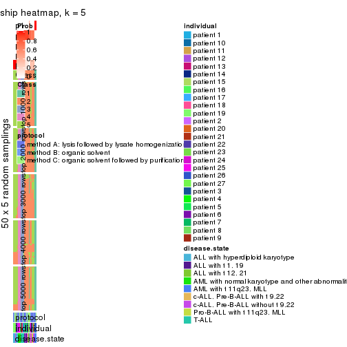
membership_heatmap(res, k = 6)
As soon as we have had the classes for columns, we can look for signatures which are significantly different between classes which can be candidate marks for certain classes. Following are the heatmaps for signatures.
Signature heatmaps where rows are scaled:
get_signatures(res, k = 2)
#> Error: The width or height of the raster image is zero, maybe you forget to turn off the
#> previous graphic device or it was corrupted. Run `dev.off()` to close it.

get_signatures(res, k = 3)
#> Error: The width or height of the raster image is zero, maybe you forget to turn off the
#> previous graphic device or it was corrupted. Run `dev.off()` to close it.

get_signatures(res, k = 4)
#> Error: The width or height of the raster image is zero, maybe you forget to turn off the
#> previous graphic device or it was corrupted. Run `dev.off()` to close it.

get_signatures(res, k = 5)
#> Error: The width or height of the raster image is zero, maybe you forget to turn off the
#> previous graphic device or it was corrupted. Run `dev.off()` to close it.

get_signatures(res, k = 6)
#> Error: The width or height of the raster image is zero, maybe you forget to turn off the
#> previous graphic device or it was corrupted. Run `dev.off()` to close it.

Signature heatmaps where rows are not scaled:
get_signatures(res, k = 2, scale_rows = FALSE)
#> Error: The width or height of the raster image is zero, maybe you forget to turn off the
#> previous graphic device or it was corrupted. Run `dev.off()` to close it.

get_signatures(res, k = 3, scale_rows = FALSE)
#> Error: The width or height of the raster image is zero, maybe you forget to turn off the
#> previous graphic device or it was corrupted. Run `dev.off()` to close it.

get_signatures(res, k = 4, scale_rows = FALSE)
#> Error: The width or height of the raster image is zero, maybe you forget to turn off the
#> previous graphic device or it was corrupted. Run `dev.off()` to close it.

get_signatures(res, k = 5, scale_rows = FALSE)
#> Error: The width or height of the raster image is zero, maybe you forget to turn off the
#> previous graphic device or it was corrupted. Run `dev.off()` to close it.

get_signatures(res, k = 6, scale_rows = FALSE)
#> Error: The width or height of the raster image is zero, maybe you forget to turn off the
#> previous graphic device or it was corrupted. Run `dev.off()` to close it.

Compare the overlap of signatures from different k:
compare_signatures(res)
get_signature() returns a data frame invisibly. TO get the list of signatures, the function
call should be assigned to a variable explicitly. In following code, if plot argument is set
to FALSE, no heatmap is plotted while only the differential analysis is performed.
# code only for demonstration
tb = get_signature(res, k = ..., plot = FALSE)
An example of the output of tb is:
#> which_row fdr mean_1 mean_2 scaled_mean_1 scaled_mean_2 km
#> 1 38 0.042760348 8.373488 9.131774 -0.5533452 0.5164555 1
#> 2 40 0.018707592 7.106213 8.469186 -0.6173731 0.5762149 1
#> 3 55 0.019134737 10.221463 11.207825 -0.6159697 0.5749050 1
#> 4 59 0.006059896 5.921854 7.869574 -0.6899429 0.6439467 1
#> 5 60 0.018055526 8.928898 10.211722 -0.6204761 0.5791110 1
#> 6 98 0.009384629 15.714769 14.887706 0.6635654 -0.6193277 2
...
The columns in tb are:
which_row: row indices corresponding to the input matrix.fdr: FDR for the differential test. mean_x: The mean value in group x.scaled_mean_x: The mean value in group x after rows are scaled.km: Row groups if k-means clustering is applied to rows.UMAP plot which shows how samples are separated.
dimension_reduction(res, k = 2, method = "UMAP")

dimension_reduction(res, k = 3, method = "UMAP")

dimension_reduction(res, k = 4, method = "UMAP")
dimension_reduction(res, k = 5, method = "UMAP")
dimension_reduction(res, k = 6, method = "UMAP")
Following heatmap shows how subgroups are split when increasing k:
collect_classes(res)
Test correlation between subgroups and known annotations. If the known annotation is numeric, one-way ANOVA test is applied, and if the known annotation is discrete, chi-squared contingency table test is applied.
test_to_known_factors(res)
#> n protocol(p) individual(p) disease.state(p) k
#> CV:mclust 99 1 1.88e-10 6.83e-18 2
#> CV:mclust 96 1 1.63e-18 3.26e-32 3
#> CV:mclust 99 1 2.76e-27 1.30e-38 4
#> CV:mclust 85 1 2.65e-31 2.95e-47 5
#> CV:mclust 90 1 3.78e-41 2.53e-56 6
If matrix rows can be associated to genes, consider to use functional_enrichment(res,
...) to perform function enrichment for the signature genes. See this vignette for more detailed explanations.
The object with results only for a single top-value method and a single partition method can be extracted as:
res = res_list["CV", "NMF"]
# you can also extract it by
# res = res_list["CV:NMF"]
A summary of res and all the functions that can be applied to it:
res
#> A 'ConsensusPartition' object with k = 2, 3, 4, 5, 6.
#> On a matrix with 51941 rows and 99 columns.
#> Top rows (1000, 2000, 3000, 4000, 5000) are extracted by 'CV' method.
#> Subgroups are detected by 'NMF' method.
#> Performed in total 1250 partitions by row resampling.
#> Best k for subgroups seems to be 6.
#>
#> Following methods can be applied to this 'ConsensusPartition' object:
#> [1] "cola_report" "collect_classes" "collect_plots"
#> [4] "collect_stats" "colnames" "compare_signatures"
#> [7] "consensus_heatmap" "dimension_reduction" "functional_enrichment"
#> [10] "get_anno_col" "get_anno" "get_classes"
#> [13] "get_consensus" "get_matrix" "get_membership"
#> [16] "get_param" "get_signatures" "get_stats"
#> [19] "is_best_k" "is_stable_k" "membership_heatmap"
#> [22] "ncol" "nrow" "plot_ecdf"
#> [25] "rownames" "select_partition_number" "show"
#> [28] "suggest_best_k" "test_to_known_factors"
collect_plots() function collects all the plots made from res for all k (number of partitions)
into one single page to provide an easy and fast comparison between different k.
collect_plots(res)
The plots are:
k and the heatmap of
predicted classes for each k.k.k.k.All the plots in panels can be made by individual functions and they are plotted later in this section.
select_partition_number() produces several plots showing different
statistics for choosing “optimized” k. There are following statistics:
k;k, the area increased is defined as \(A_k - A_{k-1}\).The detailed explanations of these statistics can be found in the cola vignette.
Generally speaking, lower PAC score, higher mean silhouette score or higher
concordance corresponds to better partition. Rand index and Jaccard index
measure how similar the current partition is compared to partition with k-1.
If they are too similar, we won't accept k is better than k-1.
select_partition_number(res)
The numeric values for all these statistics can be obtained by get_stats().
get_stats(res)
#> k 1-PAC mean_silhouette concordance area_increased Rand Jaccard
#> 2 2 1.000 0.975 0.988 0.4983 0.499 0.499
#> 3 3 1.000 0.988 0.995 0.1888 0.907 0.814
#> 4 4 0.774 0.800 0.797 0.1416 0.954 0.886
#> 5 5 0.931 0.891 0.953 0.1604 0.837 0.556
#> 6 6 0.925 0.874 0.943 0.0547 0.955 0.791
suggest_best_k() suggests the best \(k\) based on these statistics. The rules are as follows:
suggest_best_k(res)
#> [1] 6
#> attr(,"optional")
#> [1] 2 3 5
There is also optional best \(k\) = 2 3 5 that is worth to check.
Following shows the table of the partitions (You need to click the show/hide
code output link to see it). The membership matrix (columns with name p*)
is inferred by
clue::cl_consensus()
function with the SE method. Basically the value in the membership matrix
represents the probability to belong to a certain group. The finall class
label for an item is determined with the group with highest probability it
belongs to.
In get_classes() function, the entropy is calculated from the membership
matrix and the silhouette score is calculated from the consensus matrix.
cbind(get_classes(res, k = 2), get_membership(res, k = 2))
#> class entropy silhouette p1 p2
#> GSM187698 1 0.697 0.785 0.812 0.188
#> GSM187701 2 0.000 1.000 0.000 1.000
#> GSM187704 1 0.000 0.974 1.000 0.000
#> GSM187707 2 0.000 1.000 0.000 1.000
#> GSM187710 2 0.000 1.000 0.000 1.000
#> GSM187713 2 0.000 1.000 0.000 1.000
#> GSM187716 2 0.000 1.000 0.000 1.000
#> GSM187719 1 0.000 0.974 1.000 0.000
#> GSM187722 1 0.443 0.895 0.908 0.092
#> GSM187725 1 0.000 0.974 1.000 0.000
#> GSM187728 2 0.000 1.000 0.000 1.000
#> GSM187731 2 0.000 1.000 0.000 1.000
#> GSM187734 2 0.000 1.000 0.000 1.000
#> GSM187737 2 0.000 1.000 0.000 1.000
#> GSM187740 2 0.000 1.000 0.000 1.000
#> GSM187743 1 0.000 0.974 1.000 0.000
#> GSM187746 1 0.000 0.974 1.000 0.000
#> GSM187749 1 0.000 0.974 1.000 0.000
#> GSM187752 2 0.000 1.000 0.000 1.000
#> GSM187755 2 0.000 1.000 0.000 1.000
#> GSM187758 1 0.000 0.974 1.000 0.000
#> GSM187761 2 0.000 1.000 0.000 1.000
#> GSM187764 2 0.000 1.000 0.000 1.000
#> GSM187767 2 0.000 1.000 0.000 1.000
#> GSM187770 1 0.000 0.974 1.000 0.000
#> GSM187771 1 0.000 0.974 1.000 0.000
#> GSM187772 1 0.000 0.974 1.000 0.000
#> GSM187780 1 0.000 0.974 1.000 0.000
#> GSM187781 1 0.000 0.974 1.000 0.000
#> GSM187782 1 0.000 0.974 1.000 0.000
#> GSM187788 2 0.000 1.000 0.000 1.000
#> GSM187789 2 0.000 1.000 0.000 1.000
#> GSM187790 2 0.000 1.000 0.000 1.000
#> GSM187699 1 0.946 0.466 0.636 0.364
#> GSM187702 2 0.000 1.000 0.000 1.000
#> GSM187705 1 0.000 0.974 1.000 0.000
#> GSM187708 2 0.000 1.000 0.000 1.000
#> GSM187711 2 0.000 1.000 0.000 1.000
#> GSM187714 2 0.000 1.000 0.000 1.000
#> GSM187717 2 0.000 1.000 0.000 1.000
#> GSM187720 1 0.000 0.974 1.000 0.000
#> GSM187723 1 0.644 0.816 0.836 0.164
#> GSM187726 1 0.000 0.974 1.000 0.000
#> GSM187729 2 0.000 1.000 0.000 1.000
#> GSM187732 2 0.000 1.000 0.000 1.000
#> GSM187735 2 0.000 1.000 0.000 1.000
#> GSM187738 2 0.000 1.000 0.000 1.000
#> GSM187741 2 0.000 1.000 0.000 1.000
#> GSM187744 1 0.000 0.974 1.000 0.000
#> GSM187747 1 0.000 0.974 1.000 0.000
#> GSM187750 1 0.000 0.974 1.000 0.000
#> GSM187753 2 0.000 1.000 0.000 1.000
#> GSM187756 2 0.000 1.000 0.000 1.000
#> GSM187759 1 0.000 0.974 1.000 0.000
#> GSM187762 2 0.000 1.000 0.000 1.000
#> GSM187765 2 0.000 1.000 0.000 1.000
#> GSM187768 2 0.000 1.000 0.000 1.000
#> GSM187773 1 0.000 0.974 1.000 0.000
#> GSM187774 1 0.000 0.974 1.000 0.000
#> GSM187775 1 0.000 0.974 1.000 0.000
#> GSM187776 1 0.000 0.974 1.000 0.000
#> GSM187783 1 0.000 0.974 1.000 0.000
#> GSM187784 1 0.000 0.974 1.000 0.000
#> GSM187791 2 0.000 1.000 0.000 1.000
#> GSM187792 2 0.000 1.000 0.000 1.000
#> GSM187793 2 0.000 1.000 0.000 1.000
#> GSM187700 1 0.808 0.694 0.752 0.248
#> GSM187703 2 0.000 1.000 0.000 1.000
#> GSM187706 1 0.000 0.974 1.000 0.000
#> GSM187709 2 0.000 1.000 0.000 1.000
#> GSM187712 2 0.000 1.000 0.000 1.000
#> GSM187715 2 0.000 1.000 0.000 1.000
#> GSM187718 2 0.000 1.000 0.000 1.000
#> GSM187721 1 0.000 0.974 1.000 0.000
#> GSM187724 1 0.494 0.879 0.892 0.108
#> GSM187727 1 0.000 0.974 1.000 0.000
#> GSM187730 2 0.000 1.000 0.000 1.000
#> GSM187733 2 0.000 1.000 0.000 1.000
#> GSM187736 2 0.000 1.000 0.000 1.000
#> GSM187739 2 0.000 1.000 0.000 1.000
#> GSM187742 2 0.000 1.000 0.000 1.000
#> GSM187745 1 0.000 0.974 1.000 0.000
#> GSM187748 1 0.000 0.974 1.000 0.000
#> GSM187751 1 0.000 0.974 1.000 0.000
#> GSM187754 2 0.000 1.000 0.000 1.000
#> GSM187757 2 0.000 1.000 0.000 1.000
#> GSM187760 1 0.000 0.974 1.000 0.000
#> GSM187763 2 0.000 1.000 0.000 1.000
#> GSM187766 2 0.000 1.000 0.000 1.000
#> GSM187769 2 0.000 1.000 0.000 1.000
#> GSM187777 1 0.000 0.974 1.000 0.000
#> GSM187778 1 0.000 0.974 1.000 0.000
#> GSM187779 1 0.000 0.974 1.000 0.000
#> GSM187785 1 0.000 0.974 1.000 0.000
#> GSM187786 1 0.000 0.974 1.000 0.000
#> GSM187787 1 0.000 0.974 1.000 0.000
#> GSM187794 2 0.000 1.000 0.000 1.000
#> GSM187795 2 0.000 1.000 0.000 1.000
#> GSM187796 2 0.000 1.000 0.000 1.000
cbind(get_classes(res, k = 3), get_membership(res, k = 3))
#> class entropy silhouette p1 p2 p3
#> GSM187698 1 0.2356 0.907 0.928 0.072 0.000
#> GSM187701 2 0.0000 0.998 0.000 1.000 0.000
#> GSM187704 3 0.0000 1.000 0.000 0.000 1.000
#> GSM187707 2 0.0000 0.998 0.000 1.000 0.000
#> GSM187710 2 0.0000 0.998 0.000 1.000 0.000
#> GSM187713 2 0.0000 0.998 0.000 1.000 0.000
#> GSM187716 2 0.1289 0.968 0.000 0.968 0.032
#> GSM187719 1 0.0000 0.980 1.000 0.000 0.000
#> GSM187722 1 0.1289 0.951 0.968 0.032 0.000
#> GSM187725 3 0.0000 1.000 0.000 0.000 1.000
#> GSM187728 2 0.0000 0.998 0.000 1.000 0.000
#> GSM187731 2 0.0000 0.998 0.000 1.000 0.000
#> GSM187734 2 0.0000 0.998 0.000 1.000 0.000
#> GSM187737 2 0.0000 0.998 0.000 1.000 0.000
#> GSM187740 2 0.0000 0.998 0.000 1.000 0.000
#> GSM187743 1 0.0000 0.980 1.000 0.000 0.000
#> GSM187746 3 0.0000 1.000 0.000 0.000 1.000
#> GSM187749 3 0.0000 1.000 0.000 0.000 1.000
#> GSM187752 2 0.0000 0.998 0.000 1.000 0.000
#> GSM187755 2 0.0000 0.998 0.000 1.000 0.000
#> GSM187758 3 0.0000 1.000 0.000 0.000 1.000
#> GSM187761 2 0.0000 0.998 0.000 1.000 0.000
#> GSM187764 2 0.0000 0.998 0.000 1.000 0.000
#> GSM187767 2 0.0000 0.998 0.000 1.000 0.000
#> GSM187770 1 0.0000 0.980 1.000 0.000 0.000
#> GSM187771 1 0.0237 0.978 0.996 0.000 0.004
#> GSM187772 1 0.0000 0.980 1.000 0.000 0.000
#> GSM187780 1 0.0000 0.980 1.000 0.000 0.000
#> GSM187781 1 0.0000 0.980 1.000 0.000 0.000
#> GSM187782 1 0.0000 0.980 1.000 0.000 0.000
#> GSM187788 2 0.0000 0.998 0.000 1.000 0.000
#> GSM187789 2 0.0000 0.998 0.000 1.000 0.000
#> GSM187790 2 0.0000 0.998 0.000 1.000 0.000
#> GSM187699 1 0.3941 0.786 0.844 0.156 0.000
#> GSM187702 2 0.0000 0.998 0.000 1.000 0.000
#> GSM187705 3 0.0000 1.000 0.000 0.000 1.000
#> GSM187708 2 0.0000 0.998 0.000 1.000 0.000
#> GSM187711 2 0.0000 0.998 0.000 1.000 0.000
#> GSM187714 2 0.0000 0.998 0.000 1.000 0.000
#> GSM187717 2 0.1643 0.955 0.000 0.956 0.044
#> GSM187720 1 0.0000 0.980 1.000 0.000 0.000
#> GSM187723 1 0.2261 0.912 0.932 0.068 0.000
#> GSM187726 3 0.0000 1.000 0.000 0.000 1.000
#> GSM187729 2 0.0000 0.998 0.000 1.000 0.000
#> GSM187732 2 0.0000 0.998 0.000 1.000 0.000
#> GSM187735 2 0.0000 0.998 0.000 1.000 0.000
#> GSM187738 2 0.0000 0.998 0.000 1.000 0.000
#> GSM187741 2 0.0000 0.998 0.000 1.000 0.000
#> GSM187744 1 0.0000 0.980 1.000 0.000 0.000
#> GSM187747 3 0.0000 1.000 0.000 0.000 1.000
#> GSM187750 3 0.0000 1.000 0.000 0.000 1.000
#> GSM187753 2 0.0000 0.998 0.000 1.000 0.000
#> GSM187756 2 0.0000 0.998 0.000 1.000 0.000
#> GSM187759 3 0.0000 1.000 0.000 0.000 1.000
#> GSM187762 2 0.0000 0.998 0.000 1.000 0.000
#> GSM187765 2 0.0000 0.998 0.000 1.000 0.000
#> GSM187768 2 0.0000 0.998 0.000 1.000 0.000
#> GSM187773 1 0.0237 0.978 0.996 0.000 0.004
#> GSM187774 1 0.0237 0.978 0.996 0.000 0.004
#> GSM187775 1 0.0237 0.978 0.996 0.000 0.004
#> GSM187776 1 0.0000 0.980 1.000 0.000 0.000
#> GSM187783 1 0.0000 0.980 1.000 0.000 0.000
#> GSM187784 1 0.0000 0.980 1.000 0.000 0.000
#> GSM187791 2 0.0000 0.998 0.000 1.000 0.000
#> GSM187792 2 0.0000 0.998 0.000 1.000 0.000
#> GSM187793 2 0.0000 0.998 0.000 1.000 0.000
#> GSM187700 1 0.2448 0.902 0.924 0.076 0.000
#> GSM187703 2 0.0000 0.998 0.000 1.000 0.000
#> GSM187706 3 0.0000 1.000 0.000 0.000 1.000
#> GSM187709 2 0.0000 0.998 0.000 1.000 0.000
#> GSM187712 2 0.0000 0.998 0.000 1.000 0.000
#> GSM187715 2 0.0000 0.998 0.000 1.000 0.000
#> GSM187718 2 0.0237 0.995 0.000 0.996 0.004
#> GSM187721 1 0.0000 0.980 1.000 0.000 0.000
#> GSM187724 1 0.0747 0.967 0.984 0.016 0.000
#> GSM187727 3 0.0000 1.000 0.000 0.000 1.000
#> GSM187730 2 0.0000 0.998 0.000 1.000 0.000
#> GSM187733 2 0.0000 0.998 0.000 1.000 0.000
#> GSM187736 2 0.0000 0.998 0.000 1.000 0.000
#> GSM187739 2 0.0000 0.998 0.000 1.000 0.000
#> GSM187742 2 0.0000 0.998 0.000 1.000 0.000
#> GSM187745 1 0.0000 0.980 1.000 0.000 0.000
#> GSM187748 3 0.0000 1.000 0.000 0.000 1.000
#> GSM187751 3 0.0000 1.000 0.000 0.000 1.000
#> GSM187754 2 0.0000 0.998 0.000 1.000 0.000
#> GSM187757 2 0.0000 0.998 0.000 1.000 0.000
#> GSM187760 3 0.0000 1.000 0.000 0.000 1.000
#> GSM187763 2 0.0000 0.998 0.000 1.000 0.000
#> GSM187766 2 0.0000 0.998 0.000 1.000 0.000
#> GSM187769 2 0.0000 0.998 0.000 1.000 0.000
#> GSM187777 1 0.0000 0.980 1.000 0.000 0.000
#> GSM187778 1 0.0237 0.978 0.996 0.000 0.004
#> GSM187779 1 0.0000 0.980 1.000 0.000 0.000
#> GSM187785 1 0.0000 0.980 1.000 0.000 0.000
#> GSM187786 1 0.0000 0.980 1.000 0.000 0.000
#> GSM187787 1 0.0000 0.980 1.000 0.000 0.000
#> GSM187794 2 0.0000 0.998 0.000 1.000 0.000
#> GSM187795 2 0.0000 0.998 0.000 1.000 0.000
#> GSM187796 2 0.0000 0.998 0.000 1.000 0.000
cbind(get_classes(res, k = 4), get_membership(res, k = 4))
#> class entropy silhouette p1 p2 p3 p4
#> GSM187698 1 0.4982 0.489 0.772 0.092 0.136 0.000
#> GSM187701 2 0.5535 0.726 0.020 0.560 0.420 0.000
#> GSM187704 3 0.4941 0.998 0.000 0.000 0.564 0.436
#> GSM187707 2 0.0000 0.785 0.000 1.000 0.000 0.000
#> GSM187710 2 0.0000 0.785 0.000 1.000 0.000 0.000
#> GSM187713 2 0.4941 0.735 0.000 0.564 0.436 0.000
#> GSM187716 2 0.0336 0.780 0.000 0.992 0.008 0.000
#> GSM187719 4 0.4941 0.959 0.436 0.000 0.000 0.564
#> GSM187722 1 0.8256 -0.200 0.444 0.264 0.020 0.272
#> GSM187725 3 0.4941 0.998 0.000 0.000 0.564 0.436
#> GSM187728 2 0.0000 0.785 0.000 1.000 0.000 0.000
#> GSM187731 2 0.4941 0.735 0.000 0.564 0.436 0.000
#> GSM187734 2 0.4941 0.735 0.000 0.564 0.436 0.000
#> GSM187737 2 0.4193 0.761 0.000 0.732 0.268 0.000
#> GSM187740 2 0.0000 0.785 0.000 1.000 0.000 0.000
#> GSM187743 1 0.0000 0.762 1.000 0.000 0.000 0.000
#> GSM187746 3 0.4941 0.998 0.000 0.000 0.564 0.436
#> GSM187749 3 0.4941 0.998 0.000 0.000 0.564 0.436
#> GSM187752 2 0.4941 0.735 0.000 0.564 0.436 0.000
#> GSM187755 2 0.1284 0.783 0.012 0.964 0.024 0.000
#> GSM187758 3 0.4941 0.998 0.000 0.000 0.564 0.436
#> GSM187761 2 0.0000 0.785 0.000 1.000 0.000 0.000
#> GSM187764 2 0.0336 0.786 0.000 0.992 0.008 0.000
#> GSM187767 2 0.0592 0.786 0.000 0.984 0.016 0.000
#> GSM187770 4 0.4933 0.963 0.432 0.000 0.000 0.568
#> GSM187771 4 0.4933 0.963 0.432 0.000 0.000 0.568
#> GSM187772 4 0.4933 0.963 0.432 0.000 0.000 0.568
#> GSM187780 1 0.0000 0.762 1.000 0.000 0.000 0.000
#> GSM187781 1 0.0000 0.762 1.000 0.000 0.000 0.000
#> GSM187782 1 0.0000 0.762 1.000 0.000 0.000 0.000
#> GSM187788 2 0.4941 0.735 0.000 0.564 0.436 0.000
#> GSM187789 2 0.4941 0.735 0.000 0.564 0.436 0.000
#> GSM187790 2 0.4941 0.735 0.000 0.564 0.436 0.000
#> GSM187699 1 0.6854 0.186 0.532 0.376 0.084 0.008
#> GSM187702 2 0.4720 0.752 0.004 0.672 0.324 0.000
#> GSM187705 3 0.4941 0.998 0.000 0.000 0.564 0.436
#> GSM187708 2 0.0000 0.785 0.000 1.000 0.000 0.000
#> GSM187711 2 0.0000 0.785 0.000 1.000 0.000 0.000
#> GSM187714 2 0.4941 0.735 0.000 0.564 0.436 0.000
#> GSM187717 2 0.0000 0.785 0.000 1.000 0.000 0.000
#> GSM187720 4 0.4941 0.959 0.436 0.000 0.000 0.564
#> GSM187723 4 0.7437 0.736 0.360 0.040 0.076 0.524
#> GSM187726 3 0.4941 0.998 0.000 0.000 0.564 0.436
#> GSM187729 2 0.0000 0.785 0.000 1.000 0.000 0.000
#> GSM187732 2 0.4941 0.735 0.000 0.564 0.436 0.000
#> GSM187735 2 0.4941 0.735 0.000 0.564 0.436 0.000
#> GSM187738 2 0.1637 0.783 0.000 0.940 0.060 0.000
#> GSM187741 2 0.0000 0.785 0.000 1.000 0.000 0.000
#> GSM187744 1 0.0000 0.762 1.000 0.000 0.000 0.000
#> GSM187747 3 0.4981 0.972 0.000 0.000 0.536 0.464
#> GSM187750 3 0.4941 0.998 0.000 0.000 0.564 0.436
#> GSM187753 2 0.4941 0.735 0.000 0.564 0.436 0.000
#> GSM187756 2 0.0336 0.786 0.000 0.992 0.008 0.000
#> GSM187759 3 0.4941 0.998 0.000 0.000 0.564 0.436
#> GSM187762 2 0.0000 0.785 0.000 1.000 0.000 0.000
#> GSM187765 2 0.0336 0.786 0.000 0.992 0.008 0.000
#> GSM187768 2 0.0188 0.786 0.000 0.996 0.004 0.000
#> GSM187773 4 0.4933 0.963 0.432 0.000 0.000 0.568
#> GSM187774 4 0.4933 0.963 0.432 0.000 0.000 0.568
#> GSM187775 4 0.4925 0.957 0.428 0.000 0.000 0.572
#> GSM187776 1 0.0000 0.762 1.000 0.000 0.000 0.000
#> GSM187783 1 0.0000 0.762 1.000 0.000 0.000 0.000
#> GSM187784 1 0.0000 0.762 1.000 0.000 0.000 0.000
#> GSM187791 2 0.4941 0.735 0.000 0.564 0.436 0.000
#> GSM187792 2 0.4941 0.735 0.000 0.564 0.436 0.000
#> GSM187793 2 0.4941 0.735 0.000 0.564 0.436 0.000
#> GSM187700 1 0.6261 0.361 0.672 0.204 0.120 0.004
#> GSM187703 2 0.5003 0.751 0.016 0.676 0.308 0.000
#> GSM187706 3 0.4941 0.998 0.000 0.000 0.564 0.436
#> GSM187709 2 0.0000 0.785 0.000 1.000 0.000 0.000
#> GSM187712 2 0.0000 0.785 0.000 1.000 0.000 0.000
#> GSM187715 2 0.4941 0.735 0.000 0.564 0.436 0.000
#> GSM187718 2 0.0000 0.785 0.000 1.000 0.000 0.000
#> GSM187721 4 0.4941 0.959 0.436 0.000 0.000 0.564
#> GSM187724 4 0.6842 0.808 0.416 0.056 0.020 0.508
#> GSM187727 3 0.4941 0.998 0.000 0.000 0.564 0.436
#> GSM187730 2 0.0000 0.785 0.000 1.000 0.000 0.000
#> GSM187733 2 0.4941 0.735 0.000 0.564 0.436 0.000
#> GSM187736 2 0.4941 0.735 0.000 0.564 0.436 0.000
#> GSM187739 2 0.3123 0.774 0.000 0.844 0.156 0.000
#> GSM187742 2 0.0000 0.785 0.000 1.000 0.000 0.000
#> GSM187745 1 0.0000 0.762 1.000 0.000 0.000 0.000
#> GSM187748 3 0.4941 0.998 0.000 0.000 0.564 0.436
#> GSM187751 3 0.4941 0.998 0.000 0.000 0.564 0.436
#> GSM187754 2 0.4941 0.735 0.000 0.564 0.436 0.000
#> GSM187757 2 0.0336 0.786 0.000 0.992 0.008 0.000
#> GSM187760 3 0.4941 0.998 0.000 0.000 0.564 0.436
#> GSM187763 2 0.0000 0.785 0.000 1.000 0.000 0.000
#> GSM187766 2 0.0336 0.786 0.000 0.992 0.008 0.000
#> GSM187769 2 0.0188 0.786 0.000 0.996 0.004 0.000
#> GSM187777 4 0.4933 0.963 0.432 0.000 0.000 0.568
#> GSM187778 4 0.4933 0.963 0.432 0.000 0.000 0.568
#> GSM187779 4 0.4933 0.963 0.432 0.000 0.000 0.568
#> GSM187785 1 0.0000 0.762 1.000 0.000 0.000 0.000
#> GSM187786 1 0.0000 0.762 1.000 0.000 0.000 0.000
#> GSM187787 1 0.0000 0.762 1.000 0.000 0.000 0.000
#> GSM187794 2 0.4941 0.735 0.000 0.564 0.436 0.000
#> GSM187795 2 0.4941 0.735 0.000 0.564 0.436 0.000
#> GSM187796 2 0.4941 0.735 0.000 0.564 0.436 0.000
cbind(get_classes(res, k = 5), get_membership(res, k = 5))
#> class entropy silhouette p1 p2 p3 p4 p5
#> GSM187698 1 0.4126 0.362 0.620 0.000 0.000 0.000 0.380
#> GSM187701 5 0.3783 0.612 0.252 0.008 0.000 0.000 0.740
#> GSM187704 3 0.0000 1.000 0.000 0.000 1.000 0.000 0.000
#> GSM187707 2 0.0000 0.962 0.000 1.000 0.000 0.000 0.000
#> GSM187710 2 0.0290 0.961 0.000 0.992 0.000 0.000 0.008
#> GSM187713 5 0.0000 0.901 0.000 0.000 0.000 0.000 1.000
#> GSM187716 2 0.0579 0.958 0.000 0.984 0.000 0.008 0.008
#> GSM187719 4 0.0404 0.959 0.012 0.000 0.000 0.988 0.000
#> GSM187722 4 0.3496 0.745 0.012 0.000 0.000 0.788 0.200
#> GSM187725 3 0.0000 1.000 0.000 0.000 1.000 0.000 0.000
#> GSM187728 2 0.0000 0.962 0.000 1.000 0.000 0.000 0.000
#> GSM187731 5 0.0000 0.901 0.000 0.000 0.000 0.000 1.000
#> GSM187734 5 0.0000 0.901 0.000 0.000 0.000 0.000 1.000
#> GSM187737 5 0.4302 0.067 0.000 0.480 0.000 0.000 0.520
#> GSM187740 2 0.0000 0.962 0.000 1.000 0.000 0.000 0.000
#> GSM187743 1 0.0000 0.925 1.000 0.000 0.000 0.000 0.000
#> GSM187746 3 0.0000 1.000 0.000 0.000 1.000 0.000 0.000
#> GSM187749 3 0.0000 1.000 0.000 0.000 1.000 0.000 0.000
#> GSM187752 5 0.0162 0.902 0.000 0.004 0.000 0.000 0.996
#> GSM187755 2 0.1970 0.927 0.004 0.924 0.000 0.012 0.060
#> GSM187758 3 0.0000 1.000 0.000 0.000 1.000 0.000 0.000
#> GSM187761 2 0.0000 0.962 0.000 1.000 0.000 0.000 0.000
#> GSM187764 2 0.1364 0.947 0.000 0.952 0.000 0.012 0.036
#> GSM187767 2 0.1671 0.913 0.000 0.924 0.000 0.000 0.076
#> GSM187770 4 0.0404 0.959 0.012 0.000 0.000 0.988 0.000
#> GSM187771 4 0.0404 0.959 0.012 0.000 0.000 0.988 0.000
#> GSM187772 4 0.0404 0.959 0.012 0.000 0.000 0.988 0.000
#> GSM187780 1 0.0000 0.925 1.000 0.000 0.000 0.000 0.000
#> GSM187781 1 0.0000 0.925 1.000 0.000 0.000 0.000 0.000
#> GSM187782 1 0.0000 0.925 1.000 0.000 0.000 0.000 0.000
#> GSM187788 5 0.0162 0.902 0.000 0.004 0.000 0.000 0.996
#> GSM187789 5 0.0162 0.902 0.000 0.004 0.000 0.000 0.996
#> GSM187790 5 0.0162 0.902 0.000 0.004 0.000 0.000 0.996
#> GSM187699 1 0.5613 0.209 0.520 0.004 0.000 0.064 0.412
#> GSM187702 5 0.5600 0.451 0.096 0.316 0.000 0.000 0.588
#> GSM187705 3 0.0000 1.000 0.000 0.000 1.000 0.000 0.000
#> GSM187708 2 0.0000 0.962 0.000 1.000 0.000 0.000 0.000
#> GSM187711 2 0.0290 0.961 0.000 0.992 0.000 0.000 0.008
#> GSM187714 5 0.0000 0.901 0.000 0.000 0.000 0.000 1.000
#> GSM187717 2 0.0579 0.958 0.000 0.984 0.000 0.008 0.008
#> GSM187720 4 0.0404 0.959 0.012 0.000 0.000 0.988 0.000
#> GSM187723 4 0.2074 0.864 0.000 0.000 0.000 0.896 0.104
#> GSM187726 3 0.0000 1.000 0.000 0.000 1.000 0.000 0.000
#> GSM187729 2 0.0162 0.962 0.000 0.996 0.000 0.000 0.004
#> GSM187732 5 0.0000 0.901 0.000 0.000 0.000 0.000 1.000
#> GSM187735 5 0.0290 0.901 0.000 0.008 0.000 0.000 0.992
#> GSM187738 2 0.2561 0.831 0.000 0.856 0.000 0.000 0.144
#> GSM187741 2 0.0000 0.962 0.000 1.000 0.000 0.000 0.000
#> GSM187744 1 0.0000 0.925 1.000 0.000 0.000 0.000 0.000
#> GSM187747 3 0.0162 0.996 0.000 0.000 0.996 0.004 0.000
#> GSM187750 3 0.0000 1.000 0.000 0.000 1.000 0.000 0.000
#> GSM187753 5 0.0290 0.901 0.000 0.008 0.000 0.000 0.992
#> GSM187756 2 0.1195 0.951 0.000 0.960 0.000 0.012 0.028
#> GSM187759 3 0.0000 1.000 0.000 0.000 1.000 0.000 0.000
#> GSM187762 2 0.0000 0.962 0.000 1.000 0.000 0.000 0.000
#> GSM187765 2 0.1106 0.953 0.000 0.964 0.000 0.012 0.024
#> GSM187768 2 0.1043 0.944 0.000 0.960 0.000 0.000 0.040
#> GSM187773 4 0.0404 0.959 0.012 0.000 0.000 0.988 0.000
#> GSM187774 4 0.0404 0.959 0.012 0.000 0.000 0.988 0.000
#> GSM187775 4 0.0404 0.959 0.012 0.000 0.000 0.988 0.000
#> GSM187776 1 0.0000 0.925 1.000 0.000 0.000 0.000 0.000
#> GSM187783 1 0.0000 0.925 1.000 0.000 0.000 0.000 0.000
#> GSM187784 1 0.0000 0.925 1.000 0.000 0.000 0.000 0.000
#> GSM187791 5 0.0162 0.902 0.000 0.004 0.000 0.000 0.996
#> GSM187792 5 0.0290 0.901 0.000 0.008 0.000 0.000 0.992
#> GSM187793 5 0.0290 0.901 0.000 0.008 0.000 0.000 0.992
#> GSM187700 5 0.4219 0.219 0.416 0.000 0.000 0.000 0.584
#> GSM187703 5 0.6621 0.171 0.312 0.240 0.000 0.000 0.448
#> GSM187706 3 0.0000 1.000 0.000 0.000 1.000 0.000 0.000
#> GSM187709 2 0.0000 0.962 0.000 1.000 0.000 0.000 0.000
#> GSM187712 2 0.0510 0.958 0.000 0.984 0.000 0.000 0.016
#> GSM187715 5 0.0000 0.901 0.000 0.000 0.000 0.000 1.000
#> GSM187718 2 0.0579 0.958 0.000 0.984 0.000 0.008 0.008
#> GSM187721 4 0.0404 0.959 0.012 0.000 0.000 0.988 0.000
#> GSM187724 4 0.2648 0.817 0.000 0.000 0.000 0.848 0.152
#> GSM187727 3 0.0000 1.000 0.000 0.000 1.000 0.000 0.000
#> GSM187730 2 0.0162 0.962 0.000 0.996 0.000 0.000 0.004
#> GSM187733 5 0.0000 0.901 0.000 0.000 0.000 0.000 1.000
#> GSM187736 5 0.0290 0.901 0.000 0.008 0.000 0.000 0.992
#> GSM187739 2 0.3837 0.543 0.000 0.692 0.000 0.000 0.308
#> GSM187742 2 0.0000 0.962 0.000 1.000 0.000 0.000 0.000
#> GSM187745 1 0.0000 0.925 1.000 0.000 0.000 0.000 0.000
#> GSM187748 3 0.0000 1.000 0.000 0.000 1.000 0.000 0.000
#> GSM187751 3 0.0000 1.000 0.000 0.000 1.000 0.000 0.000
#> GSM187754 5 0.0290 0.901 0.000 0.008 0.000 0.000 0.992
#> GSM187757 2 0.1281 0.949 0.000 0.956 0.000 0.012 0.032
#> GSM187760 3 0.0000 1.000 0.000 0.000 1.000 0.000 0.000
#> GSM187763 2 0.0000 0.962 0.000 1.000 0.000 0.000 0.000
#> GSM187766 2 0.1597 0.939 0.000 0.940 0.000 0.012 0.048
#> GSM187769 2 0.1341 0.932 0.000 0.944 0.000 0.000 0.056
#> GSM187777 4 0.0404 0.959 0.012 0.000 0.000 0.988 0.000
#> GSM187778 4 0.0404 0.959 0.012 0.000 0.000 0.988 0.000
#> GSM187779 4 0.0404 0.959 0.012 0.000 0.000 0.988 0.000
#> GSM187785 1 0.0000 0.925 1.000 0.000 0.000 0.000 0.000
#> GSM187786 1 0.0000 0.925 1.000 0.000 0.000 0.000 0.000
#> GSM187787 1 0.0000 0.925 1.000 0.000 0.000 0.000 0.000
#> GSM187794 5 0.0162 0.902 0.000 0.004 0.000 0.000 0.996
#> GSM187795 5 0.0162 0.902 0.000 0.004 0.000 0.000 0.996
#> GSM187796 5 0.0162 0.902 0.000 0.004 0.000 0.000 0.996
cbind(get_classes(res, k = 6), get_membership(res, k = 6))
#> class entropy silhouette p1 p2 p3 p4 p5 p6
#> GSM187698 1 0.6138 0.229 0.428 0.004 0.000 0.000 0.296 0.272
#> GSM187701 5 0.4384 0.481 0.296 0.004 0.000 0.000 0.660 0.040
#> GSM187704 3 0.0000 1.000 0.000 0.000 1.000 0.000 0.000 0.000
#> GSM187707 2 0.0363 0.952 0.000 0.988 0.000 0.000 0.000 0.012
#> GSM187710 2 0.0260 0.952 0.000 0.992 0.000 0.000 0.000 0.008
#> GSM187713 5 0.0937 0.890 0.000 0.000 0.000 0.000 0.960 0.040
#> GSM187716 6 0.0458 0.986 0.000 0.016 0.000 0.000 0.000 0.984
#> GSM187719 4 0.0000 0.936 0.000 0.000 0.000 1.000 0.000 0.000
#> GSM187722 4 0.5273 0.552 0.016 0.004 0.000 0.624 0.084 0.272
#> GSM187725 3 0.0000 1.000 0.000 0.000 1.000 0.000 0.000 0.000
#> GSM187728 2 0.0146 0.952 0.000 0.996 0.000 0.000 0.000 0.004
#> GSM187731 5 0.0458 0.905 0.000 0.000 0.000 0.000 0.984 0.016
#> GSM187734 5 0.0000 0.912 0.000 0.000 0.000 0.000 1.000 0.000
#> GSM187737 5 0.4609 0.204 0.000 0.420 0.000 0.000 0.540 0.040
#> GSM187740 2 0.1957 0.880 0.000 0.888 0.000 0.000 0.000 0.112
#> GSM187743 1 0.0000 0.873 1.000 0.000 0.000 0.000 0.000 0.000
#> GSM187746 3 0.0000 1.000 0.000 0.000 1.000 0.000 0.000 0.000
#> GSM187749 3 0.0000 1.000 0.000 0.000 1.000 0.000 0.000 0.000
#> GSM187752 5 0.0000 0.912 0.000 0.000 0.000 0.000 1.000 0.000
#> GSM187755 6 0.0146 0.991 0.000 0.004 0.000 0.000 0.000 0.996
#> GSM187758 3 0.0000 1.000 0.000 0.000 1.000 0.000 0.000 0.000
#> GSM187761 2 0.0547 0.948 0.000 0.980 0.000 0.000 0.000 0.020
#> GSM187764 6 0.0146 0.991 0.000 0.004 0.000 0.000 0.000 0.996
#> GSM187767 2 0.0603 0.944 0.000 0.980 0.000 0.000 0.016 0.004
#> GSM187770 4 0.0000 0.936 0.000 0.000 0.000 1.000 0.000 0.000
#> GSM187771 4 0.0000 0.936 0.000 0.000 0.000 1.000 0.000 0.000
#> GSM187772 4 0.0000 0.936 0.000 0.000 0.000 1.000 0.000 0.000
#> GSM187780 1 0.0000 0.873 1.000 0.000 0.000 0.000 0.000 0.000
#> GSM187781 1 0.0000 0.873 1.000 0.000 0.000 0.000 0.000 0.000
#> GSM187782 1 0.0000 0.873 1.000 0.000 0.000 0.000 0.000 0.000
#> GSM187788 5 0.0000 0.912 0.000 0.000 0.000 0.000 1.000 0.000
#> GSM187789 5 0.0000 0.912 0.000 0.000 0.000 0.000 1.000 0.000
#> GSM187790 5 0.0000 0.912 0.000 0.000 0.000 0.000 1.000 0.000
#> GSM187699 1 0.5993 0.105 0.416 0.004 0.000 0.000 0.196 0.384
#> GSM187702 5 0.6036 0.252 0.152 0.340 0.000 0.000 0.488 0.020
#> GSM187705 3 0.0000 1.000 0.000 0.000 1.000 0.000 0.000 0.000
#> GSM187708 2 0.0260 0.952 0.000 0.992 0.000 0.000 0.000 0.008
#> GSM187711 2 0.0260 0.952 0.000 0.992 0.000 0.000 0.000 0.008
#> GSM187714 5 0.0713 0.898 0.000 0.000 0.000 0.000 0.972 0.028
#> GSM187717 6 0.0790 0.972 0.000 0.032 0.000 0.000 0.000 0.968
#> GSM187720 4 0.0000 0.936 0.000 0.000 0.000 1.000 0.000 0.000
#> GSM187723 4 0.3857 0.747 0.000 0.004 0.000 0.772 0.064 0.160
#> GSM187726 3 0.0000 1.000 0.000 0.000 1.000 0.000 0.000 0.000
#> GSM187729 2 0.0146 0.952 0.000 0.996 0.000 0.000 0.000 0.004
#> GSM187732 5 0.0363 0.907 0.000 0.000 0.000 0.000 0.988 0.012
#> GSM187735 5 0.0000 0.912 0.000 0.000 0.000 0.000 1.000 0.000
#> GSM187738 2 0.2398 0.847 0.000 0.876 0.000 0.000 0.104 0.020
#> GSM187741 2 0.2003 0.876 0.000 0.884 0.000 0.000 0.000 0.116
#> GSM187744 1 0.0000 0.873 1.000 0.000 0.000 0.000 0.000 0.000
#> GSM187747 3 0.0000 1.000 0.000 0.000 1.000 0.000 0.000 0.000
#> GSM187750 3 0.0000 1.000 0.000 0.000 1.000 0.000 0.000 0.000
#> GSM187753 5 0.0000 0.912 0.000 0.000 0.000 0.000 1.000 0.000
#> GSM187756 6 0.0260 0.990 0.000 0.008 0.000 0.000 0.000 0.992
#> GSM187759 3 0.0000 1.000 0.000 0.000 1.000 0.000 0.000 0.000
#> GSM187762 2 0.0458 0.950 0.000 0.984 0.000 0.000 0.000 0.016
#> GSM187765 6 0.0146 0.991 0.000 0.004 0.000 0.000 0.000 0.996
#> GSM187768 2 0.0260 0.950 0.000 0.992 0.000 0.000 0.008 0.000
#> GSM187773 4 0.0000 0.936 0.000 0.000 0.000 1.000 0.000 0.000
#> GSM187774 4 0.0000 0.936 0.000 0.000 0.000 1.000 0.000 0.000
#> GSM187775 4 0.0000 0.936 0.000 0.000 0.000 1.000 0.000 0.000
#> GSM187776 1 0.0000 0.873 1.000 0.000 0.000 0.000 0.000 0.000
#> GSM187783 1 0.0000 0.873 1.000 0.000 0.000 0.000 0.000 0.000
#> GSM187784 1 0.0000 0.873 1.000 0.000 0.000 0.000 0.000 0.000
#> GSM187791 5 0.0000 0.912 0.000 0.000 0.000 0.000 1.000 0.000
#> GSM187792 5 0.0000 0.912 0.000 0.000 0.000 0.000 1.000 0.000
#> GSM187793 5 0.0000 0.912 0.000 0.000 0.000 0.000 1.000 0.000
#> GSM187700 5 0.5965 0.027 0.340 0.004 0.000 0.000 0.456 0.200
#> GSM187703 1 0.6513 0.165 0.424 0.208 0.000 0.000 0.336 0.032
#> GSM187706 3 0.0000 1.000 0.000 0.000 1.000 0.000 0.000 0.000
#> GSM187709 2 0.0363 0.952 0.000 0.988 0.000 0.000 0.000 0.012
#> GSM187712 2 0.0260 0.952 0.000 0.992 0.000 0.000 0.000 0.008
#> GSM187715 5 0.0865 0.893 0.000 0.000 0.000 0.000 0.964 0.036
#> GSM187718 6 0.0547 0.983 0.000 0.020 0.000 0.000 0.000 0.980
#> GSM187721 4 0.0000 0.936 0.000 0.000 0.000 1.000 0.000 0.000
#> GSM187724 4 0.4893 0.624 0.000 0.004 0.000 0.668 0.128 0.200
#> GSM187727 3 0.0000 1.000 0.000 0.000 1.000 0.000 0.000 0.000
#> GSM187730 2 0.0146 0.952 0.000 0.996 0.000 0.000 0.000 0.004
#> GSM187733 5 0.0363 0.907 0.000 0.000 0.000 0.000 0.988 0.012
#> GSM187736 5 0.0000 0.912 0.000 0.000 0.000 0.000 1.000 0.000
#> GSM187739 2 0.3073 0.722 0.000 0.788 0.000 0.000 0.204 0.008
#> GSM187742 2 0.2340 0.843 0.000 0.852 0.000 0.000 0.000 0.148
#> GSM187745 1 0.0000 0.873 1.000 0.000 0.000 0.000 0.000 0.000
#> GSM187748 3 0.0000 1.000 0.000 0.000 1.000 0.000 0.000 0.000
#> GSM187751 3 0.0146 0.996 0.000 0.000 0.996 0.000 0.000 0.004
#> GSM187754 5 0.0000 0.912 0.000 0.000 0.000 0.000 1.000 0.000
#> GSM187757 6 0.0146 0.991 0.000 0.004 0.000 0.000 0.000 0.996
#> GSM187760 3 0.0000 1.000 0.000 0.000 1.000 0.000 0.000 0.000
#> GSM187763 2 0.0363 0.951 0.000 0.988 0.000 0.000 0.000 0.012
#> GSM187766 6 0.0146 0.991 0.000 0.004 0.000 0.000 0.000 0.996
#> GSM187769 2 0.0260 0.950 0.000 0.992 0.000 0.000 0.008 0.000
#> GSM187777 4 0.0000 0.936 0.000 0.000 0.000 1.000 0.000 0.000
#> GSM187778 4 0.0000 0.936 0.000 0.000 0.000 1.000 0.000 0.000
#> GSM187779 4 0.0000 0.936 0.000 0.000 0.000 1.000 0.000 0.000
#> GSM187785 1 0.0000 0.873 1.000 0.000 0.000 0.000 0.000 0.000
#> GSM187786 1 0.0000 0.873 1.000 0.000 0.000 0.000 0.000 0.000
#> GSM187787 1 0.0000 0.873 1.000 0.000 0.000 0.000 0.000 0.000
#> GSM187794 5 0.0000 0.912 0.000 0.000 0.000 0.000 1.000 0.000
#> GSM187795 5 0.0000 0.912 0.000 0.000 0.000 0.000 1.000 0.000
#> GSM187796 5 0.0000 0.912 0.000 0.000 0.000 0.000 1.000 0.000
Heatmaps for the consensus matrix. It visualizes the probability of two samples to be in a same group.
consensus_heatmap(res, k = 2)
consensus_heatmap(res, k = 3)
consensus_heatmap(res, k = 4)
consensus_heatmap(res, k = 5)
consensus_heatmap(res, k = 6)
Heatmaps for the membership of samples in all partitions to see how consistent they are:
membership_heatmap(res, k = 2)
membership_heatmap(res, k = 3)
membership_heatmap(res, k = 4)
membership_heatmap(res, k = 5)
membership_heatmap(res, k = 6)
As soon as we have had the classes for columns, we can look for signatures which are significantly different between classes which can be candidate marks for certain classes. Following are the heatmaps for signatures.
Signature heatmaps where rows are scaled:
get_signatures(res, k = 2)
#> Error: The width or height of the raster image is zero, maybe you forget to turn off the
#> previous graphic device or it was corrupted. Run `dev.off()` to close it.

get_signatures(res, k = 3)
#> Error: The width or height of the raster image is zero, maybe you forget to turn off the
#> previous graphic device or it was corrupted. Run `dev.off()` to close it.

get_signatures(res, k = 4)
#> Error: The width or height of the raster image is zero, maybe you forget to turn off the
#> previous graphic device or it was corrupted. Run `dev.off()` to close it.

get_signatures(res, k = 5)
#> Error: The width or height of the raster image is zero, maybe you forget to turn off the
#> previous graphic device or it was corrupted. Run `dev.off()` to close it.

get_signatures(res, k = 6)
#> Error: The width or height of the raster image is zero, maybe you forget to turn off the
#> previous graphic device or it was corrupted. Run `dev.off()` to close it.

Signature heatmaps where rows are not scaled:
get_signatures(res, k = 2, scale_rows = FALSE)
#> Error: The width or height of the raster image is zero, maybe you forget to turn off the
#> previous graphic device or it was corrupted. Run `dev.off()` to close it.

get_signatures(res, k = 3, scale_rows = FALSE)
#> Error: The width or height of the raster image is zero, maybe you forget to turn off the
#> previous graphic device or it was corrupted. Run `dev.off()` to close it.

get_signatures(res, k = 4, scale_rows = FALSE)
#> Error: The width or height of the raster image is zero, maybe you forget to turn off the
#> previous graphic device or it was corrupted. Run `dev.off()` to close it.

get_signatures(res, k = 5, scale_rows = FALSE)
#> Error: The width or height of the raster image is zero, maybe you forget to turn off the
#> previous graphic device or it was corrupted. Run `dev.off()` to close it.

get_signatures(res, k = 6, scale_rows = FALSE)
#> Error: The width or height of the raster image is zero, maybe you forget to turn off the
#> previous graphic device or it was corrupted. Run `dev.off()` to close it.

Compare the overlap of signatures from different k:
compare_signatures(res)
get_signature() returns a data frame invisibly. TO get the list of signatures, the function
call should be assigned to a variable explicitly. In following code, if plot argument is set
to FALSE, no heatmap is plotted while only the differential analysis is performed.
# code only for demonstration
tb = get_signature(res, k = ..., plot = FALSE)
An example of the output of tb is:
#> which_row fdr mean_1 mean_2 scaled_mean_1 scaled_mean_2 km
#> 1 38 0.042760348 8.373488 9.131774 -0.5533452 0.5164555 1
#> 2 40 0.018707592 7.106213 8.469186 -0.6173731 0.5762149 1
#> 3 55 0.019134737 10.221463 11.207825 -0.6159697 0.5749050 1
#> 4 59 0.006059896 5.921854 7.869574 -0.6899429 0.6439467 1
#> 5 60 0.018055526 8.928898 10.211722 -0.6204761 0.5791110 1
#> 6 98 0.009384629 15.714769 14.887706 0.6635654 -0.6193277 2
...
The columns in tb are:
which_row: row indices corresponding to the input matrix.fdr: FDR for the differential test. mean_x: The mean value in group x.scaled_mean_x: The mean value in group x after rows are scaled.km: Row groups if k-means clustering is applied to rows.UMAP plot which shows how samples are separated.
dimension_reduction(res, k = 2, method = "UMAP")

dimension_reduction(res, k = 3, method = "UMAP")

dimension_reduction(res, k = 4, method = "UMAP")
dimension_reduction(res, k = 5, method = "UMAP")

dimension_reduction(res, k = 6, method = "UMAP")
Following heatmap shows how subgroups are split when increasing k:
collect_classes(res)
Test correlation between subgroups and known annotations. If the known annotation is numeric, one-way ANOVA test is applied, and if the known annotation is discrete, chi-squared contingency table test is applied.
test_to_known_factors(res)
#> n protocol(p) individual(p) disease.state(p) k
#> CV:NMF 98 0.987 2.75e-10 4.84e-16 2
#> CV:NMF 99 1.000 6.75e-19 2.36e-31 3
#> CV:NMF 95 1.000 3.17e-26 1.39e-45 4
#> CV:NMF 93 1.000 5.96e-33 3.57e-48 5
#> CV:NMF 92 1.000 2.75e-41 1.45e-50 6
If matrix rows can be associated to genes, consider to use functional_enrichment(res,
...) to perform function enrichment for the signature genes. See this vignette for more detailed explanations.
The object with results only for a single top-value method and a single partition method can be extracted as:
res = res_list["MAD", "hclust"]
# you can also extract it by
# res = res_list["MAD:hclust"]
A summary of res and all the functions that can be applied to it:
res
#> A 'ConsensusPartition' object with k = 2, 3, 4, 5, 6.
#> On a matrix with 51941 rows and 99 columns.
#> Top rows (1000, 2000, 3000, 4000, 5000) are extracted by 'MAD' method.
#> Subgroups are detected by 'hclust' method.
#> Performed in total 1250 partitions by row resampling.
#> Best k for subgroups seems to be 2.
#>
#> Following methods can be applied to this 'ConsensusPartition' object:
#> [1] "cola_report" "collect_classes" "collect_plots"
#> [4] "collect_stats" "colnames" "compare_signatures"
#> [7] "consensus_heatmap" "dimension_reduction" "functional_enrichment"
#> [10] "get_anno_col" "get_anno" "get_classes"
#> [13] "get_consensus" "get_matrix" "get_membership"
#> [16] "get_param" "get_signatures" "get_stats"
#> [19] "is_best_k" "is_stable_k" "membership_heatmap"
#> [22] "ncol" "nrow" "plot_ecdf"
#> [25] "rownames" "select_partition_number" "show"
#> [28] "suggest_best_k" "test_to_known_factors"
collect_plots() function collects all the plots made from res for all k (number of partitions)
into one single page to provide an easy and fast comparison between different k.
collect_plots(res)
The plots are:
k and the heatmap of
predicted classes for each k.k.k.k.All the plots in panels can be made by individual functions and they are plotted later in this section.
select_partition_number() produces several plots showing different
statistics for choosing “optimized” k. There are following statistics:
k;k, the area increased is defined as \(A_k - A_{k-1}\).The detailed explanations of these statistics can be found in the cola vignette.
Generally speaking, lower PAC score, higher mean silhouette score or higher
concordance corresponds to better partition. Rand index and Jaccard index
measure how similar the current partition is compared to partition with k-1.
If they are too similar, we won't accept k is better than k-1.
select_partition_number(res)
The numeric values for all these statistics can be obtained by get_stats().
get_stats(res)
#> k 1-PAC mean_silhouette concordance area_increased Rand Jaccard
#> 2 2 0.682 0.884 0.944 0.4647 0.518 0.518
#> 3 3 0.710 0.878 0.921 0.2787 0.876 0.767
#> 4 4 0.785 0.859 0.900 0.1914 0.846 0.644
#> 5 5 0.801 0.869 0.886 0.0381 0.983 0.942
#> 6 6 0.856 0.882 0.909 0.0824 0.911 0.671
suggest_best_k() suggests the best \(k\) based on these statistics. The rules are as follows:
suggest_best_k(res)
#> [1] 2
Following shows the table of the partitions (You need to click the show/hide
code output link to see it). The membership matrix (columns with name p*)
is inferred by
clue::cl_consensus()
function with the SE method. Basically the value in the membership matrix
represents the probability to belong to a certain group. The finall class
label for an item is determined with the group with highest probability it
belongs to.
In get_classes() function, the entropy is calculated from the membership
matrix and the silhouette score is calculated from the consensus matrix.
cbind(get_classes(res, k = 2), get_membership(res, k = 2))
#> class entropy silhouette p1 p2
#> GSM187698 2 0.9983 -0.00339 0.476 0.524
#> GSM187701 2 0.0376 0.95785 0.004 0.996
#> GSM187704 1 0.7883 0.79362 0.764 0.236
#> GSM187707 2 0.0000 0.96141 0.000 1.000
#> GSM187710 2 0.0000 0.96141 0.000 1.000
#> GSM187713 2 0.0000 0.96141 0.000 1.000
#> GSM187716 2 0.0000 0.96141 0.000 1.000
#> GSM187719 1 0.0000 0.89632 1.000 0.000
#> GSM187722 2 0.7056 0.71993 0.192 0.808
#> GSM187725 1 0.7883 0.79362 0.764 0.236
#> GSM187728 2 0.0000 0.96141 0.000 1.000
#> GSM187731 2 0.0000 0.96141 0.000 1.000
#> GSM187734 2 0.0000 0.96141 0.000 1.000
#> GSM187737 2 0.0000 0.96141 0.000 1.000
#> GSM187740 2 0.0000 0.96141 0.000 1.000
#> GSM187743 1 0.0000 0.89632 1.000 0.000
#> GSM187746 1 0.7883 0.79362 0.764 0.236
#> GSM187749 1 0.7883 0.79362 0.764 0.236
#> GSM187752 2 0.0000 0.96141 0.000 1.000
#> GSM187755 2 0.0000 0.96141 0.000 1.000
#> GSM187758 1 0.7883 0.79362 0.764 0.236
#> GSM187761 2 0.0000 0.96141 0.000 1.000
#> GSM187764 2 0.0000 0.96141 0.000 1.000
#> GSM187767 2 0.0000 0.96141 0.000 1.000
#> GSM187770 1 0.0000 0.89632 1.000 0.000
#> GSM187771 1 0.0000 0.89632 1.000 0.000
#> GSM187772 1 0.0000 0.89632 1.000 0.000
#> GSM187780 1 0.0000 0.89632 1.000 0.000
#> GSM187781 1 0.0000 0.89632 1.000 0.000
#> GSM187782 1 0.0000 0.89632 1.000 0.000
#> GSM187788 2 0.0000 0.96141 0.000 1.000
#> GSM187789 2 0.0000 0.96141 0.000 1.000
#> GSM187790 2 0.0000 0.96141 0.000 1.000
#> GSM187699 2 0.9983 -0.00339 0.476 0.524
#> GSM187702 2 0.0376 0.95785 0.004 0.996
#> GSM187705 1 0.7883 0.79362 0.764 0.236
#> GSM187708 2 0.0000 0.96141 0.000 1.000
#> GSM187711 2 0.0000 0.96141 0.000 1.000
#> GSM187714 2 0.0000 0.96141 0.000 1.000
#> GSM187717 2 0.0000 0.96141 0.000 1.000
#> GSM187720 1 0.0000 0.89632 1.000 0.000
#> GSM187723 2 0.7056 0.71993 0.192 0.808
#> GSM187726 1 0.7883 0.79362 0.764 0.236
#> GSM187729 2 0.0000 0.96141 0.000 1.000
#> GSM187732 2 0.0000 0.96141 0.000 1.000
#> GSM187735 2 0.0000 0.96141 0.000 1.000
#> GSM187738 2 0.0000 0.96141 0.000 1.000
#> GSM187741 2 0.0000 0.96141 0.000 1.000
#> GSM187744 1 0.0000 0.89632 1.000 0.000
#> GSM187747 1 0.7883 0.79362 0.764 0.236
#> GSM187750 1 0.7883 0.79362 0.764 0.236
#> GSM187753 2 0.0000 0.96141 0.000 1.000
#> GSM187756 2 0.0000 0.96141 0.000 1.000
#> GSM187759 1 0.7883 0.79362 0.764 0.236
#> GSM187762 2 0.0000 0.96141 0.000 1.000
#> GSM187765 2 0.0000 0.96141 0.000 1.000
#> GSM187768 2 0.0000 0.96141 0.000 1.000
#> GSM187773 1 0.0000 0.89632 1.000 0.000
#> GSM187774 1 0.0000 0.89632 1.000 0.000
#> GSM187775 1 0.0000 0.89632 1.000 0.000
#> GSM187776 1 0.0000 0.89632 1.000 0.000
#> GSM187783 1 0.0000 0.89632 1.000 0.000
#> GSM187784 1 0.0000 0.89632 1.000 0.000
#> GSM187791 2 0.0000 0.96141 0.000 1.000
#> GSM187792 2 0.0000 0.96141 0.000 1.000
#> GSM187793 2 0.0000 0.96141 0.000 1.000
#> GSM187700 2 0.9983 -0.00339 0.476 0.524
#> GSM187703 2 0.0376 0.95785 0.004 0.996
#> GSM187706 1 0.7883 0.79362 0.764 0.236
#> GSM187709 2 0.0000 0.96141 0.000 1.000
#> GSM187712 2 0.0000 0.96141 0.000 1.000
#> GSM187715 2 0.0000 0.96141 0.000 1.000
#> GSM187718 2 0.0000 0.96141 0.000 1.000
#> GSM187721 1 0.0000 0.89632 1.000 0.000
#> GSM187724 2 0.7056 0.71993 0.192 0.808
#> GSM187727 1 0.7883 0.79362 0.764 0.236
#> GSM187730 2 0.0000 0.96141 0.000 1.000
#> GSM187733 2 0.0000 0.96141 0.000 1.000
#> GSM187736 2 0.0000 0.96141 0.000 1.000
#> GSM187739 2 0.0000 0.96141 0.000 1.000
#> GSM187742 2 0.0000 0.96141 0.000 1.000
#> GSM187745 1 0.0000 0.89632 1.000 0.000
#> GSM187748 1 0.7883 0.79362 0.764 0.236
#> GSM187751 1 0.7883 0.79362 0.764 0.236
#> GSM187754 2 0.0000 0.96141 0.000 1.000
#> GSM187757 2 0.0000 0.96141 0.000 1.000
#> GSM187760 1 0.7883 0.79362 0.764 0.236
#> GSM187763 2 0.0000 0.96141 0.000 1.000
#> GSM187766 2 0.0000 0.96141 0.000 1.000
#> GSM187769 2 0.0000 0.96141 0.000 1.000
#> GSM187777 1 0.0000 0.89632 1.000 0.000
#> GSM187778 1 0.0000 0.89632 1.000 0.000
#> GSM187779 1 0.0000 0.89632 1.000 0.000
#> GSM187785 1 0.0000 0.89632 1.000 0.000
#> GSM187786 1 0.0000 0.89632 1.000 0.000
#> GSM187787 1 0.0000 0.89632 1.000 0.000
#> GSM187794 2 0.0000 0.96141 0.000 1.000
#> GSM187795 2 0.0000 0.96141 0.000 1.000
#> GSM187796 2 0.0000 0.96141 0.000 1.000
cbind(get_classes(res, k = 3), get_membership(res, k = 3))
#> class entropy silhouette p1 p2 p3
#> GSM187698 1 0.9598 0.247 0.476 0.276 0.248
#> GSM187701 2 0.5365 0.755 0.004 0.744 0.252
#> GSM187704 3 0.3116 1.000 0.108 0.000 0.892
#> GSM187707 2 0.0424 0.917 0.000 0.992 0.008
#> GSM187710 2 0.0424 0.917 0.000 0.992 0.008
#> GSM187713 2 0.0000 0.918 0.000 1.000 0.000
#> GSM187716 2 0.5178 0.755 0.000 0.744 0.256
#> GSM187719 1 0.0000 0.921 1.000 0.000 0.000
#> GSM187722 2 0.9045 0.497 0.192 0.552 0.256
#> GSM187725 3 0.3116 1.000 0.108 0.000 0.892
#> GSM187728 2 0.0424 0.917 0.000 0.992 0.008
#> GSM187731 2 0.0000 0.918 0.000 1.000 0.000
#> GSM187734 2 0.0000 0.918 0.000 1.000 0.000
#> GSM187737 2 0.0592 0.916 0.000 0.988 0.012
#> GSM187740 2 0.0424 0.917 0.000 0.992 0.008
#> GSM187743 1 0.0000 0.921 1.000 0.000 0.000
#> GSM187746 3 0.3116 1.000 0.108 0.000 0.892
#> GSM187749 3 0.3116 1.000 0.108 0.000 0.892
#> GSM187752 2 0.0000 0.918 0.000 1.000 0.000
#> GSM187755 2 0.5178 0.755 0.000 0.744 0.256
#> GSM187758 3 0.3116 1.000 0.108 0.000 0.892
#> GSM187761 2 0.0424 0.917 0.000 0.992 0.008
#> GSM187764 2 0.5178 0.755 0.000 0.744 0.256
#> GSM187767 2 0.0424 0.917 0.000 0.992 0.008
#> GSM187770 1 0.0000 0.921 1.000 0.000 0.000
#> GSM187771 1 0.0000 0.921 1.000 0.000 0.000
#> GSM187772 1 0.0000 0.921 1.000 0.000 0.000
#> GSM187780 1 0.0000 0.921 1.000 0.000 0.000
#> GSM187781 1 0.0000 0.921 1.000 0.000 0.000
#> GSM187782 1 0.0000 0.921 1.000 0.000 0.000
#> GSM187788 2 0.0000 0.918 0.000 1.000 0.000
#> GSM187789 2 0.0000 0.918 0.000 1.000 0.000
#> GSM187790 2 0.0000 0.918 0.000 1.000 0.000
#> GSM187699 1 0.9598 0.247 0.476 0.276 0.248
#> GSM187702 2 0.5365 0.755 0.004 0.744 0.252
#> GSM187705 3 0.3116 1.000 0.108 0.000 0.892
#> GSM187708 2 0.0424 0.917 0.000 0.992 0.008
#> GSM187711 2 0.0424 0.917 0.000 0.992 0.008
#> GSM187714 2 0.0000 0.918 0.000 1.000 0.000
#> GSM187717 2 0.5178 0.755 0.000 0.744 0.256
#> GSM187720 1 0.0000 0.921 1.000 0.000 0.000
#> GSM187723 2 0.9045 0.497 0.192 0.552 0.256
#> GSM187726 3 0.3116 1.000 0.108 0.000 0.892
#> GSM187729 2 0.0424 0.917 0.000 0.992 0.008
#> GSM187732 2 0.0000 0.918 0.000 1.000 0.000
#> GSM187735 2 0.0000 0.918 0.000 1.000 0.000
#> GSM187738 2 0.0592 0.916 0.000 0.988 0.012
#> GSM187741 2 0.0424 0.917 0.000 0.992 0.008
#> GSM187744 1 0.0000 0.921 1.000 0.000 0.000
#> GSM187747 3 0.3116 1.000 0.108 0.000 0.892
#> GSM187750 3 0.3116 1.000 0.108 0.000 0.892
#> GSM187753 2 0.0000 0.918 0.000 1.000 0.000
#> GSM187756 2 0.5178 0.755 0.000 0.744 0.256
#> GSM187759 3 0.3116 1.000 0.108 0.000 0.892
#> GSM187762 2 0.0424 0.917 0.000 0.992 0.008
#> GSM187765 2 0.5178 0.755 0.000 0.744 0.256
#> GSM187768 2 0.0424 0.917 0.000 0.992 0.008
#> GSM187773 1 0.0000 0.921 1.000 0.000 0.000
#> GSM187774 1 0.0000 0.921 1.000 0.000 0.000
#> GSM187775 1 0.0000 0.921 1.000 0.000 0.000
#> GSM187776 1 0.0000 0.921 1.000 0.000 0.000
#> GSM187783 1 0.0000 0.921 1.000 0.000 0.000
#> GSM187784 1 0.0000 0.921 1.000 0.000 0.000
#> GSM187791 2 0.0000 0.918 0.000 1.000 0.000
#> GSM187792 2 0.0000 0.918 0.000 1.000 0.000
#> GSM187793 2 0.0000 0.918 0.000 1.000 0.000
#> GSM187700 1 0.9598 0.247 0.476 0.276 0.248
#> GSM187703 2 0.5365 0.755 0.004 0.744 0.252
#> GSM187706 3 0.3116 1.000 0.108 0.000 0.892
#> GSM187709 2 0.0424 0.917 0.000 0.992 0.008
#> GSM187712 2 0.0424 0.917 0.000 0.992 0.008
#> GSM187715 2 0.0000 0.918 0.000 1.000 0.000
#> GSM187718 2 0.5178 0.755 0.000 0.744 0.256
#> GSM187721 1 0.0000 0.921 1.000 0.000 0.000
#> GSM187724 2 0.9045 0.497 0.192 0.552 0.256
#> GSM187727 3 0.3116 1.000 0.108 0.000 0.892
#> GSM187730 2 0.0424 0.917 0.000 0.992 0.008
#> GSM187733 2 0.0000 0.918 0.000 1.000 0.000
#> GSM187736 2 0.0000 0.918 0.000 1.000 0.000
#> GSM187739 2 0.0592 0.916 0.000 0.988 0.012
#> GSM187742 2 0.0424 0.917 0.000 0.992 0.008
#> GSM187745 1 0.0000 0.921 1.000 0.000 0.000
#> GSM187748 3 0.3116 1.000 0.108 0.000 0.892
#> GSM187751 3 0.3116 1.000 0.108 0.000 0.892
#> GSM187754 2 0.0000 0.918 0.000 1.000 0.000
#> GSM187757 2 0.5178 0.755 0.000 0.744 0.256
#> GSM187760 3 0.3116 1.000 0.108 0.000 0.892
#> GSM187763 2 0.0424 0.917 0.000 0.992 0.008
#> GSM187766 2 0.5178 0.755 0.000 0.744 0.256
#> GSM187769 2 0.0424 0.917 0.000 0.992 0.008
#> GSM187777 1 0.0000 0.921 1.000 0.000 0.000
#> GSM187778 1 0.0000 0.921 1.000 0.000 0.000
#> GSM187779 1 0.0000 0.921 1.000 0.000 0.000
#> GSM187785 1 0.0000 0.921 1.000 0.000 0.000
#> GSM187786 1 0.0000 0.921 1.000 0.000 0.000
#> GSM187787 1 0.0000 0.921 1.000 0.000 0.000
#> GSM187794 2 0.0000 0.918 0.000 1.000 0.000
#> GSM187795 2 0.0000 0.918 0.000 1.000 0.000
#> GSM187796 2 0.0000 0.918 0.000 1.000 0.000
cbind(get_classes(res, k = 4), get_membership(res, k = 4))
#> class entropy silhouette p1 p2 p3 p4
#> GSM187698 4 0.608 0.215 0.476 0.044 0 0.480
#> GSM187701 4 0.515 0.635 0.004 0.464 0 0.532
#> GSM187704 3 0.000 1.000 0.000 0.000 1 0.000
#> GSM187707 2 0.391 0.801 0.000 0.768 0 0.232
#> GSM187710 2 0.433 0.780 0.000 0.712 0 0.288
#> GSM187713 2 0.000 0.829 0.000 1.000 0 0.000
#> GSM187716 4 0.433 0.817 0.000 0.288 0 0.712
#> GSM187719 1 0.000 1.000 1.000 0.000 0 0.000
#> GSM187722 4 0.725 0.750 0.192 0.272 0 0.536
#> GSM187725 3 0.000 1.000 0.000 0.000 1 0.000
#> GSM187728 2 0.433 0.780 0.000 0.712 0 0.288
#> GSM187731 2 0.000 0.829 0.000 1.000 0 0.000
#> GSM187734 2 0.000 0.829 0.000 1.000 0 0.000
#> GSM187737 2 0.228 0.781 0.000 0.904 0 0.096
#> GSM187740 2 0.394 0.800 0.000 0.764 0 0.236
#> GSM187743 1 0.000 1.000 1.000 0.000 0 0.000
#> GSM187746 3 0.000 1.000 0.000 0.000 1 0.000
#> GSM187749 3 0.000 1.000 0.000 0.000 1 0.000
#> GSM187752 2 0.000 0.829 0.000 1.000 0 0.000
#> GSM187755 4 0.433 0.817 0.000 0.288 0 0.712
#> GSM187758 3 0.000 1.000 0.000 0.000 1 0.000
#> GSM187761 2 0.433 0.780 0.000 0.712 0 0.288
#> GSM187764 4 0.433 0.817 0.000 0.288 0 0.712
#> GSM187767 2 0.433 0.780 0.000 0.712 0 0.288
#> GSM187770 1 0.000 1.000 1.000 0.000 0 0.000
#> GSM187771 1 0.000 1.000 1.000 0.000 0 0.000
#> GSM187772 1 0.000 1.000 1.000 0.000 0 0.000
#> GSM187780 1 0.000 1.000 1.000 0.000 0 0.000
#> GSM187781 1 0.000 1.000 1.000 0.000 0 0.000
#> GSM187782 1 0.000 1.000 1.000 0.000 0 0.000
#> GSM187788 2 0.000 0.829 0.000 1.000 0 0.000
#> GSM187789 2 0.000 0.829 0.000 1.000 0 0.000
#> GSM187790 2 0.000 0.829 0.000 1.000 0 0.000
#> GSM187699 4 0.608 0.215 0.476 0.044 0 0.480
#> GSM187702 4 0.515 0.635 0.004 0.464 0 0.532
#> GSM187705 3 0.000 1.000 0.000 0.000 1 0.000
#> GSM187708 2 0.391 0.801 0.000 0.768 0 0.232
#> GSM187711 2 0.433 0.780 0.000 0.712 0 0.288
#> GSM187714 2 0.000 0.829 0.000 1.000 0 0.000
#> GSM187717 4 0.433 0.817 0.000 0.288 0 0.712
#> GSM187720 1 0.000 1.000 1.000 0.000 0 0.000
#> GSM187723 4 0.725 0.750 0.192 0.272 0 0.536
#> GSM187726 3 0.000 1.000 0.000 0.000 1 0.000
#> GSM187729 2 0.433 0.780 0.000 0.712 0 0.288
#> GSM187732 2 0.000 0.829 0.000 1.000 0 0.000
#> GSM187735 2 0.000 0.829 0.000 1.000 0 0.000
#> GSM187738 2 0.228 0.781 0.000 0.904 0 0.096
#> GSM187741 2 0.394 0.800 0.000 0.764 0 0.236
#> GSM187744 1 0.000 1.000 1.000 0.000 0 0.000
#> GSM187747 3 0.000 1.000 0.000 0.000 1 0.000
#> GSM187750 3 0.000 1.000 0.000 0.000 1 0.000
#> GSM187753 2 0.000 0.829 0.000 1.000 0 0.000
#> GSM187756 4 0.433 0.817 0.000 0.288 0 0.712
#> GSM187759 3 0.000 1.000 0.000 0.000 1 0.000
#> GSM187762 2 0.433 0.780 0.000 0.712 0 0.288
#> GSM187765 4 0.433 0.817 0.000 0.288 0 0.712
#> GSM187768 2 0.433 0.780 0.000 0.712 0 0.288
#> GSM187773 1 0.000 1.000 1.000 0.000 0 0.000
#> GSM187774 1 0.000 1.000 1.000 0.000 0 0.000
#> GSM187775 1 0.000 1.000 1.000 0.000 0 0.000
#> GSM187776 1 0.000 1.000 1.000 0.000 0 0.000
#> GSM187783 1 0.000 1.000 1.000 0.000 0 0.000
#> GSM187784 1 0.000 1.000 1.000 0.000 0 0.000
#> GSM187791 2 0.000 0.829 0.000 1.000 0 0.000
#> GSM187792 2 0.000 0.829 0.000 1.000 0 0.000
#> GSM187793 2 0.000 0.829 0.000 1.000 0 0.000
#> GSM187700 4 0.608 0.215 0.476 0.044 0 0.480
#> GSM187703 4 0.515 0.635 0.004 0.464 0 0.532
#> GSM187706 3 0.000 1.000 0.000 0.000 1 0.000
#> GSM187709 2 0.391 0.801 0.000 0.768 0 0.232
#> GSM187712 2 0.433 0.780 0.000 0.712 0 0.288
#> GSM187715 2 0.000 0.829 0.000 1.000 0 0.000
#> GSM187718 4 0.433 0.817 0.000 0.288 0 0.712
#> GSM187721 1 0.000 1.000 1.000 0.000 0 0.000
#> GSM187724 4 0.725 0.750 0.192 0.272 0 0.536
#> GSM187727 3 0.000 1.000 0.000 0.000 1 0.000
#> GSM187730 2 0.433 0.780 0.000 0.712 0 0.288
#> GSM187733 2 0.000 0.829 0.000 1.000 0 0.000
#> GSM187736 2 0.000 0.829 0.000 1.000 0 0.000
#> GSM187739 2 0.228 0.781 0.000 0.904 0 0.096
#> GSM187742 2 0.394 0.800 0.000 0.764 0 0.236
#> GSM187745 1 0.000 1.000 1.000 0.000 0 0.000
#> GSM187748 3 0.000 1.000 0.000 0.000 1 0.000
#> GSM187751 3 0.000 1.000 0.000 0.000 1 0.000
#> GSM187754 2 0.000 0.829 0.000 1.000 0 0.000
#> GSM187757 4 0.433 0.817 0.000 0.288 0 0.712
#> GSM187760 3 0.000 1.000 0.000 0.000 1 0.000
#> GSM187763 2 0.433 0.780 0.000 0.712 0 0.288
#> GSM187766 4 0.433 0.817 0.000 0.288 0 0.712
#> GSM187769 2 0.433 0.780 0.000 0.712 0 0.288
#> GSM187777 1 0.000 1.000 1.000 0.000 0 0.000
#> GSM187778 1 0.000 1.000 1.000 0.000 0 0.000
#> GSM187779 1 0.000 1.000 1.000 0.000 0 0.000
#> GSM187785 1 0.000 1.000 1.000 0.000 0 0.000
#> GSM187786 1 0.000 1.000 1.000 0.000 0 0.000
#> GSM187787 1 0.000 1.000 1.000 0.000 0 0.000
#> GSM187794 2 0.000 0.829 0.000 1.000 0 0.000
#> GSM187795 2 0.000 0.829 0.000 1.000 0 0.000
#> GSM187796 2 0.000 0.829 0.000 1.000 0 0.000
cbind(get_classes(res, k = 5), get_membership(res, k = 5))
#> class entropy silhouette p1 p2 p3 p4 p5
#> GSM187698 4 0.586 0.559 0.144 0.152 0 0.672 0.032
#> GSM187701 4 0.541 0.572 0.000 0.056 0 0.480 0.464
#> GSM187704 3 0.000 1.000 0.000 0.000 1 0.000 0.000
#> GSM187707 5 0.356 0.768 0.000 0.000 0 0.260 0.740
#> GSM187710 5 0.393 0.737 0.000 0.000 0 0.328 0.672
#> GSM187713 5 0.000 0.809 0.000 0.000 0 0.000 1.000
#> GSM187716 2 0.265 1.000 0.000 0.848 0 0.000 0.152
#> GSM187719 1 0.000 0.996 1.000 0.000 0 0.000 0.000
#> GSM187722 4 0.612 0.663 0.060 0.056 0 0.612 0.272
#> GSM187725 3 0.000 1.000 0.000 0.000 1 0.000 0.000
#> GSM187728 5 0.391 0.740 0.000 0.000 0 0.324 0.676
#> GSM187731 5 0.000 0.809 0.000 0.000 0 0.000 1.000
#> GSM187734 5 0.000 0.809 0.000 0.000 0 0.000 1.000
#> GSM187737 5 0.236 0.759 0.000 0.036 0 0.060 0.904
#> GSM187740 5 0.364 0.764 0.000 0.000 0 0.272 0.728
#> GSM187743 1 0.029 0.996 0.992 0.008 0 0.000 0.000
#> GSM187746 3 0.000 1.000 0.000 0.000 1 0.000 0.000
#> GSM187749 3 0.000 1.000 0.000 0.000 1 0.000 0.000
#> GSM187752 5 0.000 0.809 0.000 0.000 0 0.000 1.000
#> GSM187755 2 0.265 1.000 0.000 0.848 0 0.000 0.152
#> GSM187758 3 0.000 1.000 0.000 0.000 1 0.000 0.000
#> GSM187761 5 0.391 0.740 0.000 0.000 0 0.324 0.676
#> GSM187764 2 0.265 1.000 0.000 0.848 0 0.000 0.152
#> GSM187767 5 0.386 0.746 0.000 0.000 0 0.312 0.688
#> GSM187770 1 0.000 0.996 1.000 0.000 0 0.000 0.000
#> GSM187771 1 0.000 0.996 1.000 0.000 0 0.000 0.000
#> GSM187772 1 0.000 0.996 1.000 0.000 0 0.000 0.000
#> GSM187780 1 0.029 0.996 0.992 0.008 0 0.000 0.000
#> GSM187781 1 0.029 0.996 0.992 0.008 0 0.000 0.000
#> GSM187782 1 0.029 0.996 0.992 0.008 0 0.000 0.000
#> GSM187788 5 0.000 0.809 0.000 0.000 0 0.000 1.000
#> GSM187789 5 0.000 0.809 0.000 0.000 0 0.000 1.000
#> GSM187790 5 0.000 0.809 0.000 0.000 0 0.000 1.000
#> GSM187699 4 0.586 0.559 0.144 0.152 0 0.672 0.032
#> GSM187702 4 0.541 0.572 0.000 0.056 0 0.480 0.464
#> GSM187705 3 0.000 1.000 0.000 0.000 1 0.000 0.000
#> GSM187708 5 0.356 0.768 0.000 0.000 0 0.260 0.740
#> GSM187711 5 0.393 0.737 0.000 0.000 0 0.328 0.672
#> GSM187714 5 0.000 0.809 0.000 0.000 0 0.000 1.000
#> GSM187717 2 0.265 1.000 0.000 0.848 0 0.000 0.152
#> GSM187720 1 0.000 0.996 1.000 0.000 0 0.000 0.000
#> GSM187723 4 0.612 0.663 0.060 0.056 0 0.612 0.272
#> GSM187726 3 0.000 1.000 0.000 0.000 1 0.000 0.000
#> GSM187729 5 0.391 0.740 0.000 0.000 0 0.324 0.676
#> GSM187732 5 0.000 0.809 0.000 0.000 0 0.000 1.000
#> GSM187735 5 0.000 0.809 0.000 0.000 0 0.000 1.000
#> GSM187738 5 0.236 0.759 0.000 0.036 0 0.060 0.904
#> GSM187741 5 0.364 0.764 0.000 0.000 0 0.272 0.728
#> GSM187744 1 0.029 0.996 0.992 0.008 0 0.000 0.000
#> GSM187747 3 0.000 1.000 0.000 0.000 1 0.000 0.000
#> GSM187750 3 0.000 1.000 0.000 0.000 1 0.000 0.000
#> GSM187753 5 0.000 0.809 0.000 0.000 0 0.000 1.000
#> GSM187756 2 0.265 1.000 0.000 0.848 0 0.000 0.152
#> GSM187759 3 0.000 1.000 0.000 0.000 1 0.000 0.000
#> GSM187762 5 0.391 0.740 0.000 0.000 0 0.324 0.676
#> GSM187765 2 0.265 1.000 0.000 0.848 0 0.000 0.152
#> GSM187768 5 0.386 0.746 0.000 0.000 0 0.312 0.688
#> GSM187773 1 0.000 0.996 1.000 0.000 0 0.000 0.000
#> GSM187774 1 0.000 0.996 1.000 0.000 0 0.000 0.000
#> GSM187775 1 0.000 0.996 1.000 0.000 0 0.000 0.000
#> GSM187776 1 0.029 0.996 0.992 0.008 0 0.000 0.000
#> GSM187783 1 0.029 0.996 0.992 0.008 0 0.000 0.000
#> GSM187784 1 0.029 0.996 0.992 0.008 0 0.000 0.000
#> GSM187791 5 0.000 0.809 0.000 0.000 0 0.000 1.000
#> GSM187792 5 0.000 0.809 0.000 0.000 0 0.000 1.000
#> GSM187793 5 0.000 0.809 0.000 0.000 0 0.000 1.000
#> GSM187700 4 0.586 0.559 0.144 0.152 0 0.672 0.032
#> GSM187703 4 0.541 0.572 0.000 0.056 0 0.480 0.464
#> GSM187706 3 0.000 1.000 0.000 0.000 1 0.000 0.000
#> GSM187709 5 0.356 0.768 0.000 0.000 0 0.260 0.740
#> GSM187712 5 0.393 0.737 0.000 0.000 0 0.328 0.672
#> GSM187715 5 0.000 0.809 0.000 0.000 0 0.000 1.000
#> GSM187718 2 0.265 1.000 0.000 0.848 0 0.000 0.152
#> GSM187721 1 0.000 0.996 1.000 0.000 0 0.000 0.000
#> GSM187724 4 0.612 0.663 0.060 0.056 0 0.612 0.272
#> GSM187727 3 0.000 1.000 0.000 0.000 1 0.000 0.000
#> GSM187730 5 0.391 0.740 0.000 0.000 0 0.324 0.676
#> GSM187733 5 0.000 0.809 0.000 0.000 0 0.000 1.000
#> GSM187736 5 0.000 0.809 0.000 0.000 0 0.000 1.000
#> GSM187739 5 0.236 0.759 0.000 0.036 0 0.060 0.904
#> GSM187742 5 0.364 0.764 0.000 0.000 0 0.272 0.728
#> GSM187745 1 0.029 0.996 0.992 0.008 0 0.000 0.000
#> GSM187748 3 0.000 1.000 0.000 0.000 1 0.000 0.000
#> GSM187751 3 0.000 1.000 0.000 0.000 1 0.000 0.000
#> GSM187754 5 0.000 0.809 0.000 0.000 0 0.000 1.000
#> GSM187757 2 0.265 1.000 0.000 0.848 0 0.000 0.152
#> GSM187760 3 0.000 1.000 0.000 0.000 1 0.000 0.000
#> GSM187763 5 0.391 0.740 0.000 0.000 0 0.324 0.676
#> GSM187766 2 0.265 1.000 0.000 0.848 0 0.000 0.152
#> GSM187769 5 0.386 0.746 0.000 0.000 0 0.312 0.688
#> GSM187777 1 0.000 0.996 1.000 0.000 0 0.000 0.000
#> GSM187778 1 0.000 0.996 1.000 0.000 0 0.000 0.000
#> GSM187779 1 0.000 0.996 1.000 0.000 0 0.000 0.000
#> GSM187785 1 0.029 0.996 0.992 0.008 0 0.000 0.000
#> GSM187786 1 0.029 0.996 0.992 0.008 0 0.000 0.000
#> GSM187787 1 0.029 0.996 0.992 0.008 0 0.000 0.000
#> GSM187794 5 0.000 0.809 0.000 0.000 0 0.000 1.000
#> GSM187795 5 0.000 0.809 0.000 0.000 0 0.000 1.000
#> GSM187796 5 0.000 0.809 0.000 0.000 0 0.000 1.000
cbind(get_classes(res, k = 6), get_membership(res, k = 6))
#> class entropy silhouette p1 p2 p3 p4 p5 p6
#> GSM187698 4 0.0547 0.561 0.000 0.020 0 0.980 0.000 0.000
#> GSM187701 4 0.4648 0.535 0.000 0.000 0 0.496 0.464 0.040
#> GSM187704 3 0.0000 1.000 0.000 0.000 1 0.000 0.000 0.000
#> GSM187707 2 0.3860 0.540 0.000 0.528 0 0.000 0.472 0.000
#> GSM187710 2 0.1814 0.786 0.000 0.900 0 0.000 0.100 0.000
#> GSM187713 5 0.0000 0.952 0.000 0.000 0 0.000 1.000 0.000
#> GSM187716 6 0.0000 1.000 0.000 0.000 0 0.000 0.000 1.000
#> GSM187719 1 0.0547 0.954 0.980 0.000 0 0.020 0.000 0.000
#> GSM187722 4 0.4469 0.734 0.012 0.000 0 0.676 0.272 0.040
#> GSM187725 3 0.0000 1.000 0.000 0.000 1 0.000 0.000 0.000
#> GSM187728 2 0.2416 0.819 0.000 0.844 0 0.000 0.156 0.000
#> GSM187731 5 0.0000 0.952 0.000 0.000 0 0.000 1.000 0.000
#> GSM187734 5 0.0000 0.952 0.000 0.000 0 0.000 1.000 0.000
#> GSM187737 5 0.4265 0.578 0.000 0.208 0 0.036 0.732 0.024
#> GSM187740 2 0.3774 0.642 0.000 0.592 0 0.000 0.408 0.000
#> GSM187743 1 0.1501 0.955 0.924 0.076 0 0.000 0.000 0.000
#> GSM187746 3 0.0000 1.000 0.000 0.000 1 0.000 0.000 0.000
#> GSM187749 3 0.0000 1.000 0.000 0.000 1 0.000 0.000 0.000
#> GSM187752 5 0.0000 0.952 0.000 0.000 0 0.000 1.000 0.000
#> GSM187755 6 0.0000 1.000 0.000 0.000 0 0.000 0.000 1.000
#> GSM187758 3 0.0000 1.000 0.000 0.000 1 0.000 0.000 0.000
#> GSM187761 2 0.2092 0.808 0.000 0.876 0 0.000 0.124 0.000
#> GSM187764 6 0.0000 1.000 0.000 0.000 0 0.000 0.000 1.000
#> GSM187767 2 0.2941 0.807 0.000 0.780 0 0.000 0.220 0.000
#> GSM187770 1 0.0547 0.954 0.980 0.000 0 0.020 0.000 0.000
#> GSM187771 1 0.0547 0.954 0.980 0.000 0 0.020 0.000 0.000
#> GSM187772 1 0.0547 0.954 0.980 0.000 0 0.020 0.000 0.000
#> GSM187780 1 0.1501 0.955 0.924 0.076 0 0.000 0.000 0.000
#> GSM187781 1 0.1501 0.955 0.924 0.076 0 0.000 0.000 0.000
#> GSM187782 1 0.1501 0.955 0.924 0.076 0 0.000 0.000 0.000
#> GSM187788 5 0.0000 0.952 0.000 0.000 0 0.000 1.000 0.000
#> GSM187789 5 0.0000 0.952 0.000 0.000 0 0.000 1.000 0.000
#> GSM187790 5 0.0000 0.952 0.000 0.000 0 0.000 1.000 0.000
#> GSM187699 4 0.0547 0.561 0.000 0.020 0 0.980 0.000 0.000
#> GSM187702 4 0.4648 0.535 0.000 0.000 0 0.496 0.464 0.040
#> GSM187705 3 0.0000 1.000 0.000 0.000 1 0.000 0.000 0.000
#> GSM187708 2 0.3860 0.540 0.000 0.528 0 0.000 0.472 0.000
#> GSM187711 2 0.1814 0.786 0.000 0.900 0 0.000 0.100 0.000
#> GSM187714 5 0.0000 0.952 0.000 0.000 0 0.000 1.000 0.000
#> GSM187717 6 0.0000 1.000 0.000 0.000 0 0.000 0.000 1.000
#> GSM187720 1 0.0547 0.954 0.980 0.000 0 0.020 0.000 0.000
#> GSM187723 4 0.4469 0.734 0.012 0.000 0 0.676 0.272 0.040
#> GSM187726 3 0.0000 1.000 0.000 0.000 1 0.000 0.000 0.000
#> GSM187729 2 0.2416 0.819 0.000 0.844 0 0.000 0.156 0.000
#> GSM187732 5 0.0000 0.952 0.000 0.000 0 0.000 1.000 0.000
#> GSM187735 5 0.0000 0.952 0.000 0.000 0 0.000 1.000 0.000
#> GSM187738 5 0.4265 0.578 0.000 0.208 0 0.036 0.732 0.024
#> GSM187741 2 0.3774 0.642 0.000 0.592 0 0.000 0.408 0.000
#> GSM187744 1 0.1501 0.955 0.924 0.076 0 0.000 0.000 0.000
#> GSM187747 3 0.0000 1.000 0.000 0.000 1 0.000 0.000 0.000
#> GSM187750 3 0.0000 1.000 0.000 0.000 1 0.000 0.000 0.000
#> GSM187753 5 0.0000 0.952 0.000 0.000 0 0.000 1.000 0.000
#> GSM187756 6 0.0000 1.000 0.000 0.000 0 0.000 0.000 1.000
#> GSM187759 3 0.0000 1.000 0.000 0.000 1 0.000 0.000 0.000
#> GSM187762 2 0.2092 0.808 0.000 0.876 0 0.000 0.124 0.000
#> GSM187765 6 0.0000 1.000 0.000 0.000 0 0.000 0.000 1.000
#> GSM187768 2 0.2941 0.807 0.000 0.780 0 0.000 0.220 0.000
#> GSM187773 1 0.0547 0.954 0.980 0.000 0 0.020 0.000 0.000
#> GSM187774 1 0.0547 0.954 0.980 0.000 0 0.020 0.000 0.000
#> GSM187775 1 0.0547 0.954 0.980 0.000 0 0.020 0.000 0.000
#> GSM187776 1 0.1501 0.955 0.924 0.076 0 0.000 0.000 0.000
#> GSM187783 1 0.1501 0.955 0.924 0.076 0 0.000 0.000 0.000
#> GSM187784 1 0.1501 0.955 0.924 0.076 0 0.000 0.000 0.000
#> GSM187791 5 0.0000 0.952 0.000 0.000 0 0.000 1.000 0.000
#> GSM187792 5 0.0000 0.952 0.000 0.000 0 0.000 1.000 0.000
#> GSM187793 5 0.0000 0.952 0.000 0.000 0 0.000 1.000 0.000
#> GSM187700 4 0.0547 0.561 0.000 0.020 0 0.980 0.000 0.000
#> GSM187703 4 0.4648 0.535 0.000 0.000 0 0.496 0.464 0.040
#> GSM187706 3 0.0000 1.000 0.000 0.000 1 0.000 0.000 0.000
#> GSM187709 2 0.3860 0.540 0.000 0.528 0 0.000 0.472 0.000
#> GSM187712 2 0.1814 0.786 0.000 0.900 0 0.000 0.100 0.000
#> GSM187715 5 0.0000 0.952 0.000 0.000 0 0.000 1.000 0.000
#> GSM187718 6 0.0000 1.000 0.000 0.000 0 0.000 0.000 1.000
#> GSM187721 1 0.0547 0.954 0.980 0.000 0 0.020 0.000 0.000
#> GSM187724 4 0.4469 0.734 0.012 0.000 0 0.676 0.272 0.040
#> GSM187727 3 0.0000 1.000 0.000 0.000 1 0.000 0.000 0.000
#> GSM187730 2 0.2416 0.819 0.000 0.844 0 0.000 0.156 0.000
#> GSM187733 5 0.0000 0.952 0.000 0.000 0 0.000 1.000 0.000
#> GSM187736 5 0.0000 0.952 0.000 0.000 0 0.000 1.000 0.000
#> GSM187739 5 0.4265 0.578 0.000 0.208 0 0.036 0.732 0.024
#> GSM187742 2 0.3774 0.642 0.000 0.592 0 0.000 0.408 0.000
#> GSM187745 1 0.1501 0.955 0.924 0.076 0 0.000 0.000 0.000
#> GSM187748 3 0.0000 1.000 0.000 0.000 1 0.000 0.000 0.000
#> GSM187751 3 0.0000 1.000 0.000 0.000 1 0.000 0.000 0.000
#> GSM187754 5 0.0000 0.952 0.000 0.000 0 0.000 1.000 0.000
#> GSM187757 6 0.0000 1.000 0.000 0.000 0 0.000 0.000 1.000
#> GSM187760 3 0.0000 1.000 0.000 0.000 1 0.000 0.000 0.000
#> GSM187763 2 0.2092 0.808 0.000 0.876 0 0.000 0.124 0.000
#> GSM187766 6 0.0000 1.000 0.000 0.000 0 0.000 0.000 1.000
#> GSM187769 2 0.2941 0.807 0.000 0.780 0 0.000 0.220 0.000
#> GSM187777 1 0.0547 0.954 0.980 0.000 0 0.020 0.000 0.000
#> GSM187778 1 0.0547 0.954 0.980 0.000 0 0.020 0.000 0.000
#> GSM187779 1 0.0547 0.954 0.980 0.000 0 0.020 0.000 0.000
#> GSM187785 1 0.1501 0.955 0.924 0.076 0 0.000 0.000 0.000
#> GSM187786 1 0.1501 0.955 0.924 0.076 0 0.000 0.000 0.000
#> GSM187787 1 0.1501 0.955 0.924 0.076 0 0.000 0.000 0.000
#> GSM187794 5 0.0000 0.952 0.000 0.000 0 0.000 1.000 0.000
#> GSM187795 5 0.0000 0.952 0.000 0.000 0 0.000 1.000 0.000
#> GSM187796 5 0.0000 0.952 0.000 0.000 0 0.000 1.000 0.000
Heatmaps for the consensus matrix. It visualizes the probability of two samples to be in a same group.
consensus_heatmap(res, k = 2)
consensus_heatmap(res, k = 3)
consensus_heatmap(res, k = 4)
consensus_heatmap(res, k = 5)

consensus_heatmap(res, k = 6)
Heatmaps for the membership of samples in all partitions to see how consistent they are:
membership_heatmap(res, k = 2)
membership_heatmap(res, k = 3)
membership_heatmap(res, k = 4)
membership_heatmap(res, k = 5)
membership_heatmap(res, k = 6)
As soon as we have had the classes for columns, we can look for signatures which are significantly different between classes which can be candidate marks for certain classes. Following are the heatmaps for signatures.
Signature heatmaps where rows are scaled:
get_signatures(res, k = 2)
#> Error: The width or height of the raster image is zero, maybe you forget to turn off the
#> previous graphic device or it was corrupted. Run `dev.off()` to close it.

get_signatures(res, k = 3)
#> Error: The width or height of the raster image is zero, maybe you forget to turn off the
#> previous graphic device or it was corrupted. Run `dev.off()` to close it.

get_signatures(res, k = 4)
#> Error: The width or height of the raster image is zero, maybe you forget to turn off the
#> previous graphic device or it was corrupted. Run `dev.off()` to close it.

get_signatures(res, k = 5)
#> Error: The width or height of the raster image is zero, maybe you forget to turn off the
#> previous graphic device or it was corrupted. Run `dev.off()` to close it.

get_signatures(res, k = 6)
#> Error: The width or height of the raster image is zero, maybe you forget to turn off the
#> previous graphic device or it was corrupted. Run `dev.off()` to close it.

Signature heatmaps where rows are not scaled:
get_signatures(res, k = 2, scale_rows = FALSE)
#> Error: The width or height of the raster image is zero, maybe you forget to turn off the
#> previous graphic device or it was corrupted. Run `dev.off()` to close it.

get_signatures(res, k = 3, scale_rows = FALSE)
#> Error: The width or height of the raster image is zero, maybe you forget to turn off the
#> previous graphic device or it was corrupted. Run `dev.off()` to close it.

get_signatures(res, k = 4, scale_rows = FALSE)
#> Error: The width or height of the raster image is zero, maybe you forget to turn off the
#> previous graphic device or it was corrupted. Run `dev.off()` to close it.

get_signatures(res, k = 5, scale_rows = FALSE)
#> Error: The width or height of the raster image is zero, maybe you forget to turn off the
#> previous graphic device or it was corrupted. Run `dev.off()` to close it.

get_signatures(res, k = 6, scale_rows = FALSE)
#> Error: The width or height of the raster image is zero, maybe you forget to turn off the
#> previous graphic device or it was corrupted. Run `dev.off()` to close it.

Compare the overlap of signatures from different k:
compare_signatures(res)
get_signature() returns a data frame invisibly. TO get the list of signatures, the function
call should be assigned to a variable explicitly. In following code, if plot argument is set
to FALSE, no heatmap is plotted while only the differential analysis is performed.
# code only for demonstration
tb = get_signature(res, k = ..., plot = FALSE)
An example of the output of tb is:
#> which_row fdr mean_1 mean_2 scaled_mean_1 scaled_mean_2 km
#> 1 38 0.042760348 8.373488 9.131774 -0.5533452 0.5164555 1
#> 2 40 0.018707592 7.106213 8.469186 -0.6173731 0.5762149 1
#> 3 55 0.019134737 10.221463 11.207825 -0.6159697 0.5749050 1
#> 4 59 0.006059896 5.921854 7.869574 -0.6899429 0.6439467 1
#> 5 60 0.018055526 8.928898 10.211722 -0.6204761 0.5791110 1
#> 6 98 0.009384629 15.714769 14.887706 0.6635654 -0.6193277 2
...
The columns in tb are:
which_row: row indices corresponding to the input matrix.fdr: FDR for the differential test. mean_x: The mean value in group x.scaled_mean_x: The mean value in group x after rows are scaled.km: Row groups if k-means clustering is applied to rows.UMAP plot which shows how samples are separated.
dimension_reduction(res, k = 2, method = "UMAP")
dimension_reduction(res, k = 3, method = "UMAP")
dimension_reduction(res, k = 4, method = "UMAP")
dimension_reduction(res, k = 5, method = "UMAP")
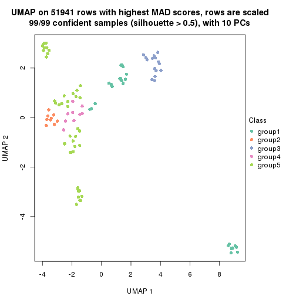
dimension_reduction(res, k = 6, method = "UMAP")
Following heatmap shows how subgroups are split when increasing k:
collect_classes(res)
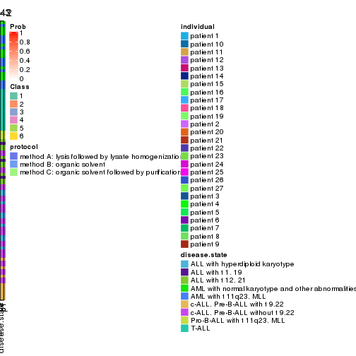
Test correlation between subgroups and known annotations. If the known annotation is numeric, one-way ANOVA test is applied, and if the known annotation is discrete, chi-squared contingency table test is applied.
test_to_known_factors(res)
#> n protocol(p) individual(p) disease.state(p) k
#> MAD:hclust 96 1 2.93e-10 7.21e-18 2
#> MAD:hclust 93 1 3.93e-18 3.92e-32 3
#> MAD:hclust 96 1 1.03e-26 1.32e-40 4
#> MAD:hclust 99 1 1.19e-35 2.78e-43 5
#> MAD:hclust 99 1 5.33e-44 1.81e-50 6
If matrix rows can be associated to genes, consider to use functional_enrichment(res,
...) to perform function enrichment for the signature genes. See this vignette for more detailed explanations.
The object with results only for a single top-value method and a single partition method can be extracted as:
res = res_list["MAD", "kmeans"]
# you can also extract it by
# res = res_list["MAD:kmeans"]
A summary of res and all the functions that can be applied to it:
res
#> A 'ConsensusPartition' object with k = 2, 3, 4, 5, 6.
#> On a matrix with 51941 rows and 99 columns.
#> Top rows (1000, 2000, 3000, 4000, 5000) are extracted by 'MAD' method.
#> Subgroups are detected by 'kmeans' method.
#> Performed in total 1250 partitions by row resampling.
#> Best k for subgroups seems to be 2.
#>
#> Following methods can be applied to this 'ConsensusPartition' object:
#> [1] "cola_report" "collect_classes" "collect_plots"
#> [4] "collect_stats" "colnames" "compare_signatures"
#> [7] "consensus_heatmap" "dimension_reduction" "functional_enrichment"
#> [10] "get_anno_col" "get_anno" "get_classes"
#> [13] "get_consensus" "get_matrix" "get_membership"
#> [16] "get_param" "get_signatures" "get_stats"
#> [19] "is_best_k" "is_stable_k" "membership_heatmap"
#> [22] "ncol" "nrow" "plot_ecdf"
#> [25] "rownames" "select_partition_number" "show"
#> [28] "suggest_best_k" "test_to_known_factors"
collect_plots() function collects all the plots made from res for all k (number of partitions)
into one single page to provide an easy and fast comparison between different k.
collect_plots(res)
The plots are:
k and the heatmap of
predicted classes for each k.k.k.k.All the plots in panels can be made by individual functions and they are plotted later in this section.
select_partition_number() produces several plots showing different
statistics for choosing “optimized” k. There are following statistics:
k;k, the area increased is defined as \(A_k - A_{k-1}\).The detailed explanations of these statistics can be found in the cola vignette.
Generally speaking, lower PAC score, higher mean silhouette score or higher
concordance corresponds to better partition. Rand index and Jaccard index
measure how similar the current partition is compared to partition with k-1.
If they are too similar, we won't accept k is better than k-1.
select_partition_number(res)
The numeric values for all these statistics can be obtained by get_stats().
get_stats(res)
#> k 1-PAC mean_silhouette concordance area_increased Rand Jaccard
#> 2 2 0.781 0.921 0.937 0.4819 0.499 0.499
#> 3 3 0.616 0.757 0.783 0.2691 1.000 1.000
#> 4 4 0.530 0.445 0.640 0.1417 0.729 0.480
#> 5 5 0.574 0.760 0.742 0.0922 0.872 0.571
#> 6 6 0.672 0.762 0.762 0.0545 1.000 1.000
suggest_best_k() suggests the best \(k\) based on these statistics. The rules are as follows:
suggest_best_k(res)
#> [1] 2
Following shows the table of the partitions (You need to click the show/hide
code output link to see it). The membership matrix (columns with name p*)
is inferred by
clue::cl_consensus()
function with the SE method. Basically the value in the membership matrix
represents the probability to belong to a certain group. The finall class
label for an item is determined with the group with highest probability it
belongs to.
In get_classes() function, the entropy is calculated from the membership
matrix and the silhouette score is calculated from the consensus matrix.
cbind(get_classes(res, k = 2), get_membership(res, k = 2))
#> class entropy silhouette p1 p2
#> GSM187698 1 0.9286 0.600 0.656 0.344
#> GSM187701 2 0.2603 0.969 0.044 0.956
#> GSM187704 1 0.4939 0.895 0.892 0.108
#> GSM187707 2 0.1414 0.958 0.020 0.980
#> GSM187710 2 0.1414 0.958 0.020 0.980
#> GSM187713 2 0.2603 0.969 0.044 0.956
#> GSM187716 2 0.1414 0.958 0.020 0.980
#> GSM187719 1 0.1843 0.915 0.972 0.028
#> GSM187722 1 0.8955 0.652 0.688 0.312
#> GSM187725 1 0.4939 0.895 0.892 0.108
#> GSM187728 2 0.1414 0.958 0.020 0.980
#> GSM187731 2 0.2603 0.969 0.044 0.956
#> GSM187734 2 0.2603 0.969 0.044 0.956
#> GSM187737 2 0.0000 0.962 0.000 1.000
#> GSM187740 2 0.1414 0.958 0.020 0.980
#> GSM187743 1 0.2778 0.912 0.952 0.048
#> GSM187746 1 0.4815 0.896 0.896 0.104
#> GSM187749 1 0.4939 0.895 0.892 0.108
#> GSM187752 2 0.2603 0.969 0.044 0.956
#> GSM187755 2 0.2778 0.969 0.048 0.952
#> GSM187758 1 0.4939 0.895 0.892 0.108
#> GSM187761 2 0.1414 0.958 0.020 0.980
#> GSM187764 2 0.2778 0.969 0.048 0.952
#> GSM187767 2 0.0938 0.960 0.012 0.988
#> GSM187770 1 0.1843 0.915 0.972 0.028
#> GSM187771 1 0.1843 0.915 0.972 0.028
#> GSM187772 1 0.1843 0.915 0.972 0.028
#> GSM187780 1 0.2778 0.912 0.952 0.048
#> GSM187781 1 0.2778 0.912 0.952 0.048
#> GSM187782 1 0.2778 0.912 0.952 0.048
#> GSM187788 2 0.2603 0.969 0.044 0.956
#> GSM187789 2 0.2603 0.969 0.044 0.956
#> GSM187790 2 0.2603 0.969 0.044 0.956
#> GSM187699 1 0.9286 0.600 0.656 0.344
#> GSM187702 2 0.2603 0.969 0.044 0.956
#> GSM187705 1 0.4939 0.895 0.892 0.108
#> GSM187708 2 0.1414 0.958 0.020 0.980
#> GSM187711 2 0.1414 0.958 0.020 0.980
#> GSM187714 2 0.2603 0.969 0.044 0.956
#> GSM187717 2 0.1414 0.958 0.020 0.980
#> GSM187720 1 0.1843 0.915 0.972 0.028
#> GSM187723 1 0.8955 0.652 0.688 0.312
#> GSM187726 1 0.4939 0.895 0.892 0.108
#> GSM187729 2 0.1414 0.958 0.020 0.980
#> GSM187732 2 0.2603 0.969 0.044 0.956
#> GSM187735 2 0.2603 0.969 0.044 0.956
#> GSM187738 2 0.0000 0.962 0.000 1.000
#> GSM187741 2 0.1414 0.958 0.020 0.980
#> GSM187744 1 0.2778 0.912 0.952 0.048
#> GSM187747 1 0.4815 0.896 0.896 0.104
#> GSM187750 1 0.4939 0.895 0.892 0.108
#> GSM187753 2 0.2603 0.969 0.044 0.956
#> GSM187756 2 0.2778 0.969 0.048 0.952
#> GSM187759 1 0.4939 0.895 0.892 0.108
#> GSM187762 2 0.1414 0.958 0.020 0.980
#> GSM187765 2 0.2778 0.969 0.048 0.952
#> GSM187768 2 0.0938 0.960 0.012 0.988
#> GSM187773 1 0.1843 0.915 0.972 0.028
#> GSM187774 1 0.1843 0.915 0.972 0.028
#> GSM187775 1 0.1843 0.915 0.972 0.028
#> GSM187776 1 0.2778 0.912 0.952 0.048
#> GSM187783 1 0.2778 0.912 0.952 0.048
#> GSM187784 1 0.2778 0.912 0.952 0.048
#> GSM187791 2 0.2603 0.969 0.044 0.956
#> GSM187792 2 0.2603 0.969 0.044 0.956
#> GSM187793 2 0.2603 0.969 0.044 0.956
#> GSM187700 1 0.9286 0.600 0.656 0.344
#> GSM187703 2 0.2603 0.969 0.044 0.956
#> GSM187706 1 0.4939 0.895 0.892 0.108
#> GSM187709 2 0.1414 0.958 0.020 0.980
#> GSM187712 2 0.1414 0.958 0.020 0.980
#> GSM187715 2 0.2603 0.969 0.044 0.956
#> GSM187718 2 0.1414 0.958 0.020 0.980
#> GSM187721 1 0.1843 0.915 0.972 0.028
#> GSM187724 1 0.8955 0.652 0.688 0.312
#> GSM187727 1 0.4939 0.895 0.892 0.108
#> GSM187730 2 0.1414 0.958 0.020 0.980
#> GSM187733 2 0.2603 0.969 0.044 0.956
#> GSM187736 2 0.2603 0.969 0.044 0.956
#> GSM187739 2 0.0000 0.962 0.000 1.000
#> GSM187742 2 0.1414 0.958 0.020 0.980
#> GSM187745 1 0.2778 0.912 0.952 0.048
#> GSM187748 1 0.4815 0.896 0.896 0.104
#> GSM187751 1 0.4939 0.895 0.892 0.108
#> GSM187754 2 0.2603 0.969 0.044 0.956
#> GSM187757 2 0.2778 0.969 0.048 0.952
#> GSM187760 1 0.4939 0.895 0.892 0.108
#> GSM187763 2 0.1414 0.958 0.020 0.980
#> GSM187766 2 0.2778 0.969 0.048 0.952
#> GSM187769 2 0.0938 0.960 0.012 0.988
#> GSM187777 1 0.1843 0.915 0.972 0.028
#> GSM187778 1 0.1843 0.915 0.972 0.028
#> GSM187779 1 0.1843 0.915 0.972 0.028
#> GSM187785 1 0.2778 0.912 0.952 0.048
#> GSM187786 1 0.2778 0.912 0.952 0.048
#> GSM187787 1 0.2778 0.912 0.952 0.048
#> GSM187794 2 0.2603 0.969 0.044 0.956
#> GSM187795 2 0.2603 0.969 0.044 0.956
#> GSM187796 2 0.2603 0.969 0.044 0.956
cbind(get_classes(res, k = 3), get_membership(res, k = 3))
#> class entropy silhouette p1 p2 p3
#> GSM187698 1 0.9770 0.176 0.400 0.232 NA
#> GSM187701 2 0.5591 0.814 0.000 0.696 NA
#> GSM187704 1 0.7394 0.746 0.652 0.064 NA
#> GSM187707 2 0.0747 0.806 0.000 0.984 NA
#> GSM187710 2 0.0424 0.808 0.000 0.992 NA
#> GSM187713 2 0.6095 0.806 0.000 0.608 NA
#> GSM187716 2 0.4931 0.758 0.000 0.768 NA
#> GSM187719 1 0.1129 0.788 0.976 0.004 NA
#> GSM187722 1 0.9267 0.404 0.504 0.180 NA
#> GSM187725 1 0.7424 0.746 0.648 0.064 NA
#> GSM187728 2 0.0000 0.809 0.000 1.000 NA
#> GSM187731 2 0.6079 0.807 0.000 0.612 NA
#> GSM187734 2 0.5760 0.820 0.000 0.672 NA
#> GSM187737 2 0.4121 0.834 0.000 0.832 NA
#> GSM187740 2 0.1643 0.800 0.000 0.956 NA
#> GSM187743 1 0.5404 0.753 0.740 0.004 NA
#> GSM187746 1 0.6742 0.747 0.708 0.052 NA
#> GSM187749 1 0.7394 0.746 0.652 0.064 NA
#> GSM187752 2 0.5760 0.820 0.000 0.672 NA
#> GSM187755 2 0.6045 0.778 0.000 0.620 NA
#> GSM187758 1 0.7394 0.746 0.652 0.064 NA
#> GSM187761 2 0.2165 0.794 0.000 0.936 NA
#> GSM187764 2 0.6045 0.778 0.000 0.620 NA
#> GSM187767 2 0.0424 0.809 0.000 0.992 NA
#> GSM187770 1 0.0237 0.790 0.996 0.004 NA
#> GSM187771 1 0.0237 0.790 0.996 0.004 NA
#> GSM187772 1 0.0237 0.790 0.996 0.004 NA
#> GSM187780 1 0.5588 0.751 0.720 0.004 NA
#> GSM187781 1 0.5588 0.751 0.720 0.004 NA
#> GSM187782 1 0.5588 0.751 0.720 0.004 NA
#> GSM187788 2 0.5733 0.821 0.000 0.676 NA
#> GSM187789 2 0.5733 0.821 0.000 0.676 NA
#> GSM187790 2 0.5733 0.821 0.000 0.676 NA
#> GSM187699 1 0.9770 0.176 0.400 0.232 NA
#> GSM187702 2 0.5591 0.814 0.000 0.696 NA
#> GSM187705 1 0.7394 0.746 0.652 0.064 NA
#> GSM187708 2 0.0747 0.806 0.000 0.984 NA
#> GSM187711 2 0.0424 0.808 0.000 0.992 NA
#> GSM187714 2 0.6095 0.806 0.000 0.608 NA
#> GSM187717 2 0.4931 0.758 0.000 0.768 NA
#> GSM187720 1 0.1129 0.788 0.976 0.004 NA
#> GSM187723 1 0.9228 0.408 0.508 0.176 NA
#> GSM187726 1 0.7424 0.746 0.648 0.064 NA
#> GSM187729 2 0.0000 0.809 0.000 1.000 NA
#> GSM187732 2 0.6079 0.807 0.000 0.612 NA
#> GSM187735 2 0.5760 0.820 0.000 0.672 NA
#> GSM187738 2 0.4062 0.833 0.000 0.836 NA
#> GSM187741 2 0.1643 0.800 0.000 0.956 NA
#> GSM187744 1 0.5404 0.753 0.740 0.004 NA
#> GSM187747 1 0.6742 0.747 0.708 0.052 NA
#> GSM187750 1 0.7394 0.746 0.652 0.064 NA
#> GSM187753 2 0.5760 0.820 0.000 0.672 NA
#> GSM187756 2 0.6045 0.778 0.000 0.620 NA
#> GSM187759 1 0.7394 0.746 0.652 0.064 NA
#> GSM187762 2 0.2165 0.794 0.000 0.936 NA
#> GSM187765 2 0.6045 0.778 0.000 0.620 NA
#> GSM187768 2 0.0424 0.809 0.000 0.992 NA
#> GSM187773 1 0.0237 0.790 0.996 0.004 NA
#> GSM187774 1 0.0237 0.790 0.996 0.004 NA
#> GSM187775 1 0.0237 0.790 0.996 0.004 NA
#> GSM187776 1 0.5588 0.751 0.720 0.004 NA
#> GSM187783 1 0.5588 0.751 0.720 0.004 NA
#> GSM187784 1 0.5588 0.751 0.720 0.004 NA
#> GSM187791 2 0.5733 0.821 0.000 0.676 NA
#> GSM187792 2 0.5733 0.821 0.000 0.676 NA
#> GSM187793 2 0.5733 0.821 0.000 0.676 NA
#> GSM187700 1 0.9770 0.176 0.400 0.232 NA
#> GSM187703 2 0.5591 0.814 0.000 0.696 NA
#> GSM187706 1 0.7394 0.746 0.652 0.064 NA
#> GSM187709 2 0.0747 0.806 0.000 0.984 NA
#> GSM187712 2 0.0424 0.808 0.000 0.992 NA
#> GSM187715 2 0.6095 0.806 0.000 0.608 NA
#> GSM187718 2 0.4931 0.758 0.000 0.768 NA
#> GSM187721 1 0.1129 0.788 0.976 0.004 NA
#> GSM187724 1 0.9228 0.408 0.508 0.176 NA
#> GSM187727 1 0.7424 0.746 0.648 0.064 NA
#> GSM187730 2 0.0000 0.809 0.000 1.000 NA
#> GSM187733 2 0.6079 0.807 0.000 0.612 NA
#> GSM187736 2 0.5760 0.820 0.000 0.672 NA
#> GSM187739 2 0.4062 0.833 0.000 0.836 NA
#> GSM187742 2 0.1643 0.800 0.000 0.956 NA
#> GSM187745 1 0.5404 0.753 0.740 0.004 NA
#> GSM187748 1 0.6742 0.747 0.708 0.052 NA
#> GSM187751 1 0.7394 0.746 0.652 0.064 NA
#> GSM187754 2 0.5760 0.820 0.000 0.672 NA
#> GSM187757 2 0.6045 0.778 0.000 0.620 NA
#> GSM187760 1 0.7394 0.746 0.652 0.064 NA
#> GSM187763 2 0.2165 0.794 0.000 0.936 NA
#> GSM187766 2 0.6045 0.778 0.000 0.620 NA
#> GSM187769 2 0.0424 0.809 0.000 0.992 NA
#> GSM187777 1 0.0237 0.790 0.996 0.004 NA
#> GSM187778 1 0.0237 0.790 0.996 0.004 NA
#> GSM187779 1 0.0237 0.790 0.996 0.004 NA
#> GSM187785 1 0.5588 0.751 0.720 0.004 NA
#> GSM187786 1 0.5588 0.751 0.720 0.004 NA
#> GSM187787 1 0.5588 0.751 0.720 0.004 NA
#> GSM187794 2 0.5733 0.821 0.000 0.676 NA
#> GSM187795 2 0.5733 0.821 0.000 0.676 NA
#> GSM187796 2 0.5733 0.821 0.000 0.676 NA
cbind(get_classes(res, k = 4), get_membership(res, k = 4))
#> class entropy silhouette p1 p2 p3 p4
#> GSM187698 4 0.8743 0.42400 0.200 0.252 0.072 0.476
#> GSM187701 4 0.5696 0.33356 0.000 0.484 0.024 0.492
#> GSM187704 3 0.5285 0.99860 0.468 0.000 0.524 0.008
#> GSM187707 2 0.7564 0.08480 0.000 0.420 0.192 0.388
#> GSM187710 2 0.7660 0.15832 0.000 0.448 0.228 0.324
#> GSM187713 2 0.2480 0.51237 0.000 0.904 0.008 0.088
#> GSM187716 4 0.6081 0.43841 0.000 0.260 0.088 0.652
#> GSM187719 1 0.0524 0.53343 0.988 0.000 0.008 0.004
#> GSM187722 4 0.8719 0.28569 0.340 0.156 0.072 0.432
#> GSM187725 3 0.5399 0.99580 0.468 0.000 0.520 0.012
#> GSM187728 2 0.7606 0.14467 0.000 0.444 0.208 0.348
#> GSM187731 2 0.2480 0.51237 0.000 0.904 0.008 0.088
#> GSM187734 2 0.0376 0.58667 0.000 0.992 0.004 0.004
#> GSM187737 2 0.6440 0.07459 0.000 0.564 0.080 0.356
#> GSM187740 4 0.7398 0.00968 0.000 0.376 0.168 0.456
#> GSM187743 1 0.7035 0.60333 0.572 0.000 0.244 0.184
#> GSM187746 1 0.5693 -0.91528 0.504 0.000 0.472 0.024
#> GSM187749 3 0.5285 0.99860 0.468 0.000 0.524 0.008
#> GSM187752 2 0.0376 0.58667 0.000 0.992 0.004 0.004
#> GSM187755 4 0.5487 0.46961 0.000 0.400 0.020 0.580
#> GSM187758 3 0.5285 0.99860 0.468 0.000 0.524 0.008
#> GSM187761 4 0.7608 0.02912 0.000 0.364 0.204 0.432
#> GSM187764 4 0.5487 0.46961 0.000 0.400 0.020 0.580
#> GSM187767 2 0.7535 0.17435 0.000 0.464 0.200 0.336
#> GSM187770 1 0.0000 0.52758 1.000 0.000 0.000 0.000
#> GSM187771 1 0.0000 0.52758 1.000 0.000 0.000 0.000
#> GSM187772 1 0.0000 0.52758 1.000 0.000 0.000 0.000
#> GSM187780 1 0.7105 0.60434 0.556 0.000 0.268 0.176
#> GSM187781 1 0.7105 0.60434 0.556 0.000 0.268 0.176
#> GSM187782 1 0.7105 0.60434 0.556 0.000 0.268 0.176
#> GSM187788 2 0.0188 0.58875 0.000 0.996 0.004 0.000
#> GSM187789 2 0.0188 0.58875 0.000 0.996 0.004 0.000
#> GSM187790 2 0.0188 0.58875 0.000 0.996 0.004 0.000
#> GSM187699 4 0.8743 0.42400 0.200 0.252 0.072 0.476
#> GSM187702 4 0.5696 0.33356 0.000 0.484 0.024 0.492
#> GSM187705 3 0.5285 0.99860 0.468 0.000 0.524 0.008
#> GSM187708 2 0.7564 0.08480 0.000 0.420 0.192 0.388
#> GSM187711 2 0.7660 0.15832 0.000 0.448 0.228 0.324
#> GSM187714 2 0.2480 0.51237 0.000 0.904 0.008 0.088
#> GSM187717 4 0.6081 0.43841 0.000 0.260 0.088 0.652
#> GSM187720 1 0.0524 0.53343 0.988 0.000 0.008 0.004
#> GSM187723 4 0.8719 0.28569 0.340 0.156 0.072 0.432
#> GSM187726 3 0.5399 0.99580 0.468 0.000 0.520 0.012
#> GSM187729 2 0.7606 0.14467 0.000 0.444 0.208 0.348
#> GSM187732 2 0.2480 0.51237 0.000 0.904 0.008 0.088
#> GSM187735 2 0.0376 0.58667 0.000 0.992 0.004 0.004
#> GSM187738 2 0.6440 0.07459 0.000 0.564 0.080 0.356
#> GSM187741 4 0.7398 0.00968 0.000 0.376 0.168 0.456
#> GSM187744 1 0.7035 0.60333 0.572 0.000 0.244 0.184
#> GSM187747 1 0.5693 -0.91528 0.504 0.000 0.472 0.024
#> GSM187750 3 0.5285 0.99860 0.468 0.000 0.524 0.008
#> GSM187753 2 0.0376 0.58667 0.000 0.992 0.004 0.004
#> GSM187756 4 0.5487 0.46961 0.000 0.400 0.020 0.580
#> GSM187759 3 0.5285 0.99860 0.468 0.000 0.524 0.008
#> GSM187762 4 0.7608 0.02912 0.000 0.364 0.204 0.432
#> GSM187765 4 0.5487 0.46961 0.000 0.400 0.020 0.580
#> GSM187768 2 0.7535 0.17435 0.000 0.464 0.200 0.336
#> GSM187773 1 0.0000 0.52758 1.000 0.000 0.000 0.000
#> GSM187774 1 0.0000 0.52758 1.000 0.000 0.000 0.000
#> GSM187775 1 0.0000 0.52758 1.000 0.000 0.000 0.000
#> GSM187776 1 0.7105 0.60434 0.556 0.000 0.268 0.176
#> GSM187783 1 0.7105 0.60434 0.556 0.000 0.268 0.176
#> GSM187784 1 0.7105 0.60434 0.556 0.000 0.268 0.176
#> GSM187791 2 0.0188 0.58875 0.000 0.996 0.004 0.000
#> GSM187792 2 0.0188 0.58875 0.000 0.996 0.004 0.000
#> GSM187793 2 0.0188 0.58875 0.000 0.996 0.004 0.000
#> GSM187700 4 0.8743 0.42400 0.200 0.252 0.072 0.476
#> GSM187703 4 0.5696 0.33356 0.000 0.484 0.024 0.492
#> GSM187706 3 0.5285 0.99860 0.468 0.000 0.524 0.008
#> GSM187709 2 0.7564 0.08480 0.000 0.420 0.192 0.388
#> GSM187712 2 0.7660 0.15832 0.000 0.448 0.228 0.324
#> GSM187715 2 0.2480 0.51237 0.000 0.904 0.008 0.088
#> GSM187718 4 0.6081 0.43841 0.000 0.260 0.088 0.652
#> GSM187721 1 0.0524 0.53343 0.988 0.000 0.008 0.004
#> GSM187724 4 0.8719 0.28569 0.340 0.156 0.072 0.432
#> GSM187727 3 0.5399 0.99580 0.468 0.000 0.520 0.012
#> GSM187730 2 0.7606 0.14467 0.000 0.444 0.208 0.348
#> GSM187733 2 0.2480 0.51237 0.000 0.904 0.008 0.088
#> GSM187736 2 0.0376 0.58667 0.000 0.992 0.004 0.004
#> GSM187739 2 0.6440 0.07459 0.000 0.564 0.080 0.356
#> GSM187742 4 0.7398 0.00968 0.000 0.376 0.168 0.456
#> GSM187745 1 0.7035 0.60333 0.572 0.000 0.244 0.184
#> GSM187748 1 0.5693 -0.91528 0.504 0.000 0.472 0.024
#> GSM187751 3 0.5285 0.99860 0.468 0.000 0.524 0.008
#> GSM187754 2 0.0376 0.58667 0.000 0.992 0.004 0.004
#> GSM187757 4 0.5487 0.46961 0.000 0.400 0.020 0.580
#> GSM187760 3 0.5285 0.99860 0.468 0.000 0.524 0.008
#> GSM187763 4 0.7608 0.02912 0.000 0.364 0.204 0.432
#> GSM187766 4 0.5487 0.46961 0.000 0.400 0.020 0.580
#> GSM187769 2 0.7535 0.17435 0.000 0.464 0.200 0.336
#> GSM187777 1 0.0000 0.52758 1.000 0.000 0.000 0.000
#> GSM187778 1 0.0000 0.52758 1.000 0.000 0.000 0.000
#> GSM187779 1 0.0000 0.52758 1.000 0.000 0.000 0.000
#> GSM187785 1 0.7105 0.60434 0.556 0.000 0.268 0.176
#> GSM187786 1 0.7105 0.60434 0.556 0.000 0.268 0.176
#> GSM187787 1 0.7105 0.60434 0.556 0.000 0.268 0.176
#> GSM187794 2 0.0188 0.58875 0.000 0.996 0.004 0.000
#> GSM187795 2 0.0188 0.58875 0.000 0.996 0.004 0.000
#> GSM187796 2 0.0188 0.58875 0.000 0.996 0.004 0.000
cbind(get_classes(res, k = 5), get_membership(res, k = 5))
#> class entropy silhouette p1 p2 p3 p4 p5
#> GSM187698 4 0.7055 0.705 0.104 0.096 0.056 0.644 0.100
#> GSM187701 4 0.7277 0.632 0.000 0.284 0.044 0.472 0.200
#> GSM187704 3 0.4354 0.972 0.368 0.008 0.624 0.000 0.000
#> GSM187707 2 0.2467 0.828 0.000 0.908 0.016 0.024 0.052
#> GSM187710 2 0.3361 0.820 0.000 0.860 0.036 0.024 0.080
#> GSM187713 5 0.5493 0.841 0.000 0.164 0.032 0.100 0.704
#> GSM187716 4 0.5785 0.510 0.000 0.400 0.028 0.532 0.040
#> GSM187719 1 0.0579 0.559 0.984 0.000 0.008 0.008 0.000
#> GSM187722 4 0.7840 0.668 0.192 0.092 0.060 0.556 0.100
#> GSM187725 3 0.5183 0.963 0.368 0.008 0.596 0.012 0.016
#> GSM187728 2 0.2477 0.833 0.000 0.892 0.008 0.008 0.092
#> GSM187731 5 0.5493 0.840 0.000 0.164 0.032 0.100 0.704
#> GSM187734 5 0.3597 0.923 0.000 0.180 0.012 0.008 0.800
#> GSM187737 2 0.6698 0.293 0.000 0.572 0.036 0.200 0.192
#> GSM187740 2 0.2833 0.783 0.000 0.888 0.020 0.068 0.024
#> GSM187743 1 0.7876 0.636 0.444 0.000 0.252 0.196 0.108
#> GSM187746 3 0.5776 0.909 0.412 0.008 0.528 0.020 0.032
#> GSM187749 3 0.4354 0.972 0.368 0.008 0.624 0.000 0.000
#> GSM187752 5 0.3167 0.929 0.000 0.172 0.004 0.004 0.820
#> GSM187755 4 0.6008 0.747 0.000 0.224 0.016 0.624 0.136
#> GSM187758 3 0.4354 0.972 0.368 0.008 0.624 0.000 0.000
#> GSM187761 2 0.2529 0.778 0.000 0.900 0.040 0.056 0.004
#> GSM187764 4 0.5939 0.745 0.000 0.228 0.012 0.624 0.136
#> GSM187767 2 0.2899 0.828 0.000 0.872 0.020 0.008 0.100
#> GSM187770 1 0.0000 0.552 1.000 0.000 0.000 0.000 0.000
#> GSM187771 1 0.0000 0.552 1.000 0.000 0.000 0.000 0.000
#> GSM187772 1 0.0000 0.552 1.000 0.000 0.000 0.000 0.000
#> GSM187780 1 0.7869 0.647 0.436 0.000 0.240 0.228 0.096
#> GSM187781 1 0.7869 0.647 0.436 0.000 0.240 0.228 0.096
#> GSM187782 1 0.7869 0.647 0.436 0.000 0.240 0.228 0.096
#> GSM187788 5 0.3205 0.930 0.000 0.176 0.004 0.004 0.816
#> GSM187789 5 0.3205 0.930 0.000 0.176 0.004 0.004 0.816
#> GSM187790 5 0.3205 0.930 0.000 0.176 0.004 0.004 0.816
#> GSM187699 4 0.7055 0.705 0.104 0.096 0.056 0.644 0.100
#> GSM187702 4 0.7277 0.632 0.000 0.284 0.044 0.472 0.200
#> GSM187705 3 0.4354 0.972 0.368 0.008 0.624 0.000 0.000
#> GSM187708 2 0.2467 0.828 0.000 0.908 0.016 0.024 0.052
#> GSM187711 2 0.3361 0.820 0.000 0.860 0.036 0.024 0.080
#> GSM187714 5 0.5493 0.841 0.000 0.164 0.032 0.100 0.704
#> GSM187717 4 0.5785 0.510 0.000 0.400 0.028 0.532 0.040
#> GSM187720 1 0.0579 0.559 0.984 0.000 0.008 0.008 0.000
#> GSM187723 4 0.7840 0.668 0.192 0.092 0.060 0.556 0.100
#> GSM187726 3 0.5183 0.963 0.368 0.008 0.596 0.012 0.016
#> GSM187729 2 0.2477 0.833 0.000 0.892 0.008 0.008 0.092
#> GSM187732 5 0.5493 0.840 0.000 0.164 0.032 0.100 0.704
#> GSM187735 5 0.3597 0.923 0.000 0.180 0.012 0.008 0.800
#> GSM187738 2 0.6698 0.293 0.000 0.572 0.036 0.200 0.192
#> GSM187741 2 0.2833 0.783 0.000 0.888 0.020 0.068 0.024
#> GSM187744 1 0.7876 0.636 0.444 0.000 0.252 0.196 0.108
#> GSM187747 3 0.5776 0.909 0.412 0.008 0.528 0.020 0.032
#> GSM187750 3 0.4354 0.972 0.368 0.008 0.624 0.000 0.000
#> GSM187753 5 0.3167 0.929 0.000 0.172 0.004 0.004 0.820
#> GSM187756 4 0.6008 0.747 0.000 0.224 0.016 0.624 0.136
#> GSM187759 3 0.4354 0.972 0.368 0.008 0.624 0.000 0.000
#> GSM187762 2 0.2529 0.778 0.000 0.900 0.040 0.056 0.004
#> GSM187765 4 0.5939 0.745 0.000 0.228 0.012 0.624 0.136
#> GSM187768 2 0.2899 0.828 0.000 0.872 0.020 0.008 0.100
#> GSM187773 1 0.0000 0.552 1.000 0.000 0.000 0.000 0.000
#> GSM187774 1 0.0000 0.552 1.000 0.000 0.000 0.000 0.000
#> GSM187775 1 0.0000 0.552 1.000 0.000 0.000 0.000 0.000
#> GSM187776 1 0.7869 0.647 0.436 0.000 0.240 0.228 0.096
#> GSM187783 1 0.7869 0.647 0.436 0.000 0.240 0.228 0.096
#> GSM187784 1 0.7869 0.647 0.436 0.000 0.240 0.228 0.096
#> GSM187791 5 0.3205 0.930 0.000 0.176 0.004 0.004 0.816
#> GSM187792 5 0.3205 0.930 0.000 0.176 0.004 0.004 0.816
#> GSM187793 5 0.3205 0.930 0.000 0.176 0.004 0.004 0.816
#> GSM187700 4 0.7055 0.705 0.104 0.096 0.056 0.644 0.100
#> GSM187703 4 0.7277 0.632 0.000 0.284 0.044 0.472 0.200
#> GSM187706 3 0.4354 0.972 0.368 0.008 0.624 0.000 0.000
#> GSM187709 2 0.2467 0.828 0.000 0.908 0.016 0.024 0.052
#> GSM187712 2 0.3361 0.820 0.000 0.860 0.036 0.024 0.080
#> GSM187715 5 0.5493 0.841 0.000 0.164 0.032 0.100 0.704
#> GSM187718 4 0.5785 0.510 0.000 0.400 0.028 0.532 0.040
#> GSM187721 1 0.0579 0.559 0.984 0.000 0.008 0.008 0.000
#> GSM187724 4 0.7840 0.668 0.192 0.092 0.060 0.556 0.100
#> GSM187727 3 0.5183 0.963 0.368 0.008 0.596 0.012 0.016
#> GSM187730 2 0.2477 0.833 0.000 0.892 0.008 0.008 0.092
#> GSM187733 5 0.5493 0.840 0.000 0.164 0.032 0.100 0.704
#> GSM187736 5 0.3597 0.923 0.000 0.180 0.012 0.008 0.800
#> GSM187739 2 0.6698 0.293 0.000 0.572 0.036 0.200 0.192
#> GSM187742 2 0.2833 0.783 0.000 0.888 0.020 0.068 0.024
#> GSM187745 1 0.7876 0.636 0.444 0.000 0.252 0.196 0.108
#> GSM187748 3 0.5776 0.909 0.412 0.008 0.528 0.020 0.032
#> GSM187751 3 0.4354 0.972 0.368 0.008 0.624 0.000 0.000
#> GSM187754 5 0.3167 0.929 0.000 0.172 0.004 0.004 0.820
#> GSM187757 4 0.6008 0.747 0.000 0.224 0.016 0.624 0.136
#> GSM187760 3 0.4354 0.972 0.368 0.008 0.624 0.000 0.000
#> GSM187763 2 0.2529 0.778 0.000 0.900 0.040 0.056 0.004
#> GSM187766 4 0.5939 0.745 0.000 0.228 0.012 0.624 0.136
#> GSM187769 2 0.2899 0.828 0.000 0.872 0.020 0.008 0.100
#> GSM187777 1 0.0000 0.552 1.000 0.000 0.000 0.000 0.000
#> GSM187778 1 0.0000 0.552 1.000 0.000 0.000 0.000 0.000
#> GSM187779 1 0.0000 0.552 1.000 0.000 0.000 0.000 0.000
#> GSM187785 1 0.7869 0.647 0.436 0.000 0.240 0.228 0.096
#> GSM187786 1 0.7869 0.647 0.436 0.000 0.240 0.228 0.096
#> GSM187787 1 0.7869 0.647 0.436 0.000 0.240 0.228 0.096
#> GSM187794 5 0.3205 0.930 0.000 0.176 0.004 0.004 0.816
#> GSM187795 5 0.3205 0.930 0.000 0.176 0.004 0.004 0.816
#> GSM187796 5 0.3205 0.930 0.000 0.176 0.004 0.004 0.816
cbind(get_classes(res, k = 6), get_membership(res, k = 6))
#> class entropy silhouette p1 p2 p3 p4 p5 p6
#> GSM187698 6 0.5426 0.739 NA 0.024 0.008 0.076 0.096 0.724
#> GSM187701 6 0.5495 0.702 NA 0.116 0.004 0.000 0.144 0.676
#> GSM187704 3 0.1411 0.950 NA 0.000 0.936 0.060 0.000 0.004
#> GSM187707 2 0.4179 0.796 NA 0.776 0.000 0.000 0.116 0.028
#> GSM187710 2 0.4652 0.772 NA 0.728 0.008 0.000 0.140 0.008
#> GSM187713 5 0.3987 0.799 NA 0.008 0.016 0.000 0.796 0.112
#> GSM187716 6 0.5991 0.498 NA 0.228 0.000 0.000 0.028 0.560
#> GSM187719 4 0.5910 0.643 NA 0.004 0.152 0.432 0.000 0.004
#> GSM187722 6 0.5420 0.731 NA 0.016 0.012 0.088 0.080 0.724
#> GSM187725 3 0.3161 0.936 NA 0.012 0.864 0.060 0.000 0.040
#> GSM187728 2 0.3444 0.807 NA 0.820 0.008 0.000 0.136 0.016
#> GSM187731 5 0.3932 0.799 NA 0.004 0.016 0.000 0.796 0.112
#> GSM187734 5 0.1806 0.884 NA 0.020 0.008 0.000 0.928 0.000
#> GSM187737 2 0.7301 0.292 NA 0.404 0.004 0.000 0.236 0.256
#> GSM187740 2 0.5438 0.756 NA 0.696 0.008 0.000 0.100 0.084
#> GSM187743 4 0.2371 0.674 NA 0.016 0.000 0.900 0.000 0.032
#> GSM187746 3 0.4811 0.851 NA 0.036 0.748 0.052 0.000 0.028
#> GSM187749 3 0.1781 0.949 NA 0.000 0.924 0.060 0.000 0.008
#> GSM187752 5 0.0603 0.893 NA 0.016 0.004 0.000 0.980 0.000
#> GSM187755 6 0.4432 0.773 NA 0.052 0.000 0.000 0.112 0.764
#> GSM187758 3 0.1411 0.950 NA 0.000 0.936 0.060 0.000 0.004
#> GSM187761 2 0.5641 0.748 NA 0.680 0.016 0.000 0.088 0.072
#> GSM187764 6 0.4533 0.772 NA 0.056 0.000 0.000 0.116 0.756
#> GSM187767 2 0.4124 0.789 NA 0.764 0.004 0.000 0.156 0.008
#> GSM187770 4 0.5723 0.641 NA 0.000 0.164 0.428 0.000 0.000
#> GSM187771 4 0.5723 0.641 NA 0.000 0.164 0.428 0.000 0.000
#> GSM187772 4 0.5723 0.641 NA 0.000 0.164 0.428 0.000 0.000
#> GSM187780 4 0.0000 0.679 NA 0.000 0.000 1.000 0.000 0.000
#> GSM187781 4 0.0000 0.679 NA 0.000 0.000 1.000 0.000 0.000
#> GSM187782 4 0.0000 0.679 NA 0.000 0.000 1.000 0.000 0.000
#> GSM187788 5 0.1820 0.893 NA 0.012 0.016 0.000 0.928 0.000
#> GSM187789 5 0.1820 0.893 NA 0.012 0.016 0.000 0.928 0.000
#> GSM187790 5 0.1820 0.893 NA 0.012 0.016 0.000 0.928 0.000
#> GSM187699 6 0.5426 0.739 NA 0.024 0.008 0.076 0.096 0.724
#> GSM187702 6 0.5495 0.702 NA 0.116 0.004 0.000 0.144 0.676
#> GSM187705 3 0.1411 0.950 NA 0.000 0.936 0.060 0.000 0.004
#> GSM187708 2 0.4179 0.796 NA 0.776 0.000 0.000 0.116 0.028
#> GSM187711 2 0.4652 0.772 NA 0.728 0.008 0.000 0.140 0.008
#> GSM187714 5 0.3987 0.799 NA 0.008 0.016 0.000 0.796 0.112
#> GSM187717 6 0.5991 0.498 NA 0.228 0.000 0.000 0.028 0.560
#> GSM187720 4 0.5910 0.643 NA 0.004 0.152 0.432 0.000 0.004
#> GSM187723 6 0.5420 0.731 NA 0.016 0.012 0.088 0.080 0.724
#> GSM187726 3 0.3161 0.936 NA 0.012 0.864 0.060 0.000 0.040
#> GSM187729 2 0.3444 0.807 NA 0.820 0.008 0.000 0.136 0.016
#> GSM187732 5 0.3932 0.799 NA 0.004 0.016 0.000 0.796 0.112
#> GSM187735 5 0.1806 0.884 NA 0.020 0.008 0.000 0.928 0.000
#> GSM187738 2 0.7301 0.292 NA 0.404 0.004 0.000 0.236 0.256
#> GSM187741 2 0.5438 0.756 NA 0.696 0.008 0.000 0.100 0.084
#> GSM187744 4 0.2371 0.674 NA 0.016 0.000 0.900 0.000 0.032
#> GSM187747 3 0.4811 0.851 NA 0.036 0.748 0.052 0.000 0.028
#> GSM187750 3 0.1781 0.949 NA 0.000 0.924 0.060 0.000 0.008
#> GSM187753 5 0.0603 0.893 NA 0.016 0.004 0.000 0.980 0.000
#> GSM187756 6 0.4432 0.773 NA 0.052 0.000 0.000 0.112 0.764
#> GSM187759 3 0.1411 0.950 NA 0.000 0.936 0.060 0.000 0.004
#> GSM187762 2 0.5641 0.748 NA 0.680 0.016 0.000 0.088 0.072
#> GSM187765 6 0.4533 0.772 NA 0.056 0.000 0.000 0.116 0.756
#> GSM187768 2 0.4124 0.789 NA 0.764 0.004 0.000 0.156 0.008
#> GSM187773 4 0.5723 0.641 NA 0.000 0.164 0.428 0.000 0.000
#> GSM187774 4 0.5723 0.641 NA 0.000 0.164 0.428 0.000 0.000
#> GSM187775 4 0.5723 0.641 NA 0.000 0.164 0.428 0.000 0.000
#> GSM187776 4 0.0000 0.679 NA 0.000 0.000 1.000 0.000 0.000
#> GSM187783 4 0.0000 0.679 NA 0.000 0.000 1.000 0.000 0.000
#> GSM187784 4 0.0000 0.679 NA 0.000 0.000 1.000 0.000 0.000
#> GSM187791 5 0.1820 0.893 NA 0.012 0.016 0.000 0.928 0.000
#> GSM187792 5 0.1820 0.893 NA 0.012 0.016 0.000 0.928 0.000
#> GSM187793 5 0.1820 0.893 NA 0.012 0.016 0.000 0.928 0.000
#> GSM187700 6 0.5426 0.739 NA 0.024 0.008 0.076 0.096 0.724
#> GSM187703 6 0.5495 0.702 NA 0.116 0.004 0.000 0.144 0.676
#> GSM187706 3 0.1411 0.950 NA 0.000 0.936 0.060 0.000 0.004
#> GSM187709 2 0.4179 0.796 NA 0.776 0.000 0.000 0.116 0.028
#> GSM187712 2 0.4652 0.772 NA 0.728 0.008 0.000 0.140 0.008
#> GSM187715 5 0.3987 0.799 NA 0.008 0.016 0.000 0.796 0.112
#> GSM187718 6 0.5991 0.498 NA 0.228 0.000 0.000 0.028 0.560
#> GSM187721 4 0.5910 0.643 NA 0.004 0.152 0.432 0.000 0.004
#> GSM187724 6 0.5420 0.731 NA 0.016 0.012 0.088 0.080 0.724
#> GSM187727 3 0.3161 0.936 NA 0.012 0.864 0.060 0.000 0.040
#> GSM187730 2 0.3444 0.807 NA 0.820 0.008 0.000 0.136 0.016
#> GSM187733 5 0.3932 0.799 NA 0.004 0.016 0.000 0.796 0.112
#> GSM187736 5 0.1806 0.884 NA 0.020 0.008 0.000 0.928 0.000
#> GSM187739 2 0.7301 0.292 NA 0.404 0.004 0.000 0.236 0.256
#> GSM187742 2 0.5438 0.756 NA 0.696 0.008 0.000 0.100 0.084
#> GSM187745 4 0.2371 0.674 NA 0.016 0.000 0.900 0.000 0.032
#> GSM187748 3 0.4811 0.851 NA 0.036 0.748 0.052 0.000 0.028
#> GSM187751 3 0.1781 0.949 NA 0.000 0.924 0.060 0.000 0.008
#> GSM187754 5 0.0603 0.893 NA 0.016 0.004 0.000 0.980 0.000
#> GSM187757 6 0.4432 0.773 NA 0.052 0.000 0.000 0.112 0.764
#> GSM187760 3 0.1411 0.950 NA 0.000 0.936 0.060 0.000 0.004
#> GSM187763 2 0.5641 0.748 NA 0.680 0.016 0.000 0.088 0.072
#> GSM187766 6 0.4533 0.772 NA 0.056 0.000 0.000 0.116 0.756
#> GSM187769 2 0.4124 0.789 NA 0.764 0.004 0.000 0.156 0.008
#> GSM187777 4 0.5723 0.641 NA 0.000 0.164 0.428 0.000 0.000
#> GSM187778 4 0.5723 0.641 NA 0.000 0.164 0.428 0.000 0.000
#> GSM187779 4 0.5723 0.641 NA 0.000 0.164 0.428 0.000 0.000
#> GSM187785 4 0.0000 0.679 NA 0.000 0.000 1.000 0.000 0.000
#> GSM187786 4 0.0000 0.679 NA 0.000 0.000 1.000 0.000 0.000
#> GSM187787 4 0.0000 0.679 NA 0.000 0.000 1.000 0.000 0.000
#> GSM187794 5 0.1820 0.893 NA 0.012 0.016 0.000 0.928 0.000
#> GSM187795 5 0.1820 0.893 NA 0.012 0.016 0.000 0.928 0.000
#> GSM187796 5 0.1820 0.893 NA 0.012 0.016 0.000 0.928 0.000
Heatmaps for the consensus matrix. It visualizes the probability of two samples to be in a same group.
consensus_heatmap(res, k = 2)
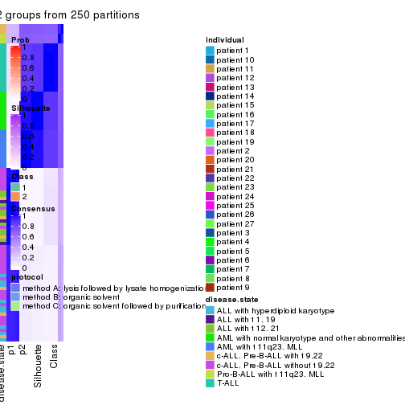
consensus_heatmap(res, k = 3)
consensus_heatmap(res, k = 4)
consensus_heatmap(res, k = 5)
consensus_heatmap(res, k = 6)
Heatmaps for the membership of samples in all partitions to see how consistent they are:
membership_heatmap(res, k = 2)
membership_heatmap(res, k = 3)
membership_heatmap(res, k = 4)
membership_heatmap(res, k = 5)
membership_heatmap(res, k = 6)

As soon as we have had the classes for columns, we can look for signatures which are significantly different between classes which can be candidate marks for certain classes. Following are the heatmaps for signatures.
Signature heatmaps where rows are scaled:
get_signatures(res, k = 2)
#> Error: The width or height of the raster image is zero, maybe you forget to turn off the
#> previous graphic device or it was corrupted. Run `dev.off()` to close it.

get_signatures(res, k = 3)
#> Error: The width or height of the raster image is zero, maybe you forget to turn off the
#> previous graphic device or it was corrupted. Run `dev.off()` to close it.

get_signatures(res, k = 4)
#> Error: The width or height of the raster image is zero, maybe you forget to turn off the
#> previous graphic device or it was corrupted. Run `dev.off()` to close it.

get_signatures(res, k = 5)
#> Error: The width or height of the raster image is zero, maybe you forget to turn off the
#> previous graphic device or it was corrupted. Run `dev.off()` to close it.

get_signatures(res, k = 6)
#> Error: The width or height of the raster image is zero, maybe you forget to turn off the
#> previous graphic device or it was corrupted. Run `dev.off()` to close it.

Signature heatmaps where rows are not scaled:
get_signatures(res, k = 2, scale_rows = FALSE)
#> Error: The width or height of the raster image is zero, maybe you forget to turn off the
#> previous graphic device or it was corrupted. Run `dev.off()` to close it.

get_signatures(res, k = 3, scale_rows = FALSE)
#> Error: The width or height of the raster image is zero, maybe you forget to turn off the
#> previous graphic device or it was corrupted. Run `dev.off()` to close it.

get_signatures(res, k = 4, scale_rows = FALSE)
#> Error: The width or height of the raster image is zero, maybe you forget to turn off the
#> previous graphic device or it was corrupted. Run `dev.off()` to close it.

get_signatures(res, k = 5, scale_rows = FALSE)
#> Error: The width or height of the raster image is zero, maybe you forget to turn off the
#> previous graphic device or it was corrupted. Run `dev.off()` to close it.

get_signatures(res, k = 6, scale_rows = FALSE)
#> Error: The width or height of the raster image is zero, maybe you forget to turn off the
#> previous graphic device or it was corrupted. Run `dev.off()` to close it.

Compare the overlap of signatures from different k:
compare_signatures(res)
get_signature() returns a data frame invisibly. TO get the list of signatures, the function
call should be assigned to a variable explicitly. In following code, if plot argument is set
to FALSE, no heatmap is plotted while only the differential analysis is performed.
# code only for demonstration
tb = get_signature(res, k = ..., plot = FALSE)
An example of the output of tb is:
#> which_row fdr mean_1 mean_2 scaled_mean_1 scaled_mean_2 km
#> 1 38 0.042760348 8.373488 9.131774 -0.5533452 0.5164555 1
#> 2 40 0.018707592 7.106213 8.469186 -0.6173731 0.5762149 1
#> 3 55 0.019134737 10.221463 11.207825 -0.6159697 0.5749050 1
#> 4 59 0.006059896 5.921854 7.869574 -0.6899429 0.6439467 1
#> 5 60 0.018055526 8.928898 10.211722 -0.6204761 0.5791110 1
#> 6 98 0.009384629 15.714769 14.887706 0.6635654 -0.6193277 2
...
The columns in tb are:
which_row: row indices corresponding to the input matrix.fdr: FDR for the differential test. mean_x: The mean value in group x.scaled_mean_x: The mean value in group x after rows are scaled.km: Row groups if k-means clustering is applied to rows.UMAP plot which shows how samples are separated.
dimension_reduction(res, k = 2, method = "UMAP")
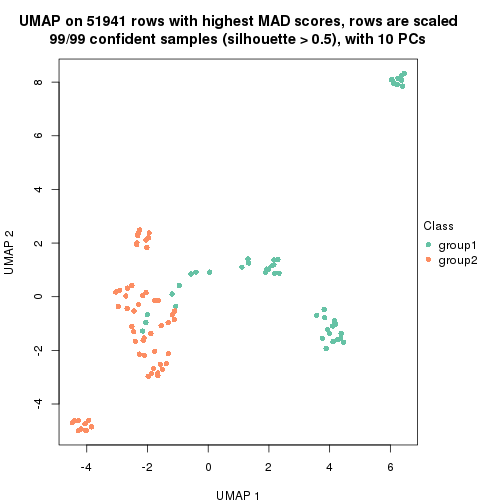
dimension_reduction(res, k = 3, method = "UMAP")

dimension_reduction(res, k = 4, method = "UMAP")

dimension_reduction(res, k = 5, method = "UMAP")
dimension_reduction(res, k = 6, method = "UMAP")
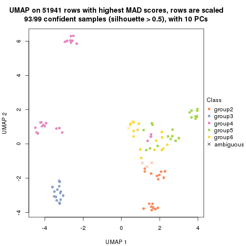
Following heatmap shows how subgroups are split when increasing k:
collect_classes(res)
Test correlation between subgroups and known annotations. If the known annotation is numeric, one-way ANOVA test is applied, and if the known annotation is discrete, chi-squared contingency table test is applied.
test_to_known_factors(res)
#> n protocol(p) individual(p) disease.state(p) k
#> MAD:kmeans 99 1 1.88e-10 3.01e-16 2
#> MAD:kmeans 93 1 4.57e-10 2.99e-17 3
#> MAD:kmeans 57 1 1.12e-13 5.72e-21 4
#> MAD:kmeans 96 1 6.92e-35 5.59e-47 5
#> MAD:kmeans 93 1 3.99e-34 3.50e-44 6
If matrix rows can be associated to genes, consider to use functional_enrichment(res,
...) to perform function enrichment for the signature genes. See this vignette for more detailed explanations.
The object with results only for a single top-value method and a single partition method can be extracted as:
res = res_list["MAD", "skmeans"]
# you can also extract it by
# res = res_list["MAD:skmeans"]
A summary of res and all the functions that can be applied to it:
res
#> A 'ConsensusPartition' object with k = 2, 3, 4, 5, 6.
#> On a matrix with 51941 rows and 99 columns.
#> Top rows (1000, 2000, 3000, 4000, 5000) are extracted by 'MAD' method.
#> Subgroups are detected by 'skmeans' method.
#> Performed in total 1250 partitions by row resampling.
#> Best k for subgroups seems to be 6.
#>
#> Following methods can be applied to this 'ConsensusPartition' object:
#> [1] "cola_report" "collect_classes" "collect_plots"
#> [4] "collect_stats" "colnames" "compare_signatures"
#> [7] "consensus_heatmap" "dimension_reduction" "functional_enrichment"
#> [10] "get_anno_col" "get_anno" "get_classes"
#> [13] "get_consensus" "get_matrix" "get_membership"
#> [16] "get_param" "get_signatures" "get_stats"
#> [19] "is_best_k" "is_stable_k" "membership_heatmap"
#> [22] "ncol" "nrow" "plot_ecdf"
#> [25] "rownames" "select_partition_number" "show"
#> [28] "suggest_best_k" "test_to_known_factors"
collect_plots() function collects all the plots made from res for all k (number of partitions)
into one single page to provide an easy and fast comparison between different k.
collect_plots(res)
The plots are:
k and the heatmap of
predicted classes for each k.k.k.k.All the plots in panels can be made by individual functions and they are plotted later in this section.
select_partition_number() produces several plots showing different
statistics for choosing “optimized” k. There are following statistics:
k;k, the area increased is defined as \(A_k - A_{k-1}\).The detailed explanations of these statistics can be found in the cola vignette.
Generally speaking, lower PAC score, higher mean silhouette score or higher
concordance corresponds to better partition. Rand index and Jaccard index
measure how similar the current partition is compared to partition with k-1.
If they are too similar, we won't accept k is better than k-1.
select_partition_number(res)
The numeric values for all these statistics can be obtained by get_stats().
get_stats(res)
#> k 1-PAC mean_silhouette concordance area_increased Rand Jaccard
#> 2 2 1.000 1.000 1.000 0.5014 0.499 0.499
#> 3 3 0.790 0.952 0.935 0.2021 0.907 0.814
#> 4 4 0.722 0.840 0.874 0.2142 0.857 0.648
#> 5 5 0.874 0.860 0.886 0.0800 0.950 0.811
#> 6 6 0.904 0.878 0.896 0.0462 0.947 0.755
suggest_best_k() suggests the best \(k\) based on these statistics. The rules are as follows:
suggest_best_k(res)
#> [1] 6
#> attr(,"optional")
#> [1] 2
There is also optional best \(k\) = 2 that is worth to check.
Following shows the table of the partitions (You need to click the show/hide
code output link to see it). The membership matrix (columns with name p*)
is inferred by
clue::cl_consensus()
function with the SE method. Basically the value in the membership matrix
represents the probability to belong to a certain group. The finall class
label for an item is determined with the group with highest probability it
belongs to.
In get_classes() function, the entropy is calculated from the membership
matrix and the silhouette score is calculated from the consensus matrix.
cbind(get_classes(res, k = 2), get_membership(res, k = 2))
#> class entropy silhouette p1 p2
#> GSM187698 1 0 1 1 0
#> GSM187701 2 0 1 0 1
#> GSM187704 1 0 1 1 0
#> GSM187707 2 0 1 0 1
#> GSM187710 2 0 1 0 1
#> GSM187713 2 0 1 0 1
#> GSM187716 2 0 1 0 1
#> GSM187719 1 0 1 1 0
#> GSM187722 1 0 1 1 0
#> GSM187725 1 0 1 1 0
#> GSM187728 2 0 1 0 1
#> GSM187731 2 0 1 0 1
#> GSM187734 2 0 1 0 1
#> GSM187737 2 0 1 0 1
#> GSM187740 2 0 1 0 1
#> GSM187743 1 0 1 1 0
#> GSM187746 1 0 1 1 0
#> GSM187749 1 0 1 1 0
#> GSM187752 2 0 1 0 1
#> GSM187755 2 0 1 0 1
#> GSM187758 1 0 1 1 0
#> GSM187761 2 0 1 0 1
#> GSM187764 2 0 1 0 1
#> GSM187767 2 0 1 0 1
#> GSM187770 1 0 1 1 0
#> GSM187771 1 0 1 1 0
#> GSM187772 1 0 1 1 0
#> GSM187780 1 0 1 1 0
#> GSM187781 1 0 1 1 0
#> GSM187782 1 0 1 1 0
#> GSM187788 2 0 1 0 1
#> GSM187789 2 0 1 0 1
#> GSM187790 2 0 1 0 1
#> GSM187699 1 0 1 1 0
#> GSM187702 2 0 1 0 1
#> GSM187705 1 0 1 1 0
#> GSM187708 2 0 1 0 1
#> GSM187711 2 0 1 0 1
#> GSM187714 2 0 1 0 1
#> GSM187717 2 0 1 0 1
#> GSM187720 1 0 1 1 0
#> GSM187723 1 0 1 1 0
#> GSM187726 1 0 1 1 0
#> GSM187729 2 0 1 0 1
#> GSM187732 2 0 1 0 1
#> GSM187735 2 0 1 0 1
#> GSM187738 2 0 1 0 1
#> GSM187741 2 0 1 0 1
#> GSM187744 1 0 1 1 0
#> GSM187747 1 0 1 1 0
#> GSM187750 1 0 1 1 0
#> GSM187753 2 0 1 0 1
#> GSM187756 2 0 1 0 1
#> GSM187759 1 0 1 1 0
#> GSM187762 2 0 1 0 1
#> GSM187765 2 0 1 0 1
#> GSM187768 2 0 1 0 1
#> GSM187773 1 0 1 1 0
#> GSM187774 1 0 1 1 0
#> GSM187775 1 0 1 1 0
#> GSM187776 1 0 1 1 0
#> GSM187783 1 0 1 1 0
#> GSM187784 1 0 1 1 0
#> GSM187791 2 0 1 0 1
#> GSM187792 2 0 1 0 1
#> GSM187793 2 0 1 0 1
#> GSM187700 1 0 1 1 0
#> GSM187703 2 0 1 0 1
#> GSM187706 1 0 1 1 0
#> GSM187709 2 0 1 0 1
#> GSM187712 2 0 1 0 1
#> GSM187715 2 0 1 0 1
#> GSM187718 2 0 1 0 1
#> GSM187721 1 0 1 1 0
#> GSM187724 1 0 1 1 0
#> GSM187727 1 0 1 1 0
#> GSM187730 2 0 1 0 1
#> GSM187733 2 0 1 0 1
#> GSM187736 2 0 1 0 1
#> GSM187739 2 0 1 0 1
#> GSM187742 2 0 1 0 1
#> GSM187745 1 0 1 1 0
#> GSM187748 1 0 1 1 0
#> GSM187751 1 0 1 1 0
#> GSM187754 2 0 1 0 1
#> GSM187757 2 0 1 0 1
#> GSM187760 1 0 1 1 0
#> GSM187763 2 0 1 0 1
#> GSM187766 2 0 1 0 1
#> GSM187769 2 0 1 0 1
#> GSM187777 1 0 1 1 0
#> GSM187778 1 0 1 1 0
#> GSM187779 1 0 1 1 0
#> GSM187785 1 0 1 1 0
#> GSM187786 1 0 1 1 0
#> GSM187787 1 0 1 1 0
#> GSM187794 2 0 1 0 1
#> GSM187795 2 0 1 0 1
#> GSM187796 2 0 1 0 1
cbind(get_classes(res, k = 3), get_membership(res, k = 3))
#> class entropy silhouette p1 p2 p3
#> GSM187698 1 0.0237 0.964 0.996 0.000 0.004
#> GSM187701 2 0.1315 0.941 0.008 0.972 0.020
#> GSM187704 3 0.3686 1.000 0.140 0.000 0.860
#> GSM187707 2 0.0237 0.941 0.000 0.996 0.004
#> GSM187710 2 0.0237 0.941 0.000 0.996 0.004
#> GSM187713 2 0.3619 0.935 0.000 0.864 0.136
#> GSM187716 2 0.0237 0.941 0.000 0.996 0.004
#> GSM187719 1 0.0424 0.965 0.992 0.000 0.008
#> GSM187722 1 0.0000 0.967 1.000 0.000 0.000
#> GSM187725 3 0.3686 1.000 0.140 0.000 0.860
#> GSM187728 2 0.0237 0.941 0.000 0.996 0.004
#> GSM187731 2 0.3619 0.935 0.000 0.864 0.136
#> GSM187734 2 0.3619 0.935 0.000 0.864 0.136
#> GSM187737 2 0.0237 0.942 0.000 0.996 0.004
#> GSM187740 2 0.0237 0.941 0.000 0.996 0.004
#> GSM187743 1 0.0000 0.967 1.000 0.000 0.000
#> GSM187746 3 0.3686 1.000 0.140 0.000 0.860
#> GSM187749 3 0.3686 1.000 0.140 0.000 0.860
#> GSM187752 2 0.3619 0.935 0.000 0.864 0.136
#> GSM187755 2 0.2796 0.941 0.000 0.908 0.092
#> GSM187758 3 0.3686 1.000 0.140 0.000 0.860
#> GSM187761 2 0.0237 0.941 0.000 0.996 0.004
#> GSM187764 2 0.2796 0.941 0.000 0.908 0.092
#> GSM187767 2 0.0237 0.941 0.000 0.996 0.004
#> GSM187770 1 0.2625 0.923 0.916 0.000 0.084
#> GSM187771 1 0.2625 0.923 0.916 0.000 0.084
#> GSM187772 1 0.2625 0.923 0.916 0.000 0.084
#> GSM187780 1 0.0000 0.967 1.000 0.000 0.000
#> GSM187781 1 0.0000 0.967 1.000 0.000 0.000
#> GSM187782 1 0.0000 0.967 1.000 0.000 0.000
#> GSM187788 2 0.3619 0.935 0.000 0.864 0.136
#> GSM187789 2 0.3619 0.935 0.000 0.864 0.136
#> GSM187790 2 0.3619 0.935 0.000 0.864 0.136
#> GSM187699 1 0.0237 0.964 0.996 0.000 0.004
#> GSM187702 2 0.0983 0.942 0.004 0.980 0.016
#> GSM187705 3 0.3686 1.000 0.140 0.000 0.860
#> GSM187708 2 0.0237 0.941 0.000 0.996 0.004
#> GSM187711 2 0.0237 0.941 0.000 0.996 0.004
#> GSM187714 2 0.3619 0.935 0.000 0.864 0.136
#> GSM187717 2 0.0237 0.941 0.000 0.996 0.004
#> GSM187720 1 0.0424 0.965 0.992 0.000 0.008
#> GSM187723 1 0.0000 0.967 1.000 0.000 0.000
#> GSM187726 3 0.3686 1.000 0.140 0.000 0.860
#> GSM187729 2 0.0237 0.941 0.000 0.996 0.004
#> GSM187732 2 0.3619 0.935 0.000 0.864 0.136
#> GSM187735 2 0.3619 0.935 0.000 0.864 0.136
#> GSM187738 2 0.0237 0.942 0.000 0.996 0.004
#> GSM187741 2 0.0237 0.941 0.000 0.996 0.004
#> GSM187744 1 0.0000 0.967 1.000 0.000 0.000
#> GSM187747 3 0.3686 1.000 0.140 0.000 0.860
#> GSM187750 3 0.3686 1.000 0.140 0.000 0.860
#> GSM187753 2 0.3619 0.935 0.000 0.864 0.136
#> GSM187756 2 0.2796 0.941 0.000 0.908 0.092
#> GSM187759 3 0.3686 1.000 0.140 0.000 0.860
#> GSM187762 2 0.0237 0.941 0.000 0.996 0.004
#> GSM187765 2 0.2796 0.941 0.000 0.908 0.092
#> GSM187768 2 0.0237 0.941 0.000 0.996 0.004
#> GSM187773 1 0.2625 0.923 0.916 0.000 0.084
#> GSM187774 1 0.2625 0.923 0.916 0.000 0.084
#> GSM187775 1 0.2625 0.923 0.916 0.000 0.084
#> GSM187776 1 0.0000 0.967 1.000 0.000 0.000
#> GSM187783 1 0.0000 0.967 1.000 0.000 0.000
#> GSM187784 1 0.0000 0.967 1.000 0.000 0.000
#> GSM187791 2 0.3619 0.935 0.000 0.864 0.136
#> GSM187792 2 0.3619 0.935 0.000 0.864 0.136
#> GSM187793 2 0.3619 0.935 0.000 0.864 0.136
#> GSM187700 1 0.0237 0.964 0.996 0.000 0.004
#> GSM187703 2 0.0983 0.942 0.004 0.980 0.016
#> GSM187706 3 0.3686 1.000 0.140 0.000 0.860
#> GSM187709 2 0.0237 0.941 0.000 0.996 0.004
#> GSM187712 2 0.0237 0.941 0.000 0.996 0.004
#> GSM187715 2 0.3619 0.935 0.000 0.864 0.136
#> GSM187718 2 0.0237 0.941 0.000 0.996 0.004
#> GSM187721 1 0.0424 0.965 0.992 0.000 0.008
#> GSM187724 1 0.0000 0.967 1.000 0.000 0.000
#> GSM187727 3 0.3686 1.000 0.140 0.000 0.860
#> GSM187730 2 0.0237 0.941 0.000 0.996 0.004
#> GSM187733 2 0.3619 0.935 0.000 0.864 0.136
#> GSM187736 2 0.3619 0.935 0.000 0.864 0.136
#> GSM187739 2 0.0237 0.942 0.000 0.996 0.004
#> GSM187742 2 0.0237 0.941 0.000 0.996 0.004
#> GSM187745 1 0.0000 0.967 1.000 0.000 0.000
#> GSM187748 3 0.3686 1.000 0.140 0.000 0.860
#> GSM187751 3 0.3686 1.000 0.140 0.000 0.860
#> GSM187754 2 0.3619 0.935 0.000 0.864 0.136
#> GSM187757 2 0.2796 0.941 0.000 0.908 0.092
#> GSM187760 3 0.3686 1.000 0.140 0.000 0.860
#> GSM187763 2 0.0237 0.941 0.000 0.996 0.004
#> GSM187766 2 0.2796 0.941 0.000 0.908 0.092
#> GSM187769 2 0.0237 0.941 0.000 0.996 0.004
#> GSM187777 1 0.2625 0.923 0.916 0.000 0.084
#> GSM187778 1 0.2625 0.923 0.916 0.000 0.084
#> GSM187779 1 0.2625 0.923 0.916 0.000 0.084
#> GSM187785 1 0.0000 0.967 1.000 0.000 0.000
#> GSM187786 1 0.0000 0.967 1.000 0.000 0.000
#> GSM187787 1 0.0000 0.967 1.000 0.000 0.000
#> GSM187794 2 0.3619 0.935 0.000 0.864 0.136
#> GSM187795 2 0.3619 0.935 0.000 0.864 0.136
#> GSM187796 2 0.3619 0.935 0.000 0.864 0.136
cbind(get_classes(res, k = 4), get_membership(res, k = 4))
#> class entropy silhouette p1 p2 p3 p4
#> GSM187698 1 0.3047 0.857 0.872 0.116 0.012 0.000
#> GSM187701 2 0.4372 0.609 0.004 0.728 0.000 0.268
#> GSM187704 3 0.0469 1.000 0.012 0.000 0.988 0.000
#> GSM187707 2 0.4277 0.766 0.000 0.720 0.000 0.280
#> GSM187710 2 0.4477 0.752 0.000 0.688 0.000 0.312
#> GSM187713 4 0.0707 0.976 0.000 0.020 0.000 0.980
#> GSM187716 2 0.1174 0.648 0.000 0.968 0.012 0.020
#> GSM187719 1 0.2142 0.915 0.928 0.016 0.056 0.000
#> GSM187722 1 0.2867 0.881 0.884 0.104 0.012 0.000
#> GSM187725 3 0.0469 1.000 0.012 0.000 0.988 0.000
#> GSM187728 2 0.4356 0.763 0.000 0.708 0.000 0.292
#> GSM187731 4 0.0707 0.976 0.000 0.020 0.000 0.980
#> GSM187734 4 0.0000 0.990 0.000 0.000 0.000 1.000
#> GSM187737 2 0.4522 0.747 0.000 0.680 0.000 0.320
#> GSM187740 2 0.3873 0.765 0.000 0.772 0.000 0.228
#> GSM187743 1 0.0188 0.924 0.996 0.004 0.000 0.000
#> GSM187746 3 0.0469 1.000 0.012 0.000 0.988 0.000
#> GSM187749 3 0.0469 1.000 0.012 0.000 0.988 0.000
#> GSM187752 4 0.0000 0.990 0.000 0.000 0.000 1.000
#> GSM187755 2 0.5353 0.101 0.000 0.556 0.012 0.432
#> GSM187758 3 0.0469 1.000 0.012 0.000 0.988 0.000
#> GSM187761 2 0.3907 0.766 0.000 0.768 0.000 0.232
#> GSM187764 2 0.5345 0.112 0.000 0.560 0.012 0.428
#> GSM187767 2 0.4522 0.747 0.000 0.680 0.000 0.320
#> GSM187770 1 0.3280 0.890 0.860 0.016 0.124 0.000
#> GSM187771 1 0.3280 0.890 0.860 0.016 0.124 0.000
#> GSM187772 1 0.3280 0.890 0.860 0.016 0.124 0.000
#> GSM187780 1 0.0188 0.924 0.996 0.004 0.000 0.000
#> GSM187781 1 0.0188 0.924 0.996 0.004 0.000 0.000
#> GSM187782 1 0.0188 0.924 0.996 0.004 0.000 0.000
#> GSM187788 4 0.0000 0.990 0.000 0.000 0.000 1.000
#> GSM187789 4 0.0000 0.990 0.000 0.000 0.000 1.000
#> GSM187790 4 0.0000 0.990 0.000 0.000 0.000 1.000
#> GSM187699 1 0.3105 0.854 0.868 0.120 0.012 0.000
#> GSM187702 2 0.4122 0.656 0.004 0.760 0.000 0.236
#> GSM187705 3 0.0469 1.000 0.012 0.000 0.988 0.000
#> GSM187708 2 0.4304 0.765 0.000 0.716 0.000 0.284
#> GSM187711 2 0.4477 0.752 0.000 0.688 0.000 0.312
#> GSM187714 4 0.0707 0.976 0.000 0.020 0.000 0.980
#> GSM187717 2 0.1174 0.648 0.000 0.968 0.012 0.020
#> GSM187720 1 0.2376 0.912 0.916 0.016 0.068 0.000
#> GSM187723 1 0.2867 0.881 0.884 0.104 0.012 0.000
#> GSM187726 3 0.0469 1.000 0.012 0.000 0.988 0.000
#> GSM187729 2 0.4356 0.763 0.000 0.708 0.000 0.292
#> GSM187732 4 0.0707 0.976 0.000 0.020 0.000 0.980
#> GSM187735 4 0.0000 0.990 0.000 0.000 0.000 1.000
#> GSM187738 2 0.4500 0.749 0.000 0.684 0.000 0.316
#> GSM187741 2 0.3873 0.765 0.000 0.772 0.000 0.228
#> GSM187744 1 0.0188 0.924 0.996 0.004 0.000 0.000
#> GSM187747 3 0.0469 1.000 0.012 0.000 0.988 0.000
#> GSM187750 3 0.0469 1.000 0.012 0.000 0.988 0.000
#> GSM187753 4 0.0000 0.990 0.000 0.000 0.000 1.000
#> GSM187756 2 0.5345 0.112 0.000 0.560 0.012 0.428
#> GSM187759 3 0.0469 1.000 0.012 0.000 0.988 0.000
#> GSM187762 2 0.3907 0.766 0.000 0.768 0.000 0.232
#> GSM187765 2 0.5345 0.112 0.000 0.560 0.012 0.428
#> GSM187768 2 0.4522 0.747 0.000 0.680 0.000 0.320
#> GSM187773 1 0.3280 0.890 0.860 0.016 0.124 0.000
#> GSM187774 1 0.3280 0.890 0.860 0.016 0.124 0.000
#> GSM187775 1 0.3280 0.890 0.860 0.016 0.124 0.000
#> GSM187776 1 0.0188 0.924 0.996 0.004 0.000 0.000
#> GSM187783 1 0.0188 0.924 0.996 0.004 0.000 0.000
#> GSM187784 1 0.0188 0.924 0.996 0.004 0.000 0.000
#> GSM187791 4 0.0000 0.990 0.000 0.000 0.000 1.000
#> GSM187792 4 0.0000 0.990 0.000 0.000 0.000 1.000
#> GSM187793 4 0.0000 0.990 0.000 0.000 0.000 1.000
#> GSM187700 1 0.3105 0.854 0.868 0.120 0.012 0.000
#> GSM187703 2 0.4155 0.653 0.004 0.756 0.000 0.240
#> GSM187706 3 0.0469 1.000 0.012 0.000 0.988 0.000
#> GSM187709 2 0.4250 0.766 0.000 0.724 0.000 0.276
#> GSM187712 2 0.4477 0.752 0.000 0.688 0.000 0.312
#> GSM187715 4 0.0707 0.976 0.000 0.020 0.000 0.980
#> GSM187718 2 0.1174 0.648 0.000 0.968 0.012 0.020
#> GSM187721 1 0.2376 0.912 0.916 0.016 0.068 0.000
#> GSM187724 1 0.2867 0.881 0.884 0.104 0.012 0.000
#> GSM187727 3 0.0469 1.000 0.012 0.000 0.988 0.000
#> GSM187730 2 0.4356 0.763 0.000 0.708 0.000 0.292
#> GSM187733 4 0.0707 0.976 0.000 0.020 0.000 0.980
#> GSM187736 4 0.0000 0.990 0.000 0.000 0.000 1.000
#> GSM187739 2 0.4522 0.747 0.000 0.680 0.000 0.320
#> GSM187742 2 0.3873 0.765 0.000 0.772 0.000 0.228
#> GSM187745 1 0.0188 0.924 0.996 0.004 0.000 0.000
#> GSM187748 3 0.0469 1.000 0.012 0.000 0.988 0.000
#> GSM187751 3 0.0469 1.000 0.012 0.000 0.988 0.000
#> GSM187754 4 0.0000 0.990 0.000 0.000 0.000 1.000
#> GSM187757 2 0.5345 0.112 0.000 0.560 0.012 0.428
#> GSM187760 3 0.0469 1.000 0.012 0.000 0.988 0.000
#> GSM187763 2 0.3907 0.766 0.000 0.768 0.000 0.232
#> GSM187766 2 0.5345 0.112 0.000 0.560 0.012 0.428
#> GSM187769 2 0.4522 0.747 0.000 0.680 0.000 0.320
#> GSM187777 1 0.3280 0.890 0.860 0.016 0.124 0.000
#> GSM187778 1 0.3280 0.890 0.860 0.016 0.124 0.000
#> GSM187779 1 0.3280 0.890 0.860 0.016 0.124 0.000
#> GSM187785 1 0.0188 0.924 0.996 0.004 0.000 0.000
#> GSM187786 1 0.0188 0.924 0.996 0.004 0.000 0.000
#> GSM187787 1 0.0188 0.924 0.996 0.004 0.000 0.000
#> GSM187794 4 0.0000 0.990 0.000 0.000 0.000 1.000
#> GSM187795 4 0.0000 0.990 0.000 0.000 0.000 1.000
#> GSM187796 4 0.0000 0.990 0.000 0.000 0.000 1.000
cbind(get_classes(res, k = 5), get_membership(res, k = 5))
#> class entropy silhouette p1 p2 p3 p4 p5
#> GSM187698 4 0.3857 0.477 0.312 0.000 0.000 0.688 0.000
#> GSM187701 1 0.6120 0.487 0.484 0.400 0.000 0.004 0.112
#> GSM187704 3 0.0000 1.000 0.000 0.000 1.000 0.000 0.000
#> GSM187707 2 0.1041 0.929 0.004 0.964 0.000 0.000 0.032
#> GSM187710 2 0.1270 0.924 0.000 0.948 0.000 0.000 0.052
#> GSM187713 5 0.0290 0.987 0.008 0.000 0.000 0.000 0.992
#> GSM187716 1 0.3766 0.787 0.728 0.268 0.000 0.000 0.004
#> GSM187719 4 0.5116 0.785 0.220 0.024 0.052 0.704 0.000
#> GSM187722 4 0.4878 0.610 0.440 0.024 0.000 0.536 0.000
#> GSM187725 3 0.0000 1.000 0.000 0.000 1.000 0.000 0.000
#> GSM187728 2 0.1043 0.929 0.000 0.960 0.000 0.000 0.040
#> GSM187731 5 0.0000 0.995 0.000 0.000 0.000 0.000 1.000
#> GSM187734 5 0.0162 0.998 0.000 0.004 0.000 0.000 0.996
#> GSM187737 2 0.2889 0.851 0.044 0.872 0.000 0.000 0.084
#> GSM187740 2 0.1493 0.916 0.028 0.948 0.000 0.000 0.024
#> GSM187743 4 0.0000 0.790 0.000 0.000 0.000 1.000 0.000
#> GSM187746 3 0.0000 1.000 0.000 0.000 1.000 0.000 0.000
#> GSM187749 3 0.0000 1.000 0.000 0.000 1.000 0.000 0.000
#> GSM187752 5 0.0162 0.998 0.000 0.004 0.000 0.000 0.996
#> GSM187755 1 0.4411 0.852 0.772 0.128 0.000 0.004 0.096
#> GSM187758 3 0.0000 1.000 0.000 0.000 1.000 0.000 0.000
#> GSM187761 2 0.1403 0.919 0.024 0.952 0.000 0.000 0.024
#> GSM187764 1 0.4351 0.854 0.768 0.132 0.000 0.000 0.100
#> GSM187767 2 0.1197 0.927 0.000 0.952 0.000 0.000 0.048
#> GSM187770 4 0.5679 0.779 0.220 0.024 0.092 0.664 0.000
#> GSM187771 4 0.5679 0.779 0.220 0.024 0.092 0.664 0.000
#> GSM187772 4 0.5679 0.779 0.220 0.024 0.092 0.664 0.000
#> GSM187780 4 0.0162 0.790 0.000 0.000 0.004 0.996 0.000
#> GSM187781 4 0.0162 0.790 0.000 0.000 0.004 0.996 0.000
#> GSM187782 4 0.0162 0.790 0.000 0.000 0.004 0.996 0.000
#> GSM187788 5 0.0162 0.998 0.000 0.004 0.000 0.000 0.996
#> GSM187789 5 0.0162 0.998 0.000 0.004 0.000 0.000 0.996
#> GSM187790 5 0.0162 0.998 0.000 0.004 0.000 0.000 0.996
#> GSM187699 4 0.3913 0.481 0.324 0.000 0.000 0.676 0.000
#> GSM187702 1 0.6038 0.368 0.448 0.448 0.000 0.004 0.100
#> GSM187705 3 0.0000 1.000 0.000 0.000 1.000 0.000 0.000
#> GSM187708 2 0.1041 0.929 0.004 0.964 0.000 0.000 0.032
#> GSM187711 2 0.1270 0.924 0.000 0.948 0.000 0.000 0.052
#> GSM187714 5 0.0162 0.992 0.004 0.000 0.000 0.000 0.996
#> GSM187717 1 0.3790 0.784 0.724 0.272 0.000 0.000 0.004
#> GSM187720 4 0.5302 0.784 0.220 0.024 0.064 0.692 0.000
#> GSM187723 4 0.4886 0.604 0.448 0.024 0.000 0.528 0.000
#> GSM187726 3 0.0000 1.000 0.000 0.000 1.000 0.000 0.000
#> GSM187729 2 0.1043 0.929 0.000 0.960 0.000 0.000 0.040
#> GSM187732 5 0.0000 0.995 0.000 0.000 0.000 0.000 1.000
#> GSM187735 5 0.0162 0.998 0.000 0.004 0.000 0.000 0.996
#> GSM187738 2 0.2344 0.888 0.032 0.904 0.000 0.000 0.064
#> GSM187741 2 0.1493 0.916 0.028 0.948 0.000 0.000 0.024
#> GSM187744 4 0.0000 0.790 0.000 0.000 0.000 1.000 0.000
#> GSM187747 3 0.0000 1.000 0.000 0.000 1.000 0.000 0.000
#> GSM187750 3 0.0000 1.000 0.000 0.000 1.000 0.000 0.000
#> GSM187753 5 0.0162 0.998 0.000 0.004 0.000 0.000 0.996
#> GSM187756 1 0.4300 0.854 0.772 0.132 0.000 0.000 0.096
#> GSM187759 3 0.0000 1.000 0.000 0.000 1.000 0.000 0.000
#> GSM187762 2 0.1403 0.919 0.024 0.952 0.000 0.000 0.024
#> GSM187765 1 0.4351 0.854 0.768 0.132 0.000 0.000 0.100
#> GSM187768 2 0.1197 0.927 0.000 0.952 0.000 0.000 0.048
#> GSM187773 4 0.5679 0.779 0.220 0.024 0.092 0.664 0.000
#> GSM187774 4 0.5679 0.779 0.220 0.024 0.092 0.664 0.000
#> GSM187775 4 0.5679 0.779 0.220 0.024 0.092 0.664 0.000
#> GSM187776 4 0.0162 0.790 0.000 0.000 0.004 0.996 0.000
#> GSM187783 4 0.0162 0.790 0.000 0.000 0.004 0.996 0.000
#> GSM187784 4 0.0162 0.790 0.000 0.000 0.004 0.996 0.000
#> GSM187791 5 0.0162 0.998 0.000 0.004 0.000 0.000 0.996
#> GSM187792 5 0.0162 0.998 0.000 0.004 0.000 0.000 0.996
#> GSM187793 5 0.0162 0.998 0.000 0.004 0.000 0.000 0.996
#> GSM187700 4 0.3857 0.477 0.312 0.000 0.000 0.688 0.000
#> GSM187703 2 0.6111 -0.452 0.444 0.444 0.000 0.004 0.108
#> GSM187706 3 0.0000 1.000 0.000 0.000 1.000 0.000 0.000
#> GSM187709 2 0.1041 0.929 0.004 0.964 0.000 0.000 0.032
#> GSM187712 2 0.1270 0.924 0.000 0.948 0.000 0.000 0.052
#> GSM187715 5 0.0000 0.995 0.000 0.000 0.000 0.000 1.000
#> GSM187718 1 0.3790 0.784 0.724 0.272 0.000 0.000 0.004
#> GSM187721 4 0.5302 0.784 0.220 0.024 0.064 0.692 0.000
#> GSM187724 4 0.4882 0.609 0.444 0.024 0.000 0.532 0.000
#> GSM187727 3 0.0000 1.000 0.000 0.000 1.000 0.000 0.000
#> GSM187730 2 0.0963 0.929 0.000 0.964 0.000 0.000 0.036
#> GSM187733 5 0.0000 0.995 0.000 0.000 0.000 0.000 1.000
#> GSM187736 5 0.0162 0.998 0.000 0.004 0.000 0.000 0.996
#> GSM187739 2 0.2388 0.882 0.028 0.900 0.000 0.000 0.072
#> GSM187742 2 0.1493 0.916 0.028 0.948 0.000 0.000 0.024
#> GSM187745 4 0.0000 0.790 0.000 0.000 0.000 1.000 0.000
#> GSM187748 3 0.0000 1.000 0.000 0.000 1.000 0.000 0.000
#> GSM187751 3 0.0000 1.000 0.000 0.000 1.000 0.000 0.000
#> GSM187754 5 0.0162 0.998 0.000 0.004 0.000 0.000 0.996
#> GSM187757 1 0.4300 0.854 0.772 0.132 0.000 0.000 0.096
#> GSM187760 3 0.0000 1.000 0.000 0.000 1.000 0.000 0.000
#> GSM187763 2 0.1403 0.919 0.024 0.952 0.000 0.000 0.024
#> GSM187766 1 0.4351 0.854 0.768 0.132 0.000 0.000 0.100
#> GSM187769 2 0.1197 0.927 0.000 0.952 0.000 0.000 0.048
#> GSM187777 4 0.5679 0.779 0.220 0.024 0.092 0.664 0.000
#> GSM187778 4 0.5679 0.779 0.220 0.024 0.092 0.664 0.000
#> GSM187779 4 0.5679 0.779 0.220 0.024 0.092 0.664 0.000
#> GSM187785 4 0.0162 0.790 0.000 0.000 0.004 0.996 0.000
#> GSM187786 4 0.0162 0.790 0.000 0.000 0.004 0.996 0.000
#> GSM187787 4 0.0162 0.790 0.000 0.000 0.004 0.996 0.000
#> GSM187794 5 0.0162 0.998 0.000 0.004 0.000 0.000 0.996
#> GSM187795 5 0.0162 0.998 0.000 0.004 0.000 0.000 0.996
#> GSM187796 5 0.0162 0.998 0.000 0.004 0.000 0.000 0.996
cbind(get_classes(res, k = 6), get_membership(res, k = 6))
#> class entropy silhouette p1 p2 p3 p4 p5 p6
#> GSM187698 1 0.5027 0.544 0.624 0.004 0.000 0.100 0.000 0.272
#> GSM187701 6 0.7448 0.386 0.024 0.280 0.000 0.232 0.068 0.396
#> GSM187704 3 0.0000 0.997 0.000 0.000 1.000 0.000 0.000 0.000
#> GSM187707 2 0.0951 0.922 0.000 0.968 0.000 0.020 0.008 0.004
#> GSM187710 2 0.1461 0.920 0.000 0.940 0.000 0.044 0.016 0.000
#> GSM187713 5 0.1092 0.975 0.000 0.000 0.000 0.020 0.960 0.020
#> GSM187716 6 0.1806 0.795 0.000 0.088 0.000 0.004 0.000 0.908
#> GSM187719 4 0.3784 0.857 0.308 0.000 0.012 0.680 0.000 0.000
#> GSM187722 4 0.5116 0.474 0.184 0.004 0.000 0.644 0.000 0.168
#> GSM187725 3 0.0000 0.997 0.000 0.000 1.000 0.000 0.000 0.000
#> GSM187728 2 0.0508 0.925 0.000 0.984 0.000 0.004 0.012 0.000
#> GSM187731 5 0.0806 0.982 0.000 0.000 0.000 0.020 0.972 0.008
#> GSM187734 5 0.0363 0.987 0.000 0.000 0.000 0.012 0.988 0.000
#> GSM187737 2 0.4449 0.780 0.004 0.768 0.000 0.116 0.052 0.060
#> GSM187740 2 0.2255 0.884 0.000 0.892 0.000 0.016 0.004 0.088
#> GSM187743 1 0.0291 0.887 0.992 0.000 0.004 0.004 0.000 0.000
#> GSM187746 3 0.0458 0.986 0.000 0.000 0.984 0.016 0.000 0.000
#> GSM187749 3 0.0000 0.997 0.000 0.000 1.000 0.000 0.000 0.000
#> GSM187752 5 0.0146 0.988 0.000 0.000 0.000 0.004 0.996 0.000
#> GSM187755 6 0.0551 0.810 0.000 0.004 0.000 0.004 0.008 0.984
#> GSM187758 3 0.0000 0.997 0.000 0.000 1.000 0.000 0.000 0.000
#> GSM187761 2 0.2322 0.891 0.000 0.896 0.000 0.036 0.004 0.064
#> GSM187764 6 0.0622 0.814 0.000 0.012 0.000 0.000 0.008 0.980
#> GSM187767 2 0.1478 0.921 0.000 0.944 0.000 0.032 0.020 0.004
#> GSM187770 4 0.4127 0.877 0.284 0.000 0.036 0.680 0.000 0.000
#> GSM187771 4 0.4127 0.877 0.284 0.000 0.036 0.680 0.000 0.000
#> GSM187772 4 0.4127 0.877 0.284 0.000 0.036 0.680 0.000 0.000
#> GSM187780 1 0.0146 0.890 0.996 0.000 0.004 0.000 0.000 0.000
#> GSM187781 1 0.0146 0.890 0.996 0.000 0.004 0.000 0.000 0.000
#> GSM187782 1 0.0146 0.890 0.996 0.000 0.004 0.000 0.000 0.000
#> GSM187788 5 0.0146 0.988 0.000 0.000 0.000 0.004 0.996 0.000
#> GSM187789 5 0.0146 0.988 0.000 0.000 0.000 0.004 0.996 0.000
#> GSM187790 5 0.0146 0.988 0.000 0.000 0.000 0.004 0.996 0.000
#> GSM187699 1 0.5302 0.495 0.584 0.004 0.000 0.120 0.000 0.292
#> GSM187702 6 0.7309 0.357 0.016 0.300 0.000 0.232 0.064 0.388
#> GSM187705 3 0.0000 0.997 0.000 0.000 1.000 0.000 0.000 0.000
#> GSM187708 2 0.0951 0.922 0.000 0.968 0.000 0.020 0.008 0.004
#> GSM187711 2 0.1461 0.920 0.000 0.940 0.000 0.044 0.016 0.000
#> GSM187714 5 0.1092 0.975 0.000 0.000 0.000 0.020 0.960 0.020
#> GSM187717 6 0.1908 0.791 0.000 0.096 0.000 0.004 0.000 0.900
#> GSM187720 4 0.3853 0.861 0.304 0.000 0.016 0.680 0.000 0.000
#> GSM187723 4 0.4873 0.515 0.160 0.004 0.000 0.676 0.000 0.160
#> GSM187726 3 0.0000 0.997 0.000 0.000 1.000 0.000 0.000 0.000
#> GSM187729 2 0.0508 0.925 0.000 0.984 0.000 0.004 0.012 0.000
#> GSM187732 5 0.0692 0.984 0.000 0.000 0.000 0.020 0.976 0.004
#> GSM187735 5 0.0363 0.987 0.000 0.000 0.000 0.012 0.988 0.000
#> GSM187738 2 0.4017 0.811 0.004 0.796 0.000 0.116 0.044 0.040
#> GSM187741 2 0.2255 0.884 0.000 0.892 0.000 0.016 0.004 0.088
#> GSM187744 1 0.0291 0.887 0.992 0.000 0.004 0.004 0.000 0.000
#> GSM187747 3 0.0458 0.986 0.000 0.000 0.984 0.016 0.000 0.000
#> GSM187750 3 0.0000 0.997 0.000 0.000 1.000 0.000 0.000 0.000
#> GSM187753 5 0.0146 0.988 0.000 0.000 0.000 0.004 0.996 0.000
#> GSM187756 6 0.0767 0.814 0.000 0.012 0.000 0.004 0.008 0.976
#> GSM187759 3 0.0000 0.997 0.000 0.000 1.000 0.000 0.000 0.000
#> GSM187762 2 0.2322 0.891 0.000 0.896 0.000 0.036 0.004 0.064
#> GSM187765 6 0.0622 0.814 0.000 0.012 0.000 0.000 0.008 0.980
#> GSM187768 2 0.1478 0.921 0.000 0.944 0.000 0.032 0.020 0.004
#> GSM187773 4 0.4127 0.877 0.284 0.000 0.036 0.680 0.000 0.000
#> GSM187774 4 0.4127 0.877 0.284 0.000 0.036 0.680 0.000 0.000
#> GSM187775 4 0.4127 0.877 0.284 0.000 0.036 0.680 0.000 0.000
#> GSM187776 1 0.0146 0.890 0.996 0.000 0.004 0.000 0.000 0.000
#> GSM187783 1 0.0146 0.890 0.996 0.000 0.004 0.000 0.000 0.000
#> GSM187784 1 0.0146 0.890 0.996 0.000 0.004 0.000 0.000 0.000
#> GSM187791 5 0.0146 0.988 0.000 0.000 0.000 0.004 0.996 0.000
#> GSM187792 5 0.0146 0.988 0.000 0.000 0.000 0.004 0.996 0.000
#> GSM187793 5 0.0146 0.988 0.000 0.000 0.000 0.004 0.996 0.000
#> GSM187700 1 0.5218 0.519 0.600 0.004 0.000 0.116 0.000 0.280
#> GSM187703 6 0.7240 0.351 0.012 0.304 0.000 0.232 0.064 0.388
#> GSM187706 3 0.0000 0.997 0.000 0.000 1.000 0.000 0.000 0.000
#> GSM187709 2 0.0951 0.922 0.000 0.968 0.000 0.020 0.008 0.004
#> GSM187712 2 0.1461 0.920 0.000 0.940 0.000 0.044 0.016 0.000
#> GSM187715 5 0.1092 0.975 0.000 0.000 0.000 0.020 0.960 0.020
#> GSM187718 6 0.1858 0.793 0.000 0.092 0.000 0.004 0.000 0.904
#> GSM187721 4 0.3784 0.857 0.308 0.000 0.012 0.680 0.000 0.000
#> GSM187724 4 0.4873 0.515 0.164 0.004 0.000 0.676 0.000 0.156
#> GSM187727 3 0.0000 0.997 0.000 0.000 1.000 0.000 0.000 0.000
#> GSM187730 2 0.0508 0.925 0.000 0.984 0.000 0.004 0.012 0.000
#> GSM187733 5 0.0806 0.982 0.000 0.000 0.000 0.020 0.972 0.008
#> GSM187736 5 0.0363 0.987 0.000 0.000 0.000 0.012 0.988 0.000
#> GSM187739 2 0.4037 0.811 0.004 0.796 0.000 0.112 0.048 0.040
#> GSM187742 2 0.2255 0.884 0.000 0.892 0.000 0.016 0.004 0.088
#> GSM187745 1 0.0291 0.887 0.992 0.000 0.004 0.004 0.000 0.000
#> GSM187748 3 0.0458 0.986 0.000 0.000 0.984 0.016 0.000 0.000
#> GSM187751 3 0.0000 0.997 0.000 0.000 1.000 0.000 0.000 0.000
#> GSM187754 5 0.0260 0.988 0.000 0.000 0.000 0.008 0.992 0.000
#> GSM187757 6 0.0665 0.812 0.000 0.008 0.000 0.004 0.008 0.980
#> GSM187760 3 0.0000 0.997 0.000 0.000 1.000 0.000 0.000 0.000
#> GSM187763 2 0.2322 0.891 0.000 0.896 0.000 0.036 0.004 0.064
#> GSM187766 6 0.0622 0.814 0.000 0.012 0.000 0.000 0.008 0.980
#> GSM187769 2 0.1478 0.921 0.000 0.944 0.000 0.032 0.020 0.004
#> GSM187777 4 0.4127 0.877 0.284 0.000 0.036 0.680 0.000 0.000
#> GSM187778 4 0.4127 0.877 0.284 0.000 0.036 0.680 0.000 0.000
#> GSM187779 4 0.4127 0.877 0.284 0.000 0.036 0.680 0.000 0.000
#> GSM187785 1 0.0146 0.890 0.996 0.000 0.004 0.000 0.000 0.000
#> GSM187786 1 0.0146 0.890 0.996 0.000 0.004 0.000 0.000 0.000
#> GSM187787 1 0.0146 0.890 0.996 0.000 0.004 0.000 0.000 0.000
#> GSM187794 5 0.0146 0.988 0.000 0.000 0.000 0.004 0.996 0.000
#> GSM187795 5 0.0146 0.988 0.000 0.000 0.000 0.004 0.996 0.000
#> GSM187796 5 0.0146 0.988 0.000 0.000 0.000 0.004 0.996 0.000
Heatmaps for the consensus matrix. It visualizes the probability of two samples to be in a same group.
consensus_heatmap(res, k = 2)

consensus_heatmap(res, k = 3)
consensus_heatmap(res, k = 4)
consensus_heatmap(res, k = 5)
consensus_heatmap(res, k = 6)
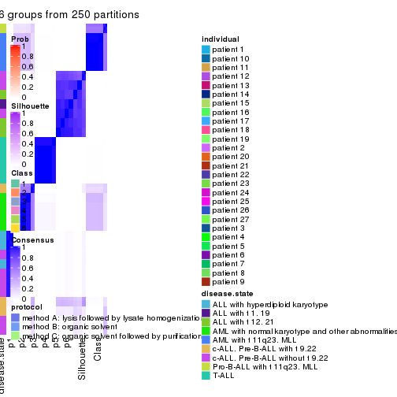
Heatmaps for the membership of samples in all partitions to see how consistent they are:
membership_heatmap(res, k = 2)
membership_heatmap(res, k = 3)
membership_heatmap(res, k = 4)
membership_heatmap(res, k = 5)
membership_heatmap(res, k = 6)

As soon as we have had the classes for columns, we can look for signatures which are significantly different between classes which can be candidate marks for certain classes. Following are the heatmaps for signatures.
Signature heatmaps where rows are scaled:
get_signatures(res, k = 2)
#> Error: The width or height of the raster image is zero, maybe you forget to turn off the
#> previous graphic device or it was corrupted. Run `dev.off()` to close it.

get_signatures(res, k = 3)
#> Error: The width or height of the raster image is zero, maybe you forget to turn off the
#> previous graphic device or it was corrupted. Run `dev.off()` to close it.

get_signatures(res, k = 4)
#> Error: The width or height of the raster image is zero, maybe you forget to turn off the
#> previous graphic device or it was corrupted. Run `dev.off()` to close it.

get_signatures(res, k = 5)
#> Error: The width or height of the raster image is zero, maybe you forget to turn off the
#> previous graphic device or it was corrupted. Run `dev.off()` to close it.

get_signatures(res, k = 6)
#> Error: The width or height of the raster image is zero, maybe you forget to turn off the
#> previous graphic device or it was corrupted. Run `dev.off()` to close it.

Signature heatmaps where rows are not scaled:
get_signatures(res, k = 2, scale_rows = FALSE)
#> Error: The width or height of the raster image is zero, maybe you forget to turn off the
#> previous graphic device or it was corrupted. Run `dev.off()` to close it.

get_signatures(res, k = 3, scale_rows = FALSE)
#> Error: The width or height of the raster image is zero, maybe you forget to turn off the
#> previous graphic device or it was corrupted. Run `dev.off()` to close it.

get_signatures(res, k = 4, scale_rows = FALSE)
#> Error: The width or height of the raster image is zero, maybe you forget to turn off the
#> previous graphic device or it was corrupted. Run `dev.off()` to close it.

get_signatures(res, k = 5, scale_rows = FALSE)
#> Error: The width or height of the raster image is zero, maybe you forget to turn off the
#> previous graphic device or it was corrupted. Run `dev.off()` to close it.

get_signatures(res, k = 6, scale_rows = FALSE)
#> Error: The width or height of the raster image is zero, maybe you forget to turn off the
#> previous graphic device or it was corrupted. Run `dev.off()` to close it.

Compare the overlap of signatures from different k:
compare_signatures(res)
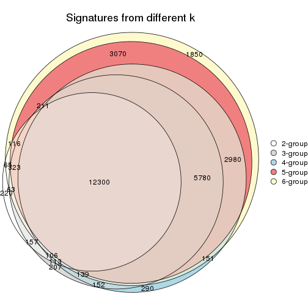
get_signature() returns a data frame invisibly. TO get the list of signatures, the function
call should be assigned to a variable explicitly. In following code, if plot argument is set
to FALSE, no heatmap is plotted while only the differential analysis is performed.
# code only for demonstration
tb = get_signature(res, k = ..., plot = FALSE)
An example of the output of tb is:
#> which_row fdr mean_1 mean_2 scaled_mean_1 scaled_mean_2 km
#> 1 38 0.042760348 8.373488 9.131774 -0.5533452 0.5164555 1
#> 2 40 0.018707592 7.106213 8.469186 -0.6173731 0.5762149 1
#> 3 55 0.019134737 10.221463 11.207825 -0.6159697 0.5749050 1
#> 4 59 0.006059896 5.921854 7.869574 -0.6899429 0.6439467 1
#> 5 60 0.018055526 8.928898 10.211722 -0.6204761 0.5791110 1
#> 6 98 0.009384629 15.714769 14.887706 0.6635654 -0.6193277 2
...
The columns in tb are:
which_row: row indices corresponding to the input matrix.fdr: FDR for the differential test. mean_x: The mean value in group x.scaled_mean_x: The mean value in group x after rows are scaled.km: Row groups if k-means clustering is applied to rows.UMAP plot which shows how samples are separated.
dimension_reduction(res, k = 2, method = "UMAP")

dimension_reduction(res, k = 3, method = "UMAP")
dimension_reduction(res, k = 4, method = "UMAP")
dimension_reduction(res, k = 5, method = "UMAP")
dimension_reduction(res, k = 6, method = "UMAP")
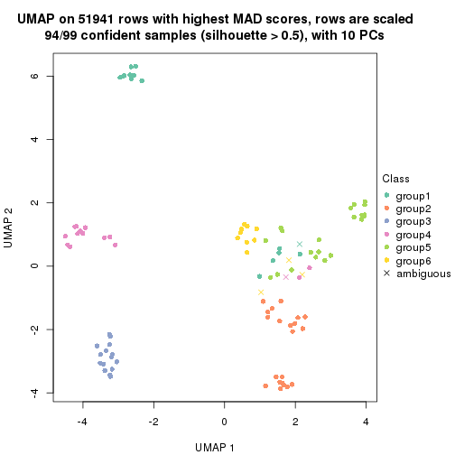
Following heatmap shows how subgroups are split when increasing k:
collect_classes(res)
Test correlation between subgroups and known annotations. If the known annotation is numeric, one-way ANOVA test is applied, and if the known annotation is discrete, chi-squared contingency table test is applied.
test_to_known_factors(res)
#> n protocol(p) individual(p) disease.state(p) k
#> MAD:skmeans 99 1 1.88e-10 3.01e-16 2
#> MAD:skmeans 99 1 6.75e-19 2.36e-31 3
#> MAD:skmeans 93 1 3.85e-26 1.16e-34 4
#> MAD:skmeans 93 1 3.99e-34 6.41e-37 5
#> MAD:skmeans 94 1 1.96e-41 5.59e-50 6
If matrix rows can be associated to genes, consider to use functional_enrichment(res,
...) to perform function enrichment for the signature genes. See this vignette for more detailed explanations.
The object with results only for a single top-value method and a single partition method can be extracted as:
res = res_list["MAD", "pam"]
# you can also extract it by
# res = res_list["MAD:pam"]
A summary of res and all the functions that can be applied to it:
res
#> A 'ConsensusPartition' object with k = 2, 3, 4, 5, 6.
#> On a matrix with 51941 rows and 99 columns.
#> Top rows (1000, 2000, 3000, 4000, 5000) are extracted by 'MAD' method.
#> Subgroups are detected by 'pam' method.
#> Performed in total 1250 partitions by row resampling.
#> Best k for subgroups seems to be 6.
#>
#> Following methods can be applied to this 'ConsensusPartition' object:
#> [1] "cola_report" "collect_classes" "collect_plots"
#> [4] "collect_stats" "colnames" "compare_signatures"
#> [7] "consensus_heatmap" "dimension_reduction" "functional_enrichment"
#> [10] "get_anno_col" "get_anno" "get_classes"
#> [13] "get_consensus" "get_matrix" "get_membership"
#> [16] "get_param" "get_signatures" "get_stats"
#> [19] "is_best_k" "is_stable_k" "membership_heatmap"
#> [22] "ncol" "nrow" "plot_ecdf"
#> [25] "rownames" "select_partition_number" "show"
#> [28] "suggest_best_k" "test_to_known_factors"
collect_plots() function collects all the plots made from res for all k (number of partitions)
into one single page to provide an easy and fast comparison between different k.
collect_plots(res)
The plots are:
k and the heatmap of
predicted classes for each k.k.k.k.All the plots in panels can be made by individual functions and they are plotted later in this section.
select_partition_number() produces several plots showing different
statistics for choosing “optimized” k. There are following statistics:
k;k, the area increased is defined as \(A_k - A_{k-1}\).The detailed explanations of these statistics can be found in the cola vignette.
Generally speaking, lower PAC score, higher mean silhouette score or higher
concordance corresponds to better partition. Rand index and Jaccard index
measure how similar the current partition is compared to partition with k-1.
If they are too similar, we won't accept k is better than k-1.
select_partition_number(res)
The numeric values for all these statistics can be obtained by get_stats().
get_stats(res)
#> k 1-PAC mean_silhouette concordance area_increased Rand Jaccard
#> 2 2 1.000 0.964 0.986 0.4967 0.504 0.504
#> 3 3 0.914 0.855 0.915 0.1673 0.923 0.848
#> 4 4 0.991 0.947 0.979 0.0777 0.945 0.872
#> 5 5 0.804 0.870 0.932 0.2448 0.826 0.547
#> 6 6 0.959 0.910 0.962 0.0686 0.915 0.637
suggest_best_k() suggests the best \(k\) based on these statistics. The rules are as follows:
suggest_best_k(res)
#> [1] 6
#> attr(,"optional")
#> [1] 2 3 4
There is also optional best \(k\) = 2 3 4 that is worth to check.
Following shows the table of the partitions (You need to click the show/hide
code output link to see it). The membership matrix (columns with name p*)
is inferred by
clue::cl_consensus()
function with the SE method. Basically the value in the membership matrix
represents the probability to belong to a certain group. The finall class
label for an item is determined with the group with highest probability it
belongs to.
In get_classes() function, the entropy is calculated from the membership
matrix and the silhouette score is calculated from the consensus matrix.
cbind(get_classes(res, k = 2), get_membership(res, k = 2))
#> class entropy silhouette p1 p2
#> GSM187698 1 0.993 0.160 0.548 0.452
#> GSM187701 2 0.000 0.986 0.000 1.000
#> GSM187704 1 0.000 0.985 1.000 0.000
#> GSM187707 2 0.000 0.986 0.000 1.000
#> GSM187710 2 0.000 0.986 0.000 1.000
#> GSM187713 2 0.000 0.986 0.000 1.000
#> GSM187716 2 0.000 0.986 0.000 1.000
#> GSM187719 1 0.000 0.985 1.000 0.000
#> GSM187722 1 0.402 0.904 0.920 0.080
#> GSM187725 1 0.000 0.985 1.000 0.000
#> GSM187728 2 0.000 0.986 0.000 1.000
#> GSM187731 2 0.000 0.986 0.000 1.000
#> GSM187734 2 0.000 0.986 0.000 1.000
#> GSM187737 2 0.000 0.986 0.000 1.000
#> GSM187740 2 0.000 0.986 0.000 1.000
#> GSM187743 1 0.000 0.985 1.000 0.000
#> GSM187746 1 0.000 0.985 1.000 0.000
#> GSM187749 1 0.000 0.985 1.000 0.000
#> GSM187752 2 0.000 0.986 0.000 1.000
#> GSM187755 2 0.000 0.986 0.000 1.000
#> GSM187758 1 0.000 0.985 1.000 0.000
#> GSM187761 2 0.000 0.986 0.000 1.000
#> GSM187764 2 0.000 0.986 0.000 1.000
#> GSM187767 2 0.000 0.986 0.000 1.000
#> GSM187770 1 0.000 0.985 1.000 0.000
#> GSM187771 1 0.000 0.985 1.000 0.000
#> GSM187772 1 0.000 0.985 1.000 0.000
#> GSM187780 1 0.000 0.985 1.000 0.000
#> GSM187781 1 0.000 0.985 1.000 0.000
#> GSM187782 1 0.000 0.985 1.000 0.000
#> GSM187788 2 0.000 0.986 0.000 1.000
#> GSM187789 2 0.000 0.986 0.000 1.000
#> GSM187790 2 0.000 0.986 0.000 1.000
#> GSM187699 2 0.955 0.390 0.376 0.624
#> GSM187702 2 0.000 0.986 0.000 1.000
#> GSM187705 1 0.000 0.985 1.000 0.000
#> GSM187708 2 0.000 0.986 0.000 1.000
#> GSM187711 2 0.000 0.986 0.000 1.000
#> GSM187714 2 0.000 0.986 0.000 1.000
#> GSM187717 2 0.000 0.986 0.000 1.000
#> GSM187720 1 0.000 0.985 1.000 0.000
#> GSM187723 1 0.443 0.891 0.908 0.092
#> GSM187726 1 0.000 0.985 1.000 0.000
#> GSM187729 2 0.000 0.986 0.000 1.000
#> GSM187732 2 0.000 0.986 0.000 1.000
#> GSM187735 2 0.000 0.986 0.000 1.000
#> GSM187738 2 0.000 0.986 0.000 1.000
#> GSM187741 2 0.000 0.986 0.000 1.000
#> GSM187744 1 0.000 0.985 1.000 0.000
#> GSM187747 1 0.000 0.985 1.000 0.000
#> GSM187750 1 0.000 0.985 1.000 0.000
#> GSM187753 2 0.000 0.986 0.000 1.000
#> GSM187756 2 0.000 0.986 0.000 1.000
#> GSM187759 1 0.000 0.985 1.000 0.000
#> GSM187762 2 0.000 0.986 0.000 1.000
#> GSM187765 2 0.000 0.986 0.000 1.000
#> GSM187768 2 0.000 0.986 0.000 1.000
#> GSM187773 1 0.000 0.985 1.000 0.000
#> GSM187774 1 0.000 0.985 1.000 0.000
#> GSM187775 1 0.000 0.985 1.000 0.000
#> GSM187776 1 0.000 0.985 1.000 0.000
#> GSM187783 1 0.000 0.985 1.000 0.000
#> GSM187784 1 0.000 0.985 1.000 0.000
#> GSM187791 2 0.000 0.986 0.000 1.000
#> GSM187792 2 0.000 0.986 0.000 1.000
#> GSM187793 2 0.000 0.986 0.000 1.000
#> GSM187700 2 0.946 0.420 0.364 0.636
#> GSM187703 2 0.000 0.986 0.000 1.000
#> GSM187706 1 0.000 0.985 1.000 0.000
#> GSM187709 2 0.000 0.986 0.000 1.000
#> GSM187712 2 0.000 0.986 0.000 1.000
#> GSM187715 2 0.000 0.986 0.000 1.000
#> GSM187718 2 0.000 0.986 0.000 1.000
#> GSM187721 1 0.000 0.985 1.000 0.000
#> GSM187724 1 0.000 0.985 1.000 0.000
#> GSM187727 1 0.000 0.985 1.000 0.000
#> GSM187730 2 0.000 0.986 0.000 1.000
#> GSM187733 2 0.000 0.986 0.000 1.000
#> GSM187736 2 0.000 0.986 0.000 1.000
#> GSM187739 2 0.000 0.986 0.000 1.000
#> GSM187742 2 0.000 0.986 0.000 1.000
#> GSM187745 1 0.000 0.985 1.000 0.000
#> GSM187748 1 0.000 0.985 1.000 0.000
#> GSM187751 1 0.000 0.985 1.000 0.000
#> GSM187754 2 0.000 0.986 0.000 1.000
#> GSM187757 2 0.000 0.986 0.000 1.000
#> GSM187760 1 0.000 0.985 1.000 0.000
#> GSM187763 2 0.000 0.986 0.000 1.000
#> GSM187766 2 0.000 0.986 0.000 1.000
#> GSM187769 2 0.000 0.986 0.000 1.000
#> GSM187777 1 0.000 0.985 1.000 0.000
#> GSM187778 1 0.000 0.985 1.000 0.000
#> GSM187779 1 0.000 0.985 1.000 0.000
#> GSM187785 1 0.000 0.985 1.000 0.000
#> GSM187786 1 0.000 0.985 1.000 0.000
#> GSM187787 1 0.000 0.985 1.000 0.000
#> GSM187794 2 0.000 0.986 0.000 1.000
#> GSM187795 2 0.000 0.986 0.000 1.000
#> GSM187796 2 0.000 0.986 0.000 1.000
cbind(get_classes(res, k = 3), get_membership(res, k = 3))
#> class entropy silhouette p1 p2 p3
#> GSM187698 3 0.960 -0.199 0.200 0.388 0.412
#> GSM187701 2 0.000 0.986 0.000 1.000 0.000
#> GSM187704 3 0.622 0.689 0.432 0.000 0.568
#> GSM187707 2 0.000 0.986 0.000 1.000 0.000
#> GSM187710 2 0.000 0.986 0.000 1.000 0.000
#> GSM187713 2 0.000 0.986 0.000 1.000 0.000
#> GSM187716 2 0.000 0.986 0.000 1.000 0.000
#> GSM187719 3 0.000 0.578 0.000 0.000 1.000
#> GSM187722 3 0.285 0.483 0.012 0.068 0.920
#> GSM187725 3 0.623 0.688 0.436 0.000 0.564
#> GSM187728 2 0.000 0.986 0.000 1.000 0.000
#> GSM187731 2 0.000 0.986 0.000 1.000 0.000
#> GSM187734 2 0.000 0.986 0.000 1.000 0.000
#> GSM187737 2 0.000 0.986 0.000 1.000 0.000
#> GSM187740 2 0.000 0.986 0.000 1.000 0.000
#> GSM187743 1 0.622 0.999 0.568 0.000 0.432
#> GSM187746 3 0.540 0.665 0.280 0.000 0.720
#> GSM187749 3 0.631 0.646 0.496 0.000 0.504
#> GSM187752 2 0.000 0.986 0.000 1.000 0.000
#> GSM187755 2 0.000 0.986 0.000 1.000 0.000
#> GSM187758 3 0.622 0.689 0.432 0.000 0.568
#> GSM187761 2 0.000 0.986 0.000 1.000 0.000
#> GSM187764 2 0.000 0.986 0.000 1.000 0.000
#> GSM187767 2 0.000 0.986 0.000 1.000 0.000
#> GSM187770 3 0.000 0.578 0.000 0.000 1.000
#> GSM187771 3 0.000 0.578 0.000 0.000 1.000
#> GSM187772 3 0.000 0.578 0.000 0.000 1.000
#> GSM187780 1 0.622 0.999 0.568 0.000 0.432
#> GSM187781 1 0.622 0.999 0.568 0.000 0.432
#> GSM187782 1 0.622 0.999 0.568 0.000 0.432
#> GSM187788 2 0.000 0.986 0.000 1.000 0.000
#> GSM187789 2 0.000 0.986 0.000 1.000 0.000
#> GSM187790 2 0.000 0.986 0.000 1.000 0.000
#> GSM187699 2 0.812 0.445 0.128 0.636 0.236
#> GSM187702 2 0.000 0.986 0.000 1.000 0.000
#> GSM187705 3 0.622 0.689 0.432 0.000 0.568
#> GSM187708 2 0.000 0.986 0.000 1.000 0.000
#> GSM187711 2 0.000 0.986 0.000 1.000 0.000
#> GSM187714 2 0.000 0.986 0.000 1.000 0.000
#> GSM187717 2 0.000 0.986 0.000 1.000 0.000
#> GSM187720 3 0.000 0.578 0.000 0.000 1.000
#> GSM187723 3 0.319 0.484 0.000 0.112 0.888
#> GSM187726 3 0.622 0.689 0.432 0.000 0.568
#> GSM187729 2 0.000 0.986 0.000 1.000 0.000
#> GSM187732 2 0.000 0.986 0.000 1.000 0.000
#> GSM187735 2 0.000 0.986 0.000 1.000 0.000
#> GSM187738 2 0.000 0.986 0.000 1.000 0.000
#> GSM187741 2 0.000 0.986 0.000 1.000 0.000
#> GSM187744 1 0.623 0.994 0.564 0.000 0.436
#> GSM187747 3 0.614 0.688 0.404 0.000 0.596
#> GSM187750 3 0.622 0.689 0.432 0.000 0.568
#> GSM187753 2 0.000 0.986 0.000 1.000 0.000
#> GSM187756 2 0.000 0.986 0.000 1.000 0.000
#> GSM187759 3 0.622 0.689 0.432 0.000 0.568
#> GSM187762 2 0.000 0.986 0.000 1.000 0.000
#> GSM187765 2 0.000 0.986 0.000 1.000 0.000
#> GSM187768 2 0.000 0.986 0.000 1.000 0.000
#> GSM187773 3 0.000 0.578 0.000 0.000 1.000
#> GSM187774 3 0.000 0.578 0.000 0.000 1.000
#> GSM187775 3 0.000 0.578 0.000 0.000 1.000
#> GSM187776 1 0.622 0.999 0.568 0.000 0.432
#> GSM187783 1 0.622 0.999 0.568 0.000 0.432
#> GSM187784 1 0.622 0.999 0.568 0.000 0.432
#> GSM187791 2 0.000 0.986 0.000 1.000 0.000
#> GSM187792 2 0.000 0.986 0.000 1.000 0.000
#> GSM187793 2 0.000 0.986 0.000 1.000 0.000
#> GSM187700 2 0.837 0.378 0.136 0.612 0.252
#> GSM187703 2 0.000 0.986 0.000 1.000 0.000
#> GSM187706 3 0.622 0.689 0.432 0.000 0.568
#> GSM187709 2 0.000 0.986 0.000 1.000 0.000
#> GSM187712 2 0.000 0.986 0.000 1.000 0.000
#> GSM187715 2 0.000 0.986 0.000 1.000 0.000
#> GSM187718 2 0.000 0.986 0.000 1.000 0.000
#> GSM187721 3 0.000 0.578 0.000 0.000 1.000
#> GSM187724 3 0.000 0.578 0.000 0.000 1.000
#> GSM187727 3 0.622 0.689 0.432 0.000 0.568
#> GSM187730 2 0.000 0.986 0.000 1.000 0.000
#> GSM187733 2 0.000 0.986 0.000 1.000 0.000
#> GSM187736 2 0.000 0.986 0.000 1.000 0.000
#> GSM187739 2 0.000 0.986 0.000 1.000 0.000
#> GSM187742 2 0.000 0.986 0.000 1.000 0.000
#> GSM187745 1 0.622 0.999 0.568 0.000 0.432
#> GSM187748 3 0.622 0.689 0.432 0.000 0.568
#> GSM187751 3 0.625 0.683 0.444 0.000 0.556
#> GSM187754 2 0.000 0.986 0.000 1.000 0.000
#> GSM187757 2 0.000 0.986 0.000 1.000 0.000
#> GSM187760 3 0.622 0.689 0.432 0.000 0.568
#> GSM187763 2 0.000 0.986 0.000 1.000 0.000
#> GSM187766 2 0.000 0.986 0.000 1.000 0.000
#> GSM187769 2 0.000 0.986 0.000 1.000 0.000
#> GSM187777 3 0.000 0.578 0.000 0.000 1.000
#> GSM187778 3 0.000 0.578 0.000 0.000 1.000
#> GSM187779 3 0.000 0.578 0.000 0.000 1.000
#> GSM187785 1 0.622 0.999 0.568 0.000 0.432
#> GSM187786 1 0.622 0.999 0.568 0.000 0.432
#> GSM187787 1 0.622 0.999 0.568 0.000 0.432
#> GSM187794 2 0.000 0.986 0.000 1.000 0.000
#> GSM187795 2 0.000 0.986 0.000 1.000 0.000
#> GSM187796 2 0.000 0.986 0.000 1.000 0.000
cbind(get_classes(res, k = 4), get_membership(res, k = 4))
#> class entropy silhouette p1 p2 p3 p4
#> GSM187698 1 0.7863 0.0945 0.380 0.344 0.000 0.276
#> GSM187701 2 0.0000 0.9860 0.000 1.000 0.000 0.000
#> GSM187704 3 0.0000 0.9660 0.000 0.000 1.000 0.000
#> GSM187707 2 0.0000 0.9860 0.000 1.000 0.000 0.000
#> GSM187710 2 0.0000 0.9860 0.000 1.000 0.000 0.000
#> GSM187713 2 0.0000 0.9860 0.000 1.000 0.000 0.000
#> GSM187716 2 0.0000 0.9860 0.000 1.000 0.000 0.000
#> GSM187719 4 0.0000 0.9762 0.000 0.000 0.000 1.000
#> GSM187722 4 0.2919 0.8745 0.060 0.044 0.000 0.896
#> GSM187725 3 0.0000 0.9660 0.000 0.000 1.000 0.000
#> GSM187728 2 0.0000 0.9860 0.000 1.000 0.000 0.000
#> GSM187731 2 0.0000 0.9860 0.000 1.000 0.000 0.000
#> GSM187734 2 0.0000 0.9860 0.000 1.000 0.000 0.000
#> GSM187737 2 0.0000 0.9860 0.000 1.000 0.000 0.000
#> GSM187740 2 0.0000 0.9860 0.000 1.000 0.000 0.000
#> GSM187743 1 0.0000 0.9403 1.000 0.000 0.000 0.000
#> GSM187746 3 0.4454 0.5724 0.000 0.000 0.692 0.308
#> GSM187749 3 0.0000 0.9660 0.000 0.000 1.000 0.000
#> GSM187752 2 0.0000 0.9860 0.000 1.000 0.000 0.000
#> GSM187755 2 0.0000 0.9860 0.000 1.000 0.000 0.000
#> GSM187758 3 0.0000 0.9660 0.000 0.000 1.000 0.000
#> GSM187761 2 0.0000 0.9860 0.000 1.000 0.000 0.000
#> GSM187764 2 0.0000 0.9860 0.000 1.000 0.000 0.000
#> GSM187767 2 0.0000 0.9860 0.000 1.000 0.000 0.000
#> GSM187770 4 0.0000 0.9762 0.000 0.000 0.000 1.000
#> GSM187771 4 0.0000 0.9762 0.000 0.000 0.000 1.000
#> GSM187772 4 0.0000 0.9762 0.000 0.000 0.000 1.000
#> GSM187780 1 0.0000 0.9403 1.000 0.000 0.000 0.000
#> GSM187781 1 0.0000 0.9403 1.000 0.000 0.000 0.000
#> GSM187782 1 0.0000 0.9403 1.000 0.000 0.000 0.000
#> GSM187788 2 0.0000 0.9860 0.000 1.000 0.000 0.000
#> GSM187789 2 0.0000 0.9860 0.000 1.000 0.000 0.000
#> GSM187790 2 0.0000 0.9860 0.000 1.000 0.000 0.000
#> GSM187699 2 0.6689 0.4350 0.196 0.620 0.000 0.184
#> GSM187702 2 0.0000 0.9860 0.000 1.000 0.000 0.000
#> GSM187705 3 0.0000 0.9660 0.000 0.000 1.000 0.000
#> GSM187708 2 0.0000 0.9860 0.000 1.000 0.000 0.000
#> GSM187711 2 0.0000 0.9860 0.000 1.000 0.000 0.000
#> GSM187714 2 0.0000 0.9860 0.000 1.000 0.000 0.000
#> GSM187717 2 0.0000 0.9860 0.000 1.000 0.000 0.000
#> GSM187720 4 0.0000 0.9762 0.000 0.000 0.000 1.000
#> GSM187723 4 0.2814 0.7723 0.000 0.132 0.000 0.868
#> GSM187726 3 0.0000 0.9660 0.000 0.000 1.000 0.000
#> GSM187729 2 0.0000 0.9860 0.000 1.000 0.000 0.000
#> GSM187732 2 0.0000 0.9860 0.000 1.000 0.000 0.000
#> GSM187735 2 0.0000 0.9860 0.000 1.000 0.000 0.000
#> GSM187738 2 0.0000 0.9860 0.000 1.000 0.000 0.000
#> GSM187741 2 0.0000 0.9860 0.000 1.000 0.000 0.000
#> GSM187744 1 0.0336 0.9335 0.992 0.000 0.000 0.008
#> GSM187747 3 0.3024 0.8249 0.000 0.000 0.852 0.148
#> GSM187750 3 0.0000 0.9660 0.000 0.000 1.000 0.000
#> GSM187753 2 0.0000 0.9860 0.000 1.000 0.000 0.000
#> GSM187756 2 0.0000 0.9860 0.000 1.000 0.000 0.000
#> GSM187759 3 0.0000 0.9660 0.000 0.000 1.000 0.000
#> GSM187762 2 0.0000 0.9860 0.000 1.000 0.000 0.000
#> GSM187765 2 0.0000 0.9860 0.000 1.000 0.000 0.000
#> GSM187768 2 0.0000 0.9860 0.000 1.000 0.000 0.000
#> GSM187773 4 0.0000 0.9762 0.000 0.000 0.000 1.000
#> GSM187774 4 0.0000 0.9762 0.000 0.000 0.000 1.000
#> GSM187775 4 0.0000 0.9762 0.000 0.000 0.000 1.000
#> GSM187776 1 0.0000 0.9403 1.000 0.000 0.000 0.000
#> GSM187783 1 0.0000 0.9403 1.000 0.000 0.000 0.000
#> GSM187784 1 0.0000 0.9403 1.000 0.000 0.000 0.000
#> GSM187791 2 0.0000 0.9860 0.000 1.000 0.000 0.000
#> GSM187792 2 0.0000 0.9860 0.000 1.000 0.000 0.000
#> GSM187793 2 0.0000 0.9860 0.000 1.000 0.000 0.000
#> GSM187700 2 0.6675 0.4190 0.228 0.616 0.000 0.156
#> GSM187703 2 0.0000 0.9860 0.000 1.000 0.000 0.000
#> GSM187706 3 0.0000 0.9660 0.000 0.000 1.000 0.000
#> GSM187709 2 0.0000 0.9860 0.000 1.000 0.000 0.000
#> GSM187712 2 0.0000 0.9860 0.000 1.000 0.000 0.000
#> GSM187715 2 0.0000 0.9860 0.000 1.000 0.000 0.000
#> GSM187718 2 0.0000 0.9860 0.000 1.000 0.000 0.000
#> GSM187721 4 0.0000 0.9762 0.000 0.000 0.000 1.000
#> GSM187724 4 0.0000 0.9762 0.000 0.000 0.000 1.000
#> GSM187727 3 0.0000 0.9660 0.000 0.000 1.000 0.000
#> GSM187730 2 0.0000 0.9860 0.000 1.000 0.000 0.000
#> GSM187733 2 0.0000 0.9860 0.000 1.000 0.000 0.000
#> GSM187736 2 0.0000 0.9860 0.000 1.000 0.000 0.000
#> GSM187739 2 0.0000 0.9860 0.000 1.000 0.000 0.000
#> GSM187742 2 0.0000 0.9860 0.000 1.000 0.000 0.000
#> GSM187745 1 0.0000 0.9403 1.000 0.000 0.000 0.000
#> GSM187748 3 0.0000 0.9660 0.000 0.000 1.000 0.000
#> GSM187751 3 0.0000 0.9660 0.000 0.000 1.000 0.000
#> GSM187754 2 0.0000 0.9860 0.000 1.000 0.000 0.000
#> GSM187757 2 0.0000 0.9860 0.000 1.000 0.000 0.000
#> GSM187760 3 0.0000 0.9660 0.000 0.000 1.000 0.000
#> GSM187763 2 0.0000 0.9860 0.000 1.000 0.000 0.000
#> GSM187766 2 0.0000 0.9860 0.000 1.000 0.000 0.000
#> GSM187769 2 0.0000 0.9860 0.000 1.000 0.000 0.000
#> GSM187777 4 0.0000 0.9762 0.000 0.000 0.000 1.000
#> GSM187778 4 0.0000 0.9762 0.000 0.000 0.000 1.000
#> GSM187779 4 0.0000 0.9762 0.000 0.000 0.000 1.000
#> GSM187785 1 0.0000 0.9403 1.000 0.000 0.000 0.000
#> GSM187786 1 0.0000 0.9403 1.000 0.000 0.000 0.000
#> GSM187787 1 0.0000 0.9403 1.000 0.000 0.000 0.000
#> GSM187794 2 0.0000 0.9860 0.000 1.000 0.000 0.000
#> GSM187795 2 0.0000 0.9860 0.000 1.000 0.000 0.000
#> GSM187796 2 0.0000 0.9860 0.000 1.000 0.000 0.000
cbind(get_classes(res, k = 5), get_membership(res, k = 5))
#> class entropy silhouette p1 p2 p3 p4 p5
#> GSM187698 1 0.7667 0.0986 0.436 0.068 0.000 0.272 0.224
#> GSM187701 5 0.0880 0.9151 0.000 0.032 0.000 0.000 0.968
#> GSM187704 3 0.0000 0.9648 0.000 0.000 1.000 0.000 0.000
#> GSM187707 2 0.1671 0.9029 0.000 0.924 0.000 0.000 0.076
#> GSM187710 2 0.2280 0.9038 0.000 0.880 0.000 0.000 0.120
#> GSM187713 5 0.0000 0.9321 0.000 0.000 0.000 0.000 1.000
#> GSM187716 2 0.2179 0.8297 0.000 0.888 0.000 0.000 0.112
#> GSM187719 4 0.0000 0.8928 0.000 0.000 0.000 1.000 0.000
#> GSM187722 4 0.3673 0.8006 0.060 0.052 0.000 0.848 0.040
#> GSM187725 3 0.0000 0.9648 0.000 0.000 1.000 0.000 0.000
#> GSM187728 2 0.2230 0.9054 0.000 0.884 0.000 0.000 0.116
#> GSM187731 5 0.0000 0.9321 0.000 0.000 0.000 0.000 1.000
#> GSM187734 5 0.0000 0.9321 0.000 0.000 0.000 0.000 1.000
#> GSM187737 5 0.1478 0.8852 0.000 0.064 0.000 0.000 0.936
#> GSM187740 2 0.0510 0.8813 0.000 0.984 0.000 0.000 0.016
#> GSM187743 1 0.0000 0.9526 1.000 0.000 0.000 0.000 0.000
#> GSM187746 3 0.3876 0.5581 0.000 0.000 0.684 0.316 0.000
#> GSM187749 3 0.0000 0.9648 0.000 0.000 1.000 0.000 0.000
#> GSM187752 5 0.0000 0.9321 0.000 0.000 0.000 0.000 1.000
#> GSM187755 5 0.2424 0.8512 0.000 0.132 0.000 0.000 0.868
#> GSM187758 3 0.0000 0.9648 0.000 0.000 1.000 0.000 0.000
#> GSM187761 2 0.2074 0.8453 0.000 0.896 0.000 0.000 0.104
#> GSM187764 5 0.2424 0.8512 0.000 0.132 0.000 0.000 0.868
#> GSM187767 2 0.2424 0.8990 0.000 0.868 0.000 0.000 0.132
#> GSM187770 4 0.0000 0.8928 0.000 0.000 0.000 1.000 0.000
#> GSM187771 4 0.0000 0.8928 0.000 0.000 0.000 1.000 0.000
#> GSM187772 4 0.0000 0.8928 0.000 0.000 0.000 1.000 0.000
#> GSM187780 1 0.0000 0.9526 1.000 0.000 0.000 0.000 0.000
#> GSM187781 1 0.0000 0.9526 1.000 0.000 0.000 0.000 0.000
#> GSM187782 1 0.0000 0.9526 1.000 0.000 0.000 0.000 0.000
#> GSM187788 5 0.0000 0.9321 0.000 0.000 0.000 0.000 1.000
#> GSM187789 5 0.0000 0.9321 0.000 0.000 0.000 0.000 1.000
#> GSM187790 5 0.0000 0.9321 0.000 0.000 0.000 0.000 1.000
#> GSM187699 4 0.7949 0.2772 0.164 0.120 0.000 0.408 0.308
#> GSM187702 5 0.4138 0.3894 0.000 0.384 0.000 0.000 0.616
#> GSM187705 3 0.0000 0.9648 0.000 0.000 1.000 0.000 0.000
#> GSM187708 2 0.2230 0.9054 0.000 0.884 0.000 0.000 0.116
#> GSM187711 2 0.2377 0.9011 0.000 0.872 0.000 0.000 0.128
#> GSM187714 5 0.0000 0.9321 0.000 0.000 0.000 0.000 1.000
#> GSM187717 2 0.2230 0.8264 0.000 0.884 0.000 0.000 0.116
#> GSM187720 4 0.0000 0.8928 0.000 0.000 0.000 1.000 0.000
#> GSM187723 4 0.4458 0.7031 0.000 0.120 0.000 0.760 0.120
#> GSM187726 3 0.0000 0.9648 0.000 0.000 1.000 0.000 0.000
#> GSM187729 2 0.2230 0.9054 0.000 0.884 0.000 0.000 0.116
#> GSM187732 5 0.0000 0.9321 0.000 0.000 0.000 0.000 1.000
#> GSM187735 5 0.0000 0.9321 0.000 0.000 0.000 0.000 1.000
#> GSM187738 2 0.2648 0.8496 0.000 0.848 0.000 0.000 0.152
#> GSM187741 2 0.0162 0.8739 0.000 0.996 0.000 0.000 0.004
#> GSM187744 1 0.0290 0.9456 0.992 0.000 0.000 0.008 0.000
#> GSM187747 3 0.2690 0.8114 0.000 0.000 0.844 0.156 0.000
#> GSM187750 3 0.0000 0.9648 0.000 0.000 1.000 0.000 0.000
#> GSM187753 5 0.0000 0.9321 0.000 0.000 0.000 0.000 1.000
#> GSM187756 5 0.2424 0.8512 0.000 0.132 0.000 0.000 0.868
#> GSM187759 3 0.0000 0.9648 0.000 0.000 1.000 0.000 0.000
#> GSM187762 2 0.0000 0.8706 0.000 1.000 0.000 0.000 0.000
#> GSM187765 5 0.2516 0.8470 0.000 0.140 0.000 0.000 0.860
#> GSM187768 2 0.2424 0.8990 0.000 0.868 0.000 0.000 0.132
#> GSM187773 4 0.0000 0.8928 0.000 0.000 0.000 1.000 0.000
#> GSM187774 4 0.0000 0.8928 0.000 0.000 0.000 1.000 0.000
#> GSM187775 4 0.0000 0.8928 0.000 0.000 0.000 1.000 0.000
#> GSM187776 1 0.0000 0.9526 1.000 0.000 0.000 0.000 0.000
#> GSM187783 1 0.0000 0.9526 1.000 0.000 0.000 0.000 0.000
#> GSM187784 1 0.0000 0.9526 1.000 0.000 0.000 0.000 0.000
#> GSM187791 5 0.0000 0.9321 0.000 0.000 0.000 0.000 1.000
#> GSM187792 5 0.0000 0.9321 0.000 0.000 0.000 0.000 1.000
#> GSM187793 5 0.0000 0.9321 0.000 0.000 0.000 0.000 1.000
#> GSM187700 4 0.8043 0.2704 0.200 0.120 0.000 0.412 0.268
#> GSM187703 5 0.3366 0.6994 0.000 0.232 0.000 0.000 0.768
#> GSM187706 3 0.0000 0.9648 0.000 0.000 1.000 0.000 0.000
#> GSM187709 2 0.1410 0.8990 0.000 0.940 0.000 0.000 0.060
#> GSM187712 2 0.2424 0.8990 0.000 0.868 0.000 0.000 0.132
#> GSM187715 5 0.0000 0.9321 0.000 0.000 0.000 0.000 1.000
#> GSM187718 2 0.3424 0.6550 0.000 0.760 0.000 0.000 0.240
#> GSM187721 4 0.0000 0.8928 0.000 0.000 0.000 1.000 0.000
#> GSM187724 4 0.2149 0.8438 0.000 0.048 0.000 0.916 0.036
#> GSM187727 3 0.0000 0.9648 0.000 0.000 1.000 0.000 0.000
#> GSM187730 2 0.2230 0.9054 0.000 0.884 0.000 0.000 0.116
#> GSM187733 5 0.0000 0.9321 0.000 0.000 0.000 0.000 1.000
#> GSM187736 5 0.0000 0.9321 0.000 0.000 0.000 0.000 1.000
#> GSM187739 5 0.4150 0.2714 0.000 0.388 0.000 0.000 0.612
#> GSM187742 2 0.0290 0.8767 0.000 0.992 0.000 0.000 0.008
#> GSM187745 1 0.0000 0.9526 1.000 0.000 0.000 0.000 0.000
#> GSM187748 3 0.0000 0.9648 0.000 0.000 1.000 0.000 0.000
#> GSM187751 3 0.0000 0.9648 0.000 0.000 1.000 0.000 0.000
#> GSM187754 5 0.0000 0.9321 0.000 0.000 0.000 0.000 1.000
#> GSM187757 5 0.2424 0.8512 0.000 0.132 0.000 0.000 0.868
#> GSM187760 3 0.0000 0.9648 0.000 0.000 1.000 0.000 0.000
#> GSM187763 2 0.0000 0.8706 0.000 1.000 0.000 0.000 0.000
#> GSM187766 5 0.2424 0.8512 0.000 0.132 0.000 0.000 0.868
#> GSM187769 2 0.2471 0.8973 0.000 0.864 0.000 0.000 0.136
#> GSM187777 4 0.0000 0.8928 0.000 0.000 0.000 1.000 0.000
#> GSM187778 4 0.0000 0.8928 0.000 0.000 0.000 1.000 0.000
#> GSM187779 4 0.0000 0.8928 0.000 0.000 0.000 1.000 0.000
#> GSM187785 1 0.0000 0.9526 1.000 0.000 0.000 0.000 0.000
#> GSM187786 1 0.0000 0.9526 1.000 0.000 0.000 0.000 0.000
#> GSM187787 1 0.0000 0.9526 1.000 0.000 0.000 0.000 0.000
#> GSM187794 5 0.0000 0.9321 0.000 0.000 0.000 0.000 1.000
#> GSM187795 5 0.0000 0.9321 0.000 0.000 0.000 0.000 1.000
#> GSM187796 5 0.0000 0.9321 0.000 0.000 0.000 0.000 1.000
cbind(get_classes(res, k = 6), get_membership(res, k = 6))
#> class entropy silhouette p1 p2 p3 p4 p5 p6
#> GSM187698 6 0.2875 0.838 0.036 0.000 0.000 0.064 0.028 0.872
#> GSM187701 5 0.2135 0.847 0.000 0.000 0.000 0.000 0.872 0.128
#> GSM187704 3 0.0000 0.965 0.000 0.000 1.000 0.000 0.000 0.000
#> GSM187707 2 0.0000 0.949 0.000 1.000 0.000 0.000 0.000 0.000
#> GSM187710 2 0.0000 0.949 0.000 1.000 0.000 0.000 0.000 0.000
#> GSM187713 5 0.0363 0.951 0.000 0.000 0.000 0.000 0.988 0.012
#> GSM187716 6 0.0000 0.925 0.000 0.000 0.000 0.000 0.000 1.000
#> GSM187719 4 0.0000 0.967 0.000 0.000 0.000 1.000 0.000 0.000
#> GSM187722 6 0.4004 0.360 0.000 0.000 0.000 0.368 0.012 0.620
#> GSM187725 3 0.0000 0.965 0.000 0.000 1.000 0.000 0.000 0.000
#> GSM187728 2 0.0000 0.949 0.000 1.000 0.000 0.000 0.000 0.000
#> GSM187731 5 0.0000 0.959 0.000 0.000 0.000 0.000 1.000 0.000
#> GSM187734 5 0.0000 0.959 0.000 0.000 0.000 0.000 1.000 0.000
#> GSM187737 5 0.2019 0.881 0.000 0.012 0.000 0.000 0.900 0.088
#> GSM187740 2 0.0000 0.949 0.000 1.000 0.000 0.000 0.000 0.000
#> GSM187743 1 0.0000 0.999 1.000 0.000 0.000 0.000 0.000 0.000
#> GSM187746 3 0.3464 0.553 0.000 0.000 0.688 0.312 0.000 0.000
#> GSM187749 3 0.0000 0.965 0.000 0.000 1.000 0.000 0.000 0.000
#> GSM187752 5 0.0000 0.959 0.000 0.000 0.000 0.000 1.000 0.000
#> GSM187755 6 0.0000 0.925 0.000 0.000 0.000 0.000 0.000 1.000
#> GSM187758 3 0.0000 0.965 0.000 0.000 1.000 0.000 0.000 0.000
#> GSM187761 2 0.1501 0.881 0.000 0.924 0.000 0.000 0.000 0.076
#> GSM187764 6 0.0000 0.925 0.000 0.000 0.000 0.000 0.000 1.000
#> GSM187767 2 0.0146 0.945 0.000 0.996 0.000 0.000 0.004 0.000
#> GSM187770 4 0.0000 0.967 0.000 0.000 0.000 1.000 0.000 0.000
#> GSM187771 4 0.0000 0.967 0.000 0.000 0.000 1.000 0.000 0.000
#> GSM187772 4 0.0000 0.967 0.000 0.000 0.000 1.000 0.000 0.000
#> GSM187780 1 0.0000 0.999 1.000 0.000 0.000 0.000 0.000 0.000
#> GSM187781 1 0.0000 0.999 1.000 0.000 0.000 0.000 0.000 0.000
#> GSM187782 1 0.0000 0.999 1.000 0.000 0.000 0.000 0.000 0.000
#> GSM187788 5 0.0000 0.959 0.000 0.000 0.000 0.000 1.000 0.000
#> GSM187789 5 0.0000 0.959 0.000 0.000 0.000 0.000 1.000 0.000
#> GSM187790 5 0.0000 0.959 0.000 0.000 0.000 0.000 1.000 0.000
#> GSM187699 6 0.0000 0.925 0.000 0.000 0.000 0.000 0.000 1.000
#> GSM187702 6 0.5366 0.349 0.000 0.132 0.000 0.000 0.320 0.548
#> GSM187705 3 0.0000 0.965 0.000 0.000 1.000 0.000 0.000 0.000
#> GSM187708 2 0.0000 0.949 0.000 1.000 0.000 0.000 0.000 0.000
#> GSM187711 2 0.0000 0.949 0.000 1.000 0.000 0.000 0.000 0.000
#> GSM187714 5 0.2135 0.845 0.000 0.000 0.000 0.000 0.872 0.128
#> GSM187717 6 0.0000 0.925 0.000 0.000 0.000 0.000 0.000 1.000
#> GSM187720 4 0.0000 0.967 0.000 0.000 0.000 1.000 0.000 0.000
#> GSM187723 6 0.1367 0.889 0.000 0.000 0.000 0.044 0.012 0.944
#> GSM187726 3 0.0000 0.965 0.000 0.000 1.000 0.000 0.000 0.000
#> GSM187729 2 0.0000 0.949 0.000 1.000 0.000 0.000 0.000 0.000
#> GSM187732 5 0.1204 0.917 0.000 0.000 0.000 0.000 0.944 0.056
#> GSM187735 5 0.0000 0.959 0.000 0.000 0.000 0.000 1.000 0.000
#> GSM187738 2 0.5411 0.353 0.000 0.556 0.000 0.000 0.148 0.296
#> GSM187741 2 0.0000 0.949 0.000 1.000 0.000 0.000 0.000 0.000
#> GSM187744 1 0.0260 0.991 0.992 0.000 0.000 0.008 0.000 0.000
#> GSM187747 3 0.2454 0.806 0.000 0.000 0.840 0.160 0.000 0.000
#> GSM187750 3 0.0000 0.965 0.000 0.000 1.000 0.000 0.000 0.000
#> GSM187753 5 0.0000 0.959 0.000 0.000 0.000 0.000 1.000 0.000
#> GSM187756 6 0.0000 0.925 0.000 0.000 0.000 0.000 0.000 1.000
#> GSM187759 3 0.0000 0.965 0.000 0.000 1.000 0.000 0.000 0.000
#> GSM187762 2 0.0000 0.949 0.000 1.000 0.000 0.000 0.000 0.000
#> GSM187765 6 0.0000 0.925 0.000 0.000 0.000 0.000 0.000 1.000
#> GSM187768 2 0.0000 0.949 0.000 1.000 0.000 0.000 0.000 0.000
#> GSM187773 4 0.0000 0.967 0.000 0.000 0.000 1.000 0.000 0.000
#> GSM187774 4 0.0000 0.967 0.000 0.000 0.000 1.000 0.000 0.000
#> GSM187775 4 0.0000 0.967 0.000 0.000 0.000 1.000 0.000 0.000
#> GSM187776 1 0.0000 0.999 1.000 0.000 0.000 0.000 0.000 0.000
#> GSM187783 1 0.0000 0.999 1.000 0.000 0.000 0.000 0.000 0.000
#> GSM187784 1 0.0000 0.999 1.000 0.000 0.000 0.000 0.000 0.000
#> GSM187791 5 0.0000 0.959 0.000 0.000 0.000 0.000 1.000 0.000
#> GSM187792 5 0.0000 0.959 0.000 0.000 0.000 0.000 1.000 0.000
#> GSM187793 5 0.0000 0.959 0.000 0.000 0.000 0.000 1.000 0.000
#> GSM187700 6 0.0000 0.925 0.000 0.000 0.000 0.000 0.000 1.000
#> GSM187703 5 0.5666 0.151 0.000 0.164 0.000 0.000 0.484 0.352
#> GSM187706 3 0.0000 0.965 0.000 0.000 1.000 0.000 0.000 0.000
#> GSM187709 2 0.0000 0.949 0.000 1.000 0.000 0.000 0.000 0.000
#> GSM187712 2 0.0000 0.949 0.000 1.000 0.000 0.000 0.000 0.000
#> GSM187715 5 0.0000 0.959 0.000 0.000 0.000 0.000 1.000 0.000
#> GSM187718 6 0.0000 0.925 0.000 0.000 0.000 0.000 0.000 1.000
#> GSM187721 4 0.0000 0.967 0.000 0.000 0.000 1.000 0.000 0.000
#> GSM187724 4 0.3992 0.373 0.000 0.000 0.000 0.624 0.012 0.364
#> GSM187727 3 0.0000 0.965 0.000 0.000 1.000 0.000 0.000 0.000
#> GSM187730 2 0.0000 0.949 0.000 1.000 0.000 0.000 0.000 0.000
#> GSM187733 5 0.0000 0.959 0.000 0.000 0.000 0.000 1.000 0.000
#> GSM187736 5 0.0000 0.959 0.000 0.000 0.000 0.000 1.000 0.000
#> GSM187739 2 0.5257 0.367 0.000 0.556 0.000 0.000 0.328 0.116
#> GSM187742 2 0.0000 0.949 0.000 1.000 0.000 0.000 0.000 0.000
#> GSM187745 1 0.0000 0.999 1.000 0.000 0.000 0.000 0.000 0.000
#> GSM187748 3 0.0000 0.965 0.000 0.000 1.000 0.000 0.000 0.000
#> GSM187751 3 0.0000 0.965 0.000 0.000 1.000 0.000 0.000 0.000
#> GSM187754 5 0.0000 0.959 0.000 0.000 0.000 0.000 1.000 0.000
#> GSM187757 6 0.0000 0.925 0.000 0.000 0.000 0.000 0.000 1.000
#> GSM187760 3 0.0000 0.965 0.000 0.000 1.000 0.000 0.000 0.000
#> GSM187763 2 0.0000 0.949 0.000 1.000 0.000 0.000 0.000 0.000
#> GSM187766 6 0.0000 0.925 0.000 0.000 0.000 0.000 0.000 1.000
#> GSM187769 2 0.0000 0.949 0.000 1.000 0.000 0.000 0.000 0.000
#> GSM187777 4 0.0000 0.967 0.000 0.000 0.000 1.000 0.000 0.000
#> GSM187778 4 0.0000 0.967 0.000 0.000 0.000 1.000 0.000 0.000
#> GSM187779 4 0.0000 0.967 0.000 0.000 0.000 1.000 0.000 0.000
#> GSM187785 1 0.0000 0.999 1.000 0.000 0.000 0.000 0.000 0.000
#> GSM187786 1 0.0000 0.999 1.000 0.000 0.000 0.000 0.000 0.000
#> GSM187787 1 0.0000 0.999 1.000 0.000 0.000 0.000 0.000 0.000
#> GSM187794 5 0.0000 0.959 0.000 0.000 0.000 0.000 1.000 0.000
#> GSM187795 5 0.0000 0.959 0.000 0.000 0.000 0.000 1.000 0.000
#> GSM187796 5 0.0000 0.959 0.000 0.000 0.000 0.000 1.000 0.000
Heatmaps for the consensus matrix. It visualizes the probability of two samples to be in a same group.
consensus_heatmap(res, k = 2)
consensus_heatmap(res, k = 3)
consensus_heatmap(res, k = 4)
consensus_heatmap(res, k = 5)
consensus_heatmap(res, k = 6)

Heatmaps for the membership of samples in all partitions to see how consistent they are:
membership_heatmap(res, k = 2)
membership_heatmap(res, k = 3)

membership_heatmap(res, k = 4)
membership_heatmap(res, k = 5)
membership_heatmap(res, k = 6)
As soon as we have had the classes for columns, we can look for signatures which are significantly different between classes which can be candidate marks for certain classes. Following are the heatmaps for signatures.
Signature heatmaps where rows are scaled:
get_signatures(res, k = 2)
#> Error: The width or height of the raster image is zero, maybe you forget to turn off the
#> previous graphic device or it was corrupted. Run `dev.off()` to close it.

get_signatures(res, k = 3)
#> Error: The width or height of the raster image is zero, maybe you forget to turn off the
#> previous graphic device or it was corrupted. Run `dev.off()` to close it.

get_signatures(res, k = 4)
#> Error: The width or height of the raster image is zero, maybe you forget to turn off the
#> previous graphic device or it was corrupted. Run `dev.off()` to close it.

get_signatures(res, k = 5)
#> Error: The width or height of the raster image is zero, maybe you forget to turn off the
#> previous graphic device or it was corrupted. Run `dev.off()` to close it.

get_signatures(res, k = 6)
#> Error: The width or height of the raster image is zero, maybe you forget to turn off the
#> previous graphic device or it was corrupted. Run `dev.off()` to close it.

Signature heatmaps where rows are not scaled:
get_signatures(res, k = 2, scale_rows = FALSE)
#> Error: The width or height of the raster image is zero, maybe you forget to turn off the
#> previous graphic device or it was corrupted. Run `dev.off()` to close it.

get_signatures(res, k = 3, scale_rows = FALSE)
#> Error: The width or height of the raster image is zero, maybe you forget to turn off the
#> previous graphic device or it was corrupted. Run `dev.off()` to close it.

get_signatures(res, k = 4, scale_rows = FALSE)
#> Error: The width or height of the raster image is zero, maybe you forget to turn off the
#> previous graphic device or it was corrupted. Run `dev.off()` to close it.

get_signatures(res, k = 5, scale_rows = FALSE)
#> Error: The width or height of the raster image is zero, maybe you forget to turn off the
#> previous graphic device or it was corrupted. Run `dev.off()` to close it.

get_signatures(res, k = 6, scale_rows = FALSE)
#> Error: The width or height of the raster image is zero, maybe you forget to turn off the
#> previous graphic device or it was corrupted. Run `dev.off()` to close it.

Compare the overlap of signatures from different k:
compare_signatures(res)
get_signature() returns a data frame invisibly. TO get the list of signatures, the function
call should be assigned to a variable explicitly. In following code, if plot argument is set
to FALSE, no heatmap is plotted while only the differential analysis is performed.
# code only for demonstration
tb = get_signature(res, k = ..., plot = FALSE)
An example of the output of tb is:
#> which_row fdr mean_1 mean_2 scaled_mean_1 scaled_mean_2 km
#> 1 38 0.042760348 8.373488 9.131774 -0.5533452 0.5164555 1
#> 2 40 0.018707592 7.106213 8.469186 -0.6173731 0.5762149 1
#> 3 55 0.019134737 10.221463 11.207825 -0.6159697 0.5749050 1
#> 4 59 0.006059896 5.921854 7.869574 -0.6899429 0.6439467 1
#> 5 60 0.018055526 8.928898 10.211722 -0.6204761 0.5791110 1
#> 6 98 0.009384629 15.714769 14.887706 0.6635654 -0.6193277 2
...
The columns in tb are:
which_row: row indices corresponding to the input matrix.fdr: FDR for the differential test. mean_x: The mean value in group x.scaled_mean_x: The mean value in group x after rows are scaled.km: Row groups if k-means clustering is applied to rows.UMAP plot which shows how samples are separated.
dimension_reduction(res, k = 2, method = "UMAP")
dimension_reduction(res, k = 3, method = "UMAP")
dimension_reduction(res, k = 4, method = "UMAP")
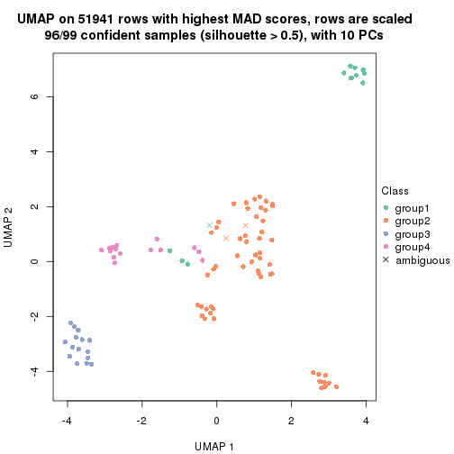
dimension_reduction(res, k = 5, method = "UMAP")
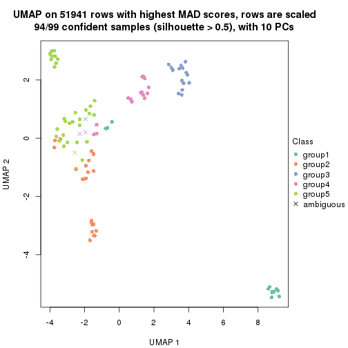
dimension_reduction(res, k = 6, method = "UMAP")
Following heatmap shows how subgroups are split when increasing k:
collect_classes(res)
Test correlation between subgroups and known annotations. If the known annotation is numeric, one-way ANOVA test is applied, and if the known annotation is discrete, chi-squared contingency table test is applied.
test_to_known_factors(res)
#> n protocol(p) individual(p) disease.state(p) k
#> MAD:pam 96 1 2.93e-10 3.38e-16 2
#> MAD:pam 94 1 7.32e-18 1.19e-31 3
#> MAD:pam 96 1 1.03e-26 1.79e-45 4
#> MAD:pam 94 1 5.34e-33 4.73e-50 5
#> MAD:pam 93 1 3.26e-39 6.17e-56 6
If matrix rows can be associated to genes, consider to use functional_enrichment(res,
...) to perform function enrichment for the signature genes. See this vignette for more detailed explanations.
The object with results only for a single top-value method and a single partition method can be extracted as:
res = res_list["MAD", "mclust"]
# you can also extract it by
# res = res_list["MAD:mclust"]
A summary of res and all the functions that can be applied to it:
res
#> A 'ConsensusPartition' object with k = 2, 3, 4, 5, 6.
#> On a matrix with 51941 rows and 99 columns.
#> Top rows (1000, 2000, 3000, 4000, 5000) are extracted by 'MAD' method.
#> Subgroups are detected by 'mclust' method.
#> Performed in total 1250 partitions by row resampling.
#> Best k for subgroups seems to be 2.
#>
#> Following methods can be applied to this 'ConsensusPartition' object:
#> [1] "cola_report" "collect_classes" "collect_plots"
#> [4] "collect_stats" "colnames" "compare_signatures"
#> [7] "consensus_heatmap" "dimension_reduction" "functional_enrichment"
#> [10] "get_anno_col" "get_anno" "get_classes"
#> [13] "get_consensus" "get_matrix" "get_membership"
#> [16] "get_param" "get_signatures" "get_stats"
#> [19] "is_best_k" "is_stable_k" "membership_heatmap"
#> [22] "ncol" "nrow" "plot_ecdf"
#> [25] "rownames" "select_partition_number" "show"
#> [28] "suggest_best_k" "test_to_known_factors"
collect_plots() function collects all the plots made from res for all k (number of partitions)
into one single page to provide an easy and fast comparison between different k.
collect_plots(res)
The plots are:
k and the heatmap of
predicted classes for each k.k.k.k.All the plots in panels can be made by individual functions and they are plotted later in this section.
select_partition_number() produces several plots showing different
statistics for choosing “optimized” k. There are following statistics:
k;k, the area increased is defined as \(A_k - A_{k-1}\).The detailed explanations of these statistics can be found in the cola vignette.
Generally speaking, lower PAC score, higher mean silhouette score or higher
concordance corresponds to better partition. Rand index and Jaccard index
measure how similar the current partition is compared to partition with k-1.
If they are too similar, we won't accept k is better than k-1.
select_partition_number(res)
The numeric values for all these statistics can be obtained by get_stats().
get_stats(res)
#> k 1-PAC mean_silhouette concordance area_increased Rand Jaccard
#> 2 2 0.562 0.919 0.931 0.4363 0.518 0.518
#> 3 3 0.517 0.515 0.621 0.4233 0.579 0.368
#> 4 4 0.615 0.893 0.864 0.0911 0.787 0.511
#> 5 5 0.746 0.747 0.894 0.1123 0.867 0.578
#> 6 6 0.832 0.867 0.922 0.0810 0.851 0.476
suggest_best_k() suggests the best \(k\) based on these statistics. The rules are as follows:
suggest_best_k(res)
#> [1] 2
Following shows the table of the partitions (You need to click the show/hide
code output link to see it). The membership matrix (columns with name p*)
is inferred by
clue::cl_consensus()
function with the SE method. Basically the value in the membership matrix
represents the probability to belong to a certain group. The finall class
label for an item is determined with the group with highest probability it
belongs to.
In get_classes() function, the entropy is calculated from the membership
matrix and the silhouette score is calculated from the consensus matrix.
cbind(get_classes(res, k = 2), get_membership(res, k = 2))
#> class entropy silhouette p1 p2
#> GSM187698 2 0.0376 0.994 0.004 0.996
#> GSM187701 2 0.0000 0.997 0.000 1.000
#> GSM187704 1 0.5842 0.841 0.860 0.140
#> GSM187707 2 0.0376 0.996 0.004 0.996
#> GSM187710 2 0.0376 0.996 0.004 0.996
#> GSM187713 2 0.0000 0.997 0.000 1.000
#> GSM187716 2 0.0376 0.996 0.004 0.996
#> GSM187719 1 0.8861 0.707 0.696 0.304
#> GSM187722 2 0.0376 0.994 0.004 0.996
#> GSM187725 1 0.5842 0.841 0.860 0.140
#> GSM187728 2 0.0376 0.996 0.004 0.996
#> GSM187731 2 0.0000 0.997 0.000 1.000
#> GSM187734 2 0.0000 0.997 0.000 1.000
#> GSM187737 2 0.0376 0.996 0.004 0.996
#> GSM187740 2 0.0376 0.996 0.004 0.996
#> GSM187743 1 0.4022 0.839 0.920 0.080
#> GSM187746 1 0.6048 0.839 0.852 0.148
#> GSM187749 1 0.5842 0.841 0.860 0.140
#> GSM187752 2 0.0000 0.997 0.000 1.000
#> GSM187755 2 0.0000 0.997 0.000 1.000
#> GSM187758 1 0.5842 0.841 0.860 0.140
#> GSM187761 2 0.0376 0.996 0.004 0.996
#> GSM187764 2 0.0000 0.997 0.000 1.000
#> GSM187767 2 0.0376 0.996 0.004 0.996
#> GSM187770 1 0.8861 0.707 0.696 0.304
#> GSM187771 1 0.8861 0.707 0.696 0.304
#> GSM187772 1 0.8861 0.707 0.696 0.304
#> GSM187780 1 0.4022 0.839 0.920 0.080
#> GSM187781 1 0.4022 0.839 0.920 0.080
#> GSM187782 1 0.4022 0.839 0.920 0.080
#> GSM187788 2 0.0000 0.997 0.000 1.000
#> GSM187789 2 0.0000 0.997 0.000 1.000
#> GSM187790 2 0.0000 0.997 0.000 1.000
#> GSM187699 2 0.0376 0.994 0.004 0.996
#> GSM187702 2 0.0000 0.997 0.000 1.000
#> GSM187705 1 0.5842 0.841 0.860 0.140
#> GSM187708 2 0.0376 0.996 0.004 0.996
#> GSM187711 2 0.0376 0.996 0.004 0.996
#> GSM187714 2 0.0000 0.997 0.000 1.000
#> GSM187717 2 0.0376 0.996 0.004 0.996
#> GSM187720 1 0.8861 0.707 0.696 0.304
#> GSM187723 2 0.0672 0.989 0.008 0.992
#> GSM187726 1 0.5842 0.841 0.860 0.140
#> GSM187729 2 0.0376 0.996 0.004 0.996
#> GSM187732 2 0.0000 0.997 0.000 1.000
#> GSM187735 2 0.0000 0.997 0.000 1.000
#> GSM187738 2 0.0376 0.996 0.004 0.996
#> GSM187741 2 0.0376 0.996 0.004 0.996
#> GSM187744 1 0.4022 0.839 0.920 0.080
#> GSM187747 1 0.6048 0.839 0.852 0.148
#> GSM187750 1 0.5842 0.841 0.860 0.140
#> GSM187753 2 0.0000 0.997 0.000 1.000
#> GSM187756 2 0.0000 0.997 0.000 1.000
#> GSM187759 1 0.5842 0.841 0.860 0.140
#> GSM187762 2 0.0376 0.996 0.004 0.996
#> GSM187765 2 0.0000 0.997 0.000 1.000
#> GSM187768 2 0.0376 0.996 0.004 0.996
#> GSM187773 1 0.8861 0.707 0.696 0.304
#> GSM187774 1 0.8861 0.707 0.696 0.304
#> GSM187775 1 0.8861 0.707 0.696 0.304
#> GSM187776 1 0.4022 0.839 0.920 0.080
#> GSM187783 1 0.4022 0.839 0.920 0.080
#> GSM187784 1 0.4022 0.839 0.920 0.080
#> GSM187791 2 0.0000 0.997 0.000 1.000
#> GSM187792 2 0.0000 0.997 0.000 1.000
#> GSM187793 2 0.0000 0.997 0.000 1.000
#> GSM187700 2 0.0376 0.994 0.004 0.996
#> GSM187703 2 0.0000 0.997 0.000 1.000
#> GSM187706 1 0.5842 0.841 0.860 0.140
#> GSM187709 2 0.0376 0.996 0.004 0.996
#> GSM187712 2 0.0376 0.996 0.004 0.996
#> GSM187715 2 0.0000 0.997 0.000 1.000
#> GSM187718 2 0.0376 0.996 0.004 0.996
#> GSM187721 1 0.8861 0.707 0.696 0.304
#> GSM187724 2 0.0376 0.994 0.004 0.996
#> GSM187727 1 0.5842 0.841 0.860 0.140
#> GSM187730 2 0.0376 0.996 0.004 0.996
#> GSM187733 2 0.0000 0.997 0.000 1.000
#> GSM187736 2 0.0000 0.997 0.000 1.000
#> GSM187739 2 0.0376 0.996 0.004 0.996
#> GSM187742 2 0.0376 0.996 0.004 0.996
#> GSM187745 1 0.4022 0.839 0.920 0.080
#> GSM187748 1 0.6048 0.839 0.852 0.148
#> GSM187751 1 0.5842 0.841 0.860 0.140
#> GSM187754 2 0.0000 0.997 0.000 1.000
#> GSM187757 2 0.0000 0.997 0.000 1.000
#> GSM187760 1 0.5842 0.841 0.860 0.140
#> GSM187763 2 0.0376 0.996 0.004 0.996
#> GSM187766 2 0.0000 0.997 0.000 1.000
#> GSM187769 2 0.0376 0.996 0.004 0.996
#> GSM187777 1 0.8861 0.707 0.696 0.304
#> GSM187778 1 0.8861 0.707 0.696 0.304
#> GSM187779 1 0.8861 0.707 0.696 0.304
#> GSM187785 1 0.4022 0.839 0.920 0.080
#> GSM187786 1 0.4022 0.839 0.920 0.080
#> GSM187787 1 0.4022 0.839 0.920 0.080
#> GSM187794 2 0.0000 0.997 0.000 1.000
#> GSM187795 2 0.0000 0.997 0.000 1.000
#> GSM187796 2 0.0000 0.997 0.000 1.000
cbind(get_classes(res, k = 3), get_membership(res, k = 3))
#> class entropy silhouette p1 p2 p3
#> GSM187698 2 0.2165 0.722 0.064 0.936 0.000
#> GSM187701 2 0.5948 0.248 0.360 0.640 0.000
#> GSM187704 3 0.0000 0.984 0.000 0.000 1.000
#> GSM187707 1 0.9323 0.541 0.500 0.312 0.188
#> GSM187710 1 0.9323 0.541 0.500 0.312 0.188
#> GSM187713 2 0.0000 0.737 0.000 1.000 0.000
#> GSM187716 1 0.9323 0.541 0.500 0.312 0.188
#> GSM187719 2 0.8521 0.361 0.440 0.468 0.092
#> GSM187722 2 0.1860 0.725 0.052 0.948 0.000
#> GSM187725 3 0.0000 0.984 0.000 0.000 1.000
#> GSM187728 1 0.9323 0.541 0.500 0.312 0.188
#> GSM187731 2 0.0000 0.737 0.000 1.000 0.000
#> GSM187734 2 0.0237 0.735 0.004 0.996 0.000
#> GSM187737 2 0.6520 -0.153 0.488 0.508 0.004
#> GSM187740 1 0.9305 0.540 0.504 0.308 0.188
#> GSM187743 1 0.7187 -0.275 0.496 0.024 0.480
#> GSM187746 3 0.2187 0.931 0.024 0.028 0.948
#> GSM187749 3 0.0000 0.984 0.000 0.000 1.000
#> GSM187752 2 0.0000 0.737 0.000 1.000 0.000
#> GSM187755 2 0.3918 0.658 0.140 0.856 0.004
#> GSM187758 3 0.0000 0.984 0.000 0.000 1.000
#> GSM187761 1 0.9323 0.541 0.500 0.312 0.188
#> GSM187764 2 0.3573 0.682 0.120 0.876 0.004
#> GSM187767 1 0.9215 0.514 0.500 0.332 0.168
#> GSM187770 2 0.8743 0.349 0.440 0.452 0.108
#> GSM187771 2 0.8743 0.349 0.440 0.452 0.108
#> GSM187772 2 0.8743 0.349 0.440 0.452 0.108
#> GSM187780 1 0.6302 -0.279 0.520 0.000 0.480
#> GSM187781 1 0.6302 -0.279 0.520 0.000 0.480
#> GSM187782 1 0.6302 -0.279 0.520 0.000 0.480
#> GSM187788 2 0.0000 0.737 0.000 1.000 0.000
#> GSM187789 2 0.0000 0.737 0.000 1.000 0.000
#> GSM187790 2 0.0000 0.737 0.000 1.000 0.000
#> GSM187699 2 0.1753 0.724 0.048 0.952 0.000
#> GSM187702 2 0.5948 0.248 0.360 0.640 0.000
#> GSM187705 3 0.0000 0.984 0.000 0.000 1.000
#> GSM187708 1 0.9323 0.541 0.500 0.312 0.188
#> GSM187711 1 0.9323 0.541 0.500 0.312 0.188
#> GSM187714 2 0.0000 0.737 0.000 1.000 0.000
#> GSM187717 1 0.9323 0.541 0.500 0.312 0.188
#> GSM187720 2 0.8579 0.358 0.440 0.464 0.096
#> GSM187723 2 0.1643 0.726 0.044 0.956 0.000
#> GSM187726 3 0.0000 0.984 0.000 0.000 1.000
#> GSM187729 1 0.9323 0.541 0.500 0.312 0.188
#> GSM187732 2 0.0000 0.737 0.000 1.000 0.000
#> GSM187735 2 0.0000 0.737 0.000 1.000 0.000
#> GSM187738 2 0.6682 -0.164 0.488 0.504 0.008
#> GSM187741 1 0.9305 0.540 0.504 0.308 0.188
#> GSM187744 1 0.7187 -0.275 0.496 0.024 0.480
#> GSM187747 3 0.2187 0.931 0.024 0.028 0.948
#> GSM187750 3 0.0000 0.984 0.000 0.000 1.000
#> GSM187753 2 0.0000 0.737 0.000 1.000 0.000
#> GSM187756 2 0.2860 0.710 0.084 0.912 0.004
#> GSM187759 3 0.0000 0.984 0.000 0.000 1.000
#> GSM187762 1 0.9323 0.541 0.500 0.312 0.188
#> GSM187765 2 0.3193 0.695 0.100 0.896 0.004
#> GSM187768 1 0.9215 0.514 0.500 0.332 0.168
#> GSM187773 2 0.8743 0.349 0.440 0.452 0.108
#> GSM187774 2 0.8743 0.349 0.440 0.452 0.108
#> GSM187775 2 0.8743 0.349 0.440 0.452 0.108
#> GSM187776 1 0.6302 -0.279 0.520 0.000 0.480
#> GSM187783 1 0.6302 -0.279 0.520 0.000 0.480
#> GSM187784 1 0.6302 -0.279 0.520 0.000 0.480
#> GSM187791 2 0.0000 0.737 0.000 1.000 0.000
#> GSM187792 2 0.0000 0.737 0.000 1.000 0.000
#> GSM187793 2 0.0000 0.737 0.000 1.000 0.000
#> GSM187700 2 0.1860 0.724 0.052 0.948 0.000
#> GSM187703 2 0.5948 0.248 0.360 0.640 0.000
#> GSM187706 3 0.0000 0.984 0.000 0.000 1.000
#> GSM187709 1 0.9323 0.541 0.500 0.312 0.188
#> GSM187712 1 0.9323 0.541 0.500 0.312 0.188
#> GSM187715 2 0.0000 0.737 0.000 1.000 0.000
#> GSM187718 1 0.9323 0.541 0.500 0.312 0.188
#> GSM187721 2 0.8521 0.361 0.440 0.468 0.092
#> GSM187724 2 0.1643 0.726 0.044 0.956 0.000
#> GSM187727 3 0.0000 0.984 0.000 0.000 1.000
#> GSM187730 1 0.9323 0.541 0.500 0.312 0.188
#> GSM187733 2 0.0000 0.737 0.000 1.000 0.000
#> GSM187736 2 0.0000 0.737 0.000 1.000 0.000
#> GSM187739 2 0.6680 -0.153 0.484 0.508 0.008
#> GSM187742 1 0.9305 0.540 0.504 0.308 0.188
#> GSM187745 1 0.7187 -0.275 0.496 0.024 0.480
#> GSM187748 3 0.2187 0.931 0.024 0.028 0.948
#> GSM187751 3 0.0000 0.984 0.000 0.000 1.000
#> GSM187754 2 0.0000 0.737 0.000 1.000 0.000
#> GSM187757 2 0.3425 0.689 0.112 0.884 0.004
#> GSM187760 3 0.0000 0.984 0.000 0.000 1.000
#> GSM187763 1 0.9323 0.541 0.500 0.312 0.188
#> GSM187766 2 0.2945 0.705 0.088 0.908 0.004
#> GSM187769 1 0.9215 0.514 0.500 0.332 0.168
#> GSM187777 2 0.8743 0.349 0.440 0.452 0.108
#> GSM187778 2 0.8743 0.349 0.440 0.452 0.108
#> GSM187779 2 0.8743 0.349 0.440 0.452 0.108
#> GSM187785 1 0.6302 -0.279 0.520 0.000 0.480
#> GSM187786 1 0.6302 -0.279 0.520 0.000 0.480
#> GSM187787 1 0.6302 -0.279 0.520 0.000 0.480
#> GSM187794 2 0.0000 0.737 0.000 1.000 0.000
#> GSM187795 2 0.0000 0.737 0.000 1.000 0.000
#> GSM187796 2 0.0000 0.737 0.000 1.000 0.000
cbind(get_classes(res, k = 4), get_membership(res, k = 4))
#> class entropy silhouette p1 p2 p3 p4
#> GSM187698 2 0.2281 0.887 0.000 0.904 0.000 0.096
#> GSM187701 2 0.1792 0.907 0.000 0.932 0.000 0.068
#> GSM187704 3 0.0000 0.932 0.000 0.000 1.000 0.000
#> GSM187707 4 0.3942 0.997 0.000 0.236 0.000 0.764
#> GSM187710 4 0.3942 0.997 0.000 0.236 0.000 0.764
#> GSM187713 2 0.0188 0.932 0.000 0.996 0.000 0.004
#> GSM187716 4 0.3942 0.997 0.000 0.236 0.000 0.764
#> GSM187719 1 0.6957 0.736 0.632 0.152 0.016 0.200
#> GSM187722 2 0.2281 0.887 0.000 0.904 0.000 0.096
#> GSM187725 3 0.0000 0.932 0.000 0.000 1.000 0.000
#> GSM187728 4 0.3942 0.997 0.000 0.236 0.000 0.764
#> GSM187731 2 0.0188 0.932 0.000 0.996 0.000 0.004
#> GSM187734 2 0.0336 0.931 0.000 0.992 0.000 0.008
#> GSM187737 4 0.4072 0.978 0.000 0.252 0.000 0.748
#> GSM187740 4 0.3942 0.997 0.000 0.236 0.000 0.764
#> GSM187743 1 0.4050 0.735 0.808 0.168 0.000 0.024
#> GSM187746 3 0.4517 0.703 0.008 0.172 0.792 0.028
#> GSM187749 3 0.0000 0.932 0.000 0.000 1.000 0.000
#> GSM187752 2 0.0188 0.932 0.000 0.996 0.000 0.004
#> GSM187755 2 0.2281 0.885 0.000 0.904 0.000 0.096
#> GSM187758 3 0.0000 0.932 0.000 0.000 1.000 0.000
#> GSM187761 4 0.3942 0.997 0.000 0.236 0.000 0.764
#> GSM187764 2 0.3074 0.818 0.000 0.848 0.000 0.152
#> GSM187767 4 0.3942 0.997 0.000 0.236 0.000 0.764
#> GSM187770 1 0.6013 0.806 0.632 0.024 0.024 0.320
#> GSM187771 1 0.6013 0.806 0.632 0.024 0.024 0.320
#> GSM187772 1 0.6013 0.806 0.632 0.024 0.024 0.320
#> GSM187780 1 0.0000 0.783 1.000 0.000 0.000 0.000
#> GSM187781 1 0.0000 0.783 1.000 0.000 0.000 0.000
#> GSM187782 1 0.0000 0.783 1.000 0.000 0.000 0.000
#> GSM187788 2 0.0188 0.932 0.000 0.996 0.000 0.004
#> GSM187789 2 0.0188 0.932 0.000 0.996 0.000 0.004
#> GSM187790 2 0.0188 0.932 0.000 0.996 0.000 0.004
#> GSM187699 2 0.2281 0.887 0.000 0.904 0.000 0.096
#> GSM187702 2 0.1792 0.907 0.000 0.932 0.000 0.068
#> GSM187705 3 0.0000 0.932 0.000 0.000 1.000 0.000
#> GSM187708 4 0.3942 0.997 0.000 0.236 0.000 0.764
#> GSM187711 4 0.3942 0.997 0.000 0.236 0.000 0.764
#> GSM187714 2 0.0188 0.932 0.000 0.996 0.000 0.004
#> GSM187717 4 0.3942 0.997 0.000 0.236 0.000 0.764
#> GSM187720 1 0.6938 0.745 0.632 0.144 0.016 0.208
#> GSM187723 2 0.2281 0.887 0.000 0.904 0.000 0.096
#> GSM187726 3 0.0000 0.932 0.000 0.000 1.000 0.000
#> GSM187729 4 0.3942 0.997 0.000 0.236 0.000 0.764
#> GSM187732 2 0.0188 0.932 0.000 0.996 0.000 0.004
#> GSM187735 2 0.0188 0.932 0.000 0.996 0.000 0.004
#> GSM187738 4 0.4008 0.988 0.000 0.244 0.000 0.756
#> GSM187741 4 0.3942 0.997 0.000 0.236 0.000 0.764
#> GSM187744 1 0.4050 0.735 0.808 0.168 0.000 0.024
#> GSM187747 3 0.4517 0.703 0.008 0.172 0.792 0.028
#> GSM187750 3 0.0000 0.932 0.000 0.000 1.000 0.000
#> GSM187753 2 0.0188 0.932 0.000 0.996 0.000 0.004
#> GSM187756 2 0.2760 0.851 0.000 0.872 0.000 0.128
#> GSM187759 3 0.0000 0.932 0.000 0.000 1.000 0.000
#> GSM187762 4 0.3942 0.997 0.000 0.236 0.000 0.764
#> GSM187765 2 0.4072 0.613 0.000 0.748 0.000 0.252
#> GSM187768 4 0.3942 0.997 0.000 0.236 0.000 0.764
#> GSM187773 1 0.6013 0.806 0.632 0.024 0.024 0.320
#> GSM187774 1 0.6013 0.806 0.632 0.024 0.024 0.320
#> GSM187775 1 0.6013 0.806 0.632 0.024 0.024 0.320
#> GSM187776 1 0.0000 0.783 1.000 0.000 0.000 0.000
#> GSM187783 1 0.0000 0.783 1.000 0.000 0.000 0.000
#> GSM187784 1 0.0000 0.783 1.000 0.000 0.000 0.000
#> GSM187791 2 0.0188 0.932 0.000 0.996 0.000 0.004
#> GSM187792 2 0.0188 0.932 0.000 0.996 0.000 0.004
#> GSM187793 2 0.0188 0.932 0.000 0.996 0.000 0.004
#> GSM187700 2 0.2281 0.887 0.000 0.904 0.000 0.096
#> GSM187703 2 0.1792 0.907 0.000 0.932 0.000 0.068
#> GSM187706 3 0.0000 0.932 0.000 0.000 1.000 0.000
#> GSM187709 4 0.3942 0.997 0.000 0.236 0.000 0.764
#> GSM187712 4 0.3942 0.997 0.000 0.236 0.000 0.764
#> GSM187715 2 0.0188 0.932 0.000 0.996 0.000 0.004
#> GSM187718 4 0.3942 0.997 0.000 0.236 0.000 0.764
#> GSM187721 1 0.6938 0.745 0.632 0.144 0.016 0.208
#> GSM187724 2 0.2281 0.887 0.000 0.904 0.000 0.096
#> GSM187727 3 0.0000 0.932 0.000 0.000 1.000 0.000
#> GSM187730 4 0.3942 0.997 0.000 0.236 0.000 0.764
#> GSM187733 2 0.0188 0.932 0.000 0.996 0.000 0.004
#> GSM187736 2 0.0188 0.932 0.000 0.996 0.000 0.004
#> GSM187739 4 0.4072 0.978 0.000 0.252 0.000 0.748
#> GSM187742 4 0.3942 0.997 0.000 0.236 0.000 0.764
#> GSM187745 1 0.4050 0.735 0.808 0.168 0.000 0.024
#> GSM187748 3 0.4517 0.703 0.008 0.172 0.792 0.028
#> GSM187751 3 0.0000 0.932 0.000 0.000 1.000 0.000
#> GSM187754 2 0.0188 0.932 0.000 0.996 0.000 0.004
#> GSM187757 2 0.2760 0.851 0.000 0.872 0.000 0.128
#> GSM187760 3 0.0000 0.932 0.000 0.000 1.000 0.000
#> GSM187763 4 0.3942 0.997 0.000 0.236 0.000 0.764
#> GSM187766 2 0.3123 0.812 0.000 0.844 0.000 0.156
#> GSM187769 4 0.3942 0.997 0.000 0.236 0.000 0.764
#> GSM187777 1 0.6013 0.806 0.632 0.024 0.024 0.320
#> GSM187778 1 0.6013 0.806 0.632 0.024 0.024 0.320
#> GSM187779 1 0.6013 0.806 0.632 0.024 0.024 0.320
#> GSM187785 1 0.0000 0.783 1.000 0.000 0.000 0.000
#> GSM187786 1 0.0000 0.783 1.000 0.000 0.000 0.000
#> GSM187787 1 0.0000 0.783 1.000 0.000 0.000 0.000
#> GSM187794 2 0.0188 0.932 0.000 0.996 0.000 0.004
#> GSM187795 2 0.0188 0.932 0.000 0.996 0.000 0.004
#> GSM187796 2 0.0188 0.932 0.000 0.996 0.000 0.004
cbind(get_classes(res, k = 5), get_membership(res, k = 5))
#> class entropy silhouette p1 p2 p3 p4 p5
#> GSM187698 2 0.6778 0.1505 0.000 0.392 0.000 0.296 0.312
#> GSM187701 5 0.4768 0.3198 0.000 0.384 0.000 0.024 0.592
#> GSM187704 3 0.0000 0.9068 0.000 0.000 1.000 0.000 0.000
#> GSM187707 2 0.0000 0.8131 0.000 1.000 0.000 0.000 0.000
#> GSM187710 2 0.0000 0.8131 0.000 1.000 0.000 0.000 0.000
#> GSM187713 5 0.1124 0.8533 0.000 0.036 0.000 0.004 0.960
#> GSM187716 2 0.0162 0.8122 0.000 0.996 0.000 0.004 0.000
#> GSM187719 4 0.3236 0.7786 0.000 0.152 0.000 0.828 0.020
#> GSM187722 5 0.6312 0.0436 0.000 0.392 0.000 0.156 0.452
#> GSM187725 3 0.0000 0.9068 0.000 0.000 1.000 0.000 0.000
#> GSM187728 2 0.0000 0.8131 0.000 1.000 0.000 0.000 0.000
#> GSM187731 5 0.2280 0.7944 0.000 0.120 0.000 0.000 0.880
#> GSM187734 5 0.1043 0.8532 0.000 0.040 0.000 0.000 0.960
#> GSM187737 2 0.1310 0.7970 0.000 0.956 0.000 0.020 0.024
#> GSM187740 2 0.0000 0.8131 0.000 1.000 0.000 0.000 0.000
#> GSM187743 1 0.3912 0.6588 0.752 0.228 0.000 0.020 0.000
#> GSM187746 3 0.4181 0.5812 0.000 0.268 0.712 0.020 0.000
#> GSM187749 3 0.0000 0.9068 0.000 0.000 1.000 0.000 0.000
#> GSM187752 5 0.0000 0.8553 0.000 0.000 0.000 0.000 1.000
#> GSM187755 5 0.5678 0.1806 0.000 0.392 0.000 0.084 0.524
#> GSM187758 3 0.0000 0.9068 0.000 0.000 1.000 0.000 0.000
#> GSM187761 2 0.0000 0.8131 0.000 1.000 0.000 0.000 0.000
#> GSM187764 2 0.5717 0.3615 0.000 0.572 0.000 0.104 0.324
#> GSM187767 2 0.0290 0.8111 0.000 0.992 0.000 0.000 0.008
#> GSM187770 4 0.0000 0.9305 0.000 0.000 0.000 1.000 0.000
#> GSM187771 4 0.0000 0.9305 0.000 0.000 0.000 1.000 0.000
#> GSM187772 4 0.0000 0.9305 0.000 0.000 0.000 1.000 0.000
#> GSM187780 1 0.0000 0.8957 1.000 0.000 0.000 0.000 0.000
#> GSM187781 1 0.0000 0.8957 1.000 0.000 0.000 0.000 0.000
#> GSM187782 1 0.0000 0.8957 1.000 0.000 0.000 0.000 0.000
#> GSM187788 5 0.0000 0.8553 0.000 0.000 0.000 0.000 1.000
#> GSM187789 5 0.0000 0.8553 0.000 0.000 0.000 0.000 1.000
#> GSM187790 5 0.0000 0.8553 0.000 0.000 0.000 0.000 1.000
#> GSM187699 2 0.6779 0.1557 0.000 0.392 0.000 0.300 0.308
#> GSM187702 5 0.4757 0.3288 0.000 0.380 0.000 0.024 0.596
#> GSM187705 3 0.0000 0.9068 0.000 0.000 1.000 0.000 0.000
#> GSM187708 2 0.0000 0.8131 0.000 1.000 0.000 0.000 0.000
#> GSM187711 2 0.0000 0.8131 0.000 1.000 0.000 0.000 0.000
#> GSM187714 5 0.2249 0.8160 0.000 0.096 0.000 0.008 0.896
#> GSM187717 2 0.0162 0.8122 0.000 0.996 0.000 0.004 0.000
#> GSM187720 4 0.3039 0.7836 0.000 0.152 0.000 0.836 0.012
#> GSM187723 2 0.6767 0.1866 0.000 0.392 0.000 0.328 0.280
#> GSM187726 3 0.0000 0.9068 0.000 0.000 1.000 0.000 0.000
#> GSM187729 2 0.0000 0.8131 0.000 1.000 0.000 0.000 0.000
#> GSM187732 5 0.2230 0.7988 0.000 0.116 0.000 0.000 0.884
#> GSM187735 5 0.0794 0.8553 0.000 0.028 0.000 0.000 0.972
#> GSM187738 2 0.1012 0.8025 0.000 0.968 0.000 0.012 0.020
#> GSM187741 2 0.0000 0.8131 0.000 1.000 0.000 0.000 0.000
#> GSM187744 1 0.3912 0.6588 0.752 0.228 0.000 0.020 0.000
#> GSM187747 3 0.4181 0.5812 0.000 0.268 0.712 0.020 0.000
#> GSM187750 3 0.0000 0.9068 0.000 0.000 1.000 0.000 0.000
#> GSM187753 5 0.0000 0.8553 0.000 0.000 0.000 0.000 1.000
#> GSM187756 2 0.5962 0.0786 0.000 0.468 0.000 0.108 0.424
#> GSM187759 3 0.0000 0.9068 0.000 0.000 1.000 0.000 0.000
#> GSM187762 2 0.0000 0.8131 0.000 1.000 0.000 0.000 0.000
#> GSM187765 2 0.5796 0.3749 0.000 0.572 0.000 0.116 0.312
#> GSM187768 2 0.0290 0.8111 0.000 0.992 0.000 0.000 0.008
#> GSM187773 4 0.0000 0.9305 0.000 0.000 0.000 1.000 0.000
#> GSM187774 4 0.0000 0.9305 0.000 0.000 0.000 1.000 0.000
#> GSM187775 4 0.0000 0.9305 0.000 0.000 0.000 1.000 0.000
#> GSM187776 1 0.0000 0.8957 1.000 0.000 0.000 0.000 0.000
#> GSM187783 1 0.0000 0.8957 1.000 0.000 0.000 0.000 0.000
#> GSM187784 1 0.0000 0.8957 1.000 0.000 0.000 0.000 0.000
#> GSM187791 5 0.0000 0.8553 0.000 0.000 0.000 0.000 1.000
#> GSM187792 5 0.0000 0.8553 0.000 0.000 0.000 0.000 1.000
#> GSM187793 5 0.0000 0.8553 0.000 0.000 0.000 0.000 1.000
#> GSM187700 2 0.6779 0.1557 0.000 0.392 0.000 0.300 0.308
#> GSM187703 5 0.4757 0.3288 0.000 0.380 0.000 0.024 0.596
#> GSM187706 3 0.0000 0.9068 0.000 0.000 1.000 0.000 0.000
#> GSM187709 2 0.0000 0.8131 0.000 1.000 0.000 0.000 0.000
#> GSM187712 2 0.0000 0.8131 0.000 1.000 0.000 0.000 0.000
#> GSM187715 5 0.1697 0.8425 0.000 0.060 0.000 0.008 0.932
#> GSM187718 2 0.0162 0.8122 0.000 0.996 0.000 0.004 0.000
#> GSM187721 4 0.3039 0.7836 0.000 0.152 0.000 0.836 0.012
#> GSM187724 2 0.6771 0.1826 0.000 0.392 0.000 0.324 0.284
#> GSM187727 3 0.0000 0.9068 0.000 0.000 1.000 0.000 0.000
#> GSM187730 2 0.0000 0.8131 0.000 1.000 0.000 0.000 0.000
#> GSM187733 5 0.1671 0.8336 0.000 0.076 0.000 0.000 0.924
#> GSM187736 5 0.0794 0.8553 0.000 0.028 0.000 0.000 0.972
#> GSM187739 2 0.1117 0.8007 0.000 0.964 0.000 0.016 0.020
#> GSM187742 2 0.0000 0.8131 0.000 1.000 0.000 0.000 0.000
#> GSM187745 1 0.3912 0.6588 0.752 0.228 0.000 0.020 0.000
#> GSM187748 3 0.4181 0.5812 0.000 0.268 0.712 0.020 0.000
#> GSM187751 3 0.0000 0.9068 0.000 0.000 1.000 0.000 0.000
#> GSM187754 5 0.0000 0.8553 0.000 0.000 0.000 0.000 1.000
#> GSM187757 2 0.5962 0.0786 0.000 0.468 0.000 0.108 0.424
#> GSM187760 3 0.0000 0.9068 0.000 0.000 1.000 0.000 0.000
#> GSM187763 2 0.0000 0.8131 0.000 1.000 0.000 0.000 0.000
#> GSM187766 2 0.5771 0.3707 0.000 0.572 0.000 0.112 0.316
#> GSM187769 2 0.0290 0.8111 0.000 0.992 0.000 0.000 0.008
#> GSM187777 4 0.0000 0.9305 0.000 0.000 0.000 1.000 0.000
#> GSM187778 4 0.0000 0.9305 0.000 0.000 0.000 1.000 0.000
#> GSM187779 4 0.0000 0.9305 0.000 0.000 0.000 1.000 0.000
#> GSM187785 1 0.0000 0.8957 1.000 0.000 0.000 0.000 0.000
#> GSM187786 1 0.0000 0.8957 1.000 0.000 0.000 0.000 0.000
#> GSM187787 1 0.0000 0.8957 1.000 0.000 0.000 0.000 0.000
#> GSM187794 5 0.0000 0.8553 0.000 0.000 0.000 0.000 1.000
#> GSM187795 5 0.0000 0.8553 0.000 0.000 0.000 0.000 1.000
#> GSM187796 5 0.0000 0.8553 0.000 0.000 0.000 0.000 1.000
cbind(get_classes(res, k = 6), get_membership(res, k = 6))
#> class entropy silhouette p1 p2 p3 p4 p5 p6
#> GSM187698 6 0.0000 0.787 0.000 0.000 0.000 0.000 0.000 1.000
#> GSM187701 6 0.3766 0.679 0.000 0.040 0.000 0.000 0.212 0.748
#> GSM187704 3 0.0000 1.000 0.000 0.000 1.000 0.000 0.000 0.000
#> GSM187707 2 0.0260 0.951 0.000 0.992 0.000 0.000 0.000 0.008
#> GSM187710 2 0.0000 0.953 0.000 1.000 0.000 0.000 0.000 0.000
#> GSM187713 5 0.1863 0.872 0.000 0.000 0.000 0.000 0.896 0.104
#> GSM187716 2 0.2378 0.833 0.000 0.848 0.000 0.000 0.000 0.152
#> GSM187719 6 0.3747 0.483 0.000 0.000 0.000 0.396 0.000 0.604
#> GSM187722 6 0.0000 0.787 0.000 0.000 0.000 0.000 0.000 1.000
#> GSM187725 3 0.0000 1.000 0.000 0.000 1.000 0.000 0.000 0.000
#> GSM187728 2 0.0000 0.953 0.000 1.000 0.000 0.000 0.000 0.000
#> GSM187731 5 0.3298 0.704 0.000 0.008 0.000 0.000 0.756 0.236
#> GSM187734 5 0.1285 0.908 0.000 0.004 0.000 0.000 0.944 0.052
#> GSM187737 6 0.4107 0.644 0.000 0.256 0.000 0.000 0.044 0.700
#> GSM187740 2 0.0632 0.947 0.000 0.976 0.000 0.000 0.000 0.024
#> GSM187743 6 0.3563 0.578 0.336 0.000 0.000 0.000 0.000 0.664
#> GSM187746 6 0.3940 0.547 0.000 0.012 0.348 0.000 0.000 0.640
#> GSM187749 3 0.0000 1.000 0.000 0.000 1.000 0.000 0.000 0.000
#> GSM187752 5 0.0000 0.925 0.000 0.000 0.000 0.000 1.000 0.000
#> GSM187755 6 0.1049 0.784 0.000 0.032 0.000 0.000 0.008 0.960
#> GSM187758 3 0.0000 1.000 0.000 0.000 1.000 0.000 0.000 0.000
#> GSM187761 2 0.0146 0.953 0.000 0.996 0.000 0.000 0.000 0.004
#> GSM187764 6 0.2457 0.779 0.000 0.036 0.000 0.000 0.084 0.880
#> GSM187767 2 0.2006 0.897 0.000 0.904 0.000 0.000 0.016 0.080
#> GSM187770 4 0.0000 1.000 0.000 0.000 0.000 1.000 0.000 0.000
#> GSM187771 4 0.0000 1.000 0.000 0.000 0.000 1.000 0.000 0.000
#> GSM187772 4 0.0000 1.000 0.000 0.000 0.000 1.000 0.000 0.000
#> GSM187780 1 0.0000 1.000 1.000 0.000 0.000 0.000 0.000 0.000
#> GSM187781 1 0.0000 1.000 1.000 0.000 0.000 0.000 0.000 0.000
#> GSM187782 1 0.0000 1.000 1.000 0.000 0.000 0.000 0.000 0.000
#> GSM187788 5 0.0000 0.925 0.000 0.000 0.000 0.000 1.000 0.000
#> GSM187789 5 0.0000 0.925 0.000 0.000 0.000 0.000 1.000 0.000
#> GSM187790 5 0.0000 0.925 0.000 0.000 0.000 0.000 1.000 0.000
#> GSM187699 6 0.0000 0.787 0.000 0.000 0.000 0.000 0.000 1.000
#> GSM187702 6 0.3830 0.679 0.000 0.044 0.000 0.000 0.212 0.744
#> GSM187705 3 0.0000 1.000 0.000 0.000 1.000 0.000 0.000 0.000
#> GSM187708 2 0.0000 0.953 0.000 1.000 0.000 0.000 0.000 0.000
#> GSM187711 2 0.0000 0.953 0.000 1.000 0.000 0.000 0.000 0.000
#> GSM187714 5 0.3508 0.576 0.000 0.004 0.000 0.000 0.704 0.292
#> GSM187717 2 0.2378 0.834 0.000 0.848 0.000 0.000 0.000 0.152
#> GSM187720 6 0.3747 0.483 0.000 0.000 0.000 0.396 0.000 0.604
#> GSM187723 6 0.0000 0.787 0.000 0.000 0.000 0.000 0.000 1.000
#> GSM187726 3 0.0000 1.000 0.000 0.000 1.000 0.000 0.000 0.000
#> GSM187729 2 0.0000 0.953 0.000 1.000 0.000 0.000 0.000 0.000
#> GSM187732 5 0.3445 0.665 0.000 0.008 0.000 0.000 0.732 0.260
#> GSM187735 5 0.0937 0.914 0.000 0.000 0.000 0.000 0.960 0.040
#> GSM187738 6 0.4393 0.550 0.000 0.316 0.000 0.000 0.044 0.640
#> GSM187741 2 0.0865 0.942 0.000 0.964 0.000 0.000 0.000 0.036
#> GSM187744 6 0.3563 0.578 0.336 0.000 0.000 0.000 0.000 0.664
#> GSM187747 6 0.3940 0.547 0.000 0.012 0.348 0.000 0.000 0.640
#> GSM187750 3 0.0000 1.000 0.000 0.000 1.000 0.000 0.000 0.000
#> GSM187753 5 0.0000 0.925 0.000 0.000 0.000 0.000 1.000 0.000
#> GSM187756 6 0.2119 0.784 0.000 0.036 0.000 0.000 0.060 0.904
#> GSM187759 3 0.0000 1.000 0.000 0.000 1.000 0.000 0.000 0.000
#> GSM187762 2 0.0146 0.953 0.000 0.996 0.000 0.000 0.000 0.004
#> GSM187765 6 0.2436 0.778 0.000 0.032 0.000 0.000 0.088 0.880
#> GSM187768 2 0.1951 0.901 0.000 0.908 0.000 0.000 0.016 0.076
#> GSM187773 4 0.0000 1.000 0.000 0.000 0.000 1.000 0.000 0.000
#> GSM187774 4 0.0000 1.000 0.000 0.000 0.000 1.000 0.000 0.000
#> GSM187775 4 0.0000 1.000 0.000 0.000 0.000 1.000 0.000 0.000
#> GSM187776 1 0.0000 1.000 1.000 0.000 0.000 0.000 0.000 0.000
#> GSM187783 1 0.0000 1.000 1.000 0.000 0.000 0.000 0.000 0.000
#> GSM187784 1 0.0000 1.000 1.000 0.000 0.000 0.000 0.000 0.000
#> GSM187791 5 0.0000 0.925 0.000 0.000 0.000 0.000 1.000 0.000
#> GSM187792 5 0.0000 0.925 0.000 0.000 0.000 0.000 1.000 0.000
#> GSM187793 5 0.0000 0.925 0.000 0.000 0.000 0.000 1.000 0.000
#> GSM187700 6 0.0000 0.787 0.000 0.000 0.000 0.000 0.000 1.000
#> GSM187703 6 0.3830 0.679 0.000 0.044 0.000 0.000 0.212 0.744
#> GSM187706 3 0.0000 1.000 0.000 0.000 1.000 0.000 0.000 0.000
#> GSM187709 2 0.0000 0.953 0.000 1.000 0.000 0.000 0.000 0.000
#> GSM187712 2 0.0000 0.953 0.000 1.000 0.000 0.000 0.000 0.000
#> GSM187715 5 0.2378 0.822 0.000 0.000 0.000 0.000 0.848 0.152
#> GSM187718 2 0.2300 0.843 0.000 0.856 0.000 0.000 0.000 0.144
#> GSM187721 6 0.3747 0.483 0.000 0.000 0.000 0.396 0.000 0.604
#> GSM187724 6 0.0000 0.787 0.000 0.000 0.000 0.000 0.000 1.000
#> GSM187727 3 0.0000 1.000 0.000 0.000 1.000 0.000 0.000 0.000
#> GSM187730 2 0.0000 0.953 0.000 1.000 0.000 0.000 0.000 0.000
#> GSM187733 5 0.1765 0.879 0.000 0.000 0.000 0.000 0.904 0.096
#> GSM187736 5 0.0937 0.914 0.000 0.000 0.000 0.000 0.960 0.040
#> GSM187739 6 0.4291 0.591 0.000 0.292 0.000 0.000 0.044 0.664
#> GSM187742 2 0.0790 0.944 0.000 0.968 0.000 0.000 0.000 0.032
#> GSM187745 6 0.3563 0.578 0.336 0.000 0.000 0.000 0.000 0.664
#> GSM187748 6 0.3940 0.547 0.000 0.012 0.348 0.000 0.000 0.640
#> GSM187751 3 0.0000 1.000 0.000 0.000 1.000 0.000 0.000 0.000
#> GSM187754 5 0.0000 0.925 0.000 0.000 0.000 0.000 1.000 0.000
#> GSM187757 6 0.1921 0.786 0.000 0.032 0.000 0.000 0.052 0.916
#> GSM187760 3 0.0000 1.000 0.000 0.000 1.000 0.000 0.000 0.000
#> GSM187763 2 0.0146 0.953 0.000 0.996 0.000 0.000 0.000 0.004
#> GSM187766 6 0.2436 0.778 0.000 0.032 0.000 0.000 0.088 0.880
#> GSM187769 2 0.2112 0.889 0.000 0.896 0.000 0.000 0.016 0.088
#> GSM187777 4 0.0000 1.000 0.000 0.000 0.000 1.000 0.000 0.000
#> GSM187778 4 0.0000 1.000 0.000 0.000 0.000 1.000 0.000 0.000
#> GSM187779 4 0.0000 1.000 0.000 0.000 0.000 1.000 0.000 0.000
#> GSM187785 1 0.0000 1.000 1.000 0.000 0.000 0.000 0.000 0.000
#> GSM187786 1 0.0000 1.000 1.000 0.000 0.000 0.000 0.000 0.000
#> GSM187787 1 0.0000 1.000 1.000 0.000 0.000 0.000 0.000 0.000
#> GSM187794 5 0.0000 0.925 0.000 0.000 0.000 0.000 1.000 0.000
#> GSM187795 5 0.0000 0.925 0.000 0.000 0.000 0.000 1.000 0.000
#> GSM187796 5 0.0000 0.925 0.000 0.000 0.000 0.000 1.000 0.000
Heatmaps for the consensus matrix. It visualizes the probability of two samples to be in a same group.
consensus_heatmap(res, k = 2)
consensus_heatmap(res, k = 3)
consensus_heatmap(res, k = 4)
consensus_heatmap(res, k = 5)
consensus_heatmap(res, k = 6)
Heatmaps for the membership of samples in all partitions to see how consistent they are:
membership_heatmap(res, k = 2)
membership_heatmap(res, k = 3)

membership_heatmap(res, k = 4)
membership_heatmap(res, k = 5)
membership_heatmap(res, k = 6)
As soon as we have had the classes for columns, we can look for signatures which are significantly different between classes which can be candidate marks for certain classes. Following are the heatmaps for signatures.
Signature heatmaps where rows are scaled:
get_signatures(res, k = 2)
#> Error: The width or height of the raster image is zero, maybe you forget to turn off the
#> previous graphic device or it was corrupted. Run `dev.off()` to close it.

get_signatures(res, k = 3)
#> Error: The width or height of the raster image is zero, maybe you forget to turn off the
#> previous graphic device or it was corrupted. Run `dev.off()` to close it.

get_signatures(res, k = 4)
#> Error: The width or height of the raster image is zero, maybe you forget to turn off the
#> previous graphic device or it was corrupted. Run `dev.off()` to close it.

get_signatures(res, k = 5)
#> Error: The width or height of the raster image is zero, maybe you forget to turn off the
#> previous graphic device or it was corrupted. Run `dev.off()` to close it.

get_signatures(res, k = 6)
#> Error: The width or height of the raster image is zero, maybe you forget to turn off the
#> previous graphic device or it was corrupted. Run `dev.off()` to close it.

Signature heatmaps where rows are not scaled:
get_signatures(res, k = 2, scale_rows = FALSE)
#> Error: The width or height of the raster image is zero, maybe you forget to turn off the
#> previous graphic device or it was corrupted. Run `dev.off()` to close it.

get_signatures(res, k = 3, scale_rows = FALSE)
#> Error: The width or height of the raster image is zero, maybe you forget to turn off the
#> previous graphic device or it was corrupted. Run `dev.off()` to close it.

get_signatures(res, k = 4, scale_rows = FALSE)
#> Error: The width or height of the raster image is zero, maybe you forget to turn off the
#> previous graphic device or it was corrupted. Run `dev.off()` to close it.

get_signatures(res, k = 5, scale_rows = FALSE)
#> Error: The width or height of the raster image is zero, maybe you forget to turn off the
#> previous graphic device or it was corrupted. Run `dev.off()` to close it.

get_signatures(res, k = 6, scale_rows = FALSE)
#> Error: The width or height of the raster image is zero, maybe you forget to turn off the
#> previous graphic device or it was corrupted. Run `dev.off()` to close it.

Compare the overlap of signatures from different k:
compare_signatures(res)
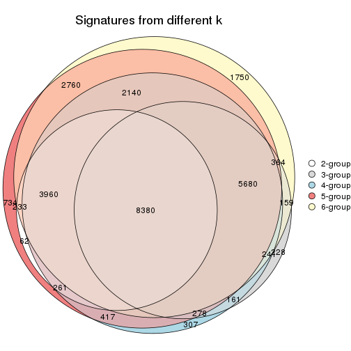
get_signature() returns a data frame invisibly. TO get the list of signatures, the function
call should be assigned to a variable explicitly. In following code, if plot argument is set
to FALSE, no heatmap is plotted while only the differential analysis is performed.
# code only for demonstration
tb = get_signature(res, k = ..., plot = FALSE)
An example of the output of tb is:
#> which_row fdr mean_1 mean_2 scaled_mean_1 scaled_mean_2 km
#> 1 38 0.042760348 8.373488 9.131774 -0.5533452 0.5164555 1
#> 2 40 0.018707592 7.106213 8.469186 -0.6173731 0.5762149 1
#> 3 55 0.019134737 10.221463 11.207825 -0.6159697 0.5749050 1
#> 4 59 0.006059896 5.921854 7.869574 -0.6899429 0.6439467 1
#> 5 60 0.018055526 8.928898 10.211722 -0.6204761 0.5791110 1
#> 6 98 0.009384629 15.714769 14.887706 0.6635654 -0.6193277 2
...
The columns in tb are:
which_row: row indices corresponding to the input matrix.fdr: FDR for the differential test. mean_x: The mean value in group x.scaled_mean_x: The mean value in group x after rows are scaled.km: Row groups if k-means clustering is applied to rows.UMAP plot which shows how samples are separated.
dimension_reduction(res, k = 2, method = "UMAP")
dimension_reduction(res, k = 3, method = "UMAP")
dimension_reduction(res, k = 4, method = "UMAP")
dimension_reduction(res, k = 5, method = "UMAP")
dimension_reduction(res, k = 6, method = "UMAP")
Following heatmap shows how subgroups are split when increasing k:
collect_classes(res)
Test correlation between subgroups and known annotations. If the known annotation is numeric, one-way ANOVA test is applied, and if the known annotation is discrete, chi-squared contingency table test is applied.
test_to_known_factors(res)
#> n protocol(p) individual(p) disease.state(p) k
#> MAD:mclust 99 1 1.88e-10 6.83e-18 2
#> MAD:mclust 69 1 1.06e-12 4.15e-17 3
#> MAD:mclust 99 1 2.76e-27 6.32e-38 4
#> MAD:mclust 84 1 7.45e-32 7.94e-47 5
#> MAD:mclust 96 1 4.78e-43 2.26e-46 6
If matrix rows can be associated to genes, consider to use functional_enrichment(res,
...) to perform function enrichment for the signature genes. See this vignette for more detailed explanations.
The object with results only for a single top-value method and a single partition method can be extracted as:
res = res_list["MAD", "NMF"]
# you can also extract it by
# res = res_list["MAD:NMF"]
A summary of res and all the functions that can be applied to it:
res
#> A 'ConsensusPartition' object with k = 2, 3, 4, 5, 6.
#> On a matrix with 51941 rows and 99 columns.
#> Top rows (1000, 2000, 3000, 4000, 5000) are extracted by 'MAD' method.
#> Subgroups are detected by 'NMF' method.
#> Performed in total 1250 partitions by row resampling.
#> Best k for subgroups seems to be 6.
#>
#> Following methods can be applied to this 'ConsensusPartition' object:
#> [1] "cola_report" "collect_classes" "collect_plots"
#> [4] "collect_stats" "colnames" "compare_signatures"
#> [7] "consensus_heatmap" "dimension_reduction" "functional_enrichment"
#> [10] "get_anno_col" "get_anno" "get_classes"
#> [13] "get_consensus" "get_matrix" "get_membership"
#> [16] "get_param" "get_signatures" "get_stats"
#> [19] "is_best_k" "is_stable_k" "membership_heatmap"
#> [22] "ncol" "nrow" "plot_ecdf"
#> [25] "rownames" "select_partition_number" "show"
#> [28] "suggest_best_k" "test_to_known_factors"
collect_plots() function collects all the plots made from res for all k (number of partitions)
into one single page to provide an easy and fast comparison between different k.
collect_plots(res)
The plots are:
k and the heatmap of
predicted classes for each k.k.k.k.All the plots in panels can be made by individual functions and they are plotted later in this section.
select_partition_number() produces several plots showing different
statistics for choosing “optimized” k. There are following statistics:
k;k, the area increased is defined as \(A_k - A_{k-1}\).The detailed explanations of these statistics can be found in the cola vignette.
Generally speaking, lower PAC score, higher mean silhouette score or higher
concordance corresponds to better partition. Rand index and Jaccard index
measure how similar the current partition is compared to partition with k-1.
If they are too similar, we won't accept k is better than k-1.
select_partition_number(res)
The numeric values for all these statistics can be obtained by get_stats().
get_stats(res)
#> k 1-PAC mean_silhouette concordance area_increased Rand Jaccard
#> 2 2 1.000 0.999 0.999 0.5013 0.499 0.499
#> 3 3 0.953 0.913 0.963 0.2329 0.880 0.762
#> 4 4 0.733 0.789 0.789 0.1148 0.934 0.836
#> 5 5 0.902 0.932 0.948 0.1429 0.837 0.552
#> 6 6 0.969 0.932 0.968 0.0578 0.948 0.760
suggest_best_k() suggests the best \(k\) based on these statistics. The rules are as follows:
suggest_best_k(res)
#> [1] 6
#> attr(,"optional")
#> [1] 2 3 5
There is also optional best \(k\) = 2 3 5 that is worth to check.
Following shows the table of the partitions (You need to click the show/hide
code output link to see it). The membership matrix (columns with name p*)
is inferred by
clue::cl_consensus()
function with the SE method. Basically the value in the membership matrix
represents the probability to belong to a certain group. The finall class
label for an item is determined with the group with highest probability it
belongs to.
In get_classes() function, the entropy is calculated from the membership
matrix and the silhouette score is calculated from the consensus matrix.
cbind(get_classes(res, k = 2), get_membership(res, k = 2))
#> class entropy silhouette p1 p2
#> GSM187698 1 0.0672 0.991 0.992 0.008
#> GSM187701 2 0.0000 1.000 0.000 1.000
#> GSM187704 1 0.0000 0.999 1.000 0.000
#> GSM187707 2 0.0000 1.000 0.000 1.000
#> GSM187710 2 0.0000 1.000 0.000 1.000
#> GSM187713 2 0.0000 1.000 0.000 1.000
#> GSM187716 2 0.0000 1.000 0.000 1.000
#> GSM187719 1 0.0000 0.999 1.000 0.000
#> GSM187722 1 0.0000 0.999 1.000 0.000
#> GSM187725 1 0.0000 0.999 1.000 0.000
#> GSM187728 2 0.0000 1.000 0.000 1.000
#> GSM187731 2 0.0000 1.000 0.000 1.000
#> GSM187734 2 0.0000 1.000 0.000 1.000
#> GSM187737 2 0.0000 1.000 0.000 1.000
#> GSM187740 2 0.0000 1.000 0.000 1.000
#> GSM187743 1 0.0000 0.999 1.000 0.000
#> GSM187746 1 0.0000 0.999 1.000 0.000
#> GSM187749 1 0.0000 0.999 1.000 0.000
#> GSM187752 2 0.0000 1.000 0.000 1.000
#> GSM187755 2 0.0000 1.000 0.000 1.000
#> GSM187758 1 0.0000 0.999 1.000 0.000
#> GSM187761 2 0.0000 1.000 0.000 1.000
#> GSM187764 2 0.0000 1.000 0.000 1.000
#> GSM187767 2 0.0000 1.000 0.000 1.000
#> GSM187770 1 0.0000 0.999 1.000 0.000
#> GSM187771 1 0.0000 0.999 1.000 0.000
#> GSM187772 1 0.0000 0.999 1.000 0.000
#> GSM187780 1 0.0000 0.999 1.000 0.000
#> GSM187781 1 0.0000 0.999 1.000 0.000
#> GSM187782 1 0.0000 0.999 1.000 0.000
#> GSM187788 2 0.0000 1.000 0.000 1.000
#> GSM187789 2 0.0000 1.000 0.000 1.000
#> GSM187790 2 0.0000 1.000 0.000 1.000
#> GSM187699 1 0.2423 0.959 0.960 0.040
#> GSM187702 2 0.0000 1.000 0.000 1.000
#> GSM187705 1 0.0000 0.999 1.000 0.000
#> GSM187708 2 0.0000 1.000 0.000 1.000
#> GSM187711 2 0.0000 1.000 0.000 1.000
#> GSM187714 2 0.0000 1.000 0.000 1.000
#> GSM187717 2 0.0000 1.000 0.000 1.000
#> GSM187720 1 0.0000 0.999 1.000 0.000
#> GSM187723 1 0.0000 0.999 1.000 0.000
#> GSM187726 1 0.0000 0.999 1.000 0.000
#> GSM187729 2 0.0000 1.000 0.000 1.000
#> GSM187732 2 0.0000 1.000 0.000 1.000
#> GSM187735 2 0.0000 1.000 0.000 1.000
#> GSM187738 2 0.0000 1.000 0.000 1.000
#> GSM187741 2 0.0000 1.000 0.000 1.000
#> GSM187744 1 0.0000 0.999 1.000 0.000
#> GSM187747 1 0.0000 0.999 1.000 0.000
#> GSM187750 1 0.0000 0.999 1.000 0.000
#> GSM187753 2 0.0000 1.000 0.000 1.000
#> GSM187756 2 0.0000 1.000 0.000 1.000
#> GSM187759 1 0.0000 0.999 1.000 0.000
#> GSM187762 2 0.0000 1.000 0.000 1.000
#> GSM187765 2 0.0000 1.000 0.000 1.000
#> GSM187768 2 0.0000 1.000 0.000 1.000
#> GSM187773 1 0.0000 0.999 1.000 0.000
#> GSM187774 1 0.0000 0.999 1.000 0.000
#> GSM187775 1 0.0000 0.999 1.000 0.000
#> GSM187776 1 0.0000 0.999 1.000 0.000
#> GSM187783 1 0.0000 0.999 1.000 0.000
#> GSM187784 1 0.0000 0.999 1.000 0.000
#> GSM187791 2 0.0000 1.000 0.000 1.000
#> GSM187792 2 0.0000 1.000 0.000 1.000
#> GSM187793 2 0.0000 1.000 0.000 1.000
#> GSM187700 1 0.1184 0.984 0.984 0.016
#> GSM187703 2 0.0000 1.000 0.000 1.000
#> GSM187706 1 0.0000 0.999 1.000 0.000
#> GSM187709 2 0.0000 1.000 0.000 1.000
#> GSM187712 2 0.0000 1.000 0.000 1.000
#> GSM187715 2 0.0000 1.000 0.000 1.000
#> GSM187718 2 0.0000 1.000 0.000 1.000
#> GSM187721 1 0.0000 0.999 1.000 0.000
#> GSM187724 1 0.0000 0.999 1.000 0.000
#> GSM187727 1 0.0000 0.999 1.000 0.000
#> GSM187730 2 0.0000 1.000 0.000 1.000
#> GSM187733 2 0.0000 1.000 0.000 1.000
#> GSM187736 2 0.0000 1.000 0.000 1.000
#> GSM187739 2 0.0000 1.000 0.000 1.000
#> GSM187742 2 0.0000 1.000 0.000 1.000
#> GSM187745 1 0.0000 0.999 1.000 0.000
#> GSM187748 1 0.0000 0.999 1.000 0.000
#> GSM187751 1 0.0000 0.999 1.000 0.000
#> GSM187754 2 0.0000 1.000 0.000 1.000
#> GSM187757 2 0.0000 1.000 0.000 1.000
#> GSM187760 1 0.0000 0.999 1.000 0.000
#> GSM187763 2 0.0000 1.000 0.000 1.000
#> GSM187766 2 0.0000 1.000 0.000 1.000
#> GSM187769 2 0.0000 1.000 0.000 1.000
#> GSM187777 1 0.0000 0.999 1.000 0.000
#> GSM187778 1 0.0000 0.999 1.000 0.000
#> GSM187779 1 0.0000 0.999 1.000 0.000
#> GSM187785 1 0.0000 0.999 1.000 0.000
#> GSM187786 1 0.0000 0.999 1.000 0.000
#> GSM187787 1 0.0000 0.999 1.000 0.000
#> GSM187794 2 0.0000 1.000 0.000 1.000
#> GSM187795 2 0.0000 1.000 0.000 1.000
#> GSM187796 2 0.0000 1.000 0.000 1.000
cbind(get_classes(res, k = 3), get_membership(res, k = 3))
#> class entropy silhouette p1 p2 p3
#> GSM187698 1 0.0000 0.974 1.000 0.000 0.000
#> GSM187701 2 0.0000 0.954 0.000 1.000 0.000
#> GSM187704 3 0.0000 0.944 0.000 0.000 1.000
#> GSM187707 2 0.1031 0.940 0.000 0.976 0.024
#> GSM187710 2 0.1529 0.928 0.000 0.960 0.040
#> GSM187713 2 0.0000 0.954 0.000 1.000 0.000
#> GSM187716 3 0.5810 0.465 0.000 0.336 0.664
#> GSM187719 1 0.0237 0.973 0.996 0.000 0.004
#> GSM187722 1 0.0000 0.974 1.000 0.000 0.000
#> GSM187725 3 0.0000 0.944 0.000 0.000 1.000
#> GSM187728 2 0.2625 0.887 0.000 0.916 0.084
#> GSM187731 2 0.0000 0.954 0.000 1.000 0.000
#> GSM187734 2 0.0000 0.954 0.000 1.000 0.000
#> GSM187737 2 0.0000 0.954 0.000 1.000 0.000
#> GSM187740 2 0.0892 0.943 0.000 0.980 0.020
#> GSM187743 1 0.0000 0.974 1.000 0.000 0.000
#> GSM187746 3 0.0000 0.944 0.000 0.000 1.000
#> GSM187749 3 0.0000 0.944 0.000 0.000 1.000
#> GSM187752 2 0.0000 0.954 0.000 1.000 0.000
#> GSM187755 2 0.0000 0.954 0.000 1.000 0.000
#> GSM187758 3 0.0000 0.944 0.000 0.000 1.000
#> GSM187761 2 0.6140 0.336 0.000 0.596 0.404
#> GSM187764 2 0.0000 0.954 0.000 1.000 0.000
#> GSM187767 2 0.0000 0.954 0.000 1.000 0.000
#> GSM187770 1 0.2448 0.941 0.924 0.000 0.076
#> GSM187771 1 0.2448 0.941 0.924 0.000 0.076
#> GSM187772 1 0.2448 0.941 0.924 0.000 0.076
#> GSM187780 1 0.0000 0.974 1.000 0.000 0.000
#> GSM187781 1 0.0000 0.974 1.000 0.000 0.000
#> GSM187782 1 0.0000 0.974 1.000 0.000 0.000
#> GSM187788 2 0.0000 0.954 0.000 1.000 0.000
#> GSM187789 2 0.0000 0.954 0.000 1.000 0.000
#> GSM187790 2 0.0000 0.954 0.000 1.000 0.000
#> GSM187699 1 0.0424 0.968 0.992 0.008 0.000
#> GSM187702 2 0.0000 0.954 0.000 1.000 0.000
#> GSM187705 3 0.0000 0.944 0.000 0.000 1.000
#> GSM187708 2 0.0424 0.950 0.000 0.992 0.008
#> GSM187711 2 0.1643 0.924 0.000 0.956 0.044
#> GSM187714 2 0.0000 0.954 0.000 1.000 0.000
#> GSM187717 3 0.5968 0.396 0.000 0.364 0.636
#> GSM187720 1 0.0237 0.973 0.996 0.000 0.004
#> GSM187723 1 0.0000 0.974 1.000 0.000 0.000
#> GSM187726 3 0.0000 0.944 0.000 0.000 1.000
#> GSM187729 2 0.3116 0.862 0.000 0.892 0.108
#> GSM187732 2 0.0000 0.954 0.000 1.000 0.000
#> GSM187735 2 0.0000 0.954 0.000 1.000 0.000
#> GSM187738 2 0.0000 0.954 0.000 1.000 0.000
#> GSM187741 2 0.0237 0.952 0.000 0.996 0.004
#> GSM187744 1 0.0000 0.974 1.000 0.000 0.000
#> GSM187747 3 0.0000 0.944 0.000 0.000 1.000
#> GSM187750 3 0.0000 0.944 0.000 0.000 1.000
#> GSM187753 2 0.0000 0.954 0.000 1.000 0.000
#> GSM187756 2 0.0000 0.954 0.000 1.000 0.000
#> GSM187759 3 0.0000 0.944 0.000 0.000 1.000
#> GSM187762 2 0.6111 0.357 0.000 0.604 0.396
#> GSM187765 2 0.0000 0.954 0.000 1.000 0.000
#> GSM187768 2 0.0000 0.954 0.000 1.000 0.000
#> GSM187773 1 0.2537 0.938 0.920 0.000 0.080
#> GSM187774 1 0.2878 0.925 0.904 0.000 0.096
#> GSM187775 1 0.3038 0.917 0.896 0.000 0.104
#> GSM187776 1 0.0000 0.974 1.000 0.000 0.000
#> GSM187783 1 0.0000 0.974 1.000 0.000 0.000
#> GSM187784 1 0.0000 0.974 1.000 0.000 0.000
#> GSM187791 2 0.0000 0.954 0.000 1.000 0.000
#> GSM187792 2 0.0000 0.954 0.000 1.000 0.000
#> GSM187793 2 0.0000 0.954 0.000 1.000 0.000
#> GSM187700 1 0.0000 0.974 1.000 0.000 0.000
#> GSM187703 2 0.0000 0.954 0.000 1.000 0.000
#> GSM187706 3 0.0000 0.944 0.000 0.000 1.000
#> GSM187709 2 0.0592 0.948 0.000 0.988 0.012
#> GSM187712 2 0.1031 0.940 0.000 0.976 0.024
#> GSM187715 2 0.0000 0.954 0.000 1.000 0.000
#> GSM187718 2 0.6215 0.266 0.000 0.572 0.428
#> GSM187721 1 0.0237 0.973 0.996 0.000 0.004
#> GSM187724 1 0.0000 0.974 1.000 0.000 0.000
#> GSM187727 3 0.0000 0.944 0.000 0.000 1.000
#> GSM187730 2 0.3038 0.866 0.000 0.896 0.104
#> GSM187733 2 0.0000 0.954 0.000 1.000 0.000
#> GSM187736 2 0.0000 0.954 0.000 1.000 0.000
#> GSM187739 2 0.0000 0.954 0.000 1.000 0.000
#> GSM187742 2 0.0592 0.948 0.000 0.988 0.012
#> GSM187745 1 0.0000 0.974 1.000 0.000 0.000
#> GSM187748 3 0.0000 0.944 0.000 0.000 1.000
#> GSM187751 3 0.0000 0.944 0.000 0.000 1.000
#> GSM187754 2 0.0000 0.954 0.000 1.000 0.000
#> GSM187757 2 0.0000 0.954 0.000 1.000 0.000
#> GSM187760 3 0.0000 0.944 0.000 0.000 1.000
#> GSM187763 2 0.6299 0.105 0.000 0.524 0.476
#> GSM187766 2 0.0000 0.954 0.000 1.000 0.000
#> GSM187769 2 0.0000 0.954 0.000 1.000 0.000
#> GSM187777 1 0.2448 0.941 0.924 0.000 0.076
#> GSM187778 1 0.2448 0.941 0.924 0.000 0.076
#> GSM187779 1 0.2448 0.941 0.924 0.000 0.076
#> GSM187785 1 0.0000 0.974 1.000 0.000 0.000
#> GSM187786 1 0.0000 0.974 1.000 0.000 0.000
#> GSM187787 1 0.0000 0.974 1.000 0.000 0.000
#> GSM187794 2 0.0000 0.954 0.000 1.000 0.000
#> GSM187795 2 0.0000 0.954 0.000 1.000 0.000
#> GSM187796 2 0.0000 0.954 0.000 1.000 0.000
cbind(get_classes(res, k = 4), get_membership(res, k = 4))
#> class entropy silhouette p1 p2 p3 p4
#> GSM187698 1 0.0469 0.886 0.988 0.012 0.000 0.000
#> GSM187701 2 0.5332 0.714 0.124 0.748 0.000 0.128
#> GSM187704 3 0.0000 0.969 0.000 0.000 1.000 0.000
#> GSM187707 2 0.5775 0.787 0.000 0.560 0.032 0.408
#> GSM187710 2 0.6574 0.766 0.000 0.532 0.084 0.384
#> GSM187713 2 0.0592 0.755 0.000 0.984 0.000 0.016
#> GSM187716 4 0.7790 -0.602 0.000 0.340 0.252 0.408
#> GSM187719 4 0.5212 0.785 0.420 0.000 0.008 0.572
#> GSM187722 1 0.5183 -0.363 0.584 0.008 0.000 0.408
#> GSM187725 3 0.0000 0.969 0.000 0.000 1.000 0.000
#> GSM187728 2 0.6716 0.751 0.000 0.504 0.092 0.404
#> GSM187731 2 0.0000 0.756 0.000 1.000 0.000 0.000
#> GSM187734 2 0.0000 0.756 0.000 1.000 0.000 0.000
#> GSM187737 2 0.4643 0.809 0.000 0.656 0.000 0.344
#> GSM187740 2 0.5097 0.791 0.000 0.568 0.004 0.428
#> GSM187743 1 0.0000 0.903 1.000 0.000 0.000 0.000
#> GSM187746 3 0.2011 0.910 0.000 0.000 0.920 0.080
#> GSM187749 3 0.0000 0.969 0.000 0.000 1.000 0.000
#> GSM187752 2 0.0000 0.756 0.000 1.000 0.000 0.000
#> GSM187755 2 0.4776 0.804 0.000 0.624 0.000 0.376
#> GSM187758 3 0.0000 0.969 0.000 0.000 1.000 0.000
#> GSM187761 2 0.7216 0.697 0.000 0.448 0.140 0.412
#> GSM187764 2 0.4790 0.803 0.000 0.620 0.000 0.380
#> GSM187767 2 0.4643 0.808 0.000 0.656 0.000 0.344
#> GSM187770 4 0.5883 0.822 0.388 0.000 0.040 0.572
#> GSM187771 4 0.5883 0.822 0.388 0.000 0.040 0.572
#> GSM187772 4 0.5883 0.822 0.388 0.000 0.040 0.572
#> GSM187780 1 0.0000 0.903 1.000 0.000 0.000 0.000
#> GSM187781 1 0.0000 0.903 1.000 0.000 0.000 0.000
#> GSM187782 1 0.0000 0.903 1.000 0.000 0.000 0.000
#> GSM187788 2 0.0000 0.756 0.000 1.000 0.000 0.000
#> GSM187789 2 0.0000 0.756 0.000 1.000 0.000 0.000
#> GSM187790 2 0.0000 0.756 0.000 1.000 0.000 0.000
#> GSM187699 1 0.6240 0.318 0.668 0.176 0.000 0.156
#> GSM187702 2 0.4632 0.807 0.004 0.688 0.000 0.308
#> GSM187705 3 0.0000 0.969 0.000 0.000 1.000 0.000
#> GSM187708 2 0.5060 0.794 0.000 0.584 0.004 0.412
#> GSM187711 2 0.5805 0.792 0.000 0.576 0.036 0.388
#> GSM187714 2 0.0592 0.755 0.000 0.984 0.000 0.016
#> GSM187717 2 0.6722 0.748 0.000 0.500 0.092 0.408
#> GSM187720 4 0.5212 0.785 0.420 0.000 0.008 0.572
#> GSM187723 4 0.5781 0.764 0.380 0.036 0.000 0.584
#> GSM187726 3 0.0000 0.969 0.000 0.000 1.000 0.000
#> GSM187729 2 0.6214 0.774 0.000 0.536 0.056 0.408
#> GSM187732 2 0.0000 0.756 0.000 1.000 0.000 0.000
#> GSM187735 2 0.0188 0.758 0.000 0.996 0.000 0.004
#> GSM187738 2 0.4776 0.804 0.000 0.624 0.000 0.376
#> GSM187741 2 0.5097 0.791 0.000 0.568 0.004 0.428
#> GSM187744 1 0.0000 0.903 1.000 0.000 0.000 0.000
#> GSM187747 3 0.3907 0.732 0.000 0.000 0.768 0.232
#> GSM187750 3 0.0000 0.969 0.000 0.000 1.000 0.000
#> GSM187753 2 0.0000 0.756 0.000 1.000 0.000 0.000
#> GSM187756 2 0.4790 0.803 0.000 0.620 0.000 0.380
#> GSM187759 3 0.0000 0.969 0.000 0.000 1.000 0.000
#> GSM187762 2 0.6419 0.762 0.000 0.512 0.068 0.420
#> GSM187765 2 0.4804 0.802 0.000 0.616 0.000 0.384
#> GSM187768 2 0.4790 0.803 0.000 0.620 0.000 0.380
#> GSM187773 4 0.5936 0.816 0.380 0.000 0.044 0.576
#> GSM187774 4 0.5872 0.820 0.384 0.000 0.040 0.576
#> GSM187775 4 0.5936 0.816 0.380 0.000 0.044 0.576
#> GSM187776 1 0.0000 0.903 1.000 0.000 0.000 0.000
#> GSM187783 1 0.0000 0.903 1.000 0.000 0.000 0.000
#> GSM187784 1 0.0000 0.903 1.000 0.000 0.000 0.000
#> GSM187791 2 0.0000 0.756 0.000 1.000 0.000 0.000
#> GSM187792 2 0.0000 0.756 0.000 1.000 0.000 0.000
#> GSM187793 2 0.0000 0.756 0.000 1.000 0.000 0.000
#> GSM187700 1 0.3601 0.706 0.860 0.084 0.000 0.056
#> GSM187703 2 0.4699 0.807 0.004 0.676 0.000 0.320
#> GSM187706 3 0.0000 0.969 0.000 0.000 1.000 0.000
#> GSM187709 2 0.5193 0.794 0.000 0.580 0.008 0.412
#> GSM187712 2 0.5984 0.792 0.000 0.580 0.048 0.372
#> GSM187715 2 0.0592 0.755 0.000 0.984 0.000 0.016
#> GSM187718 2 0.6270 0.774 0.000 0.536 0.060 0.404
#> GSM187721 4 0.5212 0.785 0.420 0.000 0.008 0.572
#> GSM187724 4 0.5872 0.765 0.384 0.040 0.000 0.576
#> GSM187727 3 0.0000 0.969 0.000 0.000 1.000 0.000
#> GSM187730 2 0.6392 0.769 0.000 0.528 0.068 0.404
#> GSM187733 2 0.0000 0.756 0.000 1.000 0.000 0.000
#> GSM187736 2 0.0188 0.758 0.000 0.996 0.000 0.004
#> GSM187739 2 0.4776 0.804 0.000 0.624 0.000 0.376
#> GSM187742 2 0.5097 0.791 0.000 0.568 0.004 0.428
#> GSM187745 1 0.0000 0.903 1.000 0.000 0.000 0.000
#> GSM187748 3 0.2647 0.873 0.000 0.000 0.880 0.120
#> GSM187751 3 0.0000 0.969 0.000 0.000 1.000 0.000
#> GSM187754 2 0.0000 0.756 0.000 1.000 0.000 0.000
#> GSM187757 2 0.4804 0.802 0.000 0.616 0.000 0.384
#> GSM187760 3 0.0000 0.969 0.000 0.000 1.000 0.000
#> GSM187763 2 0.7034 0.720 0.000 0.468 0.120 0.412
#> GSM187766 2 0.4776 0.804 0.000 0.624 0.000 0.376
#> GSM187769 2 0.4713 0.807 0.000 0.640 0.000 0.360
#> GSM187777 4 0.5883 0.822 0.388 0.000 0.040 0.572
#> GSM187778 4 0.5883 0.822 0.388 0.000 0.040 0.572
#> GSM187779 4 0.5883 0.822 0.388 0.000 0.040 0.572
#> GSM187785 1 0.0000 0.903 1.000 0.000 0.000 0.000
#> GSM187786 1 0.0000 0.903 1.000 0.000 0.000 0.000
#> GSM187787 1 0.0000 0.903 1.000 0.000 0.000 0.000
#> GSM187794 2 0.0000 0.756 0.000 1.000 0.000 0.000
#> GSM187795 2 0.0000 0.756 0.000 1.000 0.000 0.000
#> GSM187796 2 0.0000 0.756 0.000 1.000 0.000 0.000
cbind(get_classes(res, k = 5), get_membership(res, k = 5))
#> class entropy silhouette p1 p2 p3 p4 p5
#> GSM187698 1 0.1282 0.917 0.952 0.000 0.000 0.004 0.044
#> GSM187701 1 0.4868 0.697 0.736 0.172 0.000 0.012 0.080
#> GSM187704 3 0.0000 0.978 0.000 0.000 1.000 0.000 0.000
#> GSM187707 2 0.0693 0.914 0.000 0.980 0.008 0.000 0.012
#> GSM187710 2 0.3359 0.869 0.000 0.844 0.084 0.000 0.072
#> GSM187713 5 0.0703 0.975 0.000 0.024 0.000 0.000 0.976
#> GSM187716 2 0.2095 0.896 0.004 0.924 0.016 0.052 0.004
#> GSM187719 4 0.1270 0.969 0.052 0.000 0.000 0.948 0.000
#> GSM187722 4 0.4328 0.657 0.248 0.008 0.000 0.724 0.020
#> GSM187725 3 0.0000 0.978 0.000 0.000 1.000 0.000 0.000
#> GSM187728 2 0.1943 0.910 0.000 0.924 0.020 0.000 0.056
#> GSM187731 5 0.0162 0.993 0.000 0.004 0.000 0.000 0.996
#> GSM187734 5 0.0290 0.995 0.000 0.008 0.000 0.000 0.992
#> GSM187737 2 0.1502 0.915 0.004 0.940 0.000 0.000 0.056
#> GSM187740 2 0.0000 0.912 0.000 1.000 0.000 0.000 0.000
#> GSM187743 1 0.0162 0.948 0.996 0.000 0.000 0.004 0.000
#> GSM187746 3 0.1357 0.942 0.000 0.000 0.948 0.048 0.004
#> GSM187749 3 0.0000 0.978 0.000 0.000 1.000 0.000 0.000
#> GSM187752 5 0.0290 0.995 0.000 0.008 0.000 0.000 0.992
#> GSM187755 2 0.3778 0.846 0.004 0.820 0.000 0.068 0.108
#> GSM187758 3 0.0000 0.978 0.000 0.000 1.000 0.000 0.000
#> GSM187761 2 0.0404 0.911 0.000 0.988 0.012 0.000 0.000
#> GSM187764 2 0.3260 0.871 0.004 0.856 0.000 0.056 0.084
#> GSM187767 2 0.3074 0.815 0.000 0.804 0.000 0.000 0.196
#> GSM187770 4 0.1331 0.971 0.040 0.000 0.008 0.952 0.000
#> GSM187771 4 0.1282 0.973 0.044 0.000 0.004 0.952 0.000
#> GSM187772 4 0.1282 0.973 0.044 0.000 0.004 0.952 0.000
#> GSM187780 1 0.0162 0.948 0.996 0.000 0.000 0.004 0.000
#> GSM187781 1 0.0162 0.948 0.996 0.000 0.000 0.004 0.000
#> GSM187782 1 0.0162 0.948 0.996 0.000 0.000 0.004 0.000
#> GSM187788 5 0.0290 0.995 0.000 0.008 0.000 0.000 0.992
#> GSM187789 5 0.0290 0.995 0.000 0.008 0.000 0.000 0.992
#> GSM187790 5 0.0290 0.995 0.000 0.008 0.000 0.000 0.992
#> GSM187699 1 0.5467 0.658 0.700 0.064 0.000 0.192 0.044
#> GSM187702 2 0.2983 0.882 0.076 0.868 0.000 0.000 0.056
#> GSM187705 3 0.0000 0.978 0.000 0.000 1.000 0.000 0.000
#> GSM187708 2 0.1121 0.914 0.000 0.956 0.000 0.000 0.044
#> GSM187711 2 0.3064 0.877 0.000 0.856 0.036 0.000 0.108
#> GSM187714 5 0.0510 0.984 0.000 0.016 0.000 0.000 0.984
#> GSM187717 2 0.1752 0.899 0.004 0.936 0.004 0.052 0.004
#> GSM187720 4 0.1270 0.969 0.052 0.000 0.000 0.948 0.000
#> GSM187723 4 0.0771 0.950 0.020 0.000 0.000 0.976 0.004
#> GSM187726 3 0.0000 0.978 0.000 0.000 1.000 0.000 0.000
#> GSM187729 2 0.1704 0.908 0.000 0.928 0.004 0.000 0.068
#> GSM187732 5 0.0162 0.993 0.000 0.004 0.000 0.000 0.996
#> GSM187735 5 0.0510 0.988 0.000 0.016 0.000 0.000 0.984
#> GSM187738 2 0.1270 0.915 0.000 0.948 0.000 0.000 0.052
#> GSM187741 2 0.0000 0.912 0.000 1.000 0.000 0.000 0.000
#> GSM187744 1 0.0290 0.946 0.992 0.000 0.000 0.008 0.000
#> GSM187747 3 0.3266 0.757 0.000 0.000 0.796 0.200 0.004
#> GSM187750 3 0.0000 0.978 0.000 0.000 1.000 0.000 0.000
#> GSM187753 5 0.0290 0.995 0.000 0.008 0.000 0.000 0.992
#> GSM187756 2 0.3459 0.865 0.004 0.844 0.000 0.072 0.080
#> GSM187759 3 0.0000 0.978 0.000 0.000 1.000 0.000 0.000
#> GSM187762 2 0.0000 0.912 0.000 1.000 0.000 0.000 0.000
#> GSM187765 2 0.3151 0.876 0.004 0.864 0.000 0.068 0.064
#> GSM187768 2 0.2813 0.845 0.000 0.832 0.000 0.000 0.168
#> GSM187773 4 0.1282 0.973 0.044 0.000 0.004 0.952 0.000
#> GSM187774 4 0.1282 0.973 0.044 0.000 0.004 0.952 0.000
#> GSM187775 4 0.1331 0.971 0.040 0.000 0.008 0.952 0.000
#> GSM187776 1 0.0162 0.948 0.996 0.000 0.000 0.004 0.000
#> GSM187783 1 0.0162 0.948 0.996 0.000 0.000 0.004 0.000
#> GSM187784 1 0.0162 0.948 0.996 0.000 0.000 0.004 0.000
#> GSM187791 5 0.0290 0.995 0.000 0.008 0.000 0.000 0.992
#> GSM187792 5 0.0290 0.995 0.000 0.008 0.000 0.000 0.992
#> GSM187793 5 0.0290 0.995 0.000 0.008 0.000 0.000 0.992
#> GSM187700 1 0.3624 0.833 0.844 0.020 0.000 0.052 0.084
#> GSM187703 2 0.3064 0.862 0.108 0.856 0.000 0.000 0.036
#> GSM187706 3 0.0000 0.978 0.000 0.000 1.000 0.000 0.000
#> GSM187709 2 0.0609 0.914 0.000 0.980 0.000 0.000 0.020
#> GSM187712 2 0.3366 0.855 0.000 0.828 0.032 0.000 0.140
#> GSM187715 5 0.0510 0.984 0.000 0.016 0.000 0.000 0.984
#> GSM187718 2 0.1934 0.899 0.004 0.928 0.000 0.052 0.016
#> GSM187721 4 0.1270 0.969 0.052 0.000 0.000 0.948 0.000
#> GSM187724 4 0.0898 0.943 0.020 0.000 0.000 0.972 0.008
#> GSM187727 3 0.0000 0.978 0.000 0.000 1.000 0.000 0.000
#> GSM187730 2 0.1638 0.910 0.000 0.932 0.004 0.000 0.064
#> GSM187733 5 0.0162 0.993 0.000 0.004 0.000 0.000 0.996
#> GSM187736 5 0.0404 0.992 0.000 0.012 0.000 0.000 0.988
#> GSM187739 2 0.1197 0.914 0.000 0.952 0.000 0.000 0.048
#> GSM187742 2 0.0162 0.912 0.004 0.996 0.000 0.000 0.000
#> GSM187745 1 0.0290 0.946 0.992 0.000 0.000 0.008 0.000
#> GSM187748 3 0.1282 0.945 0.000 0.000 0.952 0.044 0.004
#> GSM187751 3 0.0000 0.978 0.000 0.000 1.000 0.000 0.000
#> GSM187754 5 0.0290 0.995 0.000 0.008 0.000 0.000 0.992
#> GSM187757 2 0.3517 0.862 0.004 0.840 0.000 0.084 0.072
#> GSM187760 3 0.0000 0.978 0.000 0.000 1.000 0.000 0.000
#> GSM187763 2 0.0290 0.912 0.000 0.992 0.008 0.000 0.000
#> GSM187766 2 0.3338 0.869 0.004 0.852 0.000 0.068 0.076
#> GSM187769 2 0.3039 0.819 0.000 0.808 0.000 0.000 0.192
#> GSM187777 4 0.1282 0.973 0.044 0.000 0.004 0.952 0.000
#> GSM187778 4 0.1282 0.973 0.044 0.000 0.004 0.952 0.000
#> GSM187779 4 0.1282 0.973 0.044 0.000 0.004 0.952 0.000
#> GSM187785 1 0.0162 0.948 0.996 0.000 0.000 0.004 0.000
#> GSM187786 1 0.0162 0.948 0.996 0.000 0.000 0.004 0.000
#> GSM187787 1 0.0162 0.948 0.996 0.000 0.000 0.004 0.000
#> GSM187794 5 0.0290 0.995 0.000 0.008 0.000 0.000 0.992
#> GSM187795 5 0.0290 0.995 0.000 0.008 0.000 0.000 0.992
#> GSM187796 5 0.0290 0.995 0.000 0.008 0.000 0.000 0.992
cbind(get_classes(res, k = 6), get_membership(res, k = 6))
#> class entropy silhouette p1 p2 p3 p4 p5 p6
#> GSM187698 1 0.2805 0.754 0.812 0.000 0.000 0.000 0.004 0.184
#> GSM187701 1 0.1713 0.917 0.928 0.000 0.000 0.000 0.028 0.044
#> GSM187704 3 0.0000 0.997 0.000 0.000 1.000 0.000 0.000 0.000
#> GSM187707 2 0.0260 0.937 0.000 0.992 0.000 0.000 0.000 0.008
#> GSM187710 2 0.0146 0.937 0.000 0.996 0.000 0.000 0.004 0.000
#> GSM187713 5 0.0937 0.963 0.000 0.000 0.000 0.000 0.960 0.040
#> GSM187716 6 0.0260 0.927 0.000 0.008 0.000 0.000 0.000 0.992
#> GSM187719 4 0.0000 0.953 0.000 0.000 0.000 1.000 0.000 0.000
#> GSM187722 4 0.5237 0.159 0.072 0.000 0.000 0.504 0.008 0.416
#> GSM187725 3 0.0000 0.997 0.000 0.000 1.000 0.000 0.000 0.000
#> GSM187728 2 0.0000 0.937 0.000 1.000 0.000 0.000 0.000 0.000
#> GSM187731 5 0.0146 0.992 0.000 0.000 0.000 0.000 0.996 0.004
#> GSM187734 5 0.0000 0.994 0.000 0.000 0.000 0.000 1.000 0.000
#> GSM187737 2 0.3841 0.665 0.000 0.716 0.000 0.000 0.028 0.256
#> GSM187740 2 0.1814 0.881 0.000 0.900 0.000 0.000 0.000 0.100
#> GSM187743 1 0.0000 0.979 1.000 0.000 0.000 0.000 0.000 0.000
#> GSM187746 3 0.0146 0.994 0.000 0.000 0.996 0.004 0.000 0.000
#> GSM187749 3 0.0000 0.997 0.000 0.000 1.000 0.000 0.000 0.000
#> GSM187752 5 0.0000 0.994 0.000 0.000 0.000 0.000 1.000 0.000
#> GSM187755 6 0.0000 0.931 0.000 0.000 0.000 0.000 0.000 1.000
#> GSM187758 3 0.0000 0.997 0.000 0.000 1.000 0.000 0.000 0.000
#> GSM187761 2 0.0458 0.935 0.000 0.984 0.000 0.000 0.000 0.016
#> GSM187764 6 0.0000 0.931 0.000 0.000 0.000 0.000 0.000 1.000
#> GSM187767 2 0.0146 0.937 0.000 0.996 0.000 0.000 0.004 0.000
#> GSM187770 4 0.0000 0.953 0.000 0.000 0.000 1.000 0.000 0.000
#> GSM187771 4 0.0000 0.953 0.000 0.000 0.000 1.000 0.000 0.000
#> GSM187772 4 0.0000 0.953 0.000 0.000 0.000 1.000 0.000 0.000
#> GSM187780 1 0.0000 0.979 1.000 0.000 0.000 0.000 0.000 0.000
#> GSM187781 1 0.0000 0.979 1.000 0.000 0.000 0.000 0.000 0.000
#> GSM187782 1 0.0000 0.979 1.000 0.000 0.000 0.000 0.000 0.000
#> GSM187788 5 0.0000 0.994 0.000 0.000 0.000 0.000 1.000 0.000
#> GSM187789 5 0.0000 0.994 0.000 0.000 0.000 0.000 1.000 0.000
#> GSM187790 5 0.0000 0.994 0.000 0.000 0.000 0.000 1.000 0.000
#> GSM187699 6 0.3764 0.727 0.184 0.000 0.000 0.032 0.012 0.772
#> GSM187702 2 0.3680 0.696 0.232 0.744 0.000 0.000 0.004 0.020
#> GSM187705 3 0.0000 0.997 0.000 0.000 1.000 0.000 0.000 0.000
#> GSM187708 2 0.0000 0.937 0.000 1.000 0.000 0.000 0.000 0.000
#> GSM187711 2 0.0146 0.937 0.000 0.996 0.000 0.000 0.004 0.000
#> GSM187714 5 0.0790 0.971 0.000 0.000 0.000 0.000 0.968 0.032
#> GSM187717 6 0.0260 0.927 0.000 0.008 0.000 0.000 0.000 0.992
#> GSM187720 4 0.0000 0.953 0.000 0.000 0.000 1.000 0.000 0.000
#> GSM187723 4 0.1267 0.907 0.000 0.000 0.000 0.940 0.000 0.060
#> GSM187726 3 0.0000 0.997 0.000 0.000 1.000 0.000 0.000 0.000
#> GSM187729 2 0.0000 0.937 0.000 1.000 0.000 0.000 0.000 0.000
#> GSM187732 5 0.0146 0.992 0.000 0.000 0.000 0.000 0.996 0.004
#> GSM187735 5 0.0000 0.994 0.000 0.000 0.000 0.000 1.000 0.000
#> GSM187738 2 0.0692 0.932 0.000 0.976 0.000 0.000 0.004 0.020
#> GSM187741 2 0.1910 0.875 0.000 0.892 0.000 0.000 0.000 0.108
#> GSM187744 1 0.0000 0.979 1.000 0.000 0.000 0.000 0.000 0.000
#> GSM187747 3 0.0547 0.980 0.000 0.000 0.980 0.020 0.000 0.000
#> GSM187750 3 0.0000 0.997 0.000 0.000 1.000 0.000 0.000 0.000
#> GSM187753 5 0.0000 0.994 0.000 0.000 0.000 0.000 1.000 0.000
#> GSM187756 6 0.0000 0.931 0.000 0.000 0.000 0.000 0.000 1.000
#> GSM187759 3 0.0000 0.997 0.000 0.000 1.000 0.000 0.000 0.000
#> GSM187762 2 0.0363 0.936 0.000 0.988 0.000 0.000 0.000 0.012
#> GSM187765 6 0.0000 0.931 0.000 0.000 0.000 0.000 0.000 1.000
#> GSM187768 2 0.0146 0.937 0.000 0.996 0.000 0.000 0.004 0.000
#> GSM187773 4 0.0000 0.953 0.000 0.000 0.000 1.000 0.000 0.000
#> GSM187774 4 0.0000 0.953 0.000 0.000 0.000 1.000 0.000 0.000
#> GSM187775 4 0.0000 0.953 0.000 0.000 0.000 1.000 0.000 0.000
#> GSM187776 1 0.0000 0.979 1.000 0.000 0.000 0.000 0.000 0.000
#> GSM187783 1 0.0000 0.979 1.000 0.000 0.000 0.000 0.000 0.000
#> GSM187784 1 0.0000 0.979 1.000 0.000 0.000 0.000 0.000 0.000
#> GSM187791 5 0.0000 0.994 0.000 0.000 0.000 0.000 1.000 0.000
#> GSM187792 5 0.0000 0.994 0.000 0.000 0.000 0.000 1.000 0.000
#> GSM187793 5 0.0000 0.994 0.000 0.000 0.000 0.000 1.000 0.000
#> GSM187700 6 0.4735 0.311 0.392 0.000 0.000 0.008 0.036 0.564
#> GSM187703 2 0.4062 0.496 0.344 0.640 0.000 0.000 0.004 0.012
#> GSM187706 3 0.0000 0.997 0.000 0.000 1.000 0.000 0.000 0.000
#> GSM187709 2 0.0260 0.937 0.000 0.992 0.000 0.000 0.000 0.008
#> GSM187712 2 0.0146 0.937 0.000 0.996 0.000 0.000 0.004 0.000
#> GSM187715 5 0.0790 0.971 0.000 0.000 0.000 0.000 0.968 0.032
#> GSM187718 6 0.0146 0.930 0.000 0.004 0.000 0.000 0.000 0.996
#> GSM187721 4 0.0000 0.953 0.000 0.000 0.000 1.000 0.000 0.000
#> GSM187724 4 0.2196 0.855 0.004 0.000 0.000 0.884 0.004 0.108
#> GSM187727 3 0.0000 0.997 0.000 0.000 1.000 0.000 0.000 0.000
#> GSM187730 2 0.0000 0.937 0.000 1.000 0.000 0.000 0.000 0.000
#> GSM187733 5 0.0146 0.992 0.000 0.000 0.000 0.000 0.996 0.004
#> GSM187736 5 0.0000 0.994 0.000 0.000 0.000 0.000 1.000 0.000
#> GSM187739 2 0.0622 0.934 0.000 0.980 0.000 0.000 0.008 0.012
#> GSM187742 2 0.2416 0.830 0.000 0.844 0.000 0.000 0.000 0.156
#> GSM187745 1 0.0000 0.979 1.000 0.000 0.000 0.000 0.000 0.000
#> GSM187748 3 0.0363 0.988 0.000 0.000 0.988 0.012 0.000 0.000
#> GSM187751 3 0.0000 0.997 0.000 0.000 1.000 0.000 0.000 0.000
#> GSM187754 5 0.0000 0.994 0.000 0.000 0.000 0.000 1.000 0.000
#> GSM187757 6 0.0000 0.931 0.000 0.000 0.000 0.000 0.000 1.000
#> GSM187760 3 0.0000 0.997 0.000 0.000 1.000 0.000 0.000 0.000
#> GSM187763 2 0.0363 0.936 0.000 0.988 0.000 0.000 0.000 0.012
#> GSM187766 6 0.0000 0.931 0.000 0.000 0.000 0.000 0.000 1.000
#> GSM187769 2 0.0146 0.937 0.000 0.996 0.000 0.000 0.004 0.000
#> GSM187777 4 0.0000 0.953 0.000 0.000 0.000 1.000 0.000 0.000
#> GSM187778 4 0.0000 0.953 0.000 0.000 0.000 1.000 0.000 0.000
#> GSM187779 4 0.0000 0.953 0.000 0.000 0.000 1.000 0.000 0.000
#> GSM187785 1 0.0000 0.979 1.000 0.000 0.000 0.000 0.000 0.000
#> GSM187786 1 0.0000 0.979 1.000 0.000 0.000 0.000 0.000 0.000
#> GSM187787 1 0.0000 0.979 1.000 0.000 0.000 0.000 0.000 0.000
#> GSM187794 5 0.0000 0.994 0.000 0.000 0.000 0.000 1.000 0.000
#> GSM187795 5 0.0000 0.994 0.000 0.000 0.000 0.000 1.000 0.000
#> GSM187796 5 0.0000 0.994 0.000 0.000 0.000 0.000 1.000 0.000
Heatmaps for the consensus matrix. It visualizes the probability of two samples to be in a same group.
consensus_heatmap(res, k = 2)
consensus_heatmap(res, k = 3)
consensus_heatmap(res, k = 4)
consensus_heatmap(res, k = 5)
consensus_heatmap(res, k = 6)
Heatmaps for the membership of samples in all partitions to see how consistent they are:
membership_heatmap(res, k = 2)
membership_heatmap(res, k = 3)
membership_heatmap(res, k = 4)
membership_heatmap(res, k = 5)
membership_heatmap(res, k = 6)
As soon as we have had the classes for columns, we can look for signatures which are significantly different between classes which can be candidate marks for certain classes. Following are the heatmaps for signatures.
Signature heatmaps where rows are scaled:
get_signatures(res, k = 2)
#> Error: The width or height of the raster image is zero, maybe you forget to turn off the
#> previous graphic device or it was corrupted. Run `dev.off()` to close it.

get_signatures(res, k = 3)
#> Error: The width or height of the raster image is zero, maybe you forget to turn off the
#> previous graphic device or it was corrupted. Run `dev.off()` to close it.

get_signatures(res, k = 4)
#> Error: The width or height of the raster image is zero, maybe you forget to turn off the
#> previous graphic device or it was corrupted. Run `dev.off()` to close it.

get_signatures(res, k = 5)
#> Error: The width or height of the raster image is zero, maybe you forget to turn off the
#> previous graphic device or it was corrupted. Run `dev.off()` to close it.

get_signatures(res, k = 6)
#> Error: The width or height of the raster image is zero, maybe you forget to turn off the
#> previous graphic device or it was corrupted. Run `dev.off()` to close it.

Signature heatmaps where rows are not scaled:
get_signatures(res, k = 2, scale_rows = FALSE)
#> Error: The width or height of the raster image is zero, maybe you forget to turn off the
#> previous graphic device or it was corrupted. Run `dev.off()` to close it.

get_signatures(res, k = 3, scale_rows = FALSE)
#> Error: The width or height of the raster image is zero, maybe you forget to turn off the
#> previous graphic device or it was corrupted. Run `dev.off()` to close it.

get_signatures(res, k = 4, scale_rows = FALSE)
#> Error: The width or height of the raster image is zero, maybe you forget to turn off the
#> previous graphic device or it was corrupted. Run `dev.off()` to close it.

get_signatures(res, k = 5, scale_rows = FALSE)
#> Error: The width or height of the raster image is zero, maybe you forget to turn off the
#> previous graphic device or it was corrupted. Run `dev.off()` to close it.

get_signatures(res, k = 6, scale_rows = FALSE)
#> Error: The width or height of the raster image is zero, maybe you forget to turn off the
#> previous graphic device or it was corrupted. Run `dev.off()` to close it.

Compare the overlap of signatures from different k:
compare_signatures(res)
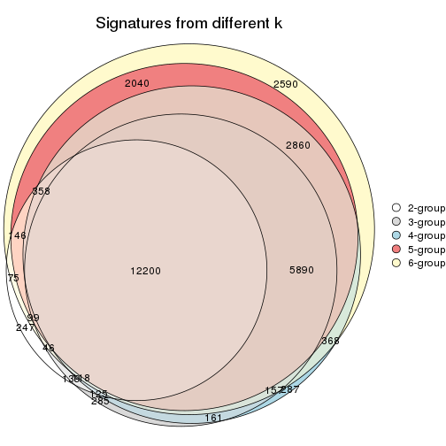
get_signature() returns a data frame invisibly. TO get the list of signatures, the function
call should be assigned to a variable explicitly. In following code, if plot argument is set
to FALSE, no heatmap is plotted while only the differential analysis is performed.
# code only for demonstration
tb = get_signature(res, k = ..., plot = FALSE)
An example of the output of tb is:
#> which_row fdr mean_1 mean_2 scaled_mean_1 scaled_mean_2 km
#> 1 38 0.042760348 8.373488 9.131774 -0.5533452 0.5164555 1
#> 2 40 0.018707592 7.106213 8.469186 -0.6173731 0.5762149 1
#> 3 55 0.019134737 10.221463 11.207825 -0.6159697 0.5749050 1
#> 4 59 0.006059896 5.921854 7.869574 -0.6899429 0.6439467 1
#> 5 60 0.018055526 8.928898 10.211722 -0.6204761 0.5791110 1
#> 6 98 0.009384629 15.714769 14.887706 0.6635654 -0.6193277 2
...
The columns in tb are:
which_row: row indices corresponding to the input matrix.fdr: FDR for the differential test. mean_x: The mean value in group x.scaled_mean_x: The mean value in group x after rows are scaled.km: Row groups if k-means clustering is applied to rows.UMAP plot which shows how samples are separated.
dimension_reduction(res, k = 2, method = "UMAP")

dimension_reduction(res, k = 3, method = "UMAP")
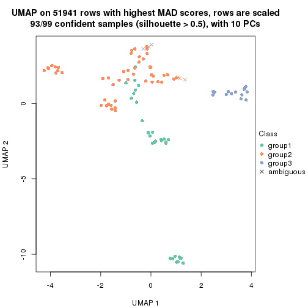
dimension_reduction(res, k = 4, method = "UMAP")
dimension_reduction(res, k = 5, method = "UMAP")
dimension_reduction(res, k = 6, method = "UMAP")
Following heatmap shows how subgroups are split when increasing k:
collect_classes(res)
Test correlation between subgroups and known annotations. If the known annotation is numeric, one-way ANOVA test is applied, and if the known annotation is discrete, chi-squared contingency table test is applied.
test_to_known_factors(res)
#> n protocol(p) individual(p) disease.state(p) k
#> MAD:NMF 99 1 1.88e-10 3.01e-16 2
#> MAD:NMF 93 1 3.93e-18 1.73e-29 3
#> MAD:NMF 96 1 7.81e-26 1.31e-44 4
#> MAD:NMF 99 1 1.19e-34 6.63e-49 5
#> MAD:NMF 96 1 2.14e-39 3.86e-48 6
If matrix rows can be associated to genes, consider to use functional_enrichment(res,
...) to perform function enrichment for the signature genes. See this vignette for more detailed explanations.
The object with results only for a single top-value method and a single partition method can be extracted as:
res = res_list["ATC", "hclust"]
# you can also extract it by
# res = res_list["ATC:hclust"]
A summary of res and all the functions that can be applied to it:
res
#> A 'ConsensusPartition' object with k = 2, 3, 4, 5, 6.
#> On a matrix with 51941 rows and 99 columns.
#> Top rows (1000, 2000, 3000, 4000, 5000) are extracted by 'ATC' method.
#> Subgroups are detected by 'hclust' method.
#> Performed in total 1250 partitions by row resampling.
#> Best k for subgroups seems to be 4.
#>
#> Following methods can be applied to this 'ConsensusPartition' object:
#> [1] "cola_report" "collect_classes" "collect_plots"
#> [4] "collect_stats" "colnames" "compare_signatures"
#> [7] "consensus_heatmap" "dimension_reduction" "functional_enrichment"
#> [10] "get_anno_col" "get_anno" "get_classes"
#> [13] "get_consensus" "get_matrix" "get_membership"
#> [16] "get_param" "get_signatures" "get_stats"
#> [19] "is_best_k" "is_stable_k" "membership_heatmap"
#> [22] "ncol" "nrow" "plot_ecdf"
#> [25] "rownames" "select_partition_number" "show"
#> [28] "suggest_best_k" "test_to_known_factors"
collect_plots() function collects all the plots made from res for all k (number of partitions)
into one single page to provide an easy and fast comparison between different k.
collect_plots(res)
The plots are:
k and the heatmap of
predicted classes for each k.k.k.k.All the plots in panels can be made by individual functions and they are plotted later in this section.
select_partition_number() produces several plots showing different
statistics for choosing “optimized” k. There are following statistics:
k;k, the area increased is defined as \(A_k - A_{k-1}\).The detailed explanations of these statistics can be found in the cola vignette.
Generally speaking, lower PAC score, higher mean silhouette score or higher
concordance corresponds to better partition. Rand index and Jaccard index
measure how similar the current partition is compared to partition with k-1.
If they are too similar, we won't accept k is better than k-1.
select_partition_number(res)
The numeric values for all these statistics can be obtained by get_stats().
get_stats(res)
#> k 1-PAC mean_silhouette concordance area_increased Rand Jaccard
#> 2 2 0.833 0.935 0.967 0.2982 0.740 0.740
#> 3 3 0.535 0.845 0.872 1.0210 0.638 0.511
#> 4 4 0.649 0.846 0.895 0.1772 0.918 0.784
#> 5 5 0.683 0.739 0.822 0.0823 0.948 0.825
#> 6 6 0.739 0.758 0.804 0.0542 0.926 0.706
suggest_best_k() suggests the best \(k\) based on these statistics. The rules are as follows:
suggest_best_k(res)
#> [1] 4
Following shows the table of the partitions (You need to click the show/hide
code output link to see it). The membership matrix (columns with name p*)
is inferred by
clue::cl_consensus()
function with the SE method. Basically the value in the membership matrix
represents the probability to belong to a certain group. The finall class
label for an item is determined with the group with highest probability it
belongs to.
In get_classes() function, the entropy is calculated from the membership
matrix and the silhouette score is calculated from the consensus matrix.
cbind(get_classes(res, k = 2), get_membership(res, k = 2))
#> class entropy silhouette p1 p2
#> GSM187698 2 0.4562 0.892 0.096 0.904
#> GSM187701 2 0.3733 0.911 0.072 0.928
#> GSM187704 2 0.0000 0.959 0.000 1.000
#> GSM187707 2 0.0000 0.959 0.000 1.000
#> GSM187710 2 0.0000 0.959 0.000 1.000
#> GSM187713 2 0.0000 0.959 0.000 1.000
#> GSM187716 2 0.0000 0.959 0.000 1.000
#> GSM187719 1 0.0000 1.000 1.000 0.000
#> GSM187722 2 0.4562 0.892 0.096 0.904
#> GSM187725 2 0.0000 0.959 0.000 1.000
#> GSM187728 2 0.0000 0.959 0.000 1.000
#> GSM187731 2 0.0000 0.959 0.000 1.000
#> GSM187734 2 0.0000 0.959 0.000 1.000
#> GSM187737 2 0.0000 0.959 0.000 1.000
#> GSM187740 2 0.0000 0.959 0.000 1.000
#> GSM187743 1 0.0000 1.000 1.000 0.000
#> GSM187746 2 0.0938 0.952 0.012 0.988
#> GSM187749 2 0.0000 0.959 0.000 1.000
#> GSM187752 2 0.0000 0.959 0.000 1.000
#> GSM187755 2 0.0000 0.959 0.000 1.000
#> GSM187758 2 0.0000 0.959 0.000 1.000
#> GSM187761 2 0.0000 0.959 0.000 1.000
#> GSM187764 2 0.0000 0.959 0.000 1.000
#> GSM187767 2 0.0000 0.959 0.000 1.000
#> GSM187770 2 0.8499 0.682 0.276 0.724
#> GSM187771 2 0.8499 0.682 0.276 0.724
#> GSM187772 2 0.8499 0.682 0.276 0.724
#> GSM187780 1 0.0000 1.000 1.000 0.000
#> GSM187781 1 0.0000 1.000 1.000 0.000
#> GSM187782 1 0.0000 1.000 1.000 0.000
#> GSM187788 2 0.0000 0.959 0.000 1.000
#> GSM187789 2 0.0000 0.959 0.000 1.000
#> GSM187790 2 0.0000 0.959 0.000 1.000
#> GSM187699 2 0.4562 0.892 0.096 0.904
#> GSM187702 2 0.3733 0.911 0.072 0.928
#> GSM187705 2 0.0000 0.959 0.000 1.000
#> GSM187708 2 0.0000 0.959 0.000 1.000
#> GSM187711 2 0.0000 0.959 0.000 1.000
#> GSM187714 2 0.0000 0.959 0.000 1.000
#> GSM187717 2 0.0000 0.959 0.000 1.000
#> GSM187720 1 0.0000 1.000 1.000 0.000
#> GSM187723 2 0.4562 0.892 0.096 0.904
#> GSM187726 2 0.0000 0.959 0.000 1.000
#> GSM187729 2 0.0000 0.959 0.000 1.000
#> GSM187732 2 0.0000 0.959 0.000 1.000
#> GSM187735 2 0.0000 0.959 0.000 1.000
#> GSM187738 2 0.0000 0.959 0.000 1.000
#> GSM187741 2 0.0000 0.959 0.000 1.000
#> GSM187744 1 0.0000 1.000 1.000 0.000
#> GSM187747 2 0.0938 0.952 0.012 0.988
#> GSM187750 2 0.0000 0.959 0.000 1.000
#> GSM187753 2 0.0000 0.959 0.000 1.000
#> GSM187756 2 0.0000 0.959 0.000 1.000
#> GSM187759 2 0.0000 0.959 0.000 1.000
#> GSM187762 2 0.0000 0.959 0.000 1.000
#> GSM187765 2 0.0000 0.959 0.000 1.000
#> GSM187768 2 0.0000 0.959 0.000 1.000
#> GSM187773 2 0.8499 0.682 0.276 0.724
#> GSM187774 2 0.8499 0.682 0.276 0.724
#> GSM187775 2 0.8499 0.682 0.276 0.724
#> GSM187776 1 0.0000 1.000 1.000 0.000
#> GSM187783 1 0.0000 1.000 1.000 0.000
#> GSM187784 1 0.0000 1.000 1.000 0.000
#> GSM187791 2 0.0000 0.959 0.000 1.000
#> GSM187792 2 0.0000 0.959 0.000 1.000
#> GSM187793 2 0.0000 0.959 0.000 1.000
#> GSM187700 2 0.4562 0.892 0.096 0.904
#> GSM187703 2 0.3733 0.911 0.072 0.928
#> GSM187706 2 0.0000 0.959 0.000 1.000
#> GSM187709 2 0.0000 0.959 0.000 1.000
#> GSM187712 2 0.0000 0.959 0.000 1.000
#> GSM187715 2 0.0000 0.959 0.000 1.000
#> GSM187718 2 0.0000 0.959 0.000 1.000
#> GSM187721 1 0.0000 1.000 1.000 0.000
#> GSM187724 2 0.4562 0.892 0.096 0.904
#> GSM187727 2 0.0000 0.959 0.000 1.000
#> GSM187730 2 0.0000 0.959 0.000 1.000
#> GSM187733 2 0.0000 0.959 0.000 1.000
#> GSM187736 2 0.0000 0.959 0.000 1.000
#> GSM187739 2 0.0000 0.959 0.000 1.000
#> GSM187742 2 0.0000 0.959 0.000 1.000
#> GSM187745 1 0.0000 1.000 1.000 0.000
#> GSM187748 2 0.0938 0.952 0.012 0.988
#> GSM187751 2 0.0000 0.959 0.000 1.000
#> GSM187754 2 0.0000 0.959 0.000 1.000
#> GSM187757 2 0.0000 0.959 0.000 1.000
#> GSM187760 2 0.0000 0.959 0.000 1.000
#> GSM187763 2 0.0000 0.959 0.000 1.000
#> GSM187766 2 0.0000 0.959 0.000 1.000
#> GSM187769 2 0.0000 0.959 0.000 1.000
#> GSM187777 2 0.8499 0.682 0.276 0.724
#> GSM187778 2 0.8499 0.682 0.276 0.724
#> GSM187779 2 0.8499 0.682 0.276 0.724
#> GSM187785 1 0.0000 1.000 1.000 0.000
#> GSM187786 1 0.0000 1.000 1.000 0.000
#> GSM187787 1 0.0000 1.000 1.000 0.000
#> GSM187794 2 0.0000 0.959 0.000 1.000
#> GSM187795 2 0.0000 0.959 0.000 1.000
#> GSM187796 2 0.0000 0.959 0.000 1.000
cbind(get_classes(res, k = 3), get_membership(res, k = 3))
#> class entropy silhouette p1 p2 p3
#> GSM187698 3 0.665 0.819 0.084 0.172 0.744
#> GSM187701 3 0.649 0.815 0.060 0.200 0.740
#> GSM187704 3 0.465 0.809 0.000 0.208 0.792
#> GSM187707 2 0.000 0.933 0.000 1.000 0.000
#> GSM187710 2 0.000 0.933 0.000 1.000 0.000
#> GSM187713 3 0.207 0.743 0.000 0.060 0.940
#> GSM187716 3 0.207 0.743 0.000 0.060 0.940
#> GSM187719 1 0.000 1.000 1.000 0.000 0.000
#> GSM187722 3 0.665 0.819 0.084 0.172 0.744
#> GSM187725 3 0.562 0.750 0.000 0.308 0.692
#> GSM187728 2 0.000 0.933 0.000 1.000 0.000
#> GSM187731 2 0.129 0.932 0.000 0.968 0.032
#> GSM187734 2 0.129 0.932 0.000 0.968 0.032
#> GSM187737 2 0.129 0.932 0.000 0.968 0.032
#> GSM187740 2 0.000 0.933 0.000 1.000 0.000
#> GSM187743 1 0.000 1.000 1.000 0.000 0.000
#> GSM187746 3 0.400 0.819 0.000 0.160 0.840
#> GSM187749 3 0.562 0.750 0.000 0.308 0.692
#> GSM187752 2 0.129 0.932 0.000 0.968 0.032
#> GSM187755 3 0.164 0.744 0.000 0.044 0.956
#> GSM187758 3 0.562 0.750 0.000 0.308 0.692
#> GSM187761 2 0.000 0.933 0.000 1.000 0.000
#> GSM187764 3 0.164 0.744 0.000 0.044 0.956
#> GSM187767 2 0.000 0.933 0.000 1.000 0.000
#> GSM187770 3 0.881 0.696 0.264 0.164 0.572
#> GSM187771 3 0.881 0.696 0.264 0.164 0.572
#> GSM187772 3 0.881 0.696 0.264 0.164 0.572
#> GSM187780 1 0.000 1.000 1.000 0.000 0.000
#> GSM187781 1 0.000 1.000 1.000 0.000 0.000
#> GSM187782 1 0.000 1.000 1.000 0.000 0.000
#> GSM187788 2 0.129 0.932 0.000 0.968 0.032
#> GSM187789 2 0.129 0.932 0.000 0.968 0.032
#> GSM187790 2 0.129 0.932 0.000 0.968 0.032
#> GSM187699 3 0.665 0.819 0.084 0.172 0.744
#> GSM187702 3 0.649 0.815 0.060 0.200 0.740
#> GSM187705 3 0.465 0.809 0.000 0.208 0.792
#> GSM187708 2 0.000 0.933 0.000 1.000 0.000
#> GSM187711 2 0.000 0.933 0.000 1.000 0.000
#> GSM187714 3 0.207 0.743 0.000 0.060 0.940
#> GSM187717 3 0.207 0.743 0.000 0.060 0.940
#> GSM187720 1 0.000 1.000 1.000 0.000 0.000
#> GSM187723 3 0.665 0.819 0.084 0.172 0.744
#> GSM187726 3 0.562 0.750 0.000 0.308 0.692
#> GSM187729 2 0.000 0.933 0.000 1.000 0.000
#> GSM187732 2 0.620 0.435 0.000 0.576 0.424
#> GSM187735 2 0.620 0.435 0.000 0.576 0.424
#> GSM187738 2 0.129 0.932 0.000 0.968 0.032
#> GSM187741 2 0.000 0.933 0.000 1.000 0.000
#> GSM187744 1 0.000 1.000 1.000 0.000 0.000
#> GSM187747 3 0.400 0.819 0.000 0.160 0.840
#> GSM187750 3 0.562 0.750 0.000 0.308 0.692
#> GSM187753 2 0.129 0.932 0.000 0.968 0.032
#> GSM187756 3 0.164 0.744 0.000 0.044 0.956
#> GSM187759 3 0.465 0.809 0.000 0.208 0.792
#> GSM187762 2 0.000 0.933 0.000 1.000 0.000
#> GSM187765 3 0.164 0.744 0.000 0.044 0.956
#> GSM187768 2 0.000 0.933 0.000 1.000 0.000
#> GSM187773 3 0.881 0.696 0.264 0.164 0.572
#> GSM187774 3 0.881 0.696 0.264 0.164 0.572
#> GSM187775 3 0.881 0.696 0.264 0.164 0.572
#> GSM187776 1 0.000 1.000 1.000 0.000 0.000
#> GSM187783 1 0.000 1.000 1.000 0.000 0.000
#> GSM187784 1 0.000 1.000 1.000 0.000 0.000
#> GSM187791 2 0.129 0.932 0.000 0.968 0.032
#> GSM187792 2 0.129 0.932 0.000 0.968 0.032
#> GSM187793 2 0.129 0.932 0.000 0.968 0.032
#> GSM187700 3 0.665 0.819 0.084 0.172 0.744
#> GSM187703 3 0.649 0.815 0.060 0.200 0.740
#> GSM187706 3 0.465 0.809 0.000 0.208 0.792
#> GSM187709 2 0.000 0.933 0.000 1.000 0.000
#> GSM187712 2 0.000 0.933 0.000 1.000 0.000
#> GSM187715 3 0.207 0.743 0.000 0.060 0.940
#> GSM187718 3 0.207 0.743 0.000 0.060 0.940
#> GSM187721 1 0.000 1.000 1.000 0.000 0.000
#> GSM187724 3 0.665 0.819 0.084 0.172 0.744
#> GSM187727 3 0.562 0.750 0.000 0.308 0.692
#> GSM187730 2 0.000 0.933 0.000 1.000 0.000
#> GSM187733 2 0.620 0.435 0.000 0.576 0.424
#> GSM187736 2 0.620 0.435 0.000 0.576 0.424
#> GSM187739 2 0.129 0.932 0.000 0.968 0.032
#> GSM187742 2 0.000 0.933 0.000 1.000 0.000
#> GSM187745 1 0.000 1.000 1.000 0.000 0.000
#> GSM187748 3 0.400 0.819 0.000 0.160 0.840
#> GSM187751 3 0.562 0.750 0.000 0.308 0.692
#> GSM187754 2 0.129 0.932 0.000 0.968 0.032
#> GSM187757 3 0.164 0.744 0.000 0.044 0.956
#> GSM187760 3 0.465 0.809 0.000 0.208 0.792
#> GSM187763 2 0.000 0.933 0.000 1.000 0.000
#> GSM187766 3 0.164 0.744 0.000 0.044 0.956
#> GSM187769 2 0.000 0.933 0.000 1.000 0.000
#> GSM187777 3 0.881 0.696 0.264 0.164 0.572
#> GSM187778 3 0.881 0.696 0.264 0.164 0.572
#> GSM187779 3 0.881 0.696 0.264 0.164 0.572
#> GSM187785 1 0.000 1.000 1.000 0.000 0.000
#> GSM187786 1 0.000 1.000 1.000 0.000 0.000
#> GSM187787 1 0.000 1.000 1.000 0.000 0.000
#> GSM187794 2 0.129 0.932 0.000 0.968 0.032
#> GSM187795 2 0.129 0.932 0.000 0.968 0.032
#> GSM187796 2 0.129 0.932 0.000 0.968 0.032
cbind(get_classes(res, k = 4), get_membership(res, k = 4))
#> class entropy silhouette p1 p2 p3 p4
#> GSM187698 3 0.1406 0.831 0.024 0.000 0.960 0.016
#> GSM187701 3 0.0927 0.829 0.000 0.008 0.976 0.016
#> GSM187704 3 0.4799 0.724 0.000 0.032 0.744 0.224
#> GSM187707 2 0.1474 0.859 0.000 0.948 0.052 0.000
#> GSM187710 2 0.0188 0.859 0.000 0.996 0.004 0.000
#> GSM187713 4 0.0592 0.988 0.000 0.016 0.000 0.984
#> GSM187716 4 0.0592 0.988 0.000 0.016 0.000 0.984
#> GSM187719 1 0.0188 0.996 0.996 0.000 0.004 0.000
#> GSM187722 3 0.1593 0.832 0.024 0.004 0.956 0.016
#> GSM187725 3 0.3638 0.799 0.000 0.120 0.848 0.032
#> GSM187728 2 0.0188 0.859 0.000 0.996 0.004 0.000
#> GSM187731 2 0.4423 0.824 0.000 0.788 0.176 0.036
#> GSM187734 2 0.4423 0.824 0.000 0.788 0.176 0.036
#> GSM187737 2 0.3279 0.852 0.000 0.872 0.096 0.032
#> GSM187740 2 0.0000 0.861 0.000 1.000 0.000 0.000
#> GSM187743 1 0.0000 0.999 1.000 0.000 0.000 0.000
#> GSM187746 3 0.4008 0.714 0.000 0.000 0.756 0.244
#> GSM187749 3 0.3638 0.799 0.000 0.120 0.848 0.032
#> GSM187752 2 0.4335 0.832 0.000 0.796 0.168 0.036
#> GSM187755 4 0.0188 0.988 0.000 0.000 0.004 0.996
#> GSM187758 3 0.3638 0.799 0.000 0.120 0.848 0.032
#> GSM187761 2 0.0000 0.861 0.000 1.000 0.000 0.000
#> GSM187764 4 0.0188 0.988 0.000 0.000 0.004 0.996
#> GSM187767 2 0.0188 0.859 0.000 0.996 0.004 0.000
#> GSM187770 3 0.3649 0.759 0.204 0.000 0.796 0.000
#> GSM187771 3 0.3649 0.759 0.204 0.000 0.796 0.000
#> GSM187772 3 0.3649 0.759 0.204 0.000 0.796 0.000
#> GSM187780 1 0.0000 0.999 1.000 0.000 0.000 0.000
#> GSM187781 1 0.0000 0.999 1.000 0.000 0.000 0.000
#> GSM187782 1 0.0000 0.999 1.000 0.000 0.000 0.000
#> GSM187788 2 0.4335 0.832 0.000 0.796 0.168 0.036
#> GSM187789 2 0.4335 0.832 0.000 0.796 0.168 0.036
#> GSM187790 2 0.4335 0.832 0.000 0.796 0.168 0.036
#> GSM187699 3 0.1406 0.831 0.024 0.000 0.960 0.016
#> GSM187702 3 0.1182 0.829 0.000 0.016 0.968 0.016
#> GSM187705 3 0.4799 0.724 0.000 0.032 0.744 0.224
#> GSM187708 2 0.0000 0.861 0.000 1.000 0.000 0.000
#> GSM187711 2 0.0188 0.859 0.000 0.996 0.004 0.000
#> GSM187714 4 0.0592 0.988 0.000 0.016 0.000 0.984
#> GSM187717 4 0.0592 0.988 0.000 0.016 0.000 0.984
#> GSM187720 1 0.0188 0.996 0.996 0.000 0.004 0.000
#> GSM187723 3 0.1593 0.832 0.024 0.004 0.956 0.016
#> GSM187726 3 0.3638 0.799 0.000 0.120 0.848 0.032
#> GSM187729 2 0.0188 0.859 0.000 0.996 0.004 0.000
#> GSM187732 2 0.5345 0.391 0.000 0.560 0.012 0.428
#> GSM187735 2 0.5345 0.391 0.000 0.560 0.012 0.428
#> GSM187738 2 0.2131 0.856 0.000 0.932 0.036 0.032
#> GSM187741 2 0.0000 0.861 0.000 1.000 0.000 0.000
#> GSM187744 1 0.0000 0.999 1.000 0.000 0.000 0.000
#> GSM187747 3 0.4008 0.714 0.000 0.000 0.756 0.244
#> GSM187750 3 0.3638 0.799 0.000 0.120 0.848 0.032
#> GSM187753 2 0.4335 0.832 0.000 0.796 0.168 0.036
#> GSM187756 4 0.0188 0.988 0.000 0.000 0.004 0.996
#> GSM187759 3 0.4799 0.724 0.000 0.032 0.744 0.224
#> GSM187762 2 0.0000 0.861 0.000 1.000 0.000 0.000
#> GSM187765 4 0.0188 0.988 0.000 0.000 0.004 0.996
#> GSM187768 2 0.0188 0.859 0.000 0.996 0.004 0.000
#> GSM187773 3 0.3649 0.759 0.204 0.000 0.796 0.000
#> GSM187774 3 0.3649 0.759 0.204 0.000 0.796 0.000
#> GSM187775 3 0.3649 0.759 0.204 0.000 0.796 0.000
#> GSM187776 1 0.0000 0.999 1.000 0.000 0.000 0.000
#> GSM187783 1 0.0000 0.999 1.000 0.000 0.000 0.000
#> GSM187784 1 0.0000 0.999 1.000 0.000 0.000 0.000
#> GSM187791 2 0.4335 0.832 0.000 0.796 0.168 0.036
#> GSM187792 2 0.4335 0.832 0.000 0.796 0.168 0.036
#> GSM187793 2 0.4335 0.832 0.000 0.796 0.168 0.036
#> GSM187700 3 0.1406 0.831 0.024 0.000 0.960 0.016
#> GSM187703 3 0.1182 0.829 0.000 0.016 0.968 0.016
#> GSM187706 3 0.4799 0.724 0.000 0.032 0.744 0.224
#> GSM187709 2 0.0000 0.861 0.000 1.000 0.000 0.000
#> GSM187712 2 0.0188 0.859 0.000 0.996 0.004 0.000
#> GSM187715 4 0.0592 0.988 0.000 0.016 0.000 0.984
#> GSM187718 4 0.0592 0.988 0.000 0.016 0.000 0.984
#> GSM187721 1 0.0188 0.996 0.996 0.000 0.004 0.000
#> GSM187724 3 0.1593 0.832 0.024 0.004 0.956 0.016
#> GSM187727 3 0.3638 0.799 0.000 0.120 0.848 0.032
#> GSM187730 2 0.0188 0.859 0.000 0.996 0.004 0.000
#> GSM187733 2 0.5345 0.391 0.000 0.560 0.012 0.428
#> GSM187736 2 0.5345 0.391 0.000 0.560 0.012 0.428
#> GSM187739 2 0.2131 0.856 0.000 0.932 0.036 0.032
#> GSM187742 2 0.0000 0.861 0.000 1.000 0.000 0.000
#> GSM187745 1 0.0000 0.999 1.000 0.000 0.000 0.000
#> GSM187748 3 0.4008 0.714 0.000 0.000 0.756 0.244
#> GSM187751 3 0.3638 0.799 0.000 0.120 0.848 0.032
#> GSM187754 2 0.4335 0.832 0.000 0.796 0.168 0.036
#> GSM187757 4 0.0188 0.988 0.000 0.000 0.004 0.996
#> GSM187760 3 0.4799 0.724 0.000 0.032 0.744 0.224
#> GSM187763 2 0.0000 0.861 0.000 1.000 0.000 0.000
#> GSM187766 4 0.0188 0.988 0.000 0.000 0.004 0.996
#> GSM187769 2 0.0188 0.859 0.000 0.996 0.004 0.000
#> GSM187777 3 0.3649 0.759 0.204 0.000 0.796 0.000
#> GSM187778 3 0.3649 0.759 0.204 0.000 0.796 0.000
#> GSM187779 3 0.3649 0.759 0.204 0.000 0.796 0.000
#> GSM187785 1 0.0000 0.999 1.000 0.000 0.000 0.000
#> GSM187786 1 0.0000 0.999 1.000 0.000 0.000 0.000
#> GSM187787 1 0.0000 0.999 1.000 0.000 0.000 0.000
#> GSM187794 2 0.4335 0.832 0.000 0.796 0.168 0.036
#> GSM187795 2 0.4335 0.832 0.000 0.796 0.168 0.036
#> GSM187796 2 0.4335 0.832 0.000 0.796 0.168 0.036
cbind(get_classes(res, k = 5), get_membership(res, k = 5))
#> class entropy silhouette p1 p2 p3 p4 p5
#> GSM187698 4 0.3700 0.542 0.000 0.008 0.240 0.752 0.000
#> GSM187701 4 0.4414 0.516 0.000 0.008 0.248 0.720 0.024
#> GSM187704 3 0.6707 0.590 0.000 0.144 0.472 0.364 0.020
#> GSM187707 5 0.1956 0.788 0.000 0.008 0.076 0.000 0.916
#> GSM187710 5 0.3752 0.656 0.000 0.000 0.292 0.000 0.708
#> GSM187713 2 0.0290 0.988 0.000 0.992 0.000 0.000 0.008
#> GSM187716 2 0.0290 0.988 0.000 0.992 0.000 0.000 0.008
#> GSM187719 1 0.0510 0.986 0.984 0.000 0.000 0.016 0.000
#> GSM187722 4 0.3826 0.543 0.000 0.008 0.236 0.752 0.004
#> GSM187725 3 0.4268 0.702 0.000 0.000 0.708 0.268 0.024
#> GSM187728 5 0.3752 0.656 0.000 0.000 0.292 0.000 0.708
#> GSM187731 5 0.3317 0.765 0.000 0.004 0.188 0.004 0.804
#> GSM187734 5 0.3317 0.765 0.000 0.004 0.188 0.004 0.804
#> GSM187737 5 0.2629 0.784 0.000 0.012 0.104 0.004 0.880
#> GSM187740 5 0.0992 0.784 0.000 0.008 0.024 0.000 0.968
#> GSM187743 1 0.0000 0.997 1.000 0.000 0.000 0.000 0.000
#> GSM187746 4 0.5668 0.136 0.000 0.196 0.172 0.632 0.000
#> GSM187749 3 0.4268 0.702 0.000 0.000 0.708 0.268 0.024
#> GSM187752 5 0.3243 0.770 0.000 0.004 0.180 0.004 0.812
#> GSM187755 2 0.0290 0.988 0.000 0.992 0.000 0.008 0.000
#> GSM187758 3 0.4268 0.702 0.000 0.000 0.708 0.268 0.024
#> GSM187761 5 0.0992 0.784 0.000 0.008 0.024 0.000 0.968
#> GSM187764 2 0.0290 0.988 0.000 0.992 0.000 0.008 0.000
#> GSM187767 5 0.3752 0.656 0.000 0.000 0.292 0.000 0.708
#> GSM187770 4 0.2813 0.611 0.168 0.000 0.000 0.832 0.000
#> GSM187771 4 0.2813 0.611 0.168 0.000 0.000 0.832 0.000
#> GSM187772 4 0.2813 0.611 0.168 0.000 0.000 0.832 0.000
#> GSM187780 1 0.0000 0.997 1.000 0.000 0.000 0.000 0.000
#> GSM187781 1 0.0000 0.997 1.000 0.000 0.000 0.000 0.000
#> GSM187782 1 0.0000 0.997 1.000 0.000 0.000 0.000 0.000
#> GSM187788 5 0.3243 0.770 0.000 0.004 0.180 0.004 0.812
#> GSM187789 5 0.3243 0.770 0.000 0.004 0.180 0.004 0.812
#> GSM187790 5 0.3243 0.770 0.000 0.004 0.180 0.004 0.812
#> GSM187699 4 0.3700 0.542 0.000 0.008 0.240 0.752 0.000
#> GSM187702 4 0.4522 0.515 0.000 0.008 0.240 0.720 0.032
#> GSM187705 3 0.6707 0.590 0.000 0.144 0.472 0.364 0.020
#> GSM187708 5 0.0992 0.784 0.000 0.008 0.024 0.000 0.968
#> GSM187711 5 0.3752 0.656 0.000 0.000 0.292 0.000 0.708
#> GSM187714 2 0.0290 0.988 0.000 0.992 0.000 0.000 0.008
#> GSM187717 2 0.0290 0.988 0.000 0.992 0.000 0.000 0.008
#> GSM187720 1 0.0510 0.986 0.984 0.000 0.000 0.016 0.000
#> GSM187723 4 0.3826 0.543 0.000 0.008 0.236 0.752 0.004
#> GSM187726 3 0.4268 0.702 0.000 0.000 0.708 0.268 0.024
#> GSM187729 5 0.3752 0.656 0.000 0.000 0.292 0.000 0.708
#> GSM187732 5 0.5234 0.422 0.000 0.396 0.040 0.004 0.560
#> GSM187735 5 0.5234 0.422 0.000 0.396 0.040 0.004 0.560
#> GSM187738 5 0.1682 0.787 0.000 0.012 0.044 0.004 0.940
#> GSM187741 5 0.0992 0.784 0.000 0.008 0.024 0.000 0.968
#> GSM187744 1 0.0000 0.997 1.000 0.000 0.000 0.000 0.000
#> GSM187747 4 0.5668 0.136 0.000 0.196 0.172 0.632 0.000
#> GSM187750 3 0.4268 0.702 0.000 0.000 0.708 0.268 0.024
#> GSM187753 5 0.3243 0.770 0.000 0.004 0.180 0.004 0.812
#> GSM187756 2 0.0290 0.988 0.000 0.992 0.000 0.008 0.000
#> GSM187759 3 0.6707 0.590 0.000 0.144 0.472 0.364 0.020
#> GSM187762 5 0.0992 0.784 0.000 0.008 0.024 0.000 0.968
#> GSM187765 2 0.0290 0.988 0.000 0.992 0.000 0.008 0.000
#> GSM187768 5 0.3752 0.656 0.000 0.000 0.292 0.000 0.708
#> GSM187773 4 0.2813 0.611 0.168 0.000 0.000 0.832 0.000
#> GSM187774 4 0.2813 0.611 0.168 0.000 0.000 0.832 0.000
#> GSM187775 4 0.2813 0.611 0.168 0.000 0.000 0.832 0.000
#> GSM187776 1 0.0000 0.997 1.000 0.000 0.000 0.000 0.000
#> GSM187783 1 0.0000 0.997 1.000 0.000 0.000 0.000 0.000
#> GSM187784 1 0.0000 0.997 1.000 0.000 0.000 0.000 0.000
#> GSM187791 5 0.3243 0.770 0.000 0.004 0.180 0.004 0.812
#> GSM187792 5 0.3243 0.770 0.000 0.004 0.180 0.004 0.812
#> GSM187793 5 0.3243 0.770 0.000 0.004 0.180 0.004 0.812
#> GSM187700 4 0.3700 0.542 0.000 0.008 0.240 0.752 0.000
#> GSM187703 4 0.4522 0.515 0.000 0.008 0.240 0.720 0.032
#> GSM187706 3 0.6707 0.590 0.000 0.144 0.472 0.364 0.020
#> GSM187709 5 0.0992 0.784 0.000 0.008 0.024 0.000 0.968
#> GSM187712 5 0.3752 0.656 0.000 0.000 0.292 0.000 0.708
#> GSM187715 2 0.0290 0.988 0.000 0.992 0.000 0.000 0.008
#> GSM187718 2 0.0290 0.988 0.000 0.992 0.000 0.000 0.008
#> GSM187721 1 0.0510 0.986 0.984 0.000 0.000 0.016 0.000
#> GSM187724 4 0.3826 0.543 0.000 0.008 0.236 0.752 0.004
#> GSM187727 3 0.4268 0.702 0.000 0.000 0.708 0.268 0.024
#> GSM187730 5 0.3752 0.656 0.000 0.000 0.292 0.000 0.708
#> GSM187733 5 0.5234 0.422 0.000 0.396 0.040 0.004 0.560
#> GSM187736 5 0.5234 0.422 0.000 0.396 0.040 0.004 0.560
#> GSM187739 5 0.1682 0.787 0.000 0.012 0.044 0.004 0.940
#> GSM187742 5 0.0992 0.784 0.000 0.008 0.024 0.000 0.968
#> GSM187745 1 0.0000 0.997 1.000 0.000 0.000 0.000 0.000
#> GSM187748 4 0.5668 0.136 0.000 0.196 0.172 0.632 0.000
#> GSM187751 3 0.4268 0.702 0.000 0.000 0.708 0.268 0.024
#> GSM187754 5 0.3243 0.770 0.000 0.004 0.180 0.004 0.812
#> GSM187757 2 0.0290 0.988 0.000 0.992 0.000 0.008 0.000
#> GSM187760 3 0.6707 0.590 0.000 0.144 0.472 0.364 0.020
#> GSM187763 5 0.0992 0.784 0.000 0.008 0.024 0.000 0.968
#> GSM187766 2 0.0290 0.988 0.000 0.992 0.000 0.008 0.000
#> GSM187769 5 0.3752 0.656 0.000 0.000 0.292 0.000 0.708
#> GSM187777 4 0.2813 0.611 0.168 0.000 0.000 0.832 0.000
#> GSM187778 4 0.2813 0.611 0.168 0.000 0.000 0.832 0.000
#> GSM187779 4 0.2813 0.611 0.168 0.000 0.000 0.832 0.000
#> GSM187785 1 0.0000 0.997 1.000 0.000 0.000 0.000 0.000
#> GSM187786 1 0.0000 0.997 1.000 0.000 0.000 0.000 0.000
#> GSM187787 1 0.0000 0.997 1.000 0.000 0.000 0.000 0.000
#> GSM187794 5 0.3243 0.770 0.000 0.004 0.180 0.004 0.812
#> GSM187795 5 0.3243 0.770 0.000 0.004 0.180 0.004 0.812
#> GSM187796 5 0.3243 0.770 0.000 0.004 0.180 0.004 0.812
cbind(get_classes(res, k = 6), get_membership(res, k = 6))
#> class entropy silhouette p1 p2 p3 p4 p5 p6
#> GSM187698 4 0.2362 0.677 0.000 0.000 0.000 0.860 0.136 0.004
#> GSM187701 4 0.2668 0.654 0.000 0.000 0.000 0.828 0.168 0.004
#> GSM187704 3 0.1509 0.624 0.000 0.008 0.948 0.008 0.012 0.024
#> GSM187707 5 0.3230 0.705 0.000 0.212 0.000 0.000 0.776 0.012
#> GSM187710 2 0.2178 1.000 0.000 0.868 0.000 0.000 0.132 0.000
#> GSM187713 6 0.0291 0.989 0.000 0.004 0.000 0.000 0.004 0.992
#> GSM187716 6 0.0291 0.989 0.000 0.004 0.000 0.000 0.004 0.992
#> GSM187719 1 0.1442 0.926 0.944 0.040 0.004 0.012 0.000 0.000
#> GSM187722 4 0.2402 0.678 0.000 0.000 0.000 0.856 0.140 0.004
#> GSM187725 3 0.5936 0.640 0.000 0.084 0.624 0.156 0.136 0.000
#> GSM187728 2 0.2178 1.000 0.000 0.868 0.000 0.000 0.132 0.000
#> GSM187731 5 0.0260 0.795 0.000 0.000 0.000 0.008 0.992 0.000
#> GSM187734 5 0.0260 0.795 0.000 0.000 0.000 0.008 0.992 0.000
#> GSM187737 5 0.2222 0.776 0.000 0.084 0.000 0.008 0.896 0.012
#> GSM187740 5 0.3564 0.667 0.000 0.264 0.000 0.000 0.724 0.012
#> GSM187743 1 0.4264 0.818 0.760 0.108 0.008 0.120 0.000 0.004
#> GSM187746 3 0.5265 -0.166 0.000 0.000 0.512 0.404 0.008 0.076
#> GSM187749 3 0.5936 0.640 0.000 0.084 0.624 0.156 0.136 0.000
#> GSM187752 5 0.0000 0.801 0.000 0.000 0.000 0.000 1.000 0.000
#> GSM187755 6 0.0508 0.989 0.000 0.000 0.000 0.012 0.004 0.984
#> GSM187758 3 0.5936 0.640 0.000 0.084 0.624 0.156 0.136 0.000
#> GSM187761 5 0.3564 0.667 0.000 0.264 0.000 0.000 0.724 0.012
#> GSM187764 6 0.0508 0.989 0.000 0.000 0.000 0.012 0.004 0.984
#> GSM187767 2 0.2178 1.000 0.000 0.868 0.000 0.000 0.132 0.000
#> GSM187770 4 0.5859 0.674 0.040 0.116 0.240 0.600 0.000 0.004
#> GSM187771 4 0.5859 0.674 0.040 0.116 0.240 0.600 0.000 0.004
#> GSM187772 4 0.5859 0.674 0.040 0.116 0.240 0.600 0.000 0.004
#> GSM187780 1 0.0000 0.946 1.000 0.000 0.000 0.000 0.000 0.000
#> GSM187781 1 0.0000 0.946 1.000 0.000 0.000 0.000 0.000 0.000
#> GSM187782 1 0.0000 0.946 1.000 0.000 0.000 0.000 0.000 0.000
#> GSM187788 5 0.0000 0.801 0.000 0.000 0.000 0.000 1.000 0.000
#> GSM187789 5 0.0000 0.801 0.000 0.000 0.000 0.000 1.000 0.000
#> GSM187790 5 0.0000 0.801 0.000 0.000 0.000 0.000 1.000 0.000
#> GSM187699 4 0.2362 0.677 0.000 0.000 0.000 0.860 0.136 0.004
#> GSM187702 4 0.2738 0.653 0.000 0.000 0.000 0.820 0.176 0.004
#> GSM187705 3 0.1509 0.624 0.000 0.008 0.948 0.008 0.012 0.024
#> GSM187708 5 0.3564 0.667 0.000 0.264 0.000 0.000 0.724 0.012
#> GSM187711 2 0.2178 1.000 0.000 0.868 0.000 0.000 0.132 0.000
#> GSM187714 6 0.0291 0.989 0.000 0.004 0.000 0.000 0.004 0.992
#> GSM187717 6 0.0291 0.989 0.000 0.004 0.000 0.000 0.004 0.992
#> GSM187720 1 0.1442 0.926 0.944 0.040 0.004 0.012 0.000 0.000
#> GSM187723 4 0.2402 0.678 0.000 0.000 0.000 0.856 0.140 0.004
#> GSM187726 3 0.5936 0.640 0.000 0.084 0.624 0.156 0.136 0.000
#> GSM187729 2 0.2178 1.000 0.000 0.868 0.000 0.000 0.132 0.000
#> GSM187732 5 0.3737 0.431 0.000 0.000 0.000 0.000 0.608 0.392
#> GSM187735 5 0.3737 0.431 0.000 0.000 0.000 0.000 0.608 0.392
#> GSM187738 5 0.2572 0.751 0.000 0.136 0.000 0.000 0.852 0.012
#> GSM187741 5 0.3564 0.667 0.000 0.264 0.000 0.000 0.724 0.012
#> GSM187744 1 0.4264 0.818 0.760 0.108 0.008 0.120 0.000 0.004
#> GSM187747 3 0.5265 -0.166 0.000 0.000 0.512 0.404 0.008 0.076
#> GSM187750 3 0.5936 0.640 0.000 0.084 0.624 0.156 0.136 0.000
#> GSM187753 5 0.0000 0.801 0.000 0.000 0.000 0.000 1.000 0.000
#> GSM187756 6 0.0508 0.989 0.000 0.000 0.000 0.012 0.004 0.984
#> GSM187759 3 0.1509 0.624 0.000 0.008 0.948 0.008 0.012 0.024
#> GSM187762 5 0.3564 0.667 0.000 0.264 0.000 0.000 0.724 0.012
#> GSM187765 6 0.0508 0.989 0.000 0.000 0.000 0.012 0.004 0.984
#> GSM187768 2 0.2178 1.000 0.000 0.868 0.000 0.000 0.132 0.000
#> GSM187773 4 0.5859 0.674 0.040 0.116 0.240 0.600 0.000 0.004
#> GSM187774 4 0.5859 0.674 0.040 0.116 0.240 0.600 0.000 0.004
#> GSM187775 4 0.5859 0.674 0.040 0.116 0.240 0.600 0.000 0.004
#> GSM187776 1 0.0000 0.946 1.000 0.000 0.000 0.000 0.000 0.000
#> GSM187783 1 0.0000 0.946 1.000 0.000 0.000 0.000 0.000 0.000
#> GSM187784 1 0.0000 0.946 1.000 0.000 0.000 0.000 0.000 0.000
#> GSM187791 5 0.0000 0.801 0.000 0.000 0.000 0.000 1.000 0.000
#> GSM187792 5 0.0000 0.801 0.000 0.000 0.000 0.000 1.000 0.000
#> GSM187793 5 0.0000 0.801 0.000 0.000 0.000 0.000 1.000 0.000
#> GSM187700 4 0.2362 0.677 0.000 0.000 0.000 0.860 0.136 0.004
#> GSM187703 4 0.2738 0.653 0.000 0.000 0.000 0.820 0.176 0.004
#> GSM187706 3 0.1509 0.624 0.000 0.008 0.948 0.008 0.012 0.024
#> GSM187709 5 0.3564 0.667 0.000 0.264 0.000 0.000 0.724 0.012
#> GSM187712 2 0.2178 1.000 0.000 0.868 0.000 0.000 0.132 0.000
#> GSM187715 6 0.0291 0.989 0.000 0.004 0.000 0.000 0.004 0.992
#> GSM187718 6 0.0291 0.989 0.000 0.004 0.000 0.000 0.004 0.992
#> GSM187721 1 0.1442 0.926 0.944 0.040 0.004 0.012 0.000 0.000
#> GSM187724 4 0.2402 0.678 0.000 0.000 0.000 0.856 0.140 0.004
#> GSM187727 3 0.5936 0.640 0.000 0.084 0.624 0.156 0.136 0.000
#> GSM187730 2 0.2178 1.000 0.000 0.868 0.000 0.000 0.132 0.000
#> GSM187733 5 0.3737 0.431 0.000 0.000 0.000 0.000 0.608 0.392
#> GSM187736 5 0.3737 0.431 0.000 0.000 0.000 0.000 0.608 0.392
#> GSM187739 5 0.2572 0.751 0.000 0.136 0.000 0.000 0.852 0.012
#> GSM187742 5 0.3564 0.667 0.000 0.264 0.000 0.000 0.724 0.012
#> GSM187745 1 0.4264 0.818 0.760 0.108 0.008 0.120 0.000 0.004
#> GSM187748 3 0.5265 -0.166 0.000 0.000 0.512 0.404 0.008 0.076
#> GSM187751 3 0.5936 0.640 0.000 0.084 0.624 0.156 0.136 0.000
#> GSM187754 5 0.0000 0.801 0.000 0.000 0.000 0.000 1.000 0.000
#> GSM187757 6 0.0508 0.989 0.000 0.000 0.000 0.012 0.004 0.984
#> GSM187760 3 0.1509 0.624 0.000 0.008 0.948 0.008 0.012 0.024
#> GSM187763 5 0.3564 0.667 0.000 0.264 0.000 0.000 0.724 0.012
#> GSM187766 6 0.0508 0.989 0.000 0.000 0.000 0.012 0.004 0.984
#> GSM187769 2 0.2178 1.000 0.000 0.868 0.000 0.000 0.132 0.000
#> GSM187777 4 0.5859 0.674 0.040 0.116 0.240 0.600 0.000 0.004
#> GSM187778 4 0.5859 0.674 0.040 0.116 0.240 0.600 0.000 0.004
#> GSM187779 4 0.5859 0.674 0.040 0.116 0.240 0.600 0.000 0.004
#> GSM187785 1 0.0000 0.946 1.000 0.000 0.000 0.000 0.000 0.000
#> GSM187786 1 0.0000 0.946 1.000 0.000 0.000 0.000 0.000 0.000
#> GSM187787 1 0.0000 0.946 1.000 0.000 0.000 0.000 0.000 0.000
#> GSM187794 5 0.0000 0.801 0.000 0.000 0.000 0.000 1.000 0.000
#> GSM187795 5 0.0000 0.801 0.000 0.000 0.000 0.000 1.000 0.000
#> GSM187796 5 0.0000 0.801 0.000 0.000 0.000 0.000 1.000 0.000
Heatmaps for the consensus matrix. It visualizes the probability of two samples to be in a same group.
consensus_heatmap(res, k = 2)
consensus_heatmap(res, k = 3)
consensus_heatmap(res, k = 4)
consensus_heatmap(res, k = 5)
consensus_heatmap(res, k = 6)
Heatmaps for the membership of samples in all partitions to see how consistent they are:
membership_heatmap(res, k = 2)
membership_heatmap(res, k = 3)
membership_heatmap(res, k = 4)
membership_heatmap(res, k = 5)
membership_heatmap(res, k = 6)

As soon as we have had the classes for columns, we can look for signatures which are significantly different between classes which can be candidate marks for certain classes. Following are the heatmaps for signatures.
Signature heatmaps where rows are scaled:
get_signatures(res, k = 2)
#> Error: The width or height of the raster image is zero, maybe you forget to turn off the
#> previous graphic device or it was corrupted. Run `dev.off()` to close it.

get_signatures(res, k = 3)
#> Error: The width or height of the raster image is zero, maybe you forget to turn off the
#> previous graphic device or it was corrupted. Run `dev.off()` to close it.

get_signatures(res, k = 4)
#> Error: The width or height of the raster image is zero, maybe you forget to turn off the
#> previous graphic device or it was corrupted. Run `dev.off()` to close it.

get_signatures(res, k = 5)
#> Error: The width or height of the raster image is zero, maybe you forget to turn off the
#> previous graphic device or it was corrupted. Run `dev.off()` to close it.

get_signatures(res, k = 6)
#> Error: The width or height of the raster image is zero, maybe you forget to turn off the
#> previous graphic device or it was corrupted. Run `dev.off()` to close it.

Signature heatmaps where rows are not scaled:
get_signatures(res, k = 2, scale_rows = FALSE)
#> Error: The width or height of the raster image is zero, maybe you forget to turn off the
#> previous graphic device or it was corrupted. Run `dev.off()` to close it.

get_signatures(res, k = 3, scale_rows = FALSE)
#> Error: The width or height of the raster image is zero, maybe you forget to turn off the
#> previous graphic device or it was corrupted. Run `dev.off()` to close it.

get_signatures(res, k = 4, scale_rows = FALSE)
#> Error: The width or height of the raster image is zero, maybe you forget to turn off the
#> previous graphic device or it was corrupted. Run `dev.off()` to close it.

get_signatures(res, k = 5, scale_rows = FALSE)
#> Error: The width or height of the raster image is zero, maybe you forget to turn off the
#> previous graphic device or it was corrupted. Run `dev.off()` to close it.

get_signatures(res, k = 6, scale_rows = FALSE)
#> Error: The width or height of the raster image is zero, maybe you forget to turn off the
#> previous graphic device or it was corrupted. Run `dev.off()` to close it.

Compare the overlap of signatures from different k:
compare_signatures(res)
get_signature() returns a data frame invisibly. TO get the list of signatures, the function
call should be assigned to a variable explicitly. In following code, if plot argument is set
to FALSE, no heatmap is plotted while only the differential analysis is performed.
# code only for demonstration
tb = get_signature(res, k = ..., plot = FALSE)
An example of the output of tb is:
#> which_row fdr mean_1 mean_2 scaled_mean_1 scaled_mean_2 km
#> 1 38 0.042760348 8.373488 9.131774 -0.5533452 0.5164555 1
#> 2 40 0.018707592 7.106213 8.469186 -0.6173731 0.5762149 1
#> 3 55 0.019134737 10.221463 11.207825 -0.6159697 0.5749050 1
#> 4 59 0.006059896 5.921854 7.869574 -0.6899429 0.6439467 1
#> 5 60 0.018055526 8.928898 10.211722 -0.6204761 0.5791110 1
#> 6 98 0.009384629 15.714769 14.887706 0.6635654 -0.6193277 2
...
The columns in tb are:
which_row: row indices corresponding to the input matrix.fdr: FDR for the differential test. mean_x: The mean value in group x.scaled_mean_x: The mean value in group x after rows are scaled.km: Row groups if k-means clustering is applied to rows.UMAP plot which shows how samples are separated.
dimension_reduction(res, k = 2, method = "UMAP")
dimension_reduction(res, k = 3, method = "UMAP")
dimension_reduction(res, k = 4, method = "UMAP")
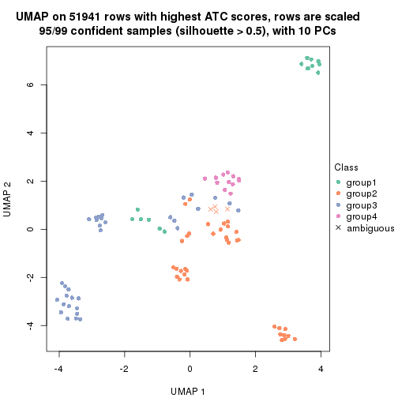
dimension_reduction(res, k = 5, method = "UMAP")
dimension_reduction(res, k = 6, method = "UMAP")
Following heatmap shows how subgroups are split when increasing k:
collect_classes(res)
Test correlation between subgroups and known annotations. If the known annotation is numeric, one-way ANOVA test is applied, and if the known annotation is discrete, chi-squared contingency table test is applied.
test_to_known_factors(res)
#> n protocol(p) individual(p) disease.state(p) k
#> ATC:hclust 99 1.000 1.88e-10 2.44e-14 2
#> ATC:hclust 95 0.998 1.33e-17 5.20e-22 3
#> ATC:hclust 95 1.000 2.36e-25 4.28e-25 4
#> ATC:hclust 92 1.000 2.60e-32 4.14e-36 5
#> ATC:hclust 92 1.000 7.80e-40 8.64e-38 6
If matrix rows can be associated to genes, consider to use functional_enrichment(res,
...) to perform function enrichment for the signature genes. See this vignette for more detailed explanations.
The object with results only for a single top-value method and a single partition method can be extracted as:
res = res_list["ATC", "kmeans"]
# you can also extract it by
# res = res_list["ATC:kmeans"]
A summary of res and all the functions that can be applied to it:
res
#> A 'ConsensusPartition' object with k = 2, 3, 4, 5, 6.
#> On a matrix with 51941 rows and 99 columns.
#> Top rows (1000, 2000, 3000, 4000, 5000) are extracted by 'ATC' method.
#> Subgroups are detected by 'kmeans' method.
#> Performed in total 1250 partitions by row resampling.
#> Best k for subgroups seems to be 3.
#>
#> Following methods can be applied to this 'ConsensusPartition' object:
#> [1] "cola_report" "collect_classes" "collect_plots"
#> [4] "collect_stats" "colnames" "compare_signatures"
#> [7] "consensus_heatmap" "dimension_reduction" "functional_enrichment"
#> [10] "get_anno_col" "get_anno" "get_classes"
#> [13] "get_consensus" "get_matrix" "get_membership"
#> [16] "get_param" "get_signatures" "get_stats"
#> [19] "is_best_k" "is_stable_k" "membership_heatmap"
#> [22] "ncol" "nrow" "plot_ecdf"
#> [25] "rownames" "select_partition_number" "show"
#> [28] "suggest_best_k" "test_to_known_factors"
collect_plots() function collects all the plots made from res for all k (number of partitions)
into one single page to provide an easy and fast comparison between different k.
collect_plots(res)
The plots are:
k and the heatmap of
predicted classes for each k.k.k.k.All the plots in panels can be made by individual functions and they are plotted later in this section.
select_partition_number() produces several plots showing different
statistics for choosing “optimized” k. There are following statistics:
k;k, the area increased is defined as \(A_k - A_{k-1}\).The detailed explanations of these statistics can be found in the cola vignette.
Generally speaking, lower PAC score, higher mean silhouette score or higher
concordance corresponds to better partition. Rand index and Jaccard index
measure how similar the current partition is compared to partition with k-1.
If they are too similar, we won't accept k is better than k-1.
select_partition_number(res)
The numeric values for all these statistics can be obtained by get_stats().
get_stats(res)
#> k 1-PAC mean_silhouette concordance area_increased Rand Jaccard
#> 2 2 0.736 0.969 0.980 0.3927 0.619 0.619
#> 3 3 0.500 0.749 0.819 0.5752 0.709 0.537
#> 4 4 0.558 0.768 0.799 0.1592 0.890 0.690
#> 5 5 0.685 0.375 0.607 0.0806 0.878 0.587
#> 6 6 0.761 0.641 0.731 0.0472 0.862 0.464
suggest_best_k() suggests the best \(k\) based on these statistics. The rules are as follows:
suggest_best_k(res)
#> [1] 3
Following shows the table of the partitions (You need to click the show/hide
code output link to see it). The membership matrix (columns with name p*)
is inferred by
clue::cl_consensus()
function with the SE method. Basically the value in the membership matrix
represents the probability to belong to a certain group. The finall class
label for an item is determined with the group with highest probability it
belongs to.
In get_classes() function, the entropy is calculated from the membership
matrix and the silhouette score is calculated from the consensus matrix.
cbind(get_classes(res, k = 2), get_membership(res, k = 2))
#> class entropy silhouette p1 p2
#> GSM187698 1 0.2236 0.965 0.964 0.036
#> GSM187701 2 0.3431 0.939 0.064 0.936
#> GSM187704 2 0.4815 0.914 0.104 0.896
#> GSM187707 2 0.0000 0.975 0.000 1.000
#> GSM187710 2 0.0000 0.975 0.000 1.000
#> GSM187713 2 0.0000 0.975 0.000 1.000
#> GSM187716 2 0.0000 0.975 0.000 1.000
#> GSM187719 1 0.0376 0.999 0.996 0.004
#> GSM187722 2 0.4690 0.914 0.100 0.900
#> GSM187725 2 0.4815 0.914 0.104 0.896
#> GSM187728 2 0.0000 0.975 0.000 1.000
#> GSM187731 2 0.0000 0.975 0.000 1.000
#> GSM187734 2 0.0000 0.975 0.000 1.000
#> GSM187737 2 0.0000 0.975 0.000 1.000
#> GSM187740 2 0.0000 0.975 0.000 1.000
#> GSM187743 1 0.0376 0.999 0.996 0.004
#> GSM187746 2 0.4815 0.914 0.104 0.896
#> GSM187749 2 0.4815 0.914 0.104 0.896
#> GSM187752 2 0.0000 0.975 0.000 1.000
#> GSM187755 2 0.0000 0.975 0.000 1.000
#> GSM187758 2 0.4815 0.914 0.104 0.896
#> GSM187761 2 0.0000 0.975 0.000 1.000
#> GSM187764 2 0.0000 0.975 0.000 1.000
#> GSM187767 2 0.0000 0.975 0.000 1.000
#> GSM187770 1 0.0376 0.999 0.996 0.004
#> GSM187771 1 0.0376 0.999 0.996 0.004
#> GSM187772 1 0.0376 0.999 0.996 0.004
#> GSM187780 1 0.0376 0.999 0.996 0.004
#> GSM187781 1 0.0376 0.999 0.996 0.004
#> GSM187782 1 0.0376 0.999 0.996 0.004
#> GSM187788 2 0.0000 0.975 0.000 1.000
#> GSM187789 2 0.0000 0.975 0.000 1.000
#> GSM187790 2 0.0000 0.975 0.000 1.000
#> GSM187699 2 0.3274 0.941 0.060 0.940
#> GSM187702 2 0.0000 0.975 0.000 1.000
#> GSM187705 2 0.4815 0.914 0.104 0.896
#> GSM187708 2 0.0000 0.975 0.000 1.000
#> GSM187711 2 0.0000 0.975 0.000 1.000
#> GSM187714 2 0.0000 0.975 0.000 1.000
#> GSM187717 2 0.0000 0.975 0.000 1.000
#> GSM187720 1 0.0376 0.999 0.996 0.004
#> GSM187723 2 0.2948 0.946 0.052 0.948
#> GSM187726 2 0.4815 0.914 0.104 0.896
#> GSM187729 2 0.0000 0.975 0.000 1.000
#> GSM187732 2 0.0000 0.975 0.000 1.000
#> GSM187735 2 0.0000 0.975 0.000 1.000
#> GSM187738 2 0.0000 0.975 0.000 1.000
#> GSM187741 2 0.0000 0.975 0.000 1.000
#> GSM187744 1 0.0376 0.999 0.996 0.004
#> GSM187747 2 0.4815 0.914 0.104 0.896
#> GSM187750 2 0.4815 0.914 0.104 0.896
#> GSM187753 2 0.0000 0.975 0.000 1.000
#> GSM187756 2 0.0000 0.975 0.000 1.000
#> GSM187759 2 0.0376 0.972 0.004 0.996
#> GSM187762 2 0.0000 0.975 0.000 1.000
#> GSM187765 2 0.0000 0.975 0.000 1.000
#> GSM187768 2 0.0000 0.975 0.000 1.000
#> GSM187773 1 0.0376 0.999 0.996 0.004
#> GSM187774 1 0.0376 0.999 0.996 0.004
#> GSM187775 1 0.0376 0.999 0.996 0.004
#> GSM187776 1 0.0376 0.999 0.996 0.004
#> GSM187783 1 0.0376 0.999 0.996 0.004
#> GSM187784 1 0.0376 0.999 0.996 0.004
#> GSM187791 2 0.0000 0.975 0.000 1.000
#> GSM187792 2 0.0000 0.975 0.000 1.000
#> GSM187793 2 0.0000 0.975 0.000 1.000
#> GSM187700 2 0.4690 0.914 0.100 0.900
#> GSM187703 2 0.0000 0.975 0.000 1.000
#> GSM187706 2 0.4815 0.914 0.104 0.896
#> GSM187709 2 0.0000 0.975 0.000 1.000
#> GSM187712 2 0.0000 0.975 0.000 1.000
#> GSM187715 2 0.0000 0.975 0.000 1.000
#> GSM187718 2 0.0000 0.975 0.000 1.000
#> GSM187721 1 0.0376 0.999 0.996 0.004
#> GSM187724 2 0.4690 0.914 0.100 0.900
#> GSM187727 2 0.4815 0.914 0.104 0.896
#> GSM187730 2 0.0000 0.975 0.000 1.000
#> GSM187733 2 0.0000 0.975 0.000 1.000
#> GSM187736 2 0.0000 0.975 0.000 1.000
#> GSM187739 2 0.0000 0.975 0.000 1.000
#> GSM187742 2 0.0000 0.975 0.000 1.000
#> GSM187745 1 0.0376 0.999 0.996 0.004
#> GSM187748 2 0.4815 0.914 0.104 0.896
#> GSM187751 2 0.4815 0.914 0.104 0.896
#> GSM187754 2 0.0000 0.975 0.000 1.000
#> GSM187757 2 0.0000 0.975 0.000 1.000
#> GSM187760 2 0.0376 0.972 0.004 0.996
#> GSM187763 2 0.0000 0.975 0.000 1.000
#> GSM187766 2 0.0000 0.975 0.000 1.000
#> GSM187769 2 0.0000 0.975 0.000 1.000
#> GSM187777 1 0.0376 0.999 0.996 0.004
#> GSM187778 1 0.0376 0.999 0.996 0.004
#> GSM187779 1 0.0376 0.999 0.996 0.004
#> GSM187785 1 0.0376 0.999 0.996 0.004
#> GSM187786 1 0.0376 0.999 0.996 0.004
#> GSM187787 1 0.0376 0.999 0.996 0.004
#> GSM187794 2 0.0000 0.975 0.000 1.000
#> GSM187795 2 0.0000 0.975 0.000 1.000
#> GSM187796 2 0.0000 0.975 0.000 1.000
cbind(get_classes(res, k = 3), get_membership(res, k = 3))
#> class entropy silhouette p1 p2 p3
#> GSM187698 3 0.4551 0.6243 0.132 0.024 0.844
#> GSM187701 3 0.4796 0.7151 0.000 0.220 0.780
#> GSM187704 3 0.4842 0.6496 0.000 0.224 0.776
#> GSM187707 2 0.0747 0.8602 0.000 0.984 0.016
#> GSM187710 2 0.0000 0.8555 0.000 1.000 0.000
#> GSM187713 3 0.5706 0.6772 0.000 0.320 0.680
#> GSM187716 3 0.5706 0.6772 0.000 0.320 0.680
#> GSM187719 1 0.0424 0.9024 0.992 0.000 0.008
#> GSM187722 3 0.5058 0.6821 0.000 0.244 0.756
#> GSM187725 3 0.6168 0.4715 0.000 0.412 0.588
#> GSM187728 2 0.0000 0.8555 0.000 1.000 0.000
#> GSM187731 3 0.6225 0.4906 0.000 0.432 0.568
#> GSM187734 3 0.6225 0.4906 0.000 0.432 0.568
#> GSM187737 3 0.5810 0.6642 0.000 0.336 0.664
#> GSM187740 2 0.2959 0.8717 0.000 0.900 0.100
#> GSM187743 1 0.0424 0.9036 0.992 0.000 0.008
#> GSM187746 3 0.3816 0.6770 0.000 0.148 0.852
#> GSM187749 3 0.6154 0.4786 0.000 0.408 0.592
#> GSM187752 2 0.2625 0.8738 0.000 0.916 0.084
#> GSM187755 3 0.5291 0.7088 0.000 0.268 0.732
#> GSM187758 3 0.5058 0.6547 0.000 0.244 0.756
#> GSM187761 2 0.2165 0.8743 0.000 0.936 0.064
#> GSM187764 3 0.5431 0.7016 0.000 0.284 0.716
#> GSM187767 2 0.0000 0.8555 0.000 1.000 0.000
#> GSM187770 1 0.4842 0.8456 0.776 0.000 0.224
#> GSM187771 1 0.4842 0.8456 0.776 0.000 0.224
#> GSM187772 1 0.4842 0.8456 0.776 0.000 0.224
#> GSM187780 1 0.1860 0.9001 0.948 0.000 0.052
#> GSM187781 1 0.1860 0.9001 0.948 0.000 0.052
#> GSM187782 1 0.1860 0.9001 0.948 0.000 0.052
#> GSM187788 2 0.3619 0.8525 0.000 0.864 0.136
#> GSM187789 2 0.3619 0.8525 0.000 0.864 0.136
#> GSM187790 2 0.3619 0.8525 0.000 0.864 0.136
#> GSM187699 3 0.3340 0.7047 0.000 0.120 0.880
#> GSM187702 3 0.5291 0.7088 0.000 0.268 0.732
#> GSM187705 3 0.4842 0.6496 0.000 0.224 0.776
#> GSM187708 2 0.0592 0.8600 0.000 0.988 0.012
#> GSM187711 2 0.0000 0.8555 0.000 1.000 0.000
#> GSM187714 3 0.5733 0.6729 0.000 0.324 0.676
#> GSM187717 3 0.5706 0.6772 0.000 0.320 0.680
#> GSM187720 1 0.1163 0.9009 0.972 0.000 0.028
#> GSM187723 3 0.4002 0.7101 0.000 0.160 0.840
#> GSM187726 3 0.6111 0.4965 0.000 0.396 0.604
#> GSM187729 2 0.0000 0.8555 0.000 1.000 0.000
#> GSM187732 3 0.5926 0.6215 0.000 0.356 0.644
#> GSM187735 2 0.6307 -0.1943 0.000 0.512 0.488
#> GSM187738 3 0.5733 0.6729 0.000 0.324 0.676
#> GSM187741 2 0.3038 0.8699 0.000 0.896 0.104
#> GSM187744 1 0.0424 0.9036 0.992 0.000 0.008
#> GSM187747 3 0.3816 0.6770 0.000 0.148 0.852
#> GSM187750 3 0.6111 0.4965 0.000 0.396 0.604
#> GSM187753 2 0.2625 0.8738 0.000 0.916 0.084
#> GSM187756 3 0.5363 0.7058 0.000 0.276 0.724
#> GSM187759 3 0.5016 0.6561 0.000 0.240 0.760
#> GSM187762 2 0.2356 0.8724 0.000 0.928 0.072
#> GSM187765 3 0.5706 0.6772 0.000 0.320 0.680
#> GSM187768 2 0.0000 0.8555 0.000 1.000 0.000
#> GSM187773 1 0.4842 0.8456 0.776 0.000 0.224
#> GSM187774 1 0.4842 0.8456 0.776 0.000 0.224
#> GSM187775 1 0.4842 0.8456 0.776 0.000 0.224
#> GSM187776 1 0.1860 0.9001 0.948 0.000 0.052
#> GSM187783 1 0.1860 0.9001 0.948 0.000 0.052
#> GSM187784 1 0.1860 0.9001 0.948 0.000 0.052
#> GSM187791 2 0.3619 0.8525 0.000 0.864 0.136
#> GSM187792 2 0.3619 0.8525 0.000 0.864 0.136
#> GSM187793 2 0.3619 0.8525 0.000 0.864 0.136
#> GSM187700 3 0.3769 0.6978 0.016 0.104 0.880
#> GSM187703 3 0.5291 0.7088 0.000 0.268 0.732
#> GSM187706 3 0.4842 0.6496 0.000 0.224 0.776
#> GSM187709 2 0.0592 0.8600 0.000 0.988 0.012
#> GSM187712 2 0.0000 0.8555 0.000 1.000 0.000
#> GSM187715 3 0.5733 0.6729 0.000 0.324 0.676
#> GSM187718 3 0.5706 0.6772 0.000 0.320 0.680
#> GSM187721 1 0.0747 0.9020 0.984 0.000 0.016
#> GSM187724 3 0.4235 0.7095 0.000 0.176 0.824
#> GSM187727 3 0.6154 0.4786 0.000 0.408 0.592
#> GSM187730 2 0.0000 0.8555 0.000 1.000 0.000
#> GSM187733 3 0.6095 0.5633 0.000 0.392 0.608
#> GSM187736 2 0.6274 -0.0749 0.000 0.544 0.456
#> GSM187739 3 0.5733 0.6729 0.000 0.324 0.676
#> GSM187742 2 0.2959 0.8717 0.000 0.900 0.100
#> GSM187745 1 0.0424 0.9036 0.992 0.000 0.008
#> GSM187748 3 0.3816 0.6770 0.000 0.148 0.852
#> GSM187751 3 0.6111 0.4965 0.000 0.396 0.604
#> GSM187754 2 0.2625 0.8738 0.000 0.916 0.084
#> GSM187757 3 0.5363 0.7058 0.000 0.276 0.724
#> GSM187760 3 0.5016 0.6561 0.000 0.240 0.760
#> GSM187763 2 0.2165 0.8743 0.000 0.936 0.064
#> GSM187766 3 0.5706 0.6772 0.000 0.320 0.680
#> GSM187769 2 0.0000 0.8555 0.000 1.000 0.000
#> GSM187777 1 0.4842 0.8456 0.776 0.000 0.224
#> GSM187778 1 0.4842 0.8456 0.776 0.000 0.224
#> GSM187779 1 0.4842 0.8456 0.776 0.000 0.224
#> GSM187785 1 0.1860 0.9001 0.948 0.000 0.052
#> GSM187786 1 0.1860 0.9001 0.948 0.000 0.052
#> GSM187787 1 0.1860 0.9001 0.948 0.000 0.052
#> GSM187794 2 0.3619 0.8525 0.000 0.864 0.136
#> GSM187795 2 0.3619 0.8525 0.000 0.864 0.136
#> GSM187796 2 0.3619 0.8525 0.000 0.864 0.136
cbind(get_classes(res, k = 4), get_membership(res, k = 4))
#> class entropy silhouette p1 p2 p3 p4
#> GSM187698 4 0.549 0.617 0.052 0.040 0.140 0.768
#> GSM187701 4 0.292 0.807 0.000 0.044 0.060 0.896
#> GSM187704 3 0.410 0.911 0.000 0.016 0.792 0.192
#> GSM187707 2 0.376 0.820 0.000 0.852 0.072 0.076
#> GSM187710 2 0.409 0.778 0.000 0.820 0.140 0.040
#> GSM187713 4 0.147 0.828 0.000 0.052 0.000 0.948
#> GSM187716 4 0.209 0.831 0.000 0.048 0.020 0.932
#> GSM187719 1 0.106 0.823 0.972 0.012 0.016 0.000
#> GSM187722 4 0.678 -0.224 0.004 0.080 0.448 0.468
#> GSM187725 3 0.492 0.907 0.000 0.088 0.776 0.136
#> GSM187728 2 0.409 0.778 0.000 0.820 0.140 0.040
#> GSM187731 4 0.454 0.686 0.000 0.216 0.024 0.760
#> GSM187734 4 0.454 0.686 0.000 0.216 0.024 0.760
#> GSM187737 4 0.371 0.788 0.000 0.132 0.028 0.840
#> GSM187740 2 0.455 0.820 0.000 0.784 0.044 0.172
#> GSM187743 1 0.126 0.822 0.968 0.008 0.008 0.016
#> GSM187746 3 0.459 0.832 0.000 0.008 0.712 0.280
#> GSM187749 3 0.492 0.907 0.000 0.088 0.776 0.136
#> GSM187752 2 0.354 0.820 0.000 0.852 0.028 0.120
#> GSM187755 4 0.202 0.817 0.000 0.024 0.040 0.936
#> GSM187758 3 0.491 0.921 0.000 0.060 0.764 0.176
#> GSM187761 2 0.476 0.823 0.000 0.780 0.064 0.156
#> GSM187764 4 0.204 0.826 0.000 0.032 0.032 0.936
#> GSM187767 2 0.409 0.778 0.000 0.820 0.140 0.040
#> GSM187770 1 0.573 0.722 0.664 0.012 0.292 0.032
#> GSM187771 1 0.573 0.722 0.664 0.012 0.292 0.032
#> GSM187772 1 0.573 0.722 0.664 0.012 0.292 0.032
#> GSM187780 1 0.278 0.816 0.904 0.024 0.068 0.004
#> GSM187781 1 0.278 0.816 0.904 0.024 0.068 0.004
#> GSM187782 1 0.278 0.816 0.904 0.024 0.068 0.004
#> GSM187788 2 0.493 0.754 0.000 0.712 0.024 0.264
#> GSM187789 2 0.493 0.754 0.000 0.712 0.024 0.264
#> GSM187790 2 0.493 0.754 0.000 0.712 0.024 0.264
#> GSM187699 4 0.286 0.713 0.008 0.000 0.112 0.880
#> GSM187702 4 0.221 0.819 0.000 0.028 0.044 0.928
#> GSM187705 3 0.424 0.911 0.000 0.020 0.784 0.196
#> GSM187708 2 0.404 0.812 0.000 0.836 0.076 0.088
#> GSM187711 2 0.409 0.778 0.000 0.820 0.140 0.040
#> GSM187714 4 0.147 0.828 0.000 0.052 0.000 0.948
#> GSM187717 4 0.209 0.831 0.000 0.048 0.020 0.932
#> GSM187720 1 0.322 0.812 0.888 0.016 0.076 0.020
#> GSM187723 4 0.613 -0.194 0.000 0.048 0.444 0.508
#> GSM187726 3 0.495 0.915 0.000 0.084 0.772 0.144
#> GSM187729 2 0.409 0.778 0.000 0.820 0.140 0.040
#> GSM187732 4 0.402 0.718 0.000 0.196 0.012 0.792
#> GSM187735 4 0.445 0.626 0.000 0.244 0.012 0.744
#> GSM187738 4 0.222 0.830 0.000 0.060 0.016 0.924
#> GSM187741 2 0.464 0.816 0.000 0.772 0.040 0.188
#> GSM187744 1 0.126 0.822 0.968 0.008 0.008 0.016
#> GSM187747 3 0.459 0.832 0.000 0.008 0.712 0.280
#> GSM187750 3 0.495 0.915 0.000 0.084 0.772 0.144
#> GSM187753 2 0.350 0.820 0.000 0.852 0.024 0.124
#> GSM187756 4 0.213 0.824 0.000 0.032 0.036 0.932
#> GSM187759 3 0.484 0.919 0.000 0.048 0.760 0.192
#> GSM187762 2 0.495 0.817 0.000 0.760 0.060 0.180
#> GSM187765 4 0.209 0.831 0.000 0.048 0.020 0.932
#> GSM187768 2 0.409 0.778 0.000 0.820 0.140 0.040
#> GSM187773 1 0.573 0.722 0.664 0.012 0.292 0.032
#> GSM187774 1 0.573 0.722 0.664 0.012 0.292 0.032
#> GSM187775 1 0.573 0.722 0.664 0.012 0.292 0.032
#> GSM187776 1 0.278 0.816 0.904 0.024 0.068 0.004
#> GSM187783 1 0.278 0.816 0.904 0.024 0.068 0.004
#> GSM187784 1 0.278 0.816 0.904 0.024 0.068 0.004
#> GSM187791 2 0.493 0.754 0.000 0.712 0.024 0.264
#> GSM187792 2 0.493 0.754 0.000 0.712 0.024 0.264
#> GSM187793 2 0.493 0.754 0.000 0.712 0.024 0.264
#> GSM187700 4 0.299 0.708 0.012 0.000 0.112 0.876
#> GSM187703 4 0.221 0.819 0.000 0.028 0.044 0.928
#> GSM187706 3 0.410 0.911 0.000 0.016 0.792 0.192
#> GSM187709 2 0.376 0.816 0.000 0.852 0.080 0.068
#> GSM187712 2 0.409 0.778 0.000 0.820 0.140 0.040
#> GSM187715 4 0.147 0.828 0.000 0.052 0.000 0.948
#> GSM187718 4 0.209 0.831 0.000 0.048 0.020 0.932
#> GSM187721 1 0.322 0.812 0.888 0.016 0.076 0.020
#> GSM187724 4 0.655 -0.203 0.004 0.064 0.444 0.488
#> GSM187727 3 0.495 0.915 0.000 0.084 0.772 0.144
#> GSM187730 2 0.409 0.778 0.000 0.820 0.140 0.040
#> GSM187733 4 0.454 0.686 0.000 0.216 0.024 0.760
#> GSM187736 4 0.493 0.588 0.000 0.264 0.024 0.712
#> GSM187739 4 0.222 0.830 0.000 0.060 0.016 0.924
#> GSM187742 2 0.455 0.820 0.000 0.784 0.044 0.172
#> GSM187745 1 0.126 0.822 0.968 0.008 0.008 0.016
#> GSM187748 3 0.459 0.832 0.000 0.008 0.712 0.280
#> GSM187751 3 0.495 0.915 0.000 0.084 0.772 0.144
#> GSM187754 2 0.350 0.820 0.000 0.852 0.024 0.124
#> GSM187757 4 0.213 0.824 0.000 0.032 0.036 0.932
#> GSM187760 3 0.480 0.920 0.000 0.048 0.764 0.188
#> GSM187763 2 0.476 0.823 0.000 0.780 0.064 0.156
#> GSM187766 4 0.209 0.831 0.000 0.048 0.020 0.932
#> GSM187769 2 0.409 0.778 0.000 0.820 0.140 0.040
#> GSM187777 1 0.573 0.722 0.664 0.012 0.292 0.032
#> GSM187778 1 0.573 0.722 0.664 0.012 0.292 0.032
#> GSM187779 1 0.573 0.722 0.664 0.012 0.292 0.032
#> GSM187785 1 0.278 0.816 0.904 0.024 0.068 0.004
#> GSM187786 1 0.278 0.816 0.904 0.024 0.068 0.004
#> GSM187787 1 0.278 0.816 0.904 0.024 0.068 0.004
#> GSM187794 2 0.493 0.754 0.000 0.712 0.024 0.264
#> GSM187795 2 0.493 0.754 0.000 0.712 0.024 0.264
#> GSM187796 2 0.493 0.754 0.000 0.712 0.024 0.264
cbind(get_classes(res, k = 5), get_membership(res, k = 5))
#> class entropy silhouette p1 p2 p3 p4 p5
#> GSM187698 5 0.6723 0.1417 0.000 0.020 0.412 0.140 0.428
#> GSM187701 5 0.5368 -0.0227 0.000 0.036 0.472 0.008 0.484
#> GSM187704 1 0.6934 0.2994 0.416 0.004 0.388 0.180 0.012
#> GSM187707 2 0.3814 0.7369 0.004 0.720 0.000 0.000 0.276
#> GSM187710 2 0.4666 0.6845 0.016 0.572 0.000 0.000 0.412
#> GSM187713 3 0.5295 0.1270 0.000 0.052 0.540 0.000 0.408
#> GSM187716 3 0.4974 0.1737 0.000 0.032 0.560 0.000 0.408
#> GSM187719 4 0.4483 0.6002 0.308 0.000 0.008 0.672 0.012
#> GSM187722 5 0.9180 0.2747 0.104 0.100 0.304 0.148 0.344
#> GSM187725 3 0.7465 -0.3363 0.396 0.020 0.412 0.136 0.036
#> GSM187728 2 0.4473 0.6855 0.008 0.580 0.000 0.000 0.412
#> GSM187731 5 0.5635 0.5779 0.000 0.428 0.076 0.000 0.496
#> GSM187734 5 0.5635 0.5779 0.000 0.428 0.076 0.000 0.496
#> GSM187737 5 0.6459 0.4650 0.000 0.244 0.256 0.000 0.500
#> GSM187740 2 0.3612 0.7315 0.000 0.732 0.000 0.000 0.268
#> GSM187743 4 0.5632 0.5747 0.320 0.000 0.036 0.608 0.036
#> GSM187746 1 0.7084 0.2998 0.412 0.000 0.332 0.240 0.016
#> GSM187749 3 0.7465 -0.3363 0.396 0.020 0.412 0.136 0.036
#> GSM187752 2 0.0771 0.7007 0.000 0.976 0.004 0.000 0.020
#> GSM187755 3 0.5033 0.1736 0.004 0.024 0.596 0.004 0.372
#> GSM187758 1 0.7321 0.2842 0.420 0.020 0.384 0.156 0.020
#> GSM187761 2 0.3906 0.7314 0.004 0.704 0.000 0.000 0.292
#> GSM187764 3 0.4927 0.1812 0.000 0.024 0.584 0.004 0.388
#> GSM187767 2 0.4473 0.6855 0.008 0.580 0.000 0.000 0.412
#> GSM187770 4 0.0000 0.8119 0.000 0.000 0.000 1.000 0.000
#> GSM187771 4 0.0000 0.8119 0.000 0.000 0.000 1.000 0.000
#> GSM187772 4 0.0000 0.8119 0.000 0.000 0.000 1.000 0.000
#> GSM187780 1 0.4278 -0.2628 0.548 0.000 0.000 0.452 0.000
#> GSM187781 1 0.4278 -0.2628 0.548 0.000 0.000 0.452 0.000
#> GSM187782 1 0.4278 -0.2628 0.548 0.000 0.000 0.452 0.000
#> GSM187788 2 0.2331 0.6571 0.000 0.900 0.020 0.000 0.080
#> GSM187789 2 0.2331 0.6571 0.000 0.900 0.020 0.000 0.080
#> GSM187790 2 0.2331 0.6571 0.000 0.900 0.020 0.000 0.080
#> GSM187699 3 0.5225 -0.0221 0.000 0.008 0.508 0.028 0.456
#> GSM187702 3 0.5049 -0.0195 0.000 0.024 0.500 0.004 0.472
#> GSM187705 1 0.6934 0.2994 0.416 0.004 0.388 0.180 0.012
#> GSM187708 2 0.3906 0.7347 0.004 0.704 0.000 0.000 0.292
#> GSM187711 2 0.4666 0.6845 0.016 0.572 0.000 0.000 0.412
#> GSM187714 3 0.5302 0.1242 0.000 0.052 0.536 0.000 0.412
#> GSM187717 3 0.4974 0.1737 0.000 0.032 0.560 0.000 0.408
#> GSM187720 4 0.3443 0.7195 0.164 0.000 0.008 0.816 0.012
#> GSM187723 5 0.8989 0.2625 0.104 0.076 0.328 0.148 0.344
#> GSM187726 3 0.7374 -0.3424 0.400 0.020 0.404 0.152 0.024
#> GSM187729 2 0.4473 0.6855 0.008 0.580 0.000 0.000 0.412
#> GSM187732 5 0.5826 0.5751 0.000 0.404 0.096 0.000 0.500
#> GSM187735 5 0.5579 0.5713 0.000 0.420 0.072 0.000 0.508
#> GSM187738 5 0.5802 0.1705 0.000 0.096 0.388 0.000 0.516
#> GSM187741 2 0.3661 0.7287 0.000 0.724 0.000 0.000 0.276
#> GSM187744 4 0.5632 0.5747 0.320 0.000 0.036 0.608 0.036
#> GSM187747 1 0.7084 0.2998 0.412 0.000 0.332 0.240 0.016
#> GSM187750 3 0.7374 -0.3424 0.400 0.020 0.404 0.152 0.024
#> GSM187753 2 0.0671 0.7028 0.000 0.980 0.004 0.000 0.016
#> GSM187756 3 0.5055 0.1793 0.004 0.024 0.588 0.004 0.380
#> GSM187759 1 0.7244 0.2852 0.420 0.016 0.388 0.156 0.020
#> GSM187762 2 0.3906 0.7314 0.004 0.704 0.000 0.000 0.292
#> GSM187765 3 0.4885 0.1805 0.000 0.028 0.572 0.000 0.400
#> GSM187768 2 0.4473 0.6855 0.008 0.580 0.000 0.000 0.412
#> GSM187773 4 0.0000 0.8119 0.000 0.000 0.000 1.000 0.000
#> GSM187774 4 0.0000 0.8119 0.000 0.000 0.000 1.000 0.000
#> GSM187775 4 0.0000 0.8119 0.000 0.000 0.000 1.000 0.000
#> GSM187776 1 0.4278 -0.2628 0.548 0.000 0.000 0.452 0.000
#> GSM187783 1 0.4278 -0.2628 0.548 0.000 0.000 0.452 0.000
#> GSM187784 1 0.4278 -0.2628 0.548 0.000 0.000 0.452 0.000
#> GSM187791 2 0.2331 0.6571 0.000 0.900 0.020 0.000 0.080
#> GSM187792 2 0.2331 0.6571 0.000 0.900 0.020 0.000 0.080
#> GSM187793 2 0.2331 0.6571 0.000 0.900 0.020 0.000 0.080
#> GSM187700 3 0.5227 -0.0287 0.000 0.008 0.504 0.028 0.460
#> GSM187703 3 0.5049 -0.0195 0.000 0.024 0.500 0.004 0.472
#> GSM187706 1 0.6934 0.2994 0.416 0.004 0.388 0.180 0.012
#> GSM187709 2 0.3884 0.7354 0.004 0.708 0.000 0.000 0.288
#> GSM187712 2 0.4666 0.6845 0.016 0.572 0.000 0.000 0.412
#> GSM187715 3 0.5302 0.1242 0.000 0.052 0.536 0.000 0.412
#> GSM187718 3 0.4974 0.1737 0.000 0.032 0.560 0.000 0.408
#> GSM187721 4 0.3443 0.7195 0.164 0.000 0.008 0.816 0.012
#> GSM187724 5 0.9091 0.2701 0.104 0.088 0.316 0.148 0.344
#> GSM187727 3 0.7374 -0.3424 0.400 0.020 0.404 0.152 0.024
#> GSM187730 2 0.4473 0.6855 0.008 0.580 0.000 0.000 0.412
#> GSM187733 5 0.5631 0.5784 0.000 0.424 0.076 0.000 0.500
#> GSM187736 5 0.5393 0.5646 0.000 0.440 0.056 0.000 0.504
#> GSM187739 5 0.5802 0.1705 0.000 0.096 0.388 0.000 0.516
#> GSM187742 2 0.3636 0.7297 0.000 0.728 0.000 0.000 0.272
#> GSM187745 4 0.5632 0.5747 0.320 0.000 0.036 0.608 0.036
#> GSM187748 1 0.7084 0.2998 0.412 0.000 0.332 0.240 0.016
#> GSM187751 3 0.7374 -0.3424 0.400 0.020 0.404 0.152 0.024
#> GSM187754 2 0.0671 0.7028 0.000 0.980 0.004 0.000 0.016
#> GSM187757 3 0.5055 0.1793 0.004 0.024 0.588 0.004 0.380
#> GSM187760 1 0.7244 0.2852 0.420 0.016 0.388 0.156 0.020
#> GSM187763 2 0.3906 0.7314 0.004 0.704 0.000 0.000 0.292
#> GSM187766 3 0.4885 0.1805 0.000 0.028 0.572 0.000 0.400
#> GSM187769 2 0.4473 0.6855 0.008 0.580 0.000 0.000 0.412
#> GSM187777 4 0.0000 0.8119 0.000 0.000 0.000 1.000 0.000
#> GSM187778 4 0.0000 0.8119 0.000 0.000 0.000 1.000 0.000
#> GSM187779 4 0.0000 0.8119 0.000 0.000 0.000 1.000 0.000
#> GSM187785 1 0.4278 -0.2628 0.548 0.000 0.000 0.452 0.000
#> GSM187786 1 0.4278 -0.2628 0.548 0.000 0.000 0.452 0.000
#> GSM187787 1 0.4278 -0.2628 0.548 0.000 0.000 0.452 0.000
#> GSM187794 2 0.2331 0.6571 0.000 0.900 0.020 0.000 0.080
#> GSM187795 2 0.2331 0.6571 0.000 0.900 0.020 0.000 0.080
#> GSM187796 2 0.2331 0.6571 0.000 0.900 0.020 0.000 0.080
cbind(get_classes(res, k = 6), get_membership(res, k = 6))
#> class entropy silhouette p1 p2 p3 p4 p5 p6
#> GSM187698 6 0.6806 0.5987 0.196 0.000 0.016 0.056 0.216 0.516
#> GSM187701 6 0.5388 0.6678 0.200 0.000 0.004 0.000 0.192 0.604
#> GSM187704 3 0.0291 0.9426 0.000 0.000 0.992 0.004 0.004 0.000
#> GSM187707 2 0.5784 0.5611 0.128 0.564 0.008 0.000 0.288 0.012
#> GSM187710 2 0.0405 0.6884 0.004 0.988 0.008 0.000 0.000 0.000
#> GSM187713 6 0.1088 0.8019 0.016 0.000 0.000 0.000 0.024 0.960
#> GSM187716 6 0.1036 0.8040 0.008 0.000 0.004 0.000 0.024 0.964
#> GSM187719 4 0.3345 0.2081 0.204 0.000 0.000 0.776 0.020 0.000
#> GSM187722 5 0.7945 -0.1944 0.212 0.000 0.208 0.016 0.340 0.224
#> GSM187725 3 0.1984 0.9292 0.032 0.000 0.912 0.000 0.056 0.000
#> GSM187728 2 0.0260 0.6891 0.000 0.992 0.008 0.000 0.000 0.000
#> GSM187731 5 0.4582 0.3999 0.100 0.000 0.000 0.000 0.684 0.216
#> GSM187734 5 0.4539 0.4039 0.096 0.000 0.000 0.000 0.688 0.216
#> GSM187737 5 0.6069 -0.2293 0.216 0.000 0.004 0.000 0.396 0.384
#> GSM187740 2 0.6167 0.5121 0.128 0.508 0.004 0.000 0.328 0.032
#> GSM187743 4 0.5378 -0.0891 0.276 0.008 0.004 0.612 0.096 0.004
#> GSM187746 3 0.3163 0.8653 0.044 0.000 0.856 0.076 0.020 0.004
#> GSM187749 3 0.1984 0.9292 0.032 0.000 0.912 0.000 0.056 0.000
#> GSM187752 5 0.4262 0.3571 0.004 0.364 0.004 0.000 0.616 0.012
#> GSM187755 6 0.0964 0.8052 0.016 0.000 0.004 0.000 0.012 0.968
#> GSM187758 3 0.0508 0.9437 0.004 0.000 0.984 0.000 0.012 0.000
#> GSM187761 2 0.6217 0.5303 0.132 0.516 0.004 0.000 0.312 0.036
#> GSM187764 6 0.0291 0.8091 0.004 0.000 0.004 0.000 0.000 0.992
#> GSM187767 2 0.0260 0.6891 0.000 0.992 0.008 0.000 0.000 0.000
#> GSM187770 4 0.2048 0.7781 0.000 0.000 0.120 0.880 0.000 0.000
#> GSM187771 4 0.2048 0.7781 0.000 0.000 0.120 0.880 0.000 0.000
#> GSM187772 4 0.2048 0.7781 0.000 0.000 0.120 0.880 0.000 0.000
#> GSM187780 1 0.3804 0.9948 0.576 0.000 0.000 0.424 0.000 0.000
#> GSM187781 1 0.3804 0.9948 0.576 0.000 0.000 0.424 0.000 0.000
#> GSM187782 1 0.3804 0.9948 0.576 0.000 0.000 0.424 0.000 0.000
#> GSM187788 5 0.4588 0.4262 0.000 0.332 0.004 0.000 0.620 0.044
#> GSM187789 5 0.4588 0.4262 0.000 0.332 0.004 0.000 0.620 0.044
#> GSM187790 5 0.4588 0.4262 0.000 0.332 0.004 0.000 0.620 0.044
#> GSM187699 6 0.5619 0.6805 0.180 0.000 0.016 0.004 0.184 0.616
#> GSM187702 6 0.5335 0.6826 0.184 0.000 0.008 0.000 0.184 0.624
#> GSM187705 3 0.0146 0.9420 0.000 0.000 0.996 0.004 0.000 0.000
#> GSM187708 2 0.5649 0.5863 0.128 0.596 0.008 0.000 0.256 0.012
#> GSM187711 2 0.0405 0.6884 0.004 0.988 0.008 0.000 0.000 0.000
#> GSM187714 6 0.1168 0.8010 0.016 0.000 0.000 0.000 0.028 0.956
#> GSM187717 6 0.1036 0.8040 0.008 0.000 0.004 0.000 0.024 0.964
#> GSM187720 4 0.0547 0.6449 0.000 0.000 0.000 0.980 0.020 0.000
#> GSM187723 5 0.7964 -0.2026 0.212 0.000 0.212 0.016 0.332 0.228
#> GSM187726 3 0.1528 0.9403 0.016 0.000 0.936 0.000 0.048 0.000
#> GSM187729 2 0.0260 0.6891 0.000 0.992 0.008 0.000 0.000 0.000
#> GSM187732 5 0.4357 0.4099 0.076 0.000 0.000 0.000 0.700 0.224
#> GSM187735 5 0.4105 0.4559 0.044 0.008 0.000 0.000 0.732 0.216
#> GSM187738 6 0.5827 0.5397 0.192 0.000 0.008 0.000 0.268 0.532
#> GSM187741 2 0.6167 0.5121 0.128 0.508 0.004 0.000 0.328 0.032
#> GSM187744 4 0.5225 -0.0829 0.272 0.008 0.000 0.620 0.096 0.004
#> GSM187747 3 0.3163 0.8653 0.044 0.000 0.856 0.076 0.020 0.004
#> GSM187750 3 0.1528 0.9403 0.016 0.000 0.936 0.000 0.048 0.000
#> GSM187753 5 0.4181 0.3466 0.004 0.368 0.004 0.000 0.616 0.008
#> GSM187756 6 0.0748 0.8076 0.016 0.000 0.004 0.000 0.004 0.976
#> GSM187759 3 0.0291 0.9432 0.004 0.000 0.992 0.000 0.004 0.000
#> GSM187762 2 0.6217 0.5303 0.132 0.516 0.004 0.000 0.312 0.036
#> GSM187765 6 0.0291 0.8086 0.000 0.000 0.004 0.000 0.004 0.992
#> GSM187768 2 0.0260 0.6891 0.000 0.992 0.008 0.000 0.000 0.000
#> GSM187773 4 0.2191 0.7757 0.004 0.000 0.120 0.876 0.000 0.000
#> GSM187774 4 0.2191 0.7757 0.004 0.000 0.120 0.876 0.000 0.000
#> GSM187775 4 0.2191 0.7757 0.004 0.000 0.120 0.876 0.000 0.000
#> GSM187776 1 0.4129 0.9895 0.564 0.000 0.000 0.424 0.012 0.000
#> GSM187783 1 0.4129 0.9895 0.564 0.000 0.000 0.424 0.012 0.000
#> GSM187784 1 0.4129 0.9895 0.564 0.000 0.000 0.424 0.012 0.000
#> GSM187791 5 0.4588 0.4262 0.000 0.332 0.004 0.000 0.620 0.044
#> GSM187792 5 0.4588 0.4262 0.000 0.332 0.004 0.000 0.620 0.044
#> GSM187793 5 0.4588 0.4262 0.000 0.332 0.004 0.000 0.620 0.044
#> GSM187700 6 0.5672 0.6750 0.192 0.000 0.016 0.004 0.180 0.608
#> GSM187703 6 0.5335 0.6826 0.184 0.000 0.008 0.000 0.184 0.624
#> GSM187706 3 0.0146 0.9420 0.000 0.000 0.996 0.004 0.000 0.000
#> GSM187709 2 0.5720 0.5774 0.128 0.580 0.008 0.000 0.272 0.012
#> GSM187712 2 0.0405 0.6884 0.004 0.988 0.008 0.000 0.000 0.000
#> GSM187715 6 0.1168 0.8010 0.016 0.000 0.000 0.000 0.028 0.956
#> GSM187718 6 0.1036 0.8040 0.008 0.000 0.004 0.000 0.024 0.964
#> GSM187721 4 0.0692 0.6399 0.004 0.000 0.000 0.976 0.020 0.000
#> GSM187724 5 0.7954 -0.2013 0.212 0.000 0.208 0.016 0.336 0.228
#> GSM187727 3 0.1528 0.9403 0.016 0.000 0.936 0.000 0.048 0.000
#> GSM187730 2 0.0260 0.6891 0.000 0.992 0.008 0.000 0.000 0.000
#> GSM187733 5 0.4443 0.4210 0.076 0.004 0.000 0.000 0.704 0.216
#> GSM187736 5 0.3905 0.4567 0.040 0.004 0.000 0.000 0.744 0.212
#> GSM187739 6 0.5827 0.5397 0.192 0.000 0.008 0.000 0.268 0.532
#> GSM187742 2 0.6167 0.5121 0.128 0.508 0.004 0.000 0.328 0.032
#> GSM187745 4 0.5378 -0.0891 0.276 0.008 0.004 0.612 0.096 0.004
#> GSM187748 3 0.3163 0.8653 0.044 0.000 0.856 0.076 0.020 0.004
#> GSM187751 3 0.1528 0.9403 0.016 0.000 0.936 0.000 0.048 0.000
#> GSM187754 5 0.4181 0.3466 0.004 0.368 0.004 0.000 0.616 0.008
#> GSM187757 6 0.0748 0.8076 0.016 0.000 0.004 0.000 0.004 0.976
#> GSM187760 3 0.0291 0.9432 0.004 0.000 0.992 0.000 0.004 0.000
#> GSM187763 2 0.6217 0.5303 0.132 0.516 0.004 0.000 0.312 0.036
#> GSM187766 6 0.0146 0.8092 0.000 0.000 0.004 0.000 0.000 0.996
#> GSM187769 2 0.0260 0.6891 0.000 0.992 0.008 0.000 0.000 0.000
#> GSM187777 4 0.2048 0.7781 0.000 0.000 0.120 0.880 0.000 0.000
#> GSM187778 4 0.2048 0.7781 0.000 0.000 0.120 0.880 0.000 0.000
#> GSM187779 4 0.2048 0.7781 0.000 0.000 0.120 0.880 0.000 0.000
#> GSM187785 1 0.3804 0.9948 0.576 0.000 0.000 0.424 0.000 0.000
#> GSM187786 1 0.3804 0.9948 0.576 0.000 0.000 0.424 0.000 0.000
#> GSM187787 1 0.3804 0.9948 0.576 0.000 0.000 0.424 0.000 0.000
#> GSM187794 5 0.4588 0.4262 0.000 0.332 0.004 0.000 0.620 0.044
#> GSM187795 5 0.4588 0.4262 0.000 0.332 0.004 0.000 0.620 0.044
#> GSM187796 5 0.4588 0.4262 0.000 0.332 0.004 0.000 0.620 0.044
Heatmaps for the consensus matrix. It visualizes the probability of two samples to be in a same group.
consensus_heatmap(res, k = 2)
consensus_heatmap(res, k = 3)
consensus_heatmap(res, k = 4)
consensus_heatmap(res, k = 5)
consensus_heatmap(res, k = 6)
Heatmaps for the membership of samples in all partitions to see how consistent they are:
membership_heatmap(res, k = 2)
membership_heatmap(res, k = 3)
membership_heatmap(res, k = 4)
membership_heatmap(res, k = 5)
membership_heatmap(res, k = 6)
As soon as we have had the classes for columns, we can look for signatures which are significantly different between classes which can be candidate marks for certain classes. Following are the heatmaps for signatures.
Signature heatmaps where rows are scaled:
get_signatures(res, k = 2)
#> Error: The width or height of the raster image is zero, maybe you forget to turn off the
#> previous graphic device or it was corrupted. Run `dev.off()` to close it.

get_signatures(res, k = 3)
#> Error: The width or height of the raster image is zero, maybe you forget to turn off the
#> previous graphic device or it was corrupted. Run `dev.off()` to close it.

get_signatures(res, k = 4)
#> Error: The width or height of the raster image is zero, maybe you forget to turn off the
#> previous graphic device or it was corrupted. Run `dev.off()` to close it.

get_signatures(res, k = 5)
#> Error: The width or height of the raster image is zero, maybe you forget to turn off the
#> previous graphic device or it was corrupted. Run `dev.off()` to close it.

get_signatures(res, k = 6)
#> Error: The width or height of the raster image is zero, maybe you forget to turn off the
#> previous graphic device or it was corrupted. Run `dev.off()` to close it.

Signature heatmaps where rows are not scaled:
get_signatures(res, k = 2, scale_rows = FALSE)
#> Error: The width or height of the raster image is zero, maybe you forget to turn off the
#> previous graphic device or it was corrupted. Run `dev.off()` to close it.

get_signatures(res, k = 3, scale_rows = FALSE)
#> Error: The width or height of the raster image is zero, maybe you forget to turn off the
#> previous graphic device or it was corrupted. Run `dev.off()` to close it.

get_signatures(res, k = 4, scale_rows = FALSE)
#> Error: The width or height of the raster image is zero, maybe you forget to turn off the
#> previous graphic device or it was corrupted. Run `dev.off()` to close it.

get_signatures(res, k = 5, scale_rows = FALSE)
#> Error: The width or height of the raster image is zero, maybe you forget to turn off the
#> previous graphic device or it was corrupted. Run `dev.off()` to close it.

get_signatures(res, k = 6, scale_rows = FALSE)
#> Error: The width or height of the raster image is zero, maybe you forget to turn off the
#> previous graphic device or it was corrupted. Run `dev.off()` to close it.

Compare the overlap of signatures from different k:
compare_signatures(res)
get_signature() returns a data frame invisibly. TO get the list of signatures, the function
call should be assigned to a variable explicitly. In following code, if plot argument is set
to FALSE, no heatmap is plotted while only the differential analysis is performed.
# code only for demonstration
tb = get_signature(res, k = ..., plot = FALSE)
An example of the output of tb is:
#> which_row fdr mean_1 mean_2 scaled_mean_1 scaled_mean_2 km
#> 1 38 0.042760348 8.373488 9.131774 -0.5533452 0.5164555 1
#> 2 40 0.018707592 7.106213 8.469186 -0.6173731 0.5762149 1
#> 3 55 0.019134737 10.221463 11.207825 -0.6159697 0.5749050 1
#> 4 59 0.006059896 5.921854 7.869574 -0.6899429 0.6439467 1
#> 5 60 0.018055526 8.928898 10.211722 -0.6204761 0.5791110 1
#> 6 98 0.009384629 15.714769 14.887706 0.6635654 -0.6193277 2
...
The columns in tb are:
which_row: row indices corresponding to the input matrix.fdr: FDR for the differential test. mean_x: The mean value in group x.scaled_mean_x: The mean value in group x after rows are scaled.km: Row groups if k-means clustering is applied to rows.UMAP plot which shows how samples are separated.
dimension_reduction(res, k = 2, method = "UMAP")

dimension_reduction(res, k = 3, method = "UMAP")
dimension_reduction(res, k = 4, method = "UMAP")
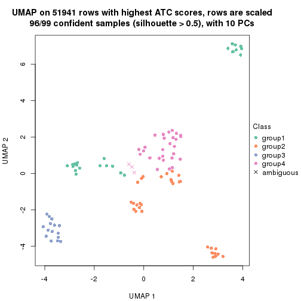
dimension_reduction(res, k = 5, method = "UMAP")
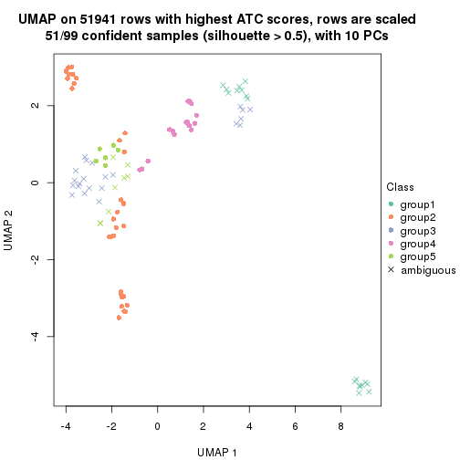
dimension_reduction(res, k = 6, method = "UMAP")
Following heatmap shows how subgroups are split when increasing k:
collect_classes(res)
Test correlation between subgroups and known annotations. If the known annotation is numeric, one-way ANOVA test is applied, and if the known annotation is discrete, chi-squared contingency table test is applied.
test_to_known_factors(res)
#> n protocol(p) individual(p) disease.state(p) k
#> ATC:kmeans 99 0.948 7.19e-10 3.59e-17 2
#> ATC:kmeans 89 1.000 2.02e-17 3.21e-21 3
#> ATC:kmeans 96 1.000 1.03e-26 1.88e-35 4
#> ATC:kmeans 51 1.000 1.37e-11 2.15e-09 5
#> ATC:kmeans 73 1.000 6.71e-26 1.30e-38 6
If matrix rows can be associated to genes, consider to use functional_enrichment(res,
...) to perform function enrichment for the signature genes. See this vignette for more detailed explanations.
The object with results only for a single top-value method and a single partition method can be extracted as:
res = res_list["ATC", "skmeans"]
# you can also extract it by
# res = res_list["ATC:skmeans"]
A summary of res and all the functions that can be applied to it:
res
#> A 'ConsensusPartition' object with k = 2, 3, 4, 5, 6.
#> On a matrix with 51941 rows and 99 columns.
#> Top rows (1000, 2000, 3000, 4000, 5000) are extracted by 'ATC' method.
#> Subgroups are detected by 'skmeans' method.
#> Performed in total 1250 partitions by row resampling.
#> Best k for subgroups seems to be 6.
#>
#> Following methods can be applied to this 'ConsensusPartition' object:
#> [1] "cola_report" "collect_classes" "collect_plots"
#> [4] "collect_stats" "colnames" "compare_signatures"
#> [7] "consensus_heatmap" "dimension_reduction" "functional_enrichment"
#> [10] "get_anno_col" "get_anno" "get_classes"
#> [13] "get_consensus" "get_matrix" "get_membership"
#> [16] "get_param" "get_signatures" "get_stats"
#> [19] "is_best_k" "is_stable_k" "membership_heatmap"
#> [22] "ncol" "nrow" "plot_ecdf"
#> [25] "rownames" "select_partition_number" "show"
#> [28] "suggest_best_k" "test_to_known_factors"
collect_plots() function collects all the plots made from res for all k (number of partitions)
into one single page to provide an easy and fast comparison between different k.
collect_plots(res)
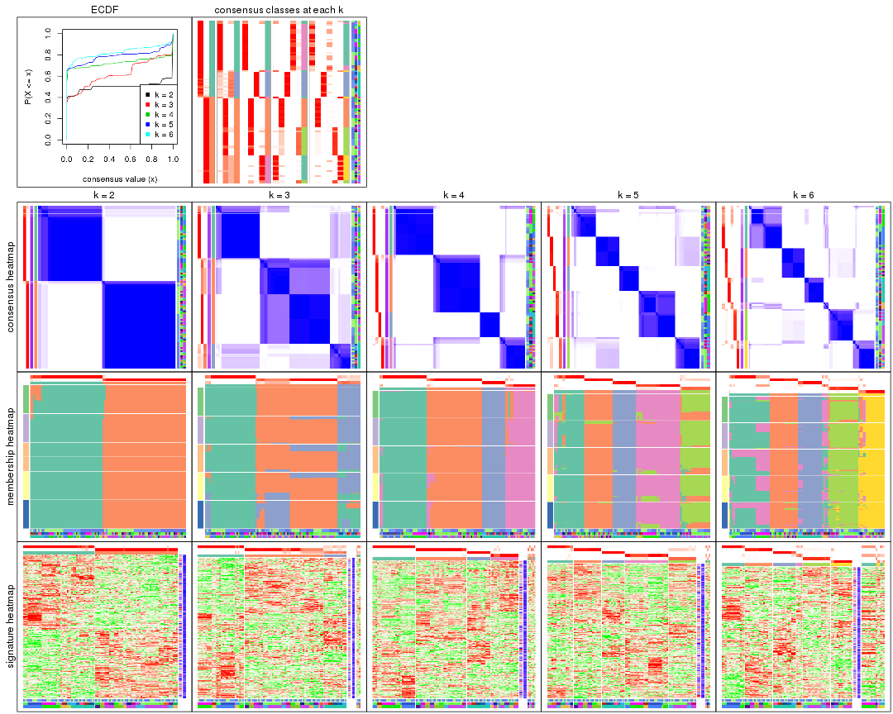
The plots are:
k and the heatmap of
predicted classes for each k.k.k.k.All the plots in panels can be made by individual functions and they are plotted later in this section.
select_partition_number() produces several plots showing different
statistics for choosing “optimized” k. There are following statistics:
k;k, the area increased is defined as \(A_k - A_{k-1}\).The detailed explanations of these statistics can be found in the cola vignette.
Generally speaking, lower PAC score, higher mean silhouette score or higher
concordance corresponds to better partition. Rand index and Jaccard index
measure how similar the current partition is compared to partition with k-1.
If they are too similar, we won't accept k is better than k-1.
select_partition_number(res)
The numeric values for all these statistics can be obtained by get_stats().
get_stats(res)
#> k 1-PAC mean_silhouette concordance area_increased Rand Jaccard
#> 2 2 0.919 0.972 0.986 0.5016 0.497 0.497
#> 3 3 0.654 0.820 0.856 0.2479 0.887 0.776
#> 4 4 0.947 0.914 0.965 0.1652 0.858 0.649
#> 5 5 0.862 0.905 0.908 0.0813 0.904 0.662
#> 6 6 0.902 0.779 0.860 0.0483 0.972 0.863
suggest_best_k() suggests the best \(k\) based on these statistics. The rules are as follows:
suggest_best_k(res)
#> [1] 6
#> attr(,"optional")
#> [1] 2 4
There is also optional best \(k\) = 2 4 that is worth to check.
Following shows the table of the partitions (You need to click the show/hide
code output link to see it). The membership matrix (columns with name p*)
is inferred by
clue::cl_consensus()
function with the SE method. Basically the value in the membership matrix
represents the probability to belong to a certain group. The finall class
label for an item is determined with the group with highest probability it
belongs to.
In get_classes() function, the entropy is calculated from the membership
matrix and the silhouette score is calculated from the consensus matrix.
cbind(get_classes(res, k = 2), get_membership(res, k = 2))
#> class entropy silhouette p1 p2
#> GSM187698 1 0.0000 0.977 1.000 0.000
#> GSM187701 1 0.0000 0.977 1.000 0.000
#> GSM187704 1 0.0000 0.977 1.000 0.000
#> GSM187707 2 0.0000 0.993 0.000 1.000
#> GSM187710 2 0.0000 0.993 0.000 1.000
#> GSM187713 2 0.0000 0.993 0.000 1.000
#> GSM187716 2 0.0000 0.993 0.000 1.000
#> GSM187719 1 0.0000 0.977 1.000 0.000
#> GSM187722 1 0.0000 0.977 1.000 0.000
#> GSM187725 1 0.0672 0.972 0.992 0.008
#> GSM187728 2 0.0000 0.993 0.000 1.000
#> GSM187731 2 0.0000 0.993 0.000 1.000
#> GSM187734 2 0.0000 0.993 0.000 1.000
#> GSM187737 2 0.0000 0.993 0.000 1.000
#> GSM187740 2 0.0000 0.993 0.000 1.000
#> GSM187743 1 0.0000 0.977 1.000 0.000
#> GSM187746 1 0.0000 0.977 1.000 0.000
#> GSM187749 1 0.0000 0.977 1.000 0.000
#> GSM187752 2 0.0000 0.993 0.000 1.000
#> GSM187755 2 0.7674 0.716 0.224 0.776
#> GSM187758 1 0.4939 0.887 0.892 0.108
#> GSM187761 2 0.0000 0.993 0.000 1.000
#> GSM187764 2 0.0000 0.993 0.000 1.000
#> GSM187767 2 0.0000 0.993 0.000 1.000
#> GSM187770 1 0.0000 0.977 1.000 0.000
#> GSM187771 1 0.0000 0.977 1.000 0.000
#> GSM187772 1 0.0000 0.977 1.000 0.000
#> GSM187780 1 0.0000 0.977 1.000 0.000
#> GSM187781 1 0.0000 0.977 1.000 0.000
#> GSM187782 1 0.0000 0.977 1.000 0.000
#> GSM187788 2 0.0000 0.993 0.000 1.000
#> GSM187789 2 0.0000 0.993 0.000 1.000
#> GSM187790 2 0.0000 0.993 0.000 1.000
#> GSM187699 1 0.0000 0.977 1.000 0.000
#> GSM187702 2 0.0376 0.990 0.004 0.996
#> GSM187705 1 0.0672 0.972 0.992 0.008
#> GSM187708 2 0.0000 0.993 0.000 1.000
#> GSM187711 2 0.0000 0.993 0.000 1.000
#> GSM187714 2 0.0000 0.993 0.000 1.000
#> GSM187717 2 0.0000 0.993 0.000 1.000
#> GSM187720 1 0.0000 0.977 1.000 0.000
#> GSM187723 1 0.0000 0.977 1.000 0.000
#> GSM187726 1 0.3879 0.917 0.924 0.076
#> GSM187729 2 0.0000 0.993 0.000 1.000
#> GSM187732 2 0.0000 0.993 0.000 1.000
#> GSM187735 2 0.0000 0.993 0.000 1.000
#> GSM187738 2 0.0000 0.993 0.000 1.000
#> GSM187741 2 0.0000 0.993 0.000 1.000
#> GSM187744 1 0.0000 0.977 1.000 0.000
#> GSM187747 1 0.0000 0.977 1.000 0.000
#> GSM187750 1 0.5059 0.883 0.888 0.112
#> GSM187753 2 0.0000 0.993 0.000 1.000
#> GSM187756 2 0.0000 0.993 0.000 1.000
#> GSM187759 1 0.7883 0.720 0.764 0.236
#> GSM187762 2 0.0000 0.993 0.000 1.000
#> GSM187765 2 0.0000 0.993 0.000 1.000
#> GSM187768 2 0.0000 0.993 0.000 1.000
#> GSM187773 1 0.0000 0.977 1.000 0.000
#> GSM187774 1 0.0000 0.977 1.000 0.000
#> GSM187775 1 0.0000 0.977 1.000 0.000
#> GSM187776 1 0.0000 0.977 1.000 0.000
#> GSM187783 1 0.0000 0.977 1.000 0.000
#> GSM187784 1 0.0000 0.977 1.000 0.000
#> GSM187791 2 0.0000 0.993 0.000 1.000
#> GSM187792 2 0.0000 0.993 0.000 1.000
#> GSM187793 2 0.0000 0.993 0.000 1.000
#> GSM187700 1 0.0000 0.977 1.000 0.000
#> GSM187703 2 0.4939 0.876 0.108 0.892
#> GSM187706 1 0.0000 0.977 1.000 0.000
#> GSM187709 2 0.0000 0.993 0.000 1.000
#> GSM187712 2 0.0000 0.993 0.000 1.000
#> GSM187715 2 0.0000 0.993 0.000 1.000
#> GSM187718 2 0.0000 0.993 0.000 1.000
#> GSM187721 1 0.0000 0.977 1.000 0.000
#> GSM187724 1 0.0000 0.977 1.000 0.000
#> GSM187727 1 0.4939 0.887 0.892 0.108
#> GSM187730 2 0.0000 0.993 0.000 1.000
#> GSM187733 2 0.0000 0.993 0.000 1.000
#> GSM187736 2 0.0000 0.993 0.000 1.000
#> GSM187739 2 0.0000 0.993 0.000 1.000
#> GSM187742 2 0.0000 0.993 0.000 1.000
#> GSM187745 1 0.0000 0.977 1.000 0.000
#> GSM187748 1 0.0000 0.977 1.000 0.000
#> GSM187751 1 0.5059 0.883 0.888 0.112
#> GSM187754 2 0.0000 0.993 0.000 1.000
#> GSM187757 2 0.0000 0.993 0.000 1.000
#> GSM187760 1 0.7883 0.720 0.764 0.236
#> GSM187763 2 0.0000 0.993 0.000 1.000
#> GSM187766 2 0.0000 0.993 0.000 1.000
#> GSM187769 2 0.0000 0.993 0.000 1.000
#> GSM187777 1 0.0000 0.977 1.000 0.000
#> GSM187778 1 0.0000 0.977 1.000 0.000
#> GSM187779 1 0.0000 0.977 1.000 0.000
#> GSM187785 1 0.0000 0.977 1.000 0.000
#> GSM187786 1 0.0000 0.977 1.000 0.000
#> GSM187787 1 0.0000 0.977 1.000 0.000
#> GSM187794 2 0.0000 0.993 0.000 1.000
#> GSM187795 2 0.0000 0.993 0.000 1.000
#> GSM187796 2 0.0000 0.993 0.000 1.000
cbind(get_classes(res, k = 3), get_membership(res, k = 3))
#> class entropy silhouette p1 p2 p3
#> GSM187698 1 0.0000 0.931 1.000 0.000 0.000
#> GSM187701 1 0.5650 0.525 0.688 0.000 0.312
#> GSM187704 3 0.6045 0.752 0.380 0.000 0.620
#> GSM187707 2 0.0424 0.834 0.000 0.992 0.008
#> GSM187710 2 0.0424 0.834 0.000 0.992 0.008
#> GSM187713 2 0.6062 0.713 0.000 0.616 0.384
#> GSM187716 2 0.6062 0.713 0.000 0.616 0.384
#> GSM187719 1 0.0000 0.931 1.000 0.000 0.000
#> GSM187722 1 0.0000 0.931 1.000 0.000 0.000
#> GSM187725 3 0.8423 0.871 0.228 0.156 0.616
#> GSM187728 2 0.0424 0.834 0.000 0.992 0.008
#> GSM187731 2 0.3816 0.801 0.000 0.852 0.148
#> GSM187734 2 0.3816 0.801 0.000 0.852 0.148
#> GSM187737 2 0.4842 0.778 0.000 0.776 0.224
#> GSM187740 2 0.0000 0.836 0.000 1.000 0.000
#> GSM187743 1 0.0000 0.931 1.000 0.000 0.000
#> GSM187746 3 0.5948 0.771 0.360 0.000 0.640
#> GSM187749 3 0.8334 0.868 0.248 0.136 0.616
#> GSM187752 2 0.0000 0.836 0.000 1.000 0.000
#> GSM187755 1 0.7597 0.352 0.568 0.048 0.384
#> GSM187758 3 0.8386 0.872 0.224 0.156 0.620
#> GSM187761 2 0.0424 0.834 0.000 0.992 0.008
#> GSM187764 2 0.6062 0.713 0.000 0.616 0.384
#> GSM187767 2 0.0424 0.834 0.000 0.992 0.008
#> GSM187770 1 0.0000 0.931 1.000 0.000 0.000
#> GSM187771 1 0.0000 0.931 1.000 0.000 0.000
#> GSM187772 1 0.0000 0.931 1.000 0.000 0.000
#> GSM187780 1 0.0000 0.931 1.000 0.000 0.000
#> GSM187781 1 0.0000 0.931 1.000 0.000 0.000
#> GSM187782 1 0.0000 0.931 1.000 0.000 0.000
#> GSM187788 2 0.0000 0.836 0.000 1.000 0.000
#> GSM187789 2 0.0000 0.836 0.000 1.000 0.000
#> GSM187790 2 0.0000 0.836 0.000 1.000 0.000
#> GSM187699 1 0.5948 0.463 0.640 0.000 0.360
#> GSM187702 2 0.6282 0.710 0.004 0.612 0.384
#> GSM187705 3 0.6407 0.822 0.272 0.028 0.700
#> GSM187708 2 0.0424 0.834 0.000 0.992 0.008
#> GSM187711 2 0.0424 0.834 0.000 0.992 0.008
#> GSM187714 2 0.6062 0.713 0.000 0.616 0.384
#> GSM187717 2 0.6062 0.713 0.000 0.616 0.384
#> GSM187720 1 0.0000 0.931 1.000 0.000 0.000
#> GSM187723 1 0.0000 0.931 1.000 0.000 0.000
#> GSM187726 3 0.8423 0.871 0.228 0.156 0.616
#> GSM187729 2 0.0424 0.834 0.000 0.992 0.008
#> GSM187732 2 0.6026 0.718 0.000 0.624 0.376
#> GSM187735 2 0.5988 0.721 0.000 0.632 0.368
#> GSM187738 2 0.6045 0.716 0.000 0.620 0.380
#> GSM187741 2 0.0000 0.836 0.000 1.000 0.000
#> GSM187744 1 0.0000 0.931 1.000 0.000 0.000
#> GSM187747 3 0.5397 0.790 0.280 0.000 0.720
#> GSM187750 3 0.8399 0.870 0.220 0.160 0.620
#> GSM187753 2 0.0000 0.836 0.000 1.000 0.000
#> GSM187756 2 0.6062 0.713 0.000 0.616 0.384
#> GSM187759 3 0.7164 0.818 0.140 0.140 0.720
#> GSM187762 2 0.0747 0.833 0.000 0.984 0.016
#> GSM187765 2 0.6062 0.713 0.000 0.616 0.384
#> GSM187768 2 0.0424 0.834 0.000 0.992 0.008
#> GSM187773 1 0.0000 0.931 1.000 0.000 0.000
#> GSM187774 1 0.0000 0.931 1.000 0.000 0.000
#> GSM187775 1 0.0000 0.931 1.000 0.000 0.000
#> GSM187776 1 0.0000 0.931 1.000 0.000 0.000
#> GSM187783 1 0.0000 0.931 1.000 0.000 0.000
#> GSM187784 1 0.0000 0.931 1.000 0.000 0.000
#> GSM187791 2 0.0000 0.836 0.000 1.000 0.000
#> GSM187792 2 0.0000 0.836 0.000 1.000 0.000
#> GSM187793 2 0.0000 0.836 0.000 1.000 0.000
#> GSM187700 1 0.5560 0.544 0.700 0.000 0.300
#> GSM187703 2 0.9737 0.374 0.224 0.392 0.384
#> GSM187706 3 0.6008 0.762 0.372 0.000 0.628
#> GSM187709 2 0.0424 0.834 0.000 0.992 0.008
#> GSM187712 2 0.0424 0.834 0.000 0.992 0.008
#> GSM187715 2 0.6062 0.713 0.000 0.616 0.384
#> GSM187718 2 0.6062 0.713 0.000 0.616 0.384
#> GSM187721 1 0.0000 0.931 1.000 0.000 0.000
#> GSM187724 1 0.0000 0.931 1.000 0.000 0.000
#> GSM187727 3 0.8436 0.870 0.224 0.160 0.616
#> GSM187730 2 0.0424 0.834 0.000 0.992 0.008
#> GSM187733 2 0.4931 0.775 0.000 0.768 0.232
#> GSM187736 2 0.4178 0.794 0.000 0.828 0.172
#> GSM187739 2 0.6045 0.716 0.000 0.620 0.380
#> GSM187742 2 0.0000 0.836 0.000 1.000 0.000
#> GSM187745 1 0.0000 0.931 1.000 0.000 0.000
#> GSM187748 3 0.5397 0.790 0.280 0.000 0.720
#> GSM187751 3 0.8399 0.870 0.220 0.160 0.620
#> GSM187754 2 0.0000 0.836 0.000 1.000 0.000
#> GSM187757 2 0.6062 0.713 0.000 0.616 0.384
#> GSM187760 3 0.7447 0.836 0.160 0.140 0.700
#> GSM187763 2 0.0424 0.834 0.000 0.992 0.008
#> GSM187766 2 0.6062 0.713 0.000 0.616 0.384
#> GSM187769 2 0.0424 0.834 0.000 0.992 0.008
#> GSM187777 1 0.0000 0.931 1.000 0.000 0.000
#> GSM187778 1 0.0000 0.931 1.000 0.000 0.000
#> GSM187779 1 0.0000 0.931 1.000 0.000 0.000
#> GSM187785 1 0.0000 0.931 1.000 0.000 0.000
#> GSM187786 1 0.0000 0.931 1.000 0.000 0.000
#> GSM187787 1 0.0000 0.931 1.000 0.000 0.000
#> GSM187794 2 0.0000 0.836 0.000 1.000 0.000
#> GSM187795 2 0.0000 0.836 0.000 1.000 0.000
#> GSM187796 2 0.0000 0.836 0.000 1.000 0.000
cbind(get_classes(res, k = 4), get_membership(res, k = 4))
#> class entropy silhouette p1 p2 p3 p4
#> GSM187698 1 0.0188 0.9666 0.996 0.000 0.000 0.004
#> GSM187701 1 0.4994 0.0597 0.520 0.000 0.000 0.480
#> GSM187704 3 0.0000 0.9989 0.000 0.000 1.000 0.000
#> GSM187707 2 0.0188 0.9664 0.000 0.996 0.004 0.000
#> GSM187710 2 0.0188 0.9664 0.000 0.996 0.004 0.000
#> GSM187713 4 0.0188 0.8982 0.000 0.004 0.000 0.996
#> GSM187716 4 0.0188 0.8982 0.000 0.004 0.000 0.996
#> GSM187719 1 0.0000 0.9665 1.000 0.000 0.000 0.000
#> GSM187722 1 0.0188 0.9666 0.996 0.000 0.000 0.004
#> GSM187725 3 0.0000 0.9989 0.000 0.000 1.000 0.000
#> GSM187728 2 0.0188 0.9664 0.000 0.996 0.004 0.000
#> GSM187731 2 0.2011 0.8915 0.000 0.920 0.000 0.080
#> GSM187734 2 0.2011 0.8915 0.000 0.920 0.000 0.080
#> GSM187737 2 0.4643 0.4313 0.000 0.656 0.000 0.344
#> GSM187740 2 0.0000 0.9665 0.000 1.000 0.000 0.000
#> GSM187743 1 0.0000 0.9665 1.000 0.000 0.000 0.000
#> GSM187746 3 0.0188 0.9946 0.004 0.000 0.996 0.000
#> GSM187749 3 0.0000 0.9989 0.000 0.000 1.000 0.000
#> GSM187752 2 0.0000 0.9665 0.000 1.000 0.000 0.000
#> GSM187755 4 0.0000 0.8968 0.000 0.000 0.000 1.000
#> GSM187758 3 0.0000 0.9989 0.000 0.000 1.000 0.000
#> GSM187761 2 0.0188 0.9664 0.000 0.996 0.004 0.000
#> GSM187764 4 0.0000 0.8968 0.000 0.000 0.000 1.000
#> GSM187767 2 0.0188 0.9664 0.000 0.996 0.004 0.000
#> GSM187770 1 0.0188 0.9656 0.996 0.000 0.004 0.000
#> GSM187771 1 0.0188 0.9656 0.996 0.000 0.004 0.000
#> GSM187772 1 0.0188 0.9656 0.996 0.000 0.004 0.000
#> GSM187780 1 0.0188 0.9666 0.996 0.000 0.000 0.004
#> GSM187781 1 0.0188 0.9666 0.996 0.000 0.000 0.004
#> GSM187782 1 0.0188 0.9666 0.996 0.000 0.000 0.004
#> GSM187788 2 0.0000 0.9665 0.000 1.000 0.000 0.000
#> GSM187789 2 0.0000 0.9665 0.000 1.000 0.000 0.000
#> GSM187790 2 0.0000 0.9665 0.000 1.000 0.000 0.000
#> GSM187699 4 0.3688 0.6909 0.208 0.000 0.000 0.792
#> GSM187702 4 0.0000 0.8968 0.000 0.000 0.000 1.000
#> GSM187705 3 0.0000 0.9989 0.000 0.000 1.000 0.000
#> GSM187708 2 0.0188 0.9664 0.000 0.996 0.004 0.000
#> GSM187711 2 0.0188 0.9664 0.000 0.996 0.004 0.000
#> GSM187714 4 0.0188 0.8982 0.000 0.004 0.000 0.996
#> GSM187717 4 0.0188 0.8982 0.000 0.004 0.000 0.996
#> GSM187720 1 0.0000 0.9665 1.000 0.000 0.000 0.000
#> GSM187723 1 0.0188 0.9666 0.996 0.000 0.000 0.004
#> GSM187726 3 0.0000 0.9989 0.000 0.000 1.000 0.000
#> GSM187729 2 0.0188 0.9664 0.000 0.996 0.004 0.000
#> GSM187732 4 0.4605 0.5336 0.000 0.336 0.000 0.664
#> GSM187735 4 0.4961 0.2459 0.000 0.448 0.000 0.552
#> GSM187738 4 0.3873 0.7132 0.000 0.228 0.000 0.772
#> GSM187741 2 0.0000 0.9665 0.000 1.000 0.000 0.000
#> GSM187744 1 0.0000 0.9665 1.000 0.000 0.000 0.000
#> GSM187747 3 0.0188 0.9955 0.000 0.000 0.996 0.004
#> GSM187750 3 0.0000 0.9989 0.000 0.000 1.000 0.000
#> GSM187753 2 0.0000 0.9665 0.000 1.000 0.000 0.000
#> GSM187756 4 0.0000 0.8968 0.000 0.000 0.000 1.000
#> GSM187759 3 0.0000 0.9989 0.000 0.000 1.000 0.000
#> GSM187762 2 0.0188 0.9664 0.000 0.996 0.004 0.000
#> GSM187765 4 0.0188 0.8982 0.000 0.004 0.000 0.996
#> GSM187768 2 0.0188 0.9664 0.000 0.996 0.004 0.000
#> GSM187773 1 0.0188 0.9656 0.996 0.000 0.004 0.000
#> GSM187774 1 0.0188 0.9656 0.996 0.000 0.004 0.000
#> GSM187775 1 0.0188 0.9656 0.996 0.000 0.004 0.000
#> GSM187776 1 0.0188 0.9666 0.996 0.000 0.000 0.004
#> GSM187783 1 0.0188 0.9666 0.996 0.000 0.000 0.004
#> GSM187784 1 0.0188 0.9666 0.996 0.000 0.000 0.004
#> GSM187791 2 0.0000 0.9665 0.000 1.000 0.000 0.000
#> GSM187792 2 0.0000 0.9665 0.000 1.000 0.000 0.000
#> GSM187793 2 0.0000 0.9665 0.000 1.000 0.000 0.000
#> GSM187700 1 0.4697 0.4280 0.644 0.000 0.000 0.356
#> GSM187703 4 0.0000 0.8968 0.000 0.000 0.000 1.000
#> GSM187706 3 0.0000 0.9989 0.000 0.000 1.000 0.000
#> GSM187709 2 0.0188 0.9664 0.000 0.996 0.004 0.000
#> GSM187712 2 0.0188 0.9664 0.000 0.996 0.004 0.000
#> GSM187715 4 0.0188 0.8982 0.000 0.004 0.000 0.996
#> GSM187718 4 0.0188 0.8982 0.000 0.004 0.000 0.996
#> GSM187721 1 0.0000 0.9665 1.000 0.000 0.000 0.000
#> GSM187724 1 0.0188 0.9666 0.996 0.000 0.000 0.004
#> GSM187727 3 0.0000 0.9989 0.000 0.000 1.000 0.000
#> GSM187730 2 0.0188 0.9664 0.000 0.996 0.004 0.000
#> GSM187733 2 0.4522 0.4889 0.000 0.680 0.000 0.320
#> GSM187736 2 0.2760 0.8337 0.000 0.872 0.000 0.128
#> GSM187739 4 0.3873 0.7132 0.000 0.228 0.000 0.772
#> GSM187742 2 0.0000 0.9665 0.000 1.000 0.000 0.000
#> GSM187745 1 0.0000 0.9665 1.000 0.000 0.000 0.000
#> GSM187748 3 0.0188 0.9955 0.000 0.000 0.996 0.004
#> GSM187751 3 0.0000 0.9989 0.000 0.000 1.000 0.000
#> GSM187754 2 0.0000 0.9665 0.000 1.000 0.000 0.000
#> GSM187757 4 0.0000 0.8968 0.000 0.000 0.000 1.000
#> GSM187760 3 0.0000 0.9989 0.000 0.000 1.000 0.000
#> GSM187763 2 0.0188 0.9664 0.000 0.996 0.004 0.000
#> GSM187766 4 0.0188 0.8982 0.000 0.004 0.000 0.996
#> GSM187769 2 0.0188 0.9664 0.000 0.996 0.004 0.000
#> GSM187777 1 0.0188 0.9656 0.996 0.000 0.004 0.000
#> GSM187778 1 0.0188 0.9656 0.996 0.000 0.004 0.000
#> GSM187779 1 0.0188 0.9656 0.996 0.000 0.004 0.000
#> GSM187785 1 0.0188 0.9666 0.996 0.000 0.000 0.004
#> GSM187786 1 0.0188 0.9666 0.996 0.000 0.000 0.004
#> GSM187787 1 0.0188 0.9666 0.996 0.000 0.000 0.004
#> GSM187794 2 0.0000 0.9665 0.000 1.000 0.000 0.000
#> GSM187795 2 0.0000 0.9665 0.000 1.000 0.000 0.000
#> GSM187796 2 0.0000 0.9665 0.000 1.000 0.000 0.000
cbind(get_classes(res, k = 5), get_membership(res, k = 5))
#> class entropy silhouette p1 p2 p3 p4 p5
#> GSM187698 4 0.1478 0.913 0.000 0.000 0.000 0.936 0.064
#> GSM187701 1 0.5872 0.298 0.492 0.000 0.000 0.408 0.100
#> GSM187704 3 0.0000 0.995 0.000 0.000 1.000 0.000 0.000
#> GSM187707 2 0.0000 0.989 0.000 1.000 0.000 0.000 0.000
#> GSM187710 2 0.0510 0.989 0.000 0.984 0.000 0.000 0.016
#> GSM187713 1 0.0404 0.878 0.988 0.000 0.000 0.000 0.012
#> GSM187716 1 0.0162 0.880 0.996 0.000 0.000 0.000 0.004
#> GSM187719 4 0.0000 0.945 0.000 0.000 0.000 1.000 0.000
#> GSM187722 4 0.2338 0.891 0.004 0.000 0.000 0.884 0.112
#> GSM187725 3 0.0000 0.995 0.000 0.000 1.000 0.000 0.000
#> GSM187728 2 0.0510 0.989 0.000 0.984 0.000 0.000 0.016
#> GSM187731 5 0.3562 0.879 0.016 0.196 0.000 0.000 0.788
#> GSM187734 5 0.3562 0.879 0.016 0.196 0.000 0.000 0.788
#> GSM187737 5 0.6571 0.286 0.204 0.396 0.000 0.000 0.400
#> GSM187740 2 0.0000 0.989 0.000 1.000 0.000 0.000 0.000
#> GSM187743 4 0.0000 0.945 0.000 0.000 0.000 1.000 0.000
#> GSM187746 3 0.0703 0.981 0.000 0.000 0.976 0.000 0.024
#> GSM187749 3 0.0000 0.995 0.000 0.000 1.000 0.000 0.000
#> GSM187752 5 0.3508 0.913 0.000 0.252 0.000 0.000 0.748
#> GSM187755 1 0.0000 0.880 1.000 0.000 0.000 0.000 0.000
#> GSM187758 3 0.0000 0.995 0.000 0.000 1.000 0.000 0.000
#> GSM187761 2 0.0000 0.989 0.000 1.000 0.000 0.000 0.000
#> GSM187764 1 0.0404 0.879 0.988 0.000 0.000 0.000 0.012
#> GSM187767 2 0.0510 0.989 0.000 0.984 0.000 0.000 0.016
#> GSM187770 4 0.2329 0.928 0.000 0.000 0.000 0.876 0.124
#> GSM187771 4 0.2329 0.928 0.000 0.000 0.000 0.876 0.124
#> GSM187772 4 0.2329 0.928 0.000 0.000 0.000 0.876 0.124
#> GSM187780 4 0.0000 0.945 0.000 0.000 0.000 1.000 0.000
#> GSM187781 4 0.0000 0.945 0.000 0.000 0.000 1.000 0.000
#> GSM187782 4 0.0000 0.945 0.000 0.000 0.000 1.000 0.000
#> GSM187788 5 0.3508 0.913 0.000 0.252 0.000 0.000 0.748
#> GSM187789 5 0.3508 0.913 0.000 0.252 0.000 0.000 0.748
#> GSM187790 5 0.3508 0.913 0.000 0.252 0.000 0.000 0.748
#> GSM187699 1 0.3921 0.736 0.784 0.000 0.000 0.172 0.044
#> GSM187702 1 0.1671 0.854 0.924 0.000 0.000 0.000 0.076
#> GSM187705 3 0.0000 0.995 0.000 0.000 1.000 0.000 0.000
#> GSM187708 2 0.0000 0.989 0.000 1.000 0.000 0.000 0.000
#> GSM187711 2 0.0510 0.989 0.000 0.984 0.000 0.000 0.016
#> GSM187714 1 0.0404 0.878 0.988 0.000 0.000 0.000 0.012
#> GSM187717 1 0.0162 0.880 0.996 0.000 0.000 0.000 0.004
#> GSM187720 4 0.1671 0.938 0.000 0.000 0.000 0.924 0.076
#> GSM187723 4 0.3427 0.880 0.012 0.000 0.000 0.796 0.192
#> GSM187726 3 0.0000 0.995 0.000 0.000 1.000 0.000 0.000
#> GSM187729 2 0.0510 0.989 0.000 0.984 0.000 0.000 0.016
#> GSM187732 5 0.4417 0.769 0.148 0.092 0.000 0.000 0.760
#> GSM187735 5 0.4428 0.775 0.144 0.096 0.000 0.000 0.760
#> GSM187738 1 0.4583 0.564 0.672 0.296 0.000 0.000 0.032
#> GSM187741 2 0.0000 0.989 0.000 1.000 0.000 0.000 0.000
#> GSM187744 4 0.0000 0.945 0.000 0.000 0.000 1.000 0.000
#> GSM187747 3 0.0703 0.981 0.000 0.000 0.976 0.000 0.024
#> GSM187750 3 0.0000 0.995 0.000 0.000 1.000 0.000 0.000
#> GSM187753 5 0.3508 0.913 0.000 0.252 0.000 0.000 0.748
#> GSM187756 1 0.0000 0.880 1.000 0.000 0.000 0.000 0.000
#> GSM187759 3 0.0000 0.995 0.000 0.000 1.000 0.000 0.000
#> GSM187762 2 0.0000 0.989 0.000 1.000 0.000 0.000 0.000
#> GSM187765 1 0.0162 0.880 0.996 0.000 0.000 0.000 0.004
#> GSM187768 2 0.0510 0.989 0.000 0.984 0.000 0.000 0.016
#> GSM187773 4 0.2329 0.928 0.000 0.000 0.000 0.876 0.124
#> GSM187774 4 0.2329 0.928 0.000 0.000 0.000 0.876 0.124
#> GSM187775 4 0.2329 0.928 0.000 0.000 0.000 0.876 0.124
#> GSM187776 4 0.0000 0.945 0.000 0.000 0.000 1.000 0.000
#> GSM187783 4 0.0000 0.945 0.000 0.000 0.000 1.000 0.000
#> GSM187784 4 0.0000 0.945 0.000 0.000 0.000 1.000 0.000
#> GSM187791 5 0.3508 0.913 0.000 0.252 0.000 0.000 0.748
#> GSM187792 5 0.3508 0.913 0.000 0.252 0.000 0.000 0.748
#> GSM187793 5 0.3508 0.913 0.000 0.252 0.000 0.000 0.748
#> GSM187700 1 0.5406 0.130 0.476 0.000 0.000 0.468 0.056
#> GSM187703 1 0.1671 0.854 0.924 0.000 0.000 0.000 0.076
#> GSM187706 3 0.0000 0.995 0.000 0.000 1.000 0.000 0.000
#> GSM187709 2 0.0000 0.989 0.000 1.000 0.000 0.000 0.000
#> GSM187712 2 0.0510 0.989 0.000 0.984 0.000 0.000 0.016
#> GSM187715 1 0.0404 0.878 0.988 0.000 0.000 0.000 0.012
#> GSM187718 1 0.0162 0.880 0.996 0.000 0.000 0.000 0.004
#> GSM187721 4 0.1341 0.940 0.000 0.000 0.000 0.944 0.056
#> GSM187724 4 0.2970 0.894 0.004 0.000 0.000 0.828 0.168
#> GSM187727 3 0.0000 0.995 0.000 0.000 1.000 0.000 0.000
#> GSM187730 2 0.0510 0.989 0.000 0.984 0.000 0.000 0.016
#> GSM187733 5 0.4254 0.838 0.080 0.148 0.000 0.000 0.772
#> GSM187736 5 0.4031 0.869 0.044 0.184 0.000 0.000 0.772
#> GSM187739 1 0.4603 0.559 0.668 0.300 0.000 0.000 0.032
#> GSM187742 2 0.0000 0.989 0.000 1.000 0.000 0.000 0.000
#> GSM187745 4 0.0000 0.945 0.000 0.000 0.000 1.000 0.000
#> GSM187748 3 0.0703 0.981 0.000 0.000 0.976 0.000 0.024
#> GSM187751 3 0.0000 0.995 0.000 0.000 1.000 0.000 0.000
#> GSM187754 5 0.3508 0.913 0.000 0.252 0.000 0.000 0.748
#> GSM187757 1 0.0000 0.880 1.000 0.000 0.000 0.000 0.000
#> GSM187760 3 0.0000 0.995 0.000 0.000 1.000 0.000 0.000
#> GSM187763 2 0.0000 0.989 0.000 1.000 0.000 0.000 0.000
#> GSM187766 1 0.0162 0.880 0.996 0.000 0.000 0.000 0.004
#> GSM187769 2 0.0510 0.989 0.000 0.984 0.000 0.000 0.016
#> GSM187777 4 0.2329 0.928 0.000 0.000 0.000 0.876 0.124
#> GSM187778 4 0.2329 0.928 0.000 0.000 0.000 0.876 0.124
#> GSM187779 4 0.2329 0.928 0.000 0.000 0.000 0.876 0.124
#> GSM187785 4 0.0000 0.945 0.000 0.000 0.000 1.000 0.000
#> GSM187786 4 0.0000 0.945 0.000 0.000 0.000 1.000 0.000
#> GSM187787 4 0.0000 0.945 0.000 0.000 0.000 1.000 0.000
#> GSM187794 5 0.3508 0.913 0.000 0.252 0.000 0.000 0.748
#> GSM187795 5 0.3508 0.913 0.000 0.252 0.000 0.000 0.748
#> GSM187796 5 0.3508 0.913 0.000 0.252 0.000 0.000 0.748
cbind(get_classes(res, k = 6), get_membership(res, k = 6))
#> class entropy silhouette p1 p2 p3 p4 p5 p6
#> GSM187698 1 0.3405 -0.0392 0.724 0.000 0.000 0.272 0.004 0.000
#> GSM187701 4 0.5003 0.5976 0.452 0.000 0.000 0.496 0.024 0.028
#> GSM187704 3 0.0000 0.9549 0.000 0.000 1.000 0.000 0.000 0.000
#> GSM187707 2 0.0000 0.9758 0.000 1.000 0.000 0.000 0.000 0.000
#> GSM187710 2 0.1176 0.9757 0.000 0.956 0.000 0.020 0.024 0.000
#> GSM187713 6 0.0000 0.8633 0.000 0.000 0.000 0.000 0.000 1.000
#> GSM187716 6 0.0000 0.8633 0.000 0.000 0.000 0.000 0.000 1.000
#> GSM187719 1 0.0000 0.6488 1.000 0.000 0.000 0.000 0.000 0.000
#> GSM187722 4 0.4379 0.6990 0.396 0.000 0.000 0.576 0.028 0.000
#> GSM187725 3 0.0146 0.9548 0.000 0.000 0.996 0.004 0.000 0.000
#> GSM187728 2 0.1176 0.9757 0.000 0.956 0.000 0.020 0.024 0.000
#> GSM187731 5 0.1867 0.9088 0.000 0.036 0.000 0.036 0.924 0.004
#> GSM187734 5 0.1867 0.9088 0.000 0.036 0.000 0.036 0.924 0.004
#> GSM187737 5 0.5946 0.3955 0.000 0.332 0.000 0.080 0.532 0.056
#> GSM187740 2 0.0000 0.9758 0.000 1.000 0.000 0.000 0.000 0.000
#> GSM187743 1 0.0146 0.6454 0.996 0.000 0.000 0.004 0.000 0.000
#> GSM187746 3 0.2772 0.8071 0.000 0.000 0.816 0.180 0.004 0.000
#> GSM187749 3 0.0146 0.9548 0.000 0.000 0.996 0.004 0.000 0.000
#> GSM187752 5 0.1563 0.9353 0.000 0.056 0.000 0.012 0.932 0.000
#> GSM187755 6 0.0000 0.8633 0.000 0.000 0.000 0.000 0.000 1.000
#> GSM187758 3 0.0000 0.9549 0.000 0.000 1.000 0.000 0.000 0.000
#> GSM187761 2 0.0000 0.9758 0.000 1.000 0.000 0.000 0.000 0.000
#> GSM187764 6 0.0363 0.8554 0.000 0.000 0.000 0.012 0.000 0.988
#> GSM187767 2 0.1176 0.9757 0.000 0.956 0.000 0.020 0.024 0.000
#> GSM187770 1 0.3851 0.4807 0.540 0.000 0.000 0.460 0.000 0.000
#> GSM187771 1 0.3851 0.4807 0.540 0.000 0.000 0.460 0.000 0.000
#> GSM187772 1 0.3851 0.4807 0.540 0.000 0.000 0.460 0.000 0.000
#> GSM187780 1 0.0000 0.6488 1.000 0.000 0.000 0.000 0.000 0.000
#> GSM187781 1 0.0000 0.6488 1.000 0.000 0.000 0.000 0.000 0.000
#> GSM187782 1 0.0000 0.6488 1.000 0.000 0.000 0.000 0.000 0.000
#> GSM187788 5 0.1204 0.9404 0.000 0.056 0.000 0.000 0.944 0.000
#> GSM187789 5 0.1204 0.9404 0.000 0.056 0.000 0.000 0.944 0.000
#> GSM187790 5 0.1204 0.9404 0.000 0.056 0.000 0.000 0.944 0.000
#> GSM187699 6 0.5594 0.3010 0.184 0.000 0.000 0.248 0.004 0.564
#> GSM187702 6 0.4088 0.4923 0.000 0.000 0.000 0.368 0.016 0.616
#> GSM187705 3 0.0000 0.9549 0.000 0.000 1.000 0.000 0.000 0.000
#> GSM187708 2 0.0000 0.9758 0.000 1.000 0.000 0.000 0.000 0.000
#> GSM187711 2 0.1176 0.9757 0.000 0.956 0.000 0.020 0.024 0.000
#> GSM187714 6 0.0000 0.8633 0.000 0.000 0.000 0.000 0.000 1.000
#> GSM187717 6 0.0000 0.8633 0.000 0.000 0.000 0.000 0.000 1.000
#> GSM187720 1 0.2854 0.5741 0.792 0.000 0.000 0.208 0.000 0.000
#> GSM187723 4 0.2949 0.5567 0.140 0.000 0.000 0.832 0.028 0.000
#> GSM187726 3 0.0146 0.9548 0.000 0.000 0.996 0.004 0.000 0.000
#> GSM187729 2 0.1176 0.9757 0.000 0.956 0.000 0.020 0.024 0.000
#> GSM187732 5 0.3019 0.8420 0.000 0.032 0.000 0.020 0.856 0.092
#> GSM187735 5 0.2812 0.8658 0.000 0.040 0.000 0.016 0.872 0.072
#> GSM187738 6 0.4561 0.5018 0.000 0.336 0.000 0.020 0.020 0.624
#> GSM187741 2 0.0000 0.9758 0.000 1.000 0.000 0.000 0.000 0.000
#> GSM187744 1 0.0146 0.6454 0.996 0.000 0.000 0.004 0.000 0.000
#> GSM187747 3 0.2772 0.8071 0.000 0.000 0.816 0.180 0.004 0.000
#> GSM187750 3 0.0146 0.9548 0.000 0.000 0.996 0.004 0.000 0.000
#> GSM187753 5 0.1563 0.9353 0.000 0.056 0.000 0.012 0.932 0.000
#> GSM187756 6 0.0000 0.8633 0.000 0.000 0.000 0.000 0.000 1.000
#> GSM187759 3 0.0000 0.9549 0.000 0.000 1.000 0.000 0.000 0.000
#> GSM187762 2 0.0000 0.9758 0.000 1.000 0.000 0.000 0.000 0.000
#> GSM187765 6 0.0000 0.8633 0.000 0.000 0.000 0.000 0.000 1.000
#> GSM187768 2 0.1176 0.9757 0.000 0.956 0.000 0.020 0.024 0.000
#> GSM187773 1 0.3851 0.4807 0.540 0.000 0.000 0.460 0.000 0.000
#> GSM187774 1 0.3851 0.4807 0.540 0.000 0.000 0.460 0.000 0.000
#> GSM187775 1 0.3851 0.4807 0.540 0.000 0.000 0.460 0.000 0.000
#> GSM187776 1 0.0000 0.6488 1.000 0.000 0.000 0.000 0.000 0.000
#> GSM187783 1 0.0000 0.6488 1.000 0.000 0.000 0.000 0.000 0.000
#> GSM187784 1 0.0000 0.6488 1.000 0.000 0.000 0.000 0.000 0.000
#> GSM187791 5 0.1204 0.9404 0.000 0.056 0.000 0.000 0.944 0.000
#> GSM187792 5 0.1204 0.9404 0.000 0.056 0.000 0.000 0.944 0.000
#> GSM187793 5 0.1204 0.9404 0.000 0.056 0.000 0.000 0.944 0.000
#> GSM187700 1 0.6131 -0.3743 0.432 0.000 0.000 0.280 0.004 0.284
#> GSM187703 6 0.4178 0.4796 0.000 0.000 0.000 0.372 0.020 0.608
#> GSM187706 3 0.0000 0.9549 0.000 0.000 1.000 0.000 0.000 0.000
#> GSM187709 2 0.0000 0.9758 0.000 1.000 0.000 0.000 0.000 0.000
#> GSM187712 2 0.1176 0.9757 0.000 0.956 0.000 0.020 0.024 0.000
#> GSM187715 6 0.0000 0.8633 0.000 0.000 0.000 0.000 0.000 1.000
#> GSM187718 6 0.0000 0.8633 0.000 0.000 0.000 0.000 0.000 1.000
#> GSM187721 1 0.2048 0.6072 0.880 0.000 0.000 0.120 0.000 0.000
#> GSM187724 4 0.4009 0.7052 0.288 0.000 0.000 0.684 0.028 0.000
#> GSM187727 3 0.0146 0.9548 0.000 0.000 0.996 0.004 0.000 0.000
#> GSM187730 2 0.1176 0.9757 0.000 0.956 0.000 0.020 0.024 0.000
#> GSM187733 5 0.1806 0.9094 0.000 0.044 0.000 0.020 0.928 0.008
#> GSM187736 5 0.1672 0.9154 0.000 0.048 0.000 0.016 0.932 0.004
#> GSM187739 6 0.4561 0.5018 0.000 0.336 0.000 0.020 0.020 0.624
#> GSM187742 2 0.0000 0.9758 0.000 1.000 0.000 0.000 0.000 0.000
#> GSM187745 1 0.0146 0.6454 0.996 0.000 0.000 0.004 0.000 0.000
#> GSM187748 3 0.2772 0.8071 0.000 0.000 0.816 0.180 0.004 0.000
#> GSM187751 3 0.0146 0.9548 0.000 0.000 0.996 0.004 0.000 0.000
#> GSM187754 5 0.1563 0.9353 0.000 0.056 0.000 0.012 0.932 0.000
#> GSM187757 6 0.0000 0.8633 0.000 0.000 0.000 0.000 0.000 1.000
#> GSM187760 3 0.0000 0.9549 0.000 0.000 1.000 0.000 0.000 0.000
#> GSM187763 2 0.0000 0.9758 0.000 1.000 0.000 0.000 0.000 0.000
#> GSM187766 6 0.0000 0.8633 0.000 0.000 0.000 0.000 0.000 1.000
#> GSM187769 2 0.1176 0.9757 0.000 0.956 0.000 0.020 0.024 0.000
#> GSM187777 1 0.3851 0.4807 0.540 0.000 0.000 0.460 0.000 0.000
#> GSM187778 1 0.3851 0.4807 0.540 0.000 0.000 0.460 0.000 0.000
#> GSM187779 1 0.3851 0.4807 0.540 0.000 0.000 0.460 0.000 0.000
#> GSM187785 1 0.0000 0.6488 1.000 0.000 0.000 0.000 0.000 0.000
#> GSM187786 1 0.0000 0.6488 1.000 0.000 0.000 0.000 0.000 0.000
#> GSM187787 1 0.0000 0.6488 1.000 0.000 0.000 0.000 0.000 0.000
#> GSM187794 5 0.1204 0.9404 0.000 0.056 0.000 0.000 0.944 0.000
#> GSM187795 5 0.1204 0.9404 0.000 0.056 0.000 0.000 0.944 0.000
#> GSM187796 5 0.1204 0.9404 0.000 0.056 0.000 0.000 0.944 0.000
Heatmaps for the consensus matrix. It visualizes the probability of two samples to be in a same group.
consensus_heatmap(res, k = 2)
consensus_heatmap(res, k = 3)
consensus_heatmap(res, k = 4)
consensus_heatmap(res, k = 5)
consensus_heatmap(res, k = 6)

Heatmaps for the membership of samples in all partitions to see how consistent they are:
membership_heatmap(res, k = 2)
membership_heatmap(res, k = 3)
membership_heatmap(res, k = 4)
membership_heatmap(res, k = 5)
membership_heatmap(res, k = 6)
As soon as we have had the classes for columns, we can look for signatures which are significantly different between classes which can be candidate marks for certain classes. Following are the heatmaps for signatures.
Signature heatmaps where rows are scaled:
get_signatures(res, k = 2)
#> Error: The width or height of the raster image is zero, maybe you forget to turn off the
#> previous graphic device or it was corrupted. Run `dev.off()` to close it.

get_signatures(res, k = 3)
#> Error: The width or height of the raster image is zero, maybe you forget to turn off the
#> previous graphic device or it was corrupted. Run `dev.off()` to close it.

get_signatures(res, k = 4)
#> Error: The width or height of the raster image is zero, maybe you forget to turn off the
#> previous graphic device or it was corrupted. Run `dev.off()` to close it.

get_signatures(res, k = 5)
#> Error: The width or height of the raster image is zero, maybe you forget to turn off the
#> previous graphic device or it was corrupted. Run `dev.off()` to close it.

get_signatures(res, k = 6)
#> Error: The width or height of the raster image is zero, maybe you forget to turn off the
#> previous graphic device or it was corrupted. Run `dev.off()` to close it.

Signature heatmaps where rows are not scaled:
get_signatures(res, k = 2, scale_rows = FALSE)
#> Error: The width or height of the raster image is zero, maybe you forget to turn off the
#> previous graphic device or it was corrupted. Run `dev.off()` to close it.

get_signatures(res, k = 3, scale_rows = FALSE)
#> Error: The width or height of the raster image is zero, maybe you forget to turn off the
#> previous graphic device or it was corrupted. Run `dev.off()` to close it.

get_signatures(res, k = 4, scale_rows = FALSE)
#> Error: The width or height of the raster image is zero, maybe you forget to turn off the
#> previous graphic device or it was corrupted. Run `dev.off()` to close it.

get_signatures(res, k = 5, scale_rows = FALSE)
#> Error: The width or height of the raster image is zero, maybe you forget to turn off the
#> previous graphic device or it was corrupted. Run `dev.off()` to close it.

get_signatures(res, k = 6, scale_rows = FALSE)
#> Error: The width or height of the raster image is zero, maybe you forget to turn off the
#> previous graphic device or it was corrupted. Run `dev.off()` to close it.

Compare the overlap of signatures from different k:
compare_signatures(res)
get_signature() returns a data frame invisibly. TO get the list of signatures, the function
call should be assigned to a variable explicitly. In following code, if plot argument is set
to FALSE, no heatmap is plotted while only the differential analysis is performed.
# code only for demonstration
tb = get_signature(res, k = ..., plot = FALSE)
An example of the output of tb is:
#> which_row fdr mean_1 mean_2 scaled_mean_1 scaled_mean_2 km
#> 1 38 0.042760348 8.373488 9.131774 -0.5533452 0.5164555 1
#> 2 40 0.018707592 7.106213 8.469186 -0.6173731 0.5762149 1
#> 3 55 0.019134737 10.221463 11.207825 -0.6159697 0.5749050 1
#> 4 59 0.006059896 5.921854 7.869574 -0.6899429 0.6439467 1
#> 5 60 0.018055526 8.928898 10.211722 -0.6204761 0.5791110 1
#> 6 98 0.009384629 15.714769 14.887706 0.6635654 -0.6193277 2
...
The columns in tb are:
which_row: row indices corresponding to the input matrix.fdr: FDR for the differential test. mean_x: The mean value in group x.scaled_mean_x: The mean value in group x after rows are scaled.km: Row groups if k-means clustering is applied to rows.UMAP plot which shows how samples are separated.
dimension_reduction(res, k = 2, method = "UMAP")
dimension_reduction(res, k = 3, method = "UMAP")
dimension_reduction(res, k = 4, method = "UMAP")
dimension_reduction(res, k = 5, method = "UMAP")
dimension_reduction(res, k = 6, method = "UMAP")
Following heatmap shows how subgroups are split when increasing k:
collect_classes(res)
Test correlation between subgroups and known annotations. If the known annotation is numeric, one-way ANOVA test is applied, and if the known annotation is discrete, chi-squared contingency table test is applied.
test_to_known_factors(res)
#> n protocol(p) individual(p) disease.state(p) k
#> ATC:skmeans 99 0.960 5.21e-10 4.51e-16 2
#> ATC:skmeans 96 0.989 1.63e-17 3.61e-30 3
#> ATC:skmeans 94 0.956 1.48e-23 5.17e-30 4
#> ATC:skmeans 96 0.999 5.37e-33 1.20e-35 5
#> ATC:skmeans 84 1.000 6.44e-35 1.35e-37 6
If matrix rows can be associated to genes, consider to use functional_enrichment(res,
...) to perform function enrichment for the signature genes. See this vignette for more detailed explanations.
The object with results only for a single top-value method and a single partition method can be extracted as:
res = res_list["ATC", "pam"]
# you can also extract it by
# res = res_list["ATC:pam"]
A summary of res and all the functions that can be applied to it:
res
#> A 'ConsensusPartition' object with k = 2, 3, 4, 5, 6.
#> On a matrix with 51941 rows and 99 columns.
#> Top rows (1000, 2000, 3000, 4000, 5000) are extracted by 'ATC' method.
#> Subgroups are detected by 'pam' method.
#> Performed in total 1250 partitions by row resampling.
#> Best k for subgroups seems to be 6.
#>
#> Following methods can be applied to this 'ConsensusPartition' object:
#> [1] "cola_report" "collect_classes" "collect_plots"
#> [4] "collect_stats" "colnames" "compare_signatures"
#> [7] "consensus_heatmap" "dimension_reduction" "functional_enrichment"
#> [10] "get_anno_col" "get_anno" "get_classes"
#> [13] "get_consensus" "get_matrix" "get_membership"
#> [16] "get_param" "get_signatures" "get_stats"
#> [19] "is_best_k" "is_stable_k" "membership_heatmap"
#> [22] "ncol" "nrow" "plot_ecdf"
#> [25] "rownames" "select_partition_number" "show"
#> [28] "suggest_best_k" "test_to_known_factors"
collect_plots() function collects all the plots made from res for all k (number of partitions)
into one single page to provide an easy and fast comparison between different k.
collect_plots(res)
The plots are:
k and the heatmap of
predicted classes for each k.k.k.k.All the plots in panels can be made by individual functions and they are plotted later in this section.
select_partition_number() produces several plots showing different
statistics for choosing “optimized” k. There are following statistics:
k;k, the area increased is defined as \(A_k - A_{k-1}\).The detailed explanations of these statistics can be found in the cola vignette.
Generally speaking, lower PAC score, higher mean silhouette score or higher
concordance corresponds to better partition. Rand index and Jaccard index
measure how similar the current partition is compared to partition with k-1.
If they are too similar, we won't accept k is better than k-1.
select_partition_number(res)
The numeric values for all these statistics can be obtained by get_stats().
get_stats(res)
#> k 1-PAC mean_silhouette concordance area_increased Rand Jaccard
#> 2 2 0.935 0.939 0.973 0.4800 0.518 0.518
#> 3 3 0.890 0.897 0.961 0.1568 0.884 0.783
#> 4 4 0.728 0.832 0.902 0.2769 0.772 0.517
#> 5 5 0.952 0.909 0.963 0.0853 0.901 0.673
#> 6 6 0.927 0.893 0.956 0.0726 0.946 0.763
suggest_best_k() suggests the best \(k\) based on these statistics. The rules are as follows:
suggest_best_k(res)
#> [1] 6
#> attr(,"optional")
#> [1] 2 5
There is also optional best \(k\) = 2 5 that is worth to check.
Following shows the table of the partitions (You need to click the show/hide
code output link to see it). The membership matrix (columns with name p*)
is inferred by
clue::cl_consensus()
function with the SE method. Basically the value in the membership matrix
represents the probability to belong to a certain group. The finall class
label for an item is determined with the group with highest probability it
belongs to.
In get_classes() function, the entropy is calculated from the membership
matrix and the silhouette score is calculated from the consensus matrix.
cbind(get_classes(res, k = 2), get_membership(res, k = 2))
#> class entropy silhouette p1 p2
#> GSM187698 1 0.0000 0.963 1.000 0.000
#> GSM187701 2 0.8267 0.637 0.260 0.740
#> GSM187704 1 0.2778 0.945 0.952 0.048
#> GSM187707 2 0.0000 0.976 0.000 1.000
#> GSM187710 2 0.0000 0.976 0.000 1.000
#> GSM187713 2 0.0000 0.976 0.000 1.000
#> GSM187716 2 0.0000 0.976 0.000 1.000
#> GSM187719 1 0.0000 0.963 1.000 0.000
#> GSM187722 1 0.2948 0.942 0.948 0.052
#> GSM187725 1 0.6531 0.820 0.832 0.168
#> GSM187728 2 0.0000 0.976 0.000 1.000
#> GSM187731 2 0.0000 0.976 0.000 1.000
#> GSM187734 2 0.0000 0.976 0.000 1.000
#> GSM187737 2 0.0000 0.976 0.000 1.000
#> GSM187740 2 0.0000 0.976 0.000 1.000
#> GSM187743 1 0.0000 0.963 1.000 0.000
#> GSM187746 1 0.2778 0.945 0.952 0.048
#> GSM187749 1 0.2948 0.942 0.948 0.052
#> GSM187752 2 0.0000 0.976 0.000 1.000
#> GSM187755 2 0.3431 0.914 0.064 0.936
#> GSM187758 1 0.7376 0.764 0.792 0.208
#> GSM187761 2 0.0000 0.976 0.000 1.000
#> GSM187764 2 0.0000 0.976 0.000 1.000
#> GSM187767 2 0.0000 0.976 0.000 1.000
#> GSM187770 1 0.0000 0.963 1.000 0.000
#> GSM187771 1 0.0000 0.963 1.000 0.000
#> GSM187772 1 0.0000 0.963 1.000 0.000
#> GSM187780 1 0.0000 0.963 1.000 0.000
#> GSM187781 1 0.0000 0.963 1.000 0.000
#> GSM187782 1 0.0000 0.963 1.000 0.000
#> GSM187788 2 0.0000 0.976 0.000 1.000
#> GSM187789 2 0.0000 0.976 0.000 1.000
#> GSM187790 2 0.0000 0.976 0.000 1.000
#> GSM187699 1 0.3114 0.939 0.944 0.056
#> GSM187702 2 0.0000 0.976 0.000 1.000
#> GSM187705 1 0.4939 0.890 0.892 0.108
#> GSM187708 2 0.0000 0.976 0.000 1.000
#> GSM187711 2 0.0000 0.976 0.000 1.000
#> GSM187714 2 0.0000 0.976 0.000 1.000
#> GSM187717 2 0.0000 0.976 0.000 1.000
#> GSM187720 1 0.0000 0.963 1.000 0.000
#> GSM187723 2 0.4939 0.865 0.108 0.892
#> GSM187726 1 0.9608 0.412 0.616 0.384
#> GSM187729 2 0.0000 0.976 0.000 1.000
#> GSM187732 2 0.0000 0.976 0.000 1.000
#> GSM187735 2 0.0000 0.976 0.000 1.000
#> GSM187738 2 0.0000 0.976 0.000 1.000
#> GSM187741 2 0.0000 0.976 0.000 1.000
#> GSM187744 1 0.0000 0.963 1.000 0.000
#> GSM187747 1 0.2778 0.945 0.952 0.048
#> GSM187750 2 0.0672 0.969 0.008 0.992
#> GSM187753 2 0.0000 0.976 0.000 1.000
#> GSM187756 2 0.0000 0.976 0.000 1.000
#> GSM187759 2 0.4562 0.879 0.096 0.904
#> GSM187762 2 0.0000 0.976 0.000 1.000
#> GSM187765 2 0.0000 0.976 0.000 1.000
#> GSM187768 2 0.0000 0.976 0.000 1.000
#> GSM187773 1 0.0000 0.963 1.000 0.000
#> GSM187774 1 0.0000 0.963 1.000 0.000
#> GSM187775 1 0.0000 0.963 1.000 0.000
#> GSM187776 1 0.0000 0.963 1.000 0.000
#> GSM187783 1 0.0000 0.963 1.000 0.000
#> GSM187784 1 0.0000 0.963 1.000 0.000
#> GSM187791 2 0.0000 0.976 0.000 1.000
#> GSM187792 2 0.0000 0.976 0.000 1.000
#> GSM187793 2 0.0000 0.976 0.000 1.000
#> GSM187700 1 0.2778 0.945 0.952 0.048
#> GSM187703 2 0.0000 0.976 0.000 1.000
#> GSM187706 1 0.2778 0.945 0.952 0.048
#> GSM187709 2 0.0000 0.976 0.000 1.000
#> GSM187712 2 0.0000 0.976 0.000 1.000
#> GSM187715 2 0.0000 0.976 0.000 1.000
#> GSM187718 2 0.0000 0.976 0.000 1.000
#> GSM187721 1 0.0000 0.963 1.000 0.000
#> GSM187724 1 0.3584 0.930 0.932 0.068
#> GSM187727 2 0.9866 0.196 0.432 0.568
#> GSM187730 2 0.0000 0.976 0.000 1.000
#> GSM187733 2 0.0000 0.976 0.000 1.000
#> GSM187736 2 0.0000 0.976 0.000 1.000
#> GSM187739 2 0.0000 0.976 0.000 1.000
#> GSM187742 2 0.0000 0.976 0.000 1.000
#> GSM187745 1 0.0000 0.963 1.000 0.000
#> GSM187748 1 0.2778 0.945 0.952 0.048
#> GSM187751 2 0.0376 0.973 0.004 0.996
#> GSM187754 2 0.0000 0.976 0.000 1.000
#> GSM187757 2 0.0000 0.976 0.000 1.000
#> GSM187760 2 0.9358 0.431 0.352 0.648
#> GSM187763 2 0.0000 0.976 0.000 1.000
#> GSM187766 2 0.0000 0.976 0.000 1.000
#> GSM187769 2 0.0000 0.976 0.000 1.000
#> GSM187777 1 0.0000 0.963 1.000 0.000
#> GSM187778 1 0.0000 0.963 1.000 0.000
#> GSM187779 1 0.0000 0.963 1.000 0.000
#> GSM187785 1 0.0000 0.963 1.000 0.000
#> GSM187786 1 0.0000 0.963 1.000 0.000
#> GSM187787 1 0.0000 0.963 1.000 0.000
#> GSM187794 2 0.0000 0.976 0.000 1.000
#> GSM187795 2 0.0000 0.976 0.000 1.000
#> GSM187796 2 0.0000 0.976 0.000 1.000
cbind(get_classes(res, k = 3), get_membership(res, k = 3))
#> class entropy silhouette p1 p2 p3
#> GSM187698 3 0.0237 0.8846 0.004 0.000 0.996
#> GSM187701 2 0.3686 0.8370 0.000 0.860 0.140
#> GSM187704 3 0.0000 0.8845 0.000 0.000 1.000
#> GSM187707 2 0.0000 0.9790 0.000 1.000 0.000
#> GSM187710 2 0.0000 0.9790 0.000 1.000 0.000
#> GSM187713 2 0.0424 0.9761 0.000 0.992 0.008
#> GSM187716 2 0.0424 0.9761 0.000 0.992 0.008
#> GSM187719 1 0.0000 0.9494 1.000 0.000 0.000
#> GSM187722 3 0.0892 0.8742 0.000 0.020 0.980
#> GSM187725 3 0.5397 0.5916 0.000 0.280 0.720
#> GSM187728 2 0.0000 0.9790 0.000 1.000 0.000
#> GSM187731 2 0.0000 0.9790 0.000 1.000 0.000
#> GSM187734 2 0.0000 0.9790 0.000 1.000 0.000
#> GSM187737 2 0.0424 0.9761 0.000 0.992 0.008
#> GSM187740 2 0.0000 0.9790 0.000 1.000 0.000
#> GSM187743 1 0.6309 0.0714 0.500 0.000 0.500
#> GSM187746 3 0.0000 0.8845 0.000 0.000 1.000
#> GSM187749 3 0.2625 0.8140 0.000 0.084 0.916
#> GSM187752 2 0.0000 0.9790 0.000 1.000 0.000
#> GSM187755 2 0.3340 0.8634 0.000 0.880 0.120
#> GSM187758 3 0.4291 0.7069 0.000 0.180 0.820
#> GSM187761 2 0.0000 0.9790 0.000 1.000 0.000
#> GSM187764 2 0.0892 0.9680 0.000 0.980 0.020
#> GSM187767 2 0.0000 0.9790 0.000 1.000 0.000
#> GSM187770 3 0.0424 0.8843 0.008 0.000 0.992
#> GSM187771 3 0.0424 0.8843 0.008 0.000 0.992
#> GSM187772 3 0.0424 0.8843 0.008 0.000 0.992
#> GSM187780 1 0.0000 0.9494 1.000 0.000 0.000
#> GSM187781 1 0.0000 0.9494 1.000 0.000 0.000
#> GSM187782 1 0.0000 0.9494 1.000 0.000 0.000
#> GSM187788 2 0.0000 0.9790 0.000 1.000 0.000
#> GSM187789 2 0.0000 0.9790 0.000 1.000 0.000
#> GSM187790 2 0.0000 0.9790 0.000 1.000 0.000
#> GSM187699 3 0.0000 0.8845 0.000 0.000 1.000
#> GSM187702 2 0.1163 0.9615 0.000 0.972 0.028
#> GSM187705 3 0.0592 0.8794 0.000 0.012 0.988
#> GSM187708 2 0.0000 0.9790 0.000 1.000 0.000
#> GSM187711 2 0.0000 0.9790 0.000 1.000 0.000
#> GSM187714 2 0.0424 0.9761 0.000 0.992 0.008
#> GSM187717 2 0.0424 0.9761 0.000 0.992 0.008
#> GSM187720 3 0.1163 0.8710 0.028 0.000 0.972
#> GSM187723 3 0.5733 0.5233 0.000 0.324 0.676
#> GSM187726 3 0.5016 0.6361 0.000 0.240 0.760
#> GSM187729 2 0.0000 0.9790 0.000 1.000 0.000
#> GSM187732 2 0.0000 0.9790 0.000 1.000 0.000
#> GSM187735 2 0.0000 0.9790 0.000 1.000 0.000
#> GSM187738 2 0.0424 0.9761 0.000 0.992 0.008
#> GSM187741 2 0.0000 0.9790 0.000 1.000 0.000
#> GSM187744 3 0.1163 0.8710 0.028 0.000 0.972
#> GSM187747 3 0.0000 0.8845 0.000 0.000 1.000
#> GSM187750 2 0.4062 0.7943 0.000 0.836 0.164
#> GSM187753 2 0.0000 0.9790 0.000 1.000 0.000
#> GSM187756 2 0.1031 0.9649 0.000 0.976 0.024
#> GSM187759 2 0.6204 0.1813 0.000 0.576 0.424
#> GSM187762 2 0.0000 0.9790 0.000 1.000 0.000
#> GSM187765 2 0.0424 0.9761 0.000 0.992 0.008
#> GSM187768 2 0.0000 0.9790 0.000 1.000 0.000
#> GSM187773 3 0.0424 0.8843 0.008 0.000 0.992
#> GSM187774 3 0.0424 0.8843 0.008 0.000 0.992
#> GSM187775 3 0.0424 0.8843 0.008 0.000 0.992
#> GSM187776 1 0.0000 0.9494 1.000 0.000 0.000
#> GSM187783 1 0.0000 0.9494 1.000 0.000 0.000
#> GSM187784 1 0.0000 0.9494 1.000 0.000 0.000
#> GSM187791 2 0.0000 0.9790 0.000 1.000 0.000
#> GSM187792 2 0.0000 0.9790 0.000 1.000 0.000
#> GSM187793 2 0.0000 0.9790 0.000 1.000 0.000
#> GSM187700 3 0.0000 0.8845 0.000 0.000 1.000
#> GSM187703 2 0.1163 0.9615 0.000 0.972 0.028
#> GSM187706 3 0.0000 0.8845 0.000 0.000 1.000
#> GSM187709 2 0.0000 0.9790 0.000 1.000 0.000
#> GSM187712 2 0.0000 0.9790 0.000 1.000 0.000
#> GSM187715 2 0.0424 0.9761 0.000 0.992 0.008
#> GSM187718 2 0.0424 0.9761 0.000 0.992 0.008
#> GSM187721 3 0.1163 0.8710 0.028 0.000 0.972
#> GSM187724 3 0.0892 0.8737 0.000 0.020 0.980
#> GSM187727 3 0.6225 0.3143 0.000 0.432 0.568
#> GSM187730 2 0.0000 0.9790 0.000 1.000 0.000
#> GSM187733 2 0.0000 0.9790 0.000 1.000 0.000
#> GSM187736 2 0.0000 0.9790 0.000 1.000 0.000
#> GSM187739 2 0.0424 0.9761 0.000 0.992 0.008
#> GSM187742 2 0.0000 0.9790 0.000 1.000 0.000
#> GSM187745 3 0.1163 0.8710 0.028 0.000 0.972
#> GSM187748 3 0.0000 0.8845 0.000 0.000 1.000
#> GSM187751 2 0.1163 0.9615 0.000 0.972 0.028
#> GSM187754 2 0.0000 0.9790 0.000 1.000 0.000
#> GSM187757 2 0.1163 0.9615 0.000 0.972 0.028
#> GSM187760 3 0.6307 0.1217 0.000 0.488 0.512
#> GSM187763 2 0.0000 0.9790 0.000 1.000 0.000
#> GSM187766 2 0.0424 0.9761 0.000 0.992 0.008
#> GSM187769 2 0.0000 0.9790 0.000 1.000 0.000
#> GSM187777 3 0.0424 0.8843 0.008 0.000 0.992
#> GSM187778 3 0.0424 0.8843 0.008 0.000 0.992
#> GSM187779 3 0.0424 0.8843 0.008 0.000 0.992
#> GSM187785 1 0.0000 0.9494 1.000 0.000 0.000
#> GSM187786 1 0.0000 0.9494 1.000 0.000 0.000
#> GSM187787 1 0.0000 0.9494 1.000 0.000 0.000
#> GSM187794 2 0.0000 0.9790 0.000 1.000 0.000
#> GSM187795 2 0.0000 0.9790 0.000 1.000 0.000
#> GSM187796 2 0.0000 0.9790 0.000 1.000 0.000
cbind(get_classes(res, k = 4), get_membership(res, k = 4))
#> class entropy silhouette p1 p2 p3 p4
#> GSM187698 4 0.4961 0.3079 0.000 0.000 0.448 0.552
#> GSM187701 4 0.0000 0.7287 0.000 0.000 0.000 1.000
#> GSM187704 3 0.3837 0.7882 0.000 0.000 0.776 0.224
#> GSM187707 2 0.0000 0.9773 0.000 1.000 0.000 0.000
#> GSM187710 2 0.0000 0.9773 0.000 1.000 0.000 0.000
#> GSM187713 4 0.3837 0.8038 0.000 0.224 0.000 0.776
#> GSM187716 4 0.3837 0.8038 0.000 0.224 0.000 0.776
#> GSM187719 1 0.0707 0.9765 0.980 0.000 0.020 0.000
#> GSM187722 3 0.5384 0.6852 0.000 0.028 0.648 0.324
#> GSM187725 3 0.6198 0.7141 0.000 0.116 0.660 0.224
#> GSM187728 2 0.0000 0.9773 0.000 1.000 0.000 0.000
#> GSM187731 2 0.0000 0.9773 0.000 1.000 0.000 0.000
#> GSM187734 2 0.0000 0.9773 0.000 1.000 0.000 0.000
#> GSM187737 4 0.4103 0.7796 0.000 0.256 0.000 0.744
#> GSM187740 2 0.0000 0.9773 0.000 1.000 0.000 0.000
#> GSM187743 3 0.4972 -0.0156 0.456 0.000 0.544 0.000
#> GSM187746 3 0.3837 0.7882 0.000 0.000 0.776 0.224
#> GSM187749 3 0.5074 0.7720 0.000 0.040 0.724 0.236
#> GSM187752 2 0.0000 0.9773 0.000 1.000 0.000 0.000
#> GSM187755 4 0.0000 0.7287 0.000 0.000 0.000 1.000
#> GSM187758 4 0.1022 0.7083 0.000 0.000 0.032 0.968
#> GSM187761 4 0.4776 0.6067 0.000 0.376 0.000 0.624
#> GSM187764 4 0.2704 0.7943 0.000 0.124 0.000 0.876
#> GSM187767 2 0.0000 0.9773 0.000 1.000 0.000 0.000
#> GSM187770 3 0.0000 0.8336 0.000 0.000 1.000 0.000
#> GSM187771 3 0.0000 0.8336 0.000 0.000 1.000 0.000
#> GSM187772 3 0.0000 0.8336 0.000 0.000 1.000 0.000
#> GSM187780 1 0.0000 0.9974 1.000 0.000 0.000 0.000
#> GSM187781 1 0.0000 0.9974 1.000 0.000 0.000 0.000
#> GSM187782 1 0.0000 0.9974 1.000 0.000 0.000 0.000
#> GSM187788 2 0.0000 0.9773 0.000 1.000 0.000 0.000
#> GSM187789 2 0.0000 0.9773 0.000 1.000 0.000 0.000
#> GSM187790 2 0.0000 0.9773 0.000 1.000 0.000 0.000
#> GSM187699 4 0.2814 0.7117 0.000 0.000 0.132 0.868
#> GSM187702 4 0.1022 0.7530 0.000 0.032 0.000 0.968
#> GSM187705 3 0.4888 0.5788 0.000 0.000 0.588 0.412
#> GSM187708 2 0.0000 0.9773 0.000 1.000 0.000 0.000
#> GSM187711 2 0.0000 0.9773 0.000 1.000 0.000 0.000
#> GSM187714 4 0.3837 0.8038 0.000 0.224 0.000 0.776
#> GSM187717 4 0.3837 0.8038 0.000 0.224 0.000 0.776
#> GSM187720 3 0.0000 0.8336 0.000 0.000 1.000 0.000
#> GSM187723 4 0.3942 0.3764 0.000 0.000 0.236 0.764
#> GSM187726 3 0.5386 0.7584 0.000 0.056 0.708 0.236
#> GSM187729 2 0.0000 0.9773 0.000 1.000 0.000 0.000
#> GSM187732 2 0.1022 0.9411 0.000 0.968 0.000 0.032
#> GSM187735 2 0.0000 0.9773 0.000 1.000 0.000 0.000
#> GSM187738 4 0.3837 0.8038 0.000 0.224 0.000 0.776
#> GSM187741 2 0.0188 0.9733 0.000 0.996 0.000 0.004
#> GSM187744 3 0.0000 0.8336 0.000 0.000 1.000 0.000
#> GSM187747 3 0.4304 0.7556 0.000 0.000 0.716 0.284
#> GSM187750 2 0.6523 0.4313 0.000 0.628 0.136 0.236
#> GSM187753 2 0.0000 0.9773 0.000 1.000 0.000 0.000
#> GSM187756 4 0.3356 0.8031 0.000 0.176 0.000 0.824
#> GSM187759 4 0.0000 0.7287 0.000 0.000 0.000 1.000
#> GSM187762 4 0.4522 0.6988 0.000 0.320 0.000 0.680
#> GSM187765 4 0.3837 0.8038 0.000 0.224 0.000 0.776
#> GSM187768 2 0.0000 0.9773 0.000 1.000 0.000 0.000
#> GSM187773 3 0.0000 0.8336 0.000 0.000 1.000 0.000
#> GSM187774 3 0.0000 0.8336 0.000 0.000 1.000 0.000
#> GSM187775 3 0.0000 0.8336 0.000 0.000 1.000 0.000
#> GSM187776 1 0.0000 0.9974 1.000 0.000 0.000 0.000
#> GSM187783 1 0.0000 0.9974 1.000 0.000 0.000 0.000
#> GSM187784 1 0.0000 0.9974 1.000 0.000 0.000 0.000
#> GSM187791 2 0.0000 0.9773 0.000 1.000 0.000 0.000
#> GSM187792 2 0.0000 0.9773 0.000 1.000 0.000 0.000
#> GSM187793 2 0.0000 0.9773 0.000 1.000 0.000 0.000
#> GSM187700 4 0.3837 0.6624 0.000 0.000 0.224 0.776
#> GSM187703 4 0.0707 0.7450 0.000 0.020 0.000 0.980
#> GSM187706 3 0.3873 0.7868 0.000 0.000 0.772 0.228
#> GSM187709 2 0.0000 0.9773 0.000 1.000 0.000 0.000
#> GSM187712 2 0.0000 0.9773 0.000 1.000 0.000 0.000
#> GSM187715 4 0.3837 0.8038 0.000 0.224 0.000 0.776
#> GSM187718 4 0.3837 0.8038 0.000 0.224 0.000 0.776
#> GSM187721 3 0.0000 0.8336 0.000 0.000 1.000 0.000
#> GSM187724 4 0.4994 -0.3751 0.000 0.000 0.480 0.520
#> GSM187727 3 0.7277 0.5656 0.000 0.232 0.540 0.228
#> GSM187730 2 0.0000 0.9773 0.000 1.000 0.000 0.000
#> GSM187733 2 0.0000 0.9773 0.000 1.000 0.000 0.000
#> GSM187736 2 0.0000 0.9773 0.000 1.000 0.000 0.000
#> GSM187739 4 0.3837 0.8038 0.000 0.224 0.000 0.776
#> GSM187742 2 0.0000 0.9773 0.000 1.000 0.000 0.000
#> GSM187745 3 0.0000 0.8336 0.000 0.000 1.000 0.000
#> GSM187748 3 0.3942 0.7834 0.000 0.000 0.764 0.236
#> GSM187751 2 0.3942 0.6599 0.000 0.764 0.000 0.236
#> GSM187754 2 0.0000 0.9773 0.000 1.000 0.000 0.000
#> GSM187757 4 0.2814 0.7964 0.000 0.132 0.000 0.868
#> GSM187760 4 0.0000 0.7287 0.000 0.000 0.000 1.000
#> GSM187763 2 0.0336 0.9690 0.000 0.992 0.000 0.008
#> GSM187766 4 0.3837 0.8038 0.000 0.224 0.000 0.776
#> GSM187769 2 0.0000 0.9773 0.000 1.000 0.000 0.000
#> GSM187777 3 0.0000 0.8336 0.000 0.000 1.000 0.000
#> GSM187778 3 0.0000 0.8336 0.000 0.000 1.000 0.000
#> GSM187779 3 0.0000 0.8336 0.000 0.000 1.000 0.000
#> GSM187785 1 0.0000 0.9974 1.000 0.000 0.000 0.000
#> GSM187786 1 0.0000 0.9974 1.000 0.000 0.000 0.000
#> GSM187787 1 0.0000 0.9974 1.000 0.000 0.000 0.000
#> GSM187794 2 0.0000 0.9773 0.000 1.000 0.000 0.000
#> GSM187795 2 0.0000 0.9773 0.000 1.000 0.000 0.000
#> GSM187796 2 0.0000 0.9773 0.000 1.000 0.000 0.000
cbind(get_classes(res, k = 5), get_membership(res, k = 5))
#> class entropy silhouette p1 p2 p3 p4 p5
#> GSM187698 4 0.2966 0.718 0.000 0.184 0.000 0.816 0.000
#> GSM187701 2 0.0404 0.924 0.000 0.988 0.000 0.000 0.012
#> GSM187704 3 0.0000 0.960 0.000 0.000 1.000 0.000 0.000
#> GSM187707 5 0.0000 0.983 0.000 0.000 0.000 0.000 1.000
#> GSM187710 5 0.0000 0.983 0.000 0.000 0.000 0.000 1.000
#> GSM187713 2 0.0000 0.936 0.000 1.000 0.000 0.000 0.000
#> GSM187716 2 0.0000 0.936 0.000 1.000 0.000 0.000 0.000
#> GSM187719 1 0.3661 0.584 0.724 0.000 0.000 0.276 0.000
#> GSM187722 4 0.6250 0.529 0.000 0.128 0.212 0.624 0.036
#> GSM187725 3 0.0000 0.960 0.000 0.000 1.000 0.000 0.000
#> GSM187728 5 0.0000 0.983 0.000 0.000 0.000 0.000 1.000
#> GSM187731 5 0.0000 0.983 0.000 0.000 0.000 0.000 1.000
#> GSM187734 5 0.0000 0.983 0.000 0.000 0.000 0.000 1.000
#> GSM187737 2 0.4227 0.277 0.000 0.580 0.000 0.000 0.420
#> GSM187740 5 0.0000 0.983 0.000 0.000 0.000 0.000 1.000
#> GSM187743 4 0.3395 0.630 0.236 0.000 0.000 0.764 0.000
#> GSM187746 3 0.2813 0.818 0.000 0.000 0.832 0.168 0.000
#> GSM187749 3 0.0000 0.960 0.000 0.000 1.000 0.000 0.000
#> GSM187752 5 0.0000 0.983 0.000 0.000 0.000 0.000 1.000
#> GSM187755 2 0.0000 0.936 0.000 1.000 0.000 0.000 0.000
#> GSM187758 3 0.0000 0.960 0.000 0.000 1.000 0.000 0.000
#> GSM187761 5 0.4060 0.400 0.000 0.360 0.000 0.000 0.640
#> GSM187764 2 0.0000 0.936 0.000 1.000 0.000 0.000 0.000
#> GSM187767 5 0.0000 0.983 0.000 0.000 0.000 0.000 1.000
#> GSM187770 4 0.0000 0.910 0.000 0.000 0.000 1.000 0.000
#> GSM187771 4 0.0000 0.910 0.000 0.000 0.000 1.000 0.000
#> GSM187772 4 0.0000 0.910 0.000 0.000 0.000 1.000 0.000
#> GSM187780 1 0.0000 0.966 1.000 0.000 0.000 0.000 0.000
#> GSM187781 1 0.0000 0.966 1.000 0.000 0.000 0.000 0.000
#> GSM187782 1 0.0000 0.966 1.000 0.000 0.000 0.000 0.000
#> GSM187788 5 0.0000 0.983 0.000 0.000 0.000 0.000 1.000
#> GSM187789 5 0.0000 0.983 0.000 0.000 0.000 0.000 1.000
#> GSM187790 5 0.0000 0.983 0.000 0.000 0.000 0.000 1.000
#> GSM187699 2 0.0000 0.936 0.000 1.000 0.000 0.000 0.000
#> GSM187702 2 0.0000 0.936 0.000 1.000 0.000 0.000 0.000
#> GSM187705 3 0.0000 0.960 0.000 0.000 1.000 0.000 0.000
#> GSM187708 5 0.0000 0.983 0.000 0.000 0.000 0.000 1.000
#> GSM187711 5 0.0000 0.983 0.000 0.000 0.000 0.000 1.000
#> GSM187714 2 0.0000 0.936 0.000 1.000 0.000 0.000 0.000
#> GSM187717 2 0.0000 0.936 0.000 1.000 0.000 0.000 0.000
#> GSM187720 4 0.0000 0.910 0.000 0.000 0.000 1.000 0.000
#> GSM187723 2 0.6459 0.316 0.000 0.540 0.256 0.196 0.008
#> GSM187726 3 0.0000 0.960 0.000 0.000 1.000 0.000 0.000
#> GSM187729 5 0.0000 0.983 0.000 0.000 0.000 0.000 1.000
#> GSM187732 5 0.1908 0.886 0.000 0.092 0.000 0.000 0.908
#> GSM187735 5 0.0000 0.983 0.000 0.000 0.000 0.000 1.000
#> GSM187738 2 0.0000 0.936 0.000 1.000 0.000 0.000 0.000
#> GSM187741 5 0.1478 0.918 0.000 0.064 0.000 0.000 0.936
#> GSM187744 4 0.0000 0.910 0.000 0.000 0.000 1.000 0.000
#> GSM187747 3 0.2732 0.828 0.000 0.000 0.840 0.160 0.000
#> GSM187750 3 0.0000 0.960 0.000 0.000 1.000 0.000 0.000
#> GSM187753 5 0.0000 0.983 0.000 0.000 0.000 0.000 1.000
#> GSM187756 2 0.0000 0.936 0.000 1.000 0.000 0.000 0.000
#> GSM187759 3 0.0000 0.960 0.000 0.000 1.000 0.000 0.000
#> GSM187762 2 0.3177 0.671 0.000 0.792 0.000 0.000 0.208
#> GSM187765 2 0.0000 0.936 0.000 1.000 0.000 0.000 0.000
#> GSM187768 5 0.0000 0.983 0.000 0.000 0.000 0.000 1.000
#> GSM187773 4 0.0000 0.910 0.000 0.000 0.000 1.000 0.000
#> GSM187774 4 0.0000 0.910 0.000 0.000 0.000 1.000 0.000
#> GSM187775 4 0.0000 0.910 0.000 0.000 0.000 1.000 0.000
#> GSM187776 1 0.0000 0.966 1.000 0.000 0.000 0.000 0.000
#> GSM187783 1 0.0000 0.966 1.000 0.000 0.000 0.000 0.000
#> GSM187784 1 0.0000 0.966 1.000 0.000 0.000 0.000 0.000
#> GSM187791 5 0.0000 0.983 0.000 0.000 0.000 0.000 1.000
#> GSM187792 5 0.0000 0.983 0.000 0.000 0.000 0.000 1.000
#> GSM187793 5 0.0000 0.983 0.000 0.000 0.000 0.000 1.000
#> GSM187700 2 0.0000 0.936 0.000 1.000 0.000 0.000 0.000
#> GSM187703 2 0.0000 0.936 0.000 1.000 0.000 0.000 0.000
#> GSM187706 3 0.0000 0.960 0.000 0.000 1.000 0.000 0.000
#> GSM187709 5 0.0000 0.983 0.000 0.000 0.000 0.000 1.000
#> GSM187712 5 0.0000 0.983 0.000 0.000 0.000 0.000 1.000
#> GSM187715 2 0.0000 0.936 0.000 1.000 0.000 0.000 0.000
#> GSM187718 2 0.0000 0.936 0.000 1.000 0.000 0.000 0.000
#> GSM187721 4 0.0000 0.910 0.000 0.000 0.000 1.000 0.000
#> GSM187724 4 0.6244 0.283 0.000 0.348 0.156 0.496 0.000
#> GSM187727 3 0.0000 0.960 0.000 0.000 1.000 0.000 0.000
#> GSM187730 5 0.0000 0.983 0.000 0.000 0.000 0.000 1.000
#> GSM187733 5 0.0000 0.983 0.000 0.000 0.000 0.000 1.000
#> GSM187736 5 0.0000 0.983 0.000 0.000 0.000 0.000 1.000
#> GSM187739 2 0.0000 0.936 0.000 1.000 0.000 0.000 0.000
#> GSM187742 5 0.0000 0.983 0.000 0.000 0.000 0.000 1.000
#> GSM187745 4 0.0000 0.910 0.000 0.000 0.000 1.000 0.000
#> GSM187748 3 0.2732 0.828 0.000 0.000 0.840 0.160 0.000
#> GSM187751 3 0.0000 0.960 0.000 0.000 1.000 0.000 0.000
#> GSM187754 5 0.0000 0.983 0.000 0.000 0.000 0.000 1.000
#> GSM187757 2 0.0000 0.936 0.000 1.000 0.000 0.000 0.000
#> GSM187760 3 0.0000 0.960 0.000 0.000 1.000 0.000 0.000
#> GSM187763 5 0.0290 0.975 0.000 0.008 0.000 0.000 0.992
#> GSM187766 2 0.0000 0.936 0.000 1.000 0.000 0.000 0.000
#> GSM187769 5 0.0000 0.983 0.000 0.000 0.000 0.000 1.000
#> GSM187777 4 0.0000 0.910 0.000 0.000 0.000 1.000 0.000
#> GSM187778 4 0.0000 0.910 0.000 0.000 0.000 1.000 0.000
#> GSM187779 4 0.0000 0.910 0.000 0.000 0.000 1.000 0.000
#> GSM187785 1 0.0000 0.966 1.000 0.000 0.000 0.000 0.000
#> GSM187786 1 0.0000 0.966 1.000 0.000 0.000 0.000 0.000
#> GSM187787 1 0.0000 0.966 1.000 0.000 0.000 0.000 0.000
#> GSM187794 5 0.0000 0.983 0.000 0.000 0.000 0.000 1.000
#> GSM187795 5 0.0000 0.983 0.000 0.000 0.000 0.000 1.000
#> GSM187796 5 0.0000 0.983 0.000 0.000 0.000 0.000 1.000
cbind(get_classes(res, k = 6), get_membership(res, k = 6))
#> class entropy silhouette p1 p2 p3 p4 p5 p6
#> GSM187698 4 0.2454 0.747 0.000 0.000 0.000 0.840 0.000 0.160
#> GSM187701 6 0.0790 0.909 0.000 0.000 0.000 0.000 0.032 0.968
#> GSM187704 3 0.0000 0.961 0.000 0.000 1.000 0.000 0.000 0.000
#> GSM187707 5 0.3857 0.145 0.000 0.468 0.000 0.000 0.532 0.000
#> GSM187710 2 0.0000 1.000 0.000 1.000 0.000 0.000 0.000 0.000
#> GSM187713 6 0.0000 0.938 0.000 0.000 0.000 0.000 0.000 1.000
#> GSM187716 6 0.0000 0.938 0.000 0.000 0.000 0.000 0.000 1.000
#> GSM187719 1 0.3309 0.576 0.720 0.000 0.000 0.280 0.000 0.000
#> GSM187722 4 0.6056 0.497 0.000 0.000 0.212 0.592 0.068 0.128
#> GSM187725 3 0.0000 0.961 0.000 0.000 1.000 0.000 0.000 0.000
#> GSM187728 2 0.0000 1.000 0.000 1.000 0.000 0.000 0.000 0.000
#> GSM187731 5 0.0000 0.946 0.000 0.000 0.000 0.000 1.000 0.000
#> GSM187734 5 0.0000 0.946 0.000 0.000 0.000 0.000 1.000 0.000
#> GSM187737 6 0.3843 0.167 0.000 0.000 0.000 0.000 0.452 0.548
#> GSM187740 5 0.0000 0.946 0.000 0.000 0.000 0.000 1.000 0.000
#> GSM187743 4 0.3023 0.638 0.232 0.000 0.000 0.768 0.000 0.000
#> GSM187746 3 0.2527 0.819 0.000 0.000 0.832 0.168 0.000 0.000
#> GSM187749 3 0.0000 0.961 0.000 0.000 1.000 0.000 0.000 0.000
#> GSM187752 5 0.0000 0.946 0.000 0.000 0.000 0.000 1.000 0.000
#> GSM187755 6 0.0000 0.938 0.000 0.000 0.000 0.000 0.000 1.000
#> GSM187758 3 0.0000 0.961 0.000 0.000 1.000 0.000 0.000 0.000
#> GSM187761 5 0.3499 0.498 0.000 0.000 0.000 0.000 0.680 0.320
#> GSM187764 6 0.0000 0.938 0.000 0.000 0.000 0.000 0.000 1.000
#> GSM187767 2 0.0000 1.000 0.000 1.000 0.000 0.000 0.000 0.000
#> GSM187770 4 0.0000 0.911 0.000 0.000 0.000 1.000 0.000 0.000
#> GSM187771 4 0.0000 0.911 0.000 0.000 0.000 1.000 0.000 0.000
#> GSM187772 4 0.0000 0.911 0.000 0.000 0.000 1.000 0.000 0.000
#> GSM187780 1 0.0000 0.965 1.000 0.000 0.000 0.000 0.000 0.000
#> GSM187781 1 0.0000 0.965 1.000 0.000 0.000 0.000 0.000 0.000
#> GSM187782 1 0.0000 0.965 1.000 0.000 0.000 0.000 0.000 0.000
#> GSM187788 5 0.0000 0.946 0.000 0.000 0.000 0.000 1.000 0.000
#> GSM187789 5 0.0000 0.946 0.000 0.000 0.000 0.000 1.000 0.000
#> GSM187790 5 0.0000 0.946 0.000 0.000 0.000 0.000 1.000 0.000
#> GSM187699 6 0.0000 0.938 0.000 0.000 0.000 0.000 0.000 1.000
#> GSM187702 6 0.0000 0.938 0.000 0.000 0.000 0.000 0.000 1.000
#> GSM187705 3 0.0000 0.961 0.000 0.000 1.000 0.000 0.000 0.000
#> GSM187708 2 0.0000 1.000 0.000 1.000 0.000 0.000 0.000 0.000
#> GSM187711 2 0.0000 1.000 0.000 1.000 0.000 0.000 0.000 0.000
#> GSM187714 6 0.0000 0.938 0.000 0.000 0.000 0.000 0.000 1.000
#> GSM187717 6 0.0000 0.938 0.000 0.000 0.000 0.000 0.000 1.000
#> GSM187720 4 0.0000 0.911 0.000 0.000 0.000 1.000 0.000 0.000
#> GSM187723 6 0.5834 0.303 0.000 0.000 0.264 0.196 0.008 0.532
#> GSM187726 3 0.0000 0.961 0.000 0.000 1.000 0.000 0.000 0.000
#> GSM187729 2 0.0000 1.000 0.000 1.000 0.000 0.000 0.000 0.000
#> GSM187732 5 0.2562 0.777 0.000 0.000 0.000 0.000 0.828 0.172
#> GSM187735 5 0.0000 0.946 0.000 0.000 0.000 0.000 1.000 0.000
#> GSM187738 6 0.0000 0.938 0.000 0.000 0.000 0.000 0.000 1.000
#> GSM187741 5 0.2300 0.808 0.000 0.000 0.000 0.000 0.856 0.144
#> GSM187744 4 0.0000 0.911 0.000 0.000 0.000 1.000 0.000 0.000
#> GSM187747 3 0.2454 0.828 0.000 0.000 0.840 0.160 0.000 0.000
#> GSM187750 3 0.0000 0.961 0.000 0.000 1.000 0.000 0.000 0.000
#> GSM187753 5 0.0000 0.946 0.000 0.000 0.000 0.000 1.000 0.000
#> GSM187756 6 0.0000 0.938 0.000 0.000 0.000 0.000 0.000 1.000
#> GSM187759 3 0.0000 0.961 0.000 0.000 1.000 0.000 0.000 0.000
#> GSM187762 6 0.2762 0.714 0.000 0.000 0.000 0.000 0.196 0.804
#> GSM187765 6 0.0000 0.938 0.000 0.000 0.000 0.000 0.000 1.000
#> GSM187768 2 0.0000 1.000 0.000 1.000 0.000 0.000 0.000 0.000
#> GSM187773 4 0.0000 0.911 0.000 0.000 0.000 1.000 0.000 0.000
#> GSM187774 4 0.0000 0.911 0.000 0.000 0.000 1.000 0.000 0.000
#> GSM187775 4 0.0000 0.911 0.000 0.000 0.000 1.000 0.000 0.000
#> GSM187776 1 0.0000 0.965 1.000 0.000 0.000 0.000 0.000 0.000
#> GSM187783 1 0.0000 0.965 1.000 0.000 0.000 0.000 0.000 0.000
#> GSM187784 1 0.0000 0.965 1.000 0.000 0.000 0.000 0.000 0.000
#> GSM187791 5 0.0000 0.946 0.000 0.000 0.000 0.000 1.000 0.000
#> GSM187792 5 0.0000 0.946 0.000 0.000 0.000 0.000 1.000 0.000
#> GSM187793 5 0.0000 0.946 0.000 0.000 0.000 0.000 1.000 0.000
#> GSM187700 6 0.0000 0.938 0.000 0.000 0.000 0.000 0.000 1.000
#> GSM187703 6 0.0000 0.938 0.000 0.000 0.000 0.000 0.000 1.000
#> GSM187706 3 0.0000 0.961 0.000 0.000 1.000 0.000 0.000 0.000
#> GSM187709 2 0.0000 1.000 0.000 1.000 0.000 0.000 0.000 0.000
#> GSM187712 2 0.0000 1.000 0.000 1.000 0.000 0.000 0.000 0.000
#> GSM187715 6 0.0000 0.938 0.000 0.000 0.000 0.000 0.000 1.000
#> GSM187718 6 0.0000 0.938 0.000 0.000 0.000 0.000 0.000 1.000
#> GSM187721 4 0.0000 0.911 0.000 0.000 0.000 1.000 0.000 0.000
#> GSM187724 4 0.5643 0.289 0.000 0.000 0.164 0.496 0.000 0.340
#> GSM187727 3 0.0000 0.961 0.000 0.000 1.000 0.000 0.000 0.000
#> GSM187730 2 0.0000 1.000 0.000 1.000 0.000 0.000 0.000 0.000
#> GSM187733 5 0.0000 0.946 0.000 0.000 0.000 0.000 1.000 0.000
#> GSM187736 5 0.0000 0.946 0.000 0.000 0.000 0.000 1.000 0.000
#> GSM187739 6 0.0000 0.938 0.000 0.000 0.000 0.000 0.000 1.000
#> GSM187742 5 0.0000 0.946 0.000 0.000 0.000 0.000 1.000 0.000
#> GSM187745 4 0.0000 0.911 0.000 0.000 0.000 1.000 0.000 0.000
#> GSM187748 3 0.2454 0.828 0.000 0.000 0.840 0.160 0.000 0.000
#> GSM187751 3 0.0000 0.961 0.000 0.000 1.000 0.000 0.000 0.000
#> GSM187754 5 0.0000 0.946 0.000 0.000 0.000 0.000 1.000 0.000
#> GSM187757 6 0.0000 0.938 0.000 0.000 0.000 0.000 0.000 1.000
#> GSM187760 3 0.0000 0.961 0.000 0.000 1.000 0.000 0.000 0.000
#> GSM187763 5 0.0146 0.943 0.000 0.000 0.000 0.000 0.996 0.004
#> GSM187766 6 0.0000 0.938 0.000 0.000 0.000 0.000 0.000 1.000
#> GSM187769 2 0.0000 1.000 0.000 1.000 0.000 0.000 0.000 0.000
#> GSM187777 4 0.0000 0.911 0.000 0.000 0.000 1.000 0.000 0.000
#> GSM187778 4 0.0000 0.911 0.000 0.000 0.000 1.000 0.000 0.000
#> GSM187779 4 0.0000 0.911 0.000 0.000 0.000 1.000 0.000 0.000
#> GSM187785 1 0.0000 0.965 1.000 0.000 0.000 0.000 0.000 0.000
#> GSM187786 1 0.0000 0.965 1.000 0.000 0.000 0.000 0.000 0.000
#> GSM187787 1 0.0000 0.965 1.000 0.000 0.000 0.000 0.000 0.000
#> GSM187794 5 0.0000 0.946 0.000 0.000 0.000 0.000 1.000 0.000
#> GSM187795 5 0.0000 0.946 0.000 0.000 0.000 0.000 1.000 0.000
#> GSM187796 5 0.0000 0.946 0.000 0.000 0.000 0.000 1.000 0.000
Heatmaps for the consensus matrix. It visualizes the probability of two samples to be in a same group.
consensus_heatmap(res, k = 2)
consensus_heatmap(res, k = 3)
consensus_heatmap(res, k = 4)
consensus_heatmap(res, k = 5)
consensus_heatmap(res, k = 6)
Heatmaps for the membership of samples in all partitions to see how consistent they are:
membership_heatmap(res, k = 2)
membership_heatmap(res, k = 3)
membership_heatmap(res, k = 4)

membership_heatmap(res, k = 5)
membership_heatmap(res, k = 6)
As soon as we have had the classes for columns, we can look for signatures which are significantly different between classes which can be candidate marks for certain classes. Following are the heatmaps for signatures.
Signature heatmaps where rows are scaled:
get_signatures(res, k = 2)
#> Error: The width or height of the raster image is zero, maybe you forget to turn off the
#> previous graphic device or it was corrupted. Run `dev.off()` to close it.

get_signatures(res, k = 3)
#> Error: The width or height of the raster image is zero, maybe you forget to turn off the
#> previous graphic device or it was corrupted. Run `dev.off()` to close it.

get_signatures(res, k = 4)
#> Error: The width or height of the raster image is zero, maybe you forget to turn off the
#> previous graphic device or it was corrupted. Run `dev.off()` to close it.

get_signatures(res, k = 5)
#> Error: The width or height of the raster image is zero, maybe you forget to turn off the
#> previous graphic device or it was corrupted. Run `dev.off()` to close it.

get_signatures(res, k = 6)
#> Error: The width or height of the raster image is zero, maybe you forget to turn off the
#> previous graphic device or it was corrupted. Run `dev.off()` to close it.

Signature heatmaps where rows are not scaled:
get_signatures(res, k = 2, scale_rows = FALSE)
#> Error: The width or height of the raster image is zero, maybe you forget to turn off the
#> previous graphic device or it was corrupted. Run `dev.off()` to close it.

get_signatures(res, k = 3, scale_rows = FALSE)
#> Error: The width or height of the raster image is zero, maybe you forget to turn off the
#> previous graphic device or it was corrupted. Run `dev.off()` to close it.

get_signatures(res, k = 4, scale_rows = FALSE)
#> Error: The width or height of the raster image is zero, maybe you forget to turn off the
#> previous graphic device or it was corrupted. Run `dev.off()` to close it.

get_signatures(res, k = 5, scale_rows = FALSE)
#> Error: The width or height of the raster image is zero, maybe you forget to turn off the
#> previous graphic device or it was corrupted. Run `dev.off()` to close it.

get_signatures(res, k = 6, scale_rows = FALSE)
#> Error: The width or height of the raster image is zero, maybe you forget to turn off the
#> previous graphic device or it was corrupted. Run `dev.off()` to close it.

Compare the overlap of signatures from different k:
compare_signatures(res)
get_signature() returns a data frame invisibly. TO get the list of signatures, the function
call should be assigned to a variable explicitly. In following code, if plot argument is set
to FALSE, no heatmap is plotted while only the differential analysis is performed.
# code only for demonstration
tb = get_signature(res, k = ..., plot = FALSE)
An example of the output of tb is:
#> which_row fdr mean_1 mean_2 scaled_mean_1 scaled_mean_2 km
#> 1 38 0.042760348 8.373488 9.131774 -0.5533452 0.5164555 1
#> 2 40 0.018707592 7.106213 8.469186 -0.6173731 0.5762149 1
#> 3 55 0.019134737 10.221463 11.207825 -0.6159697 0.5749050 1
#> 4 59 0.006059896 5.921854 7.869574 -0.6899429 0.6439467 1
#> 5 60 0.018055526 8.928898 10.211722 -0.6204761 0.5791110 1
#> 6 98 0.009384629 15.714769 14.887706 0.6635654 -0.6193277 2
...
The columns in tb are:
which_row: row indices corresponding to the input matrix.fdr: FDR for the differential test. mean_x: The mean value in group x.scaled_mean_x: The mean value in group x after rows are scaled.km: Row groups if k-means clustering is applied to rows.UMAP plot which shows how samples are separated.
dimension_reduction(res, k = 2, method = "UMAP")
dimension_reduction(res, k = 3, method = "UMAP")
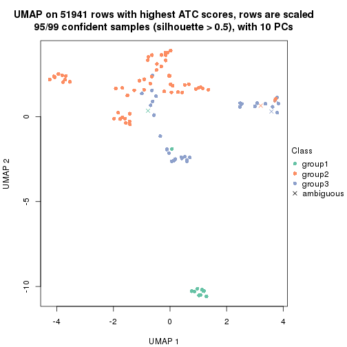
dimension_reduction(res, k = 4, method = "UMAP")
dimension_reduction(res, k = 5, method = "UMAP")
dimension_reduction(res, k = 6, method = "UMAP")
Following heatmap shows how subgroups are split when increasing k:
collect_classes(res)
Test correlation between subgroups and known annotations. If the known annotation is numeric, one-way ANOVA test is applied, and if the known annotation is discrete, chi-squared contingency table test is applied.
test_to_known_factors(res)
#> n protocol(p) individual(p) disease.state(p) k
#> ATC:pam 96 0.654 1.03e-08 4.70e-14 2
#> ATC:pam 95 0.991 1.01e-15 1.06e-21 3
#> ATC:pam 94 0.998 2.79e-22 8.06e-23 4
#> ATC:pam 95 0.998 9.64e-30 7.95e-37 5
#> ATC:pam 93 1.000 3.84e-37 5.67e-40 6
If matrix rows can be associated to genes, consider to use functional_enrichment(res,
...) to perform function enrichment for the signature genes. See this vignette for more detailed explanations.
The object with results only for a single top-value method and a single partition method can be extracted as:
res = res_list["ATC", "mclust"]
# you can also extract it by
# res = res_list["ATC:mclust"]
A summary of res and all the functions that can be applied to it:
res
#> A 'ConsensusPartition' object with k = 2, 3, 4, 5, 6.
#> On a matrix with 51941 rows and 99 columns.
#> Top rows (1000, 2000, 3000, 4000, 5000) are extracted by 'ATC' method.
#> Subgroups are detected by 'mclust' method.
#> Performed in total 1250 partitions by row resampling.
#> Best k for subgroups seems to be 3.
#>
#> Following methods can be applied to this 'ConsensusPartition' object:
#> [1] "cola_report" "collect_classes" "collect_plots"
#> [4] "collect_stats" "colnames" "compare_signatures"
#> [7] "consensus_heatmap" "dimension_reduction" "functional_enrichment"
#> [10] "get_anno_col" "get_anno" "get_classes"
#> [13] "get_consensus" "get_matrix" "get_membership"
#> [16] "get_param" "get_signatures" "get_stats"
#> [19] "is_best_k" "is_stable_k" "membership_heatmap"
#> [22] "ncol" "nrow" "plot_ecdf"
#> [25] "rownames" "select_partition_number" "show"
#> [28] "suggest_best_k" "test_to_known_factors"
collect_plots() function collects all the plots made from res for all k (number of partitions)
into one single page to provide an easy and fast comparison between different k.
collect_plots(res)
The plots are:
k and the heatmap of
predicted classes for each k.k.k.k.All the plots in panels can be made by individual functions and they are plotted later in this section.
select_partition_number() produces several plots showing different
statistics for choosing “optimized” k. There are following statistics:
k;k, the area increased is defined as \(A_k - A_{k-1}\).The detailed explanations of these statistics can be found in the cola vignette.
Generally speaking, lower PAC score, higher mean silhouette score or higher
concordance corresponds to better partition. Rand index and Jaccard index
measure how similar the current partition is compared to partition with k-1.
If they are too similar, we won't accept k is better than k-1.
select_partition_number(res)
The numeric values for all these statistics can be obtained by get_stats().
get_stats(res)
#> k 1-PAC mean_silhouette concordance area_increased Rand Jaccard
#> 2 2 0.543 0.788 0.879 0.2862 0.833 0.833
#> 3 3 1.000 0.974 0.974 0.9096 0.629 0.555
#> 4 4 0.637 0.662 0.813 0.2440 0.816 0.602
#> 5 5 0.854 0.866 0.885 0.0726 0.844 0.558
#> 6 6 0.820 0.837 0.886 0.0884 0.918 0.703
suggest_best_k() suggests the best \(k\) based on these statistics. The rules are as follows:
suggest_best_k(res)
#> [1] 3
Following shows the table of the partitions (You need to click the show/hide
code output link to see it). The membership matrix (columns with name p*)
is inferred by
clue::cl_consensus()
function with the SE method. Basically the value in the membership matrix
represents the probability to belong to a certain group. The finall class
label for an item is determined with the group with highest probability it
belongs to.
In get_classes() function, the entropy is calculated from the membership
matrix and the silhouette score is calculated from the consensus matrix.
cbind(get_classes(res, k = 2), get_membership(res, k = 2))
#> class entropy silhouette p1 p2
#> GSM187698 2 0.827 0.709 0.260 0.740
#> GSM187701 2 0.000 0.840 0.000 1.000
#> GSM187704 2 0.946 0.639 0.364 0.636
#> GSM187707 2 0.000 0.840 0.000 1.000
#> GSM187710 2 0.000 0.840 0.000 1.000
#> GSM187713 2 0.000 0.840 0.000 1.000
#> GSM187716 2 0.000 0.840 0.000 1.000
#> GSM187719 2 0.949 0.633 0.368 0.632
#> GSM187722 2 0.839 0.704 0.268 0.732
#> GSM187725 2 0.946 0.639 0.364 0.636
#> GSM187728 2 0.000 0.840 0.000 1.000
#> GSM187731 2 0.000 0.840 0.000 1.000
#> GSM187734 2 0.000 0.840 0.000 1.000
#> GSM187737 2 0.000 0.840 0.000 1.000
#> GSM187740 2 0.000 0.840 0.000 1.000
#> GSM187743 2 0.946 0.639 0.364 0.636
#> GSM187746 2 0.946 0.639 0.364 0.636
#> GSM187749 2 0.946 0.639 0.364 0.636
#> GSM187752 2 0.000 0.840 0.000 1.000
#> GSM187755 2 0.000 0.840 0.000 1.000
#> GSM187758 2 0.946 0.639 0.364 0.636
#> GSM187761 2 0.000 0.840 0.000 1.000
#> GSM187764 2 0.000 0.840 0.000 1.000
#> GSM187767 2 0.000 0.840 0.000 1.000
#> GSM187770 2 0.946 0.639 0.364 0.636
#> GSM187771 2 0.946 0.639 0.364 0.636
#> GSM187772 2 0.946 0.639 0.364 0.636
#> GSM187780 1 0.000 1.000 1.000 0.000
#> GSM187781 1 0.000 1.000 1.000 0.000
#> GSM187782 1 0.000 1.000 1.000 0.000
#> GSM187788 2 0.000 0.840 0.000 1.000
#> GSM187789 2 0.000 0.840 0.000 1.000
#> GSM187790 2 0.000 0.840 0.000 1.000
#> GSM187699 2 0.000 0.840 0.000 1.000
#> GSM187702 2 0.000 0.840 0.000 1.000
#> GSM187705 2 0.946 0.639 0.364 0.636
#> GSM187708 2 0.000 0.840 0.000 1.000
#> GSM187711 2 0.000 0.840 0.000 1.000
#> GSM187714 2 0.000 0.840 0.000 1.000
#> GSM187717 2 0.000 0.840 0.000 1.000
#> GSM187720 2 0.946 0.639 0.364 0.636
#> GSM187723 2 0.839 0.704 0.268 0.732
#> GSM187726 2 0.946 0.639 0.364 0.636
#> GSM187729 2 0.000 0.840 0.000 1.000
#> GSM187732 2 0.000 0.840 0.000 1.000
#> GSM187735 2 0.000 0.840 0.000 1.000
#> GSM187738 2 0.000 0.840 0.000 1.000
#> GSM187741 2 0.000 0.840 0.000 1.000
#> GSM187744 2 0.946 0.639 0.364 0.636
#> GSM187747 2 0.946 0.639 0.364 0.636
#> GSM187750 2 0.946 0.639 0.364 0.636
#> GSM187753 2 0.000 0.840 0.000 1.000
#> GSM187756 2 0.000 0.840 0.000 1.000
#> GSM187759 2 0.946 0.639 0.364 0.636
#> GSM187762 2 0.000 0.840 0.000 1.000
#> GSM187765 2 0.000 0.840 0.000 1.000
#> GSM187768 2 0.000 0.840 0.000 1.000
#> GSM187773 2 0.946 0.639 0.364 0.636
#> GSM187774 2 0.946 0.639 0.364 0.636
#> GSM187775 2 0.946 0.639 0.364 0.636
#> GSM187776 1 0.000 1.000 1.000 0.000
#> GSM187783 1 0.000 1.000 1.000 0.000
#> GSM187784 1 0.000 1.000 1.000 0.000
#> GSM187791 2 0.000 0.840 0.000 1.000
#> GSM187792 2 0.000 0.840 0.000 1.000
#> GSM187793 2 0.000 0.840 0.000 1.000
#> GSM187700 2 0.000 0.840 0.000 1.000
#> GSM187703 2 0.000 0.840 0.000 1.000
#> GSM187706 2 0.946 0.639 0.364 0.636
#> GSM187709 2 0.000 0.840 0.000 1.000
#> GSM187712 2 0.000 0.840 0.000 1.000
#> GSM187715 2 0.000 0.840 0.000 1.000
#> GSM187718 2 0.000 0.840 0.000 1.000
#> GSM187721 2 0.946 0.639 0.364 0.636
#> GSM187724 2 0.839 0.704 0.268 0.732
#> GSM187727 2 0.946 0.639 0.364 0.636
#> GSM187730 2 0.000 0.840 0.000 1.000
#> GSM187733 2 0.000 0.840 0.000 1.000
#> GSM187736 2 0.000 0.840 0.000 1.000
#> GSM187739 2 0.000 0.840 0.000 1.000
#> GSM187742 2 0.000 0.840 0.000 1.000
#> GSM187745 2 0.946 0.639 0.364 0.636
#> GSM187748 2 0.946 0.639 0.364 0.636
#> GSM187751 2 0.946 0.639 0.364 0.636
#> GSM187754 2 0.000 0.840 0.000 1.000
#> GSM187757 2 0.000 0.840 0.000 1.000
#> GSM187760 2 0.946 0.639 0.364 0.636
#> GSM187763 2 0.000 0.840 0.000 1.000
#> GSM187766 2 0.000 0.840 0.000 1.000
#> GSM187769 2 0.000 0.840 0.000 1.000
#> GSM187777 2 0.946 0.639 0.364 0.636
#> GSM187778 2 0.946 0.639 0.364 0.636
#> GSM187779 2 0.946 0.639 0.364 0.636
#> GSM187785 1 0.000 1.000 1.000 0.000
#> GSM187786 1 0.000 1.000 1.000 0.000
#> GSM187787 1 0.000 1.000 1.000 0.000
#> GSM187794 2 0.000 0.840 0.000 1.000
#> GSM187795 2 0.000 0.840 0.000 1.000
#> GSM187796 2 0.000 0.840 0.000 1.000
cbind(get_classes(res, k = 3), get_membership(res, k = 3))
#> class entropy silhouette p1 p2 p3
#> GSM187698 2 0.3434 0.934 0.064 0.904 0.032
#> GSM187701 2 0.3434 0.934 0.064 0.904 0.032
#> GSM187704 3 0.0000 0.984 0.000 0.000 1.000
#> GSM187707 2 0.0475 0.976 0.004 0.992 0.004
#> GSM187710 2 0.0829 0.974 0.004 0.984 0.012
#> GSM187713 2 0.1289 0.966 0.032 0.968 0.000
#> GSM187716 2 0.1964 0.955 0.056 0.944 0.000
#> GSM187719 3 0.2448 0.933 0.076 0.000 0.924
#> GSM187722 2 0.3445 0.911 0.016 0.896 0.088
#> GSM187725 3 0.0000 0.984 0.000 0.000 1.000
#> GSM187728 2 0.0829 0.974 0.004 0.984 0.012
#> GSM187731 2 0.0000 0.976 0.000 1.000 0.000
#> GSM187734 2 0.0000 0.976 0.000 1.000 0.000
#> GSM187737 2 0.0661 0.977 0.008 0.988 0.004
#> GSM187740 2 0.0237 0.977 0.000 0.996 0.004
#> GSM187743 3 0.1031 0.983 0.024 0.000 0.976
#> GSM187746 3 0.0000 0.984 0.000 0.000 1.000
#> GSM187749 3 0.0000 0.984 0.000 0.000 1.000
#> GSM187752 2 0.0237 0.977 0.000 0.996 0.004
#> GSM187755 2 0.0424 0.975 0.008 0.992 0.000
#> GSM187758 3 0.0000 0.984 0.000 0.000 1.000
#> GSM187761 2 0.0661 0.976 0.004 0.988 0.008
#> GSM187764 2 0.0892 0.972 0.020 0.980 0.000
#> GSM187767 2 0.0829 0.974 0.004 0.984 0.012
#> GSM187770 3 0.1031 0.983 0.024 0.000 0.976
#> GSM187771 3 0.1031 0.983 0.024 0.000 0.976
#> GSM187772 3 0.1031 0.983 0.024 0.000 0.976
#> GSM187780 1 0.2066 1.000 0.940 0.000 0.060
#> GSM187781 1 0.2066 1.000 0.940 0.000 0.060
#> GSM187782 1 0.2066 1.000 0.940 0.000 0.060
#> GSM187788 2 0.0000 0.976 0.000 1.000 0.000
#> GSM187789 2 0.0000 0.976 0.000 1.000 0.000
#> GSM187790 2 0.0000 0.976 0.000 1.000 0.000
#> GSM187699 2 0.3434 0.934 0.064 0.904 0.032
#> GSM187702 2 0.2400 0.953 0.064 0.932 0.004
#> GSM187705 3 0.0000 0.984 0.000 0.000 1.000
#> GSM187708 2 0.0661 0.976 0.004 0.988 0.008
#> GSM187711 2 0.0829 0.974 0.004 0.984 0.012
#> GSM187714 2 0.1964 0.955 0.056 0.944 0.000
#> GSM187717 2 0.1964 0.955 0.056 0.944 0.000
#> GSM187720 3 0.1031 0.983 0.024 0.000 0.976
#> GSM187723 2 0.3445 0.911 0.016 0.896 0.088
#> GSM187726 3 0.0000 0.984 0.000 0.000 1.000
#> GSM187729 2 0.0829 0.974 0.004 0.984 0.012
#> GSM187732 2 0.0000 0.976 0.000 1.000 0.000
#> GSM187735 2 0.0000 0.976 0.000 1.000 0.000
#> GSM187738 2 0.0661 0.977 0.008 0.988 0.004
#> GSM187741 2 0.0475 0.976 0.004 0.992 0.004
#> GSM187744 3 0.1031 0.983 0.024 0.000 0.976
#> GSM187747 3 0.0000 0.984 0.000 0.000 1.000
#> GSM187750 3 0.0000 0.984 0.000 0.000 1.000
#> GSM187753 2 0.0237 0.977 0.000 0.996 0.004
#> GSM187756 2 0.0424 0.975 0.008 0.992 0.000
#> GSM187759 3 0.0000 0.984 0.000 0.000 1.000
#> GSM187762 2 0.0661 0.976 0.004 0.988 0.008
#> GSM187765 2 0.1964 0.955 0.056 0.944 0.000
#> GSM187768 2 0.0829 0.974 0.004 0.984 0.012
#> GSM187773 3 0.1031 0.983 0.024 0.000 0.976
#> GSM187774 3 0.1031 0.983 0.024 0.000 0.976
#> GSM187775 3 0.1031 0.983 0.024 0.000 0.976
#> GSM187776 1 0.2066 1.000 0.940 0.000 0.060
#> GSM187783 1 0.2066 1.000 0.940 0.000 0.060
#> GSM187784 1 0.2066 1.000 0.940 0.000 0.060
#> GSM187791 2 0.0000 0.976 0.000 1.000 0.000
#> GSM187792 2 0.0000 0.976 0.000 1.000 0.000
#> GSM187793 2 0.0000 0.976 0.000 1.000 0.000
#> GSM187700 2 0.3434 0.934 0.064 0.904 0.032
#> GSM187703 2 0.3310 0.937 0.064 0.908 0.028
#> GSM187706 3 0.0000 0.984 0.000 0.000 1.000
#> GSM187709 2 0.0661 0.976 0.004 0.988 0.008
#> GSM187712 2 0.0829 0.974 0.004 0.984 0.012
#> GSM187715 2 0.1964 0.955 0.056 0.944 0.000
#> GSM187718 2 0.1964 0.955 0.056 0.944 0.000
#> GSM187721 3 0.1289 0.977 0.032 0.000 0.968
#> GSM187724 2 0.3445 0.911 0.016 0.896 0.088
#> GSM187727 3 0.0000 0.984 0.000 0.000 1.000
#> GSM187730 2 0.0829 0.974 0.004 0.984 0.012
#> GSM187733 2 0.0000 0.976 0.000 1.000 0.000
#> GSM187736 2 0.0000 0.976 0.000 1.000 0.000
#> GSM187739 2 0.0475 0.976 0.004 0.992 0.004
#> GSM187742 2 0.0237 0.977 0.000 0.996 0.004
#> GSM187745 3 0.1031 0.983 0.024 0.000 0.976
#> GSM187748 3 0.0000 0.984 0.000 0.000 1.000
#> GSM187751 3 0.0000 0.984 0.000 0.000 1.000
#> GSM187754 2 0.0237 0.977 0.000 0.996 0.004
#> GSM187757 2 0.0424 0.975 0.008 0.992 0.000
#> GSM187760 3 0.0000 0.984 0.000 0.000 1.000
#> GSM187763 2 0.0661 0.976 0.004 0.988 0.008
#> GSM187766 2 0.1860 0.957 0.052 0.948 0.000
#> GSM187769 2 0.0829 0.974 0.004 0.984 0.012
#> GSM187777 3 0.1031 0.983 0.024 0.000 0.976
#> GSM187778 3 0.1031 0.983 0.024 0.000 0.976
#> GSM187779 3 0.1031 0.983 0.024 0.000 0.976
#> GSM187785 1 0.2066 1.000 0.940 0.000 0.060
#> GSM187786 1 0.2066 1.000 0.940 0.000 0.060
#> GSM187787 1 0.2066 1.000 0.940 0.000 0.060
#> GSM187794 2 0.0000 0.976 0.000 1.000 0.000
#> GSM187795 2 0.0000 0.976 0.000 1.000 0.000
#> GSM187796 2 0.0000 0.976 0.000 1.000 0.000
cbind(get_classes(res, k = 4), get_membership(res, k = 4))
#> class entropy silhouette p1 p2 p3 p4
#> GSM187698 4 0.4072 0.610 0.000 0.252 0.000 0.748
#> GSM187701 4 0.4040 0.612 0.000 0.248 0.000 0.752
#> GSM187704 3 0.0000 0.929 0.000 0.000 1.000 0.000
#> GSM187707 2 0.4888 0.400 0.000 0.588 0.000 0.412
#> GSM187710 2 0.0376 0.487 0.000 0.992 0.004 0.004
#> GSM187713 4 0.1716 0.631 0.000 0.064 0.000 0.936
#> GSM187716 4 0.0188 0.646 0.000 0.004 0.000 0.996
#> GSM187719 3 0.3105 0.912 0.140 0.004 0.856 0.000
#> GSM187722 4 0.5717 0.507 0.000 0.324 0.044 0.632
#> GSM187725 3 0.0000 0.929 0.000 0.000 1.000 0.000
#> GSM187728 2 0.0376 0.487 0.000 0.992 0.004 0.004
#> GSM187731 2 0.4998 0.384 0.000 0.512 0.000 0.488
#> GSM187734 2 0.4998 0.384 0.000 0.512 0.000 0.488
#> GSM187737 4 0.4746 0.435 0.000 0.368 0.000 0.632
#> GSM187740 2 0.4961 0.401 0.000 0.552 0.000 0.448
#> GSM187743 3 0.2647 0.922 0.120 0.000 0.880 0.000
#> GSM187746 3 0.0000 0.929 0.000 0.000 1.000 0.000
#> GSM187749 3 0.0000 0.929 0.000 0.000 1.000 0.000
#> GSM187752 2 0.4713 0.591 0.000 0.640 0.000 0.360
#> GSM187755 4 0.2345 0.644 0.000 0.100 0.000 0.900
#> GSM187758 3 0.0000 0.929 0.000 0.000 1.000 0.000
#> GSM187761 2 0.5168 0.113 0.000 0.504 0.004 0.492
#> GSM187764 4 0.2408 0.644 0.000 0.104 0.000 0.896
#> GSM187767 2 0.0376 0.487 0.000 0.992 0.004 0.004
#> GSM187770 3 0.2760 0.921 0.128 0.000 0.872 0.000
#> GSM187771 3 0.2760 0.921 0.128 0.000 0.872 0.000
#> GSM187772 3 0.2760 0.921 0.128 0.000 0.872 0.000
#> GSM187780 1 0.0000 1.000 1.000 0.000 0.000 0.000
#> GSM187781 1 0.0000 1.000 1.000 0.000 0.000 0.000
#> GSM187782 1 0.0000 1.000 1.000 0.000 0.000 0.000
#> GSM187788 2 0.4730 0.591 0.000 0.636 0.000 0.364
#> GSM187789 2 0.4730 0.591 0.000 0.636 0.000 0.364
#> GSM187790 2 0.4730 0.591 0.000 0.636 0.000 0.364
#> GSM187699 4 0.4072 0.610 0.000 0.252 0.000 0.748
#> GSM187702 4 0.4072 0.612 0.000 0.252 0.000 0.748
#> GSM187705 3 0.0000 0.929 0.000 0.000 1.000 0.000
#> GSM187708 2 0.5168 0.113 0.000 0.504 0.004 0.492
#> GSM187711 2 0.0376 0.487 0.000 0.992 0.004 0.004
#> GSM187714 4 0.0000 0.645 0.000 0.000 0.000 1.000
#> GSM187717 4 0.0000 0.645 0.000 0.000 0.000 1.000
#> GSM187720 3 0.3105 0.912 0.140 0.004 0.856 0.000
#> GSM187723 4 0.5717 0.507 0.000 0.324 0.044 0.632
#> GSM187726 3 0.0000 0.929 0.000 0.000 1.000 0.000
#> GSM187729 2 0.0376 0.487 0.000 0.992 0.004 0.004
#> GSM187732 4 0.4713 0.146 0.000 0.360 0.000 0.640
#> GSM187735 4 0.4661 0.184 0.000 0.348 0.000 0.652
#> GSM187738 4 0.4790 0.380 0.000 0.380 0.000 0.620
#> GSM187741 4 0.5000 -0.149 0.000 0.496 0.000 0.504
#> GSM187744 3 0.2704 0.921 0.124 0.000 0.876 0.000
#> GSM187747 3 0.0000 0.929 0.000 0.000 1.000 0.000
#> GSM187750 3 0.0000 0.929 0.000 0.000 1.000 0.000
#> GSM187753 2 0.4730 0.590 0.000 0.636 0.000 0.364
#> GSM187756 4 0.2345 0.644 0.000 0.100 0.000 0.900
#> GSM187759 3 0.0000 0.929 0.000 0.000 1.000 0.000
#> GSM187762 2 0.5168 0.113 0.000 0.504 0.004 0.492
#> GSM187765 4 0.0000 0.645 0.000 0.000 0.000 1.000
#> GSM187768 2 0.0376 0.487 0.000 0.992 0.004 0.004
#> GSM187773 3 0.2760 0.921 0.128 0.000 0.872 0.000
#> GSM187774 3 0.2760 0.921 0.128 0.000 0.872 0.000
#> GSM187775 3 0.2760 0.921 0.128 0.000 0.872 0.000
#> GSM187776 1 0.0000 1.000 1.000 0.000 0.000 0.000
#> GSM187783 1 0.0000 1.000 1.000 0.000 0.000 0.000
#> GSM187784 1 0.0000 1.000 1.000 0.000 0.000 0.000
#> GSM187791 2 0.4730 0.591 0.000 0.636 0.000 0.364
#> GSM187792 2 0.4730 0.591 0.000 0.636 0.000 0.364
#> GSM187793 2 0.4730 0.591 0.000 0.636 0.000 0.364
#> GSM187700 4 0.4072 0.610 0.000 0.252 0.000 0.748
#> GSM187703 4 0.4382 0.567 0.000 0.296 0.000 0.704
#> GSM187706 3 0.0000 0.929 0.000 0.000 1.000 0.000
#> GSM187709 2 0.5143 0.260 0.000 0.540 0.004 0.456
#> GSM187712 2 0.0376 0.487 0.000 0.992 0.004 0.004
#> GSM187715 4 0.0000 0.645 0.000 0.000 0.000 1.000
#> GSM187718 4 0.0000 0.645 0.000 0.000 0.000 1.000
#> GSM187721 3 0.3105 0.912 0.140 0.004 0.856 0.000
#> GSM187724 4 0.5717 0.507 0.000 0.324 0.044 0.632
#> GSM187727 3 0.0000 0.929 0.000 0.000 1.000 0.000
#> GSM187730 2 0.0376 0.487 0.000 0.992 0.004 0.004
#> GSM187733 2 0.4998 0.384 0.000 0.512 0.000 0.488
#> GSM187736 2 0.4998 0.384 0.000 0.512 0.000 0.488
#> GSM187739 4 0.4948 0.143 0.000 0.440 0.000 0.560
#> GSM187742 2 0.4985 0.278 0.000 0.532 0.000 0.468
#> GSM187745 3 0.2647 0.922 0.120 0.000 0.880 0.000
#> GSM187748 3 0.0000 0.929 0.000 0.000 1.000 0.000
#> GSM187751 3 0.0000 0.929 0.000 0.000 1.000 0.000
#> GSM187754 2 0.4730 0.590 0.000 0.636 0.000 0.364
#> GSM187757 4 0.2345 0.644 0.000 0.100 0.000 0.900
#> GSM187760 3 0.0000 0.929 0.000 0.000 1.000 0.000
#> GSM187763 2 0.5168 0.113 0.000 0.504 0.004 0.492
#> GSM187766 4 0.0000 0.645 0.000 0.000 0.000 1.000
#> GSM187769 2 0.0376 0.487 0.000 0.992 0.004 0.004
#> GSM187777 3 0.2760 0.921 0.128 0.000 0.872 0.000
#> GSM187778 3 0.2760 0.921 0.128 0.000 0.872 0.000
#> GSM187779 3 0.2760 0.921 0.128 0.000 0.872 0.000
#> GSM187785 1 0.0000 1.000 1.000 0.000 0.000 0.000
#> GSM187786 1 0.0000 1.000 1.000 0.000 0.000 0.000
#> GSM187787 1 0.0000 1.000 1.000 0.000 0.000 0.000
#> GSM187794 2 0.4730 0.591 0.000 0.636 0.000 0.364
#> GSM187795 2 0.4730 0.591 0.000 0.636 0.000 0.364
#> GSM187796 2 0.4730 0.591 0.000 0.636 0.000 0.364
cbind(get_classes(res, k = 5), get_membership(res, k = 5))
#> class entropy silhouette p1 p2 p3 p4 p5
#> GSM187698 5 0.4211 0.759 0.000 0 0.004 0.360 0.636
#> GSM187701 5 0.4074 0.759 0.000 0 0.000 0.364 0.636
#> GSM187704 3 0.0000 0.997 0.000 0 1.000 0.000 0.000
#> GSM187707 5 0.4219 0.741 0.000 0 0.000 0.416 0.584
#> GSM187710 2 0.0000 1.000 0.000 1 0.000 0.000 0.000
#> GSM187713 4 0.1043 0.935 0.000 0 0.000 0.960 0.040
#> GSM187716 4 0.0609 0.962 0.000 0 0.000 0.980 0.020
#> GSM187719 3 0.0798 0.978 0.008 0 0.976 0.000 0.016
#> GSM187722 5 0.4276 0.753 0.000 0 0.004 0.380 0.616
#> GSM187725 3 0.0162 0.995 0.004 0 0.996 0.000 0.000
#> GSM187728 2 0.0000 1.000 0.000 1 0.000 0.000 0.000
#> GSM187731 5 0.4235 0.732 0.000 0 0.000 0.424 0.576
#> GSM187734 5 0.4235 0.732 0.000 0 0.000 0.424 0.576
#> GSM187737 5 0.4074 0.759 0.000 0 0.000 0.364 0.636
#> GSM187740 5 0.4126 0.757 0.000 0 0.000 0.380 0.620
#> GSM187743 3 0.0162 0.995 0.004 0 0.996 0.000 0.000
#> GSM187746 3 0.0000 0.997 0.000 0 1.000 0.000 0.000
#> GSM187749 3 0.0162 0.995 0.004 0 0.996 0.000 0.000
#> GSM187752 5 0.2424 0.611 0.000 0 0.000 0.132 0.868
#> GSM187755 4 0.0609 0.962 0.000 0 0.000 0.980 0.020
#> GSM187758 3 0.0000 0.997 0.000 0 1.000 0.000 0.000
#> GSM187761 5 0.4367 0.740 0.000 0 0.004 0.416 0.580
#> GSM187764 4 0.3395 0.433 0.000 0 0.000 0.764 0.236
#> GSM187767 2 0.0000 1.000 0.000 1 0.000 0.000 0.000
#> GSM187770 3 0.0000 0.997 0.000 0 1.000 0.000 0.000
#> GSM187771 3 0.0000 0.997 0.000 0 1.000 0.000 0.000
#> GSM187772 3 0.0000 0.997 0.000 0 1.000 0.000 0.000
#> GSM187780 1 0.0000 1.000 1.000 0 0.000 0.000 0.000
#> GSM187781 1 0.0000 1.000 1.000 0 0.000 0.000 0.000
#> GSM187782 1 0.0000 1.000 1.000 0 0.000 0.000 0.000
#> GSM187788 5 0.1121 0.555 0.000 0 0.000 0.044 0.956
#> GSM187789 5 0.1121 0.555 0.000 0 0.000 0.044 0.956
#> GSM187790 5 0.1121 0.555 0.000 0 0.000 0.044 0.956
#> GSM187699 5 0.4074 0.759 0.000 0 0.000 0.364 0.636
#> GSM187702 5 0.4088 0.758 0.000 0 0.000 0.368 0.632
#> GSM187705 3 0.0000 0.997 0.000 0 1.000 0.000 0.000
#> GSM187708 5 0.4367 0.740 0.000 0 0.004 0.416 0.580
#> GSM187711 2 0.0000 1.000 0.000 1 0.000 0.000 0.000
#> GSM187714 4 0.0609 0.962 0.000 0 0.000 0.980 0.020
#> GSM187717 4 0.0609 0.962 0.000 0 0.000 0.980 0.020
#> GSM187720 3 0.0510 0.983 0.000 0 0.984 0.000 0.016
#> GSM187723 5 0.4276 0.753 0.000 0 0.004 0.380 0.616
#> GSM187726 3 0.0000 0.997 0.000 0 1.000 0.000 0.000
#> GSM187729 2 0.0000 1.000 0.000 1 0.000 0.000 0.000
#> GSM187732 5 0.4278 0.708 0.000 0 0.000 0.452 0.548
#> GSM187735 5 0.4291 0.691 0.000 0 0.000 0.464 0.536
#> GSM187738 5 0.4182 0.742 0.000 0 0.000 0.400 0.600
#> GSM187741 5 0.4331 0.744 0.000 0 0.004 0.400 0.596
#> GSM187744 3 0.0162 0.995 0.004 0 0.996 0.000 0.000
#> GSM187747 3 0.0000 0.997 0.000 0 1.000 0.000 0.000
#> GSM187750 3 0.0000 0.997 0.000 0 1.000 0.000 0.000
#> GSM187753 5 0.2516 0.613 0.000 0 0.000 0.140 0.860
#> GSM187756 4 0.0609 0.962 0.000 0 0.000 0.980 0.020
#> GSM187759 3 0.0000 0.997 0.000 0 1.000 0.000 0.000
#> GSM187762 5 0.4367 0.740 0.000 0 0.004 0.416 0.580
#> GSM187765 4 0.0609 0.962 0.000 0 0.000 0.980 0.020
#> GSM187768 2 0.0000 1.000 0.000 1 0.000 0.000 0.000
#> GSM187773 3 0.0000 0.997 0.000 0 1.000 0.000 0.000
#> GSM187774 3 0.0000 0.997 0.000 0 1.000 0.000 0.000
#> GSM187775 3 0.0000 0.997 0.000 0 1.000 0.000 0.000
#> GSM187776 1 0.0000 1.000 1.000 0 0.000 0.000 0.000
#> GSM187783 1 0.0000 1.000 1.000 0 0.000 0.000 0.000
#> GSM187784 1 0.0000 1.000 1.000 0 0.000 0.000 0.000
#> GSM187791 5 0.1121 0.555 0.000 0 0.000 0.044 0.956
#> GSM187792 5 0.1121 0.555 0.000 0 0.000 0.044 0.956
#> GSM187793 5 0.1121 0.555 0.000 0 0.000 0.044 0.956
#> GSM187700 5 0.4074 0.759 0.000 0 0.000 0.364 0.636
#> GSM187703 5 0.4074 0.759 0.000 0 0.000 0.364 0.636
#> GSM187706 3 0.0000 0.997 0.000 0 1.000 0.000 0.000
#> GSM187709 5 0.4367 0.740 0.000 0 0.004 0.416 0.580
#> GSM187712 2 0.0000 1.000 0.000 1 0.000 0.000 0.000
#> GSM187715 4 0.0609 0.962 0.000 0 0.000 0.980 0.020
#> GSM187718 4 0.0609 0.962 0.000 0 0.000 0.980 0.020
#> GSM187721 3 0.0510 0.983 0.000 0 0.984 0.000 0.016
#> GSM187724 5 0.4276 0.753 0.000 0 0.004 0.380 0.616
#> GSM187727 3 0.0000 0.997 0.000 0 1.000 0.000 0.000
#> GSM187730 2 0.0000 1.000 0.000 1 0.000 0.000 0.000
#> GSM187733 5 0.4235 0.732 0.000 0 0.000 0.424 0.576
#> GSM187736 5 0.4235 0.732 0.000 0 0.000 0.424 0.576
#> GSM187739 5 0.4182 0.742 0.000 0 0.000 0.400 0.600
#> GSM187742 5 0.4182 0.745 0.000 0 0.000 0.400 0.600
#> GSM187745 3 0.0162 0.995 0.004 0 0.996 0.000 0.000
#> GSM187748 3 0.0000 0.997 0.000 0 1.000 0.000 0.000
#> GSM187751 3 0.0000 0.997 0.000 0 1.000 0.000 0.000
#> GSM187754 5 0.2516 0.613 0.000 0 0.000 0.140 0.860
#> GSM187757 4 0.0609 0.962 0.000 0 0.000 0.980 0.020
#> GSM187760 3 0.0000 0.997 0.000 0 1.000 0.000 0.000
#> GSM187763 5 0.4367 0.740 0.000 0 0.004 0.416 0.580
#> GSM187766 4 0.0609 0.962 0.000 0 0.000 0.980 0.020
#> GSM187769 2 0.0000 1.000 0.000 1 0.000 0.000 0.000
#> GSM187777 3 0.0000 0.997 0.000 0 1.000 0.000 0.000
#> GSM187778 3 0.0000 0.997 0.000 0 1.000 0.000 0.000
#> GSM187779 3 0.0000 0.997 0.000 0 1.000 0.000 0.000
#> GSM187785 1 0.0000 1.000 1.000 0 0.000 0.000 0.000
#> GSM187786 1 0.0000 1.000 1.000 0 0.000 0.000 0.000
#> GSM187787 1 0.0000 1.000 1.000 0 0.000 0.000 0.000
#> GSM187794 5 0.1121 0.555 0.000 0 0.000 0.044 0.956
#> GSM187795 5 0.1121 0.555 0.000 0 0.000 0.044 0.956
#> GSM187796 5 0.1121 0.555 0.000 0 0.000 0.044 0.956
cbind(get_classes(res, k = 6), get_membership(res, k = 6))
#> class entropy silhouette p1 p2 p3 p4 p5 p6
#> GSM187698 2 0.3877 0.7467 0 0.764 0.000 0.000 0.076 0.160
#> GSM187701 2 0.3877 0.7467 0 0.764 0.000 0.000 0.076 0.160
#> GSM187704 3 0.0000 0.9628 0 0.000 1.000 0.000 0.000 0.000
#> GSM187707 2 0.2123 0.7719 0 0.908 0.000 0.008 0.020 0.064
#> GSM187710 4 0.0146 0.9953 0 0.004 0.000 0.996 0.000 0.000
#> GSM187713 6 0.3592 0.6103 0 0.240 0.000 0.000 0.020 0.740
#> GSM187716 6 0.0458 0.8228 0 0.016 0.000 0.000 0.000 0.984
#> GSM187719 3 0.2542 0.9323 0 0.020 0.884 0.000 0.080 0.016
#> GSM187722 2 0.3817 0.6936 0 0.800 0.120 0.000 0.056 0.024
#> GSM187725 3 0.1820 0.9436 0 0.044 0.928 0.000 0.016 0.012
#> GSM187728 4 0.0000 0.9994 0 0.000 0.000 1.000 0.000 0.000
#> GSM187731 2 0.5716 0.1643 0 0.444 0.000 0.000 0.164 0.392
#> GSM187734 2 0.5716 0.1643 0 0.444 0.000 0.000 0.164 0.392
#> GSM187737 2 0.3419 0.7753 0 0.812 0.000 0.000 0.084 0.104
#> GSM187740 2 0.2786 0.7738 0 0.860 0.000 0.000 0.056 0.084
#> GSM187743 3 0.2836 0.9372 0 0.052 0.872 0.000 0.060 0.016
#> GSM187746 3 0.0000 0.9628 0 0.000 1.000 0.000 0.000 0.000
#> GSM187749 3 0.1820 0.9436 0 0.044 0.928 0.000 0.016 0.012
#> GSM187752 5 0.4479 0.7211 0 0.236 0.000 0.000 0.684 0.080
#> GSM187755 6 0.1285 0.8149 0 0.052 0.000 0.000 0.004 0.944
#> GSM187758 3 0.0146 0.9626 0 0.000 0.996 0.000 0.004 0.000
#> GSM187761 2 0.2036 0.7719 0 0.912 0.000 0.008 0.016 0.064
#> GSM187764 6 0.3799 0.5383 0 0.276 0.000 0.000 0.020 0.704
#> GSM187767 4 0.0000 0.9994 0 0.000 0.000 1.000 0.000 0.000
#> GSM187770 3 0.1082 0.9622 0 0.000 0.956 0.000 0.040 0.004
#> GSM187771 3 0.1082 0.9622 0 0.000 0.956 0.000 0.040 0.004
#> GSM187772 3 0.1082 0.9622 0 0.000 0.956 0.000 0.040 0.004
#> GSM187780 1 0.0000 1.0000 1 0.000 0.000 0.000 0.000 0.000
#> GSM187781 1 0.0000 1.0000 1 0.000 0.000 0.000 0.000 0.000
#> GSM187782 1 0.0000 1.0000 1 0.000 0.000 0.000 0.000 0.000
#> GSM187788 5 0.1480 0.9248 0 0.020 0.000 0.000 0.940 0.040
#> GSM187789 5 0.1480 0.9248 0 0.020 0.000 0.000 0.940 0.040
#> GSM187790 5 0.1480 0.9248 0 0.020 0.000 0.000 0.940 0.040
#> GSM187699 2 0.3806 0.7496 0 0.772 0.000 0.000 0.076 0.152
#> GSM187702 2 0.3960 0.7450 0 0.752 0.000 0.000 0.072 0.176
#> GSM187705 3 0.0000 0.9628 0 0.000 1.000 0.000 0.000 0.000
#> GSM187708 2 0.1728 0.7700 0 0.924 0.000 0.008 0.004 0.064
#> GSM187711 4 0.0000 0.9994 0 0.000 0.000 1.000 0.000 0.000
#> GSM187714 6 0.1700 0.8032 0 0.080 0.000 0.000 0.004 0.916
#> GSM187717 6 0.0458 0.8228 0 0.016 0.000 0.000 0.000 0.984
#> GSM187720 3 0.2237 0.9371 0 0.020 0.896 0.000 0.080 0.004
#> GSM187723 2 0.3817 0.6936 0 0.800 0.120 0.000 0.056 0.024
#> GSM187726 3 0.1010 0.9564 0 0.036 0.960 0.000 0.004 0.000
#> GSM187729 4 0.0000 0.9994 0 0.000 0.000 1.000 0.000 0.000
#> GSM187732 6 0.5186 -0.0756 0 0.436 0.000 0.000 0.088 0.476
#> GSM187735 6 0.5184 -0.0590 0 0.432 0.000 0.000 0.088 0.480
#> GSM187738 2 0.3027 0.7733 0 0.824 0.000 0.000 0.028 0.148
#> GSM187741 2 0.2457 0.7768 0 0.880 0.000 0.000 0.036 0.084
#> GSM187744 3 0.2775 0.9393 0 0.052 0.876 0.000 0.056 0.016
#> GSM187747 3 0.0000 0.9628 0 0.000 1.000 0.000 0.000 0.000
#> GSM187750 3 0.1010 0.9564 0 0.036 0.960 0.000 0.004 0.000
#> GSM187753 5 0.4382 0.7392 0 0.228 0.000 0.000 0.696 0.076
#> GSM187756 6 0.0692 0.8220 0 0.020 0.000 0.000 0.004 0.976
#> GSM187759 3 0.0000 0.9628 0 0.000 1.000 0.000 0.000 0.000
#> GSM187762 2 0.1728 0.7700 0 0.924 0.000 0.008 0.004 0.064
#> GSM187765 6 0.0458 0.8228 0 0.016 0.000 0.000 0.000 0.984
#> GSM187768 4 0.0000 0.9994 0 0.000 0.000 1.000 0.000 0.000
#> GSM187773 3 0.1082 0.9622 0 0.000 0.956 0.000 0.040 0.004
#> GSM187774 3 0.1082 0.9622 0 0.000 0.956 0.000 0.040 0.004
#> GSM187775 3 0.1082 0.9622 0 0.000 0.956 0.000 0.040 0.004
#> GSM187776 1 0.0000 1.0000 1 0.000 0.000 0.000 0.000 0.000
#> GSM187783 1 0.0000 1.0000 1 0.000 0.000 0.000 0.000 0.000
#> GSM187784 1 0.0000 1.0000 1 0.000 0.000 0.000 0.000 0.000
#> GSM187791 5 0.1480 0.9248 0 0.020 0.000 0.000 0.940 0.040
#> GSM187792 5 0.1480 0.9248 0 0.020 0.000 0.000 0.940 0.040
#> GSM187793 5 0.1480 0.9248 0 0.020 0.000 0.000 0.940 0.040
#> GSM187700 2 0.3806 0.7496 0 0.772 0.000 0.000 0.076 0.152
#> GSM187703 2 0.3877 0.7483 0 0.764 0.000 0.000 0.076 0.160
#> GSM187706 3 0.0000 0.9628 0 0.000 1.000 0.000 0.000 0.000
#> GSM187709 2 0.1728 0.7700 0 0.924 0.000 0.008 0.004 0.064
#> GSM187712 4 0.0000 0.9994 0 0.000 0.000 1.000 0.000 0.000
#> GSM187715 6 0.1700 0.8032 0 0.080 0.000 0.000 0.004 0.916
#> GSM187718 6 0.0458 0.8228 0 0.016 0.000 0.000 0.000 0.984
#> GSM187721 3 0.2237 0.9371 0 0.020 0.896 0.000 0.080 0.004
#> GSM187724 2 0.3817 0.6936 0 0.800 0.120 0.000 0.056 0.024
#> GSM187727 3 0.1010 0.9564 0 0.036 0.960 0.000 0.004 0.000
#> GSM187730 4 0.0000 0.9994 0 0.000 0.000 1.000 0.000 0.000
#> GSM187733 2 0.5713 0.1696 0 0.448 0.000 0.000 0.164 0.388
#> GSM187736 2 0.5713 0.1696 0 0.448 0.000 0.000 0.164 0.388
#> GSM187739 2 0.3065 0.7721 0 0.820 0.000 0.000 0.028 0.152
#> GSM187742 2 0.2527 0.7766 0 0.876 0.000 0.000 0.040 0.084
#> GSM187745 3 0.2836 0.9372 0 0.052 0.872 0.000 0.060 0.016
#> GSM187748 3 0.0000 0.9628 0 0.000 1.000 0.000 0.000 0.000
#> GSM187751 3 0.1010 0.9564 0 0.036 0.960 0.000 0.004 0.000
#> GSM187754 5 0.4406 0.7419 0 0.224 0.000 0.000 0.696 0.080
#> GSM187757 6 0.0692 0.8220 0 0.020 0.000 0.000 0.004 0.976
#> GSM187760 3 0.0000 0.9628 0 0.000 1.000 0.000 0.000 0.000
#> GSM187763 2 0.1728 0.7700 0 0.924 0.000 0.008 0.004 0.064
#> GSM187766 6 0.1141 0.8166 0 0.052 0.000 0.000 0.000 0.948
#> GSM187769 4 0.0000 0.9994 0 0.000 0.000 1.000 0.000 0.000
#> GSM187777 3 0.1082 0.9622 0 0.000 0.956 0.000 0.040 0.004
#> GSM187778 3 0.1082 0.9622 0 0.000 0.956 0.000 0.040 0.004
#> GSM187779 3 0.1082 0.9622 0 0.000 0.956 0.000 0.040 0.004
#> GSM187785 1 0.0000 1.0000 1 0.000 0.000 0.000 0.000 0.000
#> GSM187786 1 0.0000 1.0000 1 0.000 0.000 0.000 0.000 0.000
#> GSM187787 1 0.0000 1.0000 1 0.000 0.000 0.000 0.000 0.000
#> GSM187794 5 0.1480 0.9248 0 0.020 0.000 0.000 0.940 0.040
#> GSM187795 5 0.1480 0.9248 0 0.020 0.000 0.000 0.940 0.040
#> GSM187796 5 0.1480 0.9248 0 0.020 0.000 0.000 0.940 0.040
Heatmaps for the consensus matrix. It visualizes the probability of two samples to be in a same group.
consensus_heatmap(res, k = 2)
consensus_heatmap(res, k = 3)
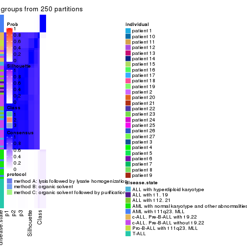
consensus_heatmap(res, k = 4)
consensus_heatmap(res, k = 5)

consensus_heatmap(res, k = 6)
Heatmaps for the membership of samples in all partitions to see how consistent they are:
membership_heatmap(res, k = 2)
membership_heatmap(res, k = 3)
membership_heatmap(res, k = 4)

membership_heatmap(res, k = 5)
membership_heatmap(res, k = 6)
As soon as we have had the classes for columns, we can look for signatures which are significantly different between classes which can be candidate marks for certain classes. Following are the heatmaps for signatures.
Signature heatmaps where rows are scaled:
get_signatures(res, k = 2)
#> Error: The width or height of the raster image is zero, maybe you forget to turn off the
#> previous graphic device or it was corrupted. Run `dev.off()` to close it.

get_signatures(res, k = 3)
#> Error: The width or height of the raster image is zero, maybe you forget to turn off the
#> previous graphic device or it was corrupted. Run `dev.off()` to close it.

get_signatures(res, k = 4)
#> Error: The width or height of the raster image is zero, maybe you forget to turn off the
#> previous graphic device or it was corrupted. Run `dev.off()` to close it.

get_signatures(res, k = 5)
#> Error: The width or height of the raster image is zero, maybe you forget to turn off the
#> previous graphic device or it was corrupted. Run `dev.off()` to close it.

get_signatures(res, k = 6)
#> Error: The width or height of the raster image is zero, maybe you forget to turn off the
#> previous graphic device or it was corrupted. Run `dev.off()` to close it.

Signature heatmaps where rows are not scaled:
get_signatures(res, k = 2, scale_rows = FALSE)
#> Error: The width or height of the raster image is zero, maybe you forget to turn off the
#> previous graphic device or it was corrupted. Run `dev.off()` to close it.

get_signatures(res, k = 3, scale_rows = FALSE)
#> Error: The width or height of the raster image is zero, maybe you forget to turn off the
#> previous graphic device or it was corrupted. Run `dev.off()` to close it.

get_signatures(res, k = 4, scale_rows = FALSE)
#> Error: The width or height of the raster image is zero, maybe you forget to turn off the
#> previous graphic device or it was corrupted. Run `dev.off()` to close it.

get_signatures(res, k = 5, scale_rows = FALSE)
#> Error: The width or height of the raster image is zero, maybe you forget to turn off the
#> previous graphic device or it was corrupted. Run `dev.off()` to close it.

get_signatures(res, k = 6, scale_rows = FALSE)
#> Error: The width or height of the raster image is zero, maybe you forget to turn off the
#> previous graphic device or it was corrupted. Run `dev.off()` to close it.

Compare the overlap of signatures from different k:
compare_signatures(res)
get_signature() returns a data frame invisibly. TO get the list of signatures, the function
call should be assigned to a variable explicitly. In following code, if plot argument is set
to FALSE, no heatmap is plotted while only the differential analysis is performed.
# code only for demonstration
tb = get_signature(res, k = ..., plot = FALSE)
An example of the output of tb is:
#> which_row fdr mean_1 mean_2 scaled_mean_1 scaled_mean_2 km
#> 1 38 0.042760348 8.373488 9.131774 -0.5533452 0.5164555 1
#> 2 40 0.018707592 7.106213 8.469186 -0.6173731 0.5762149 1
#> 3 55 0.019134737 10.221463 11.207825 -0.6159697 0.5749050 1
#> 4 59 0.006059896 5.921854 7.869574 -0.6899429 0.6439467 1
#> 5 60 0.018055526 8.928898 10.211722 -0.6204761 0.5791110 1
#> 6 98 0.009384629 15.714769 14.887706 0.6635654 -0.6193277 2
...
The columns in tb are:
which_row: row indices corresponding to the input matrix.fdr: FDR for the differential test. mean_x: The mean value in group x.scaled_mean_x: The mean value in group x after rows are scaled.km: Row groups if k-means clustering is applied to rows.UMAP plot which shows how samples are separated.
dimension_reduction(res, k = 2, method = "UMAP")
dimension_reduction(res, k = 3, method = "UMAP")
dimension_reduction(res, k = 4, method = "UMAP")
dimension_reduction(res, k = 5, method = "UMAP")
dimension_reduction(res, k = 6, method = "UMAP")
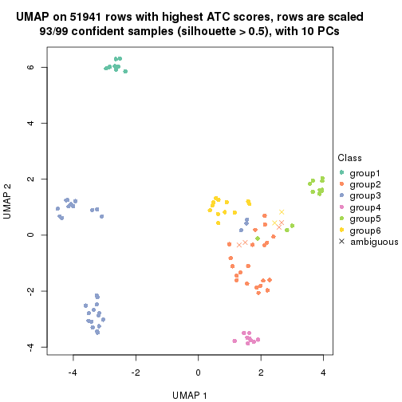
Following heatmap shows how subgroups are split when increasing k:
collect_classes(res)
Test correlation between subgroups and known annotations. If the known annotation is numeric, one-way ANOVA test is applied, and if the known annotation is discrete, chi-squared contingency table test is applied.
test_to_known_factors(res)
#> n protocol(p) individual(p) disease.state(p) k
#> ATC:mclust 99 1 1.88e-10 2.18e-12 2
#> ATC:mclust 99 1 6.75e-19 5.72e-27 3
#> ATC:mclust 72 1 3.43e-22 8.61e-22 4
#> ATC:mclust 98 1 5.28e-35 7.55e-28 5
#> ATC:mclust 93 1 4.26e-42 6.55e-29 6
If matrix rows can be associated to genes, consider to use functional_enrichment(res,
...) to perform function enrichment for the signature genes. See this vignette for more detailed explanations.
The object with results only for a single top-value method and a single partition method can be extracted as:
res = res_list["ATC", "NMF"]
# you can also extract it by
# res = res_list["ATC:NMF"]
A summary of res and all the functions that can be applied to it:
res
#> A 'ConsensusPartition' object with k = 2, 3, 4, 5, 6.
#> On a matrix with 51941 rows and 99 columns.
#> Top rows (1000, 2000, 3000, 4000, 5000) are extracted by 'ATC' method.
#> Subgroups are detected by 'NMF' method.
#> Performed in total 1250 partitions by row resampling.
#> Best k for subgroups seems to be 2.
#>
#> Following methods can be applied to this 'ConsensusPartition' object:
#> [1] "cola_report" "collect_classes" "collect_plots"
#> [4] "collect_stats" "colnames" "compare_signatures"
#> [7] "consensus_heatmap" "dimension_reduction" "functional_enrichment"
#> [10] "get_anno_col" "get_anno" "get_classes"
#> [13] "get_consensus" "get_matrix" "get_membership"
#> [16] "get_param" "get_signatures" "get_stats"
#> [19] "is_best_k" "is_stable_k" "membership_heatmap"
#> [22] "ncol" "nrow" "plot_ecdf"
#> [25] "rownames" "select_partition_number" "show"
#> [28] "suggest_best_k" "test_to_known_factors"
collect_plots() function collects all the plots made from res for all k (number of partitions)
into one single page to provide an easy and fast comparison between different k.
collect_plots(res)
The plots are:
k and the heatmap of
predicted classes for each k.k.k.k.All the plots in panels can be made by individual functions and they are plotted later in this section.
select_partition_number() produces several plots showing different
statistics for choosing “optimized” k. There are following statistics:
k;k, the area increased is defined as \(A_k - A_{k-1}\).The detailed explanations of these statistics can be found in the cola vignette.
Generally speaking, lower PAC score, higher mean silhouette score or higher
concordance corresponds to better partition. Rand index and Jaccard index
measure how similar the current partition is compared to partition with k-1.
If they are too similar, we won't accept k is better than k-1.
select_partition_number(res)
The numeric values for all these statistics can be obtained by get_stats().
get_stats(res)
#> k 1-PAC mean_silhouette concordance area_increased Rand Jaccard
#> 2 2 1.000 0.957 0.982 0.4511 0.544 0.544
#> 3 3 0.661 0.798 0.910 0.4541 0.687 0.475
#> 4 4 0.671 0.690 0.851 0.1274 0.752 0.408
#> 5 5 0.806 0.845 0.904 0.0541 0.881 0.603
#> 6 6 0.737 0.752 0.822 0.0515 0.906 0.612
suggest_best_k() suggests the best \(k\) based on these statistics. The rules are as follows:
suggest_best_k(res)
#> [1] 2
Following shows the table of the partitions (You need to click the show/hide
code output link to see it). The membership matrix (columns with name p*)
is inferred by
clue::cl_consensus()
function with the SE method. Basically the value in the membership matrix
represents the probability to belong to a certain group. The finall class
label for an item is determined with the group with highest probability it
belongs to.
In get_classes() function, the entropy is calculated from the membership
matrix and the silhouette score is calculated from the consensus matrix.
cbind(get_classes(res, k = 2), get_membership(res, k = 2))
#> class entropy silhouette p1 p2
#> GSM187698 1 0.000 0.963 1.000 0.000
#> GSM187701 1 0.000 0.963 1.000 0.000
#> GSM187704 1 0.141 0.950 0.980 0.020
#> GSM187707 2 0.000 0.991 0.000 1.000
#> GSM187710 2 0.000 0.991 0.000 1.000
#> GSM187713 2 0.000 0.991 0.000 1.000
#> GSM187716 2 0.000 0.991 0.000 1.000
#> GSM187719 1 0.000 0.963 1.000 0.000
#> GSM187722 1 0.850 0.634 0.724 0.276
#> GSM187725 2 0.000 0.991 0.000 1.000
#> GSM187728 2 0.000 0.991 0.000 1.000
#> GSM187731 2 0.000 0.991 0.000 1.000
#> GSM187734 2 0.000 0.991 0.000 1.000
#> GSM187737 2 0.000 0.991 0.000 1.000
#> GSM187740 2 0.000 0.991 0.000 1.000
#> GSM187743 1 0.000 0.963 1.000 0.000
#> GSM187746 1 0.242 0.935 0.960 0.040
#> GSM187749 2 0.961 0.337 0.384 0.616
#> GSM187752 2 0.000 0.991 0.000 1.000
#> GSM187755 1 0.278 0.928 0.952 0.048
#> GSM187758 2 0.000 0.991 0.000 1.000
#> GSM187761 2 0.000 0.991 0.000 1.000
#> GSM187764 2 0.000 0.991 0.000 1.000
#> GSM187767 2 0.000 0.991 0.000 1.000
#> GSM187770 1 0.000 0.963 1.000 0.000
#> GSM187771 1 0.000 0.963 1.000 0.000
#> GSM187772 1 0.000 0.963 1.000 0.000
#> GSM187780 1 0.000 0.963 1.000 0.000
#> GSM187781 1 0.000 0.963 1.000 0.000
#> GSM187782 1 0.000 0.963 1.000 0.000
#> GSM187788 2 0.000 0.991 0.000 1.000
#> GSM187789 2 0.000 0.991 0.000 1.000
#> GSM187790 2 0.000 0.991 0.000 1.000
#> GSM187699 1 0.295 0.924 0.948 0.052
#> GSM187702 2 0.000 0.991 0.000 1.000
#> GSM187705 2 0.000 0.991 0.000 1.000
#> GSM187708 2 0.000 0.991 0.000 1.000
#> GSM187711 2 0.000 0.991 0.000 1.000
#> GSM187714 2 0.000 0.991 0.000 1.000
#> GSM187717 2 0.000 0.991 0.000 1.000
#> GSM187720 1 0.000 0.963 1.000 0.000
#> GSM187723 2 0.388 0.912 0.076 0.924
#> GSM187726 2 0.000 0.991 0.000 1.000
#> GSM187729 2 0.000 0.991 0.000 1.000
#> GSM187732 2 0.000 0.991 0.000 1.000
#> GSM187735 2 0.000 0.991 0.000 1.000
#> GSM187738 2 0.000 0.991 0.000 1.000
#> GSM187741 2 0.000 0.991 0.000 1.000
#> GSM187744 1 0.000 0.963 1.000 0.000
#> GSM187747 2 0.311 0.935 0.056 0.944
#> GSM187750 2 0.000 0.991 0.000 1.000
#> GSM187753 2 0.000 0.991 0.000 1.000
#> GSM187756 2 0.000 0.991 0.000 1.000
#> GSM187759 2 0.000 0.991 0.000 1.000
#> GSM187762 2 0.000 0.991 0.000 1.000
#> GSM187765 2 0.000 0.991 0.000 1.000
#> GSM187768 2 0.000 0.991 0.000 1.000
#> GSM187773 1 0.000 0.963 1.000 0.000
#> GSM187774 1 0.000 0.963 1.000 0.000
#> GSM187775 1 0.000 0.963 1.000 0.000
#> GSM187776 1 0.000 0.963 1.000 0.000
#> GSM187783 1 0.000 0.963 1.000 0.000
#> GSM187784 1 0.000 0.963 1.000 0.000
#> GSM187791 2 0.000 0.991 0.000 1.000
#> GSM187792 2 0.000 0.991 0.000 1.000
#> GSM187793 2 0.000 0.991 0.000 1.000
#> GSM187700 1 0.000 0.963 1.000 0.000
#> GSM187703 2 0.141 0.972 0.020 0.980
#> GSM187706 1 0.932 0.493 0.652 0.348
#> GSM187709 2 0.000 0.991 0.000 1.000
#> GSM187712 2 0.000 0.991 0.000 1.000
#> GSM187715 2 0.000 0.991 0.000 1.000
#> GSM187718 2 0.000 0.991 0.000 1.000
#> GSM187721 1 0.000 0.963 1.000 0.000
#> GSM187724 1 0.971 0.366 0.600 0.400
#> GSM187727 2 0.000 0.991 0.000 1.000
#> GSM187730 2 0.000 0.991 0.000 1.000
#> GSM187733 2 0.000 0.991 0.000 1.000
#> GSM187736 2 0.000 0.991 0.000 1.000
#> GSM187739 2 0.000 0.991 0.000 1.000
#> GSM187742 2 0.000 0.991 0.000 1.000
#> GSM187745 1 0.000 0.963 1.000 0.000
#> GSM187748 2 0.224 0.956 0.036 0.964
#> GSM187751 2 0.000 0.991 0.000 1.000
#> GSM187754 2 0.000 0.991 0.000 1.000
#> GSM187757 2 0.000 0.991 0.000 1.000
#> GSM187760 2 0.000 0.991 0.000 1.000
#> GSM187763 2 0.000 0.991 0.000 1.000
#> GSM187766 2 0.000 0.991 0.000 1.000
#> GSM187769 2 0.000 0.991 0.000 1.000
#> GSM187777 1 0.000 0.963 1.000 0.000
#> GSM187778 1 0.000 0.963 1.000 0.000
#> GSM187779 1 0.000 0.963 1.000 0.000
#> GSM187785 1 0.000 0.963 1.000 0.000
#> GSM187786 1 0.000 0.963 1.000 0.000
#> GSM187787 1 0.000 0.963 1.000 0.000
#> GSM187794 2 0.000 0.991 0.000 1.000
#> GSM187795 2 0.000 0.991 0.000 1.000
#> GSM187796 2 0.000 0.991 0.000 1.000
cbind(get_classes(res, k = 3), get_membership(res, k = 3))
#> class entropy silhouette p1 p2 p3
#> GSM187698 1 0.0000 0.9484 1.000 0.000 0.000
#> GSM187701 2 0.5431 0.5850 0.284 0.716 0.000
#> GSM187704 3 0.3482 0.7353 0.128 0.000 0.872
#> GSM187707 3 0.5138 0.7078 0.000 0.252 0.748
#> GSM187710 3 0.2711 0.8431 0.000 0.088 0.912
#> GSM187713 2 0.0000 0.8882 0.000 1.000 0.000
#> GSM187716 2 0.0000 0.8882 0.000 1.000 0.000
#> GSM187719 1 0.0000 0.9484 1.000 0.000 0.000
#> GSM187722 3 0.6274 0.1424 0.456 0.000 0.544
#> GSM187725 3 0.0000 0.8434 0.000 0.000 1.000
#> GSM187728 3 0.2959 0.8413 0.000 0.100 0.900
#> GSM187731 2 0.1163 0.8792 0.000 0.972 0.028
#> GSM187734 2 0.1163 0.8792 0.000 0.972 0.028
#> GSM187737 2 0.0237 0.8873 0.000 0.996 0.004
#> GSM187740 2 0.5327 0.6023 0.000 0.728 0.272
#> GSM187743 1 0.0000 0.9484 1.000 0.000 0.000
#> GSM187746 1 0.6307 0.1572 0.512 0.000 0.488
#> GSM187749 3 0.0000 0.8434 0.000 0.000 1.000
#> GSM187752 3 0.5905 0.5455 0.000 0.352 0.648
#> GSM187755 2 0.3116 0.7917 0.108 0.892 0.000
#> GSM187758 3 0.0000 0.8434 0.000 0.000 1.000
#> GSM187761 3 0.5363 0.6757 0.000 0.276 0.724
#> GSM187764 2 0.0000 0.8882 0.000 1.000 0.000
#> GSM187767 3 0.3412 0.8317 0.000 0.124 0.876
#> GSM187770 1 0.0424 0.9461 0.992 0.000 0.008
#> GSM187771 1 0.0424 0.9461 0.992 0.000 0.008
#> GSM187772 1 0.0424 0.9461 0.992 0.000 0.008
#> GSM187780 1 0.0000 0.9484 1.000 0.000 0.000
#> GSM187781 1 0.0000 0.9484 1.000 0.000 0.000
#> GSM187782 1 0.0000 0.9484 1.000 0.000 0.000
#> GSM187788 2 0.5016 0.6580 0.000 0.760 0.240
#> GSM187789 2 0.4842 0.6834 0.000 0.776 0.224
#> GSM187790 2 0.4702 0.7007 0.000 0.788 0.212
#> GSM187699 2 0.4504 0.6961 0.196 0.804 0.000
#> GSM187702 2 0.0000 0.8882 0.000 1.000 0.000
#> GSM187705 3 0.0000 0.8434 0.000 0.000 1.000
#> GSM187708 2 0.6225 0.0844 0.000 0.568 0.432
#> GSM187711 3 0.3192 0.8375 0.000 0.112 0.888
#> GSM187714 2 0.0000 0.8882 0.000 1.000 0.000
#> GSM187717 2 0.0000 0.8882 0.000 1.000 0.000
#> GSM187720 1 0.0000 0.9484 1.000 0.000 0.000
#> GSM187723 1 0.6641 0.1193 0.544 0.008 0.448
#> GSM187726 3 0.0000 0.8434 0.000 0.000 1.000
#> GSM187729 3 0.3412 0.8317 0.000 0.124 0.876
#> GSM187732 2 0.0000 0.8882 0.000 1.000 0.000
#> GSM187735 2 0.0000 0.8882 0.000 1.000 0.000
#> GSM187738 2 0.0000 0.8882 0.000 1.000 0.000
#> GSM187741 2 0.0237 0.8869 0.000 0.996 0.004
#> GSM187744 1 0.0000 0.9484 1.000 0.000 0.000
#> GSM187747 3 0.5486 0.6850 0.024 0.196 0.780
#> GSM187750 3 0.0000 0.8434 0.000 0.000 1.000
#> GSM187753 2 0.6309 -0.1215 0.000 0.504 0.496
#> GSM187756 2 0.0000 0.8882 0.000 1.000 0.000
#> GSM187759 3 0.0000 0.8434 0.000 0.000 1.000
#> GSM187762 2 0.2796 0.8250 0.000 0.908 0.092
#> GSM187765 2 0.0000 0.8882 0.000 1.000 0.000
#> GSM187768 3 0.3686 0.8216 0.000 0.140 0.860
#> GSM187773 1 0.0592 0.9441 0.988 0.000 0.012
#> GSM187774 1 0.0592 0.9441 0.988 0.000 0.012
#> GSM187775 1 0.0892 0.9381 0.980 0.000 0.020
#> GSM187776 1 0.0000 0.9484 1.000 0.000 0.000
#> GSM187783 1 0.0000 0.9484 1.000 0.000 0.000
#> GSM187784 1 0.0000 0.9484 1.000 0.000 0.000
#> GSM187791 2 0.1163 0.8792 0.000 0.972 0.028
#> GSM187792 2 0.1163 0.8792 0.000 0.972 0.028
#> GSM187793 2 0.1031 0.8808 0.000 0.976 0.024
#> GSM187700 2 0.6274 0.1409 0.456 0.544 0.000
#> GSM187703 2 0.0237 0.8861 0.004 0.996 0.000
#> GSM187706 3 0.1529 0.8181 0.040 0.000 0.960
#> GSM187709 3 0.5810 0.5788 0.000 0.336 0.664
#> GSM187712 3 0.3038 0.8404 0.000 0.104 0.896
#> GSM187715 2 0.0000 0.8882 0.000 1.000 0.000
#> GSM187718 2 0.0000 0.8882 0.000 1.000 0.000
#> GSM187721 1 0.0000 0.9484 1.000 0.000 0.000
#> GSM187724 1 0.5397 0.5691 0.720 0.000 0.280
#> GSM187727 3 0.0000 0.8434 0.000 0.000 1.000
#> GSM187730 3 0.3038 0.8404 0.000 0.104 0.896
#> GSM187733 2 0.0000 0.8882 0.000 1.000 0.000
#> GSM187736 2 0.0000 0.8882 0.000 1.000 0.000
#> GSM187739 2 0.0000 0.8882 0.000 1.000 0.000
#> GSM187742 2 0.1860 0.8667 0.000 0.948 0.052
#> GSM187745 1 0.0237 0.9472 0.996 0.000 0.004
#> GSM187748 3 0.3995 0.7726 0.016 0.116 0.868
#> GSM187751 3 0.0000 0.8434 0.000 0.000 1.000
#> GSM187754 3 0.6126 0.4311 0.000 0.400 0.600
#> GSM187757 2 0.0000 0.8882 0.000 1.000 0.000
#> GSM187760 3 0.0000 0.8434 0.000 0.000 1.000
#> GSM187763 3 0.5905 0.5460 0.000 0.352 0.648
#> GSM187766 2 0.0000 0.8882 0.000 1.000 0.000
#> GSM187769 3 0.3686 0.8216 0.000 0.140 0.860
#> GSM187777 1 0.0592 0.9441 0.988 0.000 0.012
#> GSM187778 1 0.0424 0.9461 0.992 0.000 0.008
#> GSM187779 1 0.0000 0.9484 1.000 0.000 0.000
#> GSM187785 1 0.0000 0.9484 1.000 0.000 0.000
#> GSM187786 1 0.0000 0.9484 1.000 0.000 0.000
#> GSM187787 1 0.0000 0.9484 1.000 0.000 0.000
#> GSM187794 2 0.4002 0.7677 0.000 0.840 0.160
#> GSM187795 2 0.3816 0.7809 0.000 0.852 0.148
#> GSM187796 2 0.3482 0.8011 0.000 0.872 0.128
cbind(get_classes(res, k = 4), get_membership(res, k = 4))
#> class entropy silhouette p1 p2 p3 p4
#> GSM187698 1 0.0000 0.8691 1.000 0.000 0.000 0.000
#> GSM187701 1 0.4434 0.5917 0.756 0.016 0.000 0.228
#> GSM187704 3 0.1902 0.7749 0.004 0.064 0.932 0.000
#> GSM187707 2 0.0524 0.7817 0.000 0.988 0.004 0.008
#> GSM187710 2 0.1302 0.7671 0.000 0.956 0.044 0.000
#> GSM187713 4 0.1022 0.8511 0.000 0.032 0.000 0.968
#> GSM187716 4 0.1211 0.8438 0.000 0.000 0.040 0.960
#> GSM187719 1 0.0188 0.8675 0.996 0.000 0.004 0.000
#> GSM187722 1 0.5000 0.0753 0.504 0.496 0.000 0.000
#> GSM187725 2 0.4989 -0.1274 0.000 0.528 0.472 0.000
#> GSM187728 2 0.1302 0.7667 0.000 0.956 0.044 0.000
#> GSM187731 2 0.4624 0.5630 0.000 0.660 0.000 0.340
#> GSM187734 2 0.4746 0.5144 0.000 0.632 0.000 0.368
#> GSM187737 2 0.4961 0.3071 0.000 0.552 0.000 0.448
#> GSM187740 2 0.2530 0.7671 0.000 0.888 0.000 0.112
#> GSM187743 1 0.0188 0.8670 0.996 0.004 0.000 0.000
#> GSM187746 3 0.1118 0.7672 0.000 0.000 0.964 0.036
#> GSM187749 2 0.4996 -0.1627 0.000 0.516 0.484 0.000
#> GSM187752 2 0.1389 0.7813 0.000 0.952 0.000 0.048
#> GSM187755 4 0.1174 0.8459 0.012 0.000 0.020 0.968
#> GSM187758 3 0.3311 0.7407 0.000 0.172 0.828 0.000
#> GSM187761 2 0.1798 0.7824 0.000 0.944 0.016 0.040
#> GSM187764 4 0.0921 0.8524 0.000 0.028 0.000 0.972
#> GSM187767 2 0.1118 0.7706 0.000 0.964 0.036 0.000
#> GSM187770 1 0.4585 0.4412 0.668 0.000 0.332 0.000
#> GSM187771 1 0.4585 0.4395 0.668 0.000 0.332 0.000
#> GSM187772 1 0.4624 0.4217 0.660 0.000 0.340 0.000
#> GSM187780 1 0.0000 0.8691 1.000 0.000 0.000 0.000
#> GSM187781 1 0.0000 0.8691 1.000 0.000 0.000 0.000
#> GSM187782 1 0.0000 0.8691 1.000 0.000 0.000 0.000
#> GSM187788 2 0.3400 0.7349 0.000 0.820 0.000 0.180
#> GSM187789 2 0.3649 0.7204 0.000 0.796 0.000 0.204
#> GSM187790 2 0.3688 0.7175 0.000 0.792 0.000 0.208
#> GSM187699 4 0.2773 0.7761 0.004 0.000 0.116 0.880
#> GSM187702 4 0.0817 0.8534 0.000 0.024 0.000 0.976
#> GSM187705 3 0.0927 0.7780 0.000 0.016 0.976 0.008
#> GSM187708 2 0.4083 0.7290 0.000 0.832 0.068 0.100
#> GSM187711 2 0.1389 0.7646 0.000 0.952 0.048 0.000
#> GSM187714 4 0.0707 0.8534 0.000 0.020 0.000 0.980
#> GSM187717 4 0.1557 0.8364 0.000 0.000 0.056 0.944
#> GSM187720 1 0.0469 0.8630 0.988 0.000 0.012 0.000
#> GSM187723 3 0.6268 0.0799 0.476 0.032 0.480 0.012
#> GSM187726 3 0.3837 0.7074 0.000 0.224 0.776 0.000
#> GSM187729 2 0.1211 0.7690 0.000 0.960 0.040 0.000
#> GSM187732 4 0.4008 0.6230 0.000 0.244 0.000 0.756
#> GSM187735 4 0.3688 0.6791 0.000 0.208 0.000 0.792
#> GSM187738 4 0.1724 0.8522 0.000 0.032 0.020 0.948
#> GSM187741 4 0.4222 0.5708 0.000 0.272 0.000 0.728
#> GSM187744 1 0.0000 0.8691 1.000 0.000 0.000 0.000
#> GSM187747 3 0.2081 0.7493 0.000 0.000 0.916 0.084
#> GSM187750 3 0.3801 0.7108 0.000 0.220 0.780 0.000
#> GSM187753 2 0.2011 0.7766 0.000 0.920 0.000 0.080
#> GSM187756 4 0.1389 0.8408 0.000 0.000 0.048 0.952
#> GSM187759 3 0.0927 0.7780 0.000 0.016 0.976 0.008
#> GSM187762 4 0.6277 0.3395 0.000 0.068 0.360 0.572
#> GSM187765 4 0.0895 0.8501 0.000 0.004 0.020 0.976
#> GSM187768 2 0.1211 0.7690 0.000 0.960 0.040 0.000
#> GSM187773 3 0.4767 0.5780 0.256 0.000 0.724 0.020
#> GSM187774 3 0.4464 0.6393 0.208 0.000 0.768 0.024
#> GSM187775 3 0.4387 0.6481 0.200 0.000 0.776 0.024
#> GSM187776 1 0.0000 0.8691 1.000 0.000 0.000 0.000
#> GSM187783 1 0.0000 0.8691 1.000 0.000 0.000 0.000
#> GSM187784 1 0.0000 0.8691 1.000 0.000 0.000 0.000
#> GSM187791 2 0.4605 0.5735 0.000 0.664 0.000 0.336
#> GSM187792 2 0.4605 0.5739 0.000 0.664 0.000 0.336
#> GSM187793 2 0.4730 0.5225 0.000 0.636 0.000 0.364
#> GSM187700 4 0.3450 0.7310 0.156 0.000 0.008 0.836
#> GSM187703 4 0.1305 0.8505 0.004 0.036 0.000 0.960
#> GSM187706 3 0.0817 0.7788 0.000 0.024 0.976 0.000
#> GSM187709 2 0.0927 0.7819 0.000 0.976 0.008 0.016
#> GSM187712 2 0.1302 0.7671 0.000 0.956 0.044 0.000
#> GSM187715 4 0.0921 0.8524 0.000 0.028 0.000 0.972
#> GSM187718 4 0.1474 0.8385 0.000 0.000 0.052 0.948
#> GSM187721 1 0.0336 0.8654 0.992 0.000 0.008 0.000
#> GSM187724 1 0.2081 0.7937 0.916 0.084 0.000 0.000
#> GSM187727 3 0.4500 0.5955 0.000 0.316 0.684 0.000
#> GSM187730 2 0.1302 0.7667 0.000 0.956 0.044 0.000
#> GSM187733 4 0.4877 0.2074 0.000 0.408 0.000 0.592
#> GSM187736 4 0.4855 0.2357 0.000 0.400 0.000 0.600
#> GSM187739 4 0.1867 0.8258 0.000 0.072 0.000 0.928
#> GSM187742 2 0.4277 0.6536 0.000 0.720 0.000 0.280
#> GSM187745 1 0.0188 0.8670 0.996 0.004 0.000 0.000
#> GSM187748 3 0.1389 0.7639 0.000 0.000 0.952 0.048
#> GSM187751 3 0.4356 0.6305 0.000 0.292 0.708 0.000
#> GSM187754 2 0.1389 0.7813 0.000 0.952 0.000 0.048
#> GSM187757 4 0.1302 0.8423 0.000 0.000 0.044 0.956
#> GSM187760 3 0.1211 0.7780 0.000 0.040 0.960 0.000
#> GSM187763 2 0.3674 0.7401 0.000 0.852 0.044 0.104
#> GSM187766 4 0.0817 0.8531 0.000 0.024 0.000 0.976
#> GSM187769 2 0.1118 0.7706 0.000 0.964 0.036 0.000
#> GSM187777 3 0.4713 0.4310 0.360 0.000 0.640 0.000
#> GSM187778 3 0.4925 0.2640 0.428 0.000 0.572 0.000
#> GSM187779 1 0.4817 0.3073 0.612 0.000 0.388 0.000
#> GSM187785 1 0.0000 0.8691 1.000 0.000 0.000 0.000
#> GSM187786 1 0.0000 0.8691 1.000 0.000 0.000 0.000
#> GSM187787 1 0.0000 0.8691 1.000 0.000 0.000 0.000
#> GSM187794 2 0.4103 0.6792 0.000 0.744 0.000 0.256
#> GSM187795 2 0.4103 0.6792 0.000 0.744 0.000 0.256
#> GSM187796 2 0.4164 0.6706 0.000 0.736 0.000 0.264
cbind(get_classes(res, k = 5), get_membership(res, k = 5))
#> class entropy silhouette p1 p2 p3 p4 p5
#> GSM187698 1 0.0775 0.939 0.980 0.004 0.004 0.004 0.008
#> GSM187701 1 0.2248 0.855 0.900 0.088 0.000 0.000 0.012
#> GSM187704 3 0.1299 0.957 0.000 0.020 0.960 0.012 0.008
#> GSM187707 5 0.3857 0.658 0.000 0.000 0.312 0.000 0.688
#> GSM187710 5 0.3671 0.753 0.000 0.000 0.236 0.008 0.756
#> GSM187713 2 0.1792 0.888 0.000 0.916 0.000 0.000 0.084
#> GSM187716 2 0.0693 0.906 0.000 0.980 0.008 0.000 0.012
#> GSM187719 1 0.1792 0.868 0.916 0.000 0.000 0.084 0.000
#> GSM187722 1 0.3307 0.805 0.844 0.000 0.052 0.000 0.104
#> GSM187725 3 0.0771 0.957 0.000 0.000 0.976 0.004 0.020
#> GSM187728 5 0.3496 0.785 0.000 0.000 0.200 0.012 0.788
#> GSM187731 5 0.1282 0.858 0.000 0.044 0.000 0.004 0.952
#> GSM187734 5 0.1430 0.855 0.000 0.052 0.004 0.000 0.944
#> GSM187737 5 0.3534 0.644 0.000 0.256 0.000 0.000 0.744
#> GSM187740 5 0.1471 0.864 0.000 0.020 0.024 0.004 0.952
#> GSM187743 1 0.0865 0.933 0.972 0.000 0.024 0.004 0.000
#> GSM187746 4 0.1918 0.890 0.000 0.036 0.036 0.928 0.000
#> GSM187749 3 0.0833 0.958 0.004 0.000 0.976 0.004 0.016
#> GSM187752 5 0.1018 0.859 0.000 0.000 0.016 0.016 0.968
#> GSM187755 2 0.0865 0.911 0.004 0.972 0.000 0.000 0.024
#> GSM187758 3 0.0740 0.962 0.000 0.008 0.980 0.004 0.008
#> GSM187761 5 0.3933 0.776 0.000 0.020 0.196 0.008 0.776
#> GSM187764 2 0.1197 0.908 0.000 0.952 0.000 0.000 0.048
#> GSM187767 5 0.3013 0.812 0.000 0.000 0.160 0.008 0.832
#> GSM187770 4 0.2177 0.902 0.080 0.000 0.004 0.908 0.008
#> GSM187771 4 0.2352 0.896 0.092 0.000 0.004 0.896 0.008
#> GSM187772 4 0.2295 0.898 0.088 0.000 0.004 0.900 0.008
#> GSM187780 1 0.0000 0.949 1.000 0.000 0.000 0.000 0.000
#> GSM187781 1 0.0000 0.949 1.000 0.000 0.000 0.000 0.000
#> GSM187782 1 0.0000 0.949 1.000 0.000 0.000 0.000 0.000
#> GSM187788 5 0.0609 0.864 0.000 0.020 0.000 0.000 0.980
#> GSM187789 5 0.0609 0.864 0.000 0.020 0.000 0.000 0.980
#> GSM187790 5 0.0609 0.864 0.000 0.020 0.000 0.000 0.980
#> GSM187699 2 0.4156 0.591 0.008 0.700 0.000 0.288 0.004
#> GSM187702 2 0.1251 0.910 0.000 0.956 0.000 0.008 0.036
#> GSM187705 3 0.3242 0.848 0.000 0.040 0.844 0.116 0.000
#> GSM187708 5 0.5082 0.728 0.000 0.108 0.168 0.008 0.716
#> GSM187711 5 0.3462 0.789 0.000 0.000 0.196 0.012 0.792
#> GSM187714 2 0.0794 0.911 0.000 0.972 0.000 0.000 0.028
#> GSM187717 2 0.0740 0.900 0.000 0.980 0.008 0.008 0.004
#> GSM187720 4 0.4134 0.675 0.284 0.008 0.004 0.704 0.000
#> GSM187723 4 0.2680 0.881 0.040 0.012 0.008 0.904 0.036
#> GSM187726 3 0.0807 0.962 0.000 0.000 0.976 0.012 0.012
#> GSM187729 5 0.3475 0.799 0.000 0.004 0.180 0.012 0.804
#> GSM187732 5 0.4473 0.277 0.000 0.412 0.000 0.008 0.580
#> GSM187735 5 0.4434 0.141 0.000 0.460 0.000 0.004 0.536
#> GSM187738 2 0.1662 0.902 0.000 0.936 0.004 0.004 0.056
#> GSM187741 5 0.3949 0.581 0.000 0.300 0.004 0.000 0.696
#> GSM187744 1 0.0000 0.949 1.000 0.000 0.000 0.000 0.000
#> GSM187747 4 0.2104 0.876 0.000 0.060 0.024 0.916 0.000
#> GSM187750 3 0.0566 0.962 0.000 0.000 0.984 0.004 0.012
#> GSM187753 5 0.1059 0.864 0.000 0.020 0.008 0.004 0.968
#> GSM187756 2 0.0613 0.903 0.000 0.984 0.004 0.008 0.004
#> GSM187759 3 0.1907 0.929 0.000 0.044 0.928 0.028 0.000
#> GSM187762 2 0.6234 0.540 0.000 0.600 0.016 0.216 0.168
#> GSM187765 2 0.0771 0.910 0.000 0.976 0.004 0.000 0.020
#> GSM187768 5 0.3039 0.815 0.000 0.000 0.152 0.012 0.836
#> GSM187773 4 0.1018 0.907 0.016 0.000 0.016 0.968 0.000
#> GSM187774 4 0.0912 0.905 0.012 0.000 0.016 0.972 0.000
#> GSM187775 4 0.0798 0.904 0.008 0.000 0.016 0.976 0.000
#> GSM187776 1 0.0000 0.949 1.000 0.000 0.000 0.000 0.000
#> GSM187783 1 0.0000 0.949 1.000 0.000 0.000 0.000 0.000
#> GSM187784 1 0.0000 0.949 1.000 0.000 0.000 0.000 0.000
#> GSM187791 5 0.0794 0.864 0.000 0.028 0.000 0.000 0.972
#> GSM187792 5 0.0794 0.864 0.000 0.028 0.000 0.000 0.972
#> GSM187793 5 0.0794 0.864 0.000 0.028 0.000 0.000 0.972
#> GSM187700 2 0.6328 0.335 0.120 0.540 0.000 0.324 0.016
#> GSM187703 2 0.1845 0.898 0.016 0.928 0.000 0.000 0.056
#> GSM187706 3 0.1300 0.949 0.000 0.028 0.956 0.016 0.000
#> GSM187709 5 0.3366 0.783 0.000 0.004 0.212 0.000 0.784
#> GSM187712 5 0.3391 0.795 0.000 0.000 0.188 0.012 0.800
#> GSM187715 2 0.1197 0.908 0.000 0.952 0.000 0.000 0.048
#> GSM187718 2 0.0693 0.906 0.000 0.980 0.008 0.000 0.012
#> GSM187721 4 0.4126 0.498 0.380 0.000 0.000 0.620 0.000
#> GSM187724 1 0.5150 0.591 0.688 0.000 0.008 0.076 0.228
#> GSM187727 3 0.0671 0.960 0.000 0.000 0.980 0.004 0.016
#> GSM187730 5 0.3427 0.791 0.000 0.000 0.192 0.012 0.796
#> GSM187733 5 0.1704 0.847 0.000 0.068 0.000 0.004 0.928
#> GSM187736 5 0.1478 0.852 0.000 0.064 0.000 0.000 0.936
#> GSM187739 2 0.2230 0.852 0.000 0.884 0.000 0.000 0.116
#> GSM187742 5 0.1525 0.864 0.000 0.036 0.012 0.004 0.948
#> GSM187745 1 0.0162 0.947 0.996 0.000 0.004 0.000 0.000
#> GSM187748 4 0.1579 0.892 0.000 0.032 0.024 0.944 0.000
#> GSM187751 3 0.0566 0.962 0.000 0.000 0.984 0.004 0.012
#> GSM187754 5 0.1059 0.862 0.000 0.008 0.020 0.004 0.968
#> GSM187757 2 0.0566 0.907 0.000 0.984 0.004 0.000 0.012
#> GSM187760 3 0.1461 0.951 0.000 0.028 0.952 0.016 0.004
#> GSM187763 5 0.2772 0.853 0.000 0.044 0.052 0.012 0.892
#> GSM187766 2 0.0880 0.911 0.000 0.968 0.000 0.000 0.032
#> GSM187769 5 0.2864 0.822 0.000 0.000 0.136 0.012 0.852
#> GSM187777 4 0.1369 0.909 0.028 0.000 0.008 0.956 0.008
#> GSM187778 4 0.1412 0.909 0.036 0.000 0.004 0.952 0.008
#> GSM187779 4 0.2054 0.904 0.072 0.000 0.004 0.916 0.008
#> GSM187785 1 0.0000 0.949 1.000 0.000 0.000 0.000 0.000
#> GSM187786 1 0.0000 0.949 1.000 0.000 0.000 0.000 0.000
#> GSM187787 1 0.0000 0.949 1.000 0.000 0.000 0.000 0.000
#> GSM187794 5 0.0703 0.863 0.000 0.024 0.000 0.000 0.976
#> GSM187795 5 0.0703 0.863 0.000 0.024 0.000 0.000 0.976
#> GSM187796 5 0.0703 0.863 0.000 0.024 0.000 0.000 0.976
cbind(get_classes(res, k = 6), get_membership(res, k = 6))
#> class entropy silhouette p1 p2 p3 p4 p5 p6
#> GSM187698 5 0.6841 -0.00624 0.332 0.008 0.004 0.152 0.452 0.052
#> GSM187701 1 0.3930 0.71576 0.772 0.008 0.000 0.000 0.156 0.064
#> GSM187704 3 0.0458 0.97152 0.000 0.000 0.984 0.000 0.000 0.016
#> GSM187707 2 0.5443 0.33205 0.000 0.476 0.424 0.000 0.092 0.008
#> GSM187710 2 0.5114 0.80755 0.000 0.632 0.108 0.008 0.252 0.000
#> GSM187713 6 0.3807 0.50636 0.000 0.004 0.000 0.000 0.368 0.628
#> GSM187716 6 0.1461 0.86488 0.000 0.000 0.016 0.000 0.044 0.940
#> GSM187719 1 0.3426 0.57615 0.720 0.000 0.000 0.276 0.004 0.000
#> GSM187722 1 0.7296 0.46797 0.516 0.028 0.180 0.104 0.168 0.004
#> GSM187725 3 0.0964 0.96274 0.000 0.012 0.968 0.000 0.016 0.004
#> GSM187728 2 0.4838 0.82413 0.000 0.656 0.076 0.004 0.260 0.004
#> GSM187731 5 0.2113 0.72121 0.000 0.004 0.000 0.008 0.896 0.092
#> GSM187734 5 0.2500 0.70487 0.000 0.004 0.000 0.012 0.868 0.116
#> GSM187737 5 0.5244 0.25157 0.000 0.112 0.000 0.000 0.552 0.336
#> GSM187740 2 0.4598 0.77883 0.000 0.656 0.004 0.000 0.280 0.060
#> GSM187743 1 0.1536 0.87119 0.944 0.000 0.024 0.020 0.012 0.000
#> GSM187746 4 0.3460 0.79926 0.000 0.052 0.096 0.832 0.004 0.016
#> GSM187749 3 0.0665 0.97003 0.000 0.008 0.980 0.000 0.008 0.004
#> GSM187752 5 0.3082 0.65968 0.000 0.144 0.020 0.000 0.828 0.008
#> GSM187755 6 0.2678 0.84309 0.004 0.020 0.000 0.000 0.116 0.860
#> GSM187758 3 0.0260 0.97256 0.000 0.000 0.992 0.000 0.000 0.008
#> GSM187761 2 0.6438 0.65477 0.000 0.592 0.148 0.008 0.132 0.120
#> GSM187764 6 0.3110 0.77600 0.000 0.012 0.000 0.000 0.196 0.792
#> GSM187767 2 0.4645 0.81845 0.000 0.648 0.076 0.000 0.276 0.000
#> GSM187770 4 0.0551 0.87245 0.008 0.000 0.004 0.984 0.004 0.000
#> GSM187771 4 0.0862 0.86949 0.016 0.000 0.004 0.972 0.008 0.000
#> GSM187772 4 0.0653 0.87156 0.012 0.000 0.004 0.980 0.004 0.000
#> GSM187780 1 0.0000 0.89619 1.000 0.000 0.000 0.000 0.000 0.000
#> GSM187781 1 0.0000 0.89619 1.000 0.000 0.000 0.000 0.000 0.000
#> GSM187782 1 0.0000 0.89619 1.000 0.000 0.000 0.000 0.000 0.000
#> GSM187788 5 0.1477 0.74622 0.000 0.048 0.000 0.004 0.940 0.008
#> GSM187789 5 0.1398 0.74673 0.000 0.052 0.000 0.000 0.940 0.008
#> GSM187790 5 0.1196 0.74732 0.000 0.040 0.000 0.000 0.952 0.008
#> GSM187699 6 0.4343 0.56947 0.008 0.016 0.004 0.276 0.008 0.688
#> GSM187702 6 0.3888 0.76944 0.064 0.148 0.004 0.000 0.004 0.780
#> GSM187705 3 0.2737 0.90241 0.000 0.036 0.880 0.024 0.000 0.060
#> GSM187708 2 0.4361 0.79200 0.000 0.716 0.020 0.000 0.224 0.040
#> GSM187711 2 0.4761 0.82526 0.000 0.664 0.060 0.004 0.264 0.008
#> GSM187714 6 0.1615 0.86316 0.000 0.004 0.000 0.004 0.064 0.928
#> GSM187717 6 0.0767 0.85985 0.000 0.012 0.004 0.000 0.008 0.976
#> GSM187720 4 0.2915 0.73230 0.184 0.008 0.000 0.808 0.000 0.000
#> GSM187723 2 0.6691 0.33583 0.048 0.488 0.004 0.320 0.128 0.012
#> GSM187726 3 0.0405 0.97287 0.000 0.008 0.988 0.004 0.000 0.000
#> GSM187729 2 0.4708 0.82506 0.000 0.664 0.064 0.004 0.264 0.004
#> GSM187732 5 0.2838 0.64449 0.000 0.004 0.000 0.000 0.808 0.188
#> GSM187735 5 0.3492 0.67264 0.000 0.032 0.004 0.000 0.788 0.176
#> GSM187738 6 0.3121 0.78883 0.000 0.180 0.004 0.000 0.012 0.804
#> GSM187741 2 0.5083 0.73666 0.000 0.632 0.004 0.000 0.244 0.120
#> GSM187744 1 0.0291 0.89328 0.992 0.000 0.000 0.004 0.004 0.000
#> GSM187747 4 0.5657 0.64425 0.000 0.240 0.032 0.616 0.004 0.108
#> GSM187750 3 0.0363 0.97241 0.000 0.012 0.988 0.000 0.000 0.000
#> GSM187753 5 0.3838 -0.23074 0.000 0.448 0.000 0.000 0.552 0.000
#> GSM187756 6 0.0820 0.86291 0.000 0.016 0.000 0.000 0.012 0.972
#> GSM187759 3 0.1692 0.94600 0.000 0.012 0.932 0.008 0.000 0.048
#> GSM187762 2 0.4517 0.63109 0.000 0.740 0.008 0.008 0.100 0.144
#> GSM187765 6 0.1007 0.86585 0.000 0.000 0.000 0.000 0.044 0.956
#> GSM187768 2 0.4579 0.81970 0.000 0.660 0.060 0.000 0.276 0.004
#> GSM187773 4 0.0291 0.87145 0.000 0.004 0.004 0.992 0.000 0.000
#> GSM187774 4 0.0363 0.86999 0.000 0.012 0.000 0.988 0.000 0.000
#> GSM187775 4 0.0363 0.86999 0.000 0.012 0.000 0.988 0.000 0.000
#> GSM187776 1 0.0000 0.89619 1.000 0.000 0.000 0.000 0.000 0.000
#> GSM187783 1 0.0000 0.89619 1.000 0.000 0.000 0.000 0.000 0.000
#> GSM187784 1 0.0000 0.89619 1.000 0.000 0.000 0.000 0.000 0.000
#> GSM187791 5 0.2868 0.70282 0.000 0.132 0.000 0.000 0.840 0.028
#> GSM187792 5 0.2784 0.71097 0.000 0.124 0.000 0.000 0.848 0.028
#> GSM187793 5 0.3088 0.65150 0.000 0.172 0.000 0.000 0.808 0.020
#> GSM187700 4 0.6242 -0.00991 0.064 0.004 0.000 0.456 0.076 0.400
#> GSM187703 6 0.4747 0.60842 0.272 0.056 0.004 0.000 0.008 0.660
#> GSM187706 3 0.0964 0.96584 0.000 0.004 0.968 0.012 0.000 0.016
#> GSM187709 2 0.4636 0.81428 0.000 0.668 0.040 0.000 0.272 0.020
#> GSM187712 2 0.5101 0.81772 0.000 0.636 0.088 0.008 0.264 0.004
#> GSM187715 6 0.2482 0.82623 0.000 0.004 0.000 0.000 0.148 0.848
#> GSM187718 6 0.0717 0.86392 0.000 0.000 0.008 0.000 0.016 0.976
#> GSM187721 4 0.3330 0.57457 0.284 0.000 0.000 0.716 0.000 0.000
#> GSM187724 1 0.6758 0.34528 0.524 0.188 0.000 0.148 0.140 0.000
#> GSM187727 3 0.0653 0.96895 0.000 0.012 0.980 0.000 0.004 0.004
#> GSM187730 2 0.4838 0.82413 0.000 0.656 0.076 0.004 0.260 0.004
#> GSM187733 5 0.2001 0.72830 0.000 0.004 0.000 0.004 0.900 0.092
#> GSM187736 5 0.2112 0.73506 0.000 0.016 0.000 0.000 0.896 0.088
#> GSM187739 6 0.2848 0.81799 0.000 0.104 0.004 0.000 0.036 0.856
#> GSM187742 2 0.4707 0.75471 0.000 0.672 0.000 0.000 0.216 0.112
#> GSM187745 1 0.0520 0.88976 0.984 0.000 0.000 0.008 0.008 0.000
#> GSM187748 4 0.4617 0.75700 0.000 0.152 0.056 0.744 0.004 0.044
#> GSM187751 3 0.0260 0.97247 0.000 0.008 0.992 0.000 0.000 0.000
#> GSM187754 5 0.3907 -0.07626 0.000 0.408 0.000 0.000 0.588 0.004
#> GSM187757 6 0.0717 0.86459 0.000 0.008 0.000 0.000 0.016 0.976
#> GSM187760 3 0.0632 0.96884 0.000 0.000 0.976 0.000 0.000 0.024
#> GSM187763 2 0.4907 0.79152 0.000 0.664 0.008 0.008 0.252 0.068
#> GSM187766 6 0.2212 0.84572 0.000 0.008 0.000 0.000 0.112 0.880
#> GSM187769 2 0.4597 0.81849 0.000 0.652 0.072 0.000 0.276 0.000
#> GSM187777 4 0.0436 0.87260 0.004 0.000 0.004 0.988 0.004 0.000
#> GSM187778 4 0.0436 0.87260 0.004 0.000 0.004 0.988 0.004 0.000
#> GSM187779 4 0.0551 0.87245 0.008 0.000 0.004 0.984 0.004 0.000
#> GSM187785 1 0.0000 0.89619 1.000 0.000 0.000 0.000 0.000 0.000
#> GSM187786 1 0.0000 0.89619 1.000 0.000 0.000 0.000 0.000 0.000
#> GSM187787 1 0.0000 0.89619 1.000 0.000 0.000 0.000 0.000 0.000
#> GSM187794 5 0.1888 0.73981 0.000 0.068 0.000 0.004 0.916 0.012
#> GSM187795 5 0.1686 0.74282 0.000 0.064 0.000 0.000 0.924 0.012
#> GSM187796 5 0.2312 0.71324 0.000 0.112 0.000 0.000 0.876 0.012
Heatmaps for the consensus matrix. It visualizes the probability of two samples to be in a same group.
consensus_heatmap(res, k = 2)
consensus_heatmap(res, k = 3)
consensus_heatmap(res, k = 4)
consensus_heatmap(res, k = 5)
consensus_heatmap(res, k = 6)
Heatmaps for the membership of samples in all partitions to see how consistent they are:
membership_heatmap(res, k = 2)
membership_heatmap(res, k = 3)
membership_heatmap(res, k = 4)
membership_heatmap(res, k = 5)
membership_heatmap(res, k = 6)
As soon as we have had the classes for columns, we can look for signatures which are significantly different between classes which can be candidate marks for certain classes. Following are the heatmaps for signatures.
Signature heatmaps where rows are scaled:
get_signatures(res, k = 2)
#> Error: The width or height of the raster image is zero, maybe you forget to turn off the
#> previous graphic device or it was corrupted. Run `dev.off()` to close it.

get_signatures(res, k = 3)
#> Error: The width or height of the raster image is zero, maybe you forget to turn off the
#> previous graphic device or it was corrupted. Run `dev.off()` to close it.

get_signatures(res, k = 4)
#> Error: The width or height of the raster image is zero, maybe you forget to turn off the
#> previous graphic device or it was corrupted. Run `dev.off()` to close it.

get_signatures(res, k = 5)
#> Error: The width or height of the raster image is zero, maybe you forget to turn off the
#> previous graphic device or it was corrupted. Run `dev.off()` to close it.

get_signatures(res, k = 6)
#> Error: The width or height of the raster image is zero, maybe you forget to turn off the
#> previous graphic device or it was corrupted. Run `dev.off()` to close it.

Signature heatmaps where rows are not scaled:
get_signatures(res, k = 2, scale_rows = FALSE)
#> Error: The width or height of the raster image is zero, maybe you forget to turn off the
#> previous graphic device or it was corrupted. Run `dev.off()` to close it.

get_signatures(res, k = 3, scale_rows = FALSE)
#> Error: The width or height of the raster image is zero, maybe you forget to turn off the
#> previous graphic device or it was corrupted. Run `dev.off()` to close it.

get_signatures(res, k = 4, scale_rows = FALSE)
#> Error: The width or height of the raster image is zero, maybe you forget to turn off the
#> previous graphic device or it was corrupted. Run `dev.off()` to close it.

get_signatures(res, k = 5, scale_rows = FALSE)
#> Error: The width or height of the raster image is zero, maybe you forget to turn off the
#> previous graphic device or it was corrupted. Run `dev.off()` to close it.

get_signatures(res, k = 6, scale_rows = FALSE)
#> Error: The width or height of the raster image is zero, maybe you forget to turn off the
#> previous graphic device or it was corrupted. Run `dev.off()` to close it.

Compare the overlap of signatures from different k:
compare_signatures(res)
get_signature() returns a data frame invisibly. TO get the list of signatures, the function
call should be assigned to a variable explicitly. In following code, if plot argument is set
to FALSE, no heatmap is plotted while only the differential analysis is performed.
# code only for demonstration
tb = get_signature(res, k = ..., plot = FALSE)
An example of the output of tb is:
#> which_row fdr mean_1 mean_2 scaled_mean_1 scaled_mean_2 km
#> 1 38 0.042760348 8.373488 9.131774 -0.5533452 0.5164555 1
#> 2 40 0.018707592 7.106213 8.469186 -0.6173731 0.5762149 1
#> 3 55 0.019134737 10.221463 11.207825 -0.6159697 0.5749050 1
#> 4 59 0.006059896 5.921854 7.869574 -0.6899429 0.6439467 1
#> 5 60 0.018055526 8.928898 10.211722 -0.6204761 0.5791110 1
#> 6 98 0.009384629 15.714769 14.887706 0.6635654 -0.6193277 2
...
The columns in tb are:
which_row: row indices corresponding to the input matrix.fdr: FDR for the differential test. mean_x: The mean value in group x.scaled_mean_x: The mean value in group x after rows are scaled.km: Row groups if k-means clustering is applied to rows.UMAP plot which shows how samples are separated.
dimension_reduction(res, k = 2, method = "UMAP")
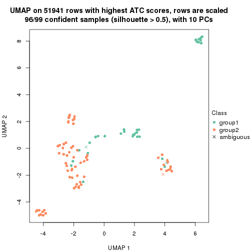
dimension_reduction(res, k = 3, method = "UMAP")
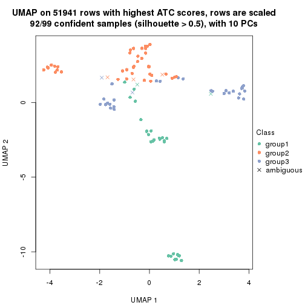
dimension_reduction(res, k = 4, method = "UMAP")
dimension_reduction(res, k = 5, method = "UMAP")
dimension_reduction(res, k = 6, method = "UMAP")

Following heatmap shows how subgroups are split when increasing k:
collect_classes(res)

Test correlation between subgroups and known annotations. If the known annotation is numeric, one-way ANOVA test is applied, and if the known annotation is discrete, chi-squared contingency table test is applied.
test_to_known_factors(res)
#> n protocol(p) individual(p) disease.state(p) k
#> ATC:NMF 96 0.306 8.59e-08 1.70e-13 2
#> ATC:NMF 92 0.968 1.43e-15 2.69e-21 3
#> ATC:NMF 85 0.467 3.52e-17 1.23e-22 4
#> ATC:NMF 95 0.849 3.64e-27 4.85e-33 5
#> ATC:NMF 90 0.998 1.13e-35 6.12e-39 6
If matrix rows can be associated to genes, consider to use functional_enrichment(res,
...) to perform function enrichment for the signature genes. See this vignette for more detailed explanations.
sessionInfo()
#> R version 3.6.0 (2019-04-26)
#> Platform: x86_64-pc-linux-gnu (64-bit)
#> Running under: CentOS Linux 7 (Core)
#>
#> Matrix products: default
#> BLAS: /usr/lib64/libblas.so.3.4.2
#> LAPACK: /usr/lib64/liblapack.so.3.4.2
#>
#> locale:
#> [1] LC_CTYPE=en_GB.UTF-8 LC_NUMERIC=C LC_TIME=en_GB.UTF-8
#> [4] LC_COLLATE=en_GB.UTF-8 LC_MONETARY=en_GB.UTF-8 LC_MESSAGES=en_GB.UTF-8
#> [7] LC_PAPER=en_GB.UTF-8 LC_NAME=C LC_ADDRESS=C
#> [10] LC_TELEPHONE=C LC_MEASUREMENT=en_GB.UTF-8 LC_IDENTIFICATION=C
#>
#> attached base packages:
#> [1] grid stats graphics grDevices utils datasets methods base
#>
#> other attached packages:
#> [1] genefilter_1.66.0 ComplexHeatmap_2.3.1 markdown_1.1 knitr_1.26
#> [5] GetoptLong_0.1.7 cola_1.3.2
#>
#> loaded via a namespace (and not attached):
#> [1] circlize_0.4.8 shape_1.4.4 xfun_0.11 slam_0.1-46
#> [5] lattice_0.20-38 splines_3.6.0 colorspace_1.4-1 vctrs_0.2.0
#> [9] stats4_3.6.0 blob_1.2.0 XML_3.98-1.20 survival_2.44-1.1
#> [13] rlang_0.4.2 pillar_1.4.2 DBI_1.0.0 BiocGenerics_0.30.0
#> [17] bit64_0.9-7 RColorBrewer_1.1-2 matrixStats_0.55.0 stringr_1.4.0
#> [21] GlobalOptions_0.1.1 evaluate_0.14 memoise_1.1.0 Biobase_2.44.0
#> [25] IRanges_2.18.3 parallel_3.6.0 AnnotationDbi_1.46.1 highr_0.8
#> [29] Rcpp_1.0.3 xtable_1.8-4 backports_1.1.5 S4Vectors_0.22.1
#> [33] annotate_1.62.0 skmeans_0.2-11 bit_1.1-14 microbenchmark_1.4-7
#> [37] brew_1.0-6 impute_1.58.0 rjson_0.2.20 png_0.1-7
#> [41] digest_0.6.23 stringi_1.4.3 polyclip_1.10-0 clue_0.3-57
#> [45] tools_3.6.0 bitops_1.0-6 magrittr_1.5 eulerr_6.0.0
#> [49] RCurl_1.95-4.12 RSQLite_2.1.4 tibble_2.1.3 cluster_2.1.0
#> [53] crayon_1.3.4 pkgconfig_2.0.3 zeallot_0.1.0 Matrix_1.2-17
#> [57] xml2_1.2.2 httr_1.4.1 R6_2.4.1 mclust_5.4.5
#> [61] compiler_3.6.0